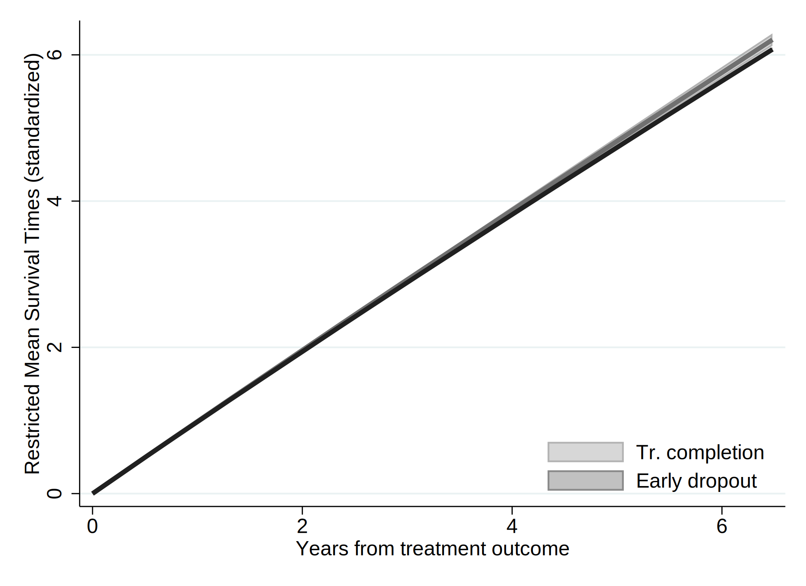
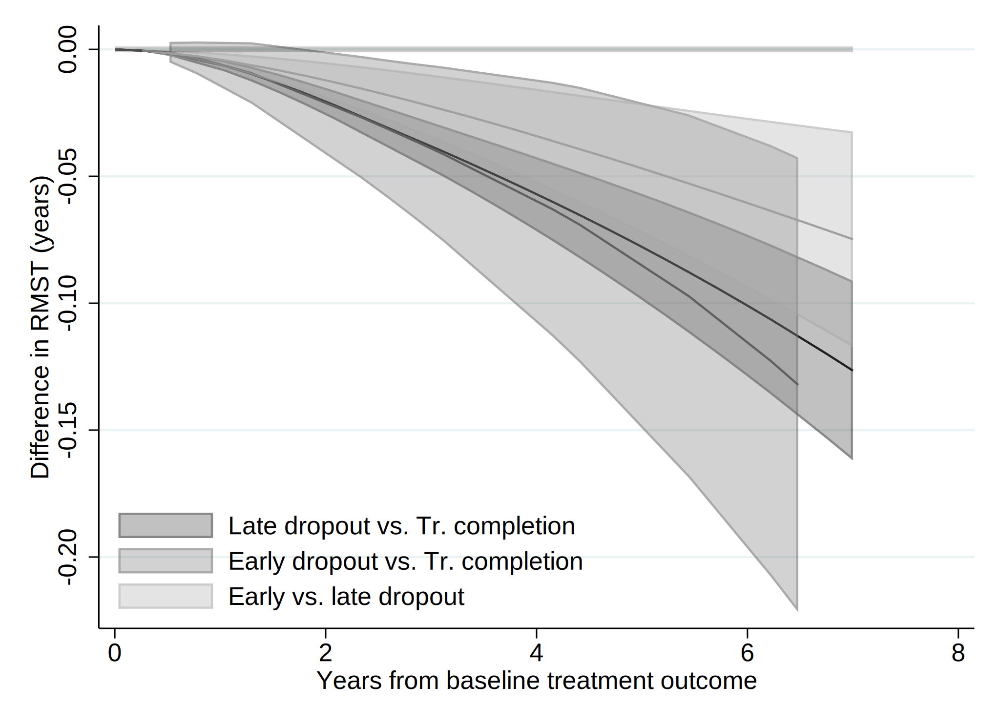

. clear all
. cap noi which tabout
C:\Users\CISS Fondecyt\ado\plus\t\tabout.ado
*! 2.0.8 Ian Watson 15mar2019
*! tabout version 3 (beta) available at: http://tabout.net.au
. if _rc==111 {
. cap noi ssc install tabout
. }
. cap noi which pathutil
C:\Users\CISS Fondecyt\ado\plus\p\pathutil.ado
*! version 2.2.0 19nov2020 daniel klein
. if _rc==111 {
. cap noi net install pathutil, from("http://fmwww.bc.edu/repec/bocode/p/")
. }
. cap noi which pathutil
C:\Users\CISS Fondecyt\ado\plus\p\pathutil.ado
*! version 2.2.0 19nov2020 daniel klein
. if _rc==111 {
. ssc install dirtools
. }
. cap noi which project
C:\Users\CISS Fondecyt\ado\plus\p\project.ado
*! version 1.3.1 22dec2013 picard@netbox.com
. if _rc==111 {
. ssc install project
. }
. cap noi which stipw
C:\Users\CISS Fondecyt\ado\plus\s\stipw.ado
*! Version 1.0.0 17Jan2022
. if _rc==111 {
. ssc install stipw
. }
. cap noi which stpm2
C:\Users\CISS Fondecyt\ado\plus\s\stpm2.ado
*! version 1.7.5 May2021
. if _rc==111 {
. ssc install stpm2
. }
. cap noi which rcsgen
C:\Users\CISS Fondecyt\ado\plus\r\rcsgen.ado
*! version 1.5.9 13FEB2022
. if _rc==111 {
. ssc install rcsgen
. }
. cap noi which matselrc
C:\Users\CISS Fondecyt\ado\plus\m\matselrc.ado
*! NJC 1.1.0 20 Apr 2000 (STB-56: dm79)
. if _rc==111 {
. cap noi net install dm79, from(http://www.stata.com/stb/stb56)
. }
. cap noi which stpm2_standsurv
C:\Users\CISS Fondecyt\ado\plus\s\stpm2_standsurv.ado
*! version 1.1.2 12Jun2018
. if _rc==111 {
. cap noi net install stpm2_standsurv.pkg, from(http://fmwww.bc.edu/RePEc/bocode/s)
. }
. cap noi which fs
C:\Users\CISS Fondecyt\ado\plus\f\fs.ado
*! NJC 1.0.5 23 November 2006
. if _rc==111 {
. ssc install fs
. }
. cap noi which mkspline2
C:\Users\CISS Fondecyt\ado\plus\m\mkspline2.ado
*! version 1.0.0 MLB 04Apr2009
. if _rc==111 {
. ssc install postrcspline
. }
.
Date created: 00:37:37 29 Mar 2023.
Get the folder
C:\Users\CISS Fondecyt\Mi unidad\Alvacast\SISTRAT 2022 (github)
Fecha: 29 Mar 2023, considerando un SO Windows para el usuario: CISS Fondecyt
Path data= ;
Tiempo: 29 Mar 2023, considerando un SO Windows
The file is located and named as: C:\Users\CISS Fondecyt\Mi unidad\Alvacast\SISTRAT 2022 (github)fiscalia_mariel_oct_2022_match_SENDA.dta
=============================================================================
=============================================================================
We open the files
. use "fiscalia_mariel_feb_2023_match_SENDA_pris.dta", clear
.
. *b) select 10% of the data
. /*
> set seed 2125
> sample 10
> */
.
.
. fs mariel_ags_*.do
mariel_ags_b.do mariel_ags_b_miss.do
. di "`r(dofile)'"
.
. *tostring tr_modality, gen(tr_modality_str)
.
. cap noi encode tr_modality_str, gen(newtr_modality)
variable tr_modality_str not found
. cap confirm variable newtr_modality
. if !_rc {
. cap noi drop tr_modality
. cap noi rename newtr_modality tr_modality
. }
.
. cap noi encode condicion_ocupacional_cor, gen(newcondicion_ocupacional_cor)
not possible with numeric variable
. cap confirm variable newcondicion_ocupacional_cor
. if !_rc {
. cap noi drop condicion_ocupacional_cor
. cap noi rename newcondicion_ocupacional_cor condicion_ocupacional_cor
. }
.
. cap noi encode tipo_centro, gen(newtipo_centro)
variable tipo_centro not found
. cap confirm variable newtipo_centro
. if !_rc {
. cap noi drop tipo_centro
. cap noi rename newtipo_centro tipo_centro
. }
.
. cap noi encode sus_ini_mod_mvv, gen(newsus_ini_mod_mvv)
. cap confirm variable newsus_ini_mod_mvv
. if !_rc {
. cap noi drop sus_ini_mod_mvv
. cap noi rename newsus_ini_mod_mvv sus_ini_mod_mvv
. }
.
. cap noi encode dg_trs_cons_sus_or, gen(newdg_trs_cons_sus_or)
. cap confirm variable newdg_trs_cons_sus_or
. if !_rc {
. cap noi drop dg_trs_cons_sus_or
. cap noi rename newdg_trs_cons_sus_or dg_trs_cons_sus_or
. }
.
. cap noi encode con_quien_vive_joel, gen(newcon_quien_vive_joel)
. cap confirm variable newcon_quien_vive_joel
. if !_rc {
. cap noi drop con_quien_vive_joel
. cap noi rename newcon_quien_vive_joel con_quien_vive_joel
. }
.
.
. *order and encode
. cap noi decode freq_cons_sus_prin, gen(str_freq_cons_sus_prin)
. cap confirm variable str_freq_cons_sus_prin
. if !_rc {
. cap noi drop freq_cons_sus_prin
. label def freq_cons_sus_prin2 1 "Less than 1 day a week" 2 "1 day a week or more" 3 "2 to 3 days a week" 4 "4 to 6 days a week" 5 "Daily"
. encode str_freq_cons_sus_prin, gen(freq_cons_sus_prin) label (freq_cons_sus_prin2)
. }
. cap noi decode dg_trs_cons_sus_or, gen(str_dg_trs_cons_sus_or)
. cap confirm variable str_dg_trs_cons_sus_or
. if !_rc {
. cap noi drop dg_trs_cons_sus_or
. cap label def dg_trs_cons_sus_or2 1 "Hazardous consumption" 2 "Drug dependence"
. encode str_dg_trs_cons_sus_or, gen(dg_trs_cons_sus_or) label (dg_trs_cons_sus_or2)
. }
.
.
. cap noi encode escolaridad_rec, gen(esc_rec)
not possible with numeric variable
. cap noi encode sex, generate(sex_enc)
. cap noi encode sus_principal_mod, gen(sus_prin_mod)
not possible with numeric variable
. cap noi encode freq_cons_sus_prin, gen(fr_sus_prin)
not possible with numeric variable
. cap noi encode compromiso_biopsicosocial, gen(comp_biosoc)
variable compromiso_biopsicosocial not found
. cap noi encode tenencia_de_la_vivienda_mod, gen(ten_viv)
not possible with numeric variable
. *encode dg_cie_10_rec, generate(dg_cie_10_mental_h) *already numeric
. cap noi encode dg_trs_cons_sus_or, gen(sud_severity_icd10)
not possible with numeric variable
. cap noi encode macrozona, gen(macrozone)
not possible with numeric variable
.
. /*
> *2023-02-28, not done in R
> cap noi recode numero_de_hijos_mod (0=0 "No children") (1/10=1 "Children"), gen(newnumero_de_hijos_mod)
> cap confirm variable newnumero_de_hijos_mod
> if !_rc {
> drop numero_de_hijos_mod
> cap noi rename newnumero_de_hijos_mod numero_de_hijos_mod
> }
> */
.
. *same for condemnatory sentence
. mkspline2 rc_x = edad_al_ing_1, cubic nknots(4) displayknots
| knot1 knot2 knot3 knot4
-------------+--------------------------------------------
edad_al_in~1 | 21.18685 29.99178 38.92615 56.32477
.
. *not necessary: 2023-02-28
. *gen motivodeegreso_mod_imp_rec3 = 1
. *replace motivodeegreso_mod_imp_rec3 = 2 if strpos(motivodeegreso_mod_imp_rec,"Early")>0
. *replace motivodeegreso_mod_imp_rec3 = 3 if strpos(motivodeegreso_mod_imp_rec,"Late")>0
.
. *encode policonsumo, generate(policon) *already numeric
. // Generate a restricted cubic spline variable for a variable "x" with 4 knots
. *https://chat.openai.com/chat/4a9396cd-2caa-4a2e-b5f4-ed2c2d0779b3
. *https://www.stata.com/meeting/nordic-and-baltic15/abstracts/materials/sweden15_oskarsson.pdf
. *mkspline xspline = edad_al_ing_1, cubic nknots(4)
. *gen rcs_x = xspline1*xspline2 xspline3 xspline4
.
. *https://www.statalist.org/forums/forum/general-stata-discussion/general/1638622-comparing-cox-proportional-hazard-linear-and-non-linear-restricted-
> cubic-spline-models-using-likelihood-ratio-test
.
We show a table of missing values
. /*
>
> vars_cov<-c("motivodeegreso_mod_imp_rec", "tr_modality", "edad_al_ing_1", "sex", "edad_ini_cons", "escolaridad_rec", "sus_principal_mod", "freq_cons
> _sus_prin", "condicion_ocupacional_corr", "policonsumo", "num_hijos_mod_joel_bin", "tenencia_de_la_vivienda_mod", "macrozona", "n_off_vio", "n_off_a
> cq", "n_off_sud", "n_off_oth", "dg_cie_10_rec", "dg_trs_cons_sus_or", "clas_r", "porc_pobr", "sus_ini_mod_mvv", "ano_nac_corr", "con_quien_vive_joel
> ", "fis_comorbidity_icd_10")
>
> */
.
. misstable sum motivodeegreso_mod_imp_rec tr_modality edad_al_ing_1 sex_enc edad_ini_cons escolaridad_rec sus_principal_mod freq_cons_sus_prin condic
> ion_ocupacional_cor policonsumo num_hijos_mod_joel_bin tenencia_de_la_vivienda_mod macrozona n_off_vio n_off_acq n_off_sud n_off_oth dg_cie_10_rec d
> g_trs_cons_sus_or clas_r porc_pobr sus_ini_mod_mvv ano_nac_corr con_quien_vive_joel fis_comorbidity_icd_10
Obs<.
+------------------------------
| | Unique
Variable | Obs=. Obs>. Obs<. | values Min Max
-------------+--------------------------------+------------------------------
motivodeeg~c | 9 70,854 | 3 1 3
tr_modality | 68 70,795 | 2 1 2
edad_ini_c~s | 5,924 64,939 | 68 5 74
escolarida~c | 317 70,546 | 3 1 3
sus_princi~d | 1 70,862 | 5 1 5
freq_cons_~n | 355 70,508 | 5 1 5
condicion_~r | 1 70,862 | 6 1 6
num_hijos_~n | 604 70,259 | 2 0 1
tenencia_d~d | 4,058 66,805 | 5 1 5
macrozona | 16 70,847 | 3 1 3
dg_trs_con~r | 1 70,862 | 2 1 2
clas_r | 2 70,861 | 3 1 3
porc_pobr | 2 70,861 | >500 .0003295 .6305783
sus_ini_mo~v | 5,787 65,076 | 5 1 5
con_quien_~l | 1 70,862 | 4 1 4
-----------------------------------------------------------------------------
And missing patterns
. misstable pat motivodeegreso_mod_imp_rec tr_modality edad_al_ing_1 sex_enc edad_ini_cons escolaridad_rec sus_principal_mod freq_cons_sus_prin condic
> ion_ocupacional_cor policonsumo num_hijos_mod_joel_bin tenencia_de_la_vivienda_mod macrozona n_off_vio n_off_acq n_off_sud n_off_oth dg_cie_10_rec d
> g_trs_cons_sus_or clas_r porc_pobr sus_ini_mod_mvv ano_nac_corr con_quien_vive_joel fis_comorbidity_icd_10
Missing-value patterns
(1 means complete)
| Pattern
Percent | 1 2 3 4 5 6 7 8 9 10 11 12 13 14 15
------------+----------------------------------------------------
85% | 1 1 1 1 1 1 1 1 1 1 1 1 1 1 1
|
7 | 1 1 1 1 1 1 1 1 1 1 1 1 1 0 0
5 | 1 1 1 1 1 1 1 1 1 1 1 1 0 1 1
<1 | 1 1 1 1 1 1 1 1 1 1 1 0 1 1 1
<1 | 1 1 1 1 1 1 1 1 1 1 1 1 0 0 0
<1 | 1 1 1 1 1 1 1 1 1 1 1 1 1 1 0
<1 | 1 1 1 1 1 1 1 1 1 1 0 1 1 1 1
<1 | 1 1 1 1 1 1 1 1 1 0 1 1 1 1 1
<1 | 1 1 1 1 1 1 1 1 1 1 1 1 1 0 1
<1 | 1 1 1 1 1 1 1 1 1 1 0 1 0 1 1
<1 | 1 1 1 1 1 1 1 1 0 1 1 1 1 1 1
<1 | 1 1 1 1 1 1 1 1 1 0 1 1 1 0 0
<1 | 1 1 1 1 1 1 1 1 1 1 1 0 1 0 0
<1 | 1 1 1 1 1 1 1 1 1 0 1 1 0 1 1
<1 | 1 1 1 1 1 1 1 1 1 1 0 1 0 0 0
<1 | 1 1 1 1 1 1 1 1 1 1 0 1 1 0 0
<1 | 1 1 1 1 1 1 1 1 1 1 1 1 0 1 0
<1 | 1 1 1 1 1 1 1 1 1 1 1 0 0 1 1
<1 | 1 1 1 1 1 1 1 1 1 1 1 1 0 0 1
<1 | 1 1 1 1 1 1 1 1 1 0 1 1 0 0 0
<1 | 1 1 1 1 1 1 1 1 0 1 1 1 0 1 1
<1 | 1 1 1 1 1 1 1 0 1 1 1 1 0 1 1
<1 | 1 1 1 1 1 1 0 1 1 1 1 1 1 1 1
<1 | 1 1 1 1 1 1 1 0 1 1 1 1 1 1 0
<1 | 1 1 1 1 1 1 1 0 1 1 1 1 1 1 1
<1 | 1 1 1 1 1 1 1 1 1 0 1 1 0 1 0
<1 | 1 1 1 1 1 1 1 1 1 0 1 1 1 1 0
<1 | 1 1 1 1 1 1 1 1 0 1 1 1 1 0 0
<1 | 1 1 1 1 1 1 1 1 1 0 0 1 1 1 1
<1 | 0 0 0 0 1 1 1 1 1 0 0 1 0 0 0
<1 | 1 1 1 1 0 0 1 1 0 1 1 1 1 1 1
<1 | 1 1 1 1 0 0 1 1 1 1 1 1 1 1 1
<1 | 1 1 1 1 1 1 0 0 1 1 1 1 1 1 1
<1 | 1 1 1 1 1 1 0 1 1 0 1 1 1 1 1
<1 | 1 1 1 1 1 1 0 1 1 1 1 1 1 0 0
<1 | 1 1 1 1 1 1 1 0 1 1 1 0 1 1 0
<1 | 1 1 1 1 1 1 1 0 1 1 1 1 0 1 0
<1 | 1 1 1 1 1 1 1 1 1 0 0 1 0 0 0
<1 | 1 1 1 1 1 1 1 1 1 0 0 1 0 1 1
<1 | 1 1 1 1 1 1 1 1 1 0 0 1 1 0 0
<1 | 1 1 1 1 1 1 1 1 1 0 1 0 1 0 0
<1 | 1 1 1 1 1 1 1 1 1 0 1 0 1 1 1
<1 | 1 1 1 1 1 1 1 1 1 0 1 1 1 0 1
<1 | 1 1 1 1 1 1 1 1 1 1 0 0 0 1 1
<1 | 1 1 1 1 1 1 1 1 1 1 0 0 1 1 1
<1 | 1 1 1 1 1 1 1 1 1 1 0 1 0 1 0
<1 | 1 1 1 1 1 1 1 1 1 1 0 1 1 0 1
<1 | 1 1 1 1 1 1 1 1 1 1 1 0 0 1 0
<1 | 1 1 1 1 1 1 1 1 1 1 1 0 1 0 1
<1 | 1 1 1 1 1 1 1 1 1 1 1 0 1 1 0
------------+----------------------------------------------------
100% |
Variables are (1) con_quien_vive_joel (2) condicion_ocupacional_corr (3) dg_trs_cons_sus_or (4) sus_principal_mod (5) clas_r (6) porc_pobr
(7) motivodeegreso_mod_imp_rec (8) macrozona (9) tr_modality (10) escolaridad_rec (11) freq_cons_sus_prin
(12) num_hijos_mod_joel_bin (13) tenencia_de_la_vivienda_mod (14) sus_ini_mod_mvv (15) edad_ini_cons
=============================================================================
=============================================================================
Reset-time
. *if missing offender_d (status) , means that there was a record and the time is the time of offense
.
. *set the indicator
. gen event=0
. replace event=1 if !missing(offender_d)
(5,144 real changes made)
. *replace event=1 if !missing(sex)
.
. *correct time to event if _st=0
. gen diff= age_offending_imp-edad_al_egres_imp
. gen diffc= cond(diff<0.001, 0.001, diff)
. drop diff
. rename diffc diff
. lab var diff "Time to offense leading to condemnatory sentence"
.
. *age time
. *stset age_offending_imp, fail(event ==1) enter(edad_al_egres_imp)
. *reset time
. stset diff, failure(event ==1)
failure event: event == 1
obs. time interval: (0, diff]
exit on or before: failure
------------------------------------------------------------------------------
70,863 total observations
0 exclusions
------------------------------------------------------------------------------
70,863 observations remaining, representing
5,144 failures in single-record/single-failure data
302,812.79 total analysis time at risk and under observation
at risk from t = 0
earliest observed entry t = 0
last observed exit t = 10.75828
.
. stdescribe, weight
failure _d: event == 1
analysis time _t: diff
|-------------- per subject --------------|
Category total mean min median max
------------------------------------------------------------------------------
no. of subjects 70863
no. of records 70863 1 1 1 1
(first) entry time 0 0 0 0
(final) exit time 4.273214 .001 3.964384 10.75828
subjects with gap 0
time on gap if gap 0
time at risk 302812.79 4.273214 .001 3.964384 10.75828
failures 5144 .0725908 0 0 1
------------------------------------------------------------------------------
We calculate the incidence rate.
. stsum, by (motivodeegreso_mod_imp_rec)
failure _d: event == 1
analysis time _t: diff
| Incidence Number of |------ Survival time -----|
motivo~c | Time at risk rate subjects 25% 50% 75%
---------+---------------------------------------------------------------------
Treatmen | 76,631.0368 .0086649 19276 . . .
Treatmen | 65,879.5092 .0259717 15797 . . .
Treatmen | 160,259.189 .0172595 35781 . . .
---------+---------------------------------------------------------------------
Total | 302,769.735 .0169799 70854 . . .
. *Micki Hill & Paul C Lambert & Michael J Crowther, 2021. "Introducing stipw: inverse probability weighted parametric survival models," London Stata
> Conference 2021 15, Stata Users Group.
. *https://view.officeapps.live.com/op/view.aspx?src=http%3A%2F%2Ffmwww.bc.edu%2Frepec%2Fusug2021%2Fusug21_hill.pptx&wdOrigin=BROWSELINK
.
. *Treatment variable should be a binary variable with values 0 and 1.
. gen motivodeegreso_mod_imp_rec2 = 0
. replace motivodeegreso_mod_imp_rec2 = 1 if motivodeegreso_mod_imp_rec==2
(15,797 real changes made)
. replace motivodeegreso_mod_imp_rec2 = 1 if motivodeegreso_mod_imp_rec==3
(35,781 real changes made)
.
. recode motivodeegreso_mod_imp_rec2 (0=1 "Tr Completion") (1=0 "Tr Non-completion (Late & Early)"), gen(caus_disch_mod_imp_rec)
(70863 differences between motivodeegreso_mod_imp_rec2 and caus_disch_mod_imp_rec)
.
. cap noi gen motegr_dum3= motivodeegreso_mod_imp_rec2
. replace motegr_dum3 = 0 if motivodeegreso_mod_imp_rec==2
(15,797 real changes made)
. cap noi gen motegr_dum2= motivodeegreso_mod_imp_rec2
. replace motegr_dum2 = 0 if motivodeegreso_mod_imp_rec==3
(35,781 real changes made)
. lab var motegr_dum3 "Baseline treatment outcome(dich, 1= Late Dropout)"
. lab var motegr_dum2 "Baseline treatment outcome(dich, 1= Early Dropout)"
. lab var caus_disch_mod_imp_rec "Baseline treatment outcome(dich)"
.
.
. *Factor variables not allowed for tvc() option. Create your own dummy varibles.
. gen motivodeegreso_mod_imp_rec_earl = 1
. replace motivodeegreso_mod_imp_rec_earl = 0 if motivodeegreso_mod_imp_rec==1
(19,276 real changes made)
. replace motivodeegreso_mod_imp_rec_earl = 0 if motivodeegreso_mod_imp_rec==3
(35,781 real changes made)
.
. gen motivodeegreso_mod_imp_rec_late = 1
. replace motivodeegreso_mod_imp_rec_late = 0 if motivodeegreso_mod_imp_rec==1
(19,276 real changes made)
. replace motivodeegreso_mod_imp_rec_late = 0 if motivodeegreso_mod_imp_rec==2
(15,797 real changes made)
.
. *recode motivodeegreso_mod_imp_rec_earl (1=1 "Early dropout") (0=0 "Tr. comp & Late dropout"), gen(newmotivodeegreso_mod_imp_rec_e)
. *recode motivodeegreso_mod_imp_rec_late (1=1 "Late dropout") (0=0 "Tr. comp & Early dropout"), gen(newmotivodeegreso_mod_imp_rec_l)
.
. lab var motivodeegreso_mod_imp_rec_earl "Baseline treatment outcome- Early dropout(dich)"
. lab var motivodeegreso_mod_imp_rec_late "Baseline treatment outcome- Late dropout(dich)"
.
. cap noi rename motivodeegreso_mod_imp_rec_late mot_egr_late
. cap noi rename motivodeegreso_mod_imp_rec_earl mot_egr_early
=============================================================================
=============================================================================
We generated a graph with every type of treatment and the Nelson-Aalen estimate.
. sts graph, na by (motivodeegreso_mod_imp_rec) ci ///
> title("Comission of an offense (impprisonment)") ///
> subtitle("Nelson-Aalen Cum Hazards w/ Confidence Intervals 95%") ///
> risktable(, size(*.5) order(1 "Tr Completion" 2 "Early Disch" 3 "Late Disch")) ///
> ytitle("Cum. Hazards") ylabel(#8) ///
> xtitle("Years since tr. outcome") xlabel(#8) ///
> note("Source: nDP, SENDA's SUD Treatments & POs Office Data period 2010-2019 ") ///
> legend(rows(3)) ///
> legend(cols(4)) ///
> graphregion(color(white) lwidth(large)) bgcolor(white) ///
> plotregion(fcolor(white)) graphregion(fcolor(white) ) /// //text(.5 1 "IR = <0.001") ///
> legend(order(1 "95CI Tr Completion" 2 "Tr Completion" 3 "95CI Early Tr Disch" 4 "Early Tr Disch " 5 "95CI Late Tr Disch" 6 "Late Tr Disch" )size(*.5
> )region(lstyle(none)) region(c(none)) nobox)
failure _d: event == 1
analysis time _t: diff
(note: named style large not found in class linewidth, default attributes used)
(note: linewidth not found in scheme, default attributes used)
(note: named style large not found in class linewidth, default attributes used)
(note: linewidth not found in scheme, default attributes used)
. graph save "`c(pwd)'\_figs\tto_2023_pris.gph", replace
(file C:\Users\CISS Fondecyt\Mi unidad\Alvacast\SISTRAT 2022 (github)\_figs\tto_2023_pris.gph saved)
=============================================================================
=============================================================================
. /*
> vars_cov<-c("motivodeegreso_mod_imp_rec", "tr_modality", "edad_al_ing_1", "sex", "edad_ini_cons", "escolaridad_rec", "sus_principal_mod", "freq_cons
> _sus_prin", "condicion_ocupacional_corr", "policonsumo", "num_hijos_mod_joel_bin", "tenencia_de_la_vivienda_mod", "macrozona", "n_off_vio", "n_off_a
> cq", "n_off_sud", "n_off_oth", "dg_cie_10_rec", "dg_trs_cons_sus_or", "clas_r", "porc_pobr", "sus_ini_mod_mvv", "ano_nac_corr", "con_quien_vive_joe
> l", "fis_comorbidity_icd_10")
> */
.
. global covs "i.motivodeegreso_mod_imp_rec i.tr_modality i.sex_enc edad_ini_cons i.escolaridad_rec i.sus_principal_mod i.freq_cons_sus_prin i.condici
> on_ocupacional_cor i.policonsumo i.num_hijos_mod_joel_bin i.tenencia_de_la_vivienda_mod i.macrozona i.n_off_vio i.n_off_acq i.n_off_sud i.n_off_oth
> i.dg_cie_10_rec i.dg_trs_cons_sus_or i.clas_r porc_pobr i.sus_ini_mod_mvv ano_nac_corr i.con_quien_vive_joel i.fis_comorbidity_icd_10"
.
.
. qui noi stcox $covs edad_al_ing_1, efron robust nolog schoenfeld(sch_a*) scaledsch(sca_a*) //change _a
failure _d: event == 1
analysis time _t: diff
Cox regression -- Efron method for ties
No. of subjects = 60,247 Number of obs = 60,247
No. of failures = 3,971
Time at risk = 235636.9084
Wald chi2(49) = 4899.58
Log pseudolikelihood = -39767.557 Prob > chi2 = 0.0000
-------------------------------------------------------------------------------------------------------------
| Robust
_t | Haz. Ratio Std. Err. z P>|z| [95% Conf. Interval]
--------------------------------------------+----------------------------------------------------------------
motivodeegreso_mod_imp_rec |
Treatment non-completion (Early) | 1.893343 .1155171 10.46 0.000 1.679947 2.133846
Treatment non-completion (Late) | 1.615254 .0830985 9.32 0.000 1.460326 1.786618
|
tr_modality |
Residential | 1.213021 .0535177 4.38 0.000 1.112536 1.322583
|
sex_enc |
Women | .6047681 .0294192 -10.34 0.000 .5497709 .665267
edad_ini_cons | .9716051 .0047457 -5.90 0.000 .9623482 .9809511
|
escolaridad_rec |
2-Completed high school or less | .8988936 .0324129 -2.96 0.003 .8375583 .9647204
1-More than high school | .724406 .0449833 -5.19 0.000 .6413945 .8181612
|
sus_principal_mod |
Cocaine hydrochloride | 1.188918 .0804801 2.56 0.011 1.041195 1.357598
Cocaine paste | 1.742265 .0964721 10.03 0.000 1.563082 1.941989
Marijuana | 1.1774 .0960346 2.00 0.045 1.003451 1.381505
Other | 1.602489 .2500445 3.02 0.003 1.18026 2.175767
|
freq_cons_sus_prin |
1 day a week or more | .965081 .1095067 -0.31 0.754 .7726429 1.205449
2 to 3 days a week | .9788317 .0909806 -0.23 0.818 .8158127 1.174426
4 to 6 days a week | 1.000066 .0962824 0.00 0.999 .828091 1.207755
Daily | 1.027076 .0952177 0.29 0.773 .8564254 1.231729
|
condicion_ocupacional_corr |
Inactive | 1.027334 .0729764 0.38 0.704 .8938132 1.1808
Looking for a job for the first time | 1.100779 .2864594 0.37 0.712 .6609815 1.833206
No activity | 1.193664 .0879715 2.40 0.016 1.033117 1.37916
Not seeking for work | 1.025036 .1567036 0.16 0.872 .7596449 1.383144
Unemployed | 1.183684 .0465496 4.29 0.000 1.095876 1.278528
|
1.policonsumo | 1.005346 .0495512 0.11 0.914 .9127714 1.107311
1.num_hijos_mod_joel_bin | 1.159625 .0465399 3.69 0.000 1.071904 1.254525
|
tenencia_de_la_vivienda_mod |
Others | 1.049513 .1617296 0.31 0.754 .7759217 1.419573
Owner/Transferred dwellings/Pays Dividends | .9233792 .1253519 -0.59 0.557 .7076632 1.204852
Renting | .9750389 .1335778 -0.18 0.854 .7454346 1.275365
Stays temporarily with a relative | .9454354 .1281242 -0.41 0.679 .7249 1.233064
|
macrozona |
North | 1.436985 .0607238 8.58 0.000 1.322764 1.561069
South | 1.520352 .0990933 6.43 0.000 1.338026 1.727522
|
n_off_vio |
1 | 1.462779 .0578913 9.61 0.000 1.353604 1.580761
|
n_off_acq |
1 | 2.79371 .1008959 28.45 0.000 2.602794 2.998629
|
n_off_sud |
1 | 1.398199 .0532569 8.80 0.000 1.297619 1.506576
|
n_off_oth |
1 | 1.742425 .0661359 14.63 0.000 1.617505 1.876993
|
dg_cie_10_rec |
Diagnosis unknown (under study) | 1.1229 .0563433 2.31 0.021 1.017726 1.238944
With psychiatric comorbidity | 1.103991 .0434116 2.52 0.012 1.022102 1.192441
|
dg_trs_cons_sus_or |
Drug dependence | 1.042081 .0448559 0.96 0.338 .9577718 1.133812
|
clas_r |
Mixta | .9031561 .0581037 -1.58 0.113 .7961622 1.024528
Rural | .8685267 .0605688 -2.02 0.043 .7575697 .9957349
|
porc_pobr | 1.543461 .387863 1.73 0.084 .9431779 2.525793
|
sus_ini_mod_mvv |
Cocaine hydrochloride | 1.189748 .1078452 1.92 0.055 .9960875 1.42106
Cocaine paste | 1.276789 .0840972 3.71 0.000 1.122158 1.452729
Marijuana | 1.171154 .0444812 4.16 0.000 1.087139 1.261663
Other | 1.428192 .1388473 3.67 0.000 1.180413 1.727984
|
ano_nac_corr | .8490027 .0077506 -17.93 0.000 .8339469 .8643303
|
con_quien_vive_joel |
Family of origin | .8832343 .0610389 -1.80 0.072 .7713487 1.011349
Others | 1.078343 .0883292 0.92 0.357 .9184035 1.266137
With couple/children | .9794422 .0669097 -0.30 0.761 .8567018 1.119768
|
fis_comorbidity_icd_10 |
Diagnosis unknown (under study) | 1.056193 .0368851 1.57 0.117 .9863185 1.131018
One or more | .8059857 .0714058 -2.43 0.015 .6775099 .9588243
|
edad_al_ing_1 | .8226295 .0077362 -20.76 0.000 .8076057 .8379329
-------------------------------------------------------------------------------------------------------------
. qui noi estat phtest, log detail
Test of proportional-hazards assumption
Time: Log(t)
----------------------------------------------------------------
| rho chi2 df Prob>chi2
------------+---------------------------------------------------
1b.motivod~c| . . 1 .
2.motivode~c| -0.05059 10.53 1 0.0012
3.motivode~c| -0.03586 5.26 1 0.0218
1b.tr_moda~y| . . 1 .
2.tr_modal~y| 0.01507 1.06 1 0.3037
1b.sex_enc | . . 1 .
2.sex_enc | -0.04339 7.62 1 0.0058
edad_ini_c~s| 0.03986 6.91 1 0.0085
1b.escolar~c| . . 1 .
2.escolari~c| -0.01171 0.59 1 0.4431
3.escolari~c| 0.02373 2.35 1 0.1249
1b.sus_pri~d| . . 1 .
2.sus_prin~d| 0.00409 0.07 1 0.7936
3.sus_prin~d| -0.00610 0.16 1 0.6875
4.sus_prin~d| 0.01437 0.89 1 0.3447
5.sus_prin~d| -0.03449 5.40 1 0.0201
1b.freq_co~n| . . 1 .
2.freq_con~n| 0.01951 1.58 1 0.2086
3.freq_con~n| -0.00189 0.02 1 0.9025
4.freq_con~n| -0.01001 0.42 1 0.5158
5.freq_con~n| -0.00734 0.23 1 0.6305
1b.condici~r| . . 1 .
2.condicio~r| 0.02791 3.08 1 0.0793
3.condicio~r| 0.00173 0.01 1 0.9149
4.condicio~r| -0.00312 0.04 1 0.8393
5.condicio~r| 0.01235 0.60 1 0.4369
6.condicio~r| -0.01120 0.51 1 0.4754
0b.policon~o| . . 1 .
1.policons~o| -0.03022 3.84 1 0.0500
0b.num_hij~n| . . 1 .
1.num_hijo~n| -0.00038 0.00 1 0.9803
1b.tenenci~d| . . 1 .
2.tenencia~d| 0.01153 0.60 1 0.4371
3.tenencia~d| 0.00626 0.19 1 0.6666
4.tenencia~d| 0.00253 0.03 1 0.8619
5.tenencia~d| 0.01017 0.49 1 0.4841
1b.macrozona| . . 1 .
2.macrozona | 0.03208 4.26 1 0.0391
3.macrozona | -0.01009 0.45 1 0.5024
1b.n_off_vio| . . 1 .
2.n_off_vio | -0.00915 0.39 1 0.5303
1b.n_off_acq| . . 1 .
2.n_off_acq | -0.06145 18.23 1 0.0000
1b.n_off_sud| . . 1 .
2.n_off_sud | 0.00104 0.01 1 0.9430
1b.n_off_oth| . . 1 .
2.n_off_oth | -0.03930 7.12 1 0.0076
1b.dg_cie_~c| . . 1 .
2.dg_cie_1~c| 0.01661 1.16 1 0.2813
3.dg_cie_1~c| -0.02129 1.95 1 0.1624
1b.dg_trs_~r| . . 1 .
2.dg_trs_c~r| 0.00988 0.41 1 0.5215
1b.clas_r | . . 1 .
2.clas_r | 0.00879 0.35 1 0.5546
3.clas_r | 0.02052 1.77 1 0.1833
porc_pobr | -0.01220 0.61 1 0.4341
1b.sus_ini~v| . . 1 .
2.sus_ini_~v| 0.01219 0.58 1 0.4457
3.sus_ini_~v| -0.00555 0.13 1 0.7173
4.sus_ini_~v| -0.00124 0.01 1 0.9350
5.sus_ini_~v| -0.01537 1.08 1 0.2986
ano_nac_corr| -0.04172 5.99 1 0.0144
1b.con_qui~l| . . 1 .
2.con_quie~l| -0.01158 0.59 1 0.4437
3.con_quie~l| -0.01958 1.65 1 0.1986
4.con_quie~l| 0.01517 1.01 1 0.3152
1b.fis_co~10| . . 1 .
2.fis_com~10| 0.00406 0.07 1 0.7934
3.fis_com~10| -0.01001 0.43 1 0.5135
edad_al_in~1| -0.05740 11.94 1 0.0005
------------+---------------------------------------------------
global test | 158.90 49 0.0000
----------------------------------------------------------------
note: robust variance-covariance matrix used.
. mat mat_scho_test = r(phtest)
. scalar chi2_scho_test = r(chi2)
. scalar chi2_scho_test_df = r(df)
. scalar chi2_scho_test_p = r(p)
.
. esttab matrix(mat_scho_test) using "mat_scho_test_02_2023_1_pris.csv", replace
(output written to mat_scho_test_02_2023_1_pris.csv)
. esttab matrix(mat_scho_test) using "mat_scho_test_02_2023_1_pris.html", replace
(output written to mat_scho_test_02_2023_1_pris.html)
.
Chi^2(49)= 158.9, p= 0
| mat_scho_test | ||||
| rho | chi2 | df | p | |
| 1b.motivodeegreso_mod_imp_rec | . | . | 1 | . |
| 2.motivodeegreso_mod_imp_rec | -.0505855 | 10.53056 | 1 | .0011742 |
| 3.motivodeegreso_mod_imp_rec | -.0358612 | 5.261426 | 1 | .0218032 |
| 1b.tr_modality | . | . | 1 | . |
| 2.tr_modality | .015071 | 1.057964 | 1 | .30368 |
| 1b.sex_enc | . | . | 1 | . |
| 2.sex_enc | -.0433908 | 7.618497 | 1 | .0057773 |
| edad_ini_cons | .0398606 | 6.914851 | 1 | .0085483 |
| 1b.escolaridad_rec | . | . | 1 | . |
| 2.escolaridad_rec | -.0117144 | .5883052 | 1 | .4430753 |
| 3.escolaridad_rec | .0237257 | 2.354241 | 1 | .1249427 |
| 1b.sus_principal_mod | . | . | 1 | . |
| 2.sus_principal_mod | .0040949 | .0684282 | 1 | .7936393 |
| 3.sus_principal_mod | -.0060988 | .1617882 | 1 | .6875155 |
| 4.sus_principal_mod | .0143697 | .8929738 | 1 | .3446727 |
| 5.sus_principal_mod | -.0344916 | 5.40097 | 1 | .0201256 |
| 1b.freq_cons_sus_prin | . | . | 1 | . |
| 2.freq_cons_sus_prin | .0195059 | 1.581007 | 1 | .2086158 |
| 3.freq_cons_sus_prin | -.0018923 | .0150174 | 1 | .9024671 |
| 4.freq_cons_sus_prin | -.0100098 | .4223019 | 1 | .5157907 |
| 5.freq_cons_sus_prin | -.0073376 | .2313167 | 1 | .6305493 |
| 1b.condicion_ocupacional_corr | . | . | 1 | . |
| 2.condicion_ocupacional_corr | .0279073 | 3.07992 | 1 | .0792644 |
| 3.condicion_ocupacional_corr | .0017338 | .0114057 | 1 | .9149497 |
| 4.condicion_ocupacional_corr | -.0031215 | .0411386 | 1 | .8392706 |
| 5.condicion_ocupacional_corr | .0123507 | .6045029 | 1 | .4368651 |
| 6.condicion_ocupacional_corr | -.0111956 | .5093345 | 1 | .4754271 |
| 0b.policonsumo | . | . | 1 | . |
| 1.policonsumo | -.0302215 | 3.842904 | 1 | .0499569 |
| 0b.num_hijos_mod_joel_bin | . | . | 1 | . |
| 1.num_hijos_mod_joel_bin | -.0003791 | .0006091 | 1 | .9803103 |
| 1b.tenencia_de_la_vivienda_mod | . | . | 1 | . |
| 2.tenencia_de_la_vivienda_mod | .0115322 | .6038898 | 1 | .4370977 |
| 3.tenencia_de_la_vivienda_mod | .0062635 | .1855696 | 1 | .6666299 |
| 4.tenencia_de_la_vivienda_mod | .0025333 | .0302815 | 1 | .8618531 |
| 5.tenencia_de_la_vivienda_mod | .0101733 | .489641 | 1 | .4840875 |
| 1b.macrozona | . | . | 1 | . |
| 2.macrozona | .0320817 | 4.258089 | 1 | .0390638 |
| 3.macrozona | -.0100901 | .4497977 | 1 | .5024311 |
| 1b.n_off_vio | . | . | 1 | . |
| 2.n_off_vio | -.0091515 | .3938548 | 1 | .5302801 |
| 1b.n_off_acq | . | . | 1 | . |
| 2.n_off_acq | -.0614513 | 18.2312 | 1 | .0000196 |
| 1b.n_off_sud | . | . | 1 | . |
| 2.n_off_sud | .001039 | .0051103 | 1 | .9430109 |
| 1b.n_off_oth | . | . | 1 | . |
| 2.n_off_oth | -.0392972 | 7.119297 | 1 | .0076259 |
| 1b.dg_cie_10_rec | . | . | 1 | . |
| 2.dg_cie_10_rec | .0166141 | 1.16072 | 1 | .2813163 |
| 3.dg_cie_10_rec | -.0212859 | 1.951763 | 1 | .162397 |
| 1b.dg_trs_cons_sus_or | . | . | 1 | . |
| 2.dg_trs_cons_sus_or | .0098824 | .4109435 | 1 | .521491 |
| 1b.clas_r | . | . | 1 | . |
| 2.clas_r | .0087935 | .3490787 | 1 | .5546351 |
| 3.clas_r | .0205235 | 1.770267 | 1 | .1833491 |
| porc_pobr | -.0121971 | .6117374 | 1 | .4341344 |
| 1b.sus_ini_mod_mvv | . | . | 1 | . |
| 2.sus_ini_mod_mvv | .0121904 | .581623 | 1 | .4456769 |
| 3.sus_ini_mod_mvv | -.0055531 | .1310749 | 1 | .7173202 |
| 4.sus_ini_mod_mvv | -.0012447 | .0066507 | 1 | .9350033 |
| 5.sus_ini_mod_mvv | -.015372 | 1.080382 | 1 | .2986122 |
| ano_nac_corr | -.041718 | 5.989176 | 1 | .0143939 |
| 1b.con_quien_vive_joel | . | . | 1 | . |
| 2.con_quien_vive_joel | -.0115847 | .5865831 | 1 | .4437435 |
| 3.con_quien_vive_joel | -.0195801 | 1.65292 | 1 | .198562 |
| 4.con_quien_vive_joel | .0151687 | 1.008687 | 1 | .3152175 |
| 1b.fis_comorbidity_icd_10 | . | . | 1 | . |
| 2.fis_comorbidity_icd_10 | .0040638 | .0685903 | 1 | .7934005 |
| 3.fis_comorbidity_icd_10 | -.0100107 | .4268851 | 1 | .5135213 |
| edad_al_ing_1 | -.0574039 | 11.93863 | 1 | .0005498 |
. // VERIFY FIRST SPLINE VARIABLE IS THE ORIGINAL VARIABLE
. assert float(edad_al_ing_1) == float(rc_x1)
.
. // MODEL WITH FULL SPLINE
. qui noi stcox $covs rc*
failure _d: event == 1
analysis time _t: diff
Iteration 0: log likelihood = -42140.282
Iteration 1: log likelihood = -40144.884
Iteration 2: log likelihood = -39754.335
Iteration 3: log likelihood = -39752.062
Iteration 4: log likelihood = -39752.058
Refining estimates:
Iteration 0: log likelihood = -39752.058
Cox regression -- Breslow method for ties
No. of subjects = 60,247 Number of obs = 60,247
No. of failures = 3,971
Time at risk = 235636.9084
LR chi2(51) = 4776.45
Log likelihood = -39752.058 Prob > chi2 = 0.0000
-------------------------------------------------------------------------------------------------------------
_t | Haz. Ratio Std. Err. z P>|z| [95% Conf. Interval]
--------------------------------------------+----------------------------------------------------------------
motivodeegreso_mod_imp_rec |
Treatment non-completion (Early) | 1.893387 .114328 10.57 0.000 1.68206 2.131264
Treatment non-completion (Late) | 1.613756 .082803 9.33 0.000 1.459359 1.784488
|
tr_modality |
Residential | 1.219599 .0518923 4.67 0.000 1.122017 1.325667
|
sex_enc |
Women | .6063769 .0294939 -10.28 0.000 .5512397 .6670291
edad_ini_cons | .9713696 .0047141 -5.99 0.000 .9621738 .9806532
|
escolaridad_rec |
2-Completed high school or less | .8823829 .0313629 -3.52 0.000 .823005 .9460449
1-More than high school | .6983125 .0432768 -5.79 0.000 .6184407 .7884999
|
sus_principal_mod |
Cocaine hydrochloride | 1.160171 .0785268 2.19 0.028 1.016033 1.324756
Cocaine paste | 1.686672 .0920129 9.58 0.000 1.515637 1.877008
Marijuana | 1.174471 .0936743 2.02 0.044 1.004504 1.373198
Other | 1.60089 .2406791 3.13 0.002 1.192315 2.149472
|
freq_cons_sus_prin |
1 day a week or more | .9665919 .1087656 -0.30 0.763 .7752858 1.205104
2 to 3 days a week | .978547 .089432 -0.24 0.812 .8180655 1.17051
4 to 6 days a week | 1.003253 .0951207 0.03 0.973 .8331169 1.208133
Daily | 1.028611 .0933393 0.31 0.756 .861015 1.22883
|
condicion_ocupacional_corr |
Inactive | 1.051563 .0747472 0.71 0.479 .9148085 1.208761
Looking for a job for the first time | 1.155319 .3116902 0.54 0.593 .6808613 1.960402
No activity | 1.222687 .0891848 2.76 0.006 1.059808 1.410598
Not seeking for work | 1.060001 .164504 0.38 0.707 .7819993 1.436833
Unemployed | 1.192953 .0466641 4.51 0.000 1.104911 1.28801
|
1.policonsumo | .9911901 .0486007 -0.18 0.857 .9003685 1.091173
1.num_hijos_mod_joel_bin | 1.124615 .0447498 2.95 0.003 1.04024 1.215834
|
tenencia_de_la_vivienda_mod |
Others | 1.053017 .1531197 0.36 0.722 .7918847 1.400261
Owner/Transferred dwellings/Pays Dividends | .9354223 .1183719 -0.53 0.598 .7299505 1.198732
Renting | .9714143 .1240264 -0.23 0.820 .7563562 1.247621
Stays temporarily with a relative | .9457054 .1194975 -0.44 0.659 .7382437 1.211468
|
macrozona |
North | 1.45097 .0608843 8.87 0.000 1.336415 1.575346
South | 1.519347 .0962216 6.60 0.000 1.341991 1.720142
|
n_off_vio |
1 | 1.467445 .0554534 10.15 0.000 1.362686 1.580258
|
n_off_acq |
1 | 2.798207 .097208 29.62 0.000 2.614025 2.995368
|
n_off_sud |
1 | 1.389128 .0506389 9.02 0.000 1.293341 1.49201
|
n_off_oth |
1 | 1.736869 .0634168 15.12 0.000 1.616918 1.865719
|
dg_cie_10_rec |
Diagnosis unknown (under study) | 1.120116 .0551691 2.30 0.021 1.017042 1.233637
With psychiatric comorbidity | 1.098108 .0423432 2.43 0.015 1.018175 1.184315
|
dg_trs_cons_sus_or |
Drug dependence | 1.036542 .0441344 0.84 0.399 .9535508 1.126755
|
clas_r |
Mixta | .9001307 .0560762 -1.69 0.091 .7966684 1.01703
Rural | .8620275 .0596641 -2.15 0.032 .7526729 .9872701
|
porc_pobr | 1.553654 .3891829 1.76 0.079 .950895 2.538495
|
sus_ini_mod_mvv |
Cocaine hydrochloride | 1.186979 .1082062 1.88 0.060 .9927655 1.419186
Cocaine paste | 1.269512 .0818297 3.70 0.000 1.118847 1.440467
Marijuana | 1.17805 .0439385 4.39 0.000 1.095004 1.267393
Other | 1.421008 .1319288 3.78 0.000 1.184594 1.704604
|
ano_nac_corr | .849161 .0080211 -17.31 0.000 .8335846 .8650284
|
con_quien_vive_joel |
Family of origin | .8820258 .0593114 -1.87 0.062 .7731124 1.006282
Others | 1.078223 .0862885 0.94 0.347 .9216974 1.261331
With couple/children | .9674378 .0644946 -0.50 0.619 .8489407 1.102475
|
fis_comorbidity_icd_10 |
Diagnosis unknown (under study) | 1.0583 .0364898 1.64 0.100 .9891445 1.132291
One or more | .8195873 .0710186 -2.30 0.022 .6915716 .9712998
|
rc_x1 | .8497888 .0101842 -13.58 0.000 .8300608 .8699857
rc_x2 | .8799622 .0351027 -3.21 0.001 .8137829 .9515233
rc_x3 | 1.28374 .1365716 2.35 0.019 1.042129 1.581367
-------------------------------------------------------------------------------------------------------------
. estat ic
Akaike's information criterion and Bayesian information criterion
-----------------------------------------------------------------------------
Model | N ll(null) ll(model) df AIC BIC
-------------+---------------------------------------------------------------
. | 60,247 -42140.28 -39752.06 51 79606.12 80065.43
-----------------------------------------------------------------------------
Note: BIC uses N = number of observations. See [R] BIC note.
. estimates store full_spline
. scalar ll_1= e(ll)
. // MODEL WITH ONLY LINEAR TERM
. qui noi stcox $covs rc_x1
failure _d: event == 1
analysis time _t: diff
Iteration 0: log likelihood = -42140.282
Iteration 1: log likelihood = -40130.013
Iteration 2: log likelihood = -39768.772
Iteration 3: log likelihood = -39767.558
Iteration 4: log likelihood = -39767.558
Refining estimates:
Iteration 0: log likelihood = -39767.558
Cox regression -- Breslow method for ties
No. of subjects = 60,247 Number of obs = 60,247
No. of failures = 3,971
Time at risk = 235636.9084
LR chi2(49) = 4745.45
Log likelihood = -39767.558 Prob > chi2 = 0.0000
-------------------------------------------------------------------------------------------------------------
_t | Haz. Ratio Std. Err. z P>|z| [95% Conf. Interval]
--------------------------------------------+----------------------------------------------------------------
motivodeegreso_mod_imp_rec |
Treatment non-completion (Early) | 1.893343 .1143877 10.57 0.000 1.681912 2.131352
Treatment non-completion (Late) | 1.615254 .0828933 9.34 0.000 1.46069 1.786174
|
tr_modality |
Residential | 1.213022 .0515964 4.54 0.000 1.115995 1.318484
|
sex_enc |
Women | .604768 .0293792 -10.35 0.000 .5498422 .6651806
edad_ini_cons | .9716051 .004664 -6.00 0.000 .9625068 .9807895
|
escolaridad_rec |
2-Completed high school or less | .8988937 .0318097 -3.01 0.003 .8386607 .9634526
1-More than high school | .7244061 .0446441 -5.23 0.000 .6419833 .8174109
|
sus_principal_mod |
Cocaine hydrochloride | 1.188917 .0804929 2.56 0.011 1.041173 1.357626
Cocaine paste | 1.742265 .0949108 10.19 0.000 1.56583 1.93858
Marijuana | 1.1774 .0940979 2.04 0.041 1.006691 1.377058
Other | 1.602489 .2412605 3.13 0.002 1.193008 2.152516
|
freq_cons_sus_prin |
1 day a week or more | .9650809 .1085998 -0.32 0.752 .7740672 1.20323
2 to 3 days a week | .9788315 .0894647 -0.23 0.815 .8182925 1.170866
4 to 6 days a week | 1.000065 .0948307 0.00 0.999 .8304503 1.204323
Daily | 1.027075 .0932082 0.29 0.768 .8597157 1.227015
|
condicion_ocupacional_corr |
Inactive | 1.027334 .0727596 0.38 0.703 .8941831 1.180312
Looking for a job for the first time | 1.10078 .2968384 0.36 0.722 .648879 1.867399
No activity | 1.193664 .0869341 2.43 0.015 1.034879 1.376813
Not seeking for work | 1.025036 .1590235 0.16 0.873 .7562831 1.389294
Unemployed | 1.183684 .0462946 4.31 0.000 1.096339 1.277988
|
1.policonsumo | 1.005346 .0493259 0.11 0.913 .9131721 1.106824
1.num_hijos_mod_joel_bin | 1.159626 .0457771 3.75 0.000 1.073287 1.25291
|
tenencia_de_la_vivienda_mod |
Others | 1.049511 .1526907 0.33 0.740 .789129 1.39581
Owner/Transferred dwellings/Pays Dividends | .923379 .1168685 -0.63 0.529 .7205211 1.18335
Renting | .9750384 .1245086 -0.20 0.843 .7591482 1.252325
Stays temporarily with a relative | .9454351 .1195051 -0.44 0.657 .7379688 1.211227
|
macrozona |
North | 1.436985 .060249 8.65 0.000 1.323621 1.560058
South | 1.520351 .0962445 6.62 0.000 1.342948 1.721188
|
n_off_vio |
1 | 1.46278 .0552954 10.06 0.000 1.35832 1.575273
|
n_off_acq |
1 | 2.793709 .097193 29.53 0.000 2.609564 2.990849
|
n_off_sud |
1 | 1.398199 .0509371 9.20 0.000 1.301845 1.501684
|
n_off_oth |
1 | 1.742425 .0636013 15.21 0.000 1.622124 1.871649
|
dg_cie_10_rec |
Diagnosis unknown (under study) | 1.122901 .0553074 2.35 0.019 1.019568 1.236706
With psychiatric comorbidity | 1.103992 .0425498 2.57 0.010 1.023668 1.190619
|
dg_trs_cons_sus_or |
Drug dependence | 1.042081 .0443403 0.97 0.333 .9587013 1.132713
|
clas_r |
Mixta | .9031563 .0562495 -1.64 0.102 .7993725 1.020415
Rural | .8685269 .0601068 -2.04 0.042 .7583602 .9946976
|
porc_pobr | 1.54346 .3861859 1.73 0.083 .945188 2.52042
|
sus_ini_mod_mvv |
Cocaine hydrochloride | 1.189748 .1084572 1.91 0.057 .9950837 1.422494
Cocaine paste | 1.27679 .0823036 3.79 0.000 1.125252 1.448735
Marijuana | 1.171154 .0437164 4.23 0.000 1.088531 1.260049
Other | 1.428193 .1326884 3.84 0.000 1.190432 1.71344
|
ano_nac_corr | .8490027 .0080164 -17.34 0.000 .8334352 .8648609
|
con_quien_vive_joel |
Family of origin | .883235 .0595004 -1.84 0.065 .7739873 1.007903
Others | 1.078344 .086368 0.94 0.346 .9216835 1.261632
With couple/children | .9794429 .0652737 -0.31 0.755 .8595119 1.116108
|
fis_comorbidity_icd_10 |
Diagnosis unknown (under study) | 1.056193 .0364207 1.59 0.113 .9871687 1.130044
One or more | .8059858 .0698305 -2.49 0.013 .6801103 .9551584
|
rc_x1 | .8226295 .0079032 -20.32 0.000 .8072845 .8382662
-------------------------------------------------------------------------------------------------------------
. estat ic
Akaike's information criterion and Bayesian information criterion
-----------------------------------------------------------------------------
Model | N ll(null) ll(model) df AIC BIC
-------------+---------------------------------------------------------------
. | 60,247 -42140.28 -39767.56 49 79633.12 80074.42
-----------------------------------------------------------------------------
Note: BIC uses N = number of observations. See [R] BIC note.
. scalar ll_2= e(ll)
. estimates store linear_term
.
. lrtest full_spline linear_term
Likelihood-ratio test LR chi2(2) = 31.00
(Assumption: linear_term nested in full_spline) Prob > chi2 = 0.0000
.
. scalar ll_diff= round(`=scalar(ll_1)'-`=scalar(ll_2)',.01)
. di "Log-likelihood difference (spline - linear): `=scalar(ll_diff)'"
Log-likelihood difference (spline - linear): 15.5
.
. * the presence of censored observations makes it difficult to decide further among them. (This is partly due to the fact that both the Cox model and
> the parametric survival models assume that censoring is orthogonal to survival time, a mathematically handy assumption that is often demonstrably a
> nd seriously in error, and the actual data generation process for survival is often too unknown or too messy to simulate.) So in this context, relia
> nce on LR tests or IC statistics is a fallback position.
Log-likelihood difference (spline - linear): 15.5
Nevetheless, we chose the model with spline terms due to linearity over a better fit.
. *Micki Hill & Paul C Lambert & Michael J Crowther, 2021. "Introducing stipw: inverse probability weighted parametric survival models," London Stata
> Conference 2021 15, Stata Users Group.
. *https://view.officeapps.live.com/op/view.aspx?src=http%3A%2F%2Ffmwww.bc.edu%2Frepec%2Fusug2021%2Fusug21_hill.pptx&wdOrigin=BROWSELINK
.
. *Treatment variable should be a binary variable with values 0 and 1.
.
. qui noi stcox $covs rc_x*, efron robust nolog schoenfeld(sch_b*) scaledsch(sca_b*) //change _b
failure _d: event == 1
analysis time _t: diff
Cox regression -- Efron method for ties
No. of subjects = 60,247 Number of obs = 60,247
No. of failures = 3,971
Time at risk = 235636.9084
Wald chi2(51) = 4759.03
Log pseudolikelihood = -39752.057 Prob > chi2 = 0.0000
-------------------------------------------------------------------------------------------------------------
| Robust
_t | Haz. Ratio Std. Err. z P>|z| [95% Conf. Interval]
--------------------------------------------+----------------------------------------------------------------
motivodeegreso_mod_imp_rec |
Treatment non-completion (Early) | 1.893387 .1153755 10.48 0.000 1.680237 2.133577
Treatment non-completion (Late) | 1.613756 .0829994 9.30 0.000 1.459011 1.784914
|
tr_modality |
Residential | 1.219598 .0537778 4.50 0.000 1.118622 1.32969
|
sex_enc |
Women | .606377 .0295194 -10.28 0.000 .5511944 .667084
edad_ini_cons | .9713696 .0048511 -5.82 0.000 .9619079 .9809242
|
escolaridad_rec |
2-Completed high school or less | .8823828 .03187 -3.46 0.001 .8220785 .9471109
1-More than high school | .6983125 .0435408 -5.76 0.000 .6179825 .7890843
|
sus_principal_mod |
Cocaine hydrochloride | 1.160171 .0783958 2.20 0.028 1.016258 1.324463
Cocaine paste | 1.686673 .0932598 9.45 0.000 1.513443 1.87973
Marijuana | 1.174471 .0953522 1.98 0.048 1.001695 1.377048
Other | 1.60089 .2494801 3.02 0.003 1.179537 2.172758
|
freq_cons_sus_prin |
1 day a week or more | .966592 .1096613 -0.30 0.765 .7738792 1.207295
2 to 3 days a week | .9785472 .0909173 -0.23 0.815 .8156357 1.173998
4 to 6 days a week | 1.003253 .0965246 0.03 0.973 .8308353 1.211451
Daily | 1.028612 .0953241 0.30 0.761 .8577651 1.233487
|
condicion_ocupacional_corr |
Inactive | 1.051563 .0750485 0.70 0.481 .9142947 1.20944
Looking for a job for the first time | 1.155319 .2988474 0.56 0.577 .6958581 1.918152
No activity | 1.222686 .0902503 2.72 0.006 1.057999 1.413009
Not seeking for work | 1.060001 .1616386 0.38 0.702 .7861531 1.42924
Unemployed | 1.192953 .0469334 4.48 0.000 1.104422 1.28858
|
1.policonsumo | .9911903 .0487254 -0.18 0.857 .9001467 1.091442
1.num_hijos_mod_joel_bin | 1.124615 .0453907 2.91 0.004 1.039078 1.217192
|
tenencia_de_la_vivienda_mod |
Others | 1.053019 .1611484 0.34 0.736 .7801405 1.421345
Owner/Transferred dwellings/Pays Dividends | .9354226 .1259764 -0.50 0.620 .7184123 1.217985
Renting | .9714148 .132006 -0.21 0.831 .7442769 1.26787
Stays temporarily with a relative | .9457056 .1271121 -0.42 0.678 .7266849 1.230739
|
macrozona |
North | 1.45097 .0613192 8.81 0.000 1.335629 1.576271
South | 1.519348 .0989633 6.42 0.000 1.337254 1.726238
|
n_off_vio |
1 | 1.467445 .0579478 9.71 0.000 1.358153 1.585531
|
n_off_acq |
1 | 2.798208 .1007418 28.58 0.000 2.607563 3.002791
|
n_off_sud |
1 | 1.389129 .0528773 8.63 0.000 1.289263 1.496731
|
n_off_oth |
1 | 1.736869 .0658694 14.56 0.000 1.612449 1.87089
|
dg_cie_10_rec |
Diagnosis unknown (under study) | 1.120116 .0561053 2.26 0.024 1.015377 1.235659
With psychiatric comorbidity | 1.098107 .0432098 2.38 0.017 1.016601 1.186148
|
dg_trs_cons_sus_or |
Drug dependence | 1.036541 .04462 0.83 0.404 .9526756 1.12779
|
clas_r |
Mixta | .9001304 .0578332 -1.64 0.102 .793626 1.020928
Rural | .8620272 .0601237 -2.13 0.033 .7518866 .9883019
|
porc_pobr | 1.553655 .3909832 1.75 0.080 .9487385 2.544267
|
sus_ini_mod_mvv |
Cocaine hydrochloride | 1.186979 .1074285 1.89 0.058 .9940411 1.417365
Cocaine paste | 1.269512 .0833532 3.63 0.000 1.116218 1.443859
Marijuana | 1.17805 .0446242 4.33 0.000 1.093756 1.26884
Other | 1.421008 .1378702 3.62 0.000 1.174926 1.71863
|
ano_nac_corr | .849161 .0077491 -17.92 0.000 .8341081 .8644856
|
con_quien_vive_joel |
Family of origin | .8820251 .060847 -1.82 0.069 .7704781 1.009722
Others | 1.078223 .0882911 0.92 0.358 .9183479 1.26593
With couple/children | .9674371 .0661817 -0.48 0.628 .8460433 1.106249
|
fis_comorbidity_icd_10 |
Diagnosis unknown (under study) | 1.0583 .0369221 1.62 0.104 .9883529 1.133198
One or more | .8195872 .0724765 -2.25 0.024 .6891647 .9746919
|
rc_x1 | .8497889 .0101321 -13.65 0.000 .8301605 .8698814
rc_x2 | .8799619 .0356904 -3.15 0.002 .8127183 .9527693
rc_x3 | 1.283741 .1382809 2.32 0.020 1.039413 1.5855
-------------------------------------------------------------------------------------------------------------
. qui noi estat phtest, log detail
Test of proportional-hazards assumption
Time: Log(t)
----------------------------------------------------------------
| rho chi2 df Prob>chi2
------------+---------------------------------------------------
1b.motivod~c| . . 1 .
2.motivode~c| -0.05005 10.28 1 0.0013
3.motivode~c| -0.03528 5.10 1 0.0239
1b.tr_moda~y| . . 1 .
2.tr_modal~y| 0.01373 0.88 1 0.3491
1b.sex_enc | . . 1 .
2.sex_enc | -0.04371 7.74 1 0.0054
edad_ini_c~s| 0.03926 7.02 1 0.0081
1b.escolar~c| . . 1 .
2.escolari~c| -0.00937 0.37 1 0.5414
3.escolari~c| 0.02602 2.82 1 0.0934
1b.sus_pri~d| . . 1 .
2.sus_prin~d| 0.00558 0.13 1 0.7225
3.sus_prin~d| -0.00354 0.05 1 0.8165
4.sus_prin~d| 0.01438 0.89 1 0.3465
5.sus_prin~d| -0.03383 5.17 1 0.0230
1b.freq_co~n| . . 1 .
2.freq_con~n| 0.01849 1.43 1 0.2317
3.freq_con~n| -0.00275 0.03 1 0.8583
4.freq_con~n| -0.01090 0.50 1 0.4778
5.freq_con~n| -0.00835 0.30 1 0.5825
1b.condici~r| . . 1 .
2.condicio~r| 0.02585 2.67 1 0.1024
3.condicio~r| 0.00033 0.00 1 0.9840
4.condicio~r| -0.00472 0.09 1 0.7580
5.condicio~r| 0.01129 0.50 1 0.4788
6.condicio~r| -0.01198 0.58 1 0.4446
0b.policon~o| . . 1 .
1.policons~o| -0.02873 3.44 1 0.0638
0b.num_hij~n| . . 1 .
1.num_hijo~n| 0.00372 0.06 1 0.8093
1b.tenenci~d| . . 1 .
2.tenencia~d| 0.01112 0.55 1 0.4569
3.tenencia~d| 0.00521 0.13 1 0.7222
4.tenencia~d| 0.00190 0.02 1 0.8969
5.tenencia~d| 0.00985 0.45 1 0.5017
1b.macrozona| . . 1 .
2.macrozona | 0.03079 3.92 1 0.0478
3.macrozona | -0.00960 0.41 1 0.5233
1b.n_off_vio| . . 1 .
2.n_off_vio | -0.01015 0.48 1 0.4868
1b.n_off_acq| . . 1 .
2.n_off_acq | -0.06123 18.01 1 0.0000
1b.n_off_sud| . . 1 .
2.n_off_sud | 0.00293 0.04 1 0.8400
1b.n_off_oth| . . 1 .
2.n_off_oth | -0.03847 6.81 1 0.0091
1b.dg_cie_~c| . . 1 .
2.dg_cie_1~c| 0.01716 1.23 1 0.2666
3.dg_cie_1~c| -0.02002 1.74 1 0.1871
1b.dg_trs_~r| . . 1 .
2.dg_trs_c~r| 0.01024 0.44 1 0.5065
1b.clas_r | . . 1 .
2.clas_r | 0.00911 0.37 1 0.5411
3.clas_r | 0.02121 1.90 1 0.1686
porc_pobr | -0.01235 0.63 1 0.4273
1b.sus_ini~v| . . 1 .
2.sus_ini_~v| 0.01152 0.52 1 0.4717
3.sus_ini_~v| -0.00471 0.09 1 0.7594
4.sus_ini_~v| -0.00214 0.02 1 0.8886
5.sus_ini_~v| -0.01540 1.08 1 0.2992
ano_nac_corr| -0.04188 6.04 1 0.0140
1b.con_qui~l| . . 1 .
2.con_quie~l| -0.01141 0.57 1 0.4511
3.con_quie~l| -0.01955 1.65 1 0.1988
4.con_quie~l| 0.01553 1.06 1 0.3034
1b.fis_co~10| . . 1 .
2.fis_com~10| 0.00429 0.08 1 0.7826
3.fis_com~10| -0.01062 0.48 1 0.4889
rc_x1 | -0.05720 12.94 1 0.0003
rc_x2 | 0.01569 1.05 1 0.3048
rc_x3 | -0.01308 0.72 1 0.3964
------------+---------------------------------------------------
global test | 160.56 51 0.0000
----------------------------------------------------------------
note: robust variance-covariance matrix used.
. mat mat_scho_test2 = r(phtest)
. scalar chi2_scho_test2 = r(chi2)
. scalar chi2_scho_test_df2 = r(df)
. scalar chi2_scho_test_p2 = r(p)
.
. esttab matrix(mat_scho_test2) using "mat_scho_test_02_2023_2_pris.csv", replace
(output written to mat_scho_test_02_2023_2_pris.csv)
. esttab matrix(mat_scho_test2) using "mat_scho_test_02_2023_2_pris.html", replace
(output written to mat_scho_test_02_2023_2_pris.html)
.
Chi^2(51)= 160.56, p= 0
| mat_scho_test2 | ||||
| rho | chi2 | df | p | |
| 1b.motivodeegreso_mod_imp_rec | . | . | 1 | . |
| 2.motivodeegreso_mod_imp_rec | -.0500499 | 10.28204 | 1 | .0013433 |
| 3.motivodeegreso_mod_imp_rec | -.0352819 | 5.099542 | 1 | .0239322 |
| 1b.tr_modality | . | . | 1 | . |
| 2.tr_modality | .0137262 | .8765907 | 1 | .3491372 |
| 1b.sex_enc | . | . | 1 | . |
| 2.sex_enc | -.0437137 | 7.737951 | 1 | .0054072 |
| edad_ini_cons | .039264 | 7.02219 | 1 | .0080506 |
| 1b.escolaridad_rec | . | . | 1 | . |
| 2.escolaridad_rec | -.0093679 | .372936 | 1 | .5414082 |
| 3.escolaridad_rec | .0260203 | 2.81527 | 1 | .0933712 |
| 1b.sus_principal_mod | . | . | 1 | . |
| 2.sus_principal_mod | .0055767 | .1261355 | 1 | .722473 |
| 3.sus_principal_mod | -.0035439 | .0538571 | 1 | .8164826 |
| 4.sus_principal_mod | .014379 | .8861613 | 1 | .3465197 |
| 5.sus_principal_mod | -.0338319 | 5.165039 | 1 | .0230459 |
| 1b.freq_cons_sus_prin | . | . | 1 | . |
| 2.freq_cons_sus_prin | .0184913 | 1.430093 | 1 | .2317492 |
| 3.freq_cons_sus_prin | -.0027462 | .031863 | 1 | .8583286 |
| 4.freq_cons_sus_prin | -.0109016 | .5039663 | 1 | .4777625 |
| 5.freq_cons_sus_prin | -.0083538 | .3021703 | 1 | .582525 |
| 1b.condicion_ocupacional_corr | . | . | 1 | . |
| 2.condicion_ocupacional_corr | .0258495 | 2.668538 | 1 | .10235 |
| 3.condicion_ocupacional_corr | .0003277 | .0004034 | 1 | .9839755 |
| 4.condicion_ocupacional_corr | -.0047248 | .0949142 | 1 | .7580204 |
| 5.condicion_ocupacional_corr | .0112913 | .5015134 | 1 | .4788359 |
| 6.condicion_ocupacional_corr | -.0119765 | .5844395 | 1 | .4445774 |
| 0b.policonsumo | . | . | 1 | . |
| 1.policonsumo | -.0287281 | 3.436055 | 1 | .0637878 |
| 0b.num_hijos_mod_joel_bin | . | . | 1 | . |
| 1.num_hijos_mod_joel_bin | .0037205 | .0582206 | 1 | .8093308 |
| 1b.tenencia_de_la_vivienda_mod | . | . | 1 | . |
| 2.tenencia_de_la_vivienda_mod | .0111188 | .5534841 | 1 | .4568976 |
| 3.tenencia_de_la_vivienda_mod | .005211 | .1263908 | 1 | .722204 |
| 4.tenencia_de_la_vivienda_mod | .0019021 | .0167999 | 1 | .8968716 |
| 5.tenencia_de_la_vivienda_mod | .0098461 | .451242 | 1 | .5017457 |
| 1b.macrozona | . | . | 1 | . |
| 2.macrozona | .0307854 | 3.917798 | 1 | .0477774 |
| 3.macrozona | -.0095954 | .4074077 | 1 | .5232882 |
| 1b.n_off_vio | . | . | 1 | . |
| 2.n_off_vio | -.0101528 | .4835621 | 1 | .4868132 |
| 1b.n_off_acq | . | . | 1 | . |
| 2.n_off_acq | -.0612278 | 18.01141 | 1 | .000022 |
| 1b.n_off_sud | . | . | 1 | . |
| 2.n_off_sud | .0029325 | .0407689 | 1 | .8399847 |
| 1b.n_off_oth | . | . | 1 | . |
| 2.n_off_oth | -.0384719 | 6.809868 | 1 | .0090655 |
| 1b.dg_cie_10_rec | . | . | 1 | . |
| 2.dg_cie_10_rec | .0171607 | 1.233982 | 1 | .266634 |
| 3.dg_cie_10_rec | -.0200249 | 1.740406 | 1 | .1870874 |
| 1b.dg_trs_cons_sus_or | . | . | 1 | . |
| 2.dg_trs_cons_sus_or | .0102361 | .4412358 | 1 | .5065266 |
| 1b.clas_r | . | . | 1 | . |
| 2.clas_r | .0091065 | .3734673 | 1 | .5411203 |
| 3.clas_r | .0212135 | 1.895354 | 1 | .1685993 |
| porc_pobr | -.0123476 | .6301175 | 1 | .4273122 |
| 1b.sus_ini_mod_mvv | . | . | 1 | . |
| 2.sus_ini_mod_mvv | .0115191 | .5180372 | 1 | .4716801 |
| 3.sus_ini_mod_mvv | -.0047116 | .0937702 | 1 | .7594377 |
| 4.sus_ini_mod_mvv | -.0021437 | .0196365 | 1 | .888557 |
| 5.sus_ini_mod_mvv | -.015405 | 1.077809 | 1 | .2991882 |
| ano_nac_corr | -.0418808 | 6.042403 | 1 | .0139663 |
| 1b.con_quien_vive_joel | . | . | 1 | . |
| 2.con_quien_vive_joel | -.011411 | .5678431 | 1 | .4511173 |
| 3.con_quien_vive_joel | -.0195452 | 1.65145 | 1 | .1987617 |
| 4.con_quien_vive_joel | .0155289 | 1.059129 | 1 | .303414 |
| 1b.fis_comorbidity_icd_10 | . | . | 1 | . |
| 2.fis_comorbidity_icd_10 | .0042862 | .0761292 | 1 | .7826132 |
| 3.fis_comorbidity_icd_10 | -.0106249 | .4790314 | 1 | .4888614 |
| rc_x1 | -.0572021 | 12.93647 | 1 | .0003222 |
| rc_x2 | .0156938 | 1.053289 | 1 | .3047509 |
| rc_x3 | -.0130798 | .7191633 | 1 | .3964185 |
=============================================================================
=============================================================================
In view of nonproportional hazards, we explored different shapes of time-dependent effects and baseline hazards.
. *______________________________________________
. *______________________________________________
. * ADJUSTED ROYSTON PARMAR - NO STAGGERED ENTRY, BINARY TREATMENT (1-DROPOUT VS. 0-COMPLETION)
.
. /*
> vars_cov<-c("motivodeegreso_mod_imp_rec", "tr_modality", "edad_al_ing_1", "sex", "edad_ini_cons", "escolaridad_rec", "sus_principal_mod", "freq_cons
> _sus_prin", "condicion_ocupacional_corr", "policonsumo", "num_hijos_mod_joel_bin", "tenencia_de_la_vivienda_mod", "macrozona", "n_off_vio", "n_off_a
> cq", "n_off_sud", "n_off_oth", "dg_cie_10_rec", "dg_trs_cons_sus_or", "clas_r", "porc_pobr", "sus_ini_mod_mvv", "ano_nac_corr", "con_quien_vive_joe
> l", "fis_comorbidity_icd_10")
> */
.
. global covs_3b "mot_egr_early mot_egr_late i.tr_modality i.sex_enc edad_ini_cons i.escolaridad_rec i.sus_principal_mod i.freq_cons_sus_prin i.condic
> ion_ocupacional_cor i.policonsumo i.num_hijos_mod_joel_bin i.tenencia_de_la_vivienda_mod i.macrozona i.n_off_vio i.n_off_acq i.n_off_sud i.n_off_oth
> i.dg_cie_10_rec i.dg_trs_cons_sus_or i.clas_r porc_pobr i.sus_ini_mod_mvv ano_nac_corr i.con_quien_vive_joel i.fis_comorbidity_icd_10 rc_x1 rc_x2 r
> c_x3"
.
. forvalues i=1/10 {
2. forvalues j=1/7 {
3. qui noi stpm2 $covs_3b , scale(hazard) df(`i') eform tvc(mot_egr_early mot_egr_late) dftvc(`j')
4. estimates store m_nostag_rp`i'_tvc_`j'
5. }
6. }
Iteration 0: log likelihood = -17115.278
Iteration 1: log likelihood = -17042.637
Iteration 2: log likelihood = -17041.827
Iteration 3: log likelihood = -17041.826
Log likelihood = -17041.826 Number of obs = 60,253
-------------------------------------------------------------------------------------------------------------
| exp(b) Std. Err. z P>|z| [95% Conf. Interval]
--------------------------------------------+----------------------------------------------------------------
xb |
mot_egr_early | 1.969066 .1241398 10.75 0.000 1.740188 2.228046
mot_egr_late | 1.677501 .0911885 9.52 0.000 1.507966 1.866095
|
tr_modality |
Residential | 1.217145 .0517899 4.62 0.000 1.119756 1.323004
|
sex_enc |
Women | .6053003 .0294243 -10.33 0.000 .5502918 .6658077
edad_ini_cons | .9714869 .0047128 -5.96 0.000 .9622937 .980768
|
escolaridad_rec |
2-Completed high school or less | .8825991 .0313615 -3.51 0.000 .8232234 .9462575
1-More than high school | .6977892 .0432378 -5.81 0.000 .6179885 .7878946
|
sus_principal_mod |
Cocaine hydrochloride | 1.15406 .0780163 2.12 0.034 1.010847 1.317561
Cocaine paste | 1.679612 .0915314 9.52 0.000 1.509462 1.868942
Marijuana | 1.166705 .0930059 1.93 0.053 .997944 1.364005
Other | 1.58259 .2379059 3.05 0.002 1.178718 2.124844
|
freq_cons_sus_prin |
1 day a week or more | .9688799 .1090278 -0.28 0.779 .7771135 1.207968
2 to 3 days a week | .978162 .0893999 -0.24 0.809 .8177386 1.170057
4 to 6 days a week | 1.003153 .0951114 0.03 0.974 .833034 1.208013
Daily | 1.030034 .0934658 0.33 0.744 .8622104 1.230524
|
condicion_ocupacional_corr |
Inactive | 1.048707 .0745268 0.67 0.503 .9123539 1.205439
Looking for a job for the first time | 1.14806 .3097316 0.51 0.609 .6765839 1.948084
No activity | 1.22697 .0894862 2.80 0.005 1.063539 1.415515
Not seeking for work | 1.063178 .1649767 0.39 0.693 .7843724 1.441085
Unemployed | 1.189747 .0465116 4.44 0.000 1.10199 1.284491
|
1.policonsumo | .987923 .0484199 -0.25 0.804 .8974375 1.087532
1.num_hijos_mod_joel_bin | 1.126344 .0448123 2.99 0.003 1.041851 1.21769
|
tenencia_de_la_vivienda_mod |
Others | 1.056736 .1536587 0.38 0.704 .7946835 1.405202
Owner/Transferred dwellings/Pays Dividends | .9426877 .1193027 -0.47 0.641 .7356027 1.208071
Renting | .9775417 .1248144 -0.18 0.859 .7611184 1.255505
Stays temporarily with a relative | .9513815 .1202302 -0.39 0.693 .7426508 1.218778
|
macrozona |
North | 1.450618 .0608413 8.87 0.000 1.336141 1.574903
South | 1.533408 .0968356 6.77 0.000 1.354889 1.735447
|
n_off_vio |
1 | 1.469345 .0555828 10.17 0.000 1.364345 1.582426
|
n_off_acq |
1 | 2.818076 .0980209 29.79 0.000 2.632361 3.016893
|
n_off_sud |
1 | 1.394014 .05085 9.11 0.000 1.297829 1.497328
|
n_off_oth |
1 | 1.742712 .063707 15.19 0.000 1.622217 1.872157
|
dg_cie_10_rec |
Diagnosis unknown (under study) | 1.117061 .0549582 2.25 0.024 1.014376 1.230142
With psychiatric comorbidity | 1.100806 .0424376 2.49 0.013 1.020694 1.187205
|
dg_trs_cons_sus_or |
Drug dependence | 1.036604 .0441273 0.84 0.398 .9536257 1.126802
|
clas_r |
Mixta | .8989648 .0559922 -1.71 0.087 .7956561 1.015687
Rural | .8631168 .0597132 -2.13 0.033 .7536691 .9884585
|
porc_pobr | 1.507292 .377367 1.64 0.101 .9227625 2.462096
|
sus_ini_mod_mvv |
Cocaine hydrochloride | 1.190024 .108465 1.91 0.056 .9953426 1.422782
Cocaine paste | 1.271806 .081976 3.73 0.000 1.12087 1.443066
Marijuana | 1.181872 .0440662 4.48 0.000 1.098584 1.271474
Other | 1.422922 .1321055 3.80 0.000 1.186191 1.706898
|
ano_nac_corr | .8692351 .0080656 -15.10 0.000 .8535697 .885188
|
con_quien_vive_joel |
Family of origin | .8785121 .0590111 -1.93 0.054 .7701426 1.002131
Others | 1.073444 .0858425 0.89 0.375 .9177185 1.255595
With couple/children | .9633544 .064143 -0.56 0.575 .845494 1.097644
|
fis_comorbidity_icd_10 |
Diagnosis unknown (under study) | 1.061096 .0365717 1.72 0.085 .9917846 1.135252
One or more | .8203809 .0710755 -2.29 0.022 .6922609 .9722126
|
rc_x1 | .869338 .0103092 -11.81 0.000 .8493654 .8897802
rc_x2 | .8813251 .0351478 -3.17 0.002 .8150602 .9529775
rc_x3 | 1.280426 .1361889 2.32 0.020 1.039486 1.577212
_rcs1 | 2.156674 .0681956 24.31 0.000 2.027071 2.294564
_rcs_mot_egr_early1 | .9041276 .0320796 -2.84 0.005 .8433891 .9692403
_rcs_mot_egr_late1 | .9210335 .0314665 -2.41 0.016 .8613798 .9848183
_cons | 7.5e+120 1.4e+122 14.89 0.000 9.1e+104 6.2e+136
-------------------------------------------------------------------------------------------------------------
Note: Estimates are transformed only in the first equation.
Iteration 0: log likelihood = -17041.793
Iteration 1: log likelihood = -16999.464
Iteration 2: log likelihood = -16998.982
Iteration 3: log likelihood = -16998.981
Log likelihood = -16998.981 Number of obs = 60,253
-------------------------------------------------------------------------------------------------------------
| exp(b) Std. Err. z P>|z| [95% Conf. Interval]
--------------------------------------------+----------------------------------------------------------------
xb |
mot_egr_early | 2.010604 .1270502 11.05 0.000 1.776393 2.275695
mot_egr_late | 1.704732 .0927892 9.80 0.000 1.532234 1.896651
|
tr_modality |
Residential | 1.216519 .0517611 4.61 0.000 1.119184 1.32232
|
sex_enc |
Women | .6063496 .0294762 -10.29 0.000 .5512442 .6669637
edad_ini_cons | .9715432 .0047122 -5.95 0.000 .9623511 .980823
|
escolaridad_rec |
2-Completed high school or less | .8834282 .0313915 -3.49 0.000 .8239957 .9471475
1-More than high school | .6986002 .0432915 -5.79 0.000 .6187007 .7888179
|
sus_principal_mod |
Cocaine hydrochloride | 1.152504 .0779095 2.10 0.036 1.009488 1.315782
Cocaine paste | 1.677393 .091411 9.49 0.000 1.507467 1.866473
Marijuana | 1.167488 .0930673 1.94 0.052 .9986153 1.364919
Other | 1.581021 .2376742 3.05 0.002 1.177543 2.122747
|
freq_cons_sus_prin |
1 day a week or more | .9685158 .1089847 -0.28 0.776 .7768249 1.207509
2 to 3 days a week | .9787468 .0894488 -0.24 0.814 .8182349 1.170746
4 to 6 days a week | 1.003107 .0951028 0.03 0.974 .8330025 1.207948
Daily | 1.030035 .0934567 0.33 0.744 .8622263 1.230504
|
condicion_ocupacional_corr |
Inactive | 1.049829 .0746102 0.68 0.494 .913323 1.206736
Looking for a job for the first time | 1.140441 .3076817 0.49 0.626 .6720868 1.935174
No activity | 1.226214 .0894207 2.80 0.005 1.062902 1.414619
Not seeking for work | 1.06028 .1645235 0.38 0.706 .7822396 1.437148
Unemployed | 1.188851 .0464774 4.42 0.000 1.10116 1.283526
|
1.policonsumo | .9891671 .048481 -0.22 0.824 .8985673 1.088902
1.num_hijos_mod_joel_bin | 1.126124 .0448033 2.99 0.003 1.041647 1.217451
|
tenencia_de_la_vivienda_mod |
Others | 1.054198 .1532946 0.36 0.717 .7927678 1.40184
Owner/Transferred dwellings/Pays Dividends | .9407965 .1190541 -0.48 0.630 .7341409 1.205624
Renting | .9760664 .1246176 -0.19 0.850 .7599827 1.253589
Stays temporarily with a relative | .9498247 .1200243 -0.41 0.684 .7414495 1.216761
|
macrozona |
North | 1.447768 .0607255 8.82 0.000 1.333509 1.571817
South | 1.530456 .0966259 6.74 0.000 1.352322 1.732056
|
n_off_vio |
1 | 1.466806 .0554857 10.13 0.000 1.361989 1.579688
|
n_off_acq |
1 | 2.806718 .0976317 29.67 0.000 2.621741 3.004747
|
n_off_sud |
1 | 1.393429 .0508207 9.10 0.000 1.297299 1.496682
|
n_off_oth |
1 | 1.738673 .0635615 15.13 0.000 1.618453 1.867823
|
dg_cie_10_rec |
Diagnosis unknown (under study) | 1.117858 .0550277 2.26 0.024 1.015045 1.231084
With psychiatric comorbidity | 1.100078 .0424056 2.47 0.013 1.020027 1.186412
|
dg_trs_cons_sus_or |
Drug dependence | 1.036067 .0441093 0.83 0.405 .9531226 1.126229
|
clas_r |
Mixta | .898991 .0559924 -1.71 0.087 .7956818 1.015714
Rural | .8613534 .0596092 -2.16 0.031 .7520985 .9864794
|
porc_pobr | 1.527958 .3824717 1.69 0.090 .9354974 2.495632
|
sus_ini_mod_mvv |
Cocaine hydrochloride | 1.188859 .108369 1.90 0.058 .9943522 1.421414
Cocaine paste | 1.270259 .0818722 3.71 0.000 1.119515 1.441302
Marijuana | 1.181133 .0440365 4.47 0.000 1.097901 1.270675
Other | 1.420481 .1318648 3.78 0.000 1.184179 1.703936
|
ano_nac_corr | .8573936 .0080228 -16.44 0.000 .8418124 .8732631
|
con_quien_vive_joel |
Family of origin | .8793305 .0590609 -1.91 0.056 .770869 1.003053
Others | 1.074381 .0859166 0.90 0.370 .9185209 1.256689
With couple/children | .9637543 .0641648 -0.55 0.579 .8458534 1.098089
|
fis_comorbidity_icd_10 |
Diagnosis unknown (under study) | 1.060861 .0365681 1.71 0.087 .9915565 1.13501
One or more | .8201104 .0710525 -2.29 0.022 .692032 .971893
|
rc_x1 | .8575913 .0102199 -12.89 0.000 .8377928 .8778577
rc_x2 | .8817014 .0351611 -3.16 0.002 .8154113 .9533808
rc_x3 | 1.278546 .1359844 2.31 0.021 1.037967 1.574885
_rcs1 | 2.137858 .0669425 24.26 0.000 2.010599 2.273173
_rcs_mot_egr_early1 | .9130403 .0322641 -2.57 0.010 .8519439 .9785182
_rcs_mot_egr_early2 | 1.064471 .0137549 4.84 0.000 1.03785 1.091774
_rcs_mot_egr_late1 | .9425627 .0322176 -1.73 0.084 .8814861 1.007871
_rcs_mot_egr_late2 | 1.08894 .0124752 7.44 0.000 1.064762 1.113668
_cons | 7.4e+132 1.4e+134 16.23 0.000 6.6e+116 8.2e+148
-------------------------------------------------------------------------------------------------------------
Note: Estimates are transformed only in the first equation.
Iteration 0: log likelihood = -16994.254
Iteration 1: log likelihood = -16987.45
Iteration 2: log likelihood = -16987.432
Iteration 3: log likelihood = -16987.432
Log likelihood = -16987.432 Number of obs = 60,253
-------------------------------------------------------------------------------------------------------------
| exp(b) Std. Err. z P>|z| [95% Conf. Interval]
--------------------------------------------+----------------------------------------------------------------
xb |
mot_egr_early | 2.020219 .1277436 11.12 0.000 1.784739 2.286768
mot_egr_late | 1.707737 .0930118 9.83 0.000 1.534831 1.900123
|
tr_modality |
Residential | 1.216426 .0517531 4.60 0.000 1.119106 1.322209
|
sex_enc |
Women | .6067736 .029495 -10.28 0.000 .5516329 .6674261
edad_ini_cons | .9715205 .0047122 -5.96 0.000 .9623285 .9808002
|
escolaridad_rec |
2-Completed high school or less | .8836492 .0314009 -3.48 0.000 .8241989 .9473877
1-More than high school | .6989328 .0433147 -5.78 0.000 .6189908 .7891992
|
sus_principal_mod |
Cocaine hydrochloride | 1.154237 .0780316 2.12 0.034 1.010997 1.317771
Cocaine paste | 1.678764 .0914944 9.51 0.000 1.508684 1.868018
Marijuana | 1.169131 .0932028 1.96 0.050 1.000013 1.366849
Other | 1.584144 .2381546 3.06 0.002 1.179853 2.126969
|
freq_cons_sus_prin |
1 day a week or more | .9679343 .1089186 -0.29 0.772 .7763595 1.206782
2 to 3 days a week | .9786478 .0894387 -0.24 0.813 .8181539 1.170625
4 to 6 days a week | 1.00316 .0951066 0.03 0.973 .8330482 1.208008
Daily | 1.030119 .0934631 0.33 0.744 .8622985 1.230601
|
condicion_ocupacional_corr |
Inactive | 1.049865 .0746103 0.68 0.494 .9133591 1.206773
Looking for a job for the first time | 1.139451 .3074176 0.48 0.628 .6715006 1.933505
No activity | 1.22455 .089302 2.78 0.005 1.061455 1.412705
Not seeking for work | 1.059233 .1643603 0.37 0.711 .7814681 1.435727
Unemployed | 1.188996 .0464823 4.43 0.000 1.101295 1.283681
|
1.policonsumo | .990555 .0485523 -0.19 0.846 .8998222 1.090437
1.num_hijos_mod_joel_bin | 1.125709 .0447882 2.98 0.003 1.041261 1.217006
|
tenencia_de_la_vivienda_mod |
Others | 1.054027 .1532662 0.36 0.717 .7926442 1.401603
Owner/Transferred dwellings/Pays Dividends | .9395633 .1188883 -0.49 0.622 .7331935 1.204019
Renting | .9750531 .1244788 -0.20 0.843 .759208 1.252264
Stays temporarily with a relative | .9492506 .1199414 -0.41 0.680 .7410173 1.216
|
macrozona |
North | 1.449048 .0607871 8.84 0.000 1.334674 1.573223
South | 1.530237 .0966216 6.74 0.000 1.352112 1.731829
|
n_off_vio |
1 | 1.466658 .0554654 10.13 0.000 1.361879 1.579498
|
n_off_acq |
1 | 2.803357 .0974871 29.64 0.000 2.618652 3.00109
|
n_off_sud |
1 | 1.392611 .0507834 9.08 0.000 1.296551 1.495788
|
n_off_oth |
1 | 1.737295 .0634935 15.11 0.000 1.617203 1.866306
|
dg_cie_10_rec |
Diagnosis unknown (under study) | 1.118367 .0550616 2.27 0.023 1.015492 1.231664
With psychiatric comorbidity | 1.100255 .0424101 2.48 0.013 1.020195 1.186598
|
dg_trs_cons_sus_or |
Drug dependence | 1.036139 .0441141 0.83 0.404 .953186 1.126311
|
clas_r |
Mixta | .8986624 .0559746 -1.72 0.086 .7953864 1.015348
Rural | .8601765 .0595419 -2.18 0.030 .7510467 .9851632
|
porc_pobr | 1.557447 .3898323 1.77 0.077 .953577 2.543729
|
sus_ini_mod_mvv |
Cocaine hydrochloride | 1.188333 .1083244 1.89 0.058 .9939062 1.420793
Cocaine paste | 1.269514 .0818214 3.70 0.000 1.118862 1.44045
Marijuana | 1.180727 .0440221 4.46 0.000 1.097523 1.27024
Other | 1.42107 .1319218 3.79 0.000 1.184667 1.704648
|
ano_nac_corr | .853482 .0080231 -16.85 0.000 .8379011 .8693528
|
con_quien_vive_joel |
Family of origin | .8797482 .0590864 -1.91 0.056 .7712395 1.003523
Others | 1.075006 .0859639 0.90 0.366 .9190593 1.257413
With couple/children | .9641432 .0641885 -0.55 0.583 .8461984 1.098527
|
fis_comorbidity_icd_10 |
Diagnosis unknown (under study) | 1.059775 .0365336 1.68 0.092 .9905356 1.133854
One or more | .8195946 .0710097 -2.30 0.022 .6915935 .9712862
|
rc_x1 | .8537155 .0102011 -13.24 0.000 .833954 .8739453
rc_x2 | .8817057 .0351634 -3.16 0.002 .8154115 .9533898
rc_x3 | 1.278457 .1359813 2.31 0.021 1.037885 1.574791
_rcs1 | 2.132191 .0666137 24.24 0.000 2.005547 2.266831
_rcs_mot_egr_early1 | .9186112 .032518 -2.40 0.016 .8570378 .9846084
_rcs_mot_egr_early2 | 1.060395 .01293 4.81 0.000 1.035353 1.086042
_rcs_mot_egr_early3 | 1.029227 .0096442 3.07 0.002 1.010497 1.048304
_rcs_mot_egr_late1 | .9480564 .0323978 -1.56 0.119 .8866377 1.01373
_rcs_mot_egr_late2 | 1.077642 .011729 6.87 0.000 1.054897 1.100877
_rcs_mot_egr_late3 | 1.036792 .008016 4.67 0.000 1.021199 1.052622
_cons | 7.3e+136 1.4e+138 16.64 0.000 5.5e+120 9.7e+152
-------------------------------------------------------------------------------------------------------------
Note: Estimates are transformed only in the first equation.
Iteration 0: log likelihood = -16999.058
Iteration 1: log likelihood = -16985.992
Iteration 2: log likelihood = -16985.872
Iteration 3: log likelihood = -16985.872
Log likelihood = -16985.872 Number of obs = 60,253
-------------------------------------------------------------------------------------------------------------
| exp(b) Std. Err. z P>|z| [95% Conf. Interval]
--------------------------------------------+----------------------------------------------------------------
xb |
mot_egr_early | 2.022425 .1279181 11.14 0.000 1.786628 2.289342
mot_egr_late | 1.708639 .0930864 9.83 0.000 1.535596 1.901182
|
tr_modality |
Residential | 1.216388 .05175 4.60 0.000 1.119074 1.322165
|
sex_enc |
Women | .6069324 .0295028 -10.27 0.000 .551777 .667601
edad_ini_cons | .9715132 .0047122 -5.96 0.000 .9623212 .9807931
|
escolaridad_rec |
2-Completed high school or less | .8836689 .0314021 -3.48 0.001 .8242164 .9474099
1-More than high school | .6990029 .0433195 -5.78 0.000 .6190521 .7892793
|
sus_principal_mod |
Cocaine hydrochloride | 1.154886 .0780779 2.13 0.033 1.011562 1.318518
Cocaine paste | 1.679292 .0915277 9.51 0.000 1.50915 1.868615
Marijuana | 1.16956 .0932391 1.96 0.049 1.000377 1.367356
Other | 1.585141 .2383134 3.06 0.002 1.180583 2.128332
|
freq_cons_sus_prin |
1 day a week or more | .967811 .1089047 -0.29 0.771 .7762606 1.206628
2 to 3 days a week | .9786437 .0894383 -0.24 0.813 .8181506 1.17062
4 to 6 days a week | 1.003094 .0951003 0.03 0.974 .832994 1.207929
Daily | 1.030138 .0934648 0.33 0.743 .8623144 1.230624
|
condicion_ocupacional_corr |
Inactive | 1.049687 .0745971 0.68 0.495 .9132049 1.206567
Looking for a job for the first time | 1.140262 .3076365 0.49 0.627 .6719779 1.934881
No activity | 1.22388 .0892541 2.77 0.006 1.060872 1.411935
Not seeking for work | 1.059211 .1643571 0.37 0.711 .781452 1.435697
Unemployed | 1.189118 .0464871 4.43 0.000 1.101408 1.283812
|
1.policonsumo | .9908439 .0485673 -0.19 0.851 .9000832 1.090757
1.num_hijos_mod_joel_bin | 1.125717 .0447885 2.98 0.003 1.041268 1.217014
|
tenencia_de_la_vivienda_mod |
Others | 1.053982 .1532593 0.36 0.718 .7926114 1.401543
Owner/Transferred dwellings/Pays Dividends | .9390081 .1188165 -0.50 0.619 .7327626 1.203304
Renting | .9746582 .1244267 -0.20 0.841 .7589032 1.251752
Stays temporarily with a relative | .9489492 .1199012 -0.41 0.678 .7407853 1.215608
|
macrozona |
North | 1.44943 .0608059 8.85 0.000 1.335021 1.573644
South | 1.530478 .0966424 6.74 0.000 1.352314 1.732113
|
n_off_vio |
1 | 1.466602 .0554591 10.13 0.000 1.361835 1.57943
|
n_off_acq |
1 | 2.802449 .0974482 29.64 0.000 2.617817 3.000103
|
n_off_sud |
1 | 1.392287 .0507701 9.08 0.000 1.296252 1.495436
|
n_off_oth |
1 | 1.73693 .0634746 15.11 0.000 1.616873 1.865902
|
dg_cie_10_rec |
Diagnosis unknown (under study) | 1.118309 .0550591 2.27 0.023 1.015438 1.231601
With psychiatric comorbidity | 1.100193 .0424075 2.48 0.013 1.020138 1.18653
|
dg_trs_cons_sus_or |
Drug dependence | 1.036149 .0441148 0.83 0.404 .9531953 1.126323
|
clas_r |
Mixta | .8986725 .0559761 -1.72 0.086 .7953938 1.015361
Rural | .8601944 .0595456 -2.18 0.030 .7510581 .9851893
|
porc_pobr | 1.562341 .3910473 1.78 0.075 .9565856 2.551691
|
sus_ini_mod_mvv |
Cocaine hydrochloride | 1.188253 .1083174 1.89 0.058 .9938388 1.420698
Cocaine paste | 1.269715 .0818343 3.71 0.000 1.11904 1.440678
Marijuana | 1.180633 .0440192 4.45 0.000 1.097434 1.27014
Other | 1.421288 .1319462 3.79 0.000 1.184841 1.704919
|
ano_nac_corr | .8529212 .0080249 -16.91 0.000 .8373369 .8687956
|
con_quien_vive_joel |
Family of origin | .8797577 .0590858 -1.91 0.056 .77125 1.003531
Others | 1.07485 .0859502 0.90 0.367 .9189288 1.257229
With couple/children | .964108 .0641851 -0.55 0.583 .8461693 1.098485
|
fis_comorbidity_icd_10 |
Diagnosis unknown (under study) | 1.059469 .0365238 1.68 0.094 .9902481 1.133528
One or more | .8195036 .0710023 -2.30 0.022 .691516 .9711795
|
rc_x1 | .8531643 .0101998 -13.28 0.000 .8334054 .8733916
rc_x2 | .8816427 .0351615 -3.16 0.002 .815352 .9533231
rc_x3 | 1.278705 .1360098 2.31 0.021 1.038083 1.575102
_rcs1 | 2.132056 .0666556 24.22 0.000 2.005336 2.266785
_rcs_mot_egr_early1 | .9186504 .0325501 -2.39 0.017 .8570183 .9847147
_rcs_mot_egr_early2 | 1.05912 .0129405 4.70 0.000 1.034058 1.084789
_rcs_mot_egr_early3 | 1.03069 .0098905 3.15 0.002 1.011486 1.050258
_rcs_mot_egr_early4 | 1.009656 .0070266 1.38 0.167 .9959779 1.023523
_rcs_mot_egr_late1 | .9478227 .0324138 -1.57 0.117 .8863752 1.01353
_rcs_mot_egr_late2 | 1.076282 .0118613 6.67 0.000 1.053284 1.099783
_rcs_mot_egr_late3 | 1.036695 .0084374 4.43 0.000 1.020289 1.053365
_rcs_mot_egr_late4 | 1.013596 .0055912 2.45 0.014 1.002697 1.024614
_cons | 2.7e+137 5.2e+138 16.69 0.000 2.0e+121 3.7e+153
-------------------------------------------------------------------------------------------------------------
Note: Estimates are transformed only in the first equation.
Iteration 0: log likelihood = -16990.787
Iteration 1: log likelihood = -16983.45
Iteration 2: log likelihood = -16983.426
Iteration 3: log likelihood = -16983.426
Log likelihood = -16983.426 Number of obs = 60,253
-------------------------------------------------------------------------------------------------------------
| exp(b) Std. Err. z P>|z| [95% Conf. Interval]
--------------------------------------------+----------------------------------------------------------------
xb |
mot_egr_early | 2.024744 .1280929 11.15 0.000 1.788627 2.29203
mot_egr_late | 1.709328 .0931522 9.84 0.000 1.536166 1.90201
|
tr_modality |
Residential | 1.216361 .0517462 4.60 0.000 1.119053 1.322129
|
sex_enc |
Women | .6071629 .0295141 -10.26 0.000 .5519864 .6678548
edad_ini_cons | .9715 .0047123 -5.96 0.000 .9623078 .9807801
|
escolaridad_rec |
2-Completed high school or less | .8836713 .0314024 -3.48 0.001 .8242182 .9474129
1-More than high school | .6990665 .0433237 -5.78 0.000 .6191081 .7893516
|
sus_principal_mod |
Cocaine hydrochloride | 1.155395 .0781131 2.14 0.033 1.012006 1.319101
Cocaine paste | 1.679599 .0915472 9.51 0.000 1.509422 1.868963
Marijuana | 1.169939 .0932704 1.97 0.049 1.000699 1.367801
Other | 1.585245 .2383377 3.06 0.002 1.180647 2.128494
|
freq_cons_sus_prin |
1 day a week or more | .9678202 .1089059 -0.29 0.771 .7762678 1.20664
2 to 3 days a week | .9787218 .0894453 -0.24 0.814 .8182162 1.170713
4 to 6 days a week | 1.003105 .0951011 0.03 0.974 .8330037 1.207942
Daily | 1.03023 .0934732 0.33 0.743 .8623911 1.230734
|
condicion_ocupacional_corr |
Inactive | 1.049386 .0745757 0.68 0.498 .9129429 1.20622
Looking for a job for the first time | 1.141414 .3079462 0.49 0.624 .6726578 1.936832
No activity | 1.223034 .0891913 2.76 0.006 1.060141 1.410956
Not seeking for work | 1.059352 .1643777 0.37 0.710 .7815571 1.435885
Unemployed | 1.189292 .0464938 4.43 0.000 1.101569 1.284
|
1.policonsumo | .9909095 .0485702 -0.19 0.852 .9001434 1.090828
1.num_hijos_mod_joel_bin | 1.125774 .0447912 2.98 0.003 1.04132 1.217076
|
tenencia_de_la_vivienda_mod |
Others | 1.053857 .1532407 0.36 0.718 .7925176 1.401375
Owner/Transferred dwellings/Pays Dividends | .9383138 .1187265 -0.50 0.615 .7322243 1.202409
Renting | .9743354 .124384 -0.20 0.839 .7586541 1.251334
Stays temporarily with a relative | .9485305 .1198452 -0.42 0.676 .7404632 1.215064
|
macrozona |
North | 1.44964 .0608161 8.85 0.000 1.335211 1.573875
South | 1.530626 .0966565 6.74 0.000 1.352438 1.732292
|
n_off_vio |
1 | 1.466494 .0554499 10.13 0.000 1.361744 1.579302
|
n_off_acq |
1 | 2.801355 .0974006 29.63 0.000 2.616813 2.998912
|
n_off_sud |
1 | 1.391949 .050755 9.07 0.000 1.295943 1.495068
|
n_off_oth |
1 | 1.736626 .0634558 15.11 0.000 1.616605 1.865559
|
dg_cie_10_rec |
Diagnosis unknown (under study) | 1.117998 .0550451 2.27 0.023 1.015154 1.231262
With psychiatric comorbidity | 1.100097 .0424035 2.47 0.013 1.020049 1.186426
|
dg_trs_cons_sus_or |
Drug dependence | 1.036116 .0441137 0.83 0.405 .9531636 1.126287
|
clas_r |
Mixta | .8986297 .0559738 -1.72 0.086 .7953552 1.015314
Rural | .8604255 .059564 -2.17 0.030 .7512558 .9854593
|
porc_pobr | 1.567027 .3921911 1.79 0.073 .9594889 2.55925
|
sus_ini_mod_mvv |
Cocaine hydrochloride | 1.188106 .1083037 1.89 0.059 .993717 1.420522
Cocaine paste | 1.270352 .0818748 3.71 0.000 1.119602 1.441399
Marijuana | 1.180544 .0440162 4.45 0.000 1.09735 1.270044
Other | 1.421866 .1320044 3.79 0.000 1.185316 1.705624
|
ano_nac_corr | .8524396 .0080232 -16.96 0.000 .8368587 .8683107
|
con_quien_vive_joel |
Family of origin | .8797739 .0590849 -1.91 0.056 .7712676 1.003545
Others | 1.074572 .085926 0.90 0.368 .9186946 1.256899
With couple/children | .9639718 .0641739 -0.55 0.582 .8460535 1.098325
|
fis_comorbidity_icd_10 |
Diagnosis unknown (under study) | 1.059299 .0365175 1.67 0.095 .9900905 1.133345
One or more | .8194108 .0709945 -2.30 0.022 .6914374 .97107
|
rc_x1 | .8526854 .0101962 -13.33 0.000 .8329336 .8729056
rc_x2 | .8815919 .0351605 -3.16 0.002 .8153033 .9532703
rc_x3 | 1.278916 .1360367 2.31 0.021 1.038248 1.575373
_rcs1 | 2.132264 .0667299 24.19 0.000 2.005406 2.267146
_rcs_mot_egr_early1 | .9191949 .0326173 -2.37 0.018 .8574386 .9853992
_rcs_mot_egr_early2 | 1.058373 .0128409 4.68 0.000 1.033502 1.083843
_rcs_mot_egr_early3 | 1.032794 .0099414 3.35 0.001 1.013492 1.052464
_rcs_mot_egr_early4 | 1.010137 .0072199 1.41 0.158 .996085 1.024387
_rcs_mot_egr_early5 | 1.010535 .0052601 2.01 0.044 1.000277 1.020897
_rcs_mot_egr_late1 | .9477467 .0324489 -1.57 0.117 .886235 1.013528
_rcs_mot_egr_late2 | 1.075121 .0118402 6.58 0.000 1.052163 1.09858
_rcs_mot_egr_late3 | 1.037619 .0086766 4.42 0.000 1.020752 1.054765
_rcs_mot_egr_late4 | 1.015927 .0058939 2.72 0.006 1.004441 1.027545
_rcs_mot_egr_late5 | 1.009197 .004127 2.24 0.025 1.00114 1.017318
_cons | 8.5e+137 1.6e+139 16.75 0.000 6.1e+121 1.2e+154
-------------------------------------------------------------------------------------------------------------
Note: Estimates are transformed only in the first equation.
Iteration 0: log likelihood = -16991.826
Iteration 1: log likelihood = -16981.954
Iteration 2: log likelihood = -16981.89
Iteration 3: log likelihood = -16981.89
Log likelihood = -16981.89 Number of obs = 60,253
-------------------------------------------------------------------------------------------------------------
| exp(b) Std. Err. z P>|z| [95% Conf. Interval]
--------------------------------------------+----------------------------------------------------------------
xb |
mot_egr_early | 2.025404 .1281428 11.16 0.000 1.789197 2.292796
mot_egr_late | 1.709551 .0931727 9.84 0.000 1.536351 1.902277
|
tr_modality |
Residential | 1.216358 .0517442 4.60 0.000 1.119055 1.322123
|
sex_enc |
Women | .6073262 .0295219 -10.26 0.000 .5521351 .6680342
edad_ini_cons | .9714874 .0047124 -5.96 0.000 .9622951 .9807675
|
escolaridad_rec |
2-Completed high school or less | .88369 .0314033 -3.48 0.001 .8242353 .9474334
1-More than high school | .6991116 .0433266 -5.78 0.000 .6191477 .7894029
|
sus_principal_mod |
Cocaine hydrochloride | 1.155668 .0781322 2.14 0.032 1.012244 1.319414
Cocaine paste | 1.679716 .0915542 9.52 0.000 1.509526 1.869094
Marijuana | 1.170021 .0932773 1.97 0.049 1.000768 1.367898
Other | 1.585252 .2383395 3.06 0.002 1.180652 2.128506
|
freq_cons_sus_prin |
1 day a week or more | .9678691 .1089116 -0.29 0.772 .7763066 1.206702
2 to 3 days a week | .9787435 .0894471 -0.24 0.814 .8182345 1.170739
4 to 6 days a week | 1.003149 .0951051 0.03 0.974 .8330403 1.207994
Daily | 1.030258 .093476 0.33 0.742 .8624143 1.230768
|
condicion_ocupacional_corr |
Inactive | 1.049117 .0745566 0.67 0.500 .9127093 1.205912
Looking for a job for the first time | 1.14219 .3081552 0.49 0.622 .6731158 1.938147
No activity | 1.222667 .0891622 2.76 0.006 1.059826 1.410527
Not seeking for work | 1.059013 .1643253 0.37 0.712 .7813073 1.435426
Unemployed | 1.189386 .046497 4.44 0.000 1.101657 1.284101
|
1.policonsumo | .9908988 .0485688 -0.19 0.852 .9001352 1.090814
1.num_hijos_mod_joel_bin | 1.125781 .0447918 2.98 0.003 1.041326 1.217085
|
tenencia_de_la_vivienda_mod |
Others | 1.05403 .1532651 0.36 0.717 .7926487 1.401603
Owner/Transferred dwellings/Pays Dividends | .9379719 .1186815 -0.51 0.613 .73196 1.201966
Renting | .9741569 .1243602 -0.21 0.837 .7585167 1.251102
Stays temporarily with a relative | .9483795 .1198241 -0.42 0.675 .7403484 1.214866
|
macrozona |
North | 1.449792 .0608236 8.85 0.000 1.33535 1.574043
South | 1.530831 .0966718 6.74 0.000 1.352614 1.732529
|
n_off_vio |
1 | 1.466437 .0554444 10.13 0.000 1.361697 1.579234
|
n_off_acq |
1 | 2.800822 .0973755 29.62 0.000 2.616327 2.998328
|
n_off_sud |
1 | 1.391814 .0507483 9.07 0.000 1.29582 1.494919
|
n_off_oth |
1 | 1.736477 .0634452 15.10 0.000 1.616475 1.865388
|
dg_cie_10_rec |
Diagnosis unknown (under study) | 1.117968 .0550442 2.26 0.024 1.015125 1.23123
With psychiatric comorbidity | 1.100099 .0424035 2.48 0.013 1.020051 1.186428
|
dg_trs_cons_sus_or |
Drug dependence | 1.036115 .0441139 0.83 0.405 .9531622 1.126286
|
clas_r |
Mixta | .898515 .0559663 -1.72 0.086 .7952544 1.015184
Rural | .86047 .0595685 -2.17 0.030 .7512921 .9855137
|
porc_pobr | 1.57009 .3929532 1.80 0.071 .96137 2.564238
|
sus_ini_mod_mvv |
Cocaine hydrochloride | 1.187961 .1082899 1.89 0.059 .9935958 1.420346
Cocaine paste | 1.270986 .0819152 3.72 0.000 1.120162 1.442118
Marijuana | 1.180533 .0440157 4.45 0.000 1.09734 1.270032
Other | 1.422082 .1320247 3.79 0.000 1.185496 1.705884
|
ano_nac_corr | .8522663 .0080229 -16.98 0.000 .8366859 .8681369
|
con_quien_vive_joel |
Family of origin | .8798443 .0590891 -1.91 0.057 .7713302 1.003625
Others | 1.074514 .0859205 0.90 0.369 .9186456 1.256828
With couple/children | .9639527 .0641722 -0.55 0.581 .8460374 1.098302
|
fis_comorbidity_icd_10 |
Diagnosis unknown (under study) | 1.059292 .0365168 1.67 0.095 .990085 1.133337
One or more | .81934 .0709887 -2.30 0.021 .691377 .9709869
|
rc_x1 | .8525151 .0101951 -13.34 0.000 .8327654 .8727332
rc_x2 | .8815563 .0351594 -3.16 0.002 .8152697 .9532324
rc_x3 | 1.279056 .1360543 2.31 0.021 1.038357 1.575552
_rcs1 | 2.13216 .0667353 24.19 0.000 2.005293 2.267054
_rcs_mot_egr_early1 | .9191522 .0326208 -2.38 0.018 .8573897 .9853638
_rcs_mot_egr_early2 | 1.057384 .0128349 4.60 0.000 1.032525 1.082842
_rcs_mot_egr_early3 | 1.032453 .0100692 3.27 0.001 1.012905 1.052378
_rcs_mot_egr_early4 | 1.011849 .0072006 1.66 0.098 .9978341 1.026061
_rcs_mot_egr_early5 | 1.008916 .0053858 1.66 0.096 .9984151 1.019527
_rcs_mot_egr_early6 | 1.009678 .0043271 2.25 0.025 1.001232 1.018194
_rcs_mot_egr_late1 | .9475975 .0324476 -1.57 0.116 .8860884 1.013376
_rcs_mot_egr_late2 | 1.074536 .011899 6.49 0.000 1.051466 1.098112
_rcs_mot_egr_late3 | 1.036327 .0089015 4.15 0.000 1.019026 1.053921
_rcs_mot_egr_late4 | 1.018814 .006086 3.12 0.002 1.006955 1.030812
_rcs_mot_egr_late5 | 1.009576 .0043401 2.22 0.027 1.001105 1.018118
_rcs_mot_egr_late6 | 1.007248 .0033809 2.15 0.031 1.000643 1.013896
_cons | 1.3e+138 2.4e+139 16.77 0.000 9.2e+121 1.8e+154
-------------------------------------------------------------------------------------------------------------
Note: Estimates are transformed only in the first equation.
Iteration 0: log likelihood = -16991.588
Iteration 1: log likelihood = -16981.922
Iteration 2: log likelihood = -16981.86
Iteration 3: log likelihood = -16981.86
Log likelihood = -16981.86 Number of obs = 60,253
-------------------------------------------------------------------------------------------------------------
| exp(b) Std. Err. z P>|z| [95% Conf. Interval]
--------------------------------------------+----------------------------------------------------------------
xb |
mot_egr_early | 2.025364 .1281365 11.16 0.000 1.789168 2.292742
mot_egr_late | 1.709485 .0931659 9.84 0.000 1.536298 1.902196
|
tr_modality |
Residential | 1.216344 .0517436 4.60 0.000 1.119042 1.322108
|
sex_enc |
Women | .6073537 .0295234 -10.26 0.000 .5521599 .6680646
edad_ini_cons | .9714854 .0047124 -5.96 0.000 .962293 .9807656
|
escolaridad_rec |
2-Completed high school or less | .883674 .0314026 -3.48 0.001 .8242205 .9474161
1-More than high school | .6990777 .0433243 -5.78 0.000 .619118 .7893642
|
sus_principal_mod |
Cocaine hydrochloride | 1.155727 .0781363 2.14 0.032 1.012295 1.319481
Cocaine paste | 1.67979 .091559 9.52 0.000 1.509591 1.869178
Marijuana | 1.17008 .0932821 1.97 0.049 1.000819 1.367968
Other | 1.585378 .2383587 3.07 0.002 1.180746 2.128676
|
freq_cons_sus_prin |
1 day a week or more | .9678317 .1089074 -0.29 0.771 .7762767 1.206655
2 to 3 days a week | .9787281 .0894456 -0.24 0.814 .8182217 1.17072
4 to 6 days a week | 1.003131 .0951033 0.03 0.974 .833025 1.207972
Daily | 1.030215 .0934722 0.33 0.743 .8623784 1.230717
|
condicion_ocupacional_corr |
Inactive | 1.049092 .0745548 0.67 0.500 .9126876 1.205883
Looking for a job for the first time | 1.142424 .3082191 0.49 0.622 .6732534 1.938547
No activity | 1.222568 .0891546 2.76 0.006 1.059741 1.410412
Not seeking for work | 1.059023 .1643267 0.37 0.712 .7813146 1.435439
Unemployed | 1.189447 .0464996 4.44 0.000 1.101714 1.284167
|
1.policonsumo | .9908883 .0485681 -0.19 0.852 .900126 1.090803
1.num_hijos_mod_joel_bin | 1.125804 .0447929 2.98 0.003 1.041347 1.21711
|
tenencia_de_la_vivienda_mod |
Others | 1.054122 .1532784 0.36 0.717 .792718 1.401725
Owner/Transferred dwellings/Pays Dividends | .9379717 .1186813 -0.51 0.613 .7319601 1.201966
Renting | .9741889 .1243641 -0.20 0.838 .7585418 1.251143
Stays temporarily with a relative | .9484084 .1198274 -0.42 0.675 .7403714 1.214902
|
macrozona |
North | 1.449837 .0608259 8.85 0.000 1.33539 1.574093
South | 1.530908 .0966777 6.74 0.000 1.35268 1.732618
|
n_off_vio |
1 | 1.466388 .055442 10.12 0.000 1.361652 1.57918
|
n_off_acq |
1 | 2.800715 .0973704 29.62 0.000 2.616229 2.99821
|
n_off_sud |
1 | 1.391776 .0507465 9.07 0.000 1.295786 1.494878
|
n_off_oth |
1 | 1.736416 .0634419 15.10 0.000 1.61642 1.86532
|
dg_cie_10_rec |
Diagnosis unknown (under study) | 1.117995 .0550461 2.27 0.023 1.015149 1.231261
With psychiatric comorbidity | 1.100119 .0424043 2.48 0.013 1.02007 1.18645
|
dg_trs_cons_sus_or |
Drug dependence | 1.036074 .0441121 0.83 0.405 .9531252 1.126242
|
clas_r |
Mixta | .8985228 .0559668 -1.72 0.086 .7952613 1.015192
Rural | .860464 .0595683 -2.17 0.030 .7512866 .9855072
|
porc_pobr | 1.570314 .3930058 1.80 0.071 .9615118 2.564594
|
sus_ini_mod_mvv |
Cocaine hydrochloride | 1.187963 .10829 1.89 0.059 .9935981 1.420349
Cocaine paste | 1.270983 .0819159 3.72 0.000 1.120158 1.442117
Marijuana | 1.180526 .0440157 4.45 0.000 1.097333 1.270025
Other | 1.422141 .1320304 3.79 0.000 1.185544 1.705954
|
ano_nac_corr | .852207 .008023 -16.99 0.000 .8366263 .8680778
|
con_quien_vive_joel |
Family of origin | .8798269 .0590878 -1.91 0.057 .7713152 1.003604
Others | 1.074516 .0859204 0.90 0.369 .918648 1.25683
With couple/children | .9639146 .0641695 -0.55 0.581 .8460042 1.098259
|
fis_comorbidity_icd_10 |
Diagnosis unknown (under study) | 1.059265 .0365159 1.67 0.095 .9900594 1.133308
One or more | .8193085 .0709861 -2.30 0.021 .6913503 .9709498
|
rc_x1 | .8524591 .0101949 -13.35 0.000 .8327097 .8726768
rc_x2 | .8815382 .0351588 -3.16 0.002 .8152527 .9532131
rc_x3 | 1.279121 .1360617 2.31 0.021 1.038409 1.575633
_rcs1 | 2.131829 .066701 24.19 0.000 2.005025 2.266653
_rcs_mot_egr_early1 | .9195035 .0326257 -2.37 0.018 .857731 .9857247
_rcs_mot_egr_early2 | 1.056823 .0127783 4.57 0.000 1.032072 1.082167
_rcs_mot_egr_early3 | 1.03381 .0100594 3.42 0.001 1.014281 1.053715
_rcs_mot_egr_early4 | 1.011575 .0073735 1.58 0.114 .9972257 1.02613
_rcs_mot_egr_early5 | 1.009206 .0055503 1.67 0.096 .9983857 1.020143
_rcs_mot_egr_early6 | 1.009895 .0045054 2.21 0.027 1.001103 1.018764
_rcs_mot_egr_early7 | 1.005717 .0037311 1.54 0.124 .9984303 1.013056
_rcs_mot_egr_late1 | .9477029 .0324395 -1.57 0.117 .8862085 1.013464
_rcs_mot_egr_late2 | 1.07381 .0119551 6.40 0.000 1.050632 1.097499
_rcs_mot_egr_late3 | 1.035579 .0091072 3.98 0.000 1.017882 1.053584
_rcs_mot_egr_late4 | 1.021454 .0063219 3.43 0.001 1.009138 1.03392
_rcs_mot_egr_late5 | 1.009691 .0044504 2.19 0.029 1.001006 1.018452
_rcs_mot_egr_late6 | 1.008894 .0034944 2.56 0.011 1.002069 1.015766
_rcs_mot_egr_late7 | 1.004284 .0028853 1.49 0.137 .9986443 1.009955
_cons | 1.5e+138 2.8e+139 16.77 0.000 1.1e+122 2.1e+154
-------------------------------------------------------------------------------------------------------------
Note: Estimates are transformed only in the first equation.
Iteration 0: log likelihood = -17035.91
Iteration 1: log likelihood = -16997.76
Iteration 2: log likelihood = -16997.379
Iteration 3: log likelihood = -16997.379
Log likelihood = -16997.379 Number of obs = 60,253
-------------------------------------------------------------------------------------------------------------
| exp(b) Std. Err. z P>|z| [95% Conf. Interval]
--------------------------------------------+----------------------------------------------------------------
xb |
mot_egr_early | 2.001991 .1262213 11.01 0.000 1.769276 2.265315
mot_egr_late | 1.692536 .0919399 9.69 0.000 1.521598 1.882677
|
tr_modality |
Residential | 1.218067 .0518206 4.64 0.000 1.120619 1.323988
|
sex_enc |
Women | .6062319 .0294702 -10.30 0.000 .5511376 .6668336
edad_ini_cons | .9715216 .0047124 -5.96 0.000 .9623291 .9808019
|
escolaridad_rec |
2-Completed high school or less | .8835562 .0313956 -3.48 0.000 .8241159 .9472838
1-More than high school | .6986193 .0432927 -5.79 0.000 .6187177 .7888396
|
sus_principal_mod |
Cocaine hydrochloride | 1.152902 .0779408 2.10 0.035 1.009828 1.316246
Cocaine paste | 1.678019 .0914555 9.50 0.000 1.508011 1.867192
Marijuana | 1.167847 .093101 1.95 0.052 .9989141 1.36535
Other | 1.582848 .2379334 3.05 0.002 1.178927 2.125161
|
freq_cons_sus_prin |
1 day a week or more | .9683242 .1089623 -0.29 0.775 .7766724 1.207268
2 to 3 days a week | .9787665 .0894512 -0.23 0.814 .8182504 1.170771
4 to 6 days a week | 1.003167 .0951102 0.03 0.973 .8330499 1.208024
Daily | 1.029986 .0934551 0.33 0.745 .8621803 1.230452
|
condicion_ocupacional_corr |
Inactive | 1.049919 .0746173 0.69 0.493 .9134001 1.206841
Looking for a job for the first time | 1.14271 .3082928 0.49 0.621 .6734257 1.939021
No activity | 1.225575 .0893789 2.79 0.005 1.062339 1.413893
Not seeking for work | 1.058959 .1643187 0.37 0.712 .7812648 1.435358
Unemployed | 1.188822 .0464788 4.42 0.000 1.101128 1.2835
|
1.policonsumo | .9894097 .0484983 -0.22 0.828 .898778 1.08918
1.num_hijos_mod_joel_bin | 1.126015 .0447992 2.98 0.003 1.041546 1.217334
|
tenencia_de_la_vivienda_mod |
Others | 1.054016 .1532686 0.36 0.718 .7926306 1.401599
Owner/Transferred dwellings/Pays Dividends | .9403226 .1189953 -0.49 0.627 .7337694 1.20502
Renting | .9752497 .1245129 -0.20 0.844 .7593474 1.252539
Stays temporarily with a relative | .949003 .1199217 -0.41 0.679 .7408063 1.215712
|
macrozona |
North | 1.447673 .0607234 8.82 0.000 1.333418 1.571717
South | 1.528879 .0965329 6.72 0.000 1.350917 1.730285
|
n_off_vio |
1 | 1.466947 .0554867 10.13 0.000 1.362129 1.579832
|
n_off_acq |
1 | 2.805647 .0975792 29.66 0.000 2.620768 3.003568
|
n_off_sud |
1 | 1.393059 .0508062 9.09 0.000 1.296957 1.496283
|
n_off_oth |
1 | 1.738541 .0635522 15.13 0.000 1.618339 1.867672
|
dg_cie_10_rec |
Diagnosis unknown (under study) | 1.117496 .0550039 2.26 0.024 1.014727 1.230673
With psychiatric comorbidity | 1.1003 .0424142 2.48 0.013 1.020233 1.186651
|
dg_trs_cons_sus_or |
Drug dependence | 1.036189 .0441138 0.84 0.404 .9532361 1.12636
|
clas_r |
Mixta | .8989694 .055993 -1.71 0.087 .7956593 1.015694
Rural | .8616066 .0596188 -2.15 0.031 .7523332 .9867515
|
porc_pobr | 1.527672 .3824373 1.69 0.091 .9352775 2.495283
|
sus_ini_mod_mvv |
Cocaine hydrochloride | 1.189207 .1083985 1.90 0.057 .9946467 1.421825
Cocaine paste | 1.269589 .0818301 3.70 0.000 1.118922 1.440544
Marijuana | 1.181285 .0440432 4.47 0.000 1.098041 1.270841
Other | 1.419889 .1318044 3.78 0.000 1.183695 1.703214
|
ano_nac_corr | .8561298 .0080237 -16.57 0.000 .8405472 .8720013
|
con_quien_vive_joel |
Family of origin | .8797116 .0590842 -1.91 0.056 .771207 1.003482
Others | 1.075104 .0859724 0.91 0.365 .9191424 1.25753
With couple/children | .9639892 .0641809 -0.55 0.582 .8460587 1.098358
|
fis_comorbidity_icd_10 |
Diagnosis unknown (under study) | 1.060525 .0365541 1.70 0.088 .9912467 1.134645
One or more | .8201311 .0710544 -2.29 0.022 .6920492 .9719178
|
rc_x1 | .8563474 .0102147 -13.00 0.000 .8365591 .8766037
rc_x2 | .8818353 .0351653 -3.15 0.002 .8155372 .9535231
rc_x3 | 1.277678 .1358876 2.30 0.021 1.03727 1.573806
_rcs1 | 2.1945 .0693295 24.88 0.000 2.062738 2.334678
_rcs2 | 1.077013 .008878 9.00 0.000 1.059753 1.094555
_rcs_mot_egr_early1 | .8917197 .0314794 -3.25 0.001 .8321073 .9556027
_rcs_mot_egr_late1 | .913787 .0310468 -2.65 0.008 .8549183 .9767094
_cons | 1.4e+134 2.7e+135 16.36 0.000 1.2e+118 1.7e+150
-------------------------------------------------------------------------------------------------------------
Note: Estimates are transformed only in the first equation.
Iteration 0: log likelihood = -17037.151
Iteration 1: log likelihood = -16996.776
Iteration 2: log likelihood = -16996.302
Iteration 3: log likelihood = -16996.301
Log likelihood = -16996.301 Number of obs = 60,253
-------------------------------------------------------------------------------------------------------------
| exp(b) Std. Err. z P>|z| [95% Conf. Interval]
--------------------------------------------+----------------------------------------------------------------
xb |
mot_egr_early | 1.999617 .1261939 10.98 0.000 1.766967 2.2629
mot_egr_late | 1.694693 .0921164 9.70 0.000 1.523433 1.885206
|
tr_modality |
Residential | 1.217369 .0517951 4.62 0.000 1.11997 1.323238
|
sex_enc |
Women | .6063122 .0294742 -10.29 0.000 .5512106 .6669221
edad_ini_cons | .971529 .0047123 -5.95 0.000 .9623367 .980809
|
escolaridad_rec |
2-Completed high school or less | .8835004 .0313938 -3.49 0.000 .8240634 .9472242
1-More than high school | .6986216 .0432927 -5.79 0.000 .6187201 .7888417
|
sus_principal_mod |
Cocaine hydrochloride | 1.15307 .0779521 2.11 0.035 1.009976 1.316438
Cocaine paste | 1.678124 .0914589 9.50 0.000 1.50811 1.867304
Marijuana | 1.167875 .0931025 1.95 0.052 .9989394 1.365381
Other | 1.583741 .2380736 3.06 0.002 1.179583 2.126375
|
freq_cons_sus_prin |
1 day a week or more | .9682334 .1089522 -0.29 0.774 .7765994 1.207155
2 to 3 days a week | .9787639 .0894506 -0.23 0.814 .8182488 1.170767
4 to 6 days a week | 1.003153 .0951083 0.03 0.974 .8330387 1.208006
Daily | 1.029998 .0934547 0.33 0.745 .862193 1.230463
|
condicion_ocupacional_corr |
Inactive | 1.049672 .0746 0.68 0.495 .913185 1.206558
Looking for a job for the first time | 1.142263 .3081726 0.49 0.622 .6731617 1.938264
No activity | 1.225873 .0893965 2.79 0.005 1.062604 1.414227
Not seeking for work | 1.059748 .1644448 0.37 0.708 .7818418 1.436437
Unemployed | 1.188838 .0464786 4.42 0.000 1.101145 1.283516
|
1.policonsumo | .9895442 .0485046 -0.21 0.830 .8989008 1.089328
1.num_hijos_mod_joel_bin | 1.126092 .0448021 2.98 0.003 1.041618 1.217417
|
tenencia_de_la_vivienda_mod |
Others | 1.053716 .1532251 0.36 0.719 .7924048 1.401201
Owner/Transferred dwellings/Pays Dividends | .940402 .1190056 -0.49 0.627 .733831 1.205122
Renting | .9754752 .1245426 -0.19 0.846 .7595216 1.25283
Stays temporarily with a relative | .9492782 .1199572 -0.41 0.680 .74102 1.216066
|
macrozona |
North | 1.447898 .0607316 8.82 0.000 1.333628 1.57196
South | 1.529488 .09657 6.73 0.000 1.351457 1.730971
|
n_off_vio |
1 | 1.466896 .0554853 10.13 0.000 1.362081 1.579778
|
n_off_acq |
1 | 2.805915 .0975881 29.66 0.000 2.621019 3.003854
|
n_off_sud |
1 | 1.393104 .050807 9.09 0.000 1.296999 1.496329
|
n_off_oth |
1 | 1.738598 .0635533 15.13 0.000 1.618393 1.867731
|
dg_cie_10_rec |
Diagnosis unknown (under study) | 1.118168 .0550407 2.27 0.023 1.015331 1.231422
With psychiatric comorbidity | 1.100044 .0424045 2.47 0.013 1.019994 1.186375
|
dg_trs_cons_sus_or |
Drug dependence | 1.036176 .0441142 0.83 0.404 .9532226 1.126348
|
clas_r |
Mixta | .898867 .0559866 -1.71 0.087 .7955687 1.015578
Rural | .8611517 .0595925 -2.16 0.031 .751927 .9862423
|
porc_pobr | 1.527407 .3823693 1.69 0.091 .9351167 2.494845
|
sus_ini_mod_mvv |
Cocaine hydrochloride | 1.188764 .1083595 1.90 0.058 .9942739 1.421299
Cocaine paste | 1.270017 .0818588 3.71 0.000 1.119297 1.441032
Marijuana | 1.181156 .0440384 4.47 0.000 1.09792 1.270701
Other | 1.419982 .1318144 3.78 0.000 1.18377 1.703328
|
ano_nac_corr | .8561605 .008026 -16.57 0.000 .8405734 .8720366
|
con_quien_vive_joel |
Family of origin | .8794347 .0590673 -1.91 0.056 .7709613 1.00317
Others | 1.074791 .0859492 0.90 0.367 .9188721 1.257168
With couple/children | .9638188 .0641696 -0.55 0.580 .8459091 1.098164
|
fis_comorbidity_icd_10 |
Diagnosis unknown (under study) | 1.060436 .0365521 1.70 0.089 .991162 1.134552
One or more | .8199747 .0710413 -2.29 0.022 .6919166 .9717335
|
rc_x1 | .8563632 .0102164 -13.00 0.000 .8365717 .876623
rc_x2 | .8818456 .0351656 -3.15 0.002 .8155469 .9535339
rc_x3 | 1.277721 .1358924 2.30 0.021 1.037304 1.573859
_rcs1 | 2.178327 .0727043 23.33 0.000 2.04039 2.325589
_rcs2 | 1.059874 .0277596 2.22 0.026 1.006839 1.115702
_rcs_mot_egr_early1 | .8955463 .0333604 -2.96 0.003 .832491 .9633776
_rcs_mot_egr_early2 | 1.004687 .0292204 0.16 0.872 .9490178 1.063622
_rcs_mot_egr_late1 | .9246 .0334173 -2.17 0.030 .8613694 .9924723
_rcs_mot_egr_late2 | 1.027772 .0292567 0.96 0.336 .9720001 1.086744
_cons | 1.3e+134 2.5e+135 16.35 0.000 1.1e+118 1.6e+150
-------------------------------------------------------------------------------------------------------------
Note: Estimates are transformed only in the first equation.
Iteration 0: log likelihood = -16990.029
Iteration 1: log likelihood = -16984.756
Iteration 2: log likelihood = -16984.739
Iteration 3: log likelihood = -16984.739
Log likelihood = -16984.739 Number of obs = 60,253
-------------------------------------------------------------------------------------------------------------
| exp(b) Std. Err. z P>|z| [95% Conf. Interval]
--------------------------------------------+----------------------------------------------------------------
xb |
mot_egr_early | 2.008592 .1268451 11.04 0.000 1.77475 2.273244
mot_egr_late | 1.697232 .0923133 9.73 0.000 1.525611 1.888158
|
tr_modality |
Residential | 1.217279 .0517874 4.62 0.000 1.119895 1.323133
|
sex_enc |
Women | .6067312 .0294927 -10.28 0.000 .5515947 .667379
edad_ini_cons | .9715063 .0047123 -5.96 0.000 .9623141 .9807863
|
escolaridad_rec |
2-Completed high school or less | .8837225 .0314032 -3.48 0.001 .8242679 .9474656
1-More than high school | .69895 .0433155 -5.78 0.000 .6190064 .7892181
|
sus_principal_mod |
Cocaine hydrochloride | 1.154763 .0780714 2.13 0.033 1.011451 1.318382
Cocaine paste | 1.679463 .0915402 9.51 0.000 1.509298 1.868812
Marijuana | 1.169487 .0932353 1.96 0.050 1.00031 1.367275
Other | 1.58681 .2385451 3.07 0.002 1.181854 2.130522
|
freq_cons_sus_prin |
1 day a week or more | .9676609 .1088872 -0.29 0.770 .7761412 1.20644
2 to 3 days a week | .9786689 .0894409 -0.24 0.813 .8181711 1.170651
4 to 6 days a week | 1.003212 .0951127 0.03 0.973 .8330898 1.208074
Daily | 1.030079 .0934607 0.33 0.744 .8622625 1.230556
|
condicion_ocupacional_corr |
Inactive | 1.049719 .0746009 0.68 0.495 .9132302 1.206607
Looking for a job for the first time | 1.141235 .3078981 0.49 0.624 .6725529 1.936529
No activity | 1.224255 .0892812 2.77 0.006 1.061198 1.412367
Not seeking for work | 1.058679 .1642782 0.37 0.713 .7810534 1.434986
Unemployed | 1.188975 .0464831 4.43 0.000 1.101272 1.283661
|
1.policonsumo | .9909081 .0485747 -0.19 0.852 .9001341 1.090836
1.num_hijos_mod_joel_bin | 1.125673 .0447867 2.98 0.003 1.041228 1.216966
|
tenencia_de_la_vivienda_mod |
Others | 1.053561 .1531991 0.36 0.720 .7922932 1.400985
Owner/Transferred dwellings/Pays Dividends | .9392156 .1188459 -0.50 0.620 .7329198 1.203578
Renting | .9745 .1244088 -0.20 0.840 .7587764 1.251555
Stays temporarily with a relative | .9487363 .1198785 -0.42 0.677 .7406125 1.215346
|
macrozona |
North | 1.449153 .0607921 8.84 0.000 1.33477 1.573339
South | 1.529264 .096565 6.73 0.000 1.351243 1.730738
|
n_off_vio |
1 | 1.466748 .0554652 10.13 0.000 1.361969 1.579587
|
n_off_acq |
1 | 2.802601 .0974455 29.64 0.000 2.617974 3.000249
|
n_off_sud |
1 | 1.392306 .0507706 9.08 0.000 1.296271 1.495457
|
n_off_oth |
1 | 1.737244 .0634865 15.11 0.000 1.617164 1.866239
|
dg_cie_10_rec |
Diagnosis unknown (under study) | 1.118684 .055075 2.28 0.023 1.015784 1.232009
With psychiatric comorbidity | 1.10022 .0424089 2.48 0.013 1.020162 1.18656
|
dg_trs_cons_sus_or |
Drug dependence | 1.036247 .044119 0.84 0.403 .9532848 1.126429
|
clas_r |
Mixta | .898546 .0559692 -1.72 0.086 .7952801 1.015221
Rural | .8599709 .0595248 -2.18 0.029 .7508721 .9849213
|
porc_pobr | 1.556479 .3896279 1.77 0.077 .9529383 2.542269
|
sus_ini_mod_mvv |
Cocaine hydrochloride | 1.188242 .1083153 1.89 0.058 .9938314 1.420682
Cocaine paste | 1.269264 .0818076 3.70 0.000 1.118639 1.440172
Marijuana | 1.180754 .0440242 4.46 0.000 1.097546 1.270271
Other | 1.420559 .1318699 3.78 0.000 1.184248 1.704025
|
ano_nac_corr | .8522783 .0080253 -16.98 0.000 .8366933 .8681536
|
con_quien_vive_joel |
Family of origin | .8798547 .0590931 -1.91 0.057 .7713336 1.003644
Others | 1.075428 .0859975 0.91 0.363 .9194203 1.257906
With couple/children | .9642121 .0641938 -0.55 0.584 .8462577 1.098607
|
fis_comorbidity_icd_10 |
Diagnosis unknown (under study) | 1.059364 .036518 1.67 0.094 .9901545 1.133411
One or more | .8194597 .0709986 -2.30 0.022 .6914788 .9711276
|
rc_x1 | .8525172 .010197 -13.34 0.000 .8327638 .8727391
rc_x2 | .88185 .0351678 -3.15 0.002 .8155474 .9535429
rc_x3 | 1.277629 .1358888 2.30 0.021 1.03722 1.57376
_rcs1 | 2.172347 .072301 23.31 0.000 2.035163 2.318778
_rcs2 | 1.059725 .0276192 2.23 0.026 1.006952 1.115264
_rcs_mot_egr_early1 | .901176 .0335909 -2.79 0.005 .8376865 .9694774
_rcs_mot_egr_early2 | 1.001052 .0286431 0.04 0.971 .9464571 1.058795
_rcs_mot_egr_early3 | 1.02571 .0097366 2.67 0.007 1.006803 1.044972
_rcs_mot_egr_late1 | .9301778 .0335746 -2.01 0.045 .8666465 .9983663
_rcs_mot_egr_late2 | 1.017244 .0285992 0.61 0.543 .9627069 1.074871
_rcs_mot_egr_late3 | 1.033329 .0081365 4.16 0.000 1.017504 1.0494
_cons | 1.3e+138 2.4e+139 16.76 0.000 8.9e+121 1.8e+154
-------------------------------------------------------------------------------------------------------------
Note: Estimates are transformed only in the first equation.
Iteration 0: log likelihood = -16994.452
Iteration 1: log likelihood = -16983.164
Iteration 2: log likelihood = -16983.055
Iteration 3: log likelihood = -16983.055
Log likelihood = -16983.055 Number of obs = 60,253
-------------------------------------------------------------------------------------------------------------
| exp(b) Std. Err. z P>|z| [95% Conf. Interval]
--------------------------------------------+----------------------------------------------------------------
xb |
mot_egr_early | 2.010686 .1270018 11.06 0.000 1.776558 2.275669
mot_egr_late | 1.697973 .0923706 9.73 0.000 1.526248 1.88902
|
tr_modality |
Residential | 1.217256 .0517848 4.62 0.000 1.119876 1.323104
|
sex_enc |
Women | .6069002 .029501 -10.27 0.000 .5517482 .6675652
edad_ini_cons | .9714983 .0047123 -5.96 0.000 .962306 .9807784
|
escolaridad_rec |
2-Completed high school or less | .8837425 .0314044 -3.48 0.001 .8242856 .9474882
1-More than high school | .699024 .0433206 -5.78 0.000 .6190712 .7893027
|
sus_principal_mod |
Cocaine hydrochloride | 1.155478 .0781224 2.14 0.033 1.012073 1.319204
Cocaine paste | 1.680052 .0915774 9.52 0.000 1.509819 1.869479
Marijuana | 1.169958 .0932752 1.97 0.049 1.000709 1.367831
Other | 1.587964 .2387279 3.08 0.002 1.1827 2.132096
|
freq_cons_sus_prin |
1 day a week or more | .9675199 .1088713 -0.29 0.769 .7760282 1.206264
2 to 3 days a week | .9786609 .0894401 -0.24 0.813 .8181646 1.170641
4 to 6 days a week | 1.003141 .0951059 0.03 0.974 .833031 1.207989
Daily | 1.030099 .0934627 0.33 0.744 .8622791 1.23058
|
condicion_ocupacional_corr |
Inactive | 1.049522 .0745864 0.68 0.496 .9130601 1.20638
Looking for a job for the first time | 1.142147 .3081442 0.49 0.622 .6730897 1.938076
No activity | 1.223517 .0892284 2.77 0.006 1.060556 1.411517
Not seeking for work | 1.058659 .1642754 0.37 0.713 .781039 1.43496
Unemployed | 1.189105 .0464883 4.43 0.000 1.101393 1.283802
|
1.policonsumo | .991229 .0485914 -0.18 0.857 .9004238 1.091192
1.num_hijos_mod_joel_bin | 1.125683 .0447872 2.98 0.003 1.041237 1.216978
|
tenencia_de_la_vivienda_mod |
Others | 1.053502 .1531899 0.36 0.720 .7922491 1.400905
Owner/Transferred dwellings/Pays Dividends | .9386083 .1187673 -0.50 0.617 .7324486 1.202795
Renting | .9740567 .1243504 -0.21 0.837 .7584341 1.250981
Stays temporarily with a relative | .9483947 .1198331 -0.42 0.675 .7403494 1.214903
|
macrozona |
North | 1.44957 .0608126 8.85 0.000 1.335149 1.573798
South | 1.529493 .0965856 6.73 0.000 1.351435 1.731011
|
n_off_vio |
1 | 1.466694 .0554585 10.13 0.000 1.361927 1.579519
|
n_off_acq |
1 | 2.801611 .0974028 29.63 0.000 2.617064 2.999171
|
n_off_sud |
1 | 1.391947 .0507558 9.07 0.000 1.295939 1.495067
|
n_off_oth |
1 | 1.736849 .063466 15.11 0.000 1.616808 1.865802
|
dg_cie_10_rec |
Diagnosis unknown (under study) | 1.118627 .0550725 2.28 0.023 1.015731 1.231946
With psychiatric comorbidity | 1.100154 .0424062 2.48 0.013 1.020102 1.186489
|
dg_trs_cons_sus_or |
Drug dependence | 1.036261 .0441198 0.84 0.403 .9532973 1.126444
|
clas_r |
Mixta | .8985529 .0559706 -1.72 0.086 .7952846 1.015231
Rural | .8599892 .0595286 -2.18 0.029 .7508837 .984948
|
porc_pobr | 1.561693 .3909213 1.78 0.075 .9561448 2.550748
|
sus_ini_mod_mvv |
Cocaine hydrochloride | 1.188156 .1083078 1.89 0.059 .9937588 1.42058
Cocaine paste | 1.269465 .0818205 3.70 0.000 1.118815 1.4404
Marijuana | 1.180653 .0440211 4.45 0.000 1.09745 1.270163
Other | 1.42078 .1318949 3.78 0.000 1.184424 1.7043
|
ano_nac_corr | .8516547 .0080275 -17.04 0.000 .8360656 .8675344
|
con_quien_vive_joel |
Family of origin | .879863 .0590923 -1.91 0.057 .7713432 1.00365
Others | 1.075263 .085983 0.91 0.364 .9192823 1.257711
With couple/children | .96417 .0641898 -0.55 0.584 .8462228 1.098557
|
fis_comorbidity_icd_10 |
Diagnosis unknown (under study) | 1.059025 .036507 1.66 0.096 .9898358 1.13305
One or more | .8193607 .0709905 -2.30 0.021 .6913945 .9710115
|
rc_x1 | .8519034 .0101957 -13.39 0.000 .8321527 .8721228
rc_x2 | .8817877 .035166 -3.15 0.002 .8154885 .9534769
rc_x3 | 1.27787 .1359165 2.31 0.021 1.037412 1.574062
_rcs1 | 2.173535 .0724948 23.28 0.000 2.035992 2.320369
_rcs2 | 1.06138 .0278007 2.27 0.023 1.008266 1.117291
_rcs_mot_egr_early1 | .9006311 .0336429 -2.80 0.005 .8370483 .9690438
_rcs_mot_egr_early2 | .9984552 .0286385 -0.05 0.957 .9438734 1.056193
_rcs_mot_egr_early3 | 1.02456 .010189 2.44 0.015 1.004783 1.044726
_rcs_mot_egr_early4 | 1.009683 .0070199 1.39 0.166 .9960174 1.023536
_rcs_mot_egr_late1 | .9293136 .0336174 -2.03 0.043 .8657063 .9975944
_rcs_mot_egr_late2 | 1.014595 .0286191 0.51 0.607 .9600252 1.072267
_rcs_mot_egr_late3 | 1.030513 .008813 3.51 0.000 1.013384 1.047932
_rcs_mot_egr_late4 | 1.01364 .0055867 2.46 0.014 1.002749 1.024649
_cons | 5.5e+138 1.0e+140 16.82 0.000 3.7e+122 8.0e+154
-------------------------------------------------------------------------------------------------------------
Note: Estimates are transformed only in the first equation.
Iteration 0: log likelihood = -16986.356
Iteration 1: log likelihood = -16980.579
Iteration 2: log likelihood = -16980.555
Iteration 3: log likelihood = -16980.555
Log likelihood = -16980.555 Number of obs = 60,253
-------------------------------------------------------------------------------------------------------------
| exp(b) Std. Err. z P>|z| [95% Conf. Interval]
--------------------------------------------+----------------------------------------------------------------
xb |
mot_egr_early | 2.012805 .1271573 11.07 0.000 1.778393 2.278115
mot_egr_late | 1.698493 .0924213 9.74 0.000 1.526675 1.889647
|
tr_modality |
Residential | 1.217237 .0517812 4.62 0.000 1.119864 1.323078
|
sex_enc |
Women | .6071316 .0295124 -10.27 0.000 .5519583 .6678199
edad_ini_cons | .9714848 .0047124 -5.96 0.000 .9622923 .9807651
|
escolaridad_rec |
2-Completed high school or less | .8837456 .0314048 -3.48 0.001 .824288 .947492
1-More than high school | .6990881 .0433248 -5.78 0.000 .6191277 .7893755
|
sus_principal_mod |
Cocaine hydrochloride | 1.155997 .0781583 2.14 0.032 1.012526 1.319798
Cocaine paste | 1.68037 .0915976 9.52 0.000 1.5101 1.869839
Marijuana | 1.170341 .0933069 1.97 0.049 1.001035 1.368281
Other | 1.5881 .2387569 3.08 0.002 1.182789 2.132301
|
freq_cons_sus_prin |
1 day a week or more | .9675271 .1088722 -0.29 0.769 .7760338 1.206273
2 to 3 days a week | .9787394 .0894471 -0.24 0.814 .8182305 1.170735
4 to 6 days a week | 1.003153 .0951068 0.03 0.974 .8330415 1.208003
Daily | 1.03019 .093471 0.33 0.743 .8623554 1.230689
|
condicion_ocupacional_corr |
Inactive | 1.049218 .0745647 0.68 0.499 .9127951 1.206029
Looking for a job for the first time | 1.143333 .3084632 0.50 0.620 .6737899 1.940086
No activity | 1.222666 .0891653 2.76 0.006 1.059821 1.410533
Not seeking for work | 1.058788 .1642943 0.37 0.713 .7811355 1.435132
Unemployed | 1.18928 .0464951 4.43 0.000 1.101555 1.283991
|
1.policonsumo | .9912975 .0485945 -0.18 0.858 .9004865 1.091267
1.num_hijos_mod_joel_bin | 1.125739 .0447899 2.98 0.003 1.041289 1.21704
|
tenencia_de_la_vivienda_mod |
Others | 1.053376 .1531714 0.36 0.721 .7921556 1.400738
Owner/Transferred dwellings/Pays Dividends | .9379108 .1186768 -0.51 0.612 .7319077 1.201896
Renting | .9737291 .124307 -0.21 0.835 .7581813 1.250556
Stays temporarily with a relative | .9479724 .1197766 -0.42 0.672 .7400246 1.214354
|
macrozona |
North | 1.449783 .0608229 8.85 0.000 1.335342 1.574032
South | 1.529636 .0965994 6.73 0.000 1.351553 1.731183
|
n_off_vio |
1 | 1.466587 .0554493 10.13 0.000 1.361837 1.579393
|
n_off_acq |
1 | 2.800505 .0973545 29.62 0.000 2.616049 2.997967
|
n_off_sud |
1 | 1.391604 .0507405 9.06 0.000 1.295625 1.494693
|
n_off_oth |
1 | 1.736543 .0634469 15.11 0.000 1.616537 1.865458
|
dg_cie_10_rec |
Diagnosis unknown (under study) | 1.118321 .0550588 2.27 0.023 1.015451 1.231613
With psychiatric comorbidity | 1.100058 .0424022 2.47 0.013 1.020013 1.186384
|
dg_trs_cons_sus_or |
Drug dependence | 1.036229 .0441188 0.84 0.403 .9532674 1.126411
|
clas_r |
Mixta | .8985084 .0559682 -1.72 0.086 .7952445 1.015181
Rural | .8602181 .0595468 -2.18 0.030 .7510796 .9852154
|
porc_pobr | 1.566357 .3920603 1.79 0.073 .9590346 2.558274
|
sus_ini_mod_mvv |
Cocaine hydrochloride | 1.188007 .1082939 1.89 0.059 .9936349 1.420401
Cocaine paste | 1.270103 .0818611 3.71 0.000 1.119378 1.441122
Marijuana | 1.180563 .0440181 4.45 0.000 1.097366 1.270068
Other | 1.421354 .1319525 3.79 0.000 1.184896 1.704999
|
ano_nac_corr | .8511606 .0080256 -17.09 0.000 .8355751 .8670368
|
con_quien_vive_joel |
Family of origin | .8798794 .0590914 -1.91 0.057 .7713611 1.003665
Others | 1.074988 .0859589 0.90 0.366 .91905 1.257384
With couple/children | .9640336 .0641786 -0.55 0.582 .8461067 1.098397
|
fis_comorbidity_icd_10 |
Diagnosis unknown (under study) | 1.058849 .0365005 1.66 0.097 .9896728 1.132861
One or more | .8192646 .0709824 -2.30 0.021 .6913131 .9708981
|
rc_x1 | .8514121 .0101919 -13.44 0.000 .8316688 .8716241
rc_x2 | .8817377 .0351649 -3.16 0.002 .8154405 .953425
rc_x3 | 1.278075 .1359427 2.31 0.021 1.037571 1.574325
_rcs1 | 2.174203 .0726021 23.26 0.000 2.036462 2.32126
_rcs2 | 1.062055 .0278584 2.30 0.022 1.008834 1.118085
_rcs_mot_egr_early1 | .9009703 .0337067 -2.79 0.005 .8372704 .9695166
_rcs_mot_egr_early2 | .9973151 .0285268 -0.09 0.925 .942942 1.054823
_rcs_mot_egr_early3 | 1.024766 .0104608 2.40 0.017 1.004467 1.045475
_rcs_mot_egr_early4 | 1.009504 .0072127 1.32 0.186 .995466 1.02374
_rcs_mot_egr_early5 | 1.010611 .0052563 2.03 0.042 1.000361 1.020965
_rcs_mot_egr_late1 | .929041 .0336495 -2.03 0.042 .8653757 .9973903
_rcs_mot_egr_late2 | 1.013066 .0285255 0.46 0.645 .9586717 1.070546
_rcs_mot_egr_late3 | 1.029538 .0092968 3.22 0.001 1.011477 1.047922
_rcs_mot_egr_late4 | 1.015304 .0058912 2.62 0.009 1.003823 1.026917
_rcs_mot_egr_late5 | 1.00929 .0041243 2.26 0.024 1.001239 1.017406
_cons | 1.8e+139 3.3e+140 16.88 0.000 1.2e+123 2.6e+155
-------------------------------------------------------------------------------------------------------------
Note: Estimates are transformed only in the first equation.
Iteration 0: log likelihood = -16987.402
Iteration 1: log likelihood = -16979.133
Iteration 2: log likelihood = -16979.072
Iteration 3: log likelihood = -16979.072
Log likelihood = -16979.072 Number of obs = 60,253
-------------------------------------------------------------------------------------------------------------
| exp(b) Std. Err. z P>|z| [95% Conf. Interval]
--------------------------------------------+----------------------------------------------------------------
xb |
mot_egr_early | 2.013443 .1272078 11.08 0.000 1.778939 2.27886
mot_egr_late | 1.698713 .0924437 9.74 0.000 1.526855 1.889915
|
tr_modality |
Residential | 1.217228 .051779 4.62 0.000 1.119858 1.323063
|
sex_enc |
Women | .607294 .0295202 -10.26 0.000 .5521062 .6679982
edad_ini_cons | .9714724 .0047125 -5.97 0.000 .9622798 .9807527
|
escolaridad_rec |
2-Completed high school or less | .8837628 .0314056 -3.48 0.001 .8243037 .9475109
1-More than high school | .6991316 .0433276 -5.78 0.000 .6191659 .7894249
|
sus_principal_mod |
Cocaine hydrochloride | 1.156264 .0781769 2.15 0.032 1.012758 1.320104
Cocaine paste | 1.680481 .0916042 9.52 0.000 1.510199 1.869964
Marijuana | 1.170419 .0933135 1.97 0.048 1.001101 1.368374
Other | 1.588087 .2387556 3.08 0.002 1.182778 2.132285
|
freq_cons_sus_prin |
1 day a week or more | .967577 .1088781 -0.29 0.770 .7760734 1.206336
2 to 3 days a week | .9787597 .0894488 -0.23 0.814 .8182477 1.170759
4 to 6 days a week | 1.003195 .0951106 0.03 0.973 .8330768 1.208053
Daily | 1.030217 .0934736 0.33 0.743 .8623773 1.230721
|
condicion_ocupacional_corr |
Inactive | 1.048954 .0745459 0.67 0.501 .9125656 1.205726
Looking for a job for the first time | 1.144092 .3086676 0.50 0.618 .6742379 1.941373
No activity | 1.222305 .0891367 2.75 0.006 1.059511 1.410112
Not seeking for work | 1.058458 .1642432 0.37 0.714 .7808916 1.434684
Unemployed | 1.189375 .0464983 4.44 0.000 1.101644 1.284093
|
1.policonsumo | .9912834 .0485928 -0.18 0.858 .9004753 1.091249
1.num_hijos_mod_joel_bin | 1.125746 .0447904 2.98 0.003 1.041294 1.217047
|
tenencia_de_la_vivienda_mod |
Others | 1.053553 .1531963 0.36 0.720 .792289 1.40097
Owner/Transferred dwellings/Pays Dividends | .9375767 .1186329 -0.51 0.610 .7316495 1.201463
Renting | .9735587 .1242843 -0.21 0.834 .7580502 1.250335
Stays temporarily with a relative | .9478286 .1197565 -0.42 0.672 .7399153 1.214165
|
macrozona |
North | 1.449934 .0608303 8.86 0.000 1.335479 1.574198
South | 1.529847 .096615 6.73 0.000 1.351735 1.731427
|
n_off_vio |
1 | 1.466529 .0554438 10.13 0.000 1.361789 1.579324
|
n_off_acq |
1 | 2.799986 .09733 29.62 0.000 2.615576 2.997397
|
n_off_sud |
1 | 1.391473 .050734 9.06 0.000 1.295506 1.494549
|
n_off_oth |
1 | 1.736396 .0634365 15.10 0.000 1.61641 1.865289
|
dg_cie_10_rec |
Diagnosis unknown (under study) | 1.118289 .0550578 2.27 0.023 1.015421 1.231578
With psychiatric comorbidity | 1.10006 .0424022 2.47 0.013 1.020015 1.186386
|
dg_trs_cons_sus_or |
Drug dependence | 1.036227 .0441189 0.84 0.403 .953265 1.126409
|
clas_r |
Mixta | .8983972 .0559609 -1.72 0.085 .7951468 1.015055
Rural | .8602639 .0595515 -2.17 0.030 .751117 .9852712
|
porc_pobr | 1.569386 .3928137 1.80 0.072 .9608951 2.563206
|
sus_ini_mod_mvv |
Cocaine hydrochloride | 1.187864 .1082804 1.89 0.059 .9935165 1.420229
Cocaine paste | 1.270733 .0819012 3.72 0.000 1.119935 1.441836
Marijuana | 1.180552 .0440176 4.45 0.000 1.097356 1.270055
Other | 1.421573 .1319732 3.79 0.000 1.185078 1.705263
|
ano_nac_corr | .8510003 .0080255 -17.11 0.000 .8354152 .8668762
|
con_quien_vive_joel |
Family of origin | .8799488 .0590955 -1.90 0.057 .7714228 1.003742
Others | 1.074926 .0859532 0.90 0.366 .9189987 1.25731
With couple/children | .9640148 .0641769 -0.55 0.582 .846091 1.098374
|
fis_comorbidity_icd_10 |
Diagnosis unknown (under study) | 1.058846 .0364999 1.66 0.097 .9896705 1.132856
One or more | .819195 .0709767 -2.30 0.021 .6912536 .9708164
|
rc_x1 | .8512548 .010191 -13.45 0.000 .8315133 .871465
rc_x2 | .8817007 .0351638 -3.16 0.002 .8154057 .9533857
rc_x3 | 1.278222 .1359611 2.31 0.021 1.037687 1.574513
_rcs1 | 2.173505 .0725341 23.26 0.000 2.03589 2.320422
_rcs2 | 1.061419 .0278099 2.28 0.023 1.008289 1.117349
_rcs_mot_egr_early1 | .9011965 .0336972 -2.78 0.005 .8375134 .9697221
_rcs_mot_egr_early2 | .9971211 .0284372 -0.10 0.919 .9429144 1.054444
_rcs_mot_egr_early3 | 1.023525 .0107191 2.22 0.026 1.00273 1.044751
_rcs_mot_egr_early4 | 1.010518 .0072099 1.47 0.143 .9964854 1.024749
_rcs_mot_egr_early5 | 1.008923 .0053804 1.67 0.096 .9984322 1.019523
_rcs_mot_egr_early6 | 1.009662 .0043218 2.25 0.025 1.001227 1.018169
_rcs_mot_egr_late1 | .9291646 .0336345 -2.03 0.042 .8655264 .9974819
_rcs_mot_egr_late2 | 1.013259 .028468 0.47 0.639 .9589715 1.07062
_rcs_mot_egr_late3 | 1.027348 .0096604 2.87 0.004 1.008587 1.046458
_rcs_mot_egr_late4 | 1.017476 .0061031 2.89 0.004 1.005585 1.029509
_rcs_mot_egr_late5 | 1.009602 .0043363 2.22 0.026 1.001138 1.018137
_rcs_mot_egr_late6 | 1.007254 .0033772 2.16 0.031 1.000657 1.013895
_cons | 2.6e+139 4.9e+140 16.89 0.000 1.7e+123 3.8e+155
-------------------------------------------------------------------------------------------------------------
Note: Estimates are transformed only in the first equation.
Iteration 0: log likelihood = -16987.219
Iteration 1: log likelihood = -16979.077
Iteration 2: log likelihood = -16979.013
Iteration 3: log likelihood = -16979.013
Log likelihood = -16979.013 Number of obs = 60,253
-------------------------------------------------------------------------------------------------------------
| exp(b) Std. Err. z P>|z| [95% Conf. Interval]
--------------------------------------------+----------------------------------------------------------------
xb |
mot_egr_early | 2.013402 .1272009 11.08 0.000 1.77891 2.278803
mot_egr_late | 1.698639 .0924358 9.74 0.000 1.526795 1.889825
|
tr_modality |
Residential | 1.217217 .0517785 4.62 0.000 1.119849 1.323052
|
sex_enc |
Women | .6073216 .0295216 -10.26 0.000 .5521311 .6680288
edad_ini_cons | .9714703 .0047125 -5.97 0.000 .9622777 .9807507
|
escolaridad_rec |
2-Completed high school or less | .8837472 .0314049 -3.48 0.001 .8242893 .947494
1-More than high school | .699098 .0433254 -5.78 0.000 .6191364 .7893866
|
sus_principal_mod |
Cocaine hydrochloride | 1.156325 .0781812 2.15 0.032 1.012811 1.320174
Cocaine paste | 1.680558 .0916093 9.52 0.000 1.510266 1.870052
Marijuana | 1.17048 .0933184 1.97 0.048 1.001154 1.368445
Other | 1.588225 .2387766 3.08 0.002 1.18288 2.132471
|
freq_cons_sus_prin |
1 day a week or more | .9675393 .1088738 -0.29 0.769 .7760432 1.206289
2 to 3 days a week | .9787449 .0894474 -0.24 0.814 .8182354 1.170741
4 to 6 days a week | 1.003177 .0951089 0.03 0.973 .8330619 1.208031
Daily | 1.030174 .0934698 0.33 0.743 .8623418 1.230671
|
condicion_ocupacional_corr |
Inactive | 1.048928 .0745441 0.67 0.501 .9125429 1.205696
Looking for a job for the first time | 1.144337 .3087343 0.50 0.617 .6743817 1.941791
No activity | 1.222203 .0891289 2.75 0.006 1.059424 1.409994
Not seeking for work | 1.058463 .1642439 0.37 0.714 .780896 1.434692
Unemployed | 1.189436 .0465009 4.44 0.000 1.1017 1.284159
|
1.policonsumo | .9912743 .0485923 -0.18 0.858 .9004673 1.091239
1.num_hijos_mod_joel_bin | 1.12577 .0447915 2.98 0.003 1.041316 1.217073
|
tenencia_de_la_vivienda_mod |
Others | 1.053642 .1532093 0.36 0.719 .7923567 1.401089
Owner/Transferred dwellings/Pays Dividends | .9375734 .1186323 -0.51 0.610 .7316472 1.201459
Renting | .9735868 .1242877 -0.21 0.834 .7580723 1.250371
Stays temporarily with a relative | .9478538 .1197593 -0.42 0.672 .7399354 1.214196
|
macrozona |
North | 1.449979 .0608327 8.86 0.000 1.33552 1.574248
South | 1.52992 .0966207 6.73 0.000 1.351798 1.731512
|
n_off_vio |
1 | 1.46648 .0554414 10.13 0.000 1.361745 1.57927
|
n_off_acq |
1 | 2.799872 .0973247 29.62 0.000 2.615472 2.997273
|
n_off_sud |
1 | 1.391433 .050732 9.06 0.000 1.295469 1.494505
|
n_off_oth |
1 | 1.736333 .0634332 15.10 0.000 1.616353 1.865219
|
dg_cie_10_rec |
Diagnosis unknown (under study) | 1.118317 .0550598 2.27 0.023 1.015445 1.231611
With psychiatric comorbidity | 1.10008 .042403 2.47 0.013 1.020033 1.186408
|
dg_trs_cons_sus_or |
Drug dependence | 1.036187 .0441172 0.83 0.404 .9532286 1.126366
|
clas_r |
Mixta | .898404 .0559613 -1.72 0.085 .7951528 1.015063
Rural | .8602576 .0595512 -2.17 0.030 .7511112 .9852644
|
porc_pobr | 1.569604 .3928647 1.80 0.072 .9610325 2.56355
|
sus_ini_mod_mvv |
Cocaine hydrochloride | 1.187866 .1082804 1.89 0.059 .993518 1.420231
Cocaine paste | 1.27073 .0819019 3.72 0.000 1.11993 1.441834
Marijuana | 1.180545 .0440176 4.45 0.000 1.097349 1.270048
Other | 1.421629 .1319786 3.79 0.000 1.185124 1.70533
|
ano_nac_corr | .8509346 .0080255 -17.12 0.000 .8353493 .8668106
|
con_quien_vive_joel |
Family of origin | .8799318 .0590943 -1.90 0.057 .7714082 1.003723
Others | 1.074929 .0859531 0.90 0.366 .9190019 1.257313
With couple/children | .9639766 .0641742 -0.55 0.582 .8460577 1.09833
|
fis_comorbidity_icd_10 |
Diagnosis unknown (under study) | 1.058817 .0364989 1.66 0.097 .9896431 1.132825
One or more | .8191627 .070974 -2.30 0.021 .6912263 .9707783
|
rc_x1 | .8511924 .0101907 -13.46 0.000 .8314515 .8714021
rc_x2 | .8816832 .0351632 -3.16 0.002 .8153893 .953367
rc_x3 | 1.278283 .1359681 2.31 0.021 1.037736 1.57459
_rcs1 | 2.17348 .0725391 23.26 0.000 2.035856 2.320407
_rcs2 | 1.06174 .0278292 2.29 0.022 1.008573 1.11771
_rcs_mot_egr_early1 | .9014013 .03371 -2.78 0.006 .8376943 .9699532
_rcs_mot_egr_early2 | .9965217 .0283197 -0.12 0.902 .9425337 1.053602
_rcs_mot_egr_early3 | 1.023484 .0109264 2.17 0.030 1.002291 1.045125
_rcs_mot_egr_early4 | 1.009608 .0074052 1.30 0.192 .9951984 1.024227
_rcs_mot_egr_early5 | 1.009032 .0055442 1.64 0.102 .9982239 1.019957
_rcs_mot_egr_early6 | 1.00991 .0045006 2.21 0.027 1.001127 1.01877
_rcs_mot_egr_early7 | 1.00571 .0037252 1.54 0.124 .9984347 1.013038
_rcs_mot_egr_late1 | .929128 .0336345 -2.03 0.042 .8654898 .9974453
_rcs_mot_egr_late2 | 1.012502 .0283878 0.44 0.658 .9583644 1.069699
_rcs_mot_egr_late3 | 1.025221 .010082 2.53 0.011 1.00565 1.045173
_rcs_mot_egr_late4 | 1.019469 .0063666 3.09 0.002 1.007067 1.032024
_rcs_mot_egr_late5 | 1.00953 .0044462 2.15 0.031 1.000853 1.018282
_rcs_mot_egr_late6 | 1.00893 .0034909 2.57 0.010 1.002111 1.015796
_rcs_mot_egr_late7 | 1.004289 .0028814 1.49 0.136 .998657 1.009952
_cons | 3.0e+139 5.7e+140 16.90 0.000 2.0e+123 4.5e+155
-------------------------------------------------------------------------------------------------------------
Note: Estimates are transformed only in the first equation.
Iteration 0: log likelihood = -16989.781
Iteration 1: log likelihood = -16983.996
Iteration 2: log likelihood = -16983.958
Iteration 3: log likelihood = -16983.958
Log likelihood = -16983.958 Number of obs = 60,253
-------------------------------------------------------------------------------------------------------------
| exp(b) Std. Err. z P>|z| [95% Conf. Interval]
--------------------------------------------+----------------------------------------------------------------
xb |
mot_egr_early | 2.01049 .1267979 11.07 0.000 1.776717 2.275022
mot_egr_late | 1.695679 .0921215 9.72 0.000 1.524404 1.886197
|
tr_modality |
Residential | 1.218362 .0518274 4.64 0.000 1.120901 1.324296
|
sex_enc |
Women | .6066797 .0294896 -10.28 0.000 .551549 .6673211
edad_ini_cons | .9714776 .0047125 -5.97 0.000 .962285 .980758
|
escolaridad_rec |
2-Completed high school or less | .8837829 .031405 -3.48 0.001 .8243247 .9475297
1-More than high school | .6989464 .0433155 -5.78 0.000 .6190029 .7892144
|
sus_principal_mod |
Cocaine hydrochloride | 1.155305 .078112 2.14 0.033 1.011919 1.319009
Cocaine paste | 1.680176 .0915877 9.52 0.000 1.509924 1.869625
Marijuana | 1.169943 .0932759 1.97 0.049 1.000693 1.367818
Other | 1.588178 .2387458 3.08 0.002 1.18288 2.132345
|
freq_cons_sus_prin |
1 day a week or more | .9675922 .1088787 -0.29 0.770 .7760872 1.206352
2 to 3 days a week | .9785822 .0894334 -0.24 0.813 .818098 1.170548
4 to 6 days a week | 1.003286 .0951209 0.03 0.972 .8331496 1.208166
Daily | 1.030029 .093459 0.33 0.744 .8622158 1.230503
|
condicion_ocupacional_corr |
Inactive | 1.049756 .0746033 0.68 0.494 .9132625 1.206648
Looking for a job for the first time | 1.142787 .3083144 0.49 0.621 .6734703 1.939155
No activity | 1.223066 .0892016 2.76 0.006 1.060155 1.411011
Not seeking for work | 1.057766 .1641366 0.36 0.717 .78038 1.433749
Unemployed | 1.188992 .0464864 4.43 0.000 1.101284 1.283686
|
1.policonsumo | .9911239 .0485884 -0.18 0.856 .9003245 1.091081
1.num_hijos_mod_joel_bin | 1.125481 .0447792 2.97 0.003 1.04105 1.216759
|
tenencia_de_la_vivienda_mod |
Others | 1.05394 .1532549 0.36 0.718 .7925767 1.40149
Owner/Transferred dwellings/Pays Dividends | .9387066 .1187819 -0.50 0.617 .7325221 1.202926
Renting | .9737247 .1243089 -0.21 0.835 .7581742 1.250557
Stays temporarily with a relative | .9479591 .1197802 -0.42 0.672 .7400061 1.21435
|
macrozona |
North | 1.449284 .0607999 8.85 0.000 1.334886 1.573485
South | 1.528088 .0964906 6.72 0.000 1.350204 1.729407
|
n_off_vio |
1 | 1.466853 .0554638 10.13 0.000 1.362077 1.57969
|
n_off_acq |
1 | 2.801564 .0973965 29.63 0.000 2.617028 2.999111
|
n_off_sud |
1 | 1.391776 .0507499 9.07 0.000 1.295779 1.494884
|
n_off_oth |
1 | 1.737022 .063473 15.11 0.000 1.616967 1.86599
|
dg_cie_10_rec |
Diagnosis unknown (under study) | 1.11819 .0550447 2.27 0.023 1.015346 1.231452
With psychiatric comorbidity | 1.100465 .0424184 2.48 0.013 1.02039 1.186825
|
dg_trs_cons_sus_or |
Drug dependence | 1.036374 .0441237 0.84 0.401 .9534027 1.126565
|
clas_r |
Mixta | .8985623 .0559707 -1.72 0.086 .7952937 1.01524
Rural | .860297 .0595413 -2.17 0.030 .7511672 .9852812
|
porc_pobr | 1.559038 .3902765 1.77 0.076 .9544957 2.546475
|
sus_ini_mod_mvv |
Cocaine hydrochloride | 1.188744 .1083592 1.90 0.058 .9942548 1.421278
Cocaine paste | 1.26882 .0817784 3.69 0.000 1.118248 1.439667
Marijuana | 1.180893 .04403 4.46 0.000 1.097673 1.270421
Other | 1.420705 .1318834 3.78 0.000 1.18437 1.7042
|
ano_nac_corr | .8515786 .0080238 -17.05 0.000 .8359966 .8674511
|
con_quien_vive_joel |
Family of origin | .8802525 .0591169 -1.90 0.058 .7716874 1.004091
Others | 1.075844 .0860287 0.91 0.361 .9197795 1.258388
With couple/children | .9643935 .0642054 -0.54 0.586 .8464176 1.098813
|
fis_comorbidity_icd_10 |
Diagnosis unknown (under study) | 1.058976 .0365025 1.66 0.096 .9897954 1.132991
One or more | .8195002 .0710019 -2.30 0.022 .6915133 .9711753
|
rc_x1 | .8518306 .0101925 -13.40 0.000 .832086 .8720436
rc_x2 | .8819475 .0351711 -3.15 0.002 .8156386 .953647
rc_x3 | 1.276994 .1358189 2.30 0.022 1.036708 1.572973
_rcs1 | 2.203342 .0695138 25.04 0.000 2.071224 2.343887
_rcs2 | 1.068928 .0082907 8.59 0.000 1.052801 1.085301
_rcs3 | 1.034416 .0058799 5.95 0.000 1.022955 1.046004
_rcs_mot_egr_early1 | .8917137 .031401 -3.25 0.001 .8322447 .9554322
_rcs_mot_egr_late1 | .9129009 .0309431 -2.69 0.007 .8542241 .9756081
_cons | 6.6e+138 1.2e+140 16.84 0.000 4.5e+122 9.5e+154
-------------------------------------------------------------------------------------------------------------
Note: Estimates are transformed only in the first equation.
Iteration 0: log likelihood = -16990.961
Iteration 1: log likelihood = -16983.235
Iteration 2: log likelihood = -16983.165
Iteration 3: log likelihood = -16983.165
Log likelihood = -16983.165 Number of obs = 60,253
-------------------------------------------------------------------------------------------------------------
| exp(b) Std. Err. z P>|z| [95% Conf. Interval]
--------------------------------------------+----------------------------------------------------------------
xb |
mot_egr_early | 2.008647 .1267788 11.05 0.000 1.77492 2.273153
mot_egr_late | 1.696956 .0922375 9.73 0.000 1.52547 1.887719
|
tr_modality |
Residential | 1.217805 .0518072 4.63 0.000 1.120382 1.323698
|
sex_enc |
Women | .6067374 .0294925 -10.28 0.000 .5516013 .6673847
edad_ini_cons | .9714846 .0047124 -5.96 0.000 .9622922 .9807648
|
escolaridad_rec |
2-Completed high school or less | .883738 .0314036 -3.48 0.001 .8242827 .9474819
1-More than high school | .6989459 .0433153 -5.78 0.000 .6190028 .7892136
|
sus_principal_mod |
Cocaine hydrochloride | 1.155369 .0781161 2.14 0.033 1.011975 1.319081
Cocaine paste | 1.68019 .0915863 9.52 0.000 1.509941 1.869636
Marijuana | 1.169922 .0932734 1.97 0.049 1.000677 1.367792
Other | 1.588657 .238823 3.08 0.002 1.183229 2.133003
|
freq_cons_sus_prin |
1 day a week or more | .967543 .1088734 -0.29 0.769 .7760475 1.206291
2 to 3 days a week | .9785855 .0894334 -0.24 0.813 .8181011 1.170552
4 to 6 days a week | 1.003275 .0951194 0.03 0.972 .833141 1.208152
Daily | 1.030038 .0934587 0.33 0.744 .8622258 1.230511
|
condicion_ocupacional_corr |
Inactive | 1.049589 .0745917 0.68 0.496 .9131174 1.206458
Looking for a job for the first time | 1.142339 .3081939 0.49 0.622 .6732052 1.938395
No activity | 1.223342 .0892186 2.76 0.006 1.0604 1.411322
Not seeking for work | 1.058372 .1642333 0.37 0.715 .7808236 1.434577
Unemployed | 1.189 .0464859 4.43 0.000 1.101293 1.283693
|
1.policonsumo | .9911884 .0485911 -0.18 0.857 .9003839 1.091151
1.num_hijos_mod_joel_bin | 1.125545 .0447816 2.97 0.003 1.04111 1.216828
|
tenencia_de_la_vivienda_mod |
Others | 1.053731 .1532245 0.36 0.719 .7924194 1.401213
Owner/Transferred dwellings/Pays Dividends | .9388045 .1187945 -0.50 0.618 .7325981 1.203052
Renting | .9739389 .1243371 -0.21 0.836 .7583397 1.250834
Stays temporarily with a relative | .9482022 .1198115 -0.42 0.674 .740195 1.214663
|
macrozona |
North | 1.449413 .0608042 8.85 0.000 1.335007 1.573624
South | 1.528576 .0965202 6.72 0.000 1.350638 1.729957
|
n_off_vio |
1 | 1.466804 .0554627 10.13 0.000 1.362029 1.579638
|
n_off_acq |
1 | 2.80181 .0974061 29.63 0.000 2.617257 2.999377
|
n_off_sud |
1 | 1.391844 .0507521 9.07 0.000 1.295843 1.494957
|
n_off_oth |
1 | 1.737075 .0634749 15.11 0.000 1.617017 1.866047
|
dg_cie_10_rec |
Diagnosis unknown (under study) | 1.118673 .0550715 2.28 0.023 1.015779 1.23199
With psychiatric comorbidity | 1.100276 .0424113 2.48 0.013 1.020214 1.186621
|
dg_trs_cons_sus_or |
Drug dependence | 1.036356 .0441237 0.84 0.402 .9533855 1.126548
|
clas_r |
Mixta | .898494 .0559663 -1.72 0.086 .7952335 1.015163
Rural | .859973 .0595227 -2.18 0.029 .7508777 .9849188
|
porc_pobr | 1.558595 .390164 1.77 0.076 .9542265 2.545746
|
sus_ini_mod_mvv |
Cocaine hydrochloride | 1.188415 .1083304 1.89 0.058 .9939775 1.420887
Cocaine paste | 1.269148 .0818004 3.70 0.000 1.118535 1.44004
Marijuana | 1.180798 .0440264 4.46 0.000 1.097585 1.270319
Other | 1.420765 .1318899 3.78 0.000 1.184418 1.704274
|
ano_nac_corr | .8516557 .0080263 -17.04 0.000 .8360687 .8675332
|
con_quien_vive_joel |
Family of origin | .8800395 .059104 -1.90 0.057 .7714982 1.003851
Others | 1.075596 .0860103 0.91 0.362 .9195652 1.258101
With couple/children | .9642631 .0641968 -0.55 0.585 .8463031 1.098665
|
fis_comorbidity_icd_10 |
Diagnosis unknown (under study) | 1.058948 .0365024 1.66 0.097 .9897681 1.132964
One or more | .8193944 .070993 -2.30 0.022 .6914236 .9710505
|
rc_x1 | .8518962 .0101947 -13.39 0.000 .8321475 .8721135
rc_x2 | .8819511 .0351711 -3.15 0.002 .8156421 .9536509
rc_x3 | 1.277054 .1358256 2.30 0.021 1.036756 1.573047
_rcs1 | 2.187237 .0727359 23.53 0.000 2.049224 2.334545
_rcs2 | 1.052925 .025926 2.09 0.036 1.003318 1.104985
_rcs3 | 1.033221 .006051 5.58 0.000 1.021429 1.045149
_rcs_mot_egr_early1 | .8960553 .0332457 -2.96 0.003 .8332077 .9636434
_rcs_mot_egr_early2 | 1.006814 .0275032 0.25 0.804 .9543267 1.062189
_rcs_mot_egr_late1 | .9229568 .0332105 -2.23 0.026 .8601078 .9903983
_rcs_mot_egr_late2 | 1.024438 .0273835 0.90 0.366 .972149 1.079539
_cons | 5.5e+138 1.0e+140 16.82 0.000 3.7e+122 8.0e+154
-------------------------------------------------------------------------------------------------------------
Note: Estimates are transformed only in the first equation.
Iteration 0: log likelihood = -16989.932
Iteration 1: log likelihood = -16983.017
Iteration 2: log likelihood = -16982.97
Iteration 3: log likelihood = -16982.97
Log likelihood = -16982.97 Number of obs = 60,253
-------------------------------------------------------------------------------------------------------------
| exp(b) Std. Err. z P>|z| [95% Conf. Interval]
--------------------------------------------+----------------------------------------------------------------
xb |
mot_egr_early | 2.008909 .126821 11.05 0.000 1.775107 2.273506
mot_egr_late | 1.697157 .0922725 9.73 0.000 1.525608 1.887995
|
tr_modality |
Residential | 1.217714 .0518045 4.63 0.000 1.120297 1.323602
|
sex_enc |
Women | .6067492 .029493 -10.28 0.000 .5516121 .6673977
edad_ini_cons | .9714858 .0047124 -5.96 0.000 .9622934 .980766
|
escolaridad_rec |
2-Completed high school or less | .8837367 .0314036 -3.48 0.001 .8242813 .9474806
1-More than high school | .6989204 .0433136 -5.78 0.000 .6189805 .7891844
|
sus_principal_mod |
Cocaine hydrochloride | 1.15552 .078127 2.14 0.033 1.012106 1.319255
Cocaine paste | 1.680415 .0916004 9.52 0.000 1.510139 1.86989
Marijuana | 1.169963 .0932768 1.97 0.049 1.000712 1.36784
Other | 1.589286 .2389195 3.08 0.002 1.183695 2.133852
|
freq_cons_sus_prin |
1 day a week or more | .9675085 .1088695 -0.29 0.769 .7760198 1.206248
2 to 3 days a week | .9786337 .0894378 -0.24 0.813 .8181415 1.170609
4 to 6 days a week | 1.00331 .0951227 0.03 0.972 .8331697 1.208193
Daily | 1.030039 .0934585 0.33 0.744 .8622272 1.230512
|
condicion_ocupacional_corr |
Inactive | 1.049499 .0745854 0.68 0.497 .9130386 1.206354
Looking for a job for the first time | 1.142858 .3083353 0.49 0.621 .6735097 1.939281
No activity | 1.223447 .0892253 2.77 0.006 1.060492 1.411441
Not seeking for work | 1.058613 .1642723 0.37 0.714 .7809991 1.434908
Unemployed | 1.189007 .0464864 4.43 0.000 1.101299 1.2837
|
1.policonsumo | .9912528 .0485946 -0.18 0.858 .9004418 1.091222
1.num_hijos_mod_joel_bin | 1.125623 .0447845 2.97 0.003 1.041182 1.216912
|
tenencia_de_la_vivienda_mod |
Others | 1.053715 .1532229 0.36 0.719 .792407 1.401194
Owner/Transferred dwellings/Pays Dividends | .9388065 .1187956 -0.50 0.618 .7325983 1.203057
Renting | .9739793 .124343 -0.21 0.836 .75837 1.250888
Stays temporarily with a relative | .9482792 .1198225 -0.42 0.674 .7402531 1.214765
|
macrozona |
North | 1.449504 .060808 8.85 0.000 1.335091 1.573723
South | 1.528844 .0965388 6.72 0.000 1.350872 1.730263
|
n_off_vio |
1 | 1.466764 .0554615 10.13 0.000 1.361992 1.579596
|
n_off_acq |
1 | 2.801839 .097406 29.64 0.000 2.617286 2.999406
|
n_off_sud |
1 | 1.391864 .0507525 9.07 0.000 1.295863 1.494978
|
n_off_oth |
1 | 1.737092 .0634751 15.11 0.000 1.617034 1.866065
|
dg_cie_10_rec |
Diagnosis unknown (under study) | 1.118904 .0550845 2.28 0.022 1.015985 1.232248
With psychiatric comorbidity | 1.10019 .0424083 2.48 0.013 1.020134 1.18653
|
dg_trs_cons_sus_or |
Drug dependence | 1.036365 .0441242 0.84 0.401 .9533929 1.126558
|
clas_r |
Mixta | .8985006 .0559667 -1.72 0.086 .7952395 1.01517
Rural | .8598059 .0595123 -2.18 0.029 .7507299 .9847299
|
porc_pobr | 1.556942 .3897635 1.77 0.077 .9531984 2.543089
|
sus_ini_mod_mvv |
Cocaine hydrochloride | 1.188247 .1083152 1.89 0.058 .9938369 1.420687
Cocaine paste | 1.2693 .0818111 3.70 0.000 1.118668 1.440215
Marijuana | 1.180766 .0440256 4.46 0.000 1.097555 1.270286
Other | 1.420617 .1318763 3.78 0.000 1.184294 1.704097
|
ano_nac_corr | .8516204 .0080263 -17.04 0.000 .8360336 .8674978
|
con_quien_vive_joel |
Family of origin | .8799546 .059099 -1.90 0.057 .7714226 1.003756
Others | 1.075505 .0860038 0.91 0.363 .9194867 1.257998
With couple/children | .9642077 .0641933 -0.55 0.584 .8462541 1.098602
|
fis_comorbidity_icd_10 |
Diagnosis unknown (under study) | 1.058841 .0364992 1.66 0.097 .9896666 1.132849
One or more | .8192994 .0709852 -2.30 0.021 .6913428 .9709388
|
rc_x1 | .8518607 .0101942 -13.40 0.000 .8321129 .8720772
rc_x2 | .8819385 .0351702 -3.15 0.002 .8156312 .9536364
rc_x3 | 1.277102 .1358292 2.30 0.021 1.036798 1.573103
_rcs1 | 2.188267 .0737766 23.23 0.000 2.048341 2.337751
_rcs2 | 1.050676 .0261648 1.99 0.047 1.000625 1.10323
_rcs3 | 1.036343 .0187214 1.98 0.048 1.000291 1.073693
_rcs_mot_egr_early1 | .8943841 .033697 -2.96 0.003 .8307188 .9629286
_rcs_mot_egr_early2 | 1.009651 .0279149 0.35 0.728 .9563951 1.065873
_rcs_mot_egr_early3 | .9933821 .0201693 -0.33 0.744 .9546272 1.03371
_rcs_mot_egr_late1 | .9231606 .0337086 -2.19 0.029 .8594016 .9916498
_rcs_mot_egr_late2 | 1.026021 .0278141 0.95 0.343 .9729295 1.08201
_rcs_mot_egr_late3 | 1.000678 .0196174 0.03 0.972 .9629578 1.039876
_cons | 5.9e+138 1.1e+140 16.83 0.000 4.1e+122 8.7e+154
-------------------------------------------------------------------------------------------------------------
Note: Estimates are transformed only in the first equation.
Iteration 0: log likelihood = -16995.684
Iteration 1: log likelihood = -16982.325
Iteration 2: log likelihood = -16982.175
Iteration 3: log likelihood = -16982.175
Log likelihood = -16982.175 Number of obs = 60,253
-------------------------------------------------------------------------------------------------------------
| exp(b) Std. Err. z P>|z| [95% Conf. Interval]
--------------------------------------------+----------------------------------------------------------------
xb |
mot_egr_early | 2.009531 .1268829 11.05 0.000 1.775617 2.27426
mot_egr_late | 1.696988 .0922788 9.73 0.000 1.525429 1.88784
|
tr_modality |
Residential | 1.217562 .0517974 4.63 0.000 1.120158 1.323436
|
sex_enc |
Women | .6068761 .0294994 -10.27 0.000 .551727 .6675377
edad_ini_cons | .9714856 .0047124 -5.96 0.000 .9622932 .9807658
|
escolaridad_rec |
2-Completed high school or less | .8837492 .0314045 -3.48 0.001 .8242921 .9474951
1-More than high school | .6989906 .0433184 -5.78 0.000 .6190419 .7892646
|
sus_principal_mod |
Cocaine hydrochloride | 1.155928 .0781559 2.14 0.032 1.012461 1.319724
Cocaine paste | 1.680672 .0916168 9.52 0.000 1.510366 1.870181
Marijuana | 1.170224 .0932987 1.97 0.049 1.000933 1.368147
Other | 1.589637 .2389802 3.08 0.002 1.183944 2.134344
|
freq_cons_sus_prin |
1 day a week or more | .9674115 .1088587 -0.29 0.768 .7759418 1.206128
2 to 3 days a week | .9786208 .0894366 -0.24 0.813 .8181309 1.170594
4 to 6 days a week | 1.003214 .0951134 0.03 0.973 .8330905 1.208077
Daily | 1.030056 .0934598 0.33 0.744 .862242 1.230532
|
condicion_ocupacional_corr |
Inactive | 1.049412 .0745787 0.68 0.497 .9129639 1.206253
Looking for a job for the first time | 1.143111 .3084044 0.50 0.620 .6736582 1.939713
No activity | 1.223083 .0891991 2.76 0.006 1.060176 1.411022
Not seeking for work | 1.058615 .1642717 0.37 0.714 .7810018 1.434908
Unemployed | 1.189103 .0464896 4.43 0.000 1.101389 1.283803
|
1.policonsumo | .9914512 .0486045 -0.18 0.861 .9006218 1.091441
1.num_hijos_mod_joel_bin | 1.12564 .0447853 2.97 0.003 1.041197 1.216931
|
tenencia_de_la_vivienda_mod |
Others | 1.053635 .1532102 0.36 0.719 .7923477 1.401084
Owner/Transferred dwellings/Pays Dividends | .9384305 .1187462 -0.50 0.616 .7323077 1.202571
Renting | .9737429 .124311 -0.21 0.835 .7581886 1.25058
Stays temporarily with a relative | .9481373 .1198022 -0.42 0.673 .740146 1.214577
|
macrozona |
North | 1.449787 .0608223 8.85 0.000 1.335347 1.574034
South | 1.529184 .0965657 6.73 0.000 1.351163 1.730661
|
n_off_vio |
1 | 1.466729 .0554575 10.13 0.000 1.361964 1.579553
|
n_off_acq |
1 | 2.801278 .0973833 29.63 0.000 2.616768 2.998799
|
n_off_sud |
1 | 1.391698 .0507457 9.06 0.000 1.295709 1.494798
|
n_off_oth |
1 | 1.736806 .0634614 15.11 0.000 1.616774 1.86575
|
dg_cie_10_rec |
Diagnosis unknown (under study) | 1.118824 .0550813 2.28 0.023 1.015912 1.232162
With psychiatric comorbidity | 1.100154 .0424066 2.48 0.013 1.020101 1.18649
|
dg_trs_cons_sus_or |
Drug dependence | 1.036348 .0441237 0.84 0.402 .9533777 1.12654
|
clas_r |
Mixta | .8985187 .0559686 -1.72 0.086 .7952542 1.015192
Rural | .8598383 .0595171 -2.18 0.029 .7507538 .9847729
|
porc_pobr | 1.561333 .3908506 1.78 0.075 .9559011 2.550222
|
sus_ini_mod_mvv |
Cocaine hydrochloride | 1.188181 .1083097 1.89 0.059 .9937804 1.420609
Cocaine paste | 1.269406 .0818176 3.70 0.000 1.118761 1.440334
Marijuana | 1.18068 .0440227 4.45 0.000 1.097474 1.270193
Other | 1.420753 .1318924 3.78 0.000 1.184402 1.704269
|
ano_nac_corr | .8512941 .0080285 -17.07 0.000 .8357031 .8671759
|
con_quien_vive_joel |
Family of origin | .8799323 .0590967 -1.90 0.057 .7714045 1.003729
Others | 1.075359 .0859911 0.91 0.364 .9193637 1.257824
With couple/children | .9641882 .0641912 -0.55 0.584 .8462385 1.098578
|
fis_comorbidity_icd_10 |
Diagnosis unknown (under study) | 1.058691 .0364952 1.65 0.098 .989525 1.132692
One or more | .8192604 .0709821 -2.30 0.021 .6913093 .9708934
|
rc_x1 | .8515427 .0101945 -13.42 0.000 .8317945 .8717597
rc_x2 | .8818586 .0351679 -3.15 0.002 .8155557 .9535519
rc_x3 | 1.277466 .1358706 2.30 0.021 1.037089 1.573557
_rcs1 | 2.181582 .0731504 23.26 0.000 2.042819 2.32977
_rcs2 | 1.053274 .02685 2.04 0.042 1.001942 1.107236
_rcs3 | 1.026695 .0179524 1.51 0.132 .9921055 1.062491
_rcs_mot_egr_early1 | .8972114 .0336563 -2.89 0.004 .8336129 .9656619
_rcs_mot_egr_early2 | 1.006851 .0284481 0.24 0.809 .9526098 1.064181
_rcs_mot_egr_early3 | 1.002613 .0195835 0.13 0.894 .9649553 1.04174
_rcs_mot_egr_early4 | 1.004115 .0079716 0.52 0.605 .9886123 1.019862
_rcs_mot_egr_late1 | .9258202 .0336404 -2.12 0.034 .8621793 .9941587
_rcs_mot_egr_late2 | 1.023223 .0284361 0.83 0.409 .9689797 1.080502
_rcs_mot_egr_late3 | 1.008367 .0190653 0.44 0.659 .9716834 1.046435
_rcs_mot_egr_late4 | 1.008113 .0067389 1.21 0.227 .9949915 1.021408
_cons | 1.3e+139 2.4e+140 16.86 0.000 8.6e+122 1.9e+155
-------------------------------------------------------------------------------------------------------------
Note: Estimates are transformed only in the first equation.
Iteration 0: log likelihood = -16986.473
Iteration 1: log likelihood = -16978.982
Iteration 2: log likelihood = -16978.93
Iteration 3: log likelihood = -16978.93
Log likelihood = -16978.93 Number of obs = 60,253
-------------------------------------------------------------------------------------------------------------
| exp(b) Std. Err. z P>|z| [95% Conf. Interval]
--------------------------------------------+----------------------------------------------------------------
xb |
mot_egr_early | 2.013112 .1271419 11.08 0.000 1.778724 2.278385
mot_egr_late | 1.698516 .0923944 9.74 0.000 1.526746 1.889612
|
tr_modality |
Residential | 1.217647 .0517976 4.63 0.000 1.120243 1.323521
|
sex_enc |
Women | .6071316 .0295118 -10.27 0.000 .5519594 .6678187
edad_ini_cons | .9714653 .0047125 -5.97 0.000 .9622727 .9807458
|
escolaridad_rec |
2-Completed high school or less | .8837573 .031405 -3.48 0.001 .8242992 .9475042
1-More than high school | .699053 .0433224 -5.78 0.000 .6190968 .7893355
|
sus_principal_mod |
Cocaine hydrochloride | 1.156684 .0782088 2.15 0.031 1.01312 1.320592
Cocaine paste | 1.681264 .0916541 9.53 0.000 1.510889 1.87085
Marijuana | 1.170777 .0933448 1.98 0.048 1.001402 1.368798
Other | 1.590408 .2391054 3.09 0.002 1.184505 2.135403
|
freq_cons_sus_prin |
1 day a week or more | .9673919 .1088565 -0.29 0.768 .7759261 1.206103
2 to 3 days a week | .9787079 .0894443 -0.24 0.814 .8182039 1.170697
4 to 6 days a week | 1.003258 .0951174 0.03 0.973 .8331272 1.20813
Daily | 1.030149 .0934686 0.33 0.743 .862319 1.230643
|
condicion_ocupacional_corr |
Inactive | 1.049026 .0745512 0.67 0.501 .9126282 1.20581
Looking for a job for the first time | 1.144792 .3088564 0.50 0.616 .6746505 1.94256
No activity | 1.22195 .089116 2.75 0.006 1.059195 1.409714
Not seeking for work | 1.058751 .1642928 0.37 0.713 .7811017 1.435092
Unemployed | 1.189303 .046498 4.43 0.000 1.101573 1.28402
|
1.policonsumo | .9916082 .0486125 -0.17 0.864 .9007636 1.091615
1.num_hijos_mod_joel_bin | 1.125682 .0447873 2.98 0.003 1.041236 1.216977
|
tenencia_de_la_vivienda_mod |
Others | 1.053553 .1531985 0.36 0.720 .792286 1.400976
Owner/Transferred dwellings/Pays Dividends | .9375767 .1186363 -0.51 0.610 .7316443 1.201472
Renting | .9732704 .1242493 -0.21 0.832 .7578229 1.249969
Stays temporarily with a relative | .9475698 .1197277 -0.43 0.670 .7397073 1.213843
|
macrozona |
North | 1.450094 .0608369 8.86 0.000 1.335627 1.574372
South | 1.529234 .0965738 6.73 0.000 1.351198 1.730728
|
n_off_vio |
1 | 1.466606 .0554462 10.13 0.000 1.361862 1.579406
|
n_off_acq |
1 | 2.79986 .0973202 29.62 0.000 2.615469 2.997252
|
n_off_sud |
1 | 1.391202 .050724 9.06 0.000 1.295254 1.494258
|
n_off_oth |
1 | 1.736434 .0634378 15.10 0.000 1.616445 1.86533
|
dg_cie_10_rec |
Diagnosis unknown (under study) | 1.11854 .0550683 2.28 0.023 1.015652 1.231851
With psychiatric comorbidity | 1.100034 .0424018 2.47 0.013 1.01999 1.18636
|
dg_trs_cons_sus_or |
Drug dependence | 1.036345 .044124 0.84 0.402 .9533735 1.126537
|
clas_r |
Mixta | .8984744 .0559663 -1.72 0.086 .795214 1.015143
Rural | .860052 .059534 -2.18 0.029 .7509367 .9850224
|
porc_pobr | 1.566297 .392067 1.79 0.073 .9589717 2.558245
|
sus_ini_mod_mvv |
Cocaine hydrochloride | 1.18802 .1082944 1.89 0.059 .993647 1.420415
Cocaine paste | 1.270116 .0818632 3.71 0.000 1.119388 1.44114
Marijuana | 1.180581 .0440197 4.45 0.000 1.097381 1.270089
Other | 1.421421 .1319595 3.79 0.000 1.184951 1.705082
|
ano_nac_corr | .8505862 .0080261 -17.15 0.000 .8349999 .8664635
|
con_quien_vive_joel |
Family of origin | .8799736 .059097 -1.90 0.057 .7714448 1.003771
Others | 1.075072 .085966 0.91 0.365 .9191219 1.257484
With couple/children | .9640354 .0641787 -0.55 0.582 .8461084 1.098399
|
fis_comorbidity_icd_10 |
Diagnosis unknown (under study) | 1.058356 .0364828 1.65 0.100 .9892129 1.132332
One or more | .8191121 .0709696 -2.30 0.021 .6911836 .9707183
|
rc_x1 | .8508384 .0101891 -13.49 0.000 .8311006 .8710449
rc_x2 | .8818281 .0351675 -3.15 0.002 .8155261 .9535205
rc_x3 | 1.277547 .1358828 2.30 0.021 1.037149 1.573666
_rcs1 | 2.188283 .0738423 23.21 0.000 2.048237 2.337905
_rcs2 | 1.050314 .0261042 1.98 0.048 1.000377 1.102744
_rcs3 | 1.036791 .0186488 2.01 0.045 1.000877 1.073994
_rcs_mot_egr_early1 | .8949923 .0337709 -2.94 0.003 .831191 .963691
_rcs_mot_egr_early2 | 1.010453 .0279696 0.38 0.707 .957094 1.066787
_rcs_mot_egr_early3 | .9956379 .0189942 -0.23 0.819 .9590974 1.033571
_rcs_mot_egr_early4 | .9968597 .0097762 -0.32 0.748 .9778817 1.016206
_rcs_mot_egr_early5 | 1.00974 .0052599 1.86 0.063 .9994837 1.020102
_rcs_mot_egr_late1 | .9228936 .0337343 -2.20 0.028 .8590884 .9914377
_rcs_mot_egr_late2 | 1.026419 .0279439 0.96 0.338 .9730854 1.082675
_rcs_mot_egr_late3 | 1.000225 .0185045 0.01 0.990 .9646061 1.037158
_rcs_mot_egr_late4 | 1.002622 .0088821 0.30 0.768 .9853637 1.020183
_rcs_mot_egr_late5 | 1.008405 .0041343 2.04 0.041 1.000334 1.01654
_cons | 6.9e+139 1.3e+141 16.94 0.000 4.5e+123 1.0e+156
-------------------------------------------------------------------------------------------------------------
Note: Estimates are transformed only in the first equation.
Iteration 0: log likelihood = -16987.494
Iteration 1: log likelihood = -16977.485
Iteration 2: log likelihood = -16977.393
Iteration 3: log likelihood = -16977.393
Log likelihood = -16977.393 Number of obs = 60,253
-------------------------------------------------------------------------------------------------------------
| exp(b) Std. Err. z P>|z| [95% Conf. Interval]
--------------------------------------------+----------------------------------------------------------------
xb |
mot_egr_early | 2.013704 .1271856 11.08 0.000 1.779236 2.279069
mot_egr_late | 1.698661 .0924089 9.74 0.000 1.526864 1.889787
|
tr_modality |
Residential | 1.217654 .0517959 4.63 0.000 1.120252 1.323524
|
sex_enc |
Women | .6073038 .0295201 -10.26 0.000 .5521162 .6680079
edad_ini_cons | .9714524 .0047126 -5.97 0.000 .9622597 .9807329
|
escolaridad_rec |
2-Completed high school or less | .8837762 .0314059 -3.48 0.001 .8243165 .9475249
1-More than high school | .6990968 .0433253 -5.78 0.000 .6191354 .7893853
|
sus_principal_mod |
Cocaine hydrochloride | 1.156967 .0782286 2.16 0.031 1.013367 1.320916
Cocaine paste | 1.681386 .0916614 9.53 0.000 1.510998 1.870988
Marijuana | 1.170858 .0933518 1.98 0.048 1.001471 1.368894
Other | 1.59044 .2391112 3.09 0.002 1.184528 2.13545
|
freq_cons_sus_prin |
1 day a week or more | .9674405 .1088622 -0.29 0.769 .7759647 1.206165
2 to 3 days a week | .9787283 .0894461 -0.24 0.814 .8182212 1.170721
4 to 6 days a week | 1.003299 .0951212 0.03 0.972 .833162 1.20818
Daily | 1.030175 .0934712 0.33 0.743 .86234 1.230675
|
condicion_ocupacional_corr |
Inactive | 1.048748 .0745315 0.67 0.503 .9123866 1.20549
Looking for a job for the first time | 1.145659 .3090898 0.50 0.614 .6751621 1.94403
No activity | 1.221556 .089085 2.74 0.006 1.058857 1.409254
Not seeking for work | 1.058385 .1642362 0.37 0.715 .7808321 1.434597
Unemployed | 1.1894 .0465013 4.44 0.000 1.101664 1.284124
|
1.policonsumo | .9915965 .048611 -0.17 0.863 .9007547 1.0916
1.num_hijos_mod_joel_bin | 1.125693 .0447881 2.98 0.003 1.041245 1.216989
|
tenencia_de_la_vivienda_mod |
Others | 1.053728 .1532232 0.36 0.719 .7924187 1.401207
Owner/Transferred dwellings/Pays Dividends | .9372187 .1185892 -0.51 0.608 .7313676 1.201009
Renting | .9730846 .1242245 -0.21 0.831 .7576799 1.249728
Stays temporarily with a relative | .9474105 .1197055 -0.43 0.669 .739586 1.213634
|
macrozona |
North | 1.450255 .0608448 8.86 0.000 1.335773 1.574549
South | 1.529435 .096589 6.73 0.000 1.351372 1.730961
|
n_off_vio |
1 | 1.466544 .0554404 10.13 0.000 1.361811 1.579332
|
n_off_acq |
1 | 2.799295 .0972937 29.62 0.000 2.614953 2.996632
|
n_off_sud |
1 | 1.391059 .050717 9.05 0.000 1.295124 1.4941
|
n_off_oth |
1 | 1.736272 .0634266 15.10 0.000 1.616304 1.865144
|
dg_cie_10_rec |
Diagnosis unknown (under study) | 1.11851 .0550674 2.27 0.023 1.015624 1.231819
With psychiatric comorbidity | 1.100031 .0424016 2.47 0.013 1.019987 1.186356
|
dg_trs_cons_sus_or |
Drug dependence | 1.036342 .044124 0.84 0.402 .9533703 1.126534
|
clas_r |
Mixta | .898358 .0559587 -1.72 0.085 .7951117 1.015011
Rural | .8600984 .0595388 -2.18 0.029 .7509745 .985079
|
porc_pobr | 1.569457 .3928531 1.80 0.072 .960913 2.563392
|
sus_ini_mod_mvv |
Cocaine hydrochloride | 1.187875 .1082807 1.89 0.059 .9935267 1.420241
Cocaine paste | 1.27077 .0819049 3.72 0.000 1.119965 1.441881
Marijuana | 1.18057 .0440192 4.45 0.000 1.097371 1.270076
Other | 1.421628 .131979 3.79 0.000 1.185123 1.70533
|
ano_nac_corr | .850397 .008026 -17.17 0.000 .8348109 .866274
|
con_quien_vive_joel |
Family of origin | .880049 .0591015 -1.90 0.057 .7715119 1.003855
Others | 1.07501 .0859601 0.90 0.366 .9190698 1.257408
With couple/children | .9640153 .0641769 -0.55 0.582 .8460915 1.098375
|
fis_comorbidity_icd_10 |
Diagnosis unknown (under study) | 1.058349 .036482 1.65 0.100 .9892071 1.132323
One or more | .8190394 .0709637 -2.30 0.021 .6911217 .9706331
|
rc_x1 | .850653 .0101881 -13.51 0.000 .8309172 .8708576
rc_x2 | .8817875 .0351662 -3.15 0.002 .8154879 .9534772
rc_x3 | 1.277704 .1359023 2.30 0.021 1.037272 1.573867
_rcs1 | 2.188307 .0738681 23.20 0.000 2.048214 2.337983
_rcs2 | 1.050707 .0261601 1.99 0.047 1.000665 1.103252
_rcs3 | 1.036626 .0187254 1.99 0.046 1.000567 1.073985
_rcs_mot_egr_early1 | .8949085 .0337776 -2.94 0.003 .831095 .9636218
_rcs_mot_egr_early2 | 1.009759 .0280118 0.35 0.726 .9563229 1.066181
_rcs_mot_egr_early3 | .9961497 .0184128 -0.21 0.835 .9607072 1.0329
_rcs_mot_egr_early4 | .9953759 .0108575 -0.42 0.671 .9743215 1.016885
_rcs_mot_egr_early5 | 1.005253 .0056641 0.93 0.352 .994213 1.016416
_rcs_mot_egr_early6 | 1.009673 .004319 2.25 0.024 1.001244 1.018174
_rcs_mot_egr_late1 | .9227025 .0337369 -2.20 0.028 .858893 .9912525
_rcs_mot_egr_late2 | 1.026093 .0280153 0.94 0.345 .9726277 1.082498
_rcs_mot_egr_late3 | .999867 .0178988 -0.01 0.994 .9653943 1.035571
_rcs_mot_egr_late4 | 1.002228 .0102251 0.22 0.827 .9823865 1.022471
_rcs_mot_egr_late5 | 1.005931 .0046936 1.27 0.205 .9967738 1.015173
_rcs_mot_egr_late6 | 1.007269 .0033753 2.16 0.031 1.000675 1.013906
_cons | 1.1e+140 2.0e+141 16.96 0.000 7.0e+123 1.7e+156
-------------------------------------------------------------------------------------------------------------
Note: Estimates are transformed only in the first equation.
Iteration 0: log likelihood = -16987.256
Iteration 1: log likelihood = -16977.38
Iteration 2: log likelihood = -16977.287
Iteration 3: log likelihood = -16977.287
Log likelihood = -16977.287 Number of obs = 60,253
-------------------------------------------------------------------------------------------------------------
| exp(b) Std. Err. z P>|z| [95% Conf. Interval]
--------------------------------------------+----------------------------------------------------------------
xb |
mot_egr_early | 2.013799 .1271891 11.08 0.000 1.779325 2.279171
mot_egr_late | 1.698672 .0924069 9.74 0.000 1.526879 1.889794
|
tr_modality |
Residential | 1.217647 .0517956 4.63 0.000 1.120246 1.323516
|
sex_enc |
Women | .6073336 .0295216 -10.26 0.000 .5521431 .6680408
edad_ini_cons | .9714499 .0047126 -5.97 0.000 .9622571 .9807305
|
escolaridad_rec |
2-Completed high school or less | .8837599 .0314053 -3.48 0.001 .8243014 .9475073
1-More than high school | .6990614 .0433229 -5.78 0.000 .6191043 .7893449
|
sus_principal_mod |
Cocaine hydrochloride | 1.157043 .078234 2.16 0.031 1.013433 1.321003
Cocaine paste | 1.681482 .0916677 9.53 0.000 1.511083 1.871097
Marijuana | 1.170927 .0933574 1.98 0.048 1.00153 1.368976
Other | 1.590613 .2391374 3.09 0.002 1.184657 2.135682
|
freq_cons_sus_prin |
1 day a week or more | .9674001 .1088576 -0.29 0.768 .7759323 1.206114
2 to 3 days a week | .978713 .0894446 -0.24 0.814 .8182086 1.170703
4 to 6 days a week | 1.003282 .0951195 0.03 0.972 .8331476 1.208159
Daily | 1.03013 .0934672 0.33 0.744 .8623023 1.230621
|
condicion_ocupacional_corr |
Inactive | 1.048717 .0745292 0.67 0.503 .9123593 1.205454
Looking for a job for the first time | 1.145943 .3091669 0.50 0.614 .6753285 1.944513
No activity | 1.221439 .089076 2.74 0.006 1.058756 1.409118
Not seeking for work | 1.058394 .1642375 0.37 0.715 .7808386 1.434609
Unemployed | 1.189464 .046504 4.44 0.000 1.101723 1.284194
|
1.policonsumo | .9915918 .0486107 -0.17 0.863 .9007506 1.091594
1.num_hijos_mod_joel_bin | 1.125717 .0447893 2.98 0.003 1.041268 1.217016
|
tenencia_de_la_vivienda_mod |
Others | 1.05383 .153238 0.36 0.718 .7924958 1.401343
Owner/Transferred dwellings/Pays Dividends | .9372084 .1185878 -0.51 0.608 .7313598 1.200995
Renting | .9731055 .124227 -0.21 0.831 .7576963 1.249754
Stays temporarily with a relative | .9474296 .1197076 -0.43 0.669 .7396014 1.213658
|
macrozona |
North | 1.450307 .0608475 8.86 0.000 1.33582 1.574606
South | 1.529513 .0965949 6.73 0.000 1.351439 1.731051
|
n_off_vio |
1 | 1.466493 .0554377 10.13 0.000 1.361764 1.579275
|
n_off_acq |
1 | 2.799166 .0972876 29.62 0.000 2.614835 2.996491
|
n_off_sud |
1 | 1.391012 .0507148 9.05 0.000 1.295081 1.494049
|
n_off_oth |
1 | 1.736204 .0634229 15.10 0.000 1.616243 1.865069
|
dg_cie_10_rec |
Diagnosis unknown (under study) | 1.118543 .0550696 2.28 0.023 1.015652 1.231857
With psychiatric comorbidity | 1.100053 .0424024 2.47 0.013 1.020007 1.18638
|
dg_trs_cons_sus_or |
Drug dependence | 1.036303 .0441224 0.84 0.402 .9533343 1.126492
|
clas_r |
Mixta | .8983637 .055959 -1.72 0.085 .7951168 1.015017
Rural | .86009 .0595384 -2.18 0.029 .7509669 .9850698
|
porc_pobr | 1.569674 .392904 1.80 0.072 .9610498 2.563735
|
sus_ini_mod_mvv |
Cocaine hydrochloride | 1.187877 .1082808 1.89 0.059 .9935287 1.420243
Cocaine paste | 1.270773 .0819059 3.72 0.000 1.119966 1.441886
Marijuana | 1.180564 .0440192 4.45 0.000 1.097365 1.270071
Other | 1.421691 .1319852 3.79 0.000 1.185175 1.705407
|
ano_nac_corr | .8503227 .008026 -17.18 0.000 .8347367 .8661998
|
con_quien_vive_joel |
Family of origin | .8800333 .0591004 -1.90 0.057 .7714983 1.003837
Others | 1.075011 .0859599 0.90 0.366 .9190713 1.257409
With couple/children | .9639755 .0641741 -0.55 0.582 .8460568 1.098329
|
fis_comorbidity_icd_10 |
Diagnosis unknown (under study) | 1.058311 .0364807 1.64 0.100 .989172 1.132283
One or more | .8190025 .0709606 -2.30 0.021 .6910904 .9705896
|
rc_x1 | .8505821 .0101878 -13.51 0.000 .8308471 .870786
rc_x2 | .8817706 .0351656 -3.15 0.002 .8154722 .9534592
rc_x3 | 1.27776 .1359088 2.30 0.021 1.037317 1.573937
_rcs1 | 2.188506 .0738804 23.20 0.000 2.04839 2.338207
_rcs2 | 1.05051 .0260967 1.98 0.047 1.000586 1.102924
_rcs3 | 1.037354 .0187189 2.03 0.042 1.001307 1.074699
_rcs_mot_egr_early1 | .8949913 .0337875 -2.94 0.003 .8311597 .9637251
_rcs_mot_egr_early2 | 1.010305 .0279586 0.37 0.711 .9569666 1.066616
_rcs_mot_egr_early3 | .9973336 .0177424 -0.15 0.881 .9631584 1.032722
_rcs_mot_egr_early4 | .9924479 .0117152 -0.64 0.521 .9697501 1.015677
_rcs_mot_egr_early5 | 1.002888 .006331 0.46 0.648 .9905561 1.015374
_rcs_mot_egr_early6 | 1.00887 .0045172 1.97 0.049 1.000055 1.017763
_rcs_mot_egr_early7 | 1.005813 .0037244 1.57 0.117 .99854 1.013139
_rcs_mot_egr_late1 | .9225844 .0337321 -2.20 0.028 .858784 .9911247
_rcs_mot_egr_late2 | 1.026492 .0280002 0.96 0.338 .9730536 1.082865
_rcs_mot_egr_late3 | .9990581 .0172648 -0.05 0.957 .9657863 1.033476
_rcs_mot_egr_late4 | 1.002159 .0111754 0.19 0.847 .9804934 1.024304
_rcs_mot_egr_late5 | 1.003376 .0054135 0.62 0.532 .9928215 1.014042
_rcs_mot_egr_late6 | 1.007893 .003518 2.25 0.024 1.001021 1.014812
_rcs_mot_egr_late7 | 1.004392 .0028809 1.53 0.127 .9987612 1.010054
_cons | 1.3e+140 2.4e+141 16.96 0.000 8.3e+123 2.0e+156
-------------------------------------------------------------------------------------------------------------
Note: Estimates are transformed only in the first equation.
Iteration 0: log likelihood = -16994.224
Iteration 1: log likelihood = -16981.784
Iteration 2: log likelihood = -16981.677
Iteration 3: log likelihood = -16981.677
Log likelihood = -16981.677 Number of obs = 60,253
-------------------------------------------------------------------------------------------------------------
| exp(b) Std. Err. z P>|z| [95% Conf. Interval]
--------------------------------------------+----------------------------------------------------------------
xb |
mot_egr_early | 2.011147 .1268489 11.08 0.000 1.777281 2.275787
mot_egr_late | 1.69502 .0920946 9.71 0.000 1.523797 1.885484
|
tr_modality |
Residential | 1.218334 .0518242 4.64 0.000 1.12088 1.324262
|
sex_enc |
Women | .6068833 .0294995 -10.27 0.000 .551734 .6675451
edad_ini_cons | .9714635 .0047126 -5.97 0.000 .9622708 .9807441
|
escolaridad_rec |
2-Completed high school or less | .8837634 .0314048 -3.48 0.001 .8243057 .9475098
1-More than high school | .6990154 .0433202 -5.78 0.000 .6190634 .7892932
|
sus_principal_mod |
Cocaine hydrochloride | 1.156309 .0781841 2.15 0.032 1.012791 1.320165
Cocaine paste | 1.681103 .0916461 9.53 0.000 1.510743 1.870673
Marijuana | 1.170581 .0933299 1.98 0.048 1.001234 1.368571
Other | 1.589823 .2390039 3.08 0.002 1.18409 2.134583
|
freq_cons_sus_prin |
1 day a week or more | .9674246 .1088597 -0.29 0.769 .7759531 1.206143
2 to 3 days a week | .9785271 .0894284 -0.24 0.812 .8180519 1.170482
4 to 6 days a week | 1.003243 .0951171 0.03 0.973 .8331131 1.208115
Daily | 1.030037 .0934604 0.33 0.744 .8622218 1.230514
|
condicion_ocupacional_corr |
Inactive | 1.049461 .0745819 0.68 0.497 .9130065 1.206308
Looking for a job for the first time | 1.144014 .3086449 0.50 0.618 .6741939 1.941235
No activity | 1.221876 .0891171 2.75 0.006 1.059119 1.409643
Not seeking for work | 1.058158 .1641985 0.36 0.716 .7806676 1.434283
Unemployed | 1.189181 .0464942 4.43 0.000 1.101458 1.28389
|
1.policonsumo | .9915293 .0486095 -0.17 0.862 .9006905 1.09153
1.num_hijos_mod_joel_bin | 1.125513 .0447807 2.97 0.003 1.041079 1.216794
|
tenencia_de_la_vivienda_mod |
Others | 1.053952 .1532554 0.36 0.718 .7925875 1.401504
Owner/Transferred dwellings/Pays Dividends | .9379038 .1186777 -0.51 0.612 .7318995 1.201891
Renting | .9730868 .1242252 -0.21 0.831 .757681 1.249732
Stays temporarily with a relative | .9474379 .119711 -0.43 0.669 .7396043 1.213674
|
macrozona |
North | 1.449872 .0608279 8.85 0.000 1.335422 1.574132
South | 1.528216 .0965051 6.72 0.000 1.350306 1.729566
|
n_off_vio |
1 | 1.466816 .0554556 10.13 0.000 1.362054 1.579636
|
n_off_acq |
1 | 2.800245 .0973376 29.62 0.000 2.61582 2.997672
|
n_off_sud |
1 | 1.391244 .050728 9.06 0.000 1.295289 1.494308
|
n_off_oth |
1 | 1.736536 .0634464 15.11 0.000 1.616531 1.865449
|
dg_cie_10_rec |
Diagnosis unknown (under study) | 1.118141 .0550422 2.27 0.023 1.015301 1.231398
With psychiatric comorbidity | 1.100377 .0424146 2.48 0.013 1.020309 1.186729
|
dg_trs_cons_sus_or |
Drug dependence | 1.036418 .0441258 0.84 0.401 .9534432 1.126614
|
clas_r |
Mixta | .8985345 .0559697 -1.72 0.086 .795268 1.01521
Rural | .8603208 .0595459 -2.17 0.030 .7511828 .9853152
|
porc_pobr | 1.565278 .391814 1.79 0.073 .9583453 2.556588
|
sus_ini_mod_mvv |
Cocaine hydrochloride | 1.188655 .1083519 1.90 0.058 .9941789 1.421174
Cocaine paste | 1.269071 .0817949 3.70 0.000 1.118469 1.439952
Marijuana | 1.180739 .0440253 4.46 0.000 1.097529 1.270258
Other | 1.421134 .1319288 3.79 0.000 1.184719 1.704728
|
ano_nac_corr | .8508473 .0080253 -17.12 0.000 .8352625 .8667228
|
con_quien_vive_joel |
Family of origin | .8802385 .059114 -1.90 0.058 .7716785 1.004071
Others | 1.075541 .0860026 0.91 0.362 .9195235 1.258029
With couple/children | .9642611 .0641946 -0.55 0.585 .846305 1.098658
|
fis_comorbidity_icd_10 |
Diagnosis unknown (under study) | 1.058453 .0364849 1.65 0.099 .9893055 1.132432
One or more | .8193668 .0709909 -2.30 0.021 .6913998 .9710185
|
rc_x1 | .8511057 .01019 -13.47 0.000 .8313662 .8713139
rc_x2 | .881888 .0351691 -3.15 0.002 .815583 .9535836
rc_x3 | 1.277209 .1358429 2.30 0.021 1.036881 1.57324
_rcs1 | 2.201337 .0694587 25.01 0.000 2.069325 2.341771
_rcs2 | 1.067538 .0083695 8.34 0.000 1.05126 1.084069
_rcs3 | 1.033924 .0061081 5.65 0.000 1.022022 1.045965
_rcs4 | 1.01392 .0041661 3.36 0.001 1.005787 1.022119
_rcs_mot_egr_early1 | .8924728 .0314287 -3.23 0.001 .8329514 .9562475
_rcs_mot_egr_late1 | .9134262 .0309628 -2.67 0.008 .8547123 .9761734
_cons | 3.7e+139 7.0e+140 16.91 0.000 2.5e+123 5.6e+155
-------------------------------------------------------------------------------------------------------------
Note: Estimates are transformed only in the first equation.
Iteration 0: log likelihood = -16995.365
Iteration 1: log likelihood = -16980.95
Iteration 2: log likelihood = -16980.806
Iteration 3: log likelihood = -16980.806
Log likelihood = -16980.806 Number of obs = 60,253
-------------------------------------------------------------------------------------------------------------
| exp(b) Std. Err. z P>|z| [95% Conf. Interval]
--------------------------------------------+----------------------------------------------------------------
xb |
mot_egr_early | 2.009407 .1268455 11.05 0.000 1.775559 2.274054
mot_egr_late | 1.696397 .0922233 9.72 0.000 1.524939 1.887132
|
tr_modality |
Residential | 1.217746 .0518028 4.63 0.000 1.120332 1.32363
|
sex_enc |
Women | .6069492 .0295028 -10.27 0.000 .5517937 .6676177
edad_ini_cons | .9714708 .0047125 -5.97 0.000 .9622782 .9807512
|
escolaridad_rec |
2-Completed high school or less | .8837167 .0314033 -3.48 0.001 .8242619 .9474601
1-More than high school | .6990178 .0433202 -5.78 0.000 .6190658 .7892955
|
sus_principal_mod |
Cocaine hydrochloride | 1.156389 .0781892 2.15 0.032 1.012862 1.320256
Cocaine paste | 1.681127 .0916453 9.53 0.000 1.510769 1.870696
Marijuana | 1.17057 .0933281 1.98 0.048 1.001226 1.368556
Other | 1.590302 .2390814 3.09 0.002 1.184438 2.13524
|
freq_cons_sus_prin |
1 day a week or more | .9673744 .1088542 -0.29 0.768 .7759126 1.206081
2 to 3 days a week | .9785291 .0894283 -0.24 0.812 .818054 1.170484
4 to 6 days a week | 1.003229 .0951153 0.03 0.973 .8331028 1.208097
Daily | 1.030047 .0934601 0.33 0.744 .8622325 1.230523
|
condicion_ocupacional_corr |
Inactive | 1.049288 .0745698 0.68 0.498 .9128564 1.206111
Looking for a job for the first time | 1.143542 .3085181 0.50 0.619 .673915 1.940436
No activity | 1.222134 .0891326 2.75 0.006 1.059348 1.409933
Not seeking for work | 1.058802 .164301 0.37 0.713 .7811389 1.435162
Unemployed | 1.189193 .0464938 4.43 0.000 1.10147 1.283901
|
1.policonsumo | .9916017 .0486125 -0.17 0.863 .9007573 1.091608
1.num_hijos_mod_joel_bin | 1.125581 .0447833 2.97 0.003 1.041142 1.216867
|
tenencia_de_la_vivienda_mod |
Others | 1.053741 .1532248 0.36 0.719 .792429 1.401223
Owner/Transferred dwellings/Pays Dividends | .9379871 .1186884 -0.51 0.613 .7319643 1.201998
Renting | .9732959 .1242525 -0.21 0.832 .7578428 1.250002
Stays temporarily with a relative | .9476801 .1197421 -0.43 0.671 .7397927 1.213985
|
macrozona |
North | 1.450015 .0608329 8.86 0.000 1.335555 1.574284
South | 1.528734 .0965366 6.72 0.000 1.350766 1.73015
|
n_off_vio |
1 | 1.46676 .0554542 10.13 0.000 1.362001 1.579576
|
n_off_acq |
1 | 2.800464 .0973462 29.62 0.000 2.616024 2.997909
|
n_off_sud |
1 | 1.391306 .0507299 9.06 0.000 1.295347 1.494374
|
n_off_oth |
1 | 1.736574 .0634475 15.11 0.000 1.616567 1.865489
|
dg_cie_10_rec |
Diagnosis unknown (under study) | 1.118627 .0550692 2.28 0.023 1.015737 1.23194
With psychiatric comorbidity | 1.100181 .0424073 2.48 0.013 1.020127 1.186518
|
dg_trs_cons_sus_or |
Drug dependence | 1.036399 .0441258 0.84 0.401 .9534245 1.126595
|
clas_r |
Mixta | .8984677 .0559654 -1.72 0.086 .795209 1.015135
Rural | .8599924 .0595273 -2.18 0.029 .7508891 .9849482
|
porc_pobr | 1.56501 .3917434 1.79 0.074 .9581858 2.556139
|
sus_ini_mod_mvv |
Cocaine hydrochloride | 1.188316 .1083223 1.89 0.058 .9938934 1.420771
Cocaine paste | 1.269412 .0818177 3.70 0.000 1.118768 1.440341
Marijuana | 1.180637 .0440215 4.45 0.000 1.097433 1.270148
Other | 1.421207 .1319368 3.79 0.000 1.184777 1.704818
|
ano_nac_corr | .8509166 .0080277 -17.11 0.000 .8353273 .866797
|
con_quien_vive_joel |
Family of origin | .8800183 .0591006 -1.90 0.057 .7714831 1.003823
Others | 1.075272 .0859825 0.91 0.364 .9192913 1.257718
With couple/children | .9641233 .0641854 -0.55 0.583 .8461841 1.098501
|
fis_comorbidity_icd_10 |
Diagnosis unknown (under study) | 1.058419 .0364846 1.65 0.100 .9892724 1.132398
One or more | .8192586 .0709818 -2.30 0.021 .691308 .9708908
|
rc_x1 | .8511635 .010192 -13.46 0.000 .8314202 .8713757
rc_x2 | .8818878 .035169 -3.15 0.002 .8155828 .9535832
rc_x3 | 1.27729 .1358519 2.30 0.021 1.036946 1.573341
_rcs1 | 2.183521 .0725369 23.51 0.000 2.04588 2.330421
_rcs2 | 1.049903 .0257693 1.98 0.047 1.000592 1.101644
_rcs3 | 1.031836 .0065786 4.92 0.000 1.019022 1.04481
_rcs4 | 1.013962 .0041654 3.38 0.001 1.00583 1.022159
_rcs_mot_egr_early1 | .8974553 .0332649 -2.92 0.004 .8345693 .9650799
_rcs_mot_egr_early2 | 1.008345 .0275377 0.30 0.761 .955791 1.063788
_rcs_mot_egr_late1 | .924357 .0332277 -2.19 0.029 .861473 .9918311
_rcs_mot_egr_late2 | 1.026527 .027438 0.98 0.327 .9741338 1.081738
_cons | 3.1e+139 6.0e+140 16.90 0.000 2.1e+123 4.8e+155
-------------------------------------------------------------------------------------------------------------
Note: Estimates are transformed only in the first equation.
Iteration 0: log likelihood = -16995.179
Iteration 1: log likelihood = -16980.737
Iteration 2: log likelihood = -16980.573
Iteration 3: log likelihood = -16980.573
Log likelihood = -16980.573 Number of obs = 60,253
-------------------------------------------------------------------------------------------------------------
| exp(b) Std. Err. z P>|z| [95% Conf. Interval]
--------------------------------------------+----------------------------------------------------------------
xb |
mot_egr_early | 2.010777 .1269656 11.06 0.000 1.776711 2.275679
mot_egr_late | 1.697494 .0923134 9.73 0.000 1.525872 1.888419
|
tr_modality |
Residential | 1.217775 .0518046 4.63 0.000 1.120358 1.323663
|
sex_enc |
Women | .6069563 .0295031 -10.27 0.000 .5518004 .6676253
edad_ini_cons | .9714679 .0047125 -5.97 0.000 .9622754 .9807483
|
escolaridad_rec |
2-Completed high school or less | .8837145 .0314032 -3.48 0.001 .8242599 .9474577
1-More than high school | .698981 .0433176 -5.78 0.000 .6190337 .7892534
|
sus_principal_mod |
Cocaine hydrochloride | 1.156617 .0782057 2.15 0.031 1.013059 1.320518
Cocaine paste | 1.681467 .0916667 9.53 0.000 1.511069 1.87108
Marijuana | 1.170658 .0933359 1.98 0.048 1.0013 1.368661
Other | 1.591234 .2392227 3.09 0.002 1.185131 2.136495
|
freq_cons_sus_prin |
1 day a week or more | .9673433 .1088506 -0.30 0.768 .7758877 1.206042
2 to 3 days a week | .9785776 .0894327 -0.24 0.813 .8180946 1.170542
4 to 6 days a week | 1.003283 .0951205 0.03 0.972 .8331467 1.208162
Daily | 1.030042 .0934597 0.33 0.744 .8622278 1.230517
|
condicion_ocupacional_corr |
Inactive | 1.049161 .074561 0.68 0.499 .912745 1.205965
Looking for a job for the first time | 1.144395 .3087491 0.50 0.617 .6744162 1.941885
No activity | 1.22209 .0891294 2.75 0.006 1.059311 1.409883
Not seeking for work | 1.059 .164334 0.37 0.712 .781282 1.435437
Unemployed | 1.189203 .0464949 4.43 0.000 1.101479 1.283914
|
1.policonsumo | .9916754 .0486168 -0.17 0.865 .900823 1.091691
1.num_hijos_mod_joel_bin | 1.125648 .0447858 2.97 0.003 1.041205 1.21694
|
tenencia_de_la_vivienda_mod |
Others | 1.053775 .1532307 0.36 0.719 .7924531 1.401271
Owner/Transferred dwellings/Pays Dividends | .9379382 .1186836 -0.51 0.613 .731924 1.201939
Renting | .9732642 .1242496 -0.21 0.832 .7578164 1.249964
Stays temporarily with a relative | .9476709 .1197427 -0.43 0.671 .7397827 1.213978
|
macrozona |
North | 1.450115 .060837 8.86 0.000 1.335647 1.574392
South | 1.528873 .0965467 6.72 0.000 1.350887 1.73031
|
n_off_vio |
1 | 1.466724 .0554526 10.13 0.000 1.361968 1.579537
|
n_off_acq |
1 | 2.800397 .0973412 29.63 0.000 2.615966 2.997832
|
n_off_sud |
1 | 1.391255 .0507275 9.06 0.000 1.295301 1.494318
|
n_off_oth |
1 | 1.736593 .0634471 15.11 0.000 1.616587 1.865508
|
dg_cie_10_rec |
Diagnosis unknown (under study) | 1.118843 .0550808 2.28 0.023 1.015931 1.232179
With psychiatric comorbidity | 1.100095 .0424044 2.47 0.013 1.020046 1.186426
|
dg_trs_cons_sus_or |
Drug dependence | 1.036425 .0441271 0.84 0.401 .9534481 1.126624
|
clas_r |
Mixta | .8984783 .0559659 -1.72 0.086 .7952185 1.015146
Rural | .8598586 .0595184 -2.18 0.029 .7507718 .9847958
|
porc_pobr | 1.562794 .3912078 1.78 0.074 .9568059 2.552581
|
sus_ini_mod_mvv |
Cocaine hydrochloride | 1.188187 .1083104 1.89 0.059 .9937858 1.420617
Cocaine paste | 1.269594 .0818307 3.70 0.000 1.118926 1.44055
Marijuana | 1.180623 .0440214 4.45 0.000 1.09742 1.270135
Other | 1.421082 .1319254 3.79 0.000 1.184673 1.704669
|
ano_nac_corr | .8508498 .0080277 -17.12 0.000 .8352605 .8667301
|
con_quien_vive_joel |
Family of origin | .8799608 .0590971 -1.90 0.057 .7714319 1.003758
Others | 1.075197 .0859773 0.91 0.365 .9192259 1.257632
With couple/children | .9640651 .0641817 -0.55 0.583 .8461327 1.098435
|
fis_comorbidity_icd_10 |
Diagnosis unknown (under study) | 1.058251 .0364789 1.64 0.100 .989116 1.132219
One or more | .8191569 .0709734 -2.30 0.021 .6912216 .9707712
|
rc_x1 | .8510965 .0101914 -13.46 0.000 .8313543 .8713076
rc_x2 | .8818925 .0351686 -3.15 0.002 .8155883 .953587
rc_x3 | 1.277233 .1358436 2.30 0.021 1.036903 1.573266
_rcs1 | 2.191727 .0741398 23.20 0.000 2.051128 2.341963
_rcs2 | 1.047435 .0258656 1.88 0.061 .9979463 1.099377
_rcs3 | 1.041326 .0178552 2.36 0.018 1.006912 1.076916
_rcs4 | 1.015735 .0055119 2.88 0.004 1.004989 1.026596
_rcs_mot_egr_early1 | .8927818 .0337205 -3.00 0.003 .8290779 .9613805
_rcs_mot_egr_early2 | 1.011075 .0277425 0.40 0.688 .9581369 1.066938
_rcs_mot_egr_early3 | .9872124 .0193105 -0.66 0.511 .9500808 1.025795
_rcs_mot_egr_late1 | .9211662 .0337268 -2.24 0.025 .8573789 .9896992
_rcs_mot_egr_late2 | 1.027989 .0276348 1.03 0.304 .9752281 1.083605
_rcs_mot_egr_late3 | .9935573 .0186932 -0.34 0.731 .9575865 1.030879
_cons | 3.7e+139 7.0e+140 16.90 0.000 2.4e+123 5.6e+155
-------------------------------------------------------------------------------------------------------------
Note: Estimates are transformed only in the first equation.
Iteration 0: log likelihood = -16994.509
Iteration 1: log likelihood = -16980.071
Iteration 2: log likelihood = -16979.835
Iteration 3: log likelihood = -16979.835
Log likelihood = -16979.835 Number of obs = 60,253
-------------------------------------------------------------------------------------------------------------
| exp(b) Std. Err. z P>|z| [95% Conf. Interval]
--------------------------------------------+----------------------------------------------------------------
xb |
mot_egr_early | 2.007664 .126728 11.04 0.000 1.774031 2.272064
mot_egr_late | 1.695209 .0921463 9.71 0.000 1.523893 1.885784
|
tr_modality |
Residential | 1.217787 .0518063 4.63 0.000 1.120366 1.323678
|
sex_enc |
Women | .6069391 .029502 -10.27 0.000 .5517853 .6676059
edad_ini_cons | .9714651 .0047125 -5.97 0.000 .9622725 .9807454
|
escolaridad_rec |
2-Completed high school or less | .8837005 .0314027 -3.48 0.001 .8242467 .9474427
1-More than high school | .6989615 .0433163 -5.78 0.000 .6190166 .7892312
|
sus_principal_mod |
Cocaine hydrochloride | 1.156684 .0782109 2.15 0.031 1.013117 1.320596
Cocaine paste | 1.681693 .091681 9.53 0.000 1.511269 1.871336
Marijuana | 1.17066 .0933358 1.98 0.048 1.001302 1.368662
Other | 1.591279 .2392308 3.09 0.002 1.185163 2.136559
|
freq_cons_sus_prin |
1 day a week or more | .9673627 .1088528 -0.29 0.768 .7759034 1.206066
2 to 3 days a week | .9785651 .0894316 -0.24 0.813 .8180841 1.170527
4 to 6 days a week | 1.003332 .0951256 0.04 0.972 .8331867 1.208222
Daily | 1.029945 .0934514 0.33 0.745 .8621458 1.230403
|
condicion_ocupacional_corr |
Inactive | 1.049213 .0745646 0.68 0.499 .9127906 1.206024
Looking for a job for the first time | 1.144494 .3087763 0.50 0.617 .6744747 1.942056
No activity | 1.222021 .0891252 2.75 0.006 1.059249 1.409805
Not seeking for work | 1.059299 .1643828 0.37 0.710 .7814992 1.435849
Unemployed | 1.189209 .0464956 4.43 0.000 1.101483 1.283921
|
1.policonsumo | .9916497 .0486153 -0.17 0.864 .9008001 1.091662
1.num_hijos_mod_joel_bin | 1.125603 .0447837 2.97 0.003 1.041164 1.216891
|
tenencia_de_la_vivienda_mod |
Others | 1.053988 .1532622 0.36 0.718 .7926128 1.401556
Owner/Transferred dwellings/Pays Dividends | .9380497 .1186994 -0.51 0.613 .7320085 1.202086
Renting | .973307 .1242564 -0.21 0.832 .7578478 1.250022
Stays temporarily with a relative | .9477552 .1197552 -0.42 0.671 .7398458 1.214091
|
macrozona |
North | 1.45014 .0608382 8.86 0.000 1.33567 1.57442
South | 1.528911 .0965501 6.72 0.000 1.350919 1.730355
|
n_off_vio |
1 | 1.466703 .0554517 10.13 0.000 1.361949 1.579514
|
n_off_acq |
1 | 2.80037 .09734 29.62 0.000 2.615941 2.997802
|
n_off_sud |
1 | 1.391245 .0507265 9.06 0.000 1.295292 1.494306
|
n_off_oth |
1 | 1.736614 .0634477 15.11 0.000 1.616607 1.86553
|
dg_cie_10_rec |
Diagnosis unknown (under study) | 1.118952 .0550865 2.28 0.022 1.016029 1.2323
With psychiatric comorbidity | 1.10001 .0424014 2.47 0.013 1.019966 1.186335
|
dg_trs_cons_sus_or |
Drug dependence | 1.036445 .0441279 0.84 0.400 .9534663 1.126645
|
clas_r |
Mixta | .8985695 .0559712 -1.72 0.086 .7952999 1.015249
Rural | .8597636 .0595119 -2.18 0.029 .7506886 .9846873
|
porc_pobr | 1.561409 .3908746 1.78 0.075 .9559417 2.550362
|
sus_ini_mod_mvv |
Cocaine hydrochloride | 1.188261 .1083173 1.89 0.058 .9938476 1.420706
Cocaine paste | 1.269616 .0818327 3.70 0.000 1.118944 1.440577
Marijuana | 1.18062 .0440213 4.45 0.000 1.097418 1.270131
Other | 1.421184 .1319352 3.79 0.000 1.184757 1.704791
|
ano_nac_corr | .8508998 .0080283 -17.11 0.000 .8353093 .8667813
|
con_quien_vive_joel |
Family of origin | .8799965 .0591004 -1.90 0.057 .7714618 1.003801
Others | 1.075174 .0859766 0.91 0.365 .9192045 1.257608
With couple/children | .9641067 .0641854 -0.55 0.583 .8461676 1.098484
|
fis_comorbidity_icd_10 |
Diagnosis unknown (under study) | 1.058109 .036474 1.64 0.101 .9889831 1.132068
One or more | .8191176 .07097 -2.30 0.021 .6911884 .9707248
|
rc_x1 | .8511603 .0101921 -13.46 0.000 .8314168 .8713726
rc_x2 | .8818345 .0351655 -3.15 0.002 .8155361 .9535227
rc_x3 | 1.277416 .1358605 2.30 0.021 1.037056 1.573485
_rcs1 | 2.184576 .0733038 23.29 0.000 2.045526 2.333079
_rcs2 | 1.0511 .0275233 1.90 0.057 .998516 1.106453
_rcs3 | 1.024441 .0195129 1.27 0.205 .986901 1.063408
_rcs4 | 1.029629 .0133659 2.25 0.024 1.003762 1.056161
_rcs_mot_egr_early1 | .895965 .0336212 -2.93 0.003 .8324335 .9643453
_rcs_mot_egr_early2 | 1.007971 .0290513 0.28 0.783 .9526102 1.06655
_rcs_mot_egr_early3 | 1.006342 .0214273 0.30 0.767 .96521 1.049228
_rcs_mot_egr_early4 | .9807731 .0143818 -1.32 0.186 .9529864 1.00937
_rcs_mot_egr_late1 | .9244742 .0336122 -2.16 0.031 .8608881 .9927569
_rcs_mot_egr_late2 | 1.024284 .0290365 0.85 0.397 .9689261 1.082806
_rcs_mot_egr_late3 | 1.012189 .0209337 0.59 0.558 .9719802 1.054061
_rcs_mot_egr_late4 | .9845829 .0138419 -1.11 0.269 .9578236 1.01209
_cons | 3.3e+139 6.2e+140 16.90 0.000 2.2e+123 5.0e+155
-------------------------------------------------------------------------------------------------------------
Note: Estimates are transformed only in the first equation.
Iteration 0: log likelihood = -16986.571
Iteration 1: log likelihood = -16978.798
Iteration 2: log likelihood = -16978.739
Iteration 3: log likelihood = -16978.739
Log likelihood = -16978.739 Number of obs = 60,253
-------------------------------------------------------------------------------------------------------------
| exp(b) Std. Err. z P>|z| [95% Conf. Interval]
--------------------------------------------+----------------------------------------------------------------
xb |
mot_egr_early | 2.010521 .1269798 11.06 0.000 1.776433 2.275456
mot_egr_late | 1.696416 .0922814 9.72 0.000 1.524856 1.887279
|
tr_modality |
Residential | 1.217701 .0518002 4.63 0.000 1.120291 1.32358
|
sex_enc |
Women | .6071203 .0295112 -10.27 0.000 .5519492 .6678061
edad_ini_cons | .9714624 .0047125 -5.97 0.000 .9622698 .9807429
|
escolaridad_rec |
2-Completed high school or less | .8837308 .031404 -3.48 0.001 .8242746 .9474756
1-More than high school | .6990355 .0433212 -5.78 0.000 .6190815 .7893154
|
sus_principal_mod |
Cocaine hydrochloride | 1.156825 .0782195 2.15 0.031 1.013242 1.320755
Cocaine paste | 1.681521 .0916707 9.53 0.000 1.511115 1.871142
Marijuana | 1.17085 .0933512 1.98 0.048 1.001465 1.368886
Other | 1.590782 .2391629 3.09 0.002 1.184782 2.135909
|
freq_cons_sus_prin |
1 day a week or more | .9673749 .1088544 -0.29 0.768 .7759127 1.206082
2 to 3 days a week | .9786795 .0894419 -0.24 0.814 .81818 1.170664
4 to 6 days a week | 1.003285 .0951205 0.03 0.972 .8331494 1.208164
Daily | 1.030102 .0934649 0.33 0.744 .8622787 1.230589
|
condicion_ocupacional_corr |
Inactive | 1.049027 .0745514 0.67 0.501 .9126291 1.205811
Looking for a job for the first time | 1.145026 .3089195 0.50 0.616 .6747886 1.942957
No activity | 1.221719 .0891008 2.75 0.006 1.058992 1.409451
Not seeking for work | 1.059084 .1643463 0.37 0.711 .7813449 1.435549
Unemployed | 1.189322 .0464993 4.43 0.000 1.101589 1.284041
|
1.policonsumo | .9916459 .0486148 -0.17 0.864 .9007973 1.091657
1.num_hijos_mod_joel_bin | 1.125672 .0447869 2.98 0.003 1.041227 1.216966
|
tenencia_de_la_vivienda_mod |
Others | 1.053605 .153206 0.36 0.720 .7923253 1.401045
Owner/Transferred dwellings/Pays Dividends | .9375449 .1186329 -0.51 0.610 .7316185 1.201433
Renting | .9731831 .1242388 -0.21 0.831 .757754 1.249859
Stays temporarily with a relative | .9474985 .1197194 -0.43 0.670 .7396506 1.213753
|
macrozona |
North | 1.450162 .0608399 8.86 0.000 1.335689 1.574446
South | 1.529104 .0965661 6.72 0.000 1.351083 1.730582
|
n_off_vio |
1 | 1.466621 .055446 10.13 0.000 1.361877 1.57942
|
n_off_acq |
1 | 2.799747 .0973143 29.62 0.000 2.615366 2.997126
|
n_off_sud |
1 | 1.391119 .0507206 9.05 0.000 1.295178 1.494168
|
n_off_oth |
1 | 1.736427 .0634367 15.11 0.000 1.61644 1.86532
|
dg_cie_10_rec |
Diagnosis unknown (under study) | 1.118579 .0550698 2.28 0.023 1.015688 1.231892
With psychiatric comorbidity | 1.099988 .0424002 2.47 0.013 1.019947 1.186311
|
dg_trs_cons_sus_or |
Drug dependence | 1.036368 .044125 0.84 0.401 .953395 1.126563
|
clas_r |
Mixta | .8985142 .0559688 -1.72 0.086 .7952494 1.015188
Rural | .8600252 .059532 -2.18 0.029 .7509136 .9849913
|
porc_pobr | 1.565694 .3919194 1.79 0.073 .9585991 2.557272
|
sus_ini_mod_mvv |
Cocaine hydrochloride | 1.188082 .1083004 1.89 0.059 .993698 1.42049
Cocaine paste | 1.270063 .0818606 3.71 0.000 1.11934 1.441081
Marijuana | 1.180566 .0440193 4.45 0.000 1.097367 1.270073
Other | 1.421499 .1319674 3.79 0.000 1.185015 1.705177
|
ano_nac_corr | .8505518 .0080266 -17.15 0.000 .8349646 .86643
|
con_quien_vive_joel |
Family of origin | .8799783 .0590974 -1.90 0.057 .7714489 1.003776
Others | 1.075021 .085962 0.90 0.366 .9190774 1.257423
With couple/children | .9640182 .0641775 -0.55 0.582 .8460932 1.098379
|
fis_comorbidity_icd_10 |
Diagnosis unknown (under study) | 1.058206 .0364778 1.64 0.101 .9890724 1.132171
One or more | .8190924 .0709679 -2.30 0.021 .6911671 .970695
|
rc_x1 | .8508078 .0101892 -13.49 0.000 .8310698 .8710146
rc_x2 | .8818158 .0351664 -3.15 0.002 .8155157 .953506
rc_x3 | 1.277559 .1358822 2.30 0.021 1.037162 1.573677
_rcs1 | 2.184931 .0736997 23.17 0.000 2.045153 2.334261
_rcs2 | 1.050174 .0266807 1.93 0.054 .9991619 1.103791
_rcs3 | 1.032541 .0194057 1.70 0.088 .9951985 1.071285
_rcs4 | 1.015115 .0115987 1.31 0.189 .9926346 1.038105
_rcs_mot_egr_early1 | .8965653 .0338238 -2.89 0.004 .8326636 .9653712
_rcs_mot_egr_early2 | 1.009056 .02839 0.32 0.749 .9549191 1.066262
_rcs_mot_egr_early3 | 1.001457 .0209847 0.07 0.945 .9611607 1.043442
_rcs_mot_egr_early4 | .9918303 .0129243 -0.63 0.529 .9668199 1.017488
_rcs_mot_egr_early5 | 1.0055 .0068142 0.81 0.418 .9922328 1.018945
_rcs_mot_egr_late1 | .9244656 .0337899 -2.15 0.032 .8605551 .9931225
_rcs_mot_egr_late2 | 1.024928 .0283774 0.89 0.374 .9707913 1.082083
_rcs_mot_egr_late3 | 1.006139 .0206405 0.30 0.765 .9664866 1.047418
_rcs_mot_egr_late4 | .9974524 .0124166 -0.20 0.838 .9734108 1.022088
_rcs_mot_egr_late5 | 1.004249 .0059208 0.72 0.472 .9927112 1.015921
_cons | 7.4e+139 1.4e+141 16.94 0.000 4.9e+123 1.1e+156
-------------------------------------------------------------------------------------------------------------
Note: Estimates are transformed only in the first equation.
Iteration 0: log likelihood = -16987.65
Iteration 1: log likelihood = -16976.016
Iteration 2: log likelihood = -16975.84
Iteration 3: log likelihood = -16975.84
Log likelihood = -16975.84 Number of obs = 60,253
-------------------------------------------------------------------------------------------------------------
| exp(b) Std. Err. z P>|z| [95% Conf. Interval]
--------------------------------------------+----------------------------------------------------------------
xb |
mot_egr_early | 2.01056 .1269523 11.06 0.000 1.776519 2.275434
mot_egr_late | 1.695982 .0922301 9.71 0.000 1.524514 1.886735
|
tr_modality |
Residential | 1.217736 .0517997 4.63 0.000 1.120328 1.323614
|
sex_enc |
Women | .6073093 .02952 -10.26 0.000 .5521217 .6680132
edad_ini_cons | .971441 .0047126 -5.97 0.000 .9622482 .9807217
|
escolaridad_rec |
2-Completed high school or less | .8837187 .0314038 -3.48 0.001 .8242629 .9474632
1-More than high school | .6990754 .0433238 -5.78 0.000 .6191167 .7893607
|
sus_principal_mod |
Cocaine hydrochloride | 1.157421 .0782619 2.16 0.031 1.01376 1.32144
Cocaine paste | 1.68208 .0917051 9.54 0.000 1.511612 1.871774
Marijuana | 1.171092 .0933716 1.98 0.048 1.00167 1.369171
Other | 1.591308 .2392442 3.09 0.002 1.18517 2.136621
|
freq_cons_sus_prin |
1 day a week or more | .9674339 .1088611 -0.29 0.769 .7759599 1.206156
2 to 3 days a week | .9786754 .0894414 -0.24 0.814 .8181767 1.170658
4 to 6 days a week | 1.00339 .0951306 0.04 0.972 .8332356 1.20829
Daily | 1.030083 .0934641 0.33 0.744 .862261 1.230568
|
condicion_ocupacional_corr |
Inactive | 1.048681 .0745268 0.67 0.504 .9123278 1.205413
Looking for a job for the first time | 1.146276 .3092556 0.51 0.613 .6755262 1.945074
No activity | 1.220878 .0890386 2.74 0.006 1.058264 1.408479
Not seeking for work | 1.059177 .164363 0.37 0.711 .7814102 1.435681
Unemployed | 1.189459 .0465049 4.44 0.000 1.101716 1.28419
|
1.policonsumo | .9917029 .0486168 -0.17 0.865 .9008504 1.091718
1.num_hijos_mod_joel_bin | 1.125671 .0447871 2.98 0.003 1.041225 1.216965
|
tenencia_de_la_vivienda_mod |
Others | 1.053977 .1532595 0.36 0.718 .792606 1.401538
Owner/Transferred dwellings/Pays Dividends | .9370319 .1185668 -0.51 0.607 .73122 1.200772
Renting | .9727975 .1241889 -0.22 0.829 .7574548 1.249362
Stays temporarily with a relative | .9471759 .1196771 -0.43 0.668 .7394011 1.213336
|
macrozona |
North | 1.450468 .0608542 8.86 0.000 1.335968 1.574781
South | 1.529232 .0965771 6.73 0.000 1.351191 1.730734
|
n_off_vio |
1 | 1.466552 .055438 10.13 0.000 1.361823 1.579335
|
n_off_acq |
1 | 2.798812 .0972706 29.61 0.000 2.614513 2.996102
|
n_off_sud |
1 | 1.390792 .0507058 9.05 0.000 1.294878 1.493811
|
n_off_oth |
1 | 1.736182 .0634198 15.10 0.000 1.616226 1.86504
|
dg_cie_10_rec |
Diagnosis unknown (under study) | 1.118582 .05507 2.28 0.023 1.01569 1.231896
With psychiatric comorbidity | 1.099911 .0423972 2.47 0.013 1.019876 1.186228
|
dg_trs_cons_sus_or |
Drug dependence | 1.036425 .0441276 0.84 0.401 .9534471 1.126625
|
clas_r |
Mixta | .8984156 .0559617 -1.72 0.085 .7951636 1.015075
Rural | .860048 .0595353 -2.18 0.029 .7509306 .9850213
|
porc_pobr | 1.568624 .3926484 1.80 0.072 .9603979 2.562043
|
sus_ini_mod_mvv |
Cocaine hydrochloride | 1.18798 .1082909 1.89 0.059 .9936129 1.420367
Cocaine paste | 1.270819 .0819092 3.72 0.000 1.120006 1.441939
Marijuana | 1.18051 .0440174 4.45 0.000 1.097314 1.270013
Other | 1.421945 .1320103 3.79 0.000 1.185384 1.705716
|
ano_nac_corr | .8502811 .0080263 -17.18 0.000 .8346946 .8661587
|
con_quien_vive_joel |
Family of origin | .8800681 .0591028 -1.90 0.057 .7715287 1.003877
Others | 1.074816 .0859453 0.90 0.367 .9189033 1.257184
With couple/children | .9639467 .0641722 -0.55 0.581 .8460315 1.098296
|
fis_comorbidity_icd_10 |
Diagnosis unknown (under study) | 1.057946 .0364675 1.63 0.102 .9888317 1.131891
One or more | .8189717 .0709579 -2.30 0.021 .6910644 .9705531
|
rc_x1 | .8505454 .0101875 -13.51 0.000 .8308108 .8707487
rc_x2 | .8817549 .0351636 -3.16 0.002 .8154601 .9534393
rc_x3 | 1.277747 .1359026 2.30 0.021 1.037314 1.573909
_rcs1 | 2.184636 .0733809 23.26 0.000 2.045444 2.3333
_rcs2 | 1.05147 .0276182 1.91 0.056 .9987091 1.107018
_rcs3 | 1.023488 .0193679 1.23 0.220 .9862228 1.062161
_rcs4 | 1.02977 .0132038 2.29 0.022 1.004214 1.055977
_rcs_mot_egr_early1 | .8964141 .0336888 -2.91 0.004 .8327584 .9649356
_rcs_mot_egr_early2 | 1.006744 .0292044 0.23 0.817 .9511008 1.065642
_rcs_mot_egr_early3 | 1.013285 .0210555 0.64 0.525 .9728461 1.055405
_rcs_mot_egr_early4 | .9840165 .0124649 -1.27 0.203 .9598866 1.008753
_rcs_mot_egr_early5 | .990949 .0094697 -0.95 0.341 .9725614 1.009684
_rcs_mot_egr_early6 | 1.007058 .0044454 1.59 0.111 .9983824 1.015808
_rcs_mot_egr_late1 | .9243533 .0336467 -2.16 0.031 .8607045 .9927089
_rcs_mot_egr_late2 | 1.023014 .0292527 0.80 0.426 .9672568 1.081985
_rcs_mot_egr_late3 | 1.017237 .0207257 0.84 0.402 .9774158 1.058681
_rcs_mot_egr_late4 | .9907364 .0119707 -0.77 0.441 .9675498 1.014479
_rcs_mot_egr_late5 | .9915409 .0089769 -0.94 0.348 .9741017 1.009292
_rcs_mot_egr_late6 | 1.004676 .0035394 1.32 0.185 .9977628 1.011637
_cons | 1.4e+140 2.7e+141 16.97 0.000 9.1e+123 2.2e+156
-------------------------------------------------------------------------------------------------------------
Note: Estimates are transformed only in the first equation.
Iteration 0: log likelihood = -16987.45
Iteration 1: log likelihood = -16976.397
Iteration 2: log likelihood = -16976.236
Iteration 3: log likelihood = -16976.236
Log likelihood = -16976.236 Number of obs = 60,253
-------------------------------------------------------------------------------------------------------------
| exp(b) Std. Err. z P>|z| [95% Conf. Interval]
--------------------------------------------+----------------------------------------------------------------
xb |
mot_egr_early | 2.010259 .1269299 11.06 0.000 1.776259 2.275086
mot_egr_late | 1.695757 .092215 9.71 0.000 1.524317 1.886478
|
tr_modality |
Residential | 1.21773 .0517993 4.63 0.000 1.120322 1.323607
|
sex_enc |
Women | .6073526 .0295222 -10.26 0.000 .5521609 .6680611
edad_ini_cons | .9714395 .0047127 -5.97 0.000 .9622466 .9807202
|
escolaridad_rec |
2-Completed high school or less | .8837135 .0314036 -3.48 0.001 .8242581 .9474574
1-More than high school | .6990408 .0433215 -5.78 0.000 .6190864 .7893213
|
sus_principal_mod |
Cocaine hydrochloride | 1.157444 .0782635 2.16 0.031 1.01378 1.321466
Cocaine paste | 1.68208 .0917055 9.54 0.000 1.511611 1.871774
Marijuana | 1.17113 .0933746 1.98 0.048 1.001702 1.369215
Other | 1.59138 .2392551 3.09 0.002 1.185225 2.136719
|
freq_cons_sus_prin |
1 day a week or more | .9673827 .1088554 -0.29 0.768 .7759188 1.206092
2 to 3 days a week | .9786555 .0894395 -0.24 0.813 .8181602 1.170634
4 to 6 days a week | 1.003354 .0951271 0.04 0.972 .833206 1.208247
Daily | 1.030036 .0934598 0.33 0.744 .8622215 1.230511
|
condicion_ocupacional_corr |
Inactive | 1.048641 .0745238 0.67 0.504 .9122928 1.205366
Looking for a job for the first time | 1.146549 .3093298 0.51 0.612 .6756865 1.945539
No activity | 1.220833 .0890345 2.74 0.006 1.058226 1.408425
Not seeking for work | 1.059034 .1643401 0.37 0.712 .7813055 1.435485
Unemployed | 1.189523 .0465074 4.44 0.000 1.101775 1.284259
|
1.policonsumo | .9916812 .0486155 -0.17 0.865 .900831 1.091694
1.num_hijos_mod_joel_bin | 1.125694 .0447883 2.98 0.003 1.041247 1.216991
|
tenencia_de_la_vivienda_mod |
Others | 1.054075 .1532736 0.36 0.717 .7926798 1.401668
Owner/Transferred dwellings/Pays Dividends | .9370554 .1185694 -0.51 0.607 .731239 1.200801
Renting | .9728837 .1241996 -0.22 0.830 .7575223 1.249472
Stays temporarily with a relative | .9472524 .1196862 -0.43 0.668 .7394617 1.213433
|
macrozona |
North | 1.450501 .0608562 8.86 0.000 1.335998 1.574819
South | 1.52934 .0965851 6.73 0.000 1.351284 1.730858
|
n_off_vio |
1 | 1.466497 .0554354 10.13 0.000 1.361773 1.579275
|
n_off_acq |
1 | 2.798736 .0972669 29.61 0.000 2.614445 2.996019
|
n_off_sud |
1 | 1.390786 .0507051 9.05 0.000 1.294873 1.493803
|
n_off_oth |
1 | 1.736122 .0634166 15.10 0.000 1.616173 1.864974
|
dg_cie_10_rec |
Diagnosis unknown (under study) | 1.118608 .0550721 2.28 0.023 1.015713 1.231927
With psychiatric comorbidity | 1.099947 .0423986 2.47 0.013 1.019908 1.186266
|
dg_trs_cons_sus_or |
Drug dependence | 1.036367 .0441251 0.84 0.401 .9533933 1.126561
|
clas_r |
Mixta | .8984232 .0559623 -1.72 0.086 .7951702 1.015084
Rural | .8600417 .0595351 -2.18 0.029 .7509245 .9850146
|
porc_pobr | 1.569272 .3928062 1.80 0.072 .9608003 2.563087
|
sus_ini_mod_mvv |
Cocaine hydrochloride | 1.187959 .1082887 1.89 0.059 .9935961 1.420342
Cocaine paste | 1.270855 .0819123 3.72 0.000 1.120036 1.441981
Marijuana | 1.180514 .0440177 4.45 0.000 1.097318 1.270018
Other | 1.421973 .132013 3.79 0.000 1.185407 1.705749
|
ano_nac_corr | .8502135 .0080264 -17.19 0.000 .8346266 .8660915
|
con_quien_vive_joel |
Family of origin | .8800611 .0591021 -1.90 0.057 .771523 1.003868
Others | 1.074861 .0859483 0.90 0.367 .9189423 1.257234
With couple/children | .9639238 .0641705 -0.55 0.581 .8460116 1.09827
|
fis_comorbidity_icd_10 |
Diagnosis unknown (under study) | 1.057966 .0364684 1.63 0.102 .9888504 1.131913
One or more | .8189402 .0709553 -2.31 0.021 .6910376 .970516
|
rc_x1 | .8504814 .0101874 -13.52 0.000 .830747 .8706845
rc_x2 | .8817354 .0351631 -3.16 0.002 .8154415 .9534188
rc_x3 | 1.277824 .135912 2.30 0.021 1.037375 1.574007
_rcs1 | 2.183738 .0733661 23.25 0.000 2.044575 2.332373
_rcs2 | 1.051246 .0274163 1.92 0.055 .9988616 1.106378
_rcs3 | 1.025565 .019549 1.32 0.185 .9879564 1.064605
_rcs4 | 1.026527 .0132436 2.03 0.042 1.000896 1.052815
_rcs_mot_egr_early1 | .8971111 .0337222 -2.89 0.004 .8333928 .9657011
_rcs_mot_egr_early2 | 1.006981 .0290642 0.24 0.810 .9515977 1.065588
_rcs_mot_egr_early3 | 1.012844 .020748 0.62 0.533 .9729845 1.054337
_rcs_mot_egr_early4 | .9872073 .0120455 -1.06 0.291 .9638785 1.011101
_rcs_mot_egr_early5 | .9900745 .010504 -0.94 0.347 .9696996 1.010877
_rcs_mot_egr_early6 | 1.002733 .0057038 0.48 0.631 .9916155 1.013974
_rcs_mot_egr_early7 | 1.005128 .003728 1.38 0.168 .9978483 1.012462
_rcs_mot_egr_late1 | .9246828 .0336638 -2.15 0.031 .8610019 .9930736
_rcs_mot_egr_late2 | 1.023109 .0291505 0.80 0.423 .9675411 1.081868
_rcs_mot_egr_late3 | 1.014574 .0203846 0.72 0.471 .9753971 1.055324
_rcs_mot_egr_late4 | .9968263 .0115515 -0.27 0.784 .974441 1.019726
_rcs_mot_egr_late5 | .9905437 .0100056 -0.94 0.347 .9711259 1.01035
_rcs_mot_egr_late6 | 1.001755 .0049616 0.35 0.723 .9920777 1.011527
_rcs_mot_egr_late7 | 1.003702 .0028895 1.28 0.199 .9980546 1.009381
_cons | 1.7e+140 3.2e+141 16.97 0.000 1.1e+124 2.6e+156
-------------------------------------------------------------------------------------------------------------
Note: Estimates are transformed only in the first equation.
Iteration 0: log likelihood = -16985.96
Iteration 1: log likelihood = -16979.149
Iteration 2: log likelihood = -16979.103
Iteration 3: log likelihood = -16979.103
Log likelihood = -16979.103 Number of obs = 60,253
-------------------------------------------------------------------------------------------------------------
| exp(b) Std. Err. z P>|z| [95% Conf. Interval]
--------------------------------------------+----------------------------------------------------------------
xb |
mot_egr_early | 2.012129 .1269215 11.08 0.000 1.77813 2.276921
mot_egr_late | 1.694649 .0920831 9.71 0.000 1.523448 1.88509
|
tr_modality |
Residential | 1.21838 .0518237 4.64 0.000 1.120926 1.324306
|
sex_enc |
Women | .6071271 .0295114 -10.27 0.000 .5519557 .6678133
edad_ini_cons | .9714466 .0047127 -5.97 0.000 .9622538 .9807274
|
escolaridad_rec |
2-Completed high school or less | .8837537 .0314047 -3.48 0.001 .8242962 .9474999
1-More than high school | .6990746 .0433239 -5.78 0.000 .6191157 .7893602
|
sus_principal_mod |
Cocaine hydrochloride | 1.156999 .0782323 2.16 0.031 1.013392 1.320956
Cocaine paste | 1.681691 .0916832 9.53 0.000 1.511263 1.871339
Marijuana | 1.171035 .0933677 1.98 0.048 1.001619 1.369105
Other | 1.590511 .2391156 3.09 0.002 1.18459 2.135528
|
freq_cons_sus_prin |
1 day a week or more | .9674122 .1088583 -0.29 0.768 .7759432 1.206127
2 to 3 days a week | .9785862 .0894337 -0.24 0.813 .8181015 1.170553
4 to 6 days a week | 1.003252 .0951179 0.03 0.973 .8331209 1.208126
Daily | 1.030059 .0934628 0.33 0.744 .8622398 1.230541
|
condicion_ocupacional_corr |
Inactive | 1.049109 .0745566 0.67 0.500 .9127015 1.205904
Looking for a job for the first time | 1.145624 .3090777 0.50 0.614 .6751445 1.943962
No activity | 1.22086 .0890421 2.74 0.006 1.058241 1.408469
Not seeking for work | 1.058374 .1642321 0.37 0.715 .7808265 1.434575
Unemployed | 1.18939 .0465024 4.44 0.000 1.101652 1.284116
|
1.policonsumo | .9916223 .0486138 -0.17 0.864 .9007754 1.091631
1.num_hijos_mod_joel_bin | 1.125552 .0447825 2.97 0.003 1.041115 1.216837
|
tenencia_de_la_vivienda_mod |
Others | 1.053992 .1532607 0.36 0.718 .7926187 1.401556
Owner/Transferred dwellings/Pays Dividends | .9372465 .118593 -0.51 0.609 .7313888 1.201045
Renting | .972752 .1241814 -0.22 0.829 .7574219 1.249299
Stays temporarily with a relative | .9470749 .1196627 -0.43 0.667 .7393246 1.213203
|
macrozona |
North | 1.45019 .0608432 8.86 0.000 1.335711 1.574481
South | 1.528339 .0965193 6.72 0.000 1.350404 1.729719
|
n_off_vio |
1 | 1.466697 .0554449 10.13 0.000 1.361955 1.579494
|
n_off_acq |
1 | 2.798992 .0972821 29.61 0.000 2.614672 2.996306
|
n_off_sud |
1 | 1.390827 .0507092 9.05 0.000 1.294906 1.493852
|
n_off_oth |
1 | 1.736197 .0634248 15.10 0.000 1.616233 1.865066
|
dg_cie_10_rec |
Diagnosis unknown (under study) | 1.117981 .0550349 2.27 0.023 1.015154 1.231222
With psychiatric comorbidity | 1.100229 .0424087 2.48 0.013 1.020171 1.186569
|
dg_trs_cons_sus_or |
Drug dependence | 1.036411 .0441261 0.84 0.401 .953436 1.126608
|
clas_r |
Mixta | .8985623 .0559718 -1.72 0.086 .7952918 1.015243
Rural | .8605226 .0595623 -2.17 0.030 .751355 .9855517
|
porc_pobr | 1.568951 .3927089 1.80 0.072 .9606235 2.562508
|
sus_ini_mod_mvv |
Cocaine hydrochloride | 1.188579 .1083449 1.90 0.058 .9941153 1.421083
Cocaine paste | 1.269722 .0818376 3.70 0.000 1.119041 1.440693
Marijuana | 1.180627 .0440216 4.45 0.000 1.097424 1.270139
Other | 1.421697 .1319853 3.79 0.000 1.18518 1.705413
|
ano_nac_corr | .8503175 .0080237 -17.18 0.000 .8347359 .8661899
|
con_quien_vive_joel |
Family of origin | .8802375 .0591122 -1.90 0.057 .7716805 1.004066
Others | 1.075229 .0859759 0.91 0.364 .9192599 1.25766
With couple/children | .9641082 .0641826 -0.55 0.583 .8461739 1.098479
|
fis_comorbidity_icd_10 |
Diagnosis unknown (under study) | 1.058096 .0364718 1.64 0.101 .9889734 1.132049
One or more | .8192466 .0709809 -2.30 0.021 .6912978 .9708768
|
rc_x1 | .8505878 .0101863 -13.51 0.000 .8308556 .8707887
rc_x2 | .8817925 .0351655 -3.15 0.002 .8154942 .9534808
rc_x3 | 1.277561 .1358823 2.30 0.021 1.037164 1.573679
_rcs1 | 2.201568 .0694739 25.01 0.000 2.069527 2.342033
_rcs2 | 1.066428 .0083328 8.23 0.000 1.050221 1.082886
_rcs3 | 1.034867 .0062318 5.69 0.000 1.022724 1.047153
_rcs4 | 1.015479 .0043482 3.59 0.000 1.006992 1.024037
_rcs5 | 1.010226 .0030941 3.32 0.001 1.00418 1.016309
_rcs_mot_egr_early1 | .892624 .0314331 -3.23 0.001 .8330942 .9564075
_rcs_mot_egr_late1 | .9135289 .0309673 -2.67 0.008 .8548065 .9762854
_cons | 1.3e+140 2.5e+141 16.97 0.000 8.5e+123 2.0e+156
-------------------------------------------------------------------------------------------------------------
Note: Estimates are transformed only in the first equation.
Iteration 0: log likelihood = -16987.138
Iteration 1: log likelihood = -16978.313
Iteration 2: log likelihood = -16978.23
Iteration 3: log likelihood = -16978.23
Log likelihood = -16978.23 Number of obs = 60,253
-------------------------------------------------------------------------------------------------------------
| exp(b) Std. Err. z P>|z| [95% Conf. Interval]
--------------------------------------------+----------------------------------------------------------------
xb |
mot_egr_early | 2.010479 .1269256 11.06 0.000 1.776485 2.275295
mot_egr_late | 1.69603 .0922143 9.72 0.000 1.52459 1.886748
|
tr_modality |
Residential | 1.217794 .0518024 4.63 0.000 1.12038 1.323677
|
sex_enc |
Women | .6071923 .0295147 -10.26 0.000 .5520148 .6678852
edad_ini_cons | .9714539 .0047126 -5.97 0.000 .9622612 .9807345
|
escolaridad_rec |
2-Completed high school or less | .8837079 .0314032 -3.48 0.001 .8242532 .9474511
1-More than high school | .6990773 .0433239 -5.78 0.000 .6191184 .789363
|
sus_principal_mod |
Cocaine hydrochloride | 1.157073 .078237 2.16 0.031 1.013458 1.32104
Cocaine paste | 1.681709 .0916819 9.53 0.000 1.511283 1.871354
Marijuana | 1.171021 .0933657 1.98 0.048 1.001609 1.369087
Other | 1.590965 .2391896 3.09 0.002 1.18492 2.136153
|
freq_cons_sus_prin |
1 day a week or more | .9673647 .1088531 -0.29 0.768 .7759049 1.206069
2 to 3 days a week | .9785886 .0894336 -0.24 0.813 .818104 1.170555
4 to 6 days a week | 1.003239 .0951162 0.03 0.973 .8331108 1.208109
Daily | 1.03007 .0934625 0.33 0.744 .862251 1.230552
|
condicion_ocupacional_corr |
Inactive | 1.048941 .0745449 0.67 0.501 .9125547 1.205711
Looking for a job for the first time | 1.145139 .3089474 0.50 0.615 .6748581 1.943141
No activity | 1.221119 .0890578 2.74 0.006 1.05847 1.40876
Not seeking for work | 1.059004 .1643324 0.37 0.712 .781288 1.435436
Unemployed | 1.189401 .0465021 4.44 0.000 1.101663 1.284126
|
1.policonsumo | .9916923 .0486167 -0.17 0.865 .9008401 1.091707
1.num_hijos_mod_joel_bin | 1.125619 .044785 2.97 0.003 1.041177 1.21691
|
tenencia_de_la_vivienda_mod |
Others | 1.053789 .1532312 0.36 0.719 .7924658 1.401285
Owner/Transferred dwellings/Pays Dividends | .9373332 .1186041 -0.51 0.609 .7314564 1.201156
Renting | .9729626 .1242089 -0.21 0.830 .7575849 1.249571
Stays temporarily with a relative | .947319 .119694 -0.43 0.668 .7395146 1.213517
|
macrozona |
North | 1.450329 .0608479 8.86 0.000 1.335841 1.574629
South | 1.528854 .0965505 6.72 0.000 1.350861 1.730299
|
n_off_vio |
1 | 1.46664 .0554435 10.13 0.000 1.361901 1.579434
|
n_off_acq |
1 | 2.79921 .0972908 29.62 0.000 2.614873 2.996541
|
n_off_sud |
1 | 1.39089 .0507111 9.05 0.000 1.294966 1.493919
|
n_off_oth |
1 | 1.736233 .0634259 15.10 0.000 1.616267 1.865104
|
dg_cie_10_rec |
Diagnosis unknown (under study) | 1.118458 .0550614 2.27 0.023 1.015582 1.231754
With psychiatric comorbidity | 1.100036 .0424015 2.47 0.013 1.019993 1.186362
|
dg_trs_cons_sus_or |
Drug dependence | 1.036392 .044126 0.84 0.401 .9534168 1.126589
|
clas_r |
Mixta | .898497 .0559676 -1.72 0.086 .7952343 1.015169
Rural | .8601988 .0595439 -2.18 0.030 .7510653 .9851899
|
porc_pobr | 1.568696 .3926413 1.80 0.072 .9604722 2.56208
|
sus_ini_mod_mvv |
Cocaine hydrochloride | 1.188245 .1083157 1.89 0.058 .9938339 1.420686
Cocaine paste | 1.270059 .08186 3.71 0.000 1.119336 1.441076
Marijuana | 1.180525 .0440178 4.45 0.000 1.097329 1.270029
Other | 1.421768 .1319931 3.79 0.000 1.185237 1.705501
|
ano_nac_corr | .8503888 .0080261 -17.17 0.000 .8348025 .8662661
|
con_quien_vive_joel |
Family of origin | .88002 .059099 -1.90 0.057 .7714874 1.003821
Others | 1.074963 .085956 0.90 0.366 .9190304 1.257353
With couple/children | .9639723 .0641735 -0.55 0.582 .8460546 1.098325
|
fis_comorbidity_icd_10 |
Diagnosis unknown (under study) | 1.058066 .0364716 1.64 0.102 .9889441 1.132019
One or more | .8191417 .070972 -2.30 0.021 .6912088 .9707532
|
rc_x1 | .8506477 .0101883 -13.51 0.000 .8309116 .8708527
rc_x2 | .881792 .0351655 -3.15 0.002 .8154937 .9534801
rc_x3 | 1.277644 .1358916 2.30 0.021 1.037231 1.573782
_rcs1 | 2.183578 .0725092 23.52 0.000 2.045989 2.33042
_rcs2 | 1.048694 .0255923 1.95 0.051 .9997145 1.100073
_rcs3 | 1.032218 .0069804 4.69 0.000 1.018627 1.045991
_rcs4 | 1.015307 .0043544 3.54 0.000 1.006808 1.023877
_rcs5 | 1.01024 .0030935 3.33 0.001 1.004195 1.016321
_rcs_mot_egr_early1 | .897668 .0332567 -2.91 0.004 .8347962 .9652748
_rcs_mot_egr_early2 | 1.008632 .0274681 0.32 0.752 .9562073 1.063931
_rcs_mot_egr_late1 | .9245321 .0332186 -2.18 0.029 .8616644 .9919867
_rcs_mot_egr_late2 | 1.02668 .0273762 0.99 0.323 .9744012 1.081763
_cons | 1.1e+140 2.1e+141 16.96 0.000 7.1e+123 1.7e+156
-------------------------------------------------------------------------------------------------------------
Note: Estimates are transformed only in the first equation.
Iteration 0: log likelihood = -16986.253
Iteration 1: log likelihood = -16978.212
Iteration 2: log likelihood = -16978.147
Iteration 3: log likelihood = -16978.146
Log likelihood = -16978.146 Number of obs = 60,253
-------------------------------------------------------------------------------------------------------------
| exp(b) Std. Err. z P>|z| [95% Conf. Interval]
--------------------------------------------+----------------------------------------------------------------
xb |
mot_egr_early | 2.010558 .1269474 11.06 0.000 1.776525 2.275421
mot_egr_late | 1.695968 .0922288 9.71 0.000 1.524503 1.886718
|
tr_modality |
Residential | 1.217751 .0518014 4.63 0.000 1.120339 1.323632
|
sex_enc |
Women | .6071941 .0295147 -10.26 0.000 .5520165 .6678871
edad_ini_cons | .9714549 .0047126 -5.97 0.000 .9622622 .9807354
|
escolaridad_rec |
2-Completed high school or less | .8837088 .0314033 -3.48 0.001 .824254 .9474521
1-More than high school | .6990528 .0433222 -5.78 0.000 .619097 .7893349
|
sus_principal_mod |
Cocaine hydrochloride | 1.157192 .0782457 2.16 0.031 1.013561 1.321177
Cocaine paste | 1.6819 .091694 9.54 0.000 1.511452 1.87157
Marijuana | 1.171048 .093368 1.98 0.048 1.001631 1.369119
Other | 1.591529 .2392754 3.09 0.002 1.185338 2.136913
|
freq_cons_sus_prin |
1 day a week or more | .9673349 .1088497 -0.30 0.768 .7758809 1.206031
2 to 3 days a week | .9786338 .0894377 -0.24 0.813 .8181418 1.170609
4 to 6 days a week | 1.003272 .0951194 0.03 0.973 .8331381 1.208149
Daily | 1.030071 .0934624 0.33 0.744 .862252 1.230552
|
condicion_ocupacional_corr |
Inactive | 1.048868 .0745398 0.67 0.502 .912491 1.205627
Looking for a job for the first time | 1.145638 .3090831 0.50 0.614 .6751502 1.94399
No activity | 1.22123 .0890653 2.74 0.006 1.058567 1.408887
Not seeking for work | 1.059178 .1643608 0.37 0.711 .7814145 1.435676
Unemployed | 1.189404 .0465024 4.44 0.000 1.101665 1.28413
|
1.policonsumo | .9917428 .0486195 -0.17 0.866 .9008852 1.091764
1.num_hijos_mod_joel_bin | 1.125685 .0447876 2.98 0.003 1.041238 1.216981
|
tenencia_de_la_vivienda_mod |
Others | 1.053769 .1532288 0.36 0.719 .7924501 1.40126
Owner/Transferred dwellings/Pays Dividends | .9373479 .1186069 -0.51 0.609 .7314665 1.201178
Renting | .9730011 .1242146 -0.21 0.830 .7576137 1.249623
Stays temporarily with a relative | .9473861 .1197038 -0.43 0.669 .7395649 1.213606
|
macrozona |
North | 1.450398 .0608507 8.86 0.000 1.335905 1.574704
South | 1.529053 .0965646 6.72 0.000 1.351035 1.730528
|
n_off_vio |
1 | 1.466614 .0554428 10.13 0.000 1.361876 1.579407
|
n_off_acq |
1 | 2.799264 .0972918 29.62 0.000 2.614925 2.996597
|
n_off_sud |
1 | 1.390915 .0507119 9.05 0.000 1.294989 1.493945
|
n_off_oth |
1 | 1.736264 .0634268 15.10 0.000 1.616296 1.865137
|
dg_cie_10_rec |
Diagnosis unknown (under study) | 1.118655 .0550724 2.28 0.023 1.015759 1.231974
With psychiatric comorbidity | 1.099969 .0423991 2.47 0.013 1.01993 1.186289
|
dg_trs_cons_sus_or |
Drug dependence | 1.036401 .0441266 0.84 0.401 .9534248 1.126599
|
clas_r |
Mixta | .898501 .0559678 -1.72 0.086 .7952378 1.015173
Rural | .8600561 .0595348 -2.18 0.029 .7509395 .9850281
|
porc_pobr | 1.56708 .3922515 1.79 0.073 .9594656 2.559488
|
sus_ini_mod_mvv |
Cocaine hydrochloride | 1.188106 .1083031 1.89 0.059 .993718 1.420521
Cocaine paste | 1.270174 .0818683 3.71 0.000 1.119437 1.441209
Marijuana | 1.180504 .0440173 4.45 0.000 1.097309 1.270007
Other | 1.421613 .1319787 3.79 0.000 1.185109 1.705315
|
ano_nac_corr | .8503613 .0080263 -17.17 0.000 .8347747 .8662389
|
con_quien_vive_joel |
Family of origin | .8799522 .0590951 -1.90 0.057 .771427 1.003745
Others | 1.074908 .0859523 0.90 0.366 .9189825 1.25729
With couple/children | .9639318 .0641711 -0.55 0.581 .8460187 1.098279
|
fis_comorbidity_icd_10 |
Diagnosis unknown (under study) | 1.057978 .036469 1.64 0.102 .9888611 1.131926
One or more | .8190616 .0709654 -2.30 0.021 .6911406 .9706589
|
rc_x1 | .8506202 .0101881 -13.51 0.000 .8308844 .8708248
rc_x2 | .8817843 .0351648 -3.15 0.002 .8154873 .9534711
rc_x3 | 1.277667 .1358926 2.30 0.021 1.037251 1.573807
_rcs1 | 2.186591 .073672 23.22 0.000 2.046861 2.33586
_rcs2 | 1.049144 .0264646 1.90 0.057 .998536 1.102317
_rcs3 | 1.034729 .0170878 2.07 0.039 1.001774 1.068768
_rcs4 | 1.015964 .0076611 2.10 0.036 1.001058 1.031091
_rcs5 | 1.010221 .0031151 3.30 0.001 1.004134 1.016344
_rcs_mot_egr_early1 | .8953045 .0337036 -2.94 0.003 .8316247 .9638604
_rcs_mot_egr_early2 | 1.008559 .0280749 0.31 0.759 .955007 1.065113
_rcs_mot_egr_early3 | .9946837 .019652 -0.27 0.787 .9569027 1.033956
_rcs_mot_egr_late1 | .9237452 .0336996 -2.17 0.030 .8600012 .9922139
_rcs_mot_egr_late2 | 1.025114 .0279959 0.91 0.364 .9716861 1.081481
_rcs_mot_egr_late3 | 1.001214 .0191036 0.06 0.949 .9644627 1.039365
_cons | 1.2e+140 2.2e+141 16.96 0.000 7.6e+123 1.8e+156
-------------------------------------------------------------------------------------------------------------
Note: Estimates are transformed only in the first equation.
Iteration 0: log likelihood = -16986.264
Iteration 1: log likelihood = -16976.156
Iteration 2: log likelihood = -16976.048
Iteration 3: log likelihood = -16976.048
Log likelihood = -16976.048 Number of obs = 60,253
-------------------------------------------------------------------------------------------------------------
| exp(b) Std. Err. z P>|z| [95% Conf. Interval]
--------------------------------------------+----------------------------------------------------------------
xb |
mot_egr_early | 2.01022 .1269077 11.06 0.000 1.776259 2.274998
mot_egr_late | 1.695913 .0921964 9.72 0.000 1.524505 1.886593
|
tr_modality |
Residential | 1.217861 .0518064 4.63 0.000 1.12044 1.323753
|
sex_enc |
Women | .6072457 .0295166 -10.26 0.000 .5520644 .6679425
edad_ini_cons | .9714394 .0047126 -5.97 0.000 .9622466 .9807199
|
escolaridad_rec |
2-Completed high school or less | .8836902 .0314026 -3.48 0.001 .8242367 .9474322
1-More than high school | .6990298 .0433206 -5.78 0.000 .619077 .7893085
|
sus_principal_mod |
Cocaine hydrochloride | 1.157552 .0782716 2.16 0.030 1.013874 1.321592
Cocaine paste | 1.682476 .0917299 9.54 0.000 1.511962 1.872221
Marijuana | 1.171202 .0933808 1.98 0.047 1.001763 1.3693
Other | 1.592092 .2393616 3.09 0.002 1.185755 2.137673
|
freq_cons_sus_prin |
1 day a week or more | .9673817 .1088548 -0.29 0.768 .7759188 1.206089
2 to 3 days a week | .9786186 .0894363 -0.24 0.813 .8181292 1.170591
4 to 6 days a week | 1.003391 .0951312 0.04 0.972 .833236 1.208293
Daily | 1.029943 .0934519 0.33 0.745 .8621429 1.230402
|
condicion_ocupacional_corr |
Inactive | 1.048737 .0745304 0.67 0.503 .9123777 1.205477
Looking for a job for the first time | 1.146467 .3093063 0.51 0.612 .6756395 1.945395
No activity | 1.220693 .0890273 2.73 0.006 1.0581 1.408271
Not seeking for work | 1.059485 .1644126 0.37 0.710 .7816354 1.436104
Unemployed | 1.189457 .0465055 4.44 0.000 1.101713 1.284189
|
1.policonsumo | .9917222 .0486181 -0.17 0.865 .9008672 1.09174
1.num_hijos_mod_joel_bin | 1.125626 .0447849 2.97 0.003 1.041184 1.216916
|
tenencia_de_la_vivienda_mod |
Others | 1.054276 .1533033 0.36 0.716 .7928304 1.401937
Owner/Transferred dwellings/Pays Dividends | .9372896 .1186014 -0.51 0.609 .7314181 1.201108
Renting | .9729036 .1242037 -0.22 0.830 .7575354 1.249501
Stays temporarily with a relative | .9473525 .1197014 -0.43 0.669 .7395358 1.213568
|
macrozona |
North | 1.450543 .0608574 8.87 0.000 1.336037 1.574862
South | 1.529064 .0965666 6.72 0.000 1.351042 1.730543
|
n_off_vio |
1 | 1.46654 .0554374 10.13 0.000 1.361812 1.579321
|
n_off_acq |
1 | 2.798752 .0972681 29.61 0.000 2.614458 2.996037
|
n_off_sud |
1 | 1.390715 .0507024 9.05 0.000 1.294808 1.493727
|
n_off_oth |
1 | 1.736193 .0634203 15.10 0.000 1.616237 1.865052
|
dg_cie_10_rec |
Diagnosis unknown (under study) | 1.118818 .0550804 2.28 0.023 1.015907 1.232154
With psychiatric comorbidity | 1.099846 .0423948 2.47 0.014 1.019814 1.186157
|
dg_trs_cons_sus_or |
Drug dependence | 1.036462 .0441294 0.84 0.400 .9534809 1.126666
|
clas_r |
Mixta | .8985919 .0559725 -1.72 0.086 .79532 1.015274
Rural | .8599969 .0595309 -2.18 0.029 .7508875 .9849607
|
porc_pobr | 1.565599 .391896 1.79 0.073 .9585404 2.557118
|
sus_ini_mod_mvv |
Cocaine hydrochloride | 1.188194 .108311 1.89 0.059 .9937913 1.420625
Cocaine paste | 1.270534 .0818926 3.71 0.000 1.119752 1.441619
Marijuana | 1.18049 .0440169 4.45 0.000 1.097295 1.269992
Other | 1.421931 .1320092 3.79 0.000 1.185372 1.705699
|
ano_nac_corr | .8502989 .0080264 -17.18 0.000 .8347121 .8661767
|
con_quien_vive_joel |
Family of origin | .8800189 .0591 -1.90 0.057 .7714846 1.003822
Others | 1.074788 .0859439 0.90 0.367 .9188771 1.257152
With couple/children | .9639164 .0641707 -0.55 0.581 .8460041 1.098263
|
fis_comorbidity_icd_10 |
Diagnosis unknown (under study) | 1.057635 .0364562 1.63 0.104 .988542 1.131556
One or more | .8189607 .0709569 -2.31 0.021 .6910551 .9705399
|
rc_x1 | .8505742 .0101877 -13.51 0.000 .8308392 .8707779
rc_x2 | .8817182 .0351608 -3.16 0.002 .8154286 .9533968
rc_x3 | 1.277832 .1359063 2.31 0.021 1.037391 1.574001
_rcs1 | 2.186853 .0733183 23.34 0.000 2.047771 2.33538
_rcs2 | 1.050262 .0278456 1.85 0.064 .9970798 1.106282
_rcs3 | 1.018454 .0189618 0.98 0.326 .9819598 1.056305
_rcs4 | 1.034235 .0116034 3.00 0.003 1.011741 1.057229
_rcs5 | 1.018587 .0052416 3.58 0.000 1.008366 1.028913
_rcs_mot_egr_early1 | .8949857 .0335605 -2.96 0.003 .8315673 .9632405
_rcs_mot_egr_early2 | 1.008479 .0292559 0.29 0.771 .952738 1.067481
_rcs_mot_egr_early3 | 1.0096 .0210737 0.46 0.647 .9691293 1.05176
_rcs_mot_egr_early4 | .9745616 .0128397 -1.96 0.050 .9497183 1.000055
_rcs_mot_egr_late1 | .9234761 .033551 -2.19 0.028 .8600041 .9916326
_rcs_mot_egr_late2 | 1.02453 .0292225 0.85 0.396 .9688259 1.083436
_rcs_mot_egr_late3 | 1.015669 .0204884 0.77 0.441 .976296 1.05663
_rcs_mot_egr_late4 | .9780452 .0122073 -1.78 0.075 .9544096 1.002266
_cons | 1.4e+140 2.6e+141 16.96 0.000 8.8e+123 2.1e+156
-------------------------------------------------------------------------------------------------------------
Note: Estimates are transformed only in the first equation.
Iteration 0: log likelihood = -16986.225
Iteration 1: log likelihood = -16977.155
Iteration 2: log likelihood = -16977.055
Iteration 3: log likelihood = -16977.055
Log likelihood = -16977.055 Number of obs = 60,253
-------------------------------------------------------------------------------------------------------------
| exp(b) Std. Err. z P>|z| [95% Conf. Interval]
--------------------------------------------+----------------------------------------------------------------
xb |
mot_egr_early | 2.009279 .1268542 11.05 0.000 1.775417 2.273946
mot_egr_late | 1.695335 .092177 9.71 0.000 1.523964 1.885976
|
tr_modality |
Residential | 1.217797 .051804 4.63 0.000 1.120381 1.323684
|
sex_enc |
Women | .6071903 .0295142 -10.26 0.000 .5520136 .6678822
edad_ini_cons | .9714482 .0047126 -5.97 0.000 .9622554 .9807287
|
escolaridad_rec |
2-Completed high school or less | .8836862 .0314024 -3.48 0.001 .824233 .9474277
1-More than high school | .6990157 .0433198 -5.78 0.000 .6190644 .7892926
|
sus_principal_mod |
Cocaine hydrochloride | 1.157303 .0782541 2.16 0.031 1.013656 1.321305
Cocaine paste | 1.68219 .0917126 9.54 0.000 1.511707 1.871899
Marijuana | 1.171098 .0933721 1.98 0.048 1.001674 1.369178
Other | 1.591662 .2392979 3.09 0.002 1.185433 2.137098
|
freq_cons_sus_prin |
1 day a week or more | .9673584 .1088523 -0.29 0.768 .7758999 1.206061
2 to 3 days a week | .9786282 .0894372 -0.24 0.813 .8181371 1.170602
4 to 6 days a week | 1.003368 .0951289 0.04 0.972 .8332174 1.208266
Daily | 1.030004 .0934571 0.33 0.745 .8621945 1.230474
|
condicion_ocupacional_corr |
Inactive | 1.048867 .0745398 0.67 0.502 .9124898 1.205626
Looking for a job for the first time | 1.145936 .3091641 0.50 0.614 .6753255 1.944498
No activity | 1.220962 .0890478 2.74 0.006 1.058332 1.408583
Not seeking for work | 1.059592 .1644282 0.37 0.709 .7817154 1.436246
Unemployed | 1.189402 .0465034 4.44 0.000 1.101662 1.28413
|
1.policonsumo | .9917144 .0486181 -0.17 0.865 .9008594 1.091732
1.num_hijos_mod_joel_bin | 1.12565 .044786 2.97 0.003 1.041207 1.216943
|
tenencia_de_la_vivienda_mod |
Others | 1.053928 .1532529 0.36 0.718 .7925683 1.401474
Owner/Transferred dwellings/Pays Dividends | .9373242 .1186055 -0.51 0.609 .7314455 1.201151
Renting | .9729319 .1242072 -0.21 0.830 .7575576 1.249537
Stays temporarily with a relative | .9473108 .119696 -0.43 0.668 .7395035 1.213514
|
macrozona |
North | 1.450399 .0608507 8.86 0.000 1.335906 1.574705
South | 1.528985 .0965603 6.72 0.000 1.350974 1.730451
|
n_off_vio |
1 | 1.466586 .0554411 10.13 0.000 1.361852 1.579376
|
n_off_acq |
1 | 2.799117 .0972846 29.62 0.000 2.614792 2.996436
|
n_off_sud |
1 | 1.390845 .0507085 9.05 0.000 1.294926 1.493869
|
n_off_oth |
1 | 1.736297 .063427 15.10 0.000 1.616328 1.86517
|
dg_cie_10_rec |
Diagnosis unknown (under study) | 1.118678 .0550742 2.28 0.023 1.015779 1.232001
With psychiatric comorbidity | 1.09989 .0423966 2.47 0.014 1.019856 1.186206
|
dg_trs_cons_sus_or |
Drug dependence | 1.036427 .0441277 0.84 0.401 .9534488 1.126627
|
clas_r |
Mixta | .8985729 .0559719 -1.72 0.086 .7953022 1.015253
Rural | .8600136 .0595316 -2.18 0.029 .7509027 .9849789
|
porc_pobr | 1.565595 .3918945 1.79 0.073 .958538 2.557109
|
sus_ini_mod_mvv |
Cocaine hydrochloride | 1.188174 .1083092 1.89 0.059 .9937744 1.420601
Cocaine paste | 1.270292 .0818764 3.71 0.000 1.11954 1.441344
Marijuana | 1.180524 .0440181 4.45 0.000 1.097327 1.270029
Other | 1.421834 .1320004 3.79 0.000 1.185291 1.705583
|
ano_nac_corr | .8503774 .0080267 -17.17 0.000 .83479 .8662559
|
con_quien_vive_joel |
Family of origin | .8799994 .0590984 -1.90 0.057 .771468 1.003799
Others | 1.074824 .0859465 0.90 0.367 .9189088 1.257194
With couple/children | .9639379 .0641718 -0.55 0.581 .8460235 1.098287
|
fis_comorbidity_icd_10 |
Diagnosis unknown (under study) | 1.057822 .0364638 1.63 0.103 .9887155 1.13176
One or more | .8190081 .0709608 -2.30 0.021 .6910955 .9705956
|
rc_x1 | .8506421 .0101883 -13.51 0.000 .8309059 .870847
rc_x2 | .8817738 .0351637 -3.16 0.002 .8154789 .9534583
rc_x3 | 1.277653 .1358888 2.30 0.021 1.037243 1.573784
_rcs1 | 2.184569 .0733303 23.28 0.000 2.04547 2.333127
_rcs2 | 1.051106 .0279348 1.88 0.061 .9977558 1.107308
_rcs3 | 1.019642 .0203766 0.97 0.330 .9804763 1.060372
_rcs4 | 1.032213 .0143207 2.29 0.022 1.004524 1.060666
_rcs5 | 1.013292 .0100013 1.34 0.181 .9938784 1.033085
_rcs_mot_egr_early1 | .8966058 .0336728 -2.91 0.004 .8329788 .9650928
_rcs_mot_egr_early2 | 1.007237 .0293562 0.25 0.805 .9513121 1.066449
_rcs_mot_egr_early3 | 1.013131 .0224394 0.59 0.556 .9700918 1.05808
_rcs_mot_egr_early4 | .9787665 .0152519 -1.38 0.168 .9493251 1.009121
_rcs_mot_egr_early5 | .9974015 .0110541 -0.23 0.814 .9759694 1.019304
_rcs_mot_egr_late1 | .9244998 .0336312 -2.16 0.031 .8608788 .9928226
_rcs_mot_egr_late2 | 1.023159 .0293748 0.80 0.425 .9671755 1.082383
_rcs_mot_egr_late3 | 1.017858 .0220201 0.82 0.413 .9756018 1.061945
_rcs_mot_egr_late4 | .9843624 .0147856 -1.05 0.294 .9558056 1.013772
_rcs_mot_egr_late5 | .9960668 .0105932 -0.37 0.711 .9755194 1.017047
_cons | 1.1e+140 2.1e+141 16.96 0.000 7.3e+123 1.7e+156
-------------------------------------------------------------------------------------------------------------
Note: Estimates are transformed only in the first equation.
Iteration 0: log likelihood = -16987.528
Iteration 1: log likelihood = -16975.542
Iteration 2: log likelihood = -16975.345
Iteration 3: log likelihood = -16975.345
Log likelihood = -16975.345 Number of obs = 60,253
-------------------------------------------------------------------------------------------------------------
| exp(b) Std. Err. z P>|z| [95% Conf. Interval]
--------------------------------------------+----------------------------------------------------------------
xb |
mot_egr_early | 2.010059 .1269143 11.06 0.000 1.776087 2.274853
mot_egr_late | 1.695637 .0922044 9.71 0.000 1.524217 1.886336
|
tr_modality |
Residential | 1.217773 .0518013 4.63 0.000 1.120362 1.323655
|
sex_enc |
Women | .6073245 .0295206 -10.26 0.000 .5521358 .6680297
edad_ini_cons | .9714373 .0047126 -5.97 0.000 .9622444 .9807179
|
escolaridad_rec |
2-Completed high school or less | .8837033 .0314032 -3.48 0.001 .8242486 .9474466
1-More than high school | .6990675 .0433232 -5.78 0.000 .6191099 .7893515
|
sus_principal_mod |
Cocaine hydrochloride | 1.157539 .0782704 2.16 0.030 1.013862 1.321576
Cocaine paste | 1.682284 .0917178 9.54 0.000 1.511791 1.872003
Marijuana | 1.171159 .0933772 1.98 0.048 1.001726 1.36925
Other | 1.591596 .2392883 3.09 0.002 1.185384 2.13701
|
freq_cons_sus_prin |
1 day a week or more | .9674195 .1088594 -0.29 0.768 .7759485 1.206137
2 to 3 days a week | .9786592 .0894399 -0.24 0.813 .8181632 1.170639
4 to 6 days a week | 1.003418 .0951335 0.04 0.971 .8332593 1.208326
Daily | 1.030052 .0934616 0.33 0.744 .8622347 1.230532
|
condicion_ocupacional_corr |
Inactive | 1.048639 .0745238 0.67 0.504 .9122919 1.205365
Looking for a job for the first time | 1.146547 .3093286 0.51 0.612 .6756863 1.945534
No activity | 1.220656 .0890232 2.73 0.006 1.05807 1.408225
Not seeking for work | 1.059343 .1643899 0.37 0.710 .7815309 1.435909
Unemployed | 1.189475 .0465058 4.44 0.000 1.10173 1.284208
|
1.policonsumo | .9917124 .0486173 -0.17 0.865 .900859 1.091729
1.num_hijos_mod_joel_bin | 1.125662 .0447867 2.98 0.003 1.041217 1.216956
|
tenencia_de_la_vivienda_mod |
Others | 1.054042 .1532688 0.36 0.717 .7926547 1.401624
Owner/Transferred dwellings/Pays Dividends | .9369927 .1185621 -0.51 0.607 .7311889 1.200723
Renting | .9727353 .1241812 -0.22 0.829 .7574059 1.249283
Stays temporarily with a relative | .9471374 .1196725 -0.43 0.667 .7393706 1.213288
|
macrozona |
North | 1.450522 .0608566 8.86 0.000 1.336018 1.57484
South | 1.529151 .0965727 6.72 0.000 1.351118 1.730643
|
n_off_vio |
1 | 1.466546 .0554369 10.13 0.000 1.361819 1.579327
|
n_off_acq |
1 | 2.79865 .0972628 29.61 0.000 2.614366 2.995924
|
n_off_sud |
1 | 1.390726 .0507027 9.05 0.000 1.294818 1.493738
|
n_off_oth |
1 | 1.736168 .063418 15.10 0.000 1.616216 1.865022
|
dg_cie_10_rec |
Diagnosis unknown (under study) | 1.118621 .0550718 2.28 0.023 1.015726 1.231939
With psychiatric comorbidity | 1.099885 .0423962 2.47 0.014 1.019851 1.186199
|
dg_trs_cons_sus_or |
Drug dependence | 1.036445 .0441286 0.84 0.400 .953465 1.126647
|
clas_r |
Mixta | .8984605 .0559645 -1.72 0.086 .7952033 1.015126
Rural | .8600644 .0595364 -2.18 0.029 .7509449 .9850401
|
porc_pobr | 1.568169 .3925368 1.80 0.072 .9601165 2.561307
|
sus_ini_mod_mvv |
Cocaine hydrochloride | 1.188039 .1082965 1.89 0.059 .9936621 1.420439
Cocaine paste | 1.270848 .0819116 3.72 0.000 1.120031 1.441973
Marijuana | 1.180503 .0440172 4.45 0.000 1.097307 1.270005
Other | 1.422026 .1320183 3.79 0.000 1.185451 1.705814
|
ano_nac_corr | .8502419 .0080264 -17.19 0.000 .834655 .8661199
|
con_quien_vive_joel |
Family of origin | .8800568 .0591019 -1.90 0.057 .771519 1.003864
Others | 1.074746 .0859397 0.90 0.367 .9188428 1.257101
With couple/children | .9639137 .0641698 -0.55 0.581 .8460028 1.098258
|
fis_comorbidity_icd_10 |
Diagnosis unknown (under study) | 1.057821 .0364631 1.63 0.103 .9887153 1.131757
One or more | .818957 .0709567 -2.31 0.021 .6910519 .9705356
|
rc_x1 | .8505072 .0101874 -13.52 0.000 .8307728 .8707103
rc_x2 | .8817489 .035163 -3.16 0.002 .8154553 .9534319
rc_x3 | 1.277755 .135902 2.30 0.021 1.037323 1.573916
_rcs1 | 2.184683 .0733339 23.28 0.000 2.045577 2.333248
_rcs2 | 1.051599 .0280821 1.88 0.060 .9979751 1.108105
_rcs3 | 1.01798 .0200883 0.90 0.366 .9793598 1.058124
_rcs4 | 1.03352 .0135821 2.51 0.012 1.00724 1.060486
_rcs5 | 1.013139 .0083824 1.58 0.115 .996842 1.029702
_rcs_mot_egr_early1 | .8964222 .033669 -2.91 0.004 .8328027 .9649018
_rcs_mot_egr_early2 | 1.006059 .0295042 0.21 0.837 .9498628 1.065581
_rcs_mot_egr_early3 | 1.016533 .0222646 0.75 0.454 .9738189 1.061121
_rcs_mot_egr_early4 | .9814612 .0140665 -1.31 0.192 .954275 1.009422
_rcs_mot_egr_early5 | .9895371 .0098668 -1.05 0.291 .9703864 1.009066
_rcs_mot_egr_early6 | 1.003927 .0061417 0.64 0.522 .9919609 1.016037
_rcs_mot_egr_late1 | .9242874 .0336233 -2.16 0.030 .8606814 .992594
_rcs_mot_egr_late2 | 1.022313 .0295682 0.76 0.445 .9659721 1.081939
_rcs_mot_egr_late3 | 1.020468 .0219647 0.94 0.347 .9783135 1.064439
_rcs_mot_egr_late4 | .9881715 .0137163 -0.86 0.391 .9616505 1.015424
_rcs_mot_egr_late5 | .9901165 .0094206 -1.04 0.297 .9718234 1.008754
_rcs_mot_egr_late6 | 1.001534 .005513 0.28 0.781 .9907869 1.012398
_cons | 1.6e+140 3.0e+141 16.97 0.000 1.0e+124 2.4e+156
-------------------------------------------------------------------------------------------------------------
Note: Estimates are transformed only in the first equation.
Iteration 0: log likelihood = -16987.404
Iteration 1: log likelihood = -16975.667
Iteration 2: log likelihood = -16975.507
Iteration 3: log likelihood = -16975.507
Log likelihood = -16975.507 Number of obs = 60,253
-------------------------------------------------------------------------------------------------------------
| exp(b) Std. Err. z P>|z| [95% Conf. Interval]
--------------------------------------------+----------------------------------------------------------------
xb |
mot_egr_early | 2.010298 .1269403 11.06 0.000 1.776279 2.275148
mot_egr_late | 1.695739 .0922193 9.71 0.000 1.524292 1.886469
|
tr_modality |
Residential | 1.217741 .0517999 4.63 0.000 1.120332 1.32362
|
sex_enc |
Women | .6073523 .0295221 -10.26 0.000 .5521608 .6680606
edad_ini_cons | .9714367 .0047127 -5.97 0.000 .9622438 .9807174
|
escolaridad_rec |
2-Completed high school or less | .8837045 .0314033 -3.48 0.001 .8242498 .9474478
1-More than high school | .6990401 .0433214 -5.78 0.000 .6190858 .7893203
|
sus_principal_mod |
Cocaine hydrochloride | 1.157544 .0782707 2.16 0.030 1.013868 1.321582
Cocaine paste | 1.682249 .0917159 9.54 0.000 1.51176 1.871964
Marijuana | 1.171181 .0933789 1.98 0.047 1.001746 1.369276
Other | 1.59159 .2392877 3.09 0.002 1.185379 2.137003
|
freq_cons_sus_prin |
1 day a week or more | .9673759 .1088545 -0.29 0.768 .7759135 1.206083
2 to 3 days a week | .978651 .0894391 -0.24 0.813 .8181565 1.170629
4 to 6 days a week | 1.003386 .0951302 0.04 0.972 .8332323 1.208286
Daily | 1.030028 .0934593 0.33 0.744 .8622147 1.230502
|
condicion_ocupacional_corr |
Inactive | 1.048619 .0745223 0.67 0.504 .9122741 1.205342
Looking for a job for the first time | 1.146724 .3093769 0.51 0.612 .6757895 1.945836
No activity | 1.220681 .0890246 2.73 0.006 1.058093 1.408252
Not seeking for work | 1.059209 .1643685 0.37 0.711 .7814336 1.435726
Unemployed | 1.18952 .0465075 4.44 0.000 1.101772 1.284256
|
1.policonsumo | .9917096 .0486169 -0.17 0.865 .9008567 1.091725
1.num_hijos_mod_joel_bin | 1.125697 .0447882 2.98 0.003 1.041249 1.216993
|
tenencia_de_la_vivienda_mod |
Others | 1.054101 .1532775 0.36 0.717 .7926988 1.401703
Owner/Transferred dwellings/Pays Dividends | .9369923 .1185618 -0.51 0.607 .7311891 1.200722
Renting | .9727879 .1241876 -0.22 0.829 .7574474 1.249349
Stays temporarily with a relative | .9471796 .1196774 -0.43 0.668 .7394042 1.213341
|
macrozona |
North | 1.450541 .0608579 8.87 0.000 1.336035 1.574862
South | 1.52928 .0965815 6.73 0.000 1.351231 1.730791
|
n_off_vio |
1 | 1.466495 .0554348 10.13 0.000 1.361772 1.579271
|
n_off_acq |
1 | 2.798599 .0972609 29.61 0.000 2.614319 2.995869
|
n_off_sud |
1 | 1.390726 .0507025 9.05 0.000 1.294818 1.493737
|
n_off_oth |
1 | 1.736104 .0634152 15.10 0.000 1.616158 1.864953
|
dg_cie_10_rec |
Diagnosis unknown (under study) | 1.118617 .0550723 2.28 0.023 1.015721 1.231936
With psychiatric comorbidity | 1.099917 .0423975 2.47 0.013 1.019881 1.186234
|
dg_trs_cons_sus_or |
Drug dependence | 1.036399 .0441265 0.84 0.401 .9534231 1.126597
|
clas_r |
Mixta | .8984475 .0559637 -1.72 0.086 .7951919 1.015111
Rural | .8600557 .0595361 -2.18 0.029 .7509369 .9850306
|
porc_pobr | 1.568755 .3926789 1.80 0.072 .9604807 2.56225
|
sus_ini_mod_mvv |
Cocaine hydrochloride | 1.188006 .1082933 1.89 0.059 .9936354 1.420399
Cocaine paste | 1.270861 .081913 3.72 0.000 1.120042 1.441989
Marijuana | 1.180503 .0440174 4.45 0.000 1.097308 1.270006
Other | 1.422033 .1320192 3.79 0.000 1.185456 1.705822
|
ano_nac_corr | .8501886 .0080265 -17.19 0.000 .8346017 .8660667
|
con_quien_vive_joel |
Family of origin | .8800429 .0591009 -1.90 0.057 .771507 1.003848
Others | 1.074772 .0859415 0.90 0.367 .9188658 1.257131
With couple/children | .9638847 .0641678 -0.55 0.581 .8459776 1.098225
|
fis_comorbidity_icd_10 |
Diagnosis unknown (under study) | 1.057865 .0364649 1.63 0.103 .9887554 1.131804
One or more | .8189344 .0709548 -2.31 0.021 .6910328 .9705092
|
rc_x1 | .8504554 .0101872 -13.52 0.000 .8307215 .8706581
rc_x2 | .8817407 .035163 -3.16 0.002 .815447 .9534239
rc_x3 | 1.277792 .1359074 2.30 0.021 1.03735 1.573964
_rcs1 | 2.184411 .0733545 23.27 0.000 2.045268 2.33302
_rcs2 | 1.051866 .0280911 1.89 0.058 .9982245 1.10839
_rcs3 | 1.01827 .0201404 0.92 0.360 .9795513 1.05852
_rcs4 | 1.03405 .0140136 2.47 0.013 1.006946 1.061885
_rcs5 | 1.010127 .0095359 1.07 0.286 .9916089 1.028991
_rcs_mot_egr_early1 | .896739 .0336986 -2.90 0.004 .8330646 .9652803
_rcs_mot_egr_early2 | 1.005594 .0295452 0.19 0.849 .9493219 1.065201
_rcs_mot_egr_early3 | 1.018994 .0221105 0.87 0.386 .9765666 1.063264
_rcs_mot_egr_early4 | .9823664 .0139905 -1.25 0.212 .9553246 1.010174
_rcs_mot_egr_early5 | .9881548 .0098991 -1.19 0.234 .9689421 1.007748
_rcs_mot_egr_early6 | 1.001539 .0087101 0.18 0.860 .9846125 1.018757
_rcs_mot_egr_early7 | 1.00365 .004202 0.87 0.384 .9954481 1.01192
_rcs_mot_egr_late1 | .9243835 .0336372 -2.16 0.031 .8607519 .9927191
_rcs_mot_egr_late2 | 1.021579 .0296611 0.74 0.462 .9650679 1.0814
_rcs_mot_egr_late3 | 1.020928 .021858 0.97 0.333 .9789737 1.06468
_rcs_mot_egr_late4 | .9919616 .0135678 -0.59 0.555 .9657224 1.018914
_rcs_mot_egr_late5 | .9885763 .0093892 -1.21 0.226 .9703441 1.007151
_rcs_mot_egr_late6 | 1.000514 .0082508 0.06 0.950 .9844728 1.016817
_rcs_mot_egr_late7 | 1.002247 .0034775 0.65 0.518 .9954543 1.009086
_cons | 1.8e+140 3.3e+141 16.98 0.000 1.1e+124 2.7e+156
-------------------------------------------------------------------------------------------------------------
Note: Estimates are transformed only in the first equation.
Iteration 0: log likelihood = -16986.751
Iteration 1: log likelihood = -16977.502
Iteration 2: log likelihood = -16977.437
Iteration 3: log likelihood = -16977.437
Log likelihood = -16977.437 Number of obs = 60,253
-------------------------------------------------------------------------------------------------------------
| exp(b) Std. Err. z P>|z| [95% Conf. Interval]
--------------------------------------------+----------------------------------------------------------------
xb |
mot_egr_early | 2.012536 .12695 11.09 0.000 1.778485 2.277389
mot_egr_late | 1.694464 .0920751 9.71 0.000 1.523278 1.884888
|
tr_modality |
Residential | 1.218438 .0518245 4.65 0.000 1.120982 1.324366
|
sex_enc |
Women | .607298 .0295195 -10.26 0.000 .5521115 .6680008
edad_ini_cons | .9714319 .0047127 -5.97 0.000 .9622389 .9807126
|
escolaridad_rec |
2-Completed high school or less | .8837706 .0314055 -3.48 0.001 .8243117 .9475184
1-More than high school | .6991005 .0433256 -5.78 0.000 .6191386 .7893895
|
sus_principal_mod |
Cocaine hydrochloride | 1.157338 .0782559 2.16 0.031 1.013688 1.321344
Cocaine paste | 1.681938 .0916982 9.54 0.000 1.511482 1.871617
Marijuana | 1.17118 .0933799 1.98 0.048 1.001743 1.369277
Other | 1.590815 .2391632 3.09 0.002 1.184813 2.135941
|
freq_cons_sus_prin |
1 day a week or more | .967409 .1088579 -0.29 0.768 .7759406 1.206124
2 to 3 days a week | .9785847 .0894334 -0.24 0.813 .8181005 1.170551
4 to 6 days a week | 1.003281 .0951204 0.03 0.972 .8331449 1.208159
Daily | 1.030036 .0934609 0.33 0.744 .8622201 1.230514
|
condicion_ocupacional_corr |
Inactive | 1.048814 .0745353 0.67 0.502 .9124447 1.205563
Looking for a job for the first time | 1.146648 .3093534 0.51 0.612 .6757487 1.945697
No activity | 1.220389 .0890058 2.73 0.006 1.057835 1.407921
Not seeking for work | 1.057984 .1641719 0.36 0.716 .7805393 1.434048
Unemployed | 1.189485 .0465057 4.44 0.000 1.101741 1.284218
|
1.policonsumo | .9915966 .0486117 -0.17 0.863 .9007536 1.091601
1.num_hijos_mod_joel_bin | 1.125554 .0447828 2.97 0.003 1.041117 1.21684
|
tenencia_de_la_vivienda_mod |
Others | 1.054271 .1533006 0.36 0.716 .7928298 1.401925
Owner/Transferred dwellings/Pays Dividends | .9369621 .1185556 -0.51 0.607 .7311692 1.200677
Renting | .9726105 .1241623 -0.22 0.828 .7573134 1.249115
Stays temporarily with a relative | .9470036 .1196518 -0.43 0.666 .7392719 1.213107
|
macrozona |
North | 1.450399 .0608534 8.86 0.000 1.335901 1.574711
South | 1.528535 .0965347 6.72 0.000 1.350572 1.729948
|
n_off_vio |
1 | 1.466613 .0554377 10.13 0.000 1.361884 1.579395
|
n_off_acq |
1 | 2.798335 .0972513 29.61 0.000 2.614073 2.995586
|
n_off_sud |
1 | 1.390646 .0507004 9.05 0.000 1.294743 1.493654
|
n_off_oth |
1 | 1.736015 .0634121 15.10 0.000 1.616074 1.864858
|
dg_cie_10_rec |
Diagnosis unknown (under study) | 1.118023 .0550376 2.27 0.023 1.015191 1.23127
With psychiatric comorbidity | 1.100216 .0424081 2.48 0.013 1.02016 1.186555
|
dg_trs_cons_sus_or |
Drug dependence | 1.036419 .0441269 0.84 0.401 .9534424 1.126617
|
clas_r |
Mixta | .898513 .0559683 -1.72 0.086 .795249 1.015186
Rural | .8606054 .0595695 -2.17 0.030 .7514247 .9856499
|
porc_pobr | 1.571197 .3932657 1.81 0.071 .962005 2.56616
|
sus_ini_mod_mvv |
Cocaine hydrochloride | 1.188536 .1083406 1.89 0.058 .9940805 1.421031
Cocaine paste | 1.270308 .0818754 3.71 0.000 1.119558 1.441358
Marijuana | 1.18061 .0440211 4.45 0.000 1.097408 1.270121
Other | 1.421915 .1320064 3.79 0.000 1.185361 1.705677
|
ano_nac_corr | .8500967 .0080232 -17.21 0.000 .8345161 .8659682
|
con_quien_vive_joel |
Family of origin | .8802602 .0591132 -1.90 0.058 .7717015 1.00409
Others | 1.075106 .0859654 0.91 0.365 .9191564 1.257516
With couple/children | .964041 .0641775 -0.55 0.582 .846116 1.098401
|
fis_comorbidity_icd_10 |
Diagnosis unknown (under study) | 1.057973 .0364668 1.63 0.102 .9888599 1.131916
One or more | .8191694 .0709746 -2.30 0.021 .6912319 .9707863
|
rc_x1 | .8503726 .0101848 -13.53 0.000 .8306432 .8705706
rc_x2 | .8817405 .0351634 -3.16 0.002 .815446 .9534245
rc_x3 | 1.277763 .1359053 2.30 0.021 1.037326 1.573931
_rcs1 | 2.200956 .0694371 25.01 0.000 2.068984 2.341346
_rcs2 | 1.065717 .0083576 8.12 0.000 1.049462 1.082225
_rcs3 | 1.033663 .006363 5.38 0.000 1.021266 1.04621
_rcs4 | 1.017806 .0044294 4.06 0.000 1.009161 1.026524
_rcs5 | 1.010267 .0032115 3.21 0.001 1.003993 1.016581
_rcs6 | 1.008379 .0025225 3.34 0.001 1.003447 1.013335
_rcs_mot_egr_early1 | .8926688 .0314254 -3.23 0.001 .8331531 .9564359
_rcs_mot_egr_late1 | .9136598 .0309637 -2.66 0.008 .8549437 .9764086
_cons | 2.2e+140 4.2e+141 16.99 0.000 1.4e+124 3.4e+156
-------------------------------------------------------------------------------------------------------------
Note: Estimates are transformed only in the first equation.
Iteration 0: log likelihood = -16987.908
Iteration 1: log likelihood = -16976.68
Iteration 2: log likelihood = -16976.577
Iteration 3: log likelihood = -16976.577
Log likelihood = -16976.577 Number of obs = 60,253
-------------------------------------------------------------------------------------------------------------
| exp(b) Std. Err. z P>|z| [95% Conf. Interval]
--------------------------------------------+----------------------------------------------------------------
xb |
mot_egr_early | 2.01082 .1269471 11.06 0.000 1.776786 2.275681
mot_egr_late | 1.695791 .0922009 9.71 0.000 1.524376 1.886482
|
tr_modality |
Residential | 1.217859 .0518034 4.63 0.000 1.120443 1.323744
|
sex_enc |
Women | .6073616 .0295226 -10.26 0.000 .5521691 .6680708
edad_ini_cons | .971439 .0047126 -5.97 0.000 .9622462 .9807196
|
escolaridad_rec |
2-Completed high school or less | .8837247 .031404 -3.48 0.001 .8242686 .9474695
1-More than high school | .6991027 .0433255 -5.78 0.000 .6191407 .7893916
|
sus_principal_mod |
Cocaine hydrochloride | 1.15742 .0782611 2.16 0.031 1.013761 1.321438
Cocaine paste | 1.681966 .0916976 9.54 0.000 1.511511 1.871643
Marijuana | 1.17117 .0933782 1.98 0.048 1.001735 1.369263
Other | 1.591304 .2392422 3.09 0.002 1.18517 2.136613
|
freq_cons_sus_prin |
1 day a week or more | .9673587 .1088524 -0.29 0.768 .7759 1.206061
2 to 3 days a week | .9785867 .0894333 -0.24 0.813 .8181026 1.170552
4 to 6 days a week | 1.003268 .0951187 0.03 0.973 .8331352 1.208143
Daily | 1.030046 .0934606 0.33 0.744 .8622309 1.230524
|
condicion_ocupacional_corr |
Inactive | 1.048642 .0745233 0.67 0.504 .9122948 1.205366
Looking for a job for the first time | 1.146183 .3092284 0.51 0.613 .6754738 1.94491
No activity | 1.220646 .0890213 2.73 0.006 1.058063 1.40821
Not seeking for work | 1.058617 .1642726 0.37 0.714 .7810023 1.434913
Unemployed | 1.189496 .0465054 4.44 0.000 1.101752 1.284228
|
1.policonsumo | .99167 .0486147 -0.17 0.865 .9008213 1.091681
1.num_hijos_mod_joel_bin | 1.125622 .0447854 2.97 0.003 1.04118 1.216913
|
tenencia_de_la_vivienda_mod |
Others | 1.054066 .1532708 0.36 0.717 .7926755 1.401652
Owner/Transferred dwellings/Pays Dividends | .937049 .1185667 -0.51 0.607 .7312369 1.200789
Renting | .972819 .1241896 -0.22 0.829 .7574746 1.249384
Stays temporarily with a relative | .9472461 .1196829 -0.43 0.668 .7394604 1.213419
|
macrozona |
North | 1.450542 .0608584 8.87 0.000 1.336035 1.574864
South | 1.529044 .0965656 6.72 0.000 1.351024 1.730521
|
n_off_vio |
1 | 1.466559 .0554364 10.13 0.000 1.361833 1.579338
|
n_off_acq |
1 | 2.798557 .09726 29.61 0.000 2.614278 2.995825
|
n_off_sud |
1 | 1.390707 .0507022 9.05 0.000 1.294799 1.493718
|
n_off_oth |
1 | 1.736054 .0634132 15.10 0.000 1.616111 1.864898
|
dg_cie_10_rec |
Diagnosis unknown (under study) | 1.118505 .0550643 2.27 0.023 1.015624 1.231808
With psychiatric comorbidity | 1.100024 .0424008 2.47 0.013 1.019981 1.186348
|
dg_trs_cons_sus_or |
Drug dependence | 1.036401 .0441268 0.84 0.401 .9534247 1.1266
|
clas_r |
Mixta | .8984449 .0559639 -1.72 0.086 .7951889 1.015109
Rural | .8602784 .0595509 -2.17 0.030 .7511323 .9852844
|
porc_pobr | 1.570913 .3931912 1.80 0.071 .9618352 2.565685
|
sus_ini_mod_mvv |
Cocaine hydrochloride | 1.1882 .1083112 1.89 0.059 .9937973 1.420632
Cocaine paste | 1.270643 .0818979 3.72 0.000 1.119851 1.44174
Marijuana | 1.180509 .0440173 4.45 0.000 1.097313 1.270012
Other | 1.421981 .1320138 3.79 0.000 1.185414 1.705759
|
ano_nac_corr | .8501657 .0080257 -17.20 0.000 .8345804 .8660422
|
con_quien_vive_joel |
Family of origin | .8800415 .0590999 -1.90 0.057 .7715073 1.003844
Others | 1.074844 .0859458 0.90 0.367 .9189296 1.257212
With couple/children | .9639042 .0641684 -0.55 0.581 .8459959 1.098246
|
fis_comorbidity_icd_10 |
Diagnosis unknown (under study) | 1.057938 .0364664 1.63 0.102 .9888263 1.131881
One or more | .8190631 .0709657 -2.30 0.021 .6911418 .9706611
|
rc_x1 | .85043 .0101869 -13.53 0.000 .8306967 .8706321
rc_x2 | .8817414 .0351634 -3.16 0.002 .815447 .9534255
rc_x3 | 1.277838 .1359136 2.31 0.021 1.037386 1.574025
_rcs1 | 2.183644 .0725582 23.50 0.000 2.045965 2.330589
_rcs2 | 1.048754 .0256088 1.95 0.051 .9997439 1.100167
_rcs3 | 1.030835 .0072779 4.30 0.000 1.016669 1.045199
_rcs4 | 1.017417 .0044593 3.94 0.000 1.008715 1.026195
_rcs5 | 1.01026 .0032107 3.21 0.001 1.003987 1.016573
_rcs6 | 1.008376 .0025223 3.33 0.001 1.003444 1.013332
_rcs_mot_egr_early1 | .8973802 .0332651 -2.92 0.003 .8344938 .9650055
_rcs_mot_egr_early2 | 1.007799 .0275077 0.28 0.776 .9553015 1.063181
_rcs_mot_egr_late1 | .9243864 .0332333 -2.19 0.029 .8614923 .9918722
_rcs_mot_egr_late2 | 1.025964 .0274166 0.96 0.337 .9736116 1.081132
_cons | 1.9e+140 3.5e+141 16.98 0.000 1.2e+124 2.9e+156
-------------------------------------------------------------------------------------------------------------
Note: Estimates are transformed only in the first equation.
Iteration 0: log likelihood = -16986.921
Iteration 1: log likelihood = -16976.535
Iteration 2: log likelihood = -16976.449
Iteration 3: log likelihood = -16976.449
Log likelihood = -16976.449 Number of obs = 60,253
-------------------------------------------------------------------------------------------------------------
| exp(b) Std. Err. z P>|z| [95% Conf. Interval]
--------------------------------------------+----------------------------------------------------------------
xb |
mot_egr_early | 2.011198 .1269925 11.07 0.000 1.777083 2.276156
mot_egr_late | 1.695958 .0922319 9.71 0.000 1.524487 1.886715
|
tr_modality |
Residential | 1.217819 .0518025 4.63 0.000 1.120405 1.323703
|
sex_enc |
Women | .6073645 .0295227 -10.26 0.000 .5521719 .6680739
edad_ini_cons | .9714396 .0047126 -5.97 0.000 .9622468 .9807201
|
escolaridad_rec |
2-Completed high school or less | .8837255 .031404 -3.48 0.001 .8242693 .9474704
1-More than high school | .699076 .0433237 -5.78 0.000 .6191175 .7893612
|
sus_principal_mod |
Cocaine hydrochloride | 1.157551 .0782706 2.16 0.030 1.013874 1.321588
Cocaine paste | 1.682176 .0917108 9.54 0.000 1.511697 1.871881
Marijuana | 1.171202 .093381 1.98 0.047 1.001763 1.369301
Other | 1.59191 .2393343 3.09 0.002 1.185619 2.137428
|
freq_cons_sus_prin |
1 day a week or more | .9673308 .1088493 -0.30 0.768 .7758776 1.206026
2 to 3 days a week | .9786337 .0894375 -0.24 0.813 .818142 1.170608
4 to 6 days a week | 1.003305 .0951223 0.03 0.972 .8331662 1.208188
Daily | 1.030047 .0934604 0.33 0.744 .8622313 1.230524
|
condicion_ocupacional_corr |
Inactive | 1.048562 .0745178 0.67 0.505 .9122249 1.205275
Looking for a job for the first time | 1.146723 .3093751 0.51 0.612 .6757905 1.945829
No activity | 1.220739 .0890275 2.73 0.006 1.058146 1.408317
Not seeking for work | 1.058797 .164302 0.37 0.713 .7811328 1.43516
Unemployed | 1.189499 .0465058 4.44 0.000 1.101754 1.284232
|
1.policonsumo | .9917225 .0486177 -0.17 0.865 .9008683 1.09174
1.num_hijos_mod_joel_bin | 1.125689 .0447879 2.98 0.003 1.041242 1.216985
|
tenencia_de_la_vivienda_mod |
Others | 1.054061 .1532707 0.36 0.717 .792671 1.401647
Owner/Transferred dwellings/Pays Dividends | .9370579 .1185688 -0.51 0.607 .7312423 1.200802
Renting | .9728511 .1241945 -0.22 0.829 .7574983 1.249428
Stays temporarily with a relative | .9473072 .119692 -0.43 0.668 .739506 1.2135
|
macrozona |
North | 1.450614 .0608613 8.87 0.000 1.336101 1.574942
South | 1.529246 .0965797 6.73 0.000 1.351199 1.730753
|
n_off_vio |
1 | 1.466527 .0554355 10.13 0.000 1.361803 1.579305
|
n_off_acq |
1 | 2.798593 .0972602 29.61 0.000 2.614313 2.995861
|
n_off_sud |
1 | 1.390723 .0507026 9.05 0.000 1.294816 1.493735
|
n_off_oth |
1 | 1.736081 .0634139 15.10 0.000 1.616137 1.864928
|
dg_cie_10_rec |
Diagnosis unknown (under study) | 1.118707 .0550754 2.28 0.023 1.015806 1.232033
With psychiatric comorbidity | 1.099954 .0423984 2.47 0.013 1.019916 1.186273
|
dg_trs_cons_sus_or |
Drug dependence | 1.036413 .0441275 0.84 0.401 .9534346 1.126612
|
clas_r |
Mixta | .8984504 .0559642 -1.72 0.086 .7951938 1.015115
Rural | .8601343 .0595416 -2.18 0.030 .7510053 .9851208
|
porc_pobr | 1.569173 .392771 1.80 0.072 .9607523 2.562893
|
sus_ini_mod_mvv |
Cocaine hydrochloride | 1.188062 .1082985 1.89 0.059 .9936816 1.420466
Cocaine paste | 1.270772 .081907 3.72 0.000 1.119963 1.441887
Marijuana | 1.180488 .0440168 4.45 0.000 1.097294 1.26999
Other | 1.421829 .1319995 3.79 0.000 1.185287 1.705576
|
ano_nac_corr | .8501357 .0080257 -17.20 0.000 .8345502 .8660123
|
con_quien_vive_joel |
Family of origin | .879974 .0590959 -1.90 0.057 .7714472 1.003768
Others | 1.074782 .0859416 0.90 0.367 .918876 1.257141
With couple/children | .9638603 .0641657 -0.55 0.580 .845957 1.098196
|
fis_comorbidity_icd_10 |
Diagnosis unknown (under study) | 1.05784 .0364634 1.63 0.103 .9887336 1.131776
One or more | .8189792 .0709587 -2.30 0.021 .6910704 .9705623
|
rc_x1 | .8503999 .0101866 -13.53 0.000 .8306671 .8706014
rc_x2 | .8817351 .0351628 -3.16 0.002 .8154419 .9534177
rc_x3 | 1.277853 .1359136 2.31 0.021 1.0374 1.574039
_rcs1 | 2.186828 .0736829 23.22 0.000 2.047078 2.336119
_rcs2 | 1.047741 .0263908 1.85 0.064 .9972717 1.100764
_rcs3 | 1.034307 .0164059 2.13 0.033 1.002647 1.066968
_rcs4 | 1.018944 .008971 2.13 0.033 1.001512 1.036679
_rcs5 | 1.010494 .0036386 2.90 0.004 1.003388 1.017651
_rcs6 | 1.008389 .0025232 3.34 0.001 1.003456 1.013347
_rcs_mot_egr_early1 | .8948884 .0336899 -2.95 0.003 .8312347 .9634166
_rcs_mot_egr_early2 | 1.00914 .0280513 0.33 0.743 .9556313 1.065645
_rcs_mot_egr_early3 | .9931437 .0196848 -0.35 0.729 .9553019 1.032484
_rcs_mot_egr_late1 | .9235347 .0336919 -2.18 0.029 .8598054 .9919877
_rcs_mot_egr_late2 | 1.025808 .02797 0.93 0.350 .9724266 1.082119
_rcs_mot_egr_late3 | .9997944 .0191274 -0.01 0.991 .9629996 1.037995
_cons | 2.0e+140 3.8e+141 16.98 0.000 1.3e+124 3.1e+156
-------------------------------------------------------------------------------------------------------------
Note: Estimates are transformed only in the first equation.
Iteration 0: log likelihood = -16987.242
Iteration 1: log likelihood = -16975.674
Iteration 2: log likelihood = -16975.555
Iteration 3: log likelihood = -16975.555
Log likelihood = -16975.555 Number of obs = 60,253
-------------------------------------------------------------------------------------------------------------
| exp(b) Std. Err. z P>|z| [95% Conf. Interval]
--------------------------------------------+----------------------------------------------------------------
xb |
mot_egr_early | 2.009591 .126868 11.06 0.000 1.775703 2.274286
mot_egr_late | 1.694951 .0921472 9.71 0.000 1.523635 1.88553
|
tr_modality |
Residential | 1.217913 .0518072 4.63 0.000 1.12049 1.323806
|
sex_enc |
Women | .6073687 .0295225 -10.26 0.000 .5521764 .6680778
edad_ini_cons | .9714319 .0047126 -5.97 0.000 .9622391 .9807124
|
escolaridad_rec |
2-Completed high school or less | .8837066 .0314033 -3.48 0.001 .8242518 .94745
1-More than high school | .6990424 .0433214 -5.78 0.000 .6190881 .7893228
|
sus_principal_mod |
Cocaine hydrochloride | 1.157737 .0782842 2.17 0.030 1.014035 1.321803
Cocaine paste | 1.682551 .0917343 9.54 0.000 1.512028 1.872304
Marijuana | 1.17128 .0933875 1.98 0.047 1.001829 1.369393
Other | 1.592286 .2393919 3.09 0.002 1.185898 2.137936
|
freq_cons_sus_prin |
1 day a week or more | .9673456 .1088508 -0.30 0.768 .7758897 1.206044
2 to 3 days a week | .9786115 .0894355 -0.24 0.813 .8181234 1.170582
4 to 6 days a week | 1.003367 .0951286 0.04 0.972 .8332167 1.208264
Daily | 1.02993 .0934507 0.33 0.745 .8621324 1.230386
|
condicion_ocupacional_corr |
Inactive | 1.048543 .0745163 0.67 0.505 .9122085 1.205252
Looking for a job for the first time | 1.147187 .3095004 0.51 0.611 .6760645 1.946617
No activity | 1.22046 .0890084 2.73 0.006 1.057901 1.407997
Not seeking for work | 1.059071 .1643475 0.37 0.712 .7813305 1.43554
Unemployed | 1.189524 .0465076 4.44 0.000 1.101775 1.28426
|
1.policonsumo | .9917094 .048617 -0.17 0.865 .9008564 1.091725
1.num_hijos_mod_joel_bin | 1.12564 .0447857 2.97 0.003 1.041197 1.216932
|
tenencia_de_la_vivienda_mod |
Others | 1.054377 .1533174 0.36 0.716 .7929073 1.40207
Owner/Transferred dwellings/Pays Dividends | .9371089 .1185772 -0.51 0.608 .7312791 1.200873
Renting | .9728429 .1241949 -0.22 0.829 .7574897 1.249421
Stays temporarily with a relative | .9473318 .1196972 -0.43 0.668 .7395222 1.213537
|
macrozona |
North | 1.450682 .0608644 8.87 0.000 1.336163 1.575016
South | 1.529223 .096579 6.73 0.000 1.351178 1.730728
|
n_off_vio |
1 | 1.466487 .0554329 10.13 0.000 1.361768 1.579259
|
n_off_acq |
1 | 2.798392 .0972506 29.61 0.000 2.614131 2.995642
|
n_off_sud |
1 | 1.390624 .0506978 9.05 0.000 1.294725 1.493625
|
n_off_oth |
1 | 1.736074 .0634122 15.10 0.000 1.616133 1.864916
|
dg_cie_10_rec |
Diagnosis unknown (under study) | 1.118833 .0550816 2.28 0.023 1.01592 1.232171
With psychiatric comorbidity | 1.099861 .0423952 2.47 0.014 1.019829 1.186174
|
dg_trs_cons_sus_or |
Drug dependence | 1.036439 .0441287 0.84 0.401 .9534586 1.126641
|
clas_r |
Mixta | .8985518 .05597 -1.72 0.086 .7952844 1.015228
Rural | .8600607 .0595363 -2.18 0.029 .7509415 .985036
|
porc_pobr | 1.567556 .3923804 1.80 0.073 .9597453 2.560297
|
sus_ini_mod_mvv |
Cocaine hydrochloride | 1.188146 .1083061 1.89 0.059 .9937523 1.420567
Cocaine paste | 1.270883 .0819152 3.72 0.000 1.120059 1.442016
Marijuana | 1.180494 .0440171 4.45 0.000 1.097299 1.269996
Other | 1.421993 .1320155 3.79 0.000 1.185423 1.705774
|
ano_nac_corr | .850127 .0080261 -17.20 0.000 .8345408 .8660043
|
con_quien_vive_joel |
Family of origin | .880028 .0591001 -1.90 0.057 .7714936 1.003831
Others | 1.074749 .0859398 0.90 0.367 .9188454 1.257104
With couple/children | .9638821 .0641678 -0.55 0.581 .845975 1.098223
|
fis_comorbidity_icd_10 |
Diagnosis unknown (under study) | 1.057619 .0364553 1.63 0.104 .9885276 1.131539
One or more | .8189147 .0709533 -2.31 0.021 .6910158 .9704862
|
rc_x1 | .8504051 .0101867 -13.53 0.000 .8306722 .8706069
rc_x2 | .8816864 .0351598 -3.16 0.002 .8153986 .953363
rc_x3 | 1.277971 .135923 2.31 0.021 1.037501 1.574176
_rcs1 | 2.184731 .073336 23.28 0.000 2.045621 2.3333
_rcs2 | 1.049247 .0274734 1.84 0.066 .9967588 1.1045
_rcs3 | 1.021322 .019249 1.12 0.263 .9842831 1.059755
_rcs4 | 1.027742 .0108158 2.60 0.009 1.006761 1.049161
_rcs5 | 1.020019 .008187 2.47 0.014 1.004099 1.036192
_rcs6 | 1.009784 .0027454 3.58 0.000 1.004418 1.01518
_rcs_mot_egr_early1 | .8958809 .0336275 -2.93 0.003 .8323382 .9642747
_rcs_mot_egr_early2 | 1.008816 .0289302 0.31 0.760 .9536775 1.067141
_rcs_mot_egr_early3 | 1.005251 .02141 0.25 0.806 .9641521 1.048102
_rcs_mot_egr_early4 | .9808191 .0139058 -1.37 0.172 .9539395 1.008456
_rcs_mot_egr_late1 | .9244294 .0336192 -2.16 0.031 .8608306 .992727
_rcs_mot_egr_late2 | 1.02498 .0288921 0.88 0.381 .969888 1.083201
_rcs_mot_egr_late3 | 1.011144 .0208341 0.54 0.591 .9711234 1.052814
_rcs_mot_egr_late4 | .9843492 .0133315 -1.16 0.244 .9585637 1.010828
_cons | 2.0e+140 3.9e+141 16.98 0.000 1.3e+124 3.2e+156
-------------------------------------------------------------------------------------------------------------
Note: Estimates are transformed only in the first equation.
Iteration 0: log likelihood = -16987.321
Iteration 1: log likelihood = -16975.529
Iteration 2: log likelihood = -16975.398
Iteration 3: log likelihood = -16975.398
Log likelihood = -16975.398 Number of obs = 60,253
-------------------------------------------------------------------------------------------------------------
| exp(b) Std. Err. z P>|z| [95% Conf. Interval]
--------------------------------------------+----------------------------------------------------------------
xb |
mot_egr_early | 2.009323 .1268542 11.05 0.000 1.775461 2.27399
mot_egr_late | 1.694963 .0921542 9.71 0.000 1.523635 1.885557
|
tr_modality |
Residential | 1.217867 .0518051 4.63 0.000 1.120449 1.323756
|
sex_enc |
Women | .6073649 .0295224 -10.26 0.000 .5521729 .6680736
edad_ini_cons | .9714322 .0047126 -5.97 0.000 .9622395 .9807128
|
escolaridad_rec |
2-Completed high school or less | .8837006 .0314031 -3.48 0.001 .8242462 .9474435
1-More than high school | .6990401 .0433213 -5.78 0.000 .619086 .7893202
|
sus_principal_mod |
Cocaine hydrochloride | 1.157671 .0782797 2.17 0.030 1.013978 1.321727
Cocaine paste | 1.682473 .0917297 9.54 0.000 1.511958 1.872217
Marijuana | 1.171269 .0933864 1.98 0.047 1.001819 1.369379
Other | 1.592032 .2393546 3.09 0.002 1.185707 2.137598
|
freq_cons_sus_prin |
1 day a week or more | .9673453 .1088508 -0.30 0.768 .7758894 1.206044
2 to 3 days a week | .9786201 .0894363 -0.24 0.813 .8181306 1.170592
4 to 6 days a week | 1.003399 .0951316 0.04 0.971 .8332428 1.208302
Daily | 1.029971 .0934544 0.33 0.745 .8621667 1.230435
|
condicion_ocupacional_corr |
Inactive | 1.048551 .0745171 0.67 0.505 .9122157 1.205263
Looking for a job for the first time | 1.146954 .3094382 0.51 0.611 .6759256 1.946223
No activity | 1.22046 .0890093 2.73 0.006 1.0579 1.407999
Not seeking for work | 1.059224 .1643713 0.37 0.711 .781444 1.435748
Unemployed | 1.189507 .0465071 4.44 0.000 1.101759 1.284242
|
1.policonsumo | .9916888 .0486161 -0.17 0.865 .9008377 1.091703
1.num_hijos_mod_joel_bin | 1.125641 .0447858 2.97 0.003 1.041198 1.216933
|
tenencia_de_la_vivienda_mod |
Others | 1.054232 .1532963 0.36 0.716 .7927984 1.401877
Owner/Transferred dwellings/Pays Dividends | .9370542 .1185698 -0.51 0.607 .7312372 1.200801
Renting | .9728077 .1241903 -0.22 0.829 .7574625 1.249375
Stays temporarily with a relative | .9472569 .1196872 -0.43 0.668 .7394644 1.21344
|
macrozona |
North | 1.450619 .0608613 8.87 0.000 1.336106 1.574947
South | 1.529175 .0965754 6.73 0.000 1.351137 1.730673
|
n_off_vio |
1 | 1.466507 .0554339 10.13 0.000 1.361786 1.579281
|
n_off_acq |
1 | 2.79846 .0972531 29.61 0.000 2.614194 2.995714
|
n_off_sud |
1 | 1.390661 .0506993 9.05 0.000 1.294759 1.493666
|
n_off_oth |
1 | 1.736131 .0634145 15.10 0.000 1.616186 1.864978
|
dg_cie_10_rec |
Diagnosis unknown (under study) | 1.118741 .0550778 2.28 0.023 1.015835 1.232071
With psychiatric comorbidity | 1.099886 .0423962 2.47 0.014 1.019852 1.1862
|
dg_trs_cons_sus_or |
Drug dependence | 1.036433 .0441284 0.84 0.401 .9534532 1.126634
|
clas_r |
Mixta | .898527 .0559687 -1.72 0.086 .7952622 1.015201
Rural | .8600892 .0595383 -2.18 0.029 .7509663 .9850688
|
porc_pobr | 1.567867 .3924558 1.80 0.072 .9599381 2.560797
|
sus_ini_mod_mvv |
Cocaine hydrochloride | 1.188115 .1083033 1.89 0.059 .9937262 1.420529
Cocaine paste | 1.270904 .081916 3.72 0.000 1.120079 1.442039
Marijuana | 1.180507 .0440176 4.45 0.000 1.097311 1.27001
Other | 1.422084 .1320242 3.79 0.000 1.185498 1.705884
|
ano_nac_corr | .8501474 .0080263 -17.20 0.000 .8345609 .8660251
|
con_quien_vive_joel |
Family of origin | .8800258 .0590995 -1.90 0.057 .7714923 1.003828
Others | 1.074722 .0859376 0.90 0.367 .9188231 1.257073
With couple/children | .9638769 .0641671 -0.55 0.580 .8459711 1.098216
|
fis_comorbidity_icd_10 |
Diagnosis unknown (under study) | 1.057677 .0364577 1.63 0.104 .9885812 1.131602
One or more | .8189181 .0709535 -2.31 0.021 .6910188 .97049
|
rc_x1 | .8504171 .0101868 -13.53 0.000 .8306838 .8706191
rc_x2 | .8817251 .0351617 -3.16 0.002 .8154339 .9534055
rc_x3 | 1.277839 .1359099 2.31 0.021 1.037392 1.574016
_rcs1 | 2.184163 .0733191 23.27 0.000 2.045086 2.332699
_rcs2 | 1.050736 .0279415 1.86 0.063 .9973739 1.106952
_rcs3 | 1.018078 .0205193 0.89 0.374 .9786449 1.0591
_rcs4 | 1.030773 .0128476 2.43 0.015 1.005897 1.056264
_rcs5 | 1.017638 .0086444 2.06 0.040 1.000835 1.034722
_rcs6 | 1.009821 .004845 2.04 0.042 1.00037 1.019362
_rcs_mot_egr_early1 | .8965643 .0336691 -2.91 0.004 .8329442 .9650438
_rcs_mot_egr_early2 | 1.007006 .0293147 0.24 0.810 .9511588 1.066133
_rcs_mot_egr_early3 | 1.011748 .0225751 0.52 0.601 .9684551 1.056976
_rcs_mot_egr_early4 | .9797263 .0143695 -1.40 0.163 .9519635 1.008299
_rcs_mot_egr_early5 | .9968348 .0094233 -0.34 0.737 .9785356 1.015476
_rcs_mot_egr_late1 | .9245172 .0336302 -2.16 0.031 .860898 .9928378
_rcs_mot_egr_late2 | 1.02335 .0293333 0.81 0.421 .9674427 1.082487
_rcs_mot_egr_late3 | 1.016054 .0220269 0.73 0.463 .9737863 1.060156
_rcs_mot_egr_late4 | .9857731 .0138102 -1.02 0.306 .9590738 1.013216
_rcs_mot_egr_late5 | .9951726 .0088124 -0.55 0.585 .9780496 1.012595
_cons | 1.9e+140 3.7e+141 16.98 0.000 1.2e+124 3.0e+156
-------------------------------------------------------------------------------------------------------------
Note: Estimates are transformed only in the first equation.
Iteration 0: log likelihood = -16987.167
Iteration 1: log likelihood = -16975.154
Iteration 2: log likelihood = -16974.99
Iteration 3: log likelihood = -16974.989
Log likelihood = -16974.989 Number of obs = 60,253
-------------------------------------------------------------------------------------------------------------
| exp(b) Std. Err. z P>|z| [95% Conf. Interval]
--------------------------------------------+----------------------------------------------------------------
xb |
mot_egr_early | 2.009503 .1268694 11.05 0.000 1.775612 2.274202
mot_egr_late | 1.695218 .0921724 9.71 0.000 1.523857 1.88585
|
tr_modality |
Residential | 1.217829 .0518034 4.63 0.000 1.120413 1.323714
|
sex_enc |
Women | .6073795 .0295232 -10.26 0.000 .552186 .6680898
edad_ini_cons | .9714314 .0047126 -5.97 0.000 .9622386 .980712
|
escolaridad_rec |
2-Completed high school or less | .8836943 .0314028 -3.48 0.001 .8242404 .9474368
1-More than high school | .6990481 .0433218 -5.78 0.000 .619093 .7893293
|
sus_principal_mod |
Cocaine hydrochloride | 1.157662 .0782791 2.17 0.030 1.01397 1.321718
Cocaine paste | 1.68248 .0917299 9.54 0.000 1.511965 1.872224
Marijuana | 1.171241 .0933841 1.98 0.047 1.001796 1.369346
Other | 1.591958 .2393443 3.09 0.002 1.185651 2.1375
|
freq_cons_sus_prin |
1 day a week or more | .9673744 .1088542 -0.29 0.768 .7759127 1.206081
2 to 3 days a week | .978633 .0894375 -0.24 0.813 .8181414 1.170608
4 to 6 days a week | 1.003438 .0951353 0.04 0.971 .8332756 1.208349
Daily | 1.029998 .0934569 0.33 0.745 .8621895 1.230468
|
condicion_ocupacional_corr |
Inactive | 1.048541 .0745165 0.67 0.505 .9122063 1.205251
Looking for a job for the first time | 1.147015 .3094544 0.51 0.611 .675962 1.946326
No activity | 1.220409 .0890055 2.73 0.006 1.057856 1.40794
Not seeking for work | 1.059319 .1643866 0.37 0.710 .7815133 1.435878
Unemployed | 1.189504 .046507 4.44 0.000 1.101757 1.284239
|
1.policonsumo | .9916933 .0486161 -0.17 0.865 .900842 1.091707
1.num_hijos_mod_joel_bin | 1.125644 .0447859 2.97 0.003 1.0412 1.216936
|
tenencia_de_la_vivienda_mod |
Others | 1.054127 .1532811 0.36 0.717 .7927187 1.401737
Owner/Transferred dwellings/Pays Dividends | .936957 .1185576 -0.51 0.607 .7311611 1.200677
Renting | .9727058 .1241775 -0.22 0.828 .7573829 1.249245
Stays temporarily with a relative | .9471511 .119674 -0.43 0.667 .7393815 1.213305
|
macrozona |
North | 1.450593 .06086 8.87 0.000 1.336082 1.574918
South | 1.529116 .0965712 6.72 0.000 1.351085 1.730605
|
n_off_vio |
1 | 1.466513 .055434 10.13 0.000 1.361792 1.579288
|
n_off_acq |
1 | 2.798434 .097252 29.61 0.000 2.614171 2.995686
|
n_off_sud |
1 | 1.390656 .050699 9.05 0.000 1.294755 1.493661
|
n_off_oth |
1 | 1.73614 .0634148 15.10 0.000 1.616194 1.864988
|
dg_cie_10_rec |
Diagnosis unknown (under study) | 1.11869 .0550753 2.28 0.023 1.015789 1.232015
With psychiatric comorbidity | 1.099876 .0423959 2.47 0.014 1.019843 1.18619
|
dg_trs_cons_sus_or |
Drug dependence | 1.036443 .0441289 0.84 0.401 .9534628 1.126646
|
clas_r |
Mixta | .8985255 .0559686 -1.72 0.086 .7952608 1.015199
Rural | .8601045 .0595394 -2.18 0.029 .7509796 .9850863
|
porc_pobr | 1.567867 .3924605 1.80 0.072 .9599329 2.560812
|
sus_ini_mod_mvv |
Cocaine hydrochloride | 1.188111 .1083031 1.89 0.059 .9937226 1.420525
Cocaine paste | 1.270969 .08192 3.72 0.000 1.120137 1.442112
Marijuana | 1.180517 .0440179 4.45 0.000 1.09732 1.270021
Other | 1.422101 .132026 3.79 0.000 1.185512 1.705905
|
ano_nac_corr | .850163 .0080264 -17.19 0.000 .8345761 .8660409
|
con_quien_vive_joel |
Family of origin | .8800382 .0591004 -1.90 0.057 .7715031 1.003842
Others | 1.074674 .0859338 0.90 0.368 .9187816 1.257016
With couple/children | .9638746 .0641669 -0.55 0.580 .8459691 1.098213
|
fis_comorbidity_icd_10 |
Diagnosis unknown (under study) | 1.05771 .0364591 1.63 0.104 .988612 1.131638
One or more | .81893 .0709544 -2.31 0.021 .6910289 .9705039
|
rc_x1 | .8504292 .0101869 -13.53 0.000 .8306958 .8706315
rc_x2 | .8817413 .0351623 -3.16 0.002 .8154489 .953423
rc_x3 | 1.277779 .1359036 2.30 0.021 1.037344 1.573943
_rcs1 | 2.18466 .0733157 23.29 0.000 2.045588 2.333187
_rcs2 | 1.052507 .0286149 1.88 0.060 .997891 1.110112
_rcs3 | 1.013361 .0213503 0.63 0.529 .9723675 1.056083
_rcs4 | 1.034776 .0147458 2.40 0.016 1.006275 1.064085
_rcs5 | 1.016962 .010247 1.67 0.095 .997075 1.037245
_rcs6 | 1.010184 .0078309 1.31 0.191 .9949513 1.025649
_rcs_mot_egr_early1 | .8964851 .0336617 -2.91 0.004 .8328786 .9649491
_rcs_mot_egr_early2 | 1.004944 .0298538 0.17 0.868 .9481027 1.065194
_rcs_mot_egr_early3 | 1.019055 .0236271 0.81 0.416 .9737836 1.066432
_rcs_mot_egr_early4 | .9779905 .0155617 -1.40 0.162 .9479607 1.008972
_rcs_mot_egr_early5 | .9922177 .0112645 -0.69 0.491 .9703834 1.014543
_rcs_mot_egr_early6 | .9995785 .0088073 -0.05 0.962 .9824646 1.01699
_rcs_mot_egr_late1 | .9242682 .0336153 -2.17 0.030 .8606769 .9925579
_rcs_mot_egr_late2 | 1.021236 .029923 0.72 0.473 .9642399 1.081601
_rcs_mot_egr_late3 | 1.022877 .0232454 1.00 0.320 .9783169 1.069467
_rcs_mot_egr_late4 | .9847136 .0152024 -1.00 0.318 .9553638 1.014965
_rcs_mot_egr_late5 | .9928534 .0108441 -0.66 0.511 .9718252 1.014337
_rcs_mot_egr_late6 | .9971661 .0083948 -0.34 0.736 .9808476 1.013756
_cons | 1.9e+140 3.6e+141 16.98 0.000 1.2e+124 2.9e+156
-------------------------------------------------------------------------------------------------------------
Note: Estimates are transformed only in the first equation.
Iteration 0: log likelihood = -16986.873
Iteration 1: log likelihood = -16974.946
Iteration 2: log likelihood = -16974.764
Iteration 3: log likelihood = -16974.764
Log likelihood = -16974.764 Number of obs = 60,253
-------------------------------------------------------------------------------------------------------------
| exp(b) Std. Err. z P>|z| [95% Conf. Interval]
--------------------------------------------+----------------------------------------------------------------
xb |
mot_egr_early | 2.010009 .1269149 11.06 0.000 1.776036 2.274804
mot_egr_late | 1.695283 .092187 9.71 0.000 1.523896 1.885947
|
tr_modality |
Residential | 1.217766 .051801 4.63 0.000 1.120355 1.323646
|
sex_enc |
Women | .6073492 .029522 -10.26 0.000 .552158 .6680571
edad_ini_cons | .9714345 .0047127 -5.97 0.000 .9622416 .9807152
|
escolaridad_rec |
2-Completed high school or less | .8837007 .0314031 -3.48 0.001 .8242462 .9474437
1-More than high school | .6990458 .0433217 -5.78 0.000 .6190909 .7893268
|
sus_principal_mod |
Cocaine hydrochloride | 1.157584 .0782736 2.16 0.030 1.013902 1.321628
Cocaine paste | 1.682369 .0917231 9.54 0.000 1.511867 1.872099
Marijuana | 1.171209 .0933813 1.98 0.047 1.001768 1.369308
Other | 1.591818 .2393224 3.09 0.002 1.185548 2.13731
|
freq_cons_sus_prin |
1 day a week or more | .9673558 .1088521 -0.29 0.768 .7758977 1.206058
2 to 3 days a week | .9786617 .0894401 -0.24 0.813 .8181654 1.170642
4 to 6 days a week | 1.003422 .0951336 0.04 0.971 .8332626 1.208329
Daily | 1.030042 .0934604 0.33 0.744 .8622267 1.230519
|
condicion_ocupacional_corr |
Inactive | 1.048591 .0745202 0.67 0.504 .9122503 1.20531
Looking for a job for the first time | 1.146902 .3094251 0.51 0.611 .6758946 1.946139
No activity | 1.22059 .0890188 2.73 0.006 1.058013 1.40815
Not seeking for work | 1.059316 .1643856 0.37 0.710 .7815118 1.435873
Unemployed | 1.189496 .0465067 4.44 0.000 1.101749 1.28423
|
1.policonsumo | .9917137 .0486172 -0.17 0.865 .9008604 1.09173
1.num_hijos_mod_joel_bin | 1.125699 .0447882 2.98 0.003 1.041252 1.216996
|
tenencia_de_la_vivienda_mod |
Others | 1.054021 .153266 0.36 0.717 .7926385 1.401597
Owner/Transferred dwellings/Pays Dividends | .9369487 .1185566 -0.51 0.607 .7311547 1.200666
Renting | .9726935 .1241757 -0.22 0.828 .7573735 1.249228
Stays temporarily with a relative | .9471286 .1196712 -0.43 0.667 .7393639 1.213276
|
macrozona |
North | 1.450543 .060858 8.87 0.000 1.336036 1.574864
South | 1.529157 .0965739 6.72 0.000 1.351122 1.730652
|
n_off_vio |
1 | 1.466502 .0554346 10.13 0.000 1.36178 1.579278
|
n_off_acq |
1 | 2.798505 .0972564 29.61 0.000 2.614233 2.995766
|
n_off_sud |
1 | 1.390705 .0507014 9.05 0.000 1.294799 1.493714
|
n_off_oth |
1 | 1.736126 .0634155 15.10 0.000 1.616178 1.864975
|
dg_cie_10_rec |
Diagnosis unknown (under study) | 1.118624 .0550723 2.28 0.023 1.015728 1.231943
With psychiatric comorbidity | 1.099905 .042397 2.47 0.013 1.01987 1.186221
|
dg_trs_cons_sus_or |
Drug dependence | 1.036439 .0441285 0.84 0.401 .953459 1.126641
|
clas_r |
Mixta | .8984892 .0559665 -1.72 0.086 .7952284 1.015158
Rural | .8601166 .0595401 -2.18 0.029 .7509904 .9850999
|
porc_pobr | 1.567609 .3923965 1.80 0.073 .9597741 2.560392
|
sus_ini_mod_mvv |
Cocaine hydrochloride | 1.188095 .1083017 1.89 0.059 .9937093 1.420506
Cocaine paste | 1.270838 .0819119 3.72 0.000 1.12002 1.441964
Marijuana | 1.1805 .0440174 4.45 0.000 1.097305 1.270003
Other | 1.422003 .1320165 3.79 0.000 1.185431 1.705787
|
ano_nac_corr | .8501646 .0080265 -17.19 0.000 .8345775 .8660428
|
con_quien_vive_joel |
Family of origin | .8799895 .0590973 -1.90 0.057 .7714601 1.003787
Others | 1.074666 .0859333 0.90 0.368 .9187751 1.257008
With couple/children | .96383 .0641639 -0.55 0.580 .84593 1.098162
|
fis_comorbidity_icd_10 |
Diagnosis unknown (under study) | 1.057777 .0364617 1.63 0.103 .9886737 1.13171
One or more | .8189534 .0709564 -2.31 0.021 .6910488 .9705316
|
rc_x1 | .8504262 .010187 -13.53 0.000 .8306927 .8706286
rc_x2 | .8817608 .0351634 -3.16 0.002 .8154663 .9534449
rc_x3 | 1.277722 .1358985 2.30 0.021 1.037295 1.573874
_rcs1 | 2.184993 .0733813 23.27 0.000 2.045799 2.333656
_rcs2 | 1.052845 .0285096 1.90 0.057 .9984246 1.110233
_rcs3 | 1.014052 .021032 0.67 0.501 .9736565 1.056123
_rcs4 | 1.035875 .0139297 2.62 0.009 1.00893 1.06354
_rcs5 | 1.013503 .0095514 1.42 0.155 .9949545 1.032398
_rcs6 | 1.0093 .0066314 1.41 0.159 .9963856 1.022381
_rcs_mot_egr_early1 | .8963643 .0336887 -2.91 0.004 .832709 .9648856
_rcs_mot_egr_early2 | 1.004458 .0298018 0.15 0.881 .9477131 1.0646
_rcs_mot_egr_early3 | 1.021557 .0232223 0.94 0.348 .977041 1.068101
_rcs_mot_egr_early4 | .9775086 .0147131 -1.51 0.131 .9490926 1.006775
_rcs_mot_egr_early5 | .9927105 .010437 -0.70 0.487 .9724637 1.013379
_rcs_mot_egr_early6 | .9993138 .0084118 -0.08 0.935 .9829622 1.015937
_rcs_mot_egr_early7 | .9998814 .0055881 -0.02 0.983 .9889887 1.010894
_rcs_mot_egr_late1 | .9242958 .0336303 -2.16 0.030 .8606771 .992617
_rcs_mot_egr_late2 | 1.020283 .029925 0.68 0.494 .9632847 1.080653
_rcs_mot_egr_late3 | 1.02389 .0230223 1.05 0.294 .979747 1.070022
_rcs_mot_egr_late4 | .9870975 .0143234 -0.89 0.371 .9594195 1.015574
_rcs_mot_egr_late5 | .9930022 .0098847 -0.71 0.481 .9738162 1.012566
_rcs_mot_egr_late6 | .9982425 .0079418 -0.22 0.825 .9827976 1.01393
_rcs_mot_egr_late7 | .9985358 .0050358 -0.29 0.771 .9887145 1.008455
_cons | 1.9e+140 3.5e+141 16.98 0.000 1.2e+124 2.9e+156
-------------------------------------------------------------------------------------------------------------
Note: Estimates are transformed only in the first equation.
Iteration 0: log likelihood = -16986.665
Iteration 1: log likelihood = -16977.25
Iteration 2: log likelihood = -16977.18
Iteration 3: log likelihood = -16977.18
Log likelihood = -16977.18 Number of obs = 60,253
-------------------------------------------------------------------------------------------------------------
| exp(b) Std. Err. z P>|z| [95% Conf. Interval]
--------------------------------------------+----------------------------------------------------------------
xb |
mot_egr_early | 2.01206 .126916 11.08 0.000 1.778071 2.276841
mot_egr_late | 1.694047 .0920493 9.70 0.000 1.522909 1.884418
|
tr_modality |
Residential | 1.218464 .0518252 4.65 0.000 1.121007 1.324394
|
sex_enc |
Women | .6073583 .0295224 -10.26 0.000 .5521663 .6680671
edad_ini_cons | .9714275 .0047127 -5.98 0.000 .9622345 .9807083
|
escolaridad_rec |
2-Completed high school or less | .8837565 .0314049 -3.48 0.001 .8242986 .9475031
1-More than high school | .6990773 .043324 -5.78 0.000 .6191182 .7893631
|
sus_principal_mod |
Cocaine hydrochloride | 1.157465 .0782647 2.16 0.031 1.013799 1.32149
Cocaine paste | 1.682068 .0917063 9.54 0.000 1.511597 1.871763
Marijuana | 1.171277 .0933878 1.98 0.047 1.001825 1.36939
Other | 1.590973 .2391882 3.09 0.002 1.184929 2.136157
|
freq_cons_sus_prin |
1 day a week or more | .9673763 .1088542 -0.29 0.768 .7759144 1.206083
2 to 3 days a week | .9785618 .0894312 -0.24 0.813 .8180814 1.170523
4 to 6 days a week | 1.003262 .0951186 0.03 0.973 .8331298 1.208138
Daily | 1.029978 .0934558 0.33 0.745 .862171 1.230445
|
condicion_ocupacional_corr |
Inactive | 1.048731 .0745294 0.67 0.503 .9123731 1.205469
Looking for a job for the first time | 1.146998 .3094479 0.51 0.611 .6759544 1.946291
No activity | 1.220196 .0889911 2.73 0.006 1.05767 1.407698
Not seeking for work | 1.05798 .1641713 0.36 0.716 .7805359 1.434043
Unemployed | 1.189551 .0465084 4.44 0.000 1.101801 1.28429
|
1.policonsumo | .9915765 .0486105 -0.17 0.863 .9007358 1.091579
1.num_hijos_mod_joel_bin | 1.12555 .0447828 2.97 0.003 1.041112 1.216836
|
tenencia_de_la_vivienda_mod |
Others | 1.054389 .1533176 0.36 0.716 .7929186 1.402081
Owner/Transferred dwellings/Pays Dividends | .9369257 .1185507 -0.51 0.607 .7311411 1.20063
Renting | .9726261 .1241642 -0.22 0.828 .7573256 1.249134
Stays temporarily with a relative | .9470234 .1196539 -0.43 0.667 .7392879 1.213131
|
macrozona |
North | 1.450465 .0608568 8.86 0.000 1.33596 1.574784
South | 1.528623 .0965415 6.72 0.000 1.350647 1.73005
|
n_off_vio |
1 | 1.466562 .0554344 10.13 0.000 1.36184 1.579337
|
n_off_acq |
1 | 2.798141 .0972416 29.61 0.000 2.613897 2.995372
|
n_off_sud |
1 | 1.390564 .0506965 9.04 0.000 1.294667 1.493563
|
n_off_oth |
1 | 1.735955 .0634077 15.10 0.000 1.616022 1.864788
|
dg_cie_10_rec |
Diagnosis unknown (under study) | 1.118058 .0550398 2.27 0.023 1.015223 1.23131
With psychiatric comorbidity | 1.100213 .0424079 2.48 0.013 1.020157 1.186551
|
dg_trs_cons_sus_or |
Drug dependence | 1.036385 .0441256 0.84 0.401 .9534106 1.12658
|
clas_r |
Mixta | .8985411 .0559699 -1.72 0.086 .795274 1.015218
Rural | .8606346 .0595718 -2.17 0.030 .7514497 .985684
|
porc_pobr | 1.57144 .3933217 1.81 0.071 .96216 2.566541
|
sus_ini_mod_mvv |
Cocaine hydrochloride | 1.188527 .1083394 1.89 0.058 .9940731 1.421019
Cocaine paste | 1.270438 .0818845 3.71 0.000 1.119671 1.441506
Marijuana | 1.180615 .0440214 4.45 0.000 1.097412 1.270126
Other | 1.42205 .1320197 3.79 0.000 1.185472 1.70584
|
ano_nac_corr | .8500049 .0080232 -17.22 0.000 .8344244 .8658764
|
con_quien_vive_joel |
Family of origin | .8802579 .0591128 -1.90 0.058 .7716999 1.004087
Others | 1.075076 .0859625 0.91 0.365 .919131 1.257479
With couple/children | .9640136 .0641754 -0.55 0.582 .8460924 1.09837
|
fis_comorbidity_icd_10 |
Diagnosis unknown (under study) | 1.057913 .0364645 1.63 0.102 .9888049 1.131852
One or more | .8191187 .0709704 -2.30 0.021 .6911888 .9707266
|
rc_x1 | .850285 .0101844 -13.54 0.000 .8305565 .8704821
rc_x2 | .8817159 .0351624 -3.16 0.002 .8154233 .953398
rc_x3 | 1.277851 .1359149 2.31 0.021 1.037396 1.57404
_rcs1 | 2.199935 .0693901 25.00 0.000 2.068052 2.340229
_rcs2 | 1.064907 .0083548 8.02 0.000 1.048657 1.081409
_rcs3 | 1.033826 .0064494 5.33 0.000 1.021262 1.046544
_rcs4 | 1.018905 .0045604 4.18 0.000 1.010006 1.027882
_rcs5 | 1.010463 .0032879 3.20 0.001 1.00404 1.016928
_rcs6 | 1.009965 .0026258 3.81 0.000 1.004832 1.015125
_rcs7 | 1.005206 .0021656 2.41 0.016 1.000971 1.00946
_rcs_mot_egr_early1 | .893235 .0314392 -3.21 0.001 .8336927 .9570299
_rcs_mot_egr_late1 | .914117 .0309738 -2.65 0.008 .8553813 .9768858
_cons | 2.7e+140 5.2e+141 17.00 0.000 1.8e+124 4.2e+156
-------------------------------------------------------------------------------------------------------------
Note: Estimates are transformed only in the first equation.
Iteration 0: log likelihood = -16987.821
Iteration 1: log likelihood = -16976.437
Iteration 2: log likelihood = -16976.324
Iteration 3: log likelihood = -16976.324
Log likelihood = -16976.324 Number of obs = 60,253
-------------------------------------------------------------------------------------------------------------
| exp(b) Std. Err. z P>|z| [95% Conf. Interval]
--------------------------------------------+----------------------------------------------------------------
xb |
mot_egr_early | 2.010359 .1269139 11.06 0.000 1.776386 2.275149
mot_egr_late | 1.695372 .0921749 9.71 0.000 1.524005 1.886008
|
tr_modality |
Residential | 1.217887 .0518042 4.63 0.000 1.12047 1.323774
|
sex_enc |
Women | .6074213 .0295255 -10.26 0.000 .5522234 .6681365
edad_ini_cons | .9714347 .0047126 -5.97 0.000 .9622419 .9807153
|
escolaridad_rec |
2-Completed high school or less | .8837107 .0314034 -3.48 0.001 .8242557 .9474543
1-More than high school | .6990796 .043324 -5.78 0.000 .6191205 .7893653
|
sus_principal_mod |
Cocaine hydrochloride | 1.157546 .0782699 2.16 0.030 1.013871 1.321582
Cocaine paste | 1.682096 .0917057 9.54 0.000 1.511626 1.87179
Marijuana | 1.171266 .0933861 1.98 0.047 1.001817 1.369376
Other | 1.591461 .239267 3.09 0.002 1.185285 2.136826
|
freq_cons_sus_prin |
1 day a week or more | .9673263 .1088487 -0.30 0.768 .7758741 1.206021
2 to 3 days a week | .978564 .0894311 -0.24 0.813 .8180838 1.170525
4 to 6 days a week | 1.00325 .095117 0.03 0.973 .8331203 1.208122
Daily | 1.029989 .0934555 0.33 0.745 .8621821 1.230455
|
condicion_ocupacional_corr |
Inactive | 1.048561 .0745175 0.67 0.505 .9122242 1.205273
Looking for a job for the first time | 1.146533 .309323 0.51 0.612 .6756797 1.945504
No activity | 1.220453 .0890067 2.73 0.006 1.057898 1.407986
Not seeking for work | 1.058611 .1642718 0.37 0.714 .780998 1.434905
Unemployed | 1.189562 .0465081 4.44 0.000 1.101813 1.284299
|
1.policonsumo | .9916499 .0486136 -0.17 0.864 .9008034 1.091658
1.num_hijos_mod_joel_bin | 1.125618 .0447853 2.97 0.003 1.041175 1.216908
|
tenencia_de_la_vivienda_mod |
Others | 1.054183 .1532876 0.36 0.717 .7927636 1.401807
Owner/Transferred dwellings/Pays Dividends | .9370122 .1185618 -0.51 0.607 .7312085 1.200741
Renting | .9728334 .1241913 -0.22 0.829 .757486 1.249402
Stays temporarily with a relative | .9472643 .1196848 -0.43 0.668 .7394753 1.213441
|
macrozona |
North | 1.450607 .0608617 8.87 0.000 1.336094 1.574936
South | 1.529128 .0965722 6.72 0.000 1.351096 1.73062
|
n_off_vio |
1 | 1.466508 .0554331 10.13 0.000 1.361789 1.579281
|
n_off_acq |
1 | 2.798363 .0972502 29.61 0.000 2.614103 2.995612
|
n_off_sud |
1 | 1.390624 .0506983 9.04 0.000 1.294724 1.493627
|
n_off_oth |
1 | 1.735994 .0634089 15.10 0.000 1.616059 1.86483
|
dg_cie_10_rec |
Diagnosis unknown (under study) | 1.118539 .0550664 2.28 0.023 1.015654 1.231846
With psychiatric comorbidity | 1.100021 .0424007 2.47 0.013 1.019978 1.186344
|
dg_trs_cons_sus_or |
Drug dependence | 1.036367 .0441255 0.84 0.401 .9533929 1.126563
|
clas_r |
Mixta | .8984731 .0559656 -1.72 0.086 .795214 1.01514
Rural | .8603087 .0595533 -2.17 0.030 .7511583 .9853197
|
porc_pobr | 1.571153 .3932464 1.81 0.071 .9619882 2.566061
|
sus_ini_mod_mvv |
Cocaine hydrochloride | 1.188192 .1083101 1.89 0.059 .9937911 1.420621
Cocaine paste | 1.270771 .0819067 3.72 0.000 1.119962 1.441886
Marijuana | 1.180514 .0440176 4.45 0.000 1.097318 1.270017
Other | 1.422115 .132027 3.79 0.000 1.185524 1.705921
|
ano_nac_corr | .8500739 .0080256 -17.20 0.000 .8344886 .8659503
|
con_quien_vive_joel |
Family of origin | .8800399 .0590995 -1.90 0.057 .7715063 1.003842
Others | 1.074814 .085943 0.90 0.367 .9189051 1.257176
With couple/children | .9638774 .0641663 -0.55 0.580 .8459729 1.098214
|
fis_comorbidity_icd_10 |
Diagnosis unknown (under study) | 1.057879 .0364641 1.63 0.103 .9887715 1.131817
One or more | .819013 .0709615 -2.30 0.021 .6910993 .970602
|
rc_x1 | .8503424 .0101864 -13.53 0.000 .83061 .8705437
rc_x2 | .8817171 .0351625 -3.16 0.002 .8154245 .9533992
rc_x3 | 1.277925 .1359231 2.31 0.021 1.037456 1.574132
_rcs1 | 2.182729 .0725025 23.50 0.000 2.045153 2.329559
_rcs2 | 1.048107 .0254911 1.93 0.053 .9993179 1.099279
_rcs3 | 1.030656 .0076083 4.09 0.000 1.015851 1.045676
_rcs4 | 1.018305 .0046261 3.99 0.000 1.009278 1.027412
_rcs5 | 1.010415 .0032886 3.18 0.001 1.00399 1.016881
_rcs6 | 1.009966 .0026256 3.81 0.000 1.004833 1.015125
_rcs7 | 1.005196 .0021656 2.41 0.016 1.00096 1.009449
_rcs_mot_egr_early1 | .8979083 .0332747 -2.91 0.004 .8350033 .9655523
_rcs_mot_egr_early2 | 1.00774 .0274908 0.28 0.777 .9552736 1.063087
_rcs_mot_egr_late1 | .9248023 .0332386 -2.18 0.030 .8618975 .9922982
_rcs_mot_egr_late2 | 1.025862 .0273969 0.96 0.339 .9735466 1.08099
_cons | 2.3e+140 4.4e+141 16.99 0.000 1.5e+124 3.6e+156
-------------------------------------------------------------------------------------------------------------
Note: Estimates are transformed only in the first equation.
Iteration 0: log likelihood = -16986.786
Iteration 1: log likelihood = -16976.303
Iteration 2: log likelihood = -16976.213
Iteration 3: log likelihood = -16976.213
Log likelihood = -16976.213 Number of obs = 60,253
-------------------------------------------------------------------------------------------------------------
| exp(b) Std. Err. z P>|z| [95% Conf. Interval]
--------------------------------------------+----------------------------------------------------------------
xb |
mot_egr_early | 2.010579 .1269476 11.06 0.000 1.776546 2.275442
mot_egr_late | 1.69539 .0921968 9.71 0.000 1.523984 1.886074
|
tr_modality |
Residential | 1.21784 .051803 4.63 0.000 1.120425 1.323725
|
sex_enc |
Women | .607425 .0295257 -10.26 0.000 .5522268 .6681406
edad_ini_cons | .9714356 .0047126 -5.97 0.000 .9622428 .9807162
|
escolaridad_rec |
2-Completed high school or less | .8837119 .0314035 -3.48 0.001 .8242567 .9474556
1-More than high school | .6990551 .0433223 -5.78 0.000 .6190991 .7893372
|
sus_principal_mod |
Cocaine hydrochloride | 1.157665 .0782786 2.17 0.030 1.013974 1.321719
Cocaine paste | 1.682287 .0917178 9.54 0.000 1.511794 1.872006
Marijuana | 1.171293 .0933885 1.98 0.047 1.00184 1.369408
Other | 1.592015 .2393515 3.09 0.002 1.185696 2.137573
|
freq_cons_sus_prin |
1 day a week or more | .9672988 .1088457 -0.30 0.768 .775852 1.205986
2 to 3 days a week | .9786105 .0894354 -0.24 0.813 .8181227 1.170581
4 to 6 days a week | 1.003284 .0951203 0.03 0.972 .8331488 1.208163
Daily | 1.029989 .0934554 0.33 0.745 .8621832 1.230456
|
condicion_ocupacional_corr |
Inactive | 1.048486 .0745124 0.67 0.505 .9121595 1.205188
Looking for a job for the first time | 1.147033 .309459 0.51 0.611 .6759728 1.946356
No activity | 1.220559 .0890138 2.73 0.006 1.057991 1.408107
Not seeking for work | 1.058786 .1643003 0.37 0.713 .7811249 1.435145
Unemployed | 1.189565 .0465085 4.44 0.000 1.101815 1.284303
|
1.policonsumo | .9916987 .0486163 -0.17 0.865 .9008471 1.091713
1.num_hijos_mod_joel_bin | 1.125684 .0447879 2.98 0.003 1.041237 1.21698
|
tenencia_de_la_vivienda_mod |
Others | 1.054171 .1532864 0.36 0.717 .7927537 1.401793
Owner/Transferred dwellings/Pays Dividends | .937026 .1185645 -0.51 0.607 .7312178 1.200761
Renting | .9728733 .1241972 -0.22 0.829 .7575159 1.249456
Stays temporarily with a relative | .9473331 .1196948 -0.43 0.668 .739527 1.213532
|
macrozona |
North | 1.450676 .0608644 8.87 0.000 1.336157 1.57501
South | 1.529335 .0965866 6.73 0.000 1.351276 1.730856
|
n_off_vio |
1 | 1.466478 .0554323 10.13 0.000 1.36176 1.579249
|
n_off_acq |
1 | 2.798407 .0972509 29.61 0.000 2.614145 2.995657
|
n_off_sud |
1 | 1.390648 .050699 9.05 0.000 1.294747 1.493653
|
n_off_oth |
1 | 1.736021 .0634097 15.10 0.000 1.616085 1.864858
|
dg_cie_10_rec |
Diagnosis unknown (under study) | 1.118735 .0550773 2.28 0.023 1.01583 1.232064
With psychiatric comorbidity | 1.099952 .0423983 2.47 0.013 1.019915 1.186271
|
dg_trs_cons_sus_or |
Drug dependence | 1.036375 .044126 0.84 0.401 .9534003 1.126572
|
clas_r |
Mixta | .8984783 .0559659 -1.72 0.086 .7952187 1.015146
Rural | .8601667 .0595442 -2.18 0.030 .7510331 .9851586
|
porc_pobr | 1.56953 .3928544 1.80 0.072 .9609781 2.563457
|
sus_ini_mod_mvv |
Cocaine hydrochloride | 1.188054 .1082975 1.89 0.059 .9936752 1.420456
Cocaine paste | 1.270893 .0819155 3.72 0.000 1.120069 1.442026
Marijuana | 1.180492 .0440171 4.45 0.000 1.097297 1.269994
Other | 1.421963 .1320128 3.79 0.000 1.185398 1.705739
|
ano_nac_corr | .8500459 .0080257 -17.21 0.000 .8344604 .8659225
|
con_quien_vive_joel |
Family of origin | .8799721 .0590955 -1.90 0.057 .771446 1.003766
Others | 1.074755 .0859389 0.90 0.367 .9188533 1.257108
With couple/children | .9638356 .0641637 -0.55 0.580 .8459358 1.098167
|
fis_comorbidity_icd_10 |
Diagnosis unknown (under study) | 1.057791 .0364615 1.63 0.103 .9886878 1.131723
One or more | .8189322 .0709548 -2.31 0.021 .6910305 .970507
|
rc_x1 | .8503145 .0101862 -13.54 0.000 .8305825 .8705153
rc_x2 | .8817085 .0351617 -3.16 0.002 .8154172 .9533891
rc_x3 | 1.277952 .1359246 2.31 0.021 1.03748 1.574162
_rcs1 | 2.185334 .0735891 23.22 0.000 2.045759 2.334432
_rcs2 | 1.047627 .0264698 1.84 0.066 .9970107 1.100813
_rcs3 | 1.033158 .01569 2.15 0.032 1.00286 1.064372
_rcs4 | 1.019564 .0098606 2.00 0.045 1.00042 1.039075
_rcs5 | 1.010723 .0044028 2.45 0.014 1.002131 1.01939
_rcs6 | 1.009996 .0026693 3.76 0.000 1.004777 1.015241
_rcs7 | 1.005207 .0021659 2.41 0.016 1.000971 1.009461
_rcs_mot_egr_early1 | .8956917 .0337012 -2.93 0.003 .8320154 .9642413
_rcs_mot_egr_early2 | 1.008548 .0280905 0.31 0.760 .9549674 1.065135
_rcs_mot_egr_early3 | .9942549 .0196616 -0.29 0.771 .9564561 1.033547
_rcs_mot_egr_late1 | .9242139 .0337015 -2.16 0.031 .8604653 .9926853
_rcs_mot_egr_late2 | 1.025149 .0280072 0.91 0.363 .9716998 1.081539
_rcs_mot_egr_late3 | 1.000865 .019122 0.05 0.964 .9640795 1.039054
_cons | 2.5e+140 4.7e+141 16.99 0.000 1.6e+124 3.9e+156
-------------------------------------------------------------------------------------------------------------
Note: Estimates are transformed only in the first equation.
Iteration 0: log likelihood = -16987.056
Iteration 1: log likelihood = -16975.239
Iteration 2: log likelihood = -16975.099
Iteration 3: log likelihood = -16975.099
Log likelihood = -16975.099 Number of obs = 60,253
-------------------------------------------------------------------------------------------------------------
| exp(b) Std. Err. z P>|z| [95% Conf. Interval]
--------------------------------------------+----------------------------------------------------------------
xb |
mot_egr_early | 2.009634 .1268668 11.06 0.000 1.775748 2.274326
mot_egr_late | 1.694924 .0921431 9.71 0.000 1.523615 1.885493
|
tr_modality |
Residential | 1.217934 .0518079 4.63 0.000 1.12051 1.323828
|
sex_enc |
Women | .6074159 .0295249 -10.26 0.000 .5522192 .6681297
edad_ini_cons | .9714277 .0047126 -5.98 0.000 .9622349 .9807083
|
escolaridad_rec |
2-Completed high school or less | .8836878 .0314026 -3.48 0.001 .8242344 .9474298
1-More than high school | .6990195 .0433199 -5.78 0.000 .619068 .7892966
|
sus_principal_mod |
Cocaine hydrochloride | 1.157858 .0782927 2.17 0.030 1.01414 1.321942
Cocaine paste | 1.682698 .0917435 9.54 0.000 1.512158 1.872471
Marijuana | 1.171375 .0933953 1.98 0.047 1.00191 1.369505
Other | 1.592421 .2394136 3.09 0.002 1.185996 2.138121
|
freq_cons_sus_prin |
1 day a week or more | .9673309 .1088491 -0.30 0.768 .7758781 1.206026
2 to 3 days a week | .9785966 .0894341 -0.24 0.813 .818111 1.170564
4 to 6 days a week | 1.003364 .0951284 0.04 0.972 .8332137 1.20826
Daily | 1.029878 .0934462 0.32 0.746 .8620885 1.230325
|
condicion_ocupacional_corr |
Inactive | 1.048481 .0745119 0.67 0.505 .9121547 1.205182
Looking for a job for the first time | 1.147488 .3095818 0.51 0.610 .6762415 1.947128
No activity | 1.220259 .0889934 2.73 0.006 1.057728 1.407765
Not seeking for work | 1.059142 .1643589 0.37 0.711 .7813823 1.435637
Unemployed | 1.189583 .0465102 4.44 0.000 1.10183 1.284325
|
1.policonsumo | .9916848 .0486156 -0.17 0.865 .9008345 1.091698
1.num_hijos_mod_joel_bin | 1.125635 .0447856 2.97 0.003 1.041192 1.216927
|
tenencia_de_la_vivienda_mod |
Others | 1.054492 .1533341 0.36 0.715 .792994 1.402222
Owner/Transferred dwellings/Pays Dividends | .937071 .1185724 -0.51 0.607 .7312496 1.200824
Renting | .9728383 .1241944 -0.22 0.829 .7574861 1.249415
Stays temporarily with a relative | .9473299 .1196967 -0.43 0.668 .739521 1.213534
|
macrozona |
North | 1.450738 .0608673 8.87 0.000 1.336214 1.575078
South | 1.529291 .0965842 6.73 0.000 1.351237 1.730808
|
n_off_vio |
1 | 1.466437 .0554298 10.13 0.000 1.361724 1.579203
|
n_off_acq |
1 | 2.798198 .0972413 29.61 0.000 2.613955 2.995428
|
n_off_sud |
1 | 1.390533 .0506937 9.04 0.000 1.294642 1.493527
|
n_off_oth |
1 | 1.736018 .0634083 15.10 0.000 1.616084 1.864852
|
dg_cie_10_rec |
Diagnosis unknown (under study) | 1.118868 .0550837 2.28 0.023 1.015951 1.23221
With psychiatric comorbidity | 1.09985 .0423948 2.47 0.014 1.019819 1.186162
|
dg_trs_cons_sus_or |
Drug dependence | 1.036412 .0441276 0.84 0.401 .9534338 1.126612
|
clas_r |
Mixta | .8985782 .0559715 -1.72 0.086 .7953081 1.015258
Rural | .8600878 .0595383 -2.18 0.029 .7509649 .9850675
|
porc_pobr | 1.567474 .3923562 1.80 0.073 .9596991 2.560151
|
sus_ini_mod_mvv |
Cocaine hydrochloride | 1.188157 .1083069 1.89 0.059 .9937614 1.420579
Cocaine paste | 1.270984 .0819224 3.72 0.000 1.120148 1.442132
Marijuana | 1.180496 .0440174 4.45 0.000 1.097301 1.27
Other | 1.422137 .1320297 3.79 0.000 1.185542 1.705949
|
ano_nac_corr | .8500512 .0080262 -17.21 0.000 .8344649 .8659288
|
con_quien_vive_joel |
Family of origin | .8800244 .0590997 -1.90 0.057 .7714907 1.003827
Others | 1.074702 .0859359 0.90 0.368 .918806 1.257049
With couple/children | .9638529 .0641657 -0.55 0.580 .8459497 1.098189
|
fis_comorbidity_icd_10 |
Diagnosis unknown (under study) | 1.057545 .0364525 1.62 0.105 .9884596 1.13146
One or more | .8188671 .0709492 -2.31 0.021 .6909754 .97043
|
rc_x1 | .8503338 .0101864 -13.53 0.000 .8306013 .8705351
rc_x2 | .8816625 .0351588 -3.16 0.002 .8153767 .953337
rc_x3 | 1.278051 .1359314 2.31 0.021 1.037566 1.574275
_rcs1 | 2.184756 .0733036 23.29 0.000 2.045705 2.333257
_rcs2 | 1.049181 .0276633 1.82 0.069 .9963395 1.104826
_rcs3 | 1.018956 .0187385 1.02 0.307 .9828829 1.056352
_rcs4 | 1.026227 .0102727 2.59 0.010 1.006289 1.04656
_rcs5 | 1.022645 .0092509 2.48 0.013 1.004673 1.040938
_rcs6 | 1.014889 .0043128 3.48 0.001 1.006471 1.023377
_rcs7 | 1.005571 .0021802 2.56 0.010 1.001307 1.009853
_rcs_mot_egr_early1 | .8959164 .0336158 -2.93 0.003 .8323949 .9642853
_rcs_mot_egr_early2 | 1.008599 .0290281 0.30 0.766 .9532796 1.067128
_rcs_mot_egr_early3 | 1.006627 .0213731 0.31 0.756 .9655958 1.049401
_rcs_mot_egr_early4 | .9787846 .0140137 -1.50 0.134 .9517 1.00664
_rcs_mot_egr_late1 | .9244427 .0336077 -2.16 0.031 .8608648 .9927161
_rcs_mot_egr_late2 | 1.024703 .0289863 0.86 0.388 .9694374 1.08312
_rcs_mot_egr_late3 | 1.012584 .0208451 0.61 0.544 .9725421 1.054275
_rcs_mot_egr_late4 | .9823102 .0134851 -1.30 0.194 .9562324 1.009099
_cons | 2.4e+140 4.6e+141 16.99 0.000 1.6e+124 3.8e+156
-------------------------------------------------------------------------------------------------------------
Note: Estimates are transformed only in the first equation.
Iteration 0: log likelihood = -16987.078
Iteration 1: log likelihood = -16975.336
Iteration 2: log likelihood = -16975.201
Iteration 3: log likelihood = -16975.201
Log likelihood = -16975.201 Number of obs = 60,253
-------------------------------------------------------------------------------------------------------------
| exp(b) Std. Err. z P>|z| [95% Conf. Interval]
--------------------------------------------+----------------------------------------------------------------
xb |
mot_egr_early | 2.009082 .1268229 11.05 0.000 1.775276 2.273681
mot_egr_late | 1.694788 .0921284 9.70 0.000 1.523506 1.885326
|
tr_modality |
Residential | 1.217929 .0518073 4.63 0.000 1.120506 1.323822
|
sex_enc |
Women | .6074368 .0295258 -10.26 0.000 .5522384 .6681525
edad_ini_cons | .9714266 .0047126 -5.98 0.000 .9622338 .9807072
|
escolaridad_rec |
2-Completed high school or less | .8836682 .0314018 -3.48 0.001 .8242162 .9474086
1-More than high school | .6990014 .0433187 -5.78 0.000 .6190521 .7892761
|
sus_principal_mod |
Cocaine hydrochloride | 1.157839 .0782916 2.17 0.030 1.014124 1.321921
Cocaine paste | 1.682698 .0917439 9.54 0.000 1.512157 1.872471
Marijuana | 1.171375 .0933952 1.98 0.047 1.00191 1.369504
Other | 1.592342 .239402 3.09 0.002 1.185937 2.138016
|
freq_cons_sus_prin |
1 day a week or more | .9673101 .1088468 -0.30 0.768 .7758613 1.206
2 to 3 days a week | .9785781 .0894325 -0.24 0.813 .8180954 1.170542
4 to 6 days a week | 1.003381 .0951301 0.04 0.972 .8332283 1.208281
Daily | 1.029876 .0934462 0.32 0.746 .8620864 1.230323
|
condicion_ocupacional_corr |
Inactive | 1.048453 .07451 0.67 0.506 .9121308 1.20515
Looking for a job for the first time | 1.147464 .3095757 0.51 0.610 .6762268 1.947089
No activity | 1.220139 .088985 2.73 0.006 1.057623 1.407627
Not seeking for work | 1.059304 .1643842 0.37 0.710 .7815016 1.435857
Unemployed | 1.189587 .0465104 4.44 0.000 1.101834 1.28433
|
1.policonsumo | .9916495 .0486138 -0.17 0.864 .9008025 1.091659
1.num_hijos_mod_joel_bin | 1.125637 .0447859 2.97 0.003 1.041194 1.216929
|
tenencia_de_la_vivienda_mod |
Others | 1.054443 .1533265 0.36 0.715 .7929579 1.402156
Owner/Transferred dwellings/Pays Dividends | .9370395 .1185678 -0.51 0.607 .7312259 1.200782
Renting | .9728143 .1241911 -0.22 0.829 .7574677 1.249384
Stays temporarily with a relative | .9472908 .1196911 -0.43 0.668 .7394916 1.213482
|
macrozona |
North | 1.450712 .0608659 8.87 0.000 1.33619 1.575049
South | 1.529225 .0965803 6.73 0.000 1.351178 1.730733
|
n_off_vio |
1 | 1.466445 .0554296 10.13 0.000 1.361731 1.57921
|
n_off_acq |
1 | 2.798207 .09724 29.61 0.000 2.613966 2.995435
|
n_off_sud |
1 | 1.390556 .0506941 9.04 0.000 1.294664 1.49355
|
n_off_oth |
1 | 1.736062 .0634092 15.10 0.000 1.616127 1.864898
|
dg_cie_10_rec |
Diagnosis unknown (under study) | 1.118828 .0550825 2.28 0.023 1.015913 1.232168
With psychiatric comorbidity | 1.099883 .042396 2.47 0.014 1.01985 1.186197
|
dg_trs_cons_sus_or |
Drug dependence | 1.036394 .0441271 0.84 0.401 .9534167 1.126592
|
clas_r |
Mixta | .8985738 .0559714 -1.72 0.086 .7953039 1.015253
Rural | .8601171 .0595405 -2.18 0.029 .7509902 .9851013
|
porc_pobr | 1.56768 .3924058 1.80 0.072 .9598275 2.560481
|
sus_ini_mod_mvv |
Cocaine hydrochloride | 1.18815 .1083063 1.89 0.059 .9937557 1.420571
Cocaine paste | 1.271031 .0819253 3.72 0.000 1.120189 1.442185
Marijuana | 1.180516 .0440181 4.45 0.000 1.097319 1.270021
Other | 1.422221 .1320375 3.79 0.000 1.185612 1.70605
|
ano_nac_corr | .8500467 .0080263 -17.21 0.000 .8344602 .8659244
|
con_quien_vive_joel |
Family of origin | .8800249 .0590992 -1.90 0.057 .771492 1.003826
Others | 1.074674 .0859331 0.90 0.368 .9187829 1.257015
With couple/children | .9638415 .0641645 -0.55 0.580 .8459404 1.098175
|
fis_comorbidity_icd_10 |
Diagnosis unknown (under study) | 1.057562 .0364533 1.62 0.104 .9884748 1.131478
One or more | .8188552 .0709482 -2.31 0.021 .6909654 .9704158
|
rc_x1 | .8503234 .0101864 -13.53 0.000 .830591 .8705247
rc_x2 | .8816838 .0351597 -3.16 0.002 .8153963 .9533603
rc_x3 | 1.277983 .1359245 2.31 0.021 1.037511 1.574192
_rcs1 | 2.184185 .0732931 23.28 0.000 2.045155 2.332666
_rcs2 | 1.049395 .0277274 1.82 0.068 .9964333 1.105171
_rcs3 | 1.019859 .0201999 0.99 0.321 .9810271 1.060229
_rcs4 | 1.025382 .0123217 2.09 0.037 1.001514 1.049819
_rcs5 | 1.020292 .0085678 2.39 0.017 1.003637 1.037224
_rcs6 | 1.016002 .0075939 2.12 0.034 1.001227 1.030996
_rcs7 | 1.006738 .0028155 2.40 0.016 1.001235 1.012272
_rcs_mot_egr_early1 | .8966293 .0336566 -2.91 0.004 .8330317 .9650822
_rcs_mot_egr_early2 | 1.007843 .0291214 0.27 0.787 .9523521 1.066567
_rcs_mot_egr_early3 | 1.009573 .0222899 0.43 0.666 .9668173 1.054219
_rcs_mot_egr_early4 | .9828406 .014601 -1.17 0.244 .9546357 1.011879
_rcs_mot_egr_early5 | .992868 .0104051 -0.68 0.495 .9726823 1.013473
_rcs_mot_egr_late1 | .9244782 .0336137 -2.16 0.031 .8608893 .9927641
_rcs_mot_egr_late2 | 1.024169 .0291277 0.84 0.401 .9686416 1.082879
_rcs_mot_egr_late3 | 1.013804 .0217342 0.64 0.522 .9720887 1.05731
_rcs_mot_egr_late4 | .9889301 .0141126 -0.78 0.435 .9616532 1.016981
_rcs_mot_egr_late5 | .991313 .0099307 -0.87 0.384 .972039 1.010969
_cons | 2.5e+140 4.7e+141 16.99 0.000 1.6e+124 3.9e+156
-------------------------------------------------------------------------------------------------------------
Note: Estimates are transformed only in the first equation.
Iteration 0: log likelihood = -16986.482
Iteration 1: log likelihood = -16974.801
Iteration 2: log likelihood = -16974.654
Iteration 3: log likelihood = -16974.654
Log likelihood = -16974.654 Number of obs = 60,253
-------------------------------------------------------------------------------------------------------------
| exp(b) Std. Err. z P>|z| [95% Conf. Interval]
--------------------------------------------+----------------------------------------------------------------
xb |
mot_egr_early | 2.009549 .1268638 11.06 0.000 1.775668 2.274235
mot_egr_late | 1.695254 .0921643 9.71 0.000 1.523907 1.885868
|
tr_modality |
Residential | 1.217872 .0518049 4.63 0.000 1.120453 1.32376
|
sex_enc |
Women | .6074263 .0295254 -10.26 0.000 .5522286 .6681413
edad_ini_cons | .9714266 .0047126 -5.98 0.000 .9622338 .9807072
|
escolaridad_rec |
2-Completed high school or less | .8836627 .0314017 -3.48 0.001 .8242109 .9474028
1-More than high school | .6990254 .0433203 -5.78 0.000 .6190731 .7893035
|
sus_principal_mod |
Cocaine hydrochloride | 1.157819 .0782903 2.17 0.030 1.014106 1.321897
Cocaine paste | 1.682673 .0917423 9.54 0.000 1.512136 1.872444
Marijuana | 1.171336 .0933919 1.98 0.047 1.001876 1.369458
Other | 1.592148 .2393726 3.09 0.002 1.185793 2.137755
|
freq_cons_sus_prin |
1 day a week or more | .9673711 .1088537 -0.29 0.768 .77591 1.206076
2 to 3 days a week | .9786051 .089435 -0.24 0.813 .818118 1.170574
4 to 6 days a week | 1.003428 .0951346 0.04 0.971 .8332666 1.208337
Daily | 1.029928 .0934509 0.32 0.745 .8621297 1.230385
|
condicion_ocupacional_corr |
Inactive | 1.04847 .0745115 0.67 0.505 .9121447 1.20517
Looking for a job for the first time | 1.147282 .3095269 0.51 0.611 .6761188 1.94678
No activity | 1.220148 .0889863 2.73 0.006 1.05763 1.407639
Not seeking for work | 1.05947 .1644107 0.37 0.710 .7816233 1.436084
Unemployed | 1.189575 .04651 4.44 0.000 1.101822 1.284317
|
1.policonsumo | .9916657 .0486146 -0.17 0.864 .9008172 1.091676
1.num_hijos_mod_joel_bin | 1.125639 .0447859 2.97 0.003 1.041196 1.216931
|
tenencia_de_la_vivienda_mod |
Others | 1.054346 .1533125 0.36 0.716 .7928842 1.402027
Owner/Transferred dwellings/Pays Dividends | .9369509 .1185568 -0.51 0.607 .7311565 1.200669
Renting | .9727086 .1241779 -0.22 0.828 .757385 1.249248
Stays temporarily with a relative | .9471695 .1196761 -0.43 0.668 .7393964 1.213328
|
macrozona |
North | 1.45067 .0608638 8.87 0.000 1.336152 1.575003
South | 1.529162 .0965756 6.72 0.000 1.351123 1.73066
|
n_off_vio |
1 | 1.466469 .0554309 10.13 0.000 1.361754 1.579238
|
n_off_acq |
1 | 2.798228 .0972415 29.61 0.000 2.613984 2.995459
|
n_off_sud |
1 | 1.390562 .0506946 9.04 0.000 1.294669 1.493557
|
n_off_oth |
1 | 1.736087 .0634106 15.10 0.000 1.616149 1.864926
|
dg_cie_10_rec |
Diagnosis unknown (under study) | 1.118757 .0550789 2.28 0.023 1.015849 1.232089
With psychiatric comorbidity | 1.099871 .0423956 2.47 0.014 1.019839 1.186185
|
dg_trs_cons_sus_or |
Drug dependence | 1.036421 .0441281 0.84 0.401 .9534424 1.126622
|
clas_r |
Mixta | .8985434 .0559696 -1.72 0.086 .7952769 1.015219
Rural | .8601089 .0595399 -2.18 0.029 .7509831 .9850919
|
porc_pobr | 1.56773 .3924229 1.80 0.072 .9598532 2.560578
|
sus_ini_mod_mvv |
Cocaine hydrochloride | 1.188105 .1083024 1.89 0.059 .9937181 1.420518
Cocaine paste | 1.271074 .0819276 3.72 0.000 1.120228 1.442233
Marijuana | 1.180507 .0440177 4.45 0.000 1.097311 1.27001
Other | 1.422255 .1320401 3.79 0.000 1.18564 1.706089
|
ano_nac_corr | .8500846 .0080267 -17.20 0.000 .8344973 .8659631
|
con_quien_vive_joel |
Family of origin | .8800479 .0591009 -1.90 0.057 .7715118 1.003853
Others | 1.074649 .0859315 0.90 0.368 .9187611 1.256987
With couple/children | .9638525 .0641653 -0.55 0.580 .8459498 1.098188
|
fis_comorbidity_icd_10 |
Diagnosis unknown (under study) | 1.057601 .0364549 1.62 0.104 .9885106 1.13152
One or more | .8188709 .0709495 -2.31 0.021 .6909788 .9704343
|
rc_x1 | .8503571 .0101868 -13.53 0.000 .8306239 .8705592
rc_x2 | .8817052 .0351606 -3.16 0.002 .815416 .9533834
rc_x3 | 1.2779 .1359157 2.31 0.021 1.037443 1.57409
_rcs1 | 2.184909 .0733099 23.29 0.000 2.045847 2.333423
_rcs2 | 1.050018 .0281304 1.82 0.068 .9963062 1.106626
_rcs3 | 1.016805 .0208238 0.81 0.416 .9767992 1.058449
_rcs4 | 1.0261 .0133766 1.98 0.048 1.000215 1.052656
_rcs5 | 1.023481 .0093411 2.54 0.011 1.005336 1.041954
_rcs6 | 1.015856 .0073062 2.19 0.029 1.001636 1.030277
_rcs7 | 1.005891 .0044833 1.32 0.188 .9971422 1.014717
_rcs_mot_egr_early1 | .8963491 .0336527 -2.91 0.004 .8327593 .9647947
_rcs_mot_egr_early2 | 1.006982 .0294703 0.24 0.812 .9508461 1.066431
_rcs_mot_egr_early3 | 1.014573 .0229385 0.64 0.522 .970596 1.060543
_rcs_mot_egr_early4 | .9840205 .0148124 -1.07 0.285 .9554128 1.013485
_rcs_mot_egr_early5 | .9863102 .0104801 -1.30 0.195 .9659819 1.007066
_rcs_mot_egr_early6 | .9992931 .0075657 -0.09 0.926 .9845741 1.014232
_rcs_mot_egr_late1 | .9241139 .0335992 -2.17 0.030 .8605523 .9923702
_rcs_mot_egr_late2 | 1.023377 .0295077 0.80 0.423 .967147 1.082877
_rcs_mot_egr_late3 | 1.018271 .0223904 0.82 0.410 .9753185 1.063114
_rcs_mot_egr_late4 | .9909063 .0143973 -0.63 0.530 .963086 1.01953
_rcs_mot_egr_late5 | .9869682 .0100706 -1.29 0.199 .9674262 1.006905
_rcs_mot_egr_late6 | .996874 .0071144 -0.44 0.661 .9830271 1.010916
_cons | 2.3e+140 4.3e+141 16.99 0.000 1.4e+124 3.5e+156
-------------------------------------------------------------------------------------------------------------
Note: Estimates are transformed only in the first equation.
Iteration 0: log likelihood = -16986.966
Iteration 1: log likelihood = -16974.762
Iteration 2: log likelihood = -16974.579
Iteration 3: log likelihood = -16974.579
Log likelihood = -16974.579 Number of obs = 60,253
-------------------------------------------------------------------------------------------------------------
| exp(b) Std. Err. z P>|z| [95% Conf. Interval]
--------------------------------------------+----------------------------------------------------------------
xb |
mot_egr_early | 2.009339 .1268506 11.05 0.000 1.775483 2.273998
mot_egr_late | 1.695064 .0921563 9.71 0.000 1.523731 1.885662
|
tr_modality |
Residential | 1.217856 .0518044 4.63 0.000 1.120438 1.323743
|
sex_enc |
Women | .6074321 .0295257 -10.26 0.000 .5522338 .6681476
edad_ini_cons | .9714262 .0047126 -5.98 0.000 .9622334 .9807068
|
escolaridad_rec |
2-Completed high school or less | .8836619 .0314015 -3.48 0.001 .8242104 .9474017
1-More than high school | .6990014 .0433187 -5.78 0.000 .619052 .7892761
|
sus_principal_mod |
Cocaine hydrochloride | 1.157786 .0782878 2.17 0.030 1.014078 1.32186
Cocaine paste | 1.682685 .0917424 9.54 0.000 1.512147 1.872455
Marijuana | 1.171347 .0933927 1.98 0.047 1.001886 1.369471
Other | 1.592252 .2393891 3.09 0.002 1.18587 2.137897
|
freq_cons_sus_prin |
1 day a week or more | .9673114 .1088469 -0.30 0.768 .7758623 1.206002
2 to 3 days a week | .9785902 .0894336 -0.24 0.813 .8181056 1.170556
4 to 6 days a week | 1.003416 .0951333 0.04 0.971 .8332571 1.208323
Daily | 1.02991 .0934492 0.32 0.745 .8621155 1.230363
|
condicion_ocupacional_corr |
Inactive | 1.048462 .0745107 0.67 0.505 .9121384 1.20516
Looking for a job for the first time | 1.147444 .3095703 0.51 0.610 .6762149 1.947055
No activity | 1.220132 .0889849 2.73 0.006 1.057616 1.40762
Not seeking for work | 1.059432 .1644042 0.37 0.710 .7815957 1.436031
Unemployed | 1.189572 .04651 4.44 0.000 1.10182 1.284314
|
1.policonsumo | .9916568 .0486141 -0.17 0.864 .9008093 1.091666
1.num_hijos_mod_joel_bin | 1.125663 .0447869 2.98 0.003 1.041218 1.216957
|
tenencia_de_la_vivienda_mod |
Others | 1.054299 .1533059 0.36 0.716 .7928488 1.401965
Owner/Transferred dwellings/Pays Dividends | .9369888 .1185617 -0.51 0.607 .7311858 1.200718
Renting | .9727455 .1241826 -0.22 0.829 .7574138 1.249296
Stays temporarily with a relative | .9472166 .119682 -0.43 0.668 .7394331 1.213388
|
macrozona |
North | 1.450661 .0608635 8.87 0.000 1.336144 1.574993
South | 1.529114 .0965726 6.72 0.000 1.351081 1.730607
|
n_off_vio |
1 | 1.466447 .0554301 10.13 0.000 1.361733 1.579214
|
n_off_acq |
1 | 2.79821 .0972407 29.61 0.000 2.613967 2.995439
|
n_off_sud |
1 | 1.390577 .050695 9.04 0.000 1.294683 1.493573
|
n_off_oth |
1 | 1.736075 .0634102 15.10 0.000 1.616137 1.864913
|
dg_cie_10_rec |
Diagnosis unknown (under study) | 1.11875 .0550788 2.28 0.023 1.015843 1.232083
With psychiatric comorbidity | 1.099885 .0423962 2.47 0.014 1.019851 1.186199
|
dg_trs_cons_sus_or |
Drug dependence | 1.03641 .0441278 0.84 0.401 .9534316 1.12661
|
clas_r |
Mixta | .8985986 .0559733 -1.72 0.086 .7953253 1.015282
Rural | .8601498 .0595426 -2.18 0.030 .751019 .9851384
|
porc_pobr | 1.567075 .392262 1.79 0.073 .9594485 2.559518
|
sus_ini_mod_mvv |
Cocaine hydrochloride | 1.188163 .1083078 1.89 0.059 .9937663 1.420587
Cocaine paste | 1.270986 .0819226 3.72 0.000 1.120149 1.442135
Marijuana | 1.180505 .0440178 4.45 0.000 1.097309 1.270009
Other | 1.422188 .1320345 3.79 0.000 1.185584 1.706011
|
ano_nac_corr | .8500655 .0080264 -17.20 0.000 .8344786 .8659435
|
con_quien_vive_joel |
Family of origin | .8799965 .0590974 -1.90 0.057 .771467 1.003794
Others | 1.074613 .0859285 0.90 0.368 .9187307 1.256945
With couple/children | .9637965 .0641613 -0.55 0.580 .8459013 1.098123
|
fis_comorbidity_icd_10 |
Diagnosis unknown (under study) | 1.057596 .0364548 1.62 0.104 .9885058 1.131515
One or more | .8188932 .0709514 -2.31 0.021 .6909976 .9704606
|
rc_x1 | .8503344 .0101865 -13.53 0.000 .8306018 .8705358
rc_x2 | .8817185 .0351612 -3.16 0.002 .8154282 .9533978
rc_x3 | 1.277867 .1359121 2.31 0.021 1.037417 1.574049
_rcs1 | 2.185196 .0733593 23.29 0.000 2.046043 2.333814
_rcs2 | 1.0534 .0291368 1.88 0.060 .997813 1.112083
_rcs3 | 1.011068 .0222099 0.50 0.616 .9684614 1.05555
_rcs4 | 1.033514 .0147873 2.30 0.021 1.004934 1.062906
_rcs5 | 1.017055 .0102208 1.68 0.092 .9972188 1.037286
_rcs6 | 1.01562 .0084446 1.86 0.062 .9992034 1.032307
_rcs7 | 1.008342 .0069101 1.21 0.225 .9948891 1.021977
_rcs_mot_egr_early1 | .896458 .0336723 -2.91 0.004 .8328324 .9649445
_rcs_mot_egr_early2 | 1.00356 .0302304 0.12 0.906 .9460249 1.064595
_rcs_mot_egr_early3 | 1.022708 .0245393 0.94 0.349 .9757254 1.071953
_rcs_mot_egr_early4 | .9789184 .0157047 -1.33 0.184 .9486166 1.010188
_rcs_mot_egr_early5 | .9924039 .0113384 -0.67 0.505 .9704281 1.014877
_rcs_mot_egr_early6 | .994464 .009327 -0.59 0.554 .9763505 1.012914
_rcs_mot_egr_early7 | .9974319 .0077542 -0.33 0.741 .9823492 1.012746
_rcs_mot_egr_late1 | .9239919 .0336138 -2.17 0.030 .8604039 .9922793
_rcs_mot_egr_late2 | 1.01968 .0303495 0.65 0.513 .9618977 1.080933
_rcs_mot_egr_late3 | 1.024456 .0242135 1.02 0.307 .978081 1.07303
_rcs_mot_egr_late4 | .9884718 .0153971 -0.74 0.457 .9587501 1.019115
_rcs_mot_egr_late5 | .9928735 .0108739 -0.65 0.514 .9717881 1.014416
_rcs_mot_egr_late6 | .993469 .0089128 -0.73 0.465 .9761529 1.011092
_rcs_mot_egr_late7 | .9960156 .0073895 -0.54 0.590 .9816372 1.010605
_cons | 2.4e+140 4.5e+141 16.99 0.000 1.5e+124 3.7e+156
-------------------------------------------------------------------------------------------------------------
Note: Estimates are transformed only in the first equation.
Iteration 0: log likelihood = -16985.603
Iteration 1: log likelihood = -16976.605
Iteration 2: log likelihood = -16976.536
Iteration 3: log likelihood = -16976.536
Log likelihood = -16976.536 Number of obs = 60,253
-------------------------------------------------------------------------------------------------------------
| exp(b) Std. Err. z P>|z| [95% Conf. Interval]
--------------------------------------------+----------------------------------------------------------------
xb |
mot_egr_early | 2.012549 .12695 11.09 0.000 1.778497 2.277401
mot_egr_late | 1.694236 .0920617 9.70 0.000 1.523074 1.884632
|
tr_modality |
Residential | 1.218477 .0518255 4.65 0.000 1.121019 1.324407
|
sex_enc |
Women | .6074126 .0295251 -10.26 0.000 .5522156 .6681268
edad_ini_cons | .9714235 .0047127 -5.98 0.000 .9622305 .9807043
|
escolaridad_rec |
2-Completed high school or less | .8837486 .0314047 -3.48 0.001 .8242912 .9474948
1-More than high school | .6990665 .0433234 -5.78 0.000 .6191086 .7893509
|
sus_principal_mod |
Cocaine hydrochloride | 1.157552 .0782709 2.16 0.030 1.013875 1.32159
Cocaine paste | 1.682148 .0917114 9.54 0.000 1.511668 1.871854
Marijuana | 1.171296 .0933895 1.98 0.047 1.001841 1.369413
Other | 1.591061 .2392023 3.09 0.002 1.184994 2.136277
|
freq_cons_sus_prin |
1 day a week or more | .9673802 .1088547 -0.29 0.768 .7759175 1.206087
2 to 3 days a week | .9785621 .0894312 -0.24 0.813 .8180818 1.170523
4 to 6 days a week | 1.003276 .0951198 0.03 0.972 .8331411 1.208153
Daily | 1.029964 .0934546 0.33 0.745 .8621592 1.230429
|
condicion_ocupacional_corr |
Inactive | 1.04865 .0745237 0.67 0.504 .9123027 1.205376
Looking for a job for the first time | 1.147449 .3095699 0.51 0.610 .6762203 1.947058
No activity | 1.220052 .0889797 2.73 0.006 1.057546 1.407529
Not seeking for work | 1.057859 .1641524 0.36 0.717 .7804464 1.433878
Unemployed | 1.189587 .0465098 4.44 0.000 1.101834 1.284328
|
1.policonsumo | .9915397 .0486083 -0.17 0.862 .900703 1.091537
1.num_hijos_mod_joel_bin | 1.125571 .0447838 2.97 0.003 1.041132 1.216859
|
tenencia_de_la_vivienda_mod |
Others | 1.054456 .1533272 0.36 0.715 .7929688 1.40217
Owner/Transferred dwellings/Pays Dividends | .9368031 .1185348 -0.52 0.606 .7310461 1.200472
Renting | .9725138 .1241496 -0.22 0.827 .7572386 1.24899
Stays temporarily with a relative | .9469529 .1196446 -0.43 0.666 .7392335 1.21304
|
macrozona |
North | 1.450524 .06086 8.86 0.000 1.336013 1.574849
South | 1.528739 .0965497 6.72 0.000 1.350749 1.730184
|
n_off_vio |
1 | 1.466513 .0554314 10.13 0.000 1.361796 1.579282
|
n_off_acq |
1 | 2.797941 .0972321 29.61 0.000 2.613715 2.995152
|
n_off_sud |
1 | 1.390486 .0506931 9.04 0.000 1.294596 1.493479
|
n_off_oth |
1 | 1.735876 .0634031 15.10 0.000 1.615952 1.8647
|
dg_cie_10_rec |
Diagnosis unknown (under study) | 1.118095 .055042 2.27 0.023 1.015255 1.231351
With psychiatric comorbidity | 1.10022 .0424082 2.48 0.013 1.020163 1.186559
|
dg_trs_cons_sus_or |
Drug dependence | 1.036379 .0441254 0.84 0.401 .953405 1.126574
|
clas_r |
Mixta | .8985025 .0559672 -1.72 0.086 .7952404 1.015173
Rural | .860676 .0595751 -2.17 0.030 .7514852 .9857322
|
porc_pobr | 1.571477 .3933278 1.81 0.071 .9621864 2.566591
|
sus_ini_mod_mvv |
Cocaine hydrochloride | 1.188557 .108342 1.90 0.058 .9940982 1.421054
Cocaine paste | 1.270597 .0818948 3.72 0.000 1.119811 1.441687
Marijuana | 1.180631 .0440221 4.45 0.000 1.097427 1.270144
Other | 1.422074 .1320221 3.79 0.000 1.185491 1.705869
|
ano_nac_corr | .8499488 .0080232 -17.22 0.000 .8343682 .8658202
|
con_quien_vive_joel |
Family of origin | .8802459 .059112 -1.90 0.058 .7716892 1.004074
Others | 1.074986 .0859553 0.90 0.366 .9190545 1.257374
With couple/children | .9639736 .0641727 -0.55 0.582 .8460574 1.098324
|
fis_comorbidity_icd_10 |
Diagnosis unknown (under study) | 1.057897 .0364637 1.63 0.102 .9887897 1.131833
One or more | .8190884 .0709679 -2.30 0.021 .691163 .9706911
|
rc_x1 | .850232 .0101841 -13.55 0.000 .8305039 .8704287
rc_x2 | .8816912 .0351615 -3.16 0.002 .8154005 .9533712
rc_x3 | 1.277946 .1359253 2.31 0.021 1.037472 1.574157
_rcs1 | 2.200358 .0694095 25.00 0.000 2.068438 2.340692
_rcs2 | 1.064443 .0083388 7.97 0.000 1.048225 1.080913
_rcs3 | 1.033701 .0064592 5.30 0.000 1.021119 1.046439
_rcs4 | 1.018926 .0046466 4.11 0.000 1.009859 1.028074
_rcs5 | 1.011762 .0032904 3.60 0.000 1.005333 1.018231
_rcs6 | 1.008531 .0026488 3.23 0.001 1.003353 1.013736
_rcs7 | 1.008814 .0023261 3.81 0.000 1.004265 1.013383
_rcs8 | 1.003518 .0019569 1.80 0.072 .9996898 1.007361
_rcs_mot_egr_early1 | .8929325 .0314321 -3.22 0.001 .8334038 .9567132
_rcs_mot_egr_late1 | .9139667 .0309701 -2.65 0.008 .8552382 .976728
_cons | 3.1e+140 5.9e+141 17.01 0.000 2.0e+124 4.8e+156
-------------------------------------------------------------------------------------------------------------
Note: Estimates are transformed only in the first equation.
Iteration 0: log likelihood = -16986.855
Iteration 1: log likelihood = -16975.788
Iteration 2: log likelihood = -16975.675
Iteration 3: log likelihood = -16975.675
Log likelihood = -16975.675 Number of obs = 60,253
-------------------------------------------------------------------------------------------------------------
| exp(b) Std. Err. z P>|z| [95% Conf. Interval]
--------------------------------------------+----------------------------------------------------------------
xb |
mot_egr_early | 2.010836 .1269465 11.07 0.000 1.776803 2.275695
mot_egr_late | 1.695552 .0921864 9.71 0.000 1.524164 1.886213
|
tr_modality |
Residential | 1.217899 .0518044 4.63 0.000 1.120482 1.323787
|
sex_enc |
Women | .6074752 .0295282 -10.25 0.000 .5522723 .6681959
edad_ini_cons | .9714307 .0047127 -5.97 0.000 .9622378 .9807114
|
escolaridad_rec |
2-Completed high school or less | .8837027 .0314032 -3.48 0.001 .8242481 .9474459
1-More than high school | .6990688 .0433233 -5.78 0.000 .6191109 .7893532
|
sus_principal_mod |
Cocaine hydrochloride | 1.157636 .0782763 2.16 0.030 1.013949 1.321685
Cocaine paste | 1.682179 .0917109 9.54 0.000 1.511699 1.871884
Marijuana | 1.171286 .0933878 1.98 0.047 1.001834 1.369399
Other | 1.591559 .2392827 3.09 0.002 1.185357 2.136961
|
freq_cons_sus_prin |
1 day a week or more | .9673298 .1088491 -0.30 0.768 .7758769 1.206025
2 to 3 days a week | .978565 .0894312 -0.24 0.813 .8180847 1.170526
4 to 6 days a week | 1.003264 .0951182 0.03 0.973 .8331321 1.208138
Daily | 1.029976 .0934545 0.33 0.745 .8621712 1.23044
|
condicion_ocupacional_corr |
Inactive | 1.048478 .0745117 0.67 0.505 .9121527 1.205179
Looking for a job for the first time | 1.146989 .3094463 0.51 0.611 .6759483 1.946278
No activity | 1.220309 .0889953 2.73 0.006 1.057774 1.407819
Not seeking for work | 1.058493 .1642533 0.37 0.714 .7809105 1.434744
Unemployed | 1.189597 .0465095 4.44 0.000 1.101845 1.284338
|
1.policonsumo | .9916146 .0486114 -0.17 0.864 .900772 1.091619
1.num_hijos_mod_joel_bin | 1.12564 .0447864 2.97 0.003 1.041195 1.216933
|
tenencia_de_la_vivienda_mod |
Others | 1.054248 .153297 0.36 0.716 .7928126 1.401894
Owner/Transferred dwellings/Pays Dividends | .9368896 .1185459 -0.52 0.606 .7311134 1.200583
Renting | .9727207 .1241766 -0.22 0.828 .7573987 1.249257
Stays temporarily with a relative | .9471939 .1196755 -0.43 0.668 .7394209 1.21335
|
macrozona |
North | 1.450667 .060865 8.87 0.000 1.336147 1.575003
South | 1.529245 .0965804 6.73 0.000 1.351198 1.730753
|
n_off_vio |
1 | 1.46646 .0554302 10.13 0.000 1.361746 1.579227
|
n_off_acq |
1 | 2.798164 .0972408 29.61 0.000 2.613921 2.995393
|
n_off_sud |
1 | 1.390546 .0506949 9.04 0.000 1.294653 1.493542
|
n_off_oth |
1 | 1.735915 .0634043 15.10 0.000 1.615989 1.864742
|
dg_cie_10_rec |
Diagnosis unknown (under study) | 1.118578 .0550687 2.28 0.023 1.015689 1.231889
With psychiatric comorbidity | 1.100027 .042401 2.47 0.013 1.019984 1.186351
|
dg_trs_cons_sus_or |
Drug dependence | 1.036362 .0441254 0.84 0.402 .9533879 1.126557
|
clas_r |
Mixta | .898433 .0559628 -1.72 0.086 .7951791 1.015094
Rural | .8603482 .0595564 -2.17 0.030 .7511921 .9853657
|
porc_pobr | 1.571182 .3932506 1.81 0.071 .9620099 2.566099
|
sus_ini_mod_mvv |
Cocaine hydrochloride | 1.18822 .1083126 1.89 0.059 .9938148 1.420655
Cocaine paste | 1.270931 .0819171 3.72 0.000 1.120103 1.442067
Marijuana | 1.180529 .0440183 4.45 0.000 1.097332 1.270034
Other | 1.422137 .1320292 3.79 0.000 1.185542 1.705948
|
ano_nac_corr | .8500172 .0080257 -17.21 0.000 .8344318 .8658937
|
con_quien_vive_joel |
Family of origin | .8800265 .0590987 -1.90 0.057 .7714945 1.003826
Others | 1.074723 .0859356 0.90 0.367 .9188274 1.257069
With couple/children | .9638364 .0641635 -0.55 0.580 .8459369 1.098168
|
fis_comorbidity_icd_10 |
Diagnosis unknown (under study) | 1.057861 .0364633 1.63 0.103 .9887551 1.131797
One or more | .8189822 .070959 -2.30 0.021 .691073 .9705659
|
rc_x1 | .8502888 .0101862 -13.54 0.000 .8305568 .8704896
rc_x2 | .8816928 .0351615 -3.16 0.002 .8154021 .9533729
rc_x3 | 1.278017 .1359333 2.31 0.021 1.03753 1.574247
_rcs1 | 2.183258 .0725412 23.50 0.000 2.04561 2.330168
_rcs2 | 1.047808 .0254565 1.92 0.055 .9990831 1.098908
_rcs3 | 1.030403 .0077246 4.00 0.000 1.015373 1.045654
_rcs4 | 1.018135 .0047599 3.84 0.000 1.008848 1.027507
_rcs5 | 1.01166 .0032941 3.56 0.000 1.005225 1.018137
_rcs6 | 1.008516 .0026487 3.23 0.001 1.003338 1.013721
_rcs7 | 1.008816 .0023261 3.81 0.000 1.004267 1.013386
_rcs8 | 1.003504 .0019571 1.79 0.073 .9996755 1.007347
_rcs_mot_egr_early1 | .8975271 .033271 -2.92 0.004 .8346298 .9651643
_rcs_mot_egr_early2 | 1.007554 .0274965 0.28 0.783 .9550782 1.062914
_rcs_mot_egr_late1 | .9246241 .0332412 -2.18 0.029 .8617151 .9921258
_rcs_mot_egr_late2 | 1.025787 .0274121 0.95 0.341 .9734427 1.080945
_cons | 2.6e+140 5.0e+141 17.00 0.000 1.7e+124 4.1e+156
-------------------------------------------------------------------------------------------------------------
Note: Estimates are transformed only in the first equation.
Iteration 0: log likelihood = -16985.78
Iteration 1: log likelihood = -16975.628
Iteration 2: log likelihood = -16975.537
Iteration 3: log likelihood = -16975.537
Log likelihood = -16975.537 Number of obs = 60,253
-------------------------------------------------------------------------------------------------------------
| exp(b) Std. Err. z P>|z| [95% Conf. Interval]
--------------------------------------------+----------------------------------------------------------------
xb |
mot_egr_early | 2.011208 .126991 11.07 0.000 1.777096 2.276163
mot_egr_late | 1.695686 .0922148 9.71 0.000 1.524247 1.886407
|
tr_modality |
Residential | 1.217855 .0518034 4.63 0.000 1.120439 1.32374
|
sex_enc |
Women | .6074787 .0295283 -10.25 0.000 .5522756 .6681997
edad_ini_cons | .9714314 .0047126 -5.97 0.000 .9622386 .980712
|
escolaridad_rec |
2-Completed high school or less | .8837035 .0314032 -3.48 0.001 .8242488 .9474468
1-More than high school | .6990418 .0433215 -5.78 0.000 .6190873 .7893223
|
sus_principal_mod |
Cocaine hydrochloride | 1.157768 .0782858 2.17 0.030 1.014063 1.321837
Cocaine paste | 1.682391 .0917243 9.54 0.000 1.511887 1.872124
Marijuana | 1.171317 .0933906 1.98 0.047 1.00186 1.369437
Other | 1.592172 .2393757 3.09 0.002 1.185811 2.137785
|
freq_cons_sus_prin |
1 day a week or more | .9673017 .108846 -0.30 0.768 .7758543 1.20599
2 to 3 days a week | .9786144 .0894357 -0.24 0.813 .818126 1.170585
4 to 6 days a week | 1.003302 .0951219 0.03 0.972 .8331639 1.208184
Daily | 1.029977 .0934544 0.33 0.745 .8621723 1.230441
|
condicion_ocupacional_corr |
Inactive | 1.048397 .074506 0.67 0.506 .9120817 1.205085
Looking for a job for the first time | 1.147542 .3095967 0.51 0.610 .6762731 1.947221
No activity | 1.220409 .0890019 2.73 0.006 1.057862 1.407932
Not seeking for work | 1.058679 .1642837 0.37 0.713 .7810457 1.435
Unemployed | 1.1896 .0465099 4.44 0.000 1.101847 1.284341
|
1.policonsumo | .991668 .0486145 -0.17 0.864 .9008198 1.091678
1.num_hijos_mod_joel_bin | 1.12571 .0447891 2.98 0.003 1.041261 1.217009
|
tenencia_de_la_vivienda_mod |
Others | 1.05424 .1532965 0.36 0.716 .7928059 1.401885
Owner/Transferred dwellings/Pays Dividends | .9368978 .1185479 -0.52 0.606 .7311183 1.200596
Renting | .972754 .1241817 -0.22 0.829 .7574233 1.249302
Stays temporarily with a relative | .9472576 .119685 -0.43 0.668 .7394686 1.213435
|
macrozona |
North | 1.450741 .0608679 8.87 0.000 1.336215 1.575082
South | 1.529457 .0965951 6.73 0.000 1.351382 1.730996
|
n_off_vio |
1 | 1.466427 .0554292 10.13 0.000 1.361715 1.579192
|
n_off_acq |
1 | 2.798201 .0972411 29.61 0.000 2.613958 2.995431
|
n_off_sud |
1 | 1.390566 .0506954 9.04 0.000 1.294671 1.493563
|
n_off_oth |
1 | 1.735943 .063405 15.10 0.000 1.616015 1.86477
|
dg_cie_10_rec |
Diagnosis unknown (under study) | 1.118785 .0550801 2.28 0.023 1.015875 1.23212
With psychiatric comorbidity | 1.099954 .0423984 2.47 0.013 1.019916 1.186273
|
dg_trs_cons_sus_or |
Drug dependence | 1.036373 .044126 0.84 0.401 .9533975 1.126569
|
clas_r |
Mixta | .8984379 .055963 -1.72 0.086 .7951835 1.0151
Rural | .8601994 .0595467 -2.18 0.030 .7510611 .9851968
|
porc_pobr | 1.569409 .3928213 1.80 0.072 .9609066 2.563249
|
sus_ini_mod_mvv |
Cocaine hydrochloride | 1.188077 .1082995 1.89 0.059 .9936951 1.420483
Cocaine paste | 1.271063 .0819265 3.72 0.000 1.120218 1.442219
Marijuana | 1.180507 .0440178 4.45 0.000 1.097311 1.270011
Other | 1.421977 .1320143 3.79 0.000 1.185409 1.705756
|
ano_nac_corr | .8499864 .0080258 -17.21 0.000 .8344009 .865863
|
con_quien_vive_joel |
Family of origin | .8799561 .0590945 -1.90 0.057 .7714318 1.003747
Others | 1.074658 .0859311 0.90 0.368 .9187704 1.256995
With couple/children | .9637906 .0641607 -0.55 0.580 .8458964 1.098116
|
fis_comorbidity_icd_10 |
Diagnosis unknown (under study) | 1.057762 .0364602 1.63 0.103 .9886618 1.131692
One or more | .818896 .0709519 -2.31 0.021 .6909997 .9704646
|
rc_x1 | .8502579 .0101859 -13.54 0.000 .8305265 .8704582
rc_x2 | .8816853 .0351608 -3.16 0.002 .8153959 .9533639
rc_x3 | 1.278037 .1359339 2.31 0.021 1.037549 1.574268
_rcs1 | 2.186316 .0736395 23.22 0.000 2.046647 2.335518
_rcs2 | 1.046684 .0263642 1.81 0.070 .9962662 1.099654
_rcs3 | 1.033484 .0151363 2.25 0.025 1.004239 1.063581
_rcs4 | 1.019964 .0103049 1.96 0.050 .9999659 1.040363
_rcs5 | 1.012354 .005129 2.42 0.015 1.002351 1.022457
_rcs6 | 1.008647 .0028757 3.02 0.003 1.003027 1.014299
_rcs7 | 1.008854 .0023334 3.81 0.000 1.004291 1.013438
_rcs8 | 1.003506 .0019576 1.79 0.073 .9996763 1.00735
_rcs_mot_egr_early1 | .8950405 .0336873 -2.95 0.003 .8313911 .9635628
_rcs_mot_egr_early2 | 1.00893 .0280301 0.32 0.749 .9554612 1.065391
_rcs_mot_egr_early3 | .9931202 .0196219 -0.35 0.727 .9553971 1.032333
_rcs_mot_egr_late1 | .9238629 .0336932 -2.17 0.030 .8601303 .9923179
_rcs_mot_egr_late2 | 1.025598 .0279506 0.93 0.354 .9722532 1.08187
_rcs_mot_egr_late3 | 1.000003 .0190724 0.00 1.000 .9633117 1.038091
_cons | 2.8e+140 5.4e+141 17.00 0.000 1.8e+124 4.4e+156
-------------------------------------------------------------------------------------------------------------
Note: Estimates are transformed only in the first equation.
Iteration 0: log likelihood = -16986.014
Iteration 1: log likelihood = -16974.786
Iteration 2: log likelihood = -16974.651
Iteration 3: log likelihood = -16974.651
Log likelihood = -16974.651 Number of obs = 60,253
-------------------------------------------------------------------------------------------------------------
| exp(b) Std. Err. z P>|z| [95% Conf. Interval]
--------------------------------------------+----------------------------------------------------------------
xb |
mot_egr_early | 2.009773 .1268758 11.06 0.000 1.77587 2.274484
mot_egr_late | 1.694747 .0921329 9.70 0.000 1.523457 1.885296
|
tr_modality |
Residential | 1.217928 .0518073 4.63 0.000 1.120505 1.323821
|
sex_enc |
Women | .6074671 .0295274 -10.25 0.000 .5522657 .6681863
edad_ini_cons | .9714251 .0047126 -5.98 0.000 .9622323 .9807058
|
escolaridad_rec |
2-Completed high school or less | .8836838 .0314025 -3.48 0.001 .8242305 .9474256
1-More than high school | .6990137 .0433196 -5.78 0.000 .6190628 .7892903
|
sus_principal_mod |
Cocaine hydrochloride | 1.157921 .0782971 2.17 0.030 1.014195 1.322014
Cocaine paste | 1.682732 .0917457 9.55 0.000 1.512188 1.872509
Marijuana | 1.171376 .0933955 1.98 0.047 1.001911 1.369506
Other | 1.592484 .2394237 3.09 0.002 1.186043 2.138208
|
freq_cons_sus_prin |
1 day a week or more | .9673273 .1088487 -0.30 0.768 .7758751 1.206022
2 to 3 days a week | .978601 .0894345 -0.24 0.813 .8181147 1.170569
4 to 6 days a week | 1.00337 .0951288 0.04 0.972 .8332191 1.208267
Daily | 1.029879 .0934463 0.32 0.746 .8620897 1.230326
|
condicion_ocupacional_corr |
Inactive | 1.048404 .0745065 0.67 0.506 .9120876 1.205093
Looking for a job for the first time | 1.147885 .3096891 0.51 0.609 .6764753 1.947803
No activity | 1.220172 .0889861 2.73 0.006 1.057655 1.407663
Not seeking for work | 1.059009 .1643381 0.37 0.712 .7812849 1.435456
Unemployed | 1.189613 .0465112 4.44 0.000 1.101858 1.284357
|
1.policonsumo | .9916595 .048614 -0.17 0.864 .9008121 1.091669
1.num_hijos_mod_joel_bin | 1.125667 .0447871 2.98 0.003 1.041221 1.216961
|
tenencia_de_la_vivienda_mod |
Others | 1.054505 .1533357 0.36 0.715 .7930037 1.402239
Owner/Transferred dwellings/Pays Dividends | .9369432 .1185556 -0.51 0.607 .7311508 1.200659
Renting | .9727264 .1241797 -0.22 0.829 .7573996 1.24927
Stays temporarily with a relative | .9472596 .1196872 -0.43 0.668 .739467 1.213443
|
macrozona |
North | 1.450788 .0608701 8.87 0.000 1.336258 1.575133
South | 1.529411 .0965926 6.73 0.000 1.351341 1.730945
|
n_off_vio |
1 | 1.466398 .0554274 10.13 0.000 1.361689 1.579159
|
n_off_acq |
1 | 2.798042 .0972338 29.61 0.000 2.613812 2.995256
|
n_off_sud |
1 | 1.390481 .0506914 9.04 0.000 1.294594 1.49347
|
n_off_oth |
1 | 1.735944 .0634041 15.10 0.000 1.616018 1.864769
|
dg_cie_10_rec |
Diagnosis unknown (under study) | 1.118888 .055085 2.28 0.023 1.015968 1.232233
With psychiatric comorbidity | 1.099864 .0423953 2.47 0.014 1.019832 1.186176
|
dg_trs_cons_sus_or |
Drug dependence | 1.036408 .0441275 0.84 0.401 .9534297 1.126607
|
clas_r |
Mixta | .8985271 .0559681 -1.72 0.086 .7952633 1.0152
Rural | .8601262 .0595414 -2.18 0.030 .7509976 .9851123
|
porc_pobr | 1.567711 .3924109 1.80 0.072 .9598497 2.560523
|
sus_ini_mod_mvv |
Cocaine hydrochloride | 1.188167 .1083077 1.89 0.059 .9937699 1.420591
Cocaine paste | 1.27113 .0819317 3.72 0.000 1.120276 1.442297
Marijuana | 1.180506 .0440178 4.45 0.000 1.09731 1.27001
Other | 1.422124 .1320285 3.79 0.000 1.18553 1.705933
|
ano_nac_corr | .8499974 .0080262 -17.21 0.000 .834411 .865875
|
con_quien_vive_joel |
Family of origin | .880003 .0590982 -1.90 0.057 .7714719 1.003802
Others | 1.074613 .0859286 0.90 0.368 .9187304 1.256945
With couple/children | .9638097 .0641627 -0.55 0.580 .8459118 1.098139
|
fis_comorbidity_icd_10 |
Diagnosis unknown (under study) | 1.057557 .0364528 1.62 0.104 .9884706 1.131472
One or more | .8188456 .0709475 -2.31 0.021 .690957 .9704049
|
rc_x1 | .8502813 .0101862 -13.54 0.000 .8305492 .8704821
rc_x2 | .8816433 .0351582 -3.16 0.002 .8153587 .9533165
rc_x3 | 1.278134 .135941 2.31 0.021 1.037632 1.574379
_rcs1 | 2.184258 .0732832 23.29 0.000 2.045247 2.332718
_rcs2 | 1.048899 .0276201 1.81 0.070 .9961382 1.104455
_rcs3 | 1.019573 .0183647 1.08 0.282 .984207 1.05621
_rcs4 | 1.022757 .0100911 2.28 0.023 1.003169 1.042728
_rcs5 | 1.022213 .0091235 2.46 0.014 1.004487 1.040253
_rcs6 | 1.015371 .005949 2.60 0.009 1.003778 1.027098
_rcs7 | 1.010743 .0027566 3.92 0.000 1.005355 1.01616
_rcs8 | 1.003485 .0019575 1.78 0.074 .999656 1.007329
_rcs_mot_egr_early1 | .8959609 .0336173 -2.93 0.003 .8324366 .9643327
_rcs_mot_egr_early2 | 1.008447 .0289787 0.29 0.770 .9532196 1.066874
_rcs_mot_egr_early3 | 1.005687 .0213505 0.27 0.789 .9646996 1.048416
_rcs_mot_egr_early4 | .9808762 .0139769 -1.36 0.175 .9538609 1.008657
_rcs_mot_egr_late1 | .9247958 .0336171 -2.15 0.031 .8611999 .9930879
_rcs_mot_egr_late2 | 1.024567 .0289379 0.86 0.390 .9693911 1.082883
_rcs_mot_egr_late3 | 1.012074 .0208479 0.58 0.560 .9720266 1.053771
_rcs_mot_egr_late4 | .9841927 .0134568 -1.17 0.244 .9581681 1.010924
_cons | 2.8e+140 5.3e+141 17.00 0.000 1.8e+124 4.3e+156
-------------------------------------------------------------------------------------------------------------
Note: Estimates are transformed only in the first equation.
Iteration 0: log likelihood = -16986.084
Iteration 1: log likelihood = -16974.489
Iteration 2: log likelihood = -16974.339
Iteration 3: log likelihood = -16974.339
Log likelihood = -16974.339 Number of obs = 60,253
-------------------------------------------------------------------------------------------------------------
| exp(b) Std. Err. z P>|z| [95% Conf. Interval]
--------------------------------------------+----------------------------------------------------------------
xb |
mot_egr_early | 2.010165 .1269175 11.06 0.000 1.776187 2.274965
mot_egr_late | 1.695203 .0921754 9.71 0.000 1.523836 1.885841
|
tr_modality |
Residential | 1.217886 .0518052 4.63 0.000 1.120467 1.323775
|
sex_enc |
Women | .6074791 .029528 -10.25 0.000 .5522765 .6681994
edad_ini_cons | .9714248 .0047127 -5.98 0.000 .9622319 .9807054
|
escolaridad_rec |
2-Completed high school or less | .8836825 .0314024 -3.48 0.001 .8242293 .9474241
1-More than high school | .6990084 .0433193 -5.78 0.000 .619058 .7892843
|
sus_principal_mod |
Cocaine hydrochloride | 1.157875 .0782938 2.17 0.030 1.014155 1.321961
Cocaine paste | 1.682658 .0917412 9.54 0.000 1.512122 1.872426
Marijuana | 1.171373 .0933951 1.98 0.047 1.001908 1.369502
Other | 1.592246 .2393895 3.09 0.002 1.185863 2.137892
|
freq_cons_sus_prin |
1 day a week or more | .967327 .1088487 -0.30 0.768 .7758747 1.206021
2 to 3 days a week | .9786134 .0894356 -0.24 0.813 .8181251 1.170584
4 to 6 days a week | 1.003395 .095131 0.04 0.971 .8332402 1.208297
Daily | 1.029921 .09345 0.32 0.745 .8621243 1.230375
|
condicion_ocupacional_corr |
Inactive | 1.048386 .0745054 0.66 0.506 .9120715 1.205073
Looking for a job for the first time | 1.147807 .3096687 0.51 0.609 .6764287 1.947673
No activity | 1.220155 .0889851 2.73 0.006 1.057639 1.407643
Not seeking for work | 1.059061 .164346 0.37 0.712 .7813231 1.435526
Unemployed | 1.1896 .0465109 4.44 0.000 1.101846 1.284344
|
1.policonsumo | .991637 .0486129 -0.17 0.864 .9007917 1.091644
1.num_hijos_mod_joel_bin | 1.125676 .0447875 2.98 0.003 1.041229 1.216971
|
tenencia_de_la_vivienda_mod |
Others | 1.054369 .1533162 0.36 0.716 .792901 1.402059
Owner/Transferred dwellings/Pays Dividends | .9368553 .118544 -0.52 0.606 .7310829 1.200545
Renting | .972685 .1241742 -0.22 0.828 .7573677 1.249216
Stays temporarily with a relative | .9471714 .1196756 -0.43 0.668 .7393988 1.213328
|
macrozona |
North | 1.450747 .0608681 8.87 0.000 1.336221 1.575089
South | 1.529414 .096592 6.73 0.000 1.351345 1.730947
|
n_off_vio |
1 | 1.466403 .0554276 10.13 0.000 1.361694 1.579165
|
n_off_acq |
1 | 2.798063 .0972342 29.61 0.000 2.613833 2.995279
|
n_off_sud |
1 | 1.390494 .0506919 9.04 0.000 1.294607 1.493484
|
n_off_oth |
1 | 1.735975 .0634051 15.10 0.000 1.616047 1.864803
|
dg_cie_10_rec |
Diagnosis unknown (under study) | 1.118802 .0550816 2.28 0.023 1.015889 1.23214
With psychiatric comorbidity | 1.099884 .0423962 2.47 0.014 1.019851 1.186199
|
dg_trs_cons_sus_or |
Drug dependence | 1.036397 .0441271 0.84 0.401 .9534202 1.126596
|
clas_r |
Mixta | .898492 .0559659 -1.72 0.086 .7952321 1.01516
Rural | .8601596 .0595438 -2.18 0.030 .7510266 .9851508
|
porc_pobr | 1.56816 .3925212 1.80 0.072 .9601275 2.56125
|
sus_ini_mod_mvv |
Cocaine hydrochloride | 1.188126 .1083038 1.89 0.059 .9937362 1.420542
Cocaine paste | 1.271203 .0819358 3.72 0.000 1.120341 1.442379
Marijuana | 1.180529 .0440187 4.45 0.000 1.097331 1.270035
Other | 1.422219 .132038 3.79 0.000 1.185609 1.706049
|
ano_nac_corr | .8499988 .0080262 -17.21 0.000 .8344125 .8658763
|
con_quien_vive_joel |
Family of origin | .8800044 .0590979 -1.90 0.057 .7714738 1.003803
Others | 1.074576 .0859256 0.90 0.368 .9186992 1.256902
With couple/children | .9637991 .0641615 -0.55 0.580 .8459033 1.098126
|
fis_comorbidity_icd_10 |
Diagnosis unknown (under study) | 1.057627 .0364556 1.63 0.104 .9885358 1.131548
One or more | .8188409 .0709471 -2.31 0.021 .6909531 .9703992
|
rc_x1 | .8502744 .0101861 -13.54 0.000 .8305426 .8704749
rc_x2 | .8816823 .0351601 -3.16 0.002 .815394 .9533594
rc_x3 | 1.277999 .135928 2.31 0.021 1.037521 1.574216
_rcs1 | 2.184991 .0733633 23.28 0.000 2.04583 2.333617
_rcs2 | 1.050719 .0282605 1.84 0.066 .9967645 1.107595
_rcs3 | 1.01497 .0199407 0.76 0.449 .9766302 1.054816
_rcs4 | 1.027759 .0120226 2.34 0.019 1.004463 1.051595
_rcs5 | 1.023053 .0090778 2.57 0.010 1.005414 1.041001
_rcs6 | 1.0122 .0078847 1.56 0.120 .9968634 1.027772
_rcs7 | 1.009671 .0052364 1.86 0.063 .9994593 1.019986
_rcs8 | 1.003649 .0020214 1.81 0.071 .9996947 1.007618
_rcs_mot_egr_early1 | .8959534 .0336589 -2.92 0.003 .8323534 .964413
_rcs_mot_egr_early2 | 1.006535 .0294535 0.22 0.824 .9504318 1.065951
_rcs_mot_egr_early3 | 1.012197 .0224376 0.55 0.584 .9691621 1.057143
_rcs_mot_egr_early4 | .977412 .0148872 -1.50 0.134 .9486648 1.00703
_rcs_mot_egr_early5 | .9990174 .010878 -0.09 0.928 .9779228 1.020567
_rcs_mot_egr_late1 | .924332 .0336292 -2.16 0.031 .8607152 .9926508
_rcs_mot_egr_late2 | 1.022801 .0294586 0.78 0.434 .9666629 1.0822
_rcs_mot_egr_late3 | 1.017293 .021992 0.79 0.428 .9750902 1.061323
_rcs_mot_egr_late4 | .9832208 .0144371 -1.15 0.249 .9553278 1.011928
_rcs_mot_egr_late5 | .9973744 .0103907 -0.25 0.801 .9772155 1.017949
_cons | 2.8e+140 5.3e+141 17.00 0.000 1.8e+124 4.3e+156
-------------------------------------------------------------------------------------------------------------
Note: Estimates are transformed only in the first equation.
Iteration 0: log likelihood = -16985.925
Iteration 1: log likelihood = -16974.242
Iteration 2: log likelihood = -16974.096
Iteration 3: log likelihood = -16974.096
Log likelihood = -16974.096 Number of obs = 60,253
-------------------------------------------------------------------------------------------------------------
| exp(b) Std. Err. z P>|z| [95% Conf. Interval]
--------------------------------------------+----------------------------------------------------------------
xb |
mot_egr_early | 2.010143 .1269025 11.06 0.000 1.776191 2.27491
mot_egr_late | 1.695614 .092186 9.71 0.000 1.524226 1.886273
|
tr_modality |
Residential | 1.217888 .0518053 4.63 0.000 1.120468 1.323777
|
sex_enc |
Women | .607502 .0295291 -10.25 0.000 .5522974 .6682245
edad_ini_cons | .9714215 .0047126 -5.98 0.000 .9622287 .9807022
|
escolaridad_rec |
2-Completed high school or less | .8836488 .0314011 -3.48 0.000 .8241981 .9473878
1-More than high school | .6989955 .0433184 -5.78 0.000 .6190467 .7892695
|
sus_principal_mod |
Cocaine hydrochloride | 1.157921 .0782973 2.17 0.030 1.014196 1.322015
Cocaine paste | 1.682818 .0917508 9.55 0.000 1.512265 1.872606
Marijuana | 1.171393 .0933966 1.98 0.047 1.001925 1.369525
Other | 1.592412 .2394144 3.09 0.002 1.185987 2.138115
|
freq_cons_sus_prin |
1 day a week or more | .9673423 .1088504 -0.30 0.768 .7758871 1.20604
2 to 3 days a week | .9785925 .0894337 -0.24 0.813 .8181076 1.170559
4 to 6 days a week | 1.003446 .0951361 0.04 0.971 .8332818 1.208358
Daily | 1.02989 .0934475 0.32 0.745 .862098 1.230339
|
condicion_ocupacional_corr |
Inactive | 1.048353 .0745031 0.66 0.506 .9120433 1.205035
Looking for a job for the first time | 1.147925 .3097002 0.51 0.609 .6764981 1.947871
No activity | 1.219924 .0889685 2.73 0.006 1.057438 1.407377
Not seeking for work | 1.05932 .1643872 0.37 0.710 .7815127 1.43588
Unemployed | 1.189619 .0465119 4.44 0.000 1.101863 1.284365
|
1.policonsumo | .9916056 .0486112 -0.17 0.863 .9007635 1.091609
1.num_hijos_mod_joel_bin | 1.125653 .0447866 2.97 0.003 1.041208 1.216946
|
tenencia_de_la_vivienda_mod |
Others | 1.054383 .153318 0.36 0.716 .7929126 1.402077
Owner/Transferred dwellings/Pays Dividends | .936836 .1185419 -0.52 0.606 .7310673 1.200521
Renting | .9726103 .1241651 -0.22 0.828 .7573089 1.249121
Stays temporarily with a relative | .9471273 .1196703 -0.43 0.667 .7393641 1.213272
|
macrozona |
North | 1.450748 .0608679 8.87 0.000 1.336223 1.57509
South | 1.529272 .0965833 6.73 0.000 1.351219 1.730786
|
n_off_vio |
1 | 1.466402 .0554268 10.13 0.000 1.361694 1.579162
|
n_off_acq |
1 | 2.797985 .0972295 29.61 0.000 2.613764 2.995191
|
n_off_sud |
1 | 1.390458 .0506899 9.04 0.000 1.294574 1.493444
|
n_off_oth |
1 | 1.736005 .0634052 15.10 0.000 1.616077 1.864833
|
dg_cie_10_rec |
Diagnosis unknown (under study) | 1.118843 .0550837 2.28 0.023 1.015926 1.232186
With psychiatric comorbidity | 1.09988 .042396 2.47 0.014 1.019847 1.186194
|
dg_trs_cons_sus_or |
Drug dependence | 1.036405 .0441277 0.84 0.401 .9534265 1.126605
|
clas_r |
Mixta | .8985521 .0559698 -1.72 0.086 .7952852 1.015228
Rural | .8601815 .0595452 -2.18 0.030 .7510459 .9851757
|
porc_pobr | 1.567244 .3922973 1.80 0.073 .9595603 2.559771
|
sus_ini_mod_mvv |
Cocaine hydrochloride | 1.188189 .10831 1.89 0.059 .9937882 1.420618
Cocaine paste | 1.271242 .0819389 3.72 0.000 1.120375 1.442424
Marijuana | 1.180538 .0440191 4.45 0.000 1.097339 1.270044
Other | 1.422283 .1320438 3.79 0.000 1.185662 1.706125
|
ano_nac_corr | .85001 .0080266 -17.21 0.000 .8344229 .8658882
|
con_quien_vive_joel |
Family of origin | .8800045 .059098 -1.90 0.057 .7714739 1.003803
Others | 1.07451 .0859202 0.90 0.369 .9186425 1.256824
With couple/children | .9637867 .0641606 -0.55 0.580 .8458926 1.098112
|
fis_comorbidity_icd_10 |
Diagnosis unknown (under study) | 1.057552 .0364528 1.62 0.105 .9884653 1.131466
One or more | .8188347 .0709465 -2.31 0.021 .6909479 .9703918
|
rc_x1 | .8502845 .0101864 -13.54 0.000 .8305522 .8704857
rc_x2 | .8816833 .0351597 -3.16 0.002 .8153959 .9533596
rc_x3 | 1.277991 .1359254 2.31 0.021 1.037517 1.574202
_rcs1 | 2.185872 .0733577 23.30 0.000 2.04672 2.334485
_rcs2 | 1.050885 .0284866 1.83 0.067 .9965096 1.108227
_rcs3 | 1.013364 .0208286 0.65 0.518 .9733519 1.055021
_rcs4 | 1.027705 .0131373 2.14 0.033 1.002276 1.053779
_rcs5 | 1.021655 .0088855 2.46 0.014 1.004387 1.03922
_rcs6 | 1.014847 .0076552 1.95 0.051 .9999534 1.029962
_rcs7 | 1.013597 .006576 2.08 0.037 1.00079 1.026568
_rcs8 | 1.004754 .0027611 1.73 0.084 .9993571 1.01018
_rcs_mot_egr_early1 | .8957636 .0336346 -2.93 0.003 .8322084 .9641726
_rcs_mot_egr_early2 | 1.006029 .0296767 0.20 0.839 .9495129 1.065908
_rcs_mot_egr_early3 | 1.016327 .0231363 0.71 0.477 .9719769 1.0627
_rcs_mot_egr_early4 | .9803503 .0149521 -1.30 0.193 .9514784 1.010098
_rcs_mot_egr_early5 | .9909573 .0108362 -0.83 0.406 .9699447 1.012425
_rcs_mot_egr_early6 | .996281 .0080996 -0.46 0.647 .9805319 1.012283
_rcs_mot_egr_late1 | .9237582 .0335964 -2.18 0.029 .8602026 .9920095
_rcs_mot_egr_late2 | 1.022453 .029705 0.76 0.445 .9658588 1.082363
_rcs_mot_egr_late3 | 1.020581 .0226863 0.92 0.359 .9770713 1.066028
_rcs_mot_egr_late4 | .9870517 .0145531 -0.88 0.377 .9589364 1.015991
_rcs_mot_egr_late5 | .9915898 .010399 -0.81 0.421 .9714162 1.012182
_rcs_mot_egr_late6 | .9939184 .0076297 -0.79 0.427 .9790763 1.008985
_cons | 2.7e+140 5.1e+141 16.99 0.000 1.7e+124 4.2e+156
-------------------------------------------------------------------------------------------------------------
Note: Estimates are transformed only in the first equation.
Iteration 0: log likelihood = -16984.216
Iteration 1: log likelihood = -16973.024
Iteration 2: log likelihood = -16972.887
Iteration 3: log likelihood = -16972.887
Log likelihood = -16972.887 Number of obs = 60,253
-------------------------------------------------------------------------------------------------------------
| exp(b) Std. Err. z P>|z| [95% Conf. Interval]
--------------------------------------------+----------------------------------------------------------------
xb |
mot_egr_early | 2.011767 .1270205 11.07 0.000 1.777599 2.276782
mot_egr_late | 1.696599 .0922505 9.72 0.000 1.525093 1.887393
|
tr_modality |
Residential | 1.21784 .0518037 4.63 0.000 1.120424 1.323726
|
sex_enc |
Women | .6075207 .0295299 -10.25 0.000 .5523145 .6682449
edad_ini_cons | .9714188 .0047127 -5.98 0.000 .9622259 .9806994
|
escolaridad_rec |
2-Completed high school or less | .8836193 .0314 -3.48 0.000 .8241708 .9473559
1-More than high school | .6989444 .0433151 -5.78 0.000 .6190016 .7892116
|
sus_principal_mod |
Cocaine hydrochloride | 1.157943 .0782983 2.17 0.030 1.014215 1.322038
Cocaine paste | 1.68291 .0917559 9.55 0.000 1.512347 1.872709
Marijuana | 1.171478 .0934031 1.98 0.047 1.001998 1.369623
Other | 1.592404 .239413 3.09 0.002 1.185981 2.138104
|
freq_cons_sus_prin |
1 day a week or more | .9672631 .1088413 -0.30 0.767 .7758239 1.205941
2 to 3 days a week | .9785688 .0894314 -0.24 0.813 .818088 1.17053
4 to 6 days a week | 1.003408 .0951321 0.04 0.971 .8332514 1.208312
Daily | 1.029819 .0934406 0.32 0.746 .8620399 1.230254
|
condicion_ocupacional_corr |
Inactive | 1.048316 .0745003 0.66 0.507 .9120111 1.204992
Looking for a job for the first time | 1.147922 .3096997 0.51 0.609 .6764964 1.947868
No activity | 1.219902 .0889663 2.73 0.006 1.05742 1.407351
Not seeking for work | 1.059432 .1644046 0.37 0.710 .7815954 1.436032
Unemployed | 1.189658 .0465136 4.44 0.000 1.101899 1.284407
|
1.policonsumo | .9915513 .0486081 -0.17 0.863 .9007149 1.091548
1.num_hijos_mod_joel_bin | 1.125691 .0447882 2.98 0.003 1.041243 1.216988
|
tenencia_de_la_vivienda_mod |
Others | 1.054488 .1533336 0.36 0.715 .7929905 1.402217
Owner/Transferred dwellings/Pays Dividends | .9369222 .1185533 -0.51 0.607 .7311338 1.200633
Renting | .972661 .1241717 -0.22 0.828 .7573481 1.249187
Stays temporarily with a relative | .9472201 .1196824 -0.43 0.668 .739436 1.213392
|
macrozona |
North | 1.450748 .0608683 8.87 0.000 1.336222 1.575091
South | 1.529377 .0965904 6.73 0.000 1.351311 1.730906
|
n_off_vio |
1 | 1.466308 .0554228 10.13 0.000 1.361607 1.579059
|
n_off_acq |
1 | 2.79789 .0972241 29.61 0.000 2.613678 2.995084
|
n_off_sud |
1 | 1.390419 .0506878 9.04 0.000 1.294539 1.493401
|
n_off_oth |
1 | 1.735973 .0634027 15.10 0.000 1.616049 1.864796
|
dg_cie_10_rec |
Diagnosis unknown (under study) | 1.118877 .0550862 2.28 0.023 1.015956 1.232225
With psychiatric comorbidity | 1.099924 .0423976 2.47 0.013 1.019887 1.186241
|
dg_trs_cons_sus_or |
Drug dependence | 1.036385 .044127 0.84 0.401 .9534085 1.126584
|
clas_r |
Mixta | .8986428 .0559754 -1.72 0.086 .7953656 1.01533
Rural | .8602764 .0595516 -2.17 0.030 .7511292 .9852839
|
porc_pobr | 1.564999 .3917344 1.79 0.074 .9581869 2.556102
|
sus_ini_mod_mvv |
Cocaine hydrochloride | 1.188248 .108315 1.89 0.058 .993838 1.420687
Cocaine paste | 1.271156 .0819343 3.72 0.000 1.120297 1.442329
Marijuana | 1.180538 .0440195 4.45 0.000 1.097339 1.270046
Other | 1.422382 .132053 3.80 0.000 1.185745 1.706245
|
ano_nac_corr | .8499524 .0080259 -17.22 0.000 .8343665 .8658294
|
con_quien_vive_joel |
Family of origin | .8798853 .0590902 -1.91 0.057 .771369 1.003668
Others | 1.074379 .08591 0.90 0.370 .91853 1.256671
With couple/children | .9636614 .0641519 -0.56 0.578 .8457834 1.097968
|
fis_comorbidity_icd_10 |
Diagnosis unknown (under study) | 1.057493 .0364507 1.62 0.105 .9884111 1.131404
One or more | .8188068 .0709442 -2.31 0.021 .6909243 .9703589
|
rc_x1 | .8502196 .0101855 -13.54 0.000 .8304888 .870419
rc_x2 | .8817093 .0351606 -3.16 0.002 .81542 .9533875
rc_x3 | 1.277919 .1359173 2.31 0.021 1.037459 1.574112
_rcs1 | 2.188338 .0735344 23.31 0.000 2.048857 2.337315
_rcs2 | 1.05157 .0289051 1.83 0.067 .996416 1.109777
_rcs3 | 1.011888 .0217525 0.55 0.583 .9701391 1.055433
_rcs4 | 1.030826 .0143444 2.18 0.029 1.003091 1.059328
_rcs5 | 1.021277 .0091945 2.34 0.019 1.003415 1.039458
_rcs6 | 1.010748 .0075863 1.42 0.154 .9959876 1.025726
_rcs7 | 1.014623 .0065448 2.25 0.024 1.001876 1.027532
_rcs8 | 1.008779 .0040831 2.16 0.031 1.000808 1.016813
_rcs_mot_egr_early1 | .8945434 .0336375 -2.96 0.003 .830986 .9629618
_rcs_mot_egr_early2 | 1.005324 .0300856 0.18 0.859 .9480535 1.066054
_rcs_mot_egr_early3 | 1.020261 .0239685 0.85 0.393 .9743483 1.068336
_rcs_mot_egr_early4 | .9784048 .015614 -1.37 0.171 .9482757 1.009491
_rcs_mot_egr_early5 | .9918752 .0106064 -0.76 0.446 .9713034 1.012883
_rcs_mot_egr_early6 | .9974511 .0086616 -0.29 0.769 .9806182 1.014573
_rcs_mot_egr_early7 | .9928559 .0064504 -1.10 0.270 .9802935 1.005579
_rcs_mot_egr_late1 | .9228189 .0335928 -2.21 0.027 .8592721 .9910653
_rcs_mot_egr_late2 | 1.02135 .0301497 0.72 0.474 .9639348 1.082185
_rcs_mot_egr_late3 | 1.022803 .0235847 0.98 0.328 .9776069 1.070089
_rcs_mot_egr_late4 | .9883778 .0152514 -0.76 0.449 .9589331 1.018727
_rcs_mot_egr_late5 | .9921793 .0101148 -0.77 0.441 .9725515 1.012203
_rcs_mot_egr_late6 | .9963899 .0082112 -0.44 0.661 .9804255 1.012614
_rcs_mot_egr_late7 | .9915253 .0059989 -1.41 0.160 .9798372 1.003353
_cons | 3.1e+140 5.9e+141 17.00 0.000 2.0e+124 4.8e+156
-------------------------------------------------------------------------------------------------------------
Note: Estimates are transformed only in the first equation.
Iteration 0: log likelihood = -16983.344
Iteration 1: log likelihood = -16975.816
Iteration 2: log likelihood = -16975.759
Iteration 3: log likelihood = -16975.759
Log likelihood = -16975.759 Number of obs = 60,253
-------------------------------------------------------------------------------------------------------------
| exp(b) Std. Err. z P>|z| [95% Conf. Interval]
--------------------------------------------+----------------------------------------------------------------
xb |
mot_egr_early | 2.01118 .1268504 11.08 0.000 1.777311 2.275823
mot_egr_late | 1.69292 .0919797 9.69 0.000 1.52191 1.883145
|
tr_modality |
Residential | 1.218473 .0518252 4.65 0.000 1.121016 1.324402
|
sex_enc |
Women | .6074549 .029527 -10.26 0.000 .5522542 .6681732
edad_ini_cons | .9714193 .0047128 -5.98 0.000 .9622262 .9807002
|
escolaridad_rec |
2-Completed high school or less | .8837196 .0314036 -3.48 0.001 .8242643 .9474636
1-More than high school | .6990136 .0433199 -5.78 0.000 .6190621 .7892909
|
sus_principal_mod |
Cocaine hydrochloride | 1.157675 .0782794 2.17 0.030 1.013983 1.321731
Cocaine paste | 1.682305 .0917214 9.54 0.000 1.511806 1.872032
Marijuana | 1.171436 .0934009 1.98 0.047 1.00196 1.369577
Other | 1.591135 .2392131 3.09 0.002 1.185049 2.136376
|
freq_cons_sus_prin |
1 day a week or more | .9672987 .1088454 -0.30 0.768 .7758523 1.205986
2 to 3 days a week | .9785207 .0894273 -0.24 0.812 .8180474 1.170473
4 to 6 days a week | 1.003238 .095116 0.03 0.973 .8331099 1.208107
Daily | 1.029851 .0934444 0.32 0.746 .8620648 1.230294
|
condicion_ocupacional_corr |
Inactive | 1.048593 .0745197 0.67 0.504 .9122529 1.20531
Looking for a job for the first time | 1.147569 .3096023 0.51 0.610 .6762906 1.947261
No activity | 1.21998 .0889735 2.73 0.006 1.057485 1.407444
Not seeking for work | 1.057994 .1641739 0.36 0.716 .7805456 1.434063
Unemployed | 1.189698 .0465145 4.44 0.000 1.101936 1.284448
|
1.policonsumo | .9915032 .0486062 -0.17 0.862 .9006704 1.091496
1.num_hijos_mod_joel_bin | 1.125557 .0447834 2.97 0.003 1.041119 1.216844
|
tenencia_de_la_vivienda_mod |
Others | 1.054627 .1533519 0.37 0.715 .793098 1.402397
Owner/Transferred dwellings/Pays Dividends | .9368258 .1185379 -0.52 0.606 .7310635 1.200501
Renting | .9725296 .1241517 -0.22 0.827 .7572507 1.24901
Stays temporarily with a relative | .9469966 .1196502 -0.43 0.666 .7392675 1.213096
|
macrozona |
North | 1.450538 .0608613 8.86 0.000 1.336025 1.574866
South | 1.528956 .0965651 6.72 0.000 1.350938 1.730433
|
n_off_vio |
1 | 1.466427 .0554269 10.13 0.000 1.361719 1.579187
|
n_off_acq |
1 | 2.797829 .0972242 29.61 0.000 2.613618 2.995024
|
n_off_sud |
1 | 1.390407 .0506893 9.04 0.000 1.294524 1.493391
|
n_off_oth |
1 | 1.735831 .0633989 15.10 0.000 1.615915 1.864646
|
dg_cie_10_rec |
Diagnosis unknown (under study) | 1.118172 .0550468 2.27 0.023 1.015324 1.231438
With psychiatric comorbidity | 1.100283 .0424107 2.48 0.013 1.020222 1.186627
|
dg_trs_cons_sus_or |
Drug dependence | 1.036333 .0441234 0.84 0.402 .9533626 1.126524
|
clas_r |
Mixta | .8985349 .0559691 -1.72 0.086 .7952692 1.01521
Rural | .860734 .059579 -2.17 0.030 .7515361 .9857984
|
porc_pobr | 1.570392 .3930504 1.80 0.071 .9615288 2.564801
|
sus_ini_mod_mvv |
Cocaine hydrochloride | 1.18856 .1083418 1.90 0.058 .9941022 1.421057
Cocaine paste | 1.270666 .0818999 3.72 0.000 1.11987 1.441766
Marijuana | 1.180657 .0440235 4.45 0.000 1.09745 1.270173
Other | 1.422299 .1320432 3.79 0.000 1.185679 1.70614
|
ano_nac_corr | .8498721 .0080227 -17.23 0.000 .8342924 .8657426
|
con_quien_vive_joel |
Family of origin | .8802075 .0591096 -1.90 0.057 .7716552 1.00403
Others | 1.074953 .0859525 0.90 0.366 .9190268 1.257335
With couple/children | .963934 .0641701 -0.55 0.581 .8460225 1.098279
|
fis_comorbidity_icd_10 |
Diagnosis unknown (under study) | 1.057833 .0364614 1.63 0.103 .9887309 1.131766
One or more | .8189974 .0709602 -2.30 0.021 .6910859 .9705837
|
rc_x1 | .8501578 .0101835 -13.55 0.000 .8304311 .8703532
rc_x2 | .8816808 .035161 -3.16 0.002 .8153909 .9533599
rc_x3 | 1.277973 .1359283 2.31 0.021 1.037495 1.574192
_rcs1 | 2.197565 .0692823 24.97 0.000 2.065884 2.337639
_rcs2 | 1.064088 .0083261 7.94 0.000 1.047894 1.080533
_rcs3 | 1.033742 .0064627 5.31 0.000 1.021152 1.046486
_rcs4 | 1.018956 .0047 4.07 0.000 1.009785 1.028209
_rcs5 | 1.012889 .0033094 3.92 0.000 1.006424 1.019396
_rcs6 | 1.007948 .0027003 2.95 0.003 1.002669 1.013254
_rcs7 | 1.00934 .0022907 4.10 0.000 1.00486 1.013839
_rcs8 | 1.005614 .0020825 2.70 0.007 1.001541 1.009704
_rcs9 | 1.003698 .0018116 2.04 0.041 1.000153 1.007255
_rcs_mot_egr_early1 | .8941976 .0314589 -3.18 0.001 .834617 .9580315
_rcs_mot_egr_late1 | .9154308 .0310088 -2.61 0.009 .8566283 .9782698
_cons | 3.7e+140 7.1e+141 17.02 0.000 2.4e+124 5.8e+156
-------------------------------------------------------------------------------------------------------------
Note: Estimates are transformed only in the first equation.
Iteration 0: log likelihood = -16984.517
Iteration 1: log likelihood = -16974.986
Iteration 2: log likelihood = -16974.888
Iteration 3: log likelihood = -16974.888
Log likelihood = -16974.888 Number of obs = 60,253
-------------------------------------------------------------------------------------------------------------
| exp(b) Std. Err. z P>|z| [95% Conf. Interval]
--------------------------------------------+----------------------------------------------------------------
xb |
mot_egr_early | 2.009477 .1268478 11.06 0.000 1.775625 2.274129
mot_egr_late | 1.694224 .0921043 9.70 0.000 1.522987 1.884713
|
tr_modality |
Residential | 1.217892 .051804 4.63 0.000 1.120475 1.323778
|
sex_enc |
Women | .6075182 .0295302 -10.25 0.000 .5523116 .6682429
edad_ini_cons | .9714265 .0047127 -5.98 0.000 .9622336 .9807073
|
escolaridad_rec |
2-Completed high school or less | .8836741 .0314021 -3.48 0.001 .8242215 .947415
1-More than high school | .6990165 .04332 -5.78 0.000 .6190649 .7892938
|
sus_principal_mod |
Cocaine hydrochloride | 1.157755 .0782845 2.17 0.030 1.014052 1.321821
Cocaine paste | 1.682329 .0917206 9.54 0.000 1.511832 1.872055
Marijuana | 1.171424 .0933991 1.98 0.047 1.001952 1.369561
Other | 1.59161 .2392899 3.09 0.002 1.185395 2.137028
|
freq_cons_sus_prin |
1 day a week or more | .9672499 .1088401 -0.30 0.767 .7758129 1.205925
2 to 3 days a week | .9785239 .0894273 -0.24 0.812 .8180506 1.170477
4 to 6 days a week | 1.003226 .0951144 0.03 0.973 .8331009 1.208092
Daily | 1.029863 .0934442 0.32 0.746 .8620768 1.230305
|
condicion_ocupacional_corr |
Inactive | 1.048424 .0745079 0.67 0.506 .9121055 1.205116
Looking for a job for the first time | 1.147094 .3094748 0.51 0.611 .6760101 1.946457
No activity | 1.220239 .0889892 2.73 0.006 1.057715 1.407735
Not seeking for work | 1.058627 .1642747 0.37 0.714 .7810093 1.434928
Unemployed | 1.189708 .0465141 4.44 0.000 1.101947 1.284458
|
1.policonsumo | .9915761 .0486092 -0.17 0.863 .9007377 1.091576
1.num_hijos_mod_joel_bin | 1.125626 .044786 2.97 0.003 1.041182 1.216918
|
tenencia_de_la_vivienda_mod |
Others | 1.054421 .153322 0.36 0.716 .792943 1.402123
Owner/Transferred dwellings/Pays Dividends | .936913 .118549 -0.52 0.607 .7311314 1.200613
Renting | .9727382 .124179 -0.22 0.829 .7574121 1.24928
Stays temporarily with a relative | .9472389 .1196813 -0.43 0.668 .7394561 1.213408
|
macrozona |
North | 1.450678 .0608661 8.87 0.000 1.336156 1.575016
South | 1.529464 .0965959 6.73 0.000 1.351389 1.731005
|
n_off_vio |
1 | 1.466372 .0554256 10.13 0.000 1.361667 1.57913
|
n_off_acq |
1 | 2.798049 .0972329 29.61 0.000 2.613821 2.995261
|
n_off_sud |
1 | 1.390468 .0506912 9.04 0.000 1.294582 1.493457
|
n_off_oth |
1 | 1.735868 .0634001 15.10 0.000 1.615949 1.864685
|
dg_cie_10_rec |
Diagnosis unknown (under study) | 1.11865 .0550733 2.28 0.023 1.015753 1.231972
With psychiatric comorbidity | 1.100091 .0424034 2.47 0.013 1.020044 1.18642
|
dg_trs_cons_sus_or |
Drug dependence | 1.036314 .0441233 0.84 0.402 .9533443 1.126505
|
clas_r |
Mixta | .8984669 .0559648 -1.72 0.086 .7952092 1.015132
Rural | .8604085 .0595605 -2.17 0.030 .751245 .9854346
|
porc_pobr | 1.570118 .3929781 1.80 0.071 .9613655 2.564341
|
sus_ini_mod_mvv |
Cocaine hydrochloride | 1.188225 .1083125 1.89 0.058 .9938199 1.420659
Cocaine paste | 1.270998 .0819222 3.72 0.000 1.120162 1.442146
Marijuana | 1.180555 .0440196 4.45 0.000 1.097355 1.270063
Other | 1.422366 .1320506 3.79 0.000 1.185733 1.706223
|
ano_nac_corr | .8499404 .0080252 -17.22 0.000 .8343559 .8658159
|
con_quien_vive_joel |
Family of origin | .8799887 .0590963 -1.90 0.057 .771461 1.003784
Others | 1.074689 .0859328 0.90 0.368 .9187985 1.257029
With couple/children | .963797 .064161 -0.55 0.580 .8459023 1.098123
|
fis_comorbidity_icd_10 |
Diagnosis unknown (under study) | 1.057801 .0364611 1.63 0.103 .9886988 1.131732
One or more | .8188925 .0709514 -2.31 0.021 .6909969 .97046
|
rc_x1 | .8502146 .0101855 -13.54 0.000 .8304839 .870414
rc_x2 | .8816816 .035161 -3.16 0.002 .8153918 .9533607
rc_x3 | 1.278049 .1359367 2.31 0.021 1.037556 1.574286
_rcs1 | 2.179981 .0723895 23.47 0.000 2.042619 2.326581
_rcs2 | 1.047053 .0253442 1.90 0.057 .9985394 1.097924
_rcs3 | 1.030234 .0078188 3.92 0.000 1.015022 1.045673
_rcs4 | 1.017978 .0048677 3.73 0.000 1.008482 1.027563
_rcs5 | 1.012706 .003317 3.85 0.000 1.006225 1.019228
_rcs6 | 1.007912 .0027004 2.94 0.003 1.002633 1.013219
_rcs7 | 1.009348 .0022905 4.10 0.000 1.004869 1.013847
_rcs8 | 1.005603 .0020828 2.70 0.007 1.001529 1.009693
_rcs9 | 1.003691 .0018121 2.04 0.041 1.000146 1.007249
_rcs_mot_egr_early1 | .8990326 .0333093 -2.87 0.004 .8360616 .9667464
_rcs_mot_egr_early2 | 1.008078 .0274692 0.30 0.768 .9556516 1.06338
_rcs_mot_egr_late1 | .9263347 .0332933 -2.13 0.033 .8633264 .9939416
_rcs_mot_egr_late2 | 1.026256 .0273845 0.97 0.331 .9739631 1.081357
_cons | 3.2e+140 6.0e+141 17.00 0.000 2.0e+124 5.0e+156
-------------------------------------------------------------------------------------------------------------
Note: Estimates are transformed only in the first equation.
Iteration 0: log likelihood = -16983.547
Iteration 1: log likelihood = -16974.811
Iteration 2: log likelihood = -16974.736
Iteration 3: log likelihood = -16974.736
Log likelihood = -16974.736 Number of obs = 60,253
-------------------------------------------------------------------------------------------------------------
| exp(b) Std. Err. z P>|z| [95% Conf. Interval]
--------------------------------------------+----------------------------------------------------------------
xb |
mot_egr_early | 2.009846 .1268925 11.06 0.000 1.775913 2.274593
mot_egr_late | 1.694329 .0921316 9.70 0.000 1.523044 1.884877
|
tr_modality |
Residential | 1.217844 .0518029 4.63 0.000 1.120429 1.323728
|
sex_enc |
Women | .6075224 .0295303 -10.25 0.000 .5523155 .6682475
edad_ini_cons | .9714273 .0047127 -5.98 0.000 .9622344 .980708
|
escolaridad_rec |
2-Completed high school or less | .8836748 .0314022 -3.48 0.001 .8242221 .9474158
1-More than high school | .6989875 .0433179 -5.78 0.000 .6190395 .7892606
|
sus_principal_mod |
Cocaine hydrochloride | 1.157895 .0782946 2.17 0.030 1.014174 1.321983
Cocaine paste | 1.682554 .0917347 9.54 0.000 1.512031 1.872309
Marijuana | 1.171458 .0934021 1.98 0.047 1.00198 1.369602
Other | 1.592256 .2393879 3.09 0.002 1.185875 2.137898
|
freq_cons_sus_prin |
1 day a week or more | .9672192 .1088366 -0.30 0.767 .7757883 1.205887
2 to 3 days a week | .9785763 .089432 -0.24 0.813 .8180944 1.170539
4 to 6 days a week | 1.003266 .0951183 0.03 0.973 .8331344 1.208141
Daily | 1.029863 .093444 0.32 0.746 .8620774 1.230305
|
condicion_ocupacional_corr |
Inactive | 1.048338 .0745019 0.66 0.507 .91203 1.205017
Looking for a job for the first time | 1.14768 .3096339 0.51 0.610 .676354 1.947455
No activity | 1.220347 .0889963 2.73 0.006 1.05781 1.407858
Not seeking for work | 1.058827 .1643072 0.37 0.713 .7811545 1.435203
Unemployed | 1.189712 .0465146 4.44 0.000 1.10195 1.284463
|
1.policonsumo | .9916324 .0486124 -0.17 0.864 .9007881 1.091638
1.num_hijos_mod_joel_bin | 1.125701 .0447889 2.98 0.003 1.041252 1.216999
|
tenencia_de_la_vivienda_mod |
Others | 1.054413 .1533215 0.36 0.716 .7929362 1.402114
Owner/Transferred dwellings/Pays Dividends | .9369225 .1185513 -0.51 0.607 .7311372 1.200628
Renting | .9727747 .1241845 -0.22 0.829 .7574392 1.249329
Stays temporarily with a relative | .9473082 .1196915 -0.43 0.668 .7395079 1.2135
|
macrozona |
North | 1.450755 .0608692 8.87 0.000 1.336227 1.575099
South | 1.529692 .0966117 6.73 0.000 1.351588 1.731267
|
n_off_vio |
1 | 1.466336 .0554245 10.13 0.000 1.361633 1.579091
|
n_off_acq |
1 | 2.798088 .0972331 29.61 0.000 2.61386 2.995301
|
n_off_sud |
1 | 1.39049 .0506917 9.04 0.000 1.294602 1.493479
|
n_off_oth |
1 | 1.735897 .0634008 15.10 0.000 1.615977 1.864716
|
dg_cie_10_rec |
Diagnosis unknown (under study) | 1.118871 .0550853 2.28 0.023 1.015951 1.232217
With psychiatric comorbidity | 1.100015 .0424008 2.47 0.013 1.019972 1.186338
|
dg_trs_cons_sus_or |
Drug dependence | 1.036325 .044124 0.84 0.402 .9533539 1.126517
|
clas_r |
Mixta | .8984723 .0559651 -1.72 0.086 .795214 1.015138
Rural | .8602508 .0595502 -2.17 0.030 .7511061 .9852554
|
porc_pobr | 1.568231 .3925206 1.80 0.072 .9601932 2.561307
|
sus_ini_mod_mvv |
Cocaine hydrochloride | 1.188072 .1082985 1.89 0.059 .9936922 1.420476
Cocaine paste | 1.271139 .0819321 3.72 0.000 1.120285 1.442308
Marijuana | 1.180532 .0440191 4.45 0.000 1.097333 1.270038
Other | 1.422197 .1320348 3.79 0.000 1.185592 1.70602
|
ano_nac_corr | .8499066 .0080253 -17.22 0.000 .834322 .8657823
|
con_quien_vive_joel |
Family of origin | .879913 .0590918 -1.90 0.057 .7713936 1.003699
Others | 1.074619 .085928 0.90 0.368 .9187376 1.25695
With couple/children | .9637478 .0641579 -0.55 0.579 .8458586 1.098067
|
fis_comorbidity_icd_10 |
Diagnosis unknown (under study) | 1.057696 .0364578 1.63 0.104 .9886002 1.131621
One or more | .8188002 .0709438 -2.31 0.021 .6909185 .9703514
|
rc_x1 | .8501808 .0101852 -13.55 0.000 .8304507 .8703796
rc_x2 | .8816735 .0351602 -3.16 0.002 .8153851 .953351
rc_x3 | 1.278072 .1359374 2.31 0.021 1.037577 1.57431
_rcs1 | 2.183213 .0735272 23.18 0.000 2.043756 2.332187
_rcs2 | 1.046012 .0262738 1.79 0.073 .9957637 1.098797
_rcs3 | 1.033282 .0146342 2.31 0.021 1.004994 1.062367
_rcs4 | 1.019926 .0105675 1.90 0.057 .9994227 1.04085
_rcs5 | 1.0136 .0057717 2.37 0.018 1.00235 1.024976
_rcs6 | 1.008161 .0032471 2.52 0.012 1.001817 1.014545
_rcs7 | 1.009418 .0023345 4.05 0.000 1.004853 1.014004
_rcs8 | 1.005615 .0020839 2.70 0.007 1.001539 1.009708
_rcs9 | 1.003705 .0018127 2.05 0.041 1.000159 1.007265
_rcs_mot_egr_early1 | .8963864 .0337336 -2.91 0.004 .8326492 .9650025
_rcs_mot_egr_early2 | 1.009377 .0279902 0.34 0.736 .955981 1.065754
_rcs_mot_egr_early3 | .9928408 .019593 -0.36 0.716 .9551724 1.031995
_rcs_mot_egr_late1 | .9255381 .033762 -2.12 0.034 .861676 .9941333
_rcs_mot_egr_late2 | 1.025868 .0278983 0.94 0.348 .9726202 1.082031
_rcs_mot_egr_late3 | 1.000114 .0190517 0.01 0.995 .9634619 1.03816
_cons | 3.4e+140 6.5e+141 17.01 0.000 2.2e+124 5.4e+156
-------------------------------------------------------------------------------------------------------------
Note: Estimates are transformed only in the first equation.
Iteration 0: log likelihood = -16983.767
Iteration 1: log likelihood = -16973.83
Iteration 2: log likelihood = -16973.713
Iteration 3: log likelihood = -16973.713
Log likelihood = -16973.713 Number of obs = 60,253
-------------------------------------------------------------------------------------------------------------
| exp(b) Std. Err. z P>|z| [95% Conf. Interval]
--------------------------------------------+----------------------------------------------------------------
xb |
mot_egr_early | 2.008423 .126775 11.05 0.000 1.774704 2.272921
mot_egr_late | 1.693435 .0920492 9.69 0.000 1.522299 1.883809
|
tr_modality |
Residential | 1.217916 .0518068 4.63 0.000 1.120494 1.323808
|
sex_enc |
Women | .6075096 .0295294 -10.25 0.000 .5523045 .6682327
edad_ini_cons | .9714208 .0047127 -5.98 0.000 .9622279 .9807016
|
escolaridad_rec |
2-Completed high school or less | .8836542 .0314014 -3.48 0.001 .824203 .9473937
1-More than high school | .6989594 .043316 -5.78 0.000 .619015 .7892285
|
sus_principal_mod |
Cocaine hydrochloride | 1.15805 .0783061 2.17 0.030 1.014308 1.322162
Cocaine paste | 1.682906 .0917568 9.55 0.000 1.512342 1.872707
Marijuana | 1.171517 .0934069 1.99 0.047 1.00203 1.369671
Other | 1.592551 .2394333 3.10 0.002 1.186093 2.138296
|
freq_cons_sus_prin |
1 day a week or more | .9672496 .1088399 -0.30 0.767 .7758129 1.205924
2 to 3 days a week | .9785629 .0894308 -0.24 0.813 .8180832 1.170523
4 to 6 days a week | 1.003339 .0951256 0.04 0.972 .8331934 1.208229
Daily | 1.029762 .0934357 0.32 0.747 .8619916 1.230186
|
condicion_ocupacional_corr |
Inactive | 1.04835 .0745027 0.66 0.506 .9120406 1.205031
Looking for a job for the first time | 1.148018 .3097249 0.51 0.609 .6765532 1.948028
No activity | 1.2201 .0889798 2.73 0.006 1.057593 1.407576
Not seeking for work | 1.05918 .1643652 0.37 0.711 .78141 1.435689
Unemployed | 1.189724 .0465159 4.44 0.000 1.10196 1.284478
|
1.policonsumo | .9916218 .0486118 -0.17 0.864 .9007785 1.091627
1.num_hijos_mod_joel_bin | 1.125656 .0447868 2.97 0.003 1.041211 1.21695
|
tenencia_de_la_vivienda_mod |
Others | 1.054696 .1533634 0.37 0.714 .7931478 1.402493
Owner/Transferred dwellings/Pays Dividends | .9369737 .1185598 -0.51 0.607 .7311741 1.200699
Renting | .9727502 .1241829 -0.22 0.829 .7574178 1.249301
Stays temporarily with a relative | .947313 .1196942 -0.43 0.668 .7395084 1.213511
|
macrozona |
North | 1.450802 .0608712 8.87 0.000 1.33627 1.57515
South | 1.529644 .0966091 6.73 0.000 1.351545 1.731213
|
n_off_vio |
1 | 1.466304 .0554226 10.13 0.000 1.361604 1.579055
|
n_off_acq |
1 | 2.797916 .0972255 29.61 0.000 2.613702 2.995113
|
n_off_sud |
1 | 1.390403 .0506875 9.04 0.000 1.294523 1.493384
|
n_off_oth |
1 | 1.735897 .0633999 15.10 0.000 1.615979 1.864714
|
dg_cie_10_rec |
Diagnosis unknown (under study) | 1.118977 .0550905 2.28 0.022 1.016047 1.232333
With psychiatric comorbidity | 1.099918 .0423974 2.47 0.013 1.019882 1.186235
|
dg_trs_cons_sus_or |
Drug dependence | 1.036361 .0441255 0.84 0.402 .9533867 1.126556
|
clas_r |
Mixta | .8985666 .0559704 -1.72 0.086 .7952985 1.015244
Rural | .8601752 .0595447 -2.18 0.030 .7510406 .9851683
|
porc_pobr | 1.566485 .3920983 1.79 0.073 .9591064 2.558503
|
sus_ini_mod_mvv |
Cocaine hydrochloride | 1.188168 .1083072 1.89 0.059 .9937715 1.42059
Cocaine paste | 1.271206 .0819373 3.72 0.000 1.120341 1.442385
Marijuana | 1.18053 .0440191 4.45 0.000 1.097331 1.270037
Other | 1.422358 .1320504 3.79 0.000 1.185726 1.706215
|
ano_nac_corr | .8499219 .0080258 -17.22 0.000 .8343364 .8657986
|
con_quien_vive_joel |
Family of origin | .8799617 .0590957 -1.90 0.057 .7714352 1.003756
Others | 1.07457 .0859252 0.90 0.368 .9186936 1.256895
With couple/children | .9637657 .0641599 -0.55 0.579 .8458731 1.09809
|
fis_comorbidity_icd_10 |
Diagnosis unknown (under study) | 1.057481 .03645 1.62 0.105 .9884004 1.13139
One or more | .8187487 .0709393 -2.31 0.021 .6908749 .9702906
|
rc_x1 | .8502091 .0101855 -13.55 0.000 .8304783 .8704086
rc_x2 | .8816286 .0351574 -3.16 0.002 .8153454 .9533004
rc_x3 | 1.278177 .1359453 2.31 0.021 1.037668 1.574431
_rcs1 | 2.180923 .0731202 23.26 0.000 2.042218 2.32905
_rcs2 | 1.048562 .0276658 1.80 0.072 .9957164 1.104213
_rcs3 | 1.01813 .0178658 1.02 0.306 .9837091 1.053755
_rcs4 | 1.020587 .0101549 2.05 0.041 1.000877 1.040686
_rcs5 | 1.022841 .0087081 2.65 0.008 1.005915 1.040051
_rcs6 | 1.016674 .0069612 2.42 0.016 1.003122 1.03041
_rcs7 | 1.013414 .0037164 3.63 0.000 1.006156 1.020724
_rcs8 | 1.006432 .0021651 2.98 0.003 1.002197 1.010684
_rcs9 | 1.003644 .0018125 2.01 0.044 1.000098 1.007203
_rcs_mot_egr_early1 | .8974339 .0336504 -2.89 0.004 .8338456 .9658715
_rcs_mot_egr_early2 | 1.008898 .02902 0.31 0.758 .9535932 1.06741
_rcs_mot_egr_early3 | 1.006661 .0213198 0.31 0.754 .9657307 1.049327
_rcs_mot_egr_early4 | .9796079 .0139571 -1.45 0.148 .9526308 1.007349
_rcs_mot_egr_late1 | .926565 .033672 -2.10 0.036 .8628645 .9949681
_rcs_mot_egr_late2 | 1.024782 .0289686 0.87 0.386 .9695492 1.083162
_rcs_mot_egr_late3 | 1.01337 .0208176 0.65 0.518 .9733786 1.055004
_rcs_mot_egr_late4 | .9830909 .0134256 -1.25 0.212 .9571263 1.00976
_cons | 3.3e+140 6.3e+141 17.01 0.000 2.1e+124 5.2e+156
-------------------------------------------------------------------------------------------------------------
Note: Estimates are transformed only in the first equation.
Iteration 0: log likelihood = -16983.791
Iteration 1: log likelihood = -16973.765
Iteration 2: log likelihood = -16973.644
Iteration 3: log likelihood = -16973.644
Log likelihood = -16973.644 Number of obs = 60,253
-------------------------------------------------------------------------------------------------------------
| exp(b) Std. Err. z P>|z| [95% Conf. Interval]
--------------------------------------------+----------------------------------------------------------------
xb |
mot_egr_early | 2.00823 .1267709 11.05 0.000 1.77452 2.272721
mot_egr_late | 1.693466 .0920614 9.69 0.000 1.522309 1.883866
|
tr_modality |
Residential | 1.217873 .0518047 4.63 0.000 1.120455 1.323761
|
sex_enc |
Women | .6075224 .02953 -10.25 0.000 .5523161 .6682468
edad_ini_cons | .9714208 .0047127 -5.98 0.000 .9622279 .9807016
|
escolaridad_rec |
2-Completed high school or less | .8836505 .0314012 -3.48 0.000 .8241996 .9473897
1-More than high school | .6989537 .0433157 -5.78 0.000 .6190099 .7892221
|
sus_principal_mod |
Cocaine hydrochloride | 1.157994 .0783021 2.17 0.030 1.014259 1.322097
Cocaine paste | 1.682822 .0917517 9.55 0.000 1.512267 1.872612
Marijuana | 1.171505 .0934058 1.99 0.047 1.00202 1.369656
Other | 1.592321 .2393998 3.09 0.002 1.18592 2.13799
|
freq_cons_sus_prin |
1 day a week or more | .9672408 .108839 -0.30 0.767 .7758057 1.205914
2 to 3 days a week | .9785697 .0894315 -0.24 0.813 .8180888 1.170531
4 to 6 days a week | 1.003362 .0951277 0.04 0.972 .8332129 1.208256
Daily | 1.0298 .093439 0.32 0.746 .8620231 1.230231
|
condicion_ocupacional_corr |
Inactive | 1.048336 .0745018 0.66 0.507 .9120281 1.205015
Looking for a job for the first time | 1.147902 .3096944 0.51 0.609 .6764846 1.947834
No activity | 1.22009 .0889793 2.73 0.006 1.057585 1.407566
Not seeking for work | 1.059253 .1643763 0.37 0.711 .7814638 1.435787
Unemployed | 1.189713 .0465156 4.44 0.000 1.10195 1.284466
|
1.policonsumo | .991598 .0486106 -0.17 0.863 .9007569 1.0916
1.num_hijos_mod_joel_bin | 1.125664 .0447872 2.98 0.003 1.041218 1.216958
|
tenencia_de_la_vivienda_mod |
Others | 1.05455 .1533421 0.37 0.715 .7930378 1.402298
Owner/Transferred dwellings/Pays Dividends | .9368968 .1185494 -0.52 0.606 .731115 1.200598
Renting | .9727094 .1241775 -0.22 0.828 .7573864 1.249248
Stays temporarily with a relative | .9472359 .1196838 -0.43 0.668 .7394492 1.213411
|
macrozona |
North | 1.450753 .0608689 8.87 0.000 1.336226 1.575097
South | 1.529633 .0966078 6.73 0.000 1.351535 1.731199
|
n_off_vio |
1 | 1.466314 .055423 10.13 0.000 1.361613 1.579066
|
n_off_acq |
1 | 2.797958 .0972265 29.61 0.000 2.613742 2.995157
|
n_off_sud |
1 | 1.390432 .0506887 9.04 0.000 1.29455 1.493416
|
n_off_oth |
1 | 1.735934 .0634011 15.10 0.000 1.616014 1.864754
|
dg_cie_10_rec |
Diagnosis unknown (under study) | 1.118889 .0550869 2.28 0.023 1.015966 1.232238
With psychiatric comorbidity | 1.099944 .0423984 2.47 0.013 1.019906 1.186263
|
dg_trs_cons_sus_or |
Drug dependence | 1.036348 .044125 0.84 0.402 .9533751 1.126543
|
clas_r |
Mixta | .8985351 .0559686 -1.72 0.086 .7952704 1.015209
Rural | .8602074 .0595471 -2.18 0.030 .7510684 .9852055
|
porc_pobr | 1.566978 .3922186 1.79 0.073 .9594114 2.559298
|
sus_ini_mod_mvv |
Cocaine hydrochloride | 1.188129 .1083036 1.89 0.059 .9937398 1.420544
Cocaine paste | 1.271266 .0819406 3.72 0.000 1.120395 1.442452
Marijuana | 1.180549 .0440198 4.45 0.000 1.097349 1.270057
Other | 1.422435 .132058 3.80 0.000 1.185789 1.706308
|
ano_nac_corr | .8499235 .0080258 -17.22 0.000 .8343379 .8658002
|
con_quien_vive_joel |
Family of origin | .8799588 .0590951 -1.90 0.057 .7714334 1.003751
Others | 1.074536 .0859221 0.90 0.369 .9186646 1.256854
With couple/children | .963756 .0641588 -0.55 0.579 .8458653 1.098077
|
fis_comorbidity_icd_10 |
Diagnosis unknown (under study) | 1.057555 .036453 1.62 0.104 .9884686 1.13147
One or more | .8187471 .0709392 -2.31 0.021 .6908737 .9702886
|
rc_x1 | .8502025 .0101855 -13.55 0.000 .830472 .8704019
rc_x2 | .8816637 .0351592 -3.16 0.002 .8153772 .9533391
rc_x3 | 1.278062 .1359343 2.31 0.021 1.037572 1.574293
_rcs1 | 2.180458 .0731277 23.24 0.000 2.04174 2.328602
_rcs2 | 1.050242 .0282079 1.83 0.068 .9963859 1.10701
_rcs3 | 1.014863 .0196348 0.76 0.446 .9771 1.054085
_rcs4 | 1.023312 .0113788 2.07 0.038 1.001251 1.045858
_rcs5 | 1.02347 .0094822 2.50 0.012 1.005053 1.042225
_rcs6 | 1.014096 .0072549 1.96 0.050 .9999763 1.028416
_rcs7 | 1.01189 .0066355 1.80 0.071 .9989678 1.024979
_rcs8 | 1.006469 .0032539 1.99 0.046 1.000111 1.012866
_rcs9 | 1.003775 .0018185 2.08 0.038 1.000217 1.007345
_rcs_mot_egr_early1 | .8980566 .0336974 -2.87 0.004 .8343811 .9665915
_rcs_mot_egr_early2 | 1.007015 .0294102 0.24 0.811 .9509905 1.066339
_rcs_mot_egr_early3 | 1.01252 .0224263 0.56 0.574 .9695059 1.057443
_rcs_mot_egr_early4 | .9790399 .0148556 -1.40 0.163 .9503521 1.008594
_rcs_mot_egr_early5 | .9974992 .010755 -0.23 0.816 .976641 1.018803
_rcs_mot_egr_late1 | .9266174 .0336897 -2.10 0.036 .8628846 .9950576
_rcs_mot_egr_late2 | 1.023006 .0294065 0.79 0.429 .9669639 1.082296
_rcs_mot_egr_late3 | 1.017775 .0219891 0.82 0.415 .9755765 1.061798
_rcs_mot_egr_late4 | .9851163 .0144221 -1.02 0.306 .9572512 1.013793
_rcs_mot_egr_late5 | .9958474 .0102966 -0.40 0.687 .9758696 1.016234
_cons | 3.3e+140 6.3e+141 17.01 0.000 2.1e+124 5.2e+156
-------------------------------------------------------------------------------------------------------------
Note: Estimates are transformed only in the first equation.
Iteration 0: log likelihood = -16983.648
Iteration 1: log likelihood = -16973.321
Iteration 2: log likelihood = -16973.194
Iteration 3: log likelihood = -16973.194
Log likelihood = -16973.194 Number of obs = 60,253
-------------------------------------------------------------------------------------------------------------
| exp(b) Std. Err. z P>|z| [95% Conf. Interval]
--------------------------------------------+----------------------------------------------------------------
xb |
mot_egr_early | 2.008517 .1267957 11.05 0.000 1.774762 2.273061
mot_egr_late | 1.693844 .0920885 9.69 0.000 1.522638 1.884301
|
tr_modality |
Residential | 1.217842 .0518032 4.63 0.000 1.120427 1.323727
|
sex_enc |
Women | .6075337 .0295306 -10.25 0.000 .5523263 .6682593
edad_ini_cons | .9714196 .0047127 -5.98 0.000 .9622266 .9807004
|
escolaridad_rec |
2-Completed high school or less | .8836441 .031401 -3.48 0.000 .8241936 .9473829
1-More than high school | .6989656 .0433165 -5.78 0.000 .6190203 .7892357
|
sus_principal_mod |
Cocaine hydrochloride | 1.158009 .0783033 2.17 0.030 1.014272 1.322115
Cocaine paste | 1.682831 .0917522 9.55 0.000 1.512275 1.872622
Marijuana | 1.171492 .0934047 1.99 0.047 1.002009 1.369641
Other | 1.592205 .2393825 3.09 0.002 1.185834 2.137835
|
freq_cons_sus_prin |
1 day a week or more | .9672812 .1088436 -0.30 0.768 .775838 1.205964
2 to 3 days a week | .9785812 .0894325 -0.24 0.813 .8180985 1.170545
4 to 6 days a week | 1.00339 .0951305 0.04 0.972 .833236 1.20829
Daily | 1.029822 .0934412 0.32 0.746 .8620417 1.230258
|
condicion_ocupacional_corr |
Inactive | 1.048322 .0745011 0.66 0.507 .9120162 1.205
Looking for a job for the first time | 1.147896 .3096929 0.51 0.609 .676481 1.947824
No activity | 1.220045 .0889761 2.73 0.006 1.057546 1.407515
Not seeking for work | 1.059342 .1643906 0.37 0.710 .7815292 1.43591
Unemployed | 1.189722 .046516 4.44 0.000 1.101958 1.284476
|
1.policonsumo | .9916061 .0486109 -0.17 0.863 .9007644 1.091609
1.num_hijos_mod_joel_bin | 1.125661 .0447871 2.98 0.003 1.041215 1.216956
|
tenencia_de_la_vivienda_mod |
Others | 1.054509 .1533364 0.37 0.715 .793007 1.402244
Owner/Transferred dwellings/Pays Dividends | .936821 .1185399 -0.52 0.606 .7310557 1.200502
Renting | .9726416 .124169 -0.22 0.828 .7573334 1.249161
Stays temporarily with a relative | .9471492 .119673 -0.43 0.667 .7393813 1.2133
|
macrozona |
North | 1.450742 .0608682 8.87 0.000 1.336216 1.575084
South | 1.529607 .0966059 6.73 0.000 1.351513 1.731169
|
n_off_vio |
1 | 1.466324 .0554232 10.13 0.000 1.361622 1.579076
|
n_off_acq |
1 | 2.797942 .0972257 29.61 0.000 2.613727 2.99514
|
n_off_sud |
1 | 1.390422 .0506883 9.04 0.000 1.294541 1.493404
|
n_off_oth |
1 | 1.735946 .0634013 15.10 0.000 1.616025 1.864766
|
dg_cie_10_rec |
Diagnosis unknown (under study) | 1.118852 .0550851 2.28 0.023 1.015933 1.232198
With psychiatric comorbidity | 1.09994 .0423983 2.47 0.013 1.019902 1.186259
|
dg_trs_cons_sus_or |
Drug dependence | 1.036354 .0441251 0.84 0.402 .9533802 1.126548
|
clas_r |
Mixta | .8985133 .0559672 -1.72 0.086 .7952511 1.015184
Rural | .8601995 .0595465 -2.18 0.030 .7510615 .9851965
|
porc_pobr | 1.567237 .3922877 1.80 0.073 .959565 2.559735
|
sus_ini_mod_mvv |
Cocaine hydrochloride | 1.188082 .1082993 1.89 0.059 .9936998 1.420487
Cocaine paste | 1.271349 .0819458 3.72 0.000 1.120469 1.442546
Marijuana | 1.180554 .0440199 4.45 0.000 1.097354 1.270062
Other | 1.422486 .1320626 3.80 0.000 1.185832 1.706369
|
ano_nac_corr | .849938 .0080259 -17.22 0.000 .8343521 .865815
|
con_quien_vive_joel |
Family of origin | .8799926 .0590974 -1.90 0.057 .771463 1.00379
Others | 1.074537 .0859223 0.90 0.369 .9186653 1.256855
With couple/children | .963774 .06416 -0.55 0.579 .8458811 1.098098
|
fis_comorbidity_icd_10 |
Diagnosis unknown (under study) | 1.057586 .0364542 1.62 0.104 .9884972 1.131504
One or more | .8187435 .0709388 -2.31 0.021 .6908706 .9702842
|
rc_x1 | .850215 .0101856 -13.54 0.000 .8304842 .8704146
rc_x2 | .8816759 .0351597 -3.16 0.002 .8153883 .9533523
rc_x3 | 1.278011 .1359291 2.31 0.021 1.03753 1.57423
_rcs1 | 2.181264 .073162 23.25 0.000 2.042481 2.329477
_rcs2 | 1.050934 .0286025 1.83 0.068 .9963434 1.108516
_rcs3 | 1.012312 .0206168 0.60 0.548 .9726998 1.053538
_rcs4 | 1.024317 .0125996 1.95 0.051 .999918 1.049312
_rcs5 | 1.024767 .0091989 2.73 0.006 1.006895 1.042956
_rcs6 | 1.015784 .0081804 1.94 0.052 .9998769 1.031945
_rcs7 | 1.011755 .0065724 1.80 0.072 .9989553 1.024719
_rcs8 | 1.005427 .0052411 1.04 0.299 .9952067 1.015752
_rcs9 | 1.003719 .0019911 1.87 0.061 .9998238 1.007629
_rcs_mot_egr_early1 | .8977831 .0336949 -2.87 0.004 .8341127 .9663136
_rcs_mot_egr_early2 | 1.006083 .0297384 0.21 0.837 .9494531 1.066091
_rcs_mot_egr_early3 | 1.01715 .0231069 0.75 0.454 .9728547 1.063462
_rcs_mot_egr_early4 | .9794607 .0152931 -1.33 0.184 .9499407 1.009898
_rcs_mot_egr_early5 | .9899501 .0110433 -0.91 0.365 .9685407 1.011833
_rcs_mot_egr_early6 | 1.001714 .0085695 0.20 0.841 .9850579 1.018651
_rcs_mot_egr_late1 | .9261751 .0336789 -2.11 0.035 .8624629 .9945938
_rcs_mot_egr_late2 | 1.022165 .0297574 0.75 0.451 .9654743 1.082185
_rcs_mot_egr_late3 | 1.021675 .0227026 0.97 0.335 .9781337 1.067155
_rcs_mot_egr_late4 | .9865235 .0149141 -0.90 0.369 .9577213 1.016192
_rcs_mot_egr_late5 | .9906349 .0106119 -0.88 0.380 .9700527 1.011654
_rcs_mot_egr_late6 | .9992914 .0081267 -0.09 0.931 .9834896 1.015347
_cons | 3.2e+140 6.1e+141 17.00 0.000 2.0e+124 5.0e+156
-------------------------------------------------------------------------------------------------------------
Note: Estimates are transformed only in the first equation.
Iteration 0: log likelihood = -16983.815
Iteration 1: log likelihood = -16973.279
Iteration 2: log likelihood = -16973.143
Iteration 3: log likelihood = -16973.143
Log likelihood = -16973.143 Number of obs = 60,253
-------------------------------------------------------------------------------------------------------------
| exp(b) Std. Err. z P>|z| [95% Conf. Interval]
--------------------------------------------+----------------------------------------------------------------
xb |
mot_egr_early | 2.008914 .1268158 11.05 0.000 1.775121 2.273499
mot_egr_late | 1.694119 .0920976 9.70 0.000 1.522895 1.884594
|
tr_modality |
Residential | 1.217839 .0518034 4.63 0.000 1.120423 1.323724
|
sex_enc |
Women | .6075356 .0295307 -10.25 0.000 .5523281 .6682613
edad_ini_cons | .9714183 .0047127 -5.98 0.000 .9622253 .9806991
|
escolaridad_rec |
2-Completed high school or less | .8836188 .0314 -3.48 0.000 .8241702 .9473555
1-More than high school | .6989299 .0433141 -5.78 0.000 .6189889 .789195
|
sus_principal_mod |
Cocaine hydrochloride | 1.15801 .0783034 2.17 0.030 1.014273 1.322116
Cocaine paste | 1.682943 .0917588 9.55 0.000 1.512375 1.872748
Marijuana | 1.17152 .0934069 1.99 0.047 1.002034 1.369674
Other | 1.592439 .2394175 3.09 0.002 1.186009 2.138149
|
freq_cons_sus_prin |
1 day a week or more | .9672342 .1088382 -0.30 0.767 .7758005 1.205905
2 to 3 days a week | .9785558 .0894302 -0.24 0.813 .8180772 1.170515
4 to 6 days a week | 1.003393 .0951307 0.04 0.972 .8332385 1.208294
Daily | 1.029783 .0934376 0.32 0.746 .8620085 1.230211
|
condicion_ocupacional_corr |
Inactive | 1.048309 .0744999 0.66 0.507 .9120049 1.204984
Looking for a job for the first time | 1.148061 .3097372 0.51 0.609 .6765785 1.948104
No activity | 1.21991 .0889664 2.73 0.006 1.057428 1.407359
Not seeking for work | 1.059476 .1644115 0.37 0.710 .7816282 1.436092
Unemployed | 1.189732 .0465166 4.44 0.000 1.101967 1.284487
|
1.policonsumo | .991572 .0486092 -0.17 0.863 .9007336 1.091571
1.num_hijos_mod_joel_bin | 1.125683 .044788 2.98 0.003 1.041236 1.21698
|
tenencia_de_la_vivienda_mod |
Others | 1.054532 .1533394 0.37 0.715 .7930242 1.402274
Owner/Transferred dwellings/Pays Dividends | .936877 .1185472 -0.52 0.606 .7310991 1.200574
Renting | .9726427 .1241692 -0.22 0.828 .7573342 1.249163
Stays temporarily with a relative | .9471885 .119678 -0.43 0.668 .7394119 1.213351
|
macrozona |
North | 1.450745 .0608685 8.87 0.000 1.336219 1.575088
South | 1.529514 .0966003 6.73 0.000 1.35143 1.731064
|
n_off_vio |
1 | 1.466297 .0554219 10.13 0.000 1.361598 1.579047
|
n_off_acq |
1 | 2.797884 .0972225 29.61 0.000 2.613676 2.995075
|
n_off_sud |
1 | 1.390408 .0506873 9.04 0.000 1.294529 1.493389
|
n_off_oth |
1 | 1.735935 .0634005 15.10 0.000 1.616015 1.864753
|
dg_cie_10_rec |
Diagnosis unknown (under study) | 1.118901 .0550877 2.28 0.022 1.015977 1.232252
With psychiatric comorbidity | 1.099964 .0423992 2.47 0.013 1.019924 1.186284
|
dg_trs_cons_sus_or |
Drug dependence | 1.036355 .0441255 0.84 0.402 .9533807 1.12655
|
clas_r |
Mixta | .8985791 .0559716 -1.72 0.086 .7953089 1.015259
Rural | .860243 .0595493 -2.17 0.030 .7510999 .9852458
|
porc_pobr | 1.565699 .3919069 1.79 0.073 .958618 2.557236
|
sus_ini_mod_mvv |
Cocaine hydrochloride | 1.188183 .1083089 1.89 0.059 .9937844 1.42061
Cocaine paste | 1.271232 .0819392 3.72 0.000 1.120365 1.442416
Marijuana | 1.180543 .0440198 4.45 0.000 1.097343 1.270051
Other | 1.422433 .1320574 3.80 0.000 1.185787 1.706304
|
ano_nac_corr | .8499214 .0080259 -17.22 0.000 .8343355 .8657984
|
con_quien_vive_joel |
Family of origin | .8799297 .0590932 -1.90 0.057 .7714078 1.003718
Others | 1.074463 .0859164 0.90 0.369 .9186027 1.256769
With couple/children | .9637042 .0641552 -0.56 0.579 .8458201 1.098018
|
fis_comorbidity_icd_10 |
Diagnosis unknown (under study) | 1.057511 .0364515 1.62 0.105 .988427 1.131423
One or more | .8187546 .0709398 -2.31 0.021 .6908801 .9702974
|
rc_x1 | .8501962 .0101855 -13.55 0.000 .8304655 .8703956
rc_x2 | .8816774 .0351595 -3.16 0.002 .8153903 .9533533
rc_x3 | 1.278016 .1359283 2.31 0.021 1.037537 1.574234
_rcs1 | 2.182859 .0732864 23.25 0.000 2.043844 2.331329
_rcs2 | 1.052051 .0289971 1.84 0.066 .9967258 1.110448
_rcs3 | 1.010657 .021634 0.50 0.620 .9691325 1.053961
_rcs4 | 1.028065 .0135437 2.10 0.036 1.001859 1.054955
_rcs5 | 1.021197 .0092342 2.32 0.020 1.003258 1.039457
_rcs6 | 1.013023 .0077443 1.69 0.091 .9979582 1.028316
_rcs7 | 1.014318 .0070348 2.05 0.040 1.000623 1.0282
_rcs8 | 1.008937 .0059407 1.51 0.131 .9973599 1.020648
_rcs9 | 1.004804 .0028987 1.66 0.097 .9991386 1.010501
_rcs_mot_egr_early1 | .8970906 .0337077 -2.89 0.004 .8333987 .9656501
_rcs_mot_egr_early2 | 1.004804 .0300969 0.16 0.873 .9475134 1.065559
_rcs_mot_egr_early3 | 1.020597 .0239784 0.87 0.386 .9746659 1.068693
_rcs_mot_egr_early4 | .9792368 .015389 -1.34 0.182 .9495347 1.009868
_rcs_mot_egr_early5 | .9928461 .0109745 -0.65 0.516 .9715678 1.01459
_rcs_mot_egr_early6 | .994578 .009021 -0.60 0.549 .9770534 1.012417
_rcs_mot_egr_early7 | .9974741 .0070802 -0.36 0.722 .9836932 1.011448
_rcs_mot_egr_late1 | .9254742 .0336757 -2.13 0.033 .8617697 .993888
_rcs_mot_egr_late2 | 1.02072 .0301342 0.69 0.487 .9633341 1.081524
_rcs_mot_egr_late3 | 1.023248 .0236291 1.00 0.320 .9779683 1.070624
_rcs_mot_egr_late4 | .98928 .0149776 -0.71 0.477 .9603558 1.019075
_rcs_mot_egr_late5 | .9932123 .0104442 -0.65 0.517 .9729516 1.013895
_rcs_mot_egr_late6 | .9935748 .0086124 -0.74 0.457 .9768374 1.010599
_rcs_mot_egr_late7 | .9960854 .0066276 -0.59 0.556 .9831798 1.00916
_cons | 3.3e+140 6.3e+141 17.01 0.000 2.1e+124 5.2e+156
-------------------------------------------------------------------------------------------------------------
Note: Estimates are transformed only in the first equation.
Iteration 0: log likelihood = -16983.26
Iteration 1: log likelihood = -16975.423
Iteration 2: log likelihood = -16975.364
Iteration 3: log likelihood = -16975.364
Log likelihood = -16975.364 Number of obs = 60,253
-------------------------------------------------------------------------------------------------------------
| exp(b) Std. Err. z P>|z| [95% Conf. Interval]
--------------------------------------------+----------------------------------------------------------------
xb |
mot_egr_early | 2.012389 .1269415 11.09 0.000 1.778353 2.277223
mot_egr_late | 1.694227 .0920607 9.70 0.000 1.523068 1.884622
|
tr_modality |
Residential | 1.218439 .051824 4.65 0.000 1.120984 1.324366
|
sex_enc |
Women | .6074703 .0295278 -10.25 0.000 .5522683 .6681902
edad_ini_cons | .9714166 .0047128 -5.98 0.000 .9622233 .9806976
|
escolaridad_rec |
2-Completed high school or less | .883706 .0314032 -3.48 0.001 .8242514 .9474491
1-More than high school | .6990044 .0433195 -5.78 0.000 .6190536 .7892808
|
sus_principal_mod |
Cocaine hydrochloride | 1.15772 .0782825 2.17 0.030 1.014022 1.321782
Cocaine paste | 1.682362 .0917248 9.54 0.000 1.511857 1.872096
Marijuana | 1.171499 .0934058 1.99 0.047 1.002014 1.36965
Other | 1.591176 .2392203 3.09 0.002 1.185078 2.136433
|
freq_cons_sus_prin |
1 day a week or more | .9673322 .1088492 -0.30 0.768 .7758792 1.206028
2 to 3 days a week | .9785269 .0894278 -0.24 0.812 .8180526 1.170481
4 to 6 days a week | 1.003285 .0951203 0.03 0.972 .8331489 1.208163
Daily | 1.029863 .0934454 0.32 0.746 .8620751 1.230308
|
condicion_ocupacional_corr |
Inactive | 1.04857 .0745182 0.67 0.505 .9122329 1.205284
Looking for a job for the first time | 1.147614 .309615 0.51 0.610 .6763162 1.947339
No activity | 1.219864 .0889647 2.73 0.006 1.057385 1.407309
Not seeking for work | 1.057927 .1641634 0.36 0.717 .7804958 1.433971
Unemployed | 1.189734 .0465162 4.44 0.000 1.10197 1.284489
|
1.policonsumo | .9914406 .048603 -0.18 0.861 .9006137 1.091427
1.num_hijos_mod_joel_bin | 1.125543 .0447829 2.97 0.003 1.041105 1.216829
|
tenencia_de_la_vivienda_mod |
Others | 1.054589 .1533462 0.37 0.715 .7930694 1.402346
Owner/Transferred dwellings/Pays Dividends | .9367462 .1185276 -0.52 0.606 .7310017 1.200399
Renting | .9724348 .1241394 -0.22 0.827 .7571772 1.248888
Stays temporarily with a relative | .9469278 .1196412 -0.43 0.666 .7392143 1.213007
|
macrozona |
North | 1.450566 .0608627 8.86 0.000 1.336051 1.574897
South | 1.529081 .0965735 6.72 0.000 1.351047 1.730575
|
n_off_vio |
1 | 1.46639 .055425 10.13 0.000 1.361686 1.579146
|
n_off_acq |
1 | 2.797718 .0972189 29.61 0.000 2.613516 2.994902
|
n_off_sud |
1 | 1.390285 .0506849 9.04 0.000 1.294411 1.493261
|
n_off_oth |
1 | 1.735781 .0633962 15.10 0.000 1.615869 1.86459
|
dg_cie_10_rec |
Diagnosis unknown (under study) | 1.118254 .0550512 2.27 0.023 1.015398 1.23153
With psychiatric comorbidity | 1.100291 .0424111 2.48 0.013 1.020229 1.186635
|
dg_trs_cons_sus_or |
Drug dependence | 1.036323 .0441231 0.84 0.402 .9533533 1.126513
|
clas_r |
Mixta | .8985018 .055967 -1.72 0.086 .7952401 1.015172
Rural | .8607768 .0595819 -2.17 0.030 .7515733 .9858474
|
porc_pobr | 1.569652 .3928623 1.80 0.072 .96108 2.563584
|
sus_ini_mod_mvv |
Cocaine hydrochloride | 1.188579 .1083436 1.90 0.058 .9941174 1.421079
Cocaine paste | 1.270719 .0819033 3.72 0.000 1.119917 1.441826
Marijuana | 1.180653 .0440235 4.45 0.000 1.097446 1.270168
Other | 1.42234 .1320472 3.79 0.000 1.185713 1.706189
|
ano_nac_corr | .8498574 .0080229 -17.23 0.000 .8342774 .8657283
|
con_quien_vive_joel |
Family of origin | .8801728 .0591075 -1.90 0.057 .7716244 1.003991
Others | 1.074876 .0859465 0.90 0.367 .9189605 1.257246
With couple/children | .9639091 .0641687 -0.55 0.581 .8460001 1.098251
|
fis_comorbidity_icd_10 |
Diagnosis unknown (under study) | 1.057798 .0364602 1.63 0.103 .9886973 1.131727
One or more | .8189632 .0709574 -2.31 0.021 .6910569 .9705435
|
rc_x1 | .8501474 .0101836 -13.55 0.000 .8304204 .870343
rc_x2 | .8816521 .0351598 -3.16 0.002 .8153644 .9533288
rc_x3 | 1.278081 .1359396 2.31 0.021 1.037582 1.574324
_rcs1 | 2.199876 .0693936 24.99 0.000 2.067986 2.340177
_rcs2 | 1.063703 .0083202 7.90 0.000 1.047521 1.080136
_rcs3 | 1.033531 .0064783 5.26 0.000 1.020912 1.046307
_rcs4 | 1.018988 .0047202 4.06 0.000 1.009779 1.028282
_rcs5 | 1.013521 .0033545 4.06 0.000 1.006968 1.020117
_rcs6 | 1.008225 .0026853 3.08 0.002 1.002976 1.013502
_rcs7 | 1.008094 .0023204 3.50 0.000 1.003556 1.012652
_rcs8 | 1.00816 .0020775 3.94 0.000 1.004096 1.01224
_rcs9 | 1.00425 .0019479 2.19 0.029 1.000439 1.008075
_rcs10 | 1.003326 .0017 1.96 0.050 1 1.006664
_rcs_mot_egr_early1 | .8932857 .0314481 -3.21 0.001 .8337271 .9570991
_rcs_mot_egr_late1 | .9141583 .0309771 -2.65 0.008 .8554165 .9769339
_cons | 3.9e+140 7.3e+141 17.02 0.000 2.5e+124 6.0e+156
-------------------------------------------------------------------------------------------------------------
Note: Estimates are transformed only in the first equation.
Iteration 0: log likelihood = -16984.344
Iteration 1: log likelihood = -16974.602
Iteration 2: log likelihood = -16974.5
Iteration 3: log likelihood = -16974.5
Log likelihood = -16974.5 Number of obs = 60,253
-------------------------------------------------------------------------------------------------------------
| exp(b) Std. Err. z P>|z| [95% Conf. Interval]
--------------------------------------------+----------------------------------------------------------------
xb |
mot_egr_early | 2.010682 .1269374 11.06 0.000 1.776666 2.275523
mot_egr_late | 1.695533 .0921849 9.71 0.000 1.524148 1.886191
|
tr_modality |
Residential | 1.217861 .051803 4.63 0.000 1.120446 1.323746
|
sex_enc |
Women | .6075332 .0295309 -10.25 0.000 .5523252 .6682595
edad_ini_cons | .9714237 .0047127 -5.98 0.000 .9622307 .9807046
|
escolaridad_rec |
2-Completed high school or less | .8836601 .0314017 -3.48 0.001 .8242084 .9474002
1-More than high school | .6990068 .0433195 -5.78 0.000 .6190561 .7892832
|
sus_principal_mod |
Cocaine hydrochloride | 1.157803 .0782878 2.17 0.030 1.014095 1.321876
Cocaine paste | 1.682391 .0917243 9.54 0.000 1.511887 1.872124
Marijuana | 1.171488 .0934041 1.99 0.047 1.002006 1.369636
Other | 1.591667 .2392996 3.09 0.002 1.185436 2.137107
|
freq_cons_sus_prin |
1 day a week or more | .9672829 .1088438 -0.30 0.768 .7758394 1.205966
2 to 3 days a week | .9785301 .0894278 -0.24 0.812 .8180557 1.170484
4 to 6 days a week | 1.003273 .0951187 0.03 0.973 .8331402 1.208148
Daily | 1.029875 .0934453 0.32 0.746 .8620872 1.23032
|
condicion_ocupacional_corr |
Inactive | 1.048399 .0745063 0.67 0.506 .9120836 1.205088
Looking for a job for the first time | 1.147151 .3094908 0.51 0.611 .676043 1.946556
No activity | 1.22012 .0889802 2.73 0.006 1.057612 1.407597
Not seeking for work | 1.05856 .1642642 0.37 0.714 .7809592 1.434836
Unemployed | 1.189745 .0465158 4.44 0.000 1.101981 1.284498
|
1.policonsumo | .9915146 .0486061 -0.17 0.862 .9006819 1.091508
1.num_hijos_mod_joel_bin | 1.125611 .0447855 2.97 0.003 1.041169 1.216902
|
tenencia_de_la_vivienda_mod |
Others | 1.054382 .1533162 0.36 0.716 .7929143 1.402071
Owner/Transferred dwellings/Pays Dividends | .9368332 .1185388 -0.52 0.606 .7310694 1.20051
Renting | .9726425 .1241666 -0.22 0.828 .7573379 1.249156
Stays temporarily with a relative | .9471696 .1196722 -0.43 0.667 .7394024 1.213318
|
macrozona |
North | 1.450709 .0608676 8.87 0.000 1.336184 1.57505
South | 1.529586 .0966042 6.73 0.000 1.351495 1.731145
|
n_off_vio |
1 | 1.466337 .0554237 10.13 0.000 1.361635 1.57909
|
n_off_acq |
1 | 2.797939 .0972275 29.61 0.000 2.613721 2.995141
|
n_off_sud |
1 | 1.390345 .0506866 9.04 0.000 1.294468 1.493325
|
n_off_oth |
1 | 1.735819 .0633974 15.10 0.000 1.615905 1.864631
|
dg_cie_10_rec |
Diagnosis unknown (under study) | 1.118735 .0550778 2.28 0.023 1.015829 1.232066
With psychiatric comorbidity | 1.100098 .0424038 2.47 0.013 1.02005 1.186428
|
dg_trs_cons_sus_or |
Drug dependence | 1.036305 .044123 0.84 0.402 .9533358 1.126496
|
clas_r |
Mixta | .898433 .0559626 -1.72 0.086 .7951794 1.015094
Rural | .8604502 .0595633 -2.17 0.030 .7512814 .9854823
|
porc_pobr | 1.569367 .3927875 1.80 0.072 .9609096 2.563107
|
sus_ini_mod_mvv |
Cocaine hydrochloride | 1.188243 .1083142 1.89 0.058 .9938345 1.420681
Cocaine paste | 1.271052 .0819256 3.72 0.000 1.120209 1.442207
Marijuana | 1.180551 .0440197 4.45 0.000 1.097351 1.270059
Other | 1.422405 .1320545 3.80 0.000 1.185765 1.70627
|
ano_nac_corr | .8499256 .0080254 -17.22 0.000 .8343408 .8658015
|
con_quien_vive_joel |
Family of origin | .8799537 .0590942 -1.90 0.057 .77143 1.003744
Others | 1.074613 .0859268 0.90 0.368 .9187328 1.25694
With couple/children | .9637717 .0641596 -0.55 0.579 .8458796 1.098095
|
fis_comorbidity_icd_10 |
Diagnosis unknown (under study) | 1.057763 .0364598 1.63 0.103 .9886633 1.131692
One or more | .8188576 .0709485 -2.31 0.021 .6909673 .9704189
|
rc_x1 | .850204 .0101857 -13.55 0.000 .830473 .8704037
rc_x2 | .8816534 .0351599 -3.16 0.002 .8153657 .9533302
rc_x3 | 1.278154 .1359478 2.31 0.021 1.037641 1.574415
_rcs1 | 2.182639 .0725531 23.48 0.000 2.044971 2.329575
_rcs2 | 1.047039 .0253629 1.90 0.058 .9984899 1.097948
_rcs3 | 1.029962 .0079257 3.84 0.000 1.014545 1.045614
_rcs4 | 1.017903 .0049403 3.66 0.000 1.008266 1.027632
_rcs5 | 1.013254 .0033686 3.96 0.000 1.006673 1.019878
_rcs6 | 1.008173 .0026871 3.05 0.002 1.00292 1.013453
_rcs7 | 1.008089 .0023204 3.50 0.000 1.003552 1.012647
_rcs8 | 1.008162 .0020775 3.94 0.000 1.004098 1.012242
_rcs9 | 1.004239 .0019483 2.18 0.029 1.000428 1.008065
_rcs10 | 1.003322 .0017004 1.96 0.050 .9999951 1.006661
_rcs_mot_egr_early1 | .8979403 .03331 -2.90 0.004 .8349708 .9656587
_rcs_mot_egr_early2 | 1.00769 .0275192 0.28 0.779 .9551713 1.063096
_rcs_mot_egr_late1 | .9248845 .0332661 -2.17 0.030 .8619293 .992438
_rcs_mot_egr_late2 | 1.025906 .0274266 0.96 0.339 .9735347 1.081094
_cons | 3.3e+140 6.2e+141 17.01 0.000 2.1e+124 5.1e+156
-------------------------------------------------------------------------------------------------------------
Note: Estimates are transformed only in the first equation.
Iteration 0: log likelihood = -16983.418
Iteration 1: log likelihood = -16974.417
Iteration 2: log likelihood = -16974.34
Iteration 3: log likelihood = -16974.34
Log likelihood = -16974.34 Number of obs = 60,253
-------------------------------------------------------------------------------------------------------------
| exp(b) Std. Err. z P>|z| [95% Conf. Interval]
--------------------------------------------+----------------------------------------------------------------
xb |
mot_egr_early | 2.011174 .1269888 11.07 0.000 1.777066 2.276124
mot_egr_late | 1.695762 .0922177 9.71 0.000 1.524318 1.886489
|
tr_modality |
Residential | 1.217825 .0518022 4.63 0.000 1.120411 1.323707
|
sex_enc |
Women | .6075368 .029531 -10.25 0.000 .5523287 .6682634
edad_ini_cons | .971424 .0047127 -5.98 0.000 .962231 .9807048
|
escolaridad_rec |
2-Completed high school or less | .8836603 .0314017 -3.48 0.001 .8242085 .9474005
1-More than high school | .6989765 .0433174 -5.78 0.000 .6190296 .7892484
|
sus_principal_mod |
Cocaine hydrochloride | 1.157953 .0782987 2.17 0.030 1.014225 1.322049
Cocaine paste | 1.68263 .0917393 9.54 0.000 1.512098 1.872395
Marijuana | 1.171528 .0934076 1.99 0.047 1.00204 1.369683
Other | 1.592349 .239403 3.09 0.002 1.185943 2.138025
|
freq_cons_sus_prin |
1 day a week or more | .9672527 .1088403 -0.30 0.767 .7758152 1.205929
2 to 3 days a week | .9785811 .0894325 -0.24 0.813 .8180984 1.170545
4 to 6 days a week | 1.003316 .0951228 0.03 0.972 .8331754 1.208199
Daily | 1.029875 .093445 0.32 0.746 .8620869 1.230319
|
condicion_ocupacional_corr |
Inactive | 1.048309 .0745 0.66 0.507 .9120047 1.204984
Looking for a job for the first time | 1.147767 .3096581 0.51 0.609 .6764048 1.947605
No activity | 1.220208 .0889859 2.73 0.006 1.05769 1.407697
Not seeking for work | 1.058755 .1642961 0.37 0.713 .7811008 1.435105
Unemployed | 1.189749 .0465164 4.44 0.000 1.101984 1.284504
|
1.policonsumo | .9915723 .0486094 -0.17 0.863 .9007335 1.091572
1.num_hijos_mod_joel_bin | 1.125685 .0447883 2.98 0.003 1.041237 1.216982
|
tenencia_de_la_vivienda_mod |
Others | 1.054382 .1533167 0.36 0.716 .7929127 1.402072
Owner/Transferred dwellings/Pays Dividends | .9368359 .1185402 -0.52 0.606 .7310699 1.200517
Renting | .9726683 .1241708 -0.22 0.828 .7573566 1.249192
Stays temporarily with a relative | .9472277 .119681 -0.43 0.668 .7394455 1.213396
|
macrozona |
North | 1.450789 .0608708 8.87 0.000 1.336258 1.575136
South | 1.529802 .0966191 6.73 0.000 1.351683 1.731391
|
n_off_vio |
1 | 1.466301 .0554226 10.13 0.000 1.361601 1.579052
|
n_off_acq |
1 | 2.797967 .0972272 29.61 0.000 2.613749 2.995168
|
n_off_sud |
1 | 1.390357 .0506867 9.04 0.000 1.294479 1.493336
|
n_off_oth |
1 | 1.735847 .063398 15.10 0.000 1.615932 1.86466
|
dg_cie_10_rec |
Diagnosis unknown (under study) | 1.118956 .0550898 2.28 0.022 1.016028 1.232311
With psychiatric comorbidity | 1.100022 .0424012 2.47 0.013 1.019979 1.186347
|
dg_trs_cons_sus_or |
Drug dependence | 1.036318 .0441238 0.84 0.402 .9533474 1.12651
|
clas_r |
Mixta | .898438 .0559628 -1.72 0.086 .795184 1.0151
Rural | .8602959 .0595532 -2.17 0.030 .7511456 .9853069
|
porc_pobr | 1.567431 .3923181 1.80 0.073 .9597055 2.559993
|
sus_ini_mod_mvv |
Cocaine hydrochloride | 1.188096 .1083007 1.89 0.059 .9937115 1.420505
Cocaine paste | 1.271195 .0819358 3.72 0.000 1.120334 1.442371
Marijuana | 1.18053 .0440193 4.45 0.000 1.097331 1.270037
Other | 1.42224 .1320391 3.79 0.000 1.185628 1.706072
|
ano_nac_corr | .8498895 .0080254 -17.22 0.000 .8343046 .8657656
|
con_quien_vive_joel |
Family of origin | .879881 .0590899 -1.91 0.057 .7713652 1.003663
Others | 1.074543 .0859221 0.90 0.369 .9186722 1.256861
With couple/children | .9637219 .0641565 -0.56 0.579 .8458355 1.098038
|
fis_comorbidity_icd_10 |
Diagnosis unknown (under study) | 1.057651 .0364562 1.63 0.104 .9885581 1.131573
One or more | .8187646 .0709408 -2.31 0.021 .6908883 .9703095
|
rc_x1 | .8501678 .0101853 -13.55 0.000 .8304376 .8703669
rc_x2 | .8816474 .0351591 -3.16 0.002 .815361 .9533227
rc_x3 | 1.278164 .1359471 2.31 0.021 1.037652 1.574423
_rcs1 | 2.186408 .0736955 23.21 0.000 2.046636 2.335727
_rcs2 | 1.045494 .0262406 1.77 0.076 .9953083 1.098211
_rcs3 | 1.033492 .0142384 2.39 0.017 1.005959 1.061779
_rcs4 | 1.020383 .010683 1.93 0.054 .9996586 1.041538
_rcs5 | 1.014558 .0062832 2.33 0.020 1.002318 1.026948
_rcs6 | 1.008683 .0036103 2.42 0.016 1.001632 1.015784
_rcs7 | 1.008244 .002474 3.35 0.001 1.003407 1.013105
_rcs8 | 1.008217 .0020898 3.95 0.000 1.004129 1.012321
_rcs9 | 1.004246 .001949 2.18 0.029 1.000433 1.008073
_rcs10 | 1.003342 .0017015 1.97 0.049 1.000012 1.006682
_rcs_mot_egr_early1 | .8950822 .0337173 -2.94 0.003 .8313781 .9636677
_rcs_mot_egr_early2 | 1.009352 .027985 0.34 0.737 .955966 1.065719
_rcs_mot_egr_early3 | .9919793 .0195583 -0.41 0.683 .954377 1.031063
_rcs_mot_egr_late1 | .9238228 .0337158 -2.17 0.030 .8600492 .9923253
_rcs_mot_egr_late2 | 1.02595 .0278899 0.94 0.346 .9727176 1.082096
_rcs_mot_egr_late3 | .9990909 .0190154 -0.05 0.962 .962508 1.037064
_cons | 3.6e+140 6.8e+141 17.01 0.000 2.3e+124 5.6e+156
-------------------------------------------------------------------------------------------------------------
Note: Estimates are transformed only in the first equation.
Iteration 0: log likelihood = -16983.698
Iteration 1: log likelihood = -16973.486
Iteration 2: log likelihood = -16973.368
Iteration 3: log likelihood = -16973.368
Log likelihood = -16973.368 Number of obs = 60,253
-------------------------------------------------------------------------------------------------------------
| exp(b) Std. Err. z P>|z| [95% Conf. Interval]
--------------------------------------------+----------------------------------------------------------------
xb |
mot_egr_early | 2.009653 .1268653 11.06 0.000 1.775768 2.274341
mot_egr_late | 1.694782 .0921307 9.70 0.000 1.523496 1.885325
|
tr_modality |
Residential | 1.217895 .0518061 4.63 0.000 1.120475 1.323786
|
sex_enc |
Women | .6075245 .0295301 -10.25 0.000 .5523181 .6682492
edad_ini_cons | .9714177 .0047127 -5.98 0.000 .9622246 .9806985
|
escolaridad_rec |
2-Completed high school or less | .8836394 .0314009 -3.48 0.000 .8241891 .947378
1-More than high school | .698949 .0433155 -5.78 0.000 .6190055 .789217
|
sus_principal_mod |
Cocaine hydrochloride | 1.158106 .07831 2.17 0.030 1.014357 1.322226
Cocaine paste | 1.682976 .091761 9.55 0.000 1.512404 1.872785
Marijuana | 1.171586 .0934124 1.99 0.047 1.00209 1.369752
Other | 1.592642 .2394479 3.10 0.002 1.186159 2.138421
|
freq_cons_sus_prin |
1 day a week or more | .9672808 .1088433 -0.30 0.768 .775838 1.205963
2 to 3 days a week | .9785663 .0894312 -0.24 0.813 .818086 1.170527
4 to 6 days a week | 1.003385 .0951299 0.04 0.972 .8332319 1.208284
Daily | 1.029775 .0934368 0.32 0.746 .8620024 1.230202
|
condicion_ocupacional_corr |
Inactive | 1.048319 .0745006 0.66 0.507 .9120134 1.204996
Looking for a job for the first time | 1.148097 .309747 0.51 0.609 .6765994 1.948165
No activity | 1.219965 .0889696 2.73 0.006 1.057477 1.40742
Not seeking for work | 1.059104 .1643534 0.37 0.711 .7813538 1.435586
Unemployed | 1.189762 .0465177 4.44 0.000 1.101995 1.284519
|
1.policonsumo | .991563 .0486089 -0.17 0.863 .9007251 1.091562
1.num_hijos_mod_joel_bin | 1.125641 .0447862 2.97 0.003 1.041197 1.216934
|
tenencia_de_la_vivienda_mod |
Others | 1.054659 .1533579 0.37 0.714 .7931203 1.402443
Owner/Transferred dwellings/Pays Dividends | .9368872 .1185486 -0.52 0.606 .7311069 1.200587
Renting | .9726466 .1241695 -0.22 0.828 .7573374 1.249168
Stays temporarily with a relative | .9472342 .1196839 -0.43 0.668 .7394474 1.21341
|
macrozona |
North | 1.450836 .060873 8.87 0.000 1.336301 1.575188
South | 1.529751 .0966164 6.73 0.000 1.351638 1.731335
|
n_off_vio |
1 | 1.466272 .0554208 10.13 0.000 1.361575 1.579019
|
n_off_acq |
1 | 2.797802 .0972198 29.61 0.000 2.613599 2.994988
|
n_off_sud |
1 | 1.390273 .0506827 9.04 0.000 1.294402 1.493244
|
n_off_oth |
1 | 1.735849 .0633971 15.10 0.000 1.615936 1.86466
|
dg_cie_10_rec |
Diagnosis unknown (under study) | 1.119059 .0550948 2.28 0.022 1.016122 1.232425
With psychiatric comorbidity | 1.099928 .042398 2.47 0.013 1.019891 1.186246
|
dg_trs_cons_sus_or |
Drug dependence | 1.036353 .0441253 0.84 0.402 .9533794 1.126548
|
clas_r |
Mixta | .8985299 .055968 -1.72 0.086 .7952662 1.015202
Rural | .8602205 .0595478 -2.18 0.030 .7510802 .98522
|
porc_pobr | 1.565761 .3919144 1.79 0.073 .9586656 2.557311
|
sus_ini_mod_mvv |
Cocaine hydrochloride | 1.188188 .1083092 1.89 0.059 .9937883 1.420615
Cocaine paste | 1.27126 .0819408 3.72 0.000 1.120389 1.442446
Marijuana | 1.180528 .0440192 4.45 0.000 1.097329 1.270035
Other | 1.422397 .1320543 3.80 0.000 1.185758 1.706262
|
ano_nac_corr | .8499048 .008026 -17.22 0.000 .8343189 .8657818
|
con_quien_vive_joel |
Family of origin | .8799285 .0590937 -1.90 0.057 .7714059 1.003718
Others | 1.074498 .0859195 0.90 0.369 .9186313 1.25681
With couple/children | .9637398 .0641584 -0.55 0.579 .8458499 1.098061
|
fis_comorbidity_icd_10 |
Diagnosis unknown (under study) | 1.057441 .0364486 1.62 0.105 .988363 1.131348
One or more | .8187145 .0709365 -2.31 0.021 .6908459 .9702502
|
rc_x1 | .8501956 .0101857 -13.55 0.000 .8304647 .8703954
rc_x2 | .8816043 .0351565 -3.16 0.002 .8153229 .9532741
rc_x3 | 1.278264 .1359546 2.31 0.021 1.037738 1.574539
_rcs1 | 2.18387 .0732968 23.27 0.000 2.044834 2.332359
_rcs2 | 1.048038 .0276127 1.78 0.075 .9952913 1.103579
_rcs3 | 1.018855 .0175271 1.09 0.278 .9850747 1.053793
_rcs4 | 1.019437 .0102863 1.91 0.056 .9994747 1.039799
_rcs5 | 1.022168 .008263 2.71 0.007 1.0061 1.038492
_rcs6 | 1.017258 .0072829 2.39 0.017 1.003083 1.031633
_rcs7 | 1.0139 .0048466 2.89 0.004 1.004445 1.023444
_rcs8 | 1.010373 .0026249 3.97 0.000 1.005241 1.01553
_rcs9 | 1.004581 .0019626 2.34 0.019 1.000742 1.008435
_rcs10 | 1.003279 .0017007 1.93 0.053 .9999507 1.006617
_rcs_mot_egr_early1 | .8962446 .0336475 -2.92 0.004 .8326645 .9646794
_rcs_mot_egr_early2 | 1.009004 .0289912 0.31 0.755 .9537527 1.067456
_rcs_mot_egr_early3 | 1.00543 .0212879 0.26 0.798 .9645606 1.048032
_rcs_mot_egr_early4 | .9799264 .0139286 -1.43 0.154 .9530036 1.00761
_rcs_mot_egr_late1 | .9249634 .0336369 -2.14 0.032 .8613309 .9932968
_rcs_mot_egr_late2 | 1.025009 .0289341 0.88 0.382 .9698394 1.083317
_rcs_mot_egr_late3 | 1.012061 .0207804 0.58 0.559 .9721408 1.05362
_rcs_mot_egr_late4 | .9832558 .0134058 -1.24 0.216 .9573288 1.009885
_cons | 3.5e+140 6.6e+141 17.01 0.000 2.2e+124 5.4e+156
-------------------------------------------------------------------------------------------------------------
Note: Estimates are transformed only in the first equation.
Iteration 0: log likelihood = -16983.659
Iteration 1: log likelihood = -16973.282
Iteration 2: log likelihood = -16973.155
Iteration 3: log likelihood = -16973.155
Log likelihood = -16973.155 Number of obs = 60,253
-------------------------------------------------------------------------------------------------------------
| exp(b) Std. Err. z P>|z| [95% Conf. Interval]
--------------------------------------------+----------------------------------------------------------------
xb |
mot_egr_early | 2.009666 .1268782 11.06 0.000 1.77576 2.274383
mot_egr_late | 1.69499 .0921566 9.71 0.000 1.523658 1.885589
|
tr_modality |
Residential | 1.217849 .0518038 4.63 0.000 1.120432 1.323735
|
sex_enc |
Women | .6075359 .0295307 -10.25 0.000 .5523284 .6682617
edad_ini_cons | .9714175 .0047128 -5.98 0.000 .9622245 .9806984
|
escolaridad_rec |
2-Completed high school or less | .8836381 .0314009 -3.48 0.000 .8241879 .9473766
1-More than high school | .6989442 .0433152 -5.78 0.000 .6190012 .7892117
|
sus_principal_mod |
Cocaine hydrochloride | 1.158051 .078306 2.17 0.030 1.014309 1.322163
Cocaine paste | 1.682889 .0917557 9.55 0.000 1.512326 1.872687
Marijuana | 1.171575 .0934113 1.99 0.047 1.002081 1.369739
Other | 1.592395 .2394122 3.09 0.002 1.185973 2.138093
|
freq_cons_sus_prin |
1 day a week or more | .9672768 .108843 -0.30 0.767 .7758347 1.205959
2 to 3 days a week | .9785768 .0894321 -0.24 0.813 .8180948 1.17054
4 to 6 days a week | 1.003412 .0951323 0.04 0.971 .8332547 1.208316
Daily | 1.029817 .0934405 0.32 0.746 .8620374 1.230251
|
condicion_ocupacional_corr |
Inactive | 1.048306 .0744999 0.66 0.507 .9120021 1.204981
Looking for a job for the first time | 1.147984 .3097171 0.51 0.609 .6765321 1.947975
No activity | 1.219961 .0889696 2.73 0.006 1.057473 1.407416
Not seeking for work | 1.05917 .1643636 0.37 0.711 .7814029 1.435676
Unemployed | 1.189749 .0465173 4.44 0.000 1.101982 1.284505
|
1.policonsumo | .9915412 .0486078 -0.17 0.862 .9007054 1.091538
1.num_hijos_mod_joel_bin | 1.12565 .0447867 2.97 0.003 1.041205 1.216944
|
tenencia_de_la_vivienda_mod |
Others | 1.054512 .1533366 0.37 0.715 .7930092 1.402247
Owner/Transferred dwellings/Pays Dividends | .9368022 .1185373 -0.52 0.606 .7310414 1.200477
Renting | .9726015 .1241635 -0.22 0.828 .7573026 1.249109
Stays temporarily with a relative | .9471494 .1196726 -0.43 0.667 .739382 1.2133
|
macrozona |
North | 1.450787 .0608706 8.87 0.000 1.336257 1.575134
South | 1.52975 .0966156 6.73 0.000 1.351638 1.731332
|
n_off_vio |
1 | 1.466278 .0554211 10.13 0.000 1.36158 1.579026
|
n_off_acq |
1 | 2.797834 .0972206 29.61 0.000 2.613629 2.995022
|
n_off_sud |
1 | 1.390295 .0506836 9.04 0.000 1.294423 1.493268
|
n_off_oth |
1 | 1.735883 .0633983 15.10 0.000 1.615968 1.864697
|
dg_cie_10_rec |
Diagnosis unknown (under study) | 1.118968 .0550911 2.28 0.022 1.016037 1.232326
With psychiatric comorbidity | 1.099949 .0423988 2.47 0.013 1.01991 1.186269
|
dg_trs_cons_sus_or |
Drug dependence | 1.036342 .0441248 0.84 0.402 .953369 1.126536
|
clas_r |
Mixta | .8984969 .0559661 -1.72 0.086 .7952368 1.015165
Rural | .8602548 .0595503 -2.17 0.030 .7511099 .9852596
|
porc_pobr | 1.566237 .3920307 1.79 0.073 .9589607 2.55808
|
sus_ini_mod_mvv |
Cocaine hydrochloride | 1.188146 .1083053 1.89 0.059 .9937537 1.420565
Cocaine paste | 1.271327 .0819445 3.72 0.000 1.120449 1.442521
Marijuana | 1.180547 .0440199 4.45 0.000 1.097347 1.270055
Other | 1.422483 .1320628 3.80 0.000 1.185828 1.706366
|
ano_nac_corr | .849909 .008026 -17.22 0.000 .8343231 .8657861
|
con_quien_vive_joel |
Family of origin | .8799255 .0590931 -1.90 0.057 .7714039 1.003714
Others | 1.074457 .0859161 0.90 0.369 .9185972 1.256763
With couple/children | .9637272 .0641571 -0.55 0.579 .8458396 1.098045
|
fis_comorbidity_icd_10 |
Diagnosis unknown (under study) | 1.057516 .0364516 1.62 0.105 .9884316 1.131428
One or more | .8187115 .0709362 -2.31 0.021 .6908435 .9702465
|
rc_x1 | .8501917 .0101856 -13.55 0.000 .8304609 .8703913
rc_x2 | .8816407 .0351583 -3.16 0.002 .8153559 .9533142
rc_x3 | 1.278143 .1359429 2.31 0.021 1.037638 1.574392
_rcs1 | 2.183661 .0733101 23.26 0.000 2.044601 2.332178
_rcs2 | 1.049992 .0282869 1.81 0.070 .9959888 1.106923
_rcs3 | 1.014132 .0193255 0.74 0.461 .9769534 1.052725
_rcs4 | 1.02228 .0111285 2.02 0.043 1.0007 1.044326
_rcs5 | 1.024628 .0097158 2.57 0.010 1.005761 1.043848
_rcs6 | 1.015744 .006898 2.30 0.021 1.002313 1.029354
_rcs7 | 1.011436 .0069552 1.65 0.098 .9978954 1.02516
_rcs8 | 1.009469 .0050018 1.90 0.057 .9997135 1.019321
_rcs9 | 1.004613 .0023745 1.95 0.051 .9999701 1.009278
_rcs10 | 1.003349 .0017012 1.97 0.049 1.00002 1.006688
_rcs_mot_egr_early1 | .8967489 .0336901 -2.90 0.004 .83309 .9652722
_rcs_mot_egr_early2 | 1.007082 .0294602 0.24 0.809 .9509649 1.06651
_rcs_mot_egr_early3 | 1.012297 .0224307 0.55 0.581 .9692746 1.057229
_rcs_mot_egr_early4 | .9775434 .0149066 -1.49 0.136 .9487594 1.007201
_rcs_mot_egr_early5 | .9982521 .0108939 -0.16 0.873 .9771272 1.019834
_rcs_mot_egr_late1 | .9248961 .0336506 -2.15 0.032 .8612388 .9932587
_rcs_mot_egr_late2 | 1.02314 .0294534 0.79 0.427 .9670104 1.082527
_rcs_mot_egr_late3 | 1.017572 .0219796 0.81 0.420 .9753922 1.061576
_rcs_mot_egr_late4 | .9834434 .0144626 -1.14 0.256 .9555018 1.012202
_rcs_mot_egr_late5 | .9965917 .0104347 -0.33 0.744 .9763485 1.017255
_cons | 3.4e+140 6.5e+141 17.01 0.000 2.2e+124 5.4e+156
-------------------------------------------------------------------------------------------------------------
Note: Estimates are transformed only in the first equation.
Iteration 0: log likelihood = -16983.658
Iteration 1: log likelihood = -16973.068
Iteration 2: log likelihood = -16972.932
Iteration 3: log likelihood = -16972.932
Log likelihood = -16972.932 Number of obs = 60,253
-------------------------------------------------------------------------------------------------------------
| exp(b) Std. Err. z P>|z| [95% Conf. Interval]
--------------------------------------------+----------------------------------------------------------------
xb |
mot_egr_early | 2.009509 .126866 11.05 0.000 1.775625 2.2742
mot_egr_late | 1.695061 .0921598 9.71 0.000 1.523723 1.885667
|
tr_modality |
Residential | 1.217828 .0518028 4.63 0.000 1.120414 1.323712
|
sex_enc |
Women | .60755 .0295314 -10.25 0.000 .5523411 .6682772
edad_ini_cons | .9714162 .0047128 -5.98 0.000 .9622231 .9806971
|
escolaridad_rec |
2-Completed high school or less | .88363 .0314006 -3.48 0.000 .8241804 .9473678
1-More than high school | .6989489 .0433156 -5.78 0.000 .6190054 .7892171
|
sus_principal_mod |
Cocaine hydrochloride | 1.158061 .0783069 2.17 0.030 1.014318 1.322175
Cocaine paste | 1.682922 .0917576 9.55 0.000 1.512357 1.872725
Marijuana | 1.171568 .0934108 1.99 0.047 1.002075 1.369731
Other | 1.592383 .2394106 3.09 0.002 1.185964 2.138077
|
freq_cons_sus_prin |
1 day a week or more | .9672945 .108845 -0.30 0.768 .7758488 1.205981
2 to 3 days a week | .9785796 .0894324 -0.24 0.813 .8180971 1.170543
4 to 6 days a week | 1.003442 .0951352 0.04 0.971 .8332794 1.208352
Daily | 1.029825 .0934413 0.32 0.746 .8620439 1.230261
|
condicion_ocupacional_corr |
Inactive | 1.04829 .0744989 0.66 0.507 .9119881 1.204964
Looking for a job for the first time | 1.148024 .3097279 0.51 0.609 .6765558 1.948043
No activity | 1.219896 .088965 2.73 0.006 1.057417 1.407342
Not seeking for work | 1.059267 .164379 0.37 0.711 .781474 1.435809
Unemployed | 1.189757 .0465177 4.44 0.000 1.101989 1.284514
|
1.policonsumo | .9915433 .0486078 -0.17 0.862 .9007074 1.09154
1.num_hijos_mod_joel_bin | 1.125641 .0447863 2.97 0.003 1.041197 1.216934
|
tenencia_de_la_vivienda_mod |
Others | 1.054454 .1533281 0.36 0.715 .7929654 1.40217
Owner/Transferred dwellings/Pays Dividends | .9367439 .1185301 -0.52 0.606 .7309956 1.200403
Renting | .9725342 .1241552 -0.22 0.827 .7572499 1.249023
Stays temporarily with a relative | .9470819 .1196642 -0.43 0.667 .7393291 1.213214
|
macrozona |
North | 1.45077 .0608697 8.87 0.000 1.336241 1.575115
South | 1.529692 .0966118 6.73 0.000 1.351587 1.731267
|
n_off_vio |
1 | 1.466285 .0554211 10.13 0.000 1.361587 1.579033
|
n_off_acq |
1 | 2.797816 .0972194 29.61 0.000 2.613613 2.995001
|
n_off_sud |
1 | 1.39029 .0506833 9.04 0.000 1.294419 1.493263
|
n_off_oth |
1 | 1.7359 .0633987 15.10 0.000 1.615984 1.864714
|
dg_cie_10_rec |
Diagnosis unknown (under study) | 1.118945 .05509 2.28 0.022 1.016017 1.232301
With psychiatric comorbidity | 1.099947 .0423988 2.47 0.013 1.019909 1.186267
|
dg_trs_cons_sus_or |
Drug dependence | 1.036348 .0441251 0.84 0.402 .9533742 1.126542
|
clas_r |
Mixta | .8985065 .0559668 -1.72 0.086 .7952451 1.015176
Rural | .860262 .0595507 -2.17 0.030 .7511163 .9852678
|
porc_pobr | 1.566163 .3920161 1.79 0.073 .9589107 2.557971
|
sus_ini_mod_mvv |
Cocaine hydrochloride | 1.188138 .1083046 1.89 0.059 .9937465 1.420555
Cocaine paste | 1.271386 .0819484 3.73 0.000 1.120501 1.442588
Marijuana | 1.180554 .0440202 4.45 0.000 1.097353 1.270063
Other | 1.422513 .1320655 3.80 0.000 1.185853 1.706402
|
ano_nac_corr | .8499179 .0080261 -17.22 0.000 .8343316 .8657953
|
con_quien_vive_joel |
Family of origin | .8799424 .0590942 -1.90 0.057 .7714187 1.003733
Others | 1.074439 .0859146 0.90 0.369 .9185812 1.256741
With couple/children | .9637354 .0641577 -0.55 0.579 .8458468 1.098054
|
fis_comorbidity_icd_10 |
Diagnosis unknown (under study) | 1.057526 .0364521 1.62 0.105 .9884408 1.131439
One or more | .8187133 .0709363 -2.31 0.021 .6908451 .9702487
|
rc_x1 | .8501986 .0101857 -13.55 0.000 .8304676 .8703984
rc_x2 | .8816513 .0351587 -3.16 0.002 .8153658 .9533255
rc_x3 | 1.278101 .1359383 2.31 0.021 1.037604 1.57434
_rcs1 | 2.1838 .0733118 23.27 0.000 2.044737 2.332321
_rcs2 | 1.050901 .028699 1.82 0.069 .9961311 1.108683
_rcs3 | 1.01146 .0205604 0.56 0.575 .9719543 1.052571
_rcs4 | 1.023736 .0122486 1.96 0.050 1.000009 1.048027
_rcs5 | 1.024986 .0095285 2.65 0.008 1.006479 1.043832
_rcs6 | 1.015511 .0078973 1.98 0.048 1.000149 1.031108
_rcs7 | 1.012172 .0065178 1.88 0.060 .9994779 1.025028
_rcs8 | 1.009953 .0062035 1.61 0.107 .9978673 1.022185
_rcs9 | 1.004805 .0037406 1.29 0.198 .9975001 1.012163
_rcs10 | 1.003418 .0017165 1.99 0.046 1.00006 1.006788
_rcs_mot_egr_early1 | .8968543 .0336923 -2.90 0.004 .8331911 .9653819
_rcs_mot_egr_early2 | 1.006 .0297767 0.20 0.840 .9492989 1.066087
_rcs_mot_egr_early3 | 1.017052 .0232985 0.74 0.460 .9723978 1.063757
_rcs_mot_egr_early4 | .9781722 .015477 -1.39 0.163 .9483034 1.008982
_rcs_mot_egr_early5 | .9919725 .0111502 -0.72 0.473 .9703575 1.014069
_rcs_mot_egr_early6 | .9998657 .008539 -0.02 0.987 .983269 1.016743
_rcs_mot_egr_late1 | .9247491 .0336479 -2.15 0.032 .8610971 .9931063
_rcs_mot_egr_late2 | 1.022109 .0297955 0.75 0.453 .9653481 1.082208
_rcs_mot_egr_late3 | 1.021537 .0228638 0.95 0.341 .9776939 1.067347
_rcs_mot_egr_late4 | .9849768 .0151146 -0.99 0.324 .9557937 1.015051
_rcs_mot_egr_late5 | .9926394 .0107493 -0.68 0.495 .9717933 1.013933
_rcs_mot_egr_late6 | .9976216 .0081479 -0.29 0.771 .9817792 1.01372
_cons | 3.3e+140 6.4e+141 17.01 0.000 2.1e+124 5.3e+156
-------------------------------------------------------------------------------------------------------------
Note: Estimates are transformed only in the first equation.
Iteration 0: log likelihood = -16983.672
Iteration 1: log likelihood = -16972.982
Iteration 2: log likelihood = -16972.842
Iteration 3: log likelihood = -16972.842
Log likelihood = -16972.842 Number of obs = 60,253
-------------------------------------------------------------------------------------------------------------
| exp(b) Std. Err. z P>|z| [95% Conf. Interval]
--------------------------------------------+----------------------------------------------------------------
xb |
mot_egr_early | 2.010092 .1269088 11.06 0.000 1.77613 2.274874
mot_egr_late | 1.695401 .0921806 9.71 0.000 1.524023 1.886049
|
tr_modality |
Residential | 1.217821 .0518028 4.63 0.000 1.120407 1.323705
|
sex_enc |
Women | .607546 .0295312 -10.25 0.000 .5523375 .6682729
edad_ini_cons | .9714157 .0047128 -5.98 0.000 .9622227 .9806966
|
escolaridad_rec |
2-Completed high school or less | .8836126 .0313999 -3.48 0.000 .8241642 .947349
1-More than high school | .6989203 .0433137 -5.78 0.000 .6189802 .7891846
|
sus_principal_mod |
Cocaine hydrochloride | 1.158048 .0783059 2.17 0.030 1.014307 1.32216
Cocaine paste | 1.682968 .0917602 9.55 0.000 1.512397 1.872776
Marijuana | 1.171575 .0934111 1.99 0.047 1.002081 1.369738
Other | 1.59247 .2394229 3.09 0.002 1.18603 2.138192
|
freq_cons_sus_prin |
1 day a week or more | .9672597 .108841 -0.30 0.767 .775821 1.205937
2 to 3 days a week | .9785592 .0894305 -0.24 0.813 .8180801 1.170519
4 to 6 days a week | 1.003428 .0951339 0.04 0.971 .8332684 1.208336
Daily | 1.029794 .0934385 0.32 0.746 .8620185 1.230224
|
condicion_ocupacional_corr |
Inactive | 1.048285 .0744984 0.66 0.507 .9119835 1.204957
Looking for a job for the first time | 1.148067 .3097393 0.51 0.609 .676581 1.948115
No activity | 1.219832 .0889605 2.72 0.006 1.05736 1.407268
Not seeking for work | 1.059341 .1643906 0.37 0.710 .7815287 1.435909
Unemployed | 1.18976 .0465179 4.44 0.000 1.101992 1.284517
|
1.policonsumo | .9915202 .0486067 -0.17 0.862 .9006866 1.091514
1.num_hijos_mod_joel_bin | 1.125674 .0447877 2.98 0.003 1.041227 1.216969
|
tenencia_de_la_vivienda_mod |
Others | 1.054503 .1533353 0.36 0.715 .7930023 1.402236
Owner/Transferred dwellings/Pays Dividends | .936803 .1185378 -0.52 0.606 .7310414 1.200479
Renting | .9725587 .1241583 -0.22 0.827 .7572689 1.249055
Stays temporarily with a relative | .9471244 .1196698 -0.43 0.667 .7393621 1.213268
|
macrozona |
North | 1.450774 .06087 8.87 0.000 1.336244 1.575119
South | 1.529643 .0966089 6.73 0.000 1.351544 1.731211
|
n_off_vio |
1 | 1.466258 .05542 10.13 0.000 1.361562 1.579004
|
n_off_acq |
1 | 2.797787 .0972178 29.61 0.000 2.613587 2.994969
|
n_off_sud |
1 | 1.390286 .0506829 9.04 0.000 1.294415 1.493258
|
n_off_oth |
1 | 1.735888 .063398 15.10 0.000 1.615973 1.864701
|
dg_cie_10_rec |
Diagnosis unknown (under study) | 1.118965 .0550912 2.28 0.022 1.016034 1.232323
With psychiatric comorbidity | 1.099968 .0423995 2.47 0.013 1.019928 1.186289
|
dg_trs_cons_sus_or |
Drug dependence | 1.03635 .0441253 0.84 0.402 .9533765 1.126545
|
clas_r |
Mixta | .8985515 .0559697 -1.72 0.086 .7952847 1.015227
Rural | .8602878 .0595524 -2.17 0.030 .7511391 .985297
|
porc_pobr | 1.565019 .391735 1.79 0.074 .9582043 2.55612
|
sus_ini_mod_mvv |
Cocaine hydrochloride | 1.188182 .1083088 1.89 0.059 .9937831 1.420608
Cocaine paste | 1.271287 .0819427 3.72 0.000 1.120413 1.442478
Marijuana | 1.180537 .0440197 4.45 0.000 1.097337 1.270045
Other | 1.422481 .1320622 3.80 0.000 1.185827 1.706363
|
ano_nac_corr | .8498994 .008026 -17.22 0.000 .8343134 .8657765
|
con_quien_vive_joel |
Family of origin | .8798959 .0590912 -1.91 0.057 .7713779 1.00368
Others | 1.074392 .0859109 0.90 0.370 .918541 1.256686
With couple/children | .9636755 .0641535 -0.56 0.578 .8457945 1.097986
|
fis_comorbidity_icd_10 |
Diagnosis unknown (under study) | 1.057484 .0364506 1.62 0.105 .9884016 1.131394
One or more | .8187184 .0709367 -2.31 0.021 .6908494 .9702547
|
rc_x1 | .8501771 .0101855 -13.55 0.000 .8304465 .8703764
rc_x2 | .8816582 .0351588 -3.16 0.002 .8153724 .9533327
rc_x3 | 1.278085 .1359359 2.31 0.021 1.037592 1.574319
_rcs1 | 2.185131 .0734203 23.26 0.000 2.045866 2.333876
_rcs2 | 1.050713 .0287764 1.81 0.071 .995799 1.108655
_rcs3 | 1.012298 .0214585 0.58 0.564 .9711018 1.055242
_rcs4 | 1.024805 .0131417 1.91 0.056 .9993686 1.050889
_rcs5 | 1.023882 .009236 2.62 0.009 1.005939 1.042145
_rcs6 | 1.014642 .0078681 1.87 0.061 .999338 1.030181
_rcs7 | 1.011258 .0071806 1.58 0.115 .9972817 1.02543
_rcs8 | 1.011218 .0059248 1.90 0.057 .9996716 1.022897
_rcs9 | 1.006919 .0054126 1.28 0.200 .9963661 1.017584
_rcs10 | 1.00391 .0020212 1.94 0.053 .9999561 1.007879
_rcs_mot_egr_early1 | .8962349 .033706 -2.91 0.004 .8325483 .9647932
_rcs_mot_egr_early2 | 1.005908 .0299303 0.20 0.843 .9489235 1.066315
_rcs_mot_egr_early3 | 1.018522 .0238487 0.78 0.433 .9728362 1.066354
_rcs_mot_egr_early4 | .9799517 .0156328 -1.27 0.204 .9497861 1.011075
_rcs_mot_egr_early5 | .9907072 .0110768 -0.84 0.404 .9692332 1.012657
_rcs_mot_egr_early6 | .9972299 .009101 -0.30 0.761 .9795509 1.015228
_rcs_mot_egr_early7 | .9971462 .0074582 -0.38 0.702 .9826351 1.011872
_rcs_mot_egr_late1 | .9241724 .0336461 -2.17 0.030 .8605251 .9925273
_rcs_mot_egr_late2 | 1.021826 .0299657 0.74 0.462 .9647498 1.082278
_rcs_mot_egr_late3 | 1.021095 .0234741 0.91 0.364 .976108 1.068156
_rcs_mot_egr_late4 | .9898061 .0152712 -0.66 0.507 .960323 1.020194
_rcs_mot_egr_late5 | .9911147 .0106036 -0.83 0.404 .9705484 1.012117
_rcs_mot_egr_late6 | .9962055 .00867 -0.44 0.662 .9793567 1.013344
_rcs_mot_egr_late7 | .9959376 .0070926 -0.57 0.568 .982133 1.009936
_cons | 3.5e+140 6.7e+141 17.01 0.000 2.2e+124 5.5e+156
-------------------------------------------------------------------------------------------------------------
Note: Estimates are transformed only in the first equation.
.
We obtained a summary of distributions by AICs and BICs.
. *file:///G:/Mi%20unidad/Alvacast/SISTRAT%202019%20(github)/_supp_mstates/stata/1806.01615.pdf
. *rcs - restricted cubic splines on log hazard scale
. *rp - Royston-Parmar model (restricted cubic spline on log cumulative hazard scale)
. qui count if _d == 1
. // we count the amount of cases with the event in the strata
. //we call the estimates stored, and the results...
. estimates stat m_nostag_rp*, n(`r(N)')
Akaike's information criterion and Bayesian information criterion
-----------------------------------------------------------------------------
Model | N ll(null) ll(model) df AIC BIC
-------------+---------------------------------------------------------------
m_nostag_r~1 | 5,144 . -17041.83 55 34193.65 34553.66
m_nostag_r~2 | 5,144 . -16998.98 57 34111.96 34485.06
m_nostag_r~3 | 5,144 . -16987.43 59 34092.86 34479.05
m_nostag_r~4 | 5,144 . -16985.87 61 34093.74 34493.02
m_nostag_r~5 | 5,144 . -16983.43 63 34092.85 34505.22
m_nostag_r~6 | 5,144 . -16981.89 65 34093.78 34519.24
m_nostag_r~7 | 5,144 . -16981.86 67 34097.72 34536.27
m_nostag_r~1 | 5,144 . -16997.38 56 34106.76 34473.31
m_nostag_r~2 | 5,144 . -16996.3 58 34108.6 34488.25
m_nostag_r~3 | 5,144 . -16984.74 60 34089.48 34482.21
m_nostag_r~4 | 5,144 . -16983.05 62 34090.11 34495.94
m_nostag_r~5 | 5,144 . -16980.55 64 34089.11 34508.03
m_nostag_r~6 | 5,144 . -16979.07 66 34090.14 34522.15
m_nostag_r~7 | 5,144 . -16979.01 68 34094.03 34539.13
m_nostag_r~1 | 5,144 . -16983.96 57 34081.92 34455.01
m_nostag_r~2 | 5,144 . -16983.17 59 34084.33 34470.52
m_nostag_r~3 | 5,144 . -16982.97 61 34087.94 34487.22
m_nostag_r~4 | 5,144 . -16982.17 63 34090.35 34502.72
m_nostag_r~5 | 5,144 . -16978.93 65 34087.86 34513.32
m_nostag_r~6 | 5,144 . -16977.39 67 34088.79 34527.34
m_nostag_r~7 | 5,144 . -16977.29 69 34092.57 34544.22
m_nostag_r~1 | 5,144 . -16981.68 58 34079.35 34459
m_nostag_r~2 | 5,144 . -16980.81 60 34081.61 34474.35
m_nostag_r~3 | 5,144 . -16980.57 62 34085.15 34490.97
m_nostag_r~4 | 5,144 . -16979.83 64 34087.67 34506.59
m_nostag_r~5 | 5,144 . -16978.74 66 34089.48 34521.49
m_nostag_r~6 | 5,144 . -16975.84 68 34087.68 34532.78
m_nostag_r~7 | 5,144 . -16976.24 70 34092.47 34550.66
m_nostag_r~1 | 5,144 . -16979.1 59 34076.21 34462.4
m_nostag_r~2 | 5,144 . -16978.23 61 34078.46 34477.74
m_nostag_r~3 | 5,144 . -16978.15 63 34082.29 34494.66
m_nostag_r~4 | 5,144 . -16976.05 65 34082.1 34507.56
m_nostag_r~5 | 5,144 . -16977.06 67 34088.11 34526.66
m_nostag_r~6 | 5,144 . -16975.34 69 34088.69 34540.33
m_nostag_r~7 | 5,144 . -16975.51 71 34093.01 34557.75
m_nostag_r~1 | 5,144 . -16977.44 60 34074.87 34467.61
m_nostag_r~2 | 5,144 . -16976.58 62 34077.15 34482.98
m_nostag_r~3 | 5,144 . -16976.45 64 34080.9 34499.82
m_nostag_r~4 | 5,144 . -16975.55 66 34083.11 34515.12
m_nostag_r~5 | 5,144 . -16975.4 68 34086.8 34531.9
m_nostag_r~6 | 5,144 . -16974.99 70 34089.98 34548.17
m_nostag_r~7 | 5,144 . -16974.76 72 34093.53 34564.81
m_nostag_r~1 | 5,144 . -16977.18 61 34076.36 34475.64
m_nostag_r~2 | 5,144 . -16976.32 63 34078.65 34491.02
m_nostag_r~3 | 5,144 . -16976.21 65 34082.43 34507.89
m_nostag_r~4 | 5,144 . -16975.1 67 34084.2 34522.75
m_nostag_r~5 | 5,144 . -16975.2 69 34088.4 34540.05
m_nostag_r~6 | 5,144 . -16974.65 71 34091.31 34556.04
m_nostag_r~7 | 5,144 . -16974.58 73 34095.16 34572.99
m_nostag_r~1 | 5,144 . -16976.54 62 34077.07 34482.9
m_nostag_r~2 | 5,144 . -16975.67 64 34079.35 34498.27
m_nostag_r~3 | 5,144 . -16975.54 66 34083.07 34515.08
m_nostag_r~4 | 5,144 . -16974.65 68 34085.3 34530.4
m_nostag_r~5 | 5,144 . -16974.34 70 34088.68 34546.87
m_nostag_r~6 | 5,144 . -16974.1 72 34092.19 34563.47
m_nostag_r~7 | 5,144 . -16972.89 74 34093.77 34578.15
m_nostag_r~1 | 5,144 . -16975.76 63 34077.52 34489.89
m_nostag_r~2 | 5,144 . -16974.89 65 34079.78 34505.24
m_nostag_r~3 | 5,144 . -16974.74 67 34083.47 34522.03
m_nostag_r~4 | 5,144 . -16973.71 69 34085.43 34537.07
m_nostag_r~5 | 5,144 . -16973.64 71 34089.29 34554.02
m_nostag_r~6 | 5,144 . -16973.19 73 34092.39 34570.22
m_nostag_r~7 | 5,144 . -16973.14 75 34096.29 34587.2
m_nostag_r~1 | 5,144 . -16975.36 64 34078.73 34497.65
m_nostag_r~2 | 5,144 . -16974.5 66 34081 34513.01
m_nostag_r~3 | 5,144 . -16974.34 68 34084.68 34529.78
m_nostag_r~4 | 5,144 . -16973.37 70 34086.74 34544.93
m_nostag_r~5 | 5,144 . -16973.16 72 34090.31 34561.59
m_nostag_r~6 | 5,144 . -16972.93 74 34093.86 34578.24
m_nostag_r~7 | 5,144 . -16972.84 76 34097.68 34595.15
-----------------------------------------------------------------------------
. //we store in a matrix de survival
. matrix stats_1=r(S)
.
. ** to order AICs
. *https://www.statalist.org/forums/forum/general-stata-discussion/general/1665263-sorting-matrix-including-rownames
. mata :
------------------------------------------------- mata (type end to exit) ----------------------------------------------------------------------------
:
: void st_sort_matrix(
> //argumento de la matriz
> string scalar matname,
> //argumento de las columnas
> real rowvector columns
> )
> {
> string matrix rownames
> real colvector sort_order
> // defino una base
> //Y = st_matrix(matname)
> //[.,(1, 2, 3, 4, 6, 5)]
> //ordeno las columnas
> rownames = st_matrixrowstripe(matname) //[.,(1, 2, 3, 4, 6, 5)]
> sort_order = order(st_matrix(matname), (columns))
> st_replacematrix(matname, st_matrix(matname)[sort_order,.])
> st_matrixrowstripe(matname, rownames[sort_order,.])
> }
:
: end
------------------------------------------------------------------------------------------------------------------------------------------------------
. //mata: mata drop st_sort_matrix()
.
. mata : st_sort_matrix("stats_1", 5) // 5 AIC, 6 BIC
. global st_rownames : rownames stats_1
. *di "$st_rownames"
. esttab matrix(stats_1) using "testreg_aic_bic_mrl_23_1_pris.csv", replace
(output written to testreg_aic_bic_mrl_23_1_pris.csv)
. esttab matrix(stats_1) using "testreg_aic_bic_mrl_23_1_pris.html", replace
(output written to testreg_aic_bic_mrl_23_1_pris.html)
.
. *weibull: Log cumulative hazard is linear in log t: ln()= lnk ln
. *Splines generalize to (almost) any baseline hazard shape.
. *Stable estimates on the log cumulative hazard scale.
. *ln()=(ln)k ln
.
. *corey979 (https://stats.stackexchange.com/users/72352/corey979), How to compare models on the basis of AIC?, URL (version: 2016-08-30): https://sta
> ts.stackexchange.com/q/232494
| stats_1 | ||||||
| N | ll0 | ll | df | AIC | BIC | |
| m_nostag_rp6_tvc_1 | 5144 | . | -16977.44 | 60 | 34074.87 | 34467.61 |
| m_nostag_rp5_tvc_1 | 5144 | . | -16979.1 | 59 | 34076.21 | 34462.4 |
| m_nostag_rp7_tvc_1 | 5144 | . | -16977.18 | 61 | 34076.36 | 34475.64 |
| m_nostag_rp8_tvc_1 | 5144 | . | -16976.54 | 62 | 34077.07 | 34482.9 |
| m_nostag_rp6_tvc_2 | 5144 | . | -16976.58 | 62 | 34077.15 | 34482.98 |
| m_nostag_rp9_tvc_1 | 5144 | . | -16975.76 | 63 | 34077.52 | 34489.89 |
| m_nostag_rp5_tvc_2 | 5144 | . | -16978.23 | 61 | 34078.46 | 34477.74 |
| m_nostag_rp7_tvc_2 | 5144 | . | -16976.32 | 63 | 34078.65 | 34491.02 |
| m_nostag_rp10_tvc_1 | 5144 | . | -16975.36 | 64 | 34078.73 | 34497.65 |
| m_nostag_rp8_tvc_2 | 5144 | . | -16975.67 | 64 | 34079.35 | 34498.27 |
| m_nostag_rp4_tvc_1 | 5144 | . | -16981.68 | 58 | 34079.35 | 34459 |
| m_nostag_rp9_tvc_2 | 5144 | . | -16974.89 | 65 | 34079.78 | 34505.24 |
| m_nostag_rp6_tvc_3 | 5144 | . | -16976.45 | 64 | 34080.9 | 34499.82 |
| m_nostag_rp10_tvc_2 | 5144 | . | -16974.5 | 66 | 34081 | 34513.01 |
| m_nostag_rp4_tvc_2 | 5144 | . | -16980.81 | 60 | 34081.61 | 34474.35 |
| m_nostag_rp3_tvc_1 | 5144 | . | -16983.96 | 57 | 34081.92 | 34455.01 |
| m_nostag_rp5_tvc_4 | 5144 | . | -16976.05 | 65 | 34082.1 | 34507.56 |
| m_nostag_rp5_tvc_3 | 5144 | . | -16978.15 | 63 | 34082.29 | 34494.66 |
| m_nostag_rp7_tvc_3 | 5144 | . | -16976.21 | 65 | 34082.43 | 34507.89 |
| m_nostag_rp8_tvc_3 | 5144 | . | -16975.54 | 66 | 34083.07 | 34515.08 |
| m_nostag_rp6_tvc_4 | 5144 | . | -16975.55 | 66 | 34083.11 | 34515.12 |
| m_nostag_rp9_tvc_3 | 5144 | . | -16974.74 | 67 | 34083.47 | 34522.03 |
| m_nostag_rp7_tvc_4 | 5144 | . | -16975.1 | 67 | 34084.2 | 34522.75 |
| m_nostag_rp3_tvc_2 | 5144 | . | -16983.17 | 59 | 34084.33 | 34470.52 |
| m_nostag_rp10_tvc_3 | 5144 | . | -16974.34 | 68 | 34084.68 | 34529.78 |
| m_nostag_rp4_tvc_3 | 5144 | . | -16980.57 | 62 | 34085.15 | 34490.97 |
| m_nostag_rp8_tvc_4 | 5144 | . | -16974.65 | 68 | 34085.3 | 34530.4 |
| m_nostag_rp9_tvc_4 | 5144 | . | -16973.71 | 69 | 34085.43 | 34537.07 |
| m_nostag_rp10_tvc_4 | 5144 | . | -16973.37 | 70 | 34086.74 | 34544.93 |
| m_nostag_rp6_tvc_5 | 5144 | . | -16975.4 | 68 | 34086.8 | 34531.9 |
| m_nostag_rp4_tvc_4 | 5144 | . | -16979.83 | 64 | 34087.67 | 34506.59 |
| m_nostag_rp4_tvc_6 | 5144 | . | -16975.84 | 68 | 34087.68 | 34532.78 |
| m_nostag_rp3_tvc_5 | 5144 | . | -16978.93 | 65 | 34087.86 | 34513.32 |
| m_nostag_rp3_tvc_3 | 5144 | . | -16982.97 | 61 | 34087.94 | 34487.22 |
| m_nostag_rp5_tvc_5 | 5144 | . | -16977.06 | 67 | 34088.11 | 34526.66 |
| m_nostag_rp7_tvc_5 | 5144 | . | -16975.2 | 69 | 34088.4 | 34540.05 |
| m_nostag_rp8_tvc_5 | 5144 | . | -16974.34 | 70 | 34088.68 | 34546.87 |
| m_nostag_rp5_tvc_6 | 5144 | . | -16975.34 | 69 | 34088.69 | 34540.33 |
| m_nostag_rp3_tvc_6 | 5144 | . | -16977.39 | 67 | 34088.79 | 34527.34 |
| m_nostag_rp2_tvc_5 | 5144 | . | -16980.55 | 64 | 34089.11 | 34508.03 |
| m_nostag_rp9_tvc_5 | 5144 | . | -16973.64 | 71 | 34089.29 | 34554.02 |
| m_nostag_rp4_tvc_5 | 5144 | . | -16978.74 | 66 | 34089.48 | 34521.49 |
| m_nostag_rp2_tvc_3 | 5144 | . | -16984.74 | 60 | 34089.48 | 34482.21 |
| m_nostag_rp6_tvc_6 | 5144 | . | -16974.99 | 70 | 34089.98 | 34548.17 |
| m_nostag_rp2_tvc_4 | 5144 | . | -16983.05 | 62 | 34090.11 | 34495.94 |
| m_nostag_rp2_tvc_6 | 5144 | . | -16979.07 | 66 | 34090.14 | 34522.15 |
| m_nostag_rp10_tvc_5 | 5144 | . | -16973.16 | 72 | 34090.31 | 34561.59 |
| m_nostag_rp3_tvc_4 | 5144 | . | -16982.17 | 63 | 34090.35 | 34502.72 |
| m_nostag_rp7_tvc_6 | 5144 | . | -16974.65 | 71 | 34091.31 | 34556.04 |
| m_nostag_rp8_tvc_6 | 5144 | . | -16974.1 | 72 | 34092.19 | 34563.47 |
| m_nostag_rp9_tvc_6 | 5144 | . | -16973.19 | 73 | 34092.39 | 34570.22 |
| m_nostag_rp4_tvc_7 | 5144 | . | -16976.24 | 70 | 34092.47 | 34550.66 |
| m_nostag_rp3_tvc_7 | 5144 | . | -16977.29 | 69 | 34092.57 | 34544.22 |
| m_nostag_rp1_tvc_5 | 5144 | . | -16983.43 | 63 | 34092.85 | 34505.22 |
| m_nostag_rp1_tvc_3 | 5144 | . | -16987.43 | 59 | 34092.86 | 34479.05 |
| m_nostag_rp5_tvc_7 | 5144 | . | -16975.51 | 71 | 34093.01 | 34557.75 |
| m_nostag_rp6_tvc_7 | 5144 | . | -16974.76 | 72 | 34093.53 | 34564.81 |
| m_nostag_rp1_tvc_4 | 5144 | . | -16985.87 | 61 | 34093.74 | 34493.02 |
| m_nostag_rp8_tvc_7 | 5144 | . | -16972.89 | 74 | 34093.77 | 34578.15 |
| m_nostag_rp1_tvc_6 | 5144 | . | -16981.89 | 65 | 34093.78 | 34519.24 |
| m_nostag_rp10_tvc_6 | 5144 | . | -16972.93 | 74 | 34093.86 | 34578.24 |
| m_nostag_rp2_tvc_7 | 5144 | . | -16979.01 | 68 | 34094.03 | 34539.13 |
| m_nostag_rp7_tvc_7 | 5144 | . | -16974.58 | 73 | 34095.16 | 34572.99 |
| m_nostag_rp9_tvc_7 | 5144 | . | -16973.14 | 75 | 34096.29 | 34587.2 |
| m_nostag_rp10_tvc_7 | 5144 | . | -16972.84 | 76 | 34097.68 | 34595.15 |
| m_nostag_rp1_tvc_7 | 5144 | . | -16981.86 | 67 | 34097.72 | 34536.27 |
| m_nostag_rp2_tvc_1 | 5144 | . | -16997.38 | 56 | 34106.76 | 34473.31 |
| m_nostag_rp2_tvc_2 | 5144 | . | -16996.3 | 58 | 34108.6 | 34488.25 |
| m_nostag_rp1_tvc_2 | 5144 | . | -16998.98 | 57 | 34111.96 | 34485.06 |
| m_nostag_rp1_tvc_1 | 5144 | . | -17041.83 | 55 | 34193.65 | 34553.66 |
In the case of the more flexible parametric models (non-standard), we selected the models that showed the best trade-off between lower complexity and better fit. This is why we also considered the BIC. If a model with fewer parameters had greater or equal AIC (or differences lower than 4) but also had better BIC (<=3), we favoured the model with fewer parameters.
The baseline hazard function was fitted using restricted cubic splines with 6 degrees of freedom, generating 5 interior knots placed at equally-spaced percentiles (17, 33, 50, 67 & 83). To allow for non-proportional hazards, the time-dependent effect of treatment outcome was fitted using restricted cubic splines with 1 degrees of freedom.
.
. *The per(1000) option multiplies the hazard rate by 1000 as it is easier to interpret the rate per 1000 years than per person per year.
.
. range tt 0 7 28
(70,835 missing values generated)
.
. estimates replay m_nostag_rp6_tvc_1, eform
------------------------------------------------------------------------------------------------------------------------------------------------------
Model m_nostag_rp6_tvc_1
------------------------------------------------------------------------------------------------------------------------------------------------------
Log likelihood = -16977.437 Number of obs = 60,253
-------------------------------------------------------------------------------------------------------------
| exp(b) Std. Err. z P>|z| [95% Conf. Interval]
--------------------------------------------+----------------------------------------------------------------
xb |
mot_egr_early | 2.012536 .12695 11.09 0.000 1.778485 2.277389
mot_egr_late | 1.694464 .0920751 9.71 0.000 1.523278 1.884888
|
tr_modality |
Residential | 1.218438 .0518245 4.65 0.000 1.120982 1.324366
|
sex_enc |
Women | .607298 .0295195 -10.26 0.000 .5521115 .6680008
edad_ini_cons | .9714319 .0047127 -5.97 0.000 .9622389 .9807126
|
escolaridad_rec |
2-Completed high school or less | .8837706 .0314055 -3.48 0.001 .8243117 .9475184
1-More than high school | .6991005 .0433256 -5.78 0.000 .6191386 .7893895
|
sus_principal_mod |
Cocaine hydrochloride | 1.157338 .0782559 2.16 0.031 1.013688 1.321344
Cocaine paste | 1.681938 .0916982 9.54 0.000 1.511482 1.871617
Marijuana | 1.17118 .0933799 1.98 0.048 1.001743 1.369277
Other | 1.590815 .2391632 3.09 0.002 1.184813 2.135941
|
freq_cons_sus_prin |
1 day a week or more | .967409 .1088579 -0.29 0.768 .7759406 1.206124
2 to 3 days a week | .9785847 .0894334 -0.24 0.813 .8181005 1.170551
4 to 6 days a week | 1.003281 .0951204 0.03 0.972 .8331449 1.208159
Daily | 1.030036 .0934609 0.33 0.744 .8622201 1.230514
|
condicion_ocupacional_corr |
Inactive | 1.048814 .0745353 0.67 0.502 .9124447 1.205563
Looking for a job for the first time | 1.146648 .3093534 0.51 0.612 .6757487 1.945697
No activity | 1.220389 .0890058 2.73 0.006 1.057835 1.407921
Not seeking for work | 1.057984 .1641719 0.36 0.716 .7805393 1.434048
Unemployed | 1.189485 .0465057 4.44 0.000 1.101741 1.284218
|
1.policonsumo | .9915966 .0486117 -0.17 0.863 .9007536 1.091601
1.num_hijos_mod_joel_bin | 1.125554 .0447828 2.97 0.003 1.041117 1.21684
|
tenencia_de_la_vivienda_mod |
Others | 1.054271 .1533006 0.36 0.716 .7928298 1.401925
Owner/Transferred dwellings/Pays Dividends | .9369621 .1185556 -0.51 0.607 .7311692 1.200677
Renting | .9726105 .1241623 -0.22 0.828 .7573134 1.249115
Stays temporarily with a relative | .9470036 .1196518 -0.43 0.666 .7392719 1.213107
|
macrozona |
North | 1.450399 .0608534 8.86 0.000 1.335901 1.574711
South | 1.528535 .0965347 6.72 0.000 1.350572 1.729948
|
n_off_vio |
1 | 1.466613 .0554377 10.13 0.000 1.361884 1.579395
|
n_off_acq |
1 | 2.798335 .0972513 29.61 0.000 2.614073 2.995586
|
n_off_sud |
1 | 1.390646 .0507004 9.05 0.000 1.294743 1.493654
|
n_off_oth |
1 | 1.736015 .0634121 15.10 0.000 1.616074 1.864858
|
dg_cie_10_rec |
Diagnosis unknown (under study) | 1.118023 .0550376 2.27 0.023 1.015191 1.23127
With psychiatric comorbidity | 1.100216 .0424081 2.48 0.013 1.02016 1.186555
|
dg_trs_cons_sus_or |
Drug dependence | 1.036419 .0441269 0.84 0.401 .9534424 1.126617
|
clas_r |
Mixta | .898513 .0559683 -1.72 0.086 .795249 1.015186
Rural | .8606054 .0595695 -2.17 0.030 .7514247 .9856499
|
porc_pobr | 1.571197 .3932657 1.81 0.071 .962005 2.56616
|
sus_ini_mod_mvv |
Cocaine hydrochloride | 1.188536 .1083406 1.89 0.058 .9940805 1.421031
Cocaine paste | 1.270308 .0818754 3.71 0.000 1.119558 1.441358
Marijuana | 1.18061 .0440211 4.45 0.000 1.097408 1.270121
Other | 1.421915 .1320064 3.79 0.000 1.185361 1.705677
|
ano_nac_corr | .8500967 .0080232 -17.21 0.000 .8345161 .8659682
|
con_quien_vive_joel |
Family of origin | .8802602 .0591132 -1.90 0.058 .7717015 1.00409
Others | 1.075106 .0859654 0.91 0.365 .9191564 1.257516
With couple/children | .964041 .0641775 -0.55 0.582 .846116 1.098401
|
fis_comorbidity_icd_10 |
Diagnosis unknown (under study) | 1.057973 .0364668 1.63 0.102 .9888599 1.131916
One or more | .8191694 .0709746 -2.30 0.021 .6912319 .9707863
|
rc_x1 | .8503726 .0101848 -13.53 0.000 .8306432 .8705706
rc_x2 | .8817405 .0351634 -3.16 0.002 .815446 .9534245
rc_x3 | 1.277763 .1359053 2.30 0.021 1.037326 1.573931
_rcs1 | 2.200956 .0694371 25.01 0.000 2.068984 2.341346
_rcs2 | 1.065717 .0083576 8.12 0.000 1.049462 1.082225
_rcs3 | 1.033663 .006363 5.38 0.000 1.021266 1.04621
_rcs4 | 1.017806 .0044294 4.06 0.000 1.009161 1.026524
_rcs5 | 1.010267 .0032115 3.21 0.001 1.003993 1.016581
_rcs6 | 1.008379 .0025225 3.34 0.001 1.003447 1.013335
_rcs_mot_egr_early1 | .8926688 .0314254 -3.23 0.001 .8331531 .9564359
_rcs_mot_egr_late1 | .9136598 .0309637 -2.66 0.008 .8549437 .9764086
_cons | 2.2e+140 4.2e+141 16.99 0.000 1.4e+124 3.4e+156
-------------------------------------------------------------------------------------------------------------
Note: Estimates are transformed only in the first equation.
. estimates restore m_nostag_rp6_tvc_1
(results m_nostag_rp6_tvc_1 are active now)
.
. predict h0, hazard timevar(tt) at(mot_egr_early 0 mot_egr_late 0) zeros ci per(1000)
.
. predict h1, hazard timevar(tt) at(mot_egr_early 1 mot_egr_late 0) zeros ci per(1000)
.
. predict h2, hazard timevar(tt) at(mot_egr_early 0 mot_egr_late 1) zeros ci per(1000)
.
.
. sts gen km=s, by(motivodeegreso_mod_imp_rec)
.
. gen zero=0
.
. estimates replay m_nostag_rp6_tvc_1, eform
------------------------------------------------------------------------------------------------------------------------------------------------------
Model m_nostag_rp6_tvc_1
------------------------------------------------------------------------------------------------------------------------------------------------------
Log likelihood = -16977.437 Number of obs = 60,253
-------------------------------------------------------------------------------------------------------------
| exp(b) Std. Err. z P>|z| [95% Conf. Interval]
--------------------------------------------+----------------------------------------------------------------
xb |
mot_egr_early | 2.012536 .12695 11.09 0.000 1.778485 2.277389
mot_egr_late | 1.694464 .0920751 9.71 0.000 1.523278 1.884888
|
tr_modality |
Residential | 1.218438 .0518245 4.65 0.000 1.120982 1.324366
|
sex_enc |
Women | .607298 .0295195 -10.26 0.000 .5521115 .6680008
edad_ini_cons | .9714319 .0047127 -5.97 0.000 .9622389 .9807126
|
escolaridad_rec |
2-Completed high school or less | .8837706 .0314055 -3.48 0.001 .8243117 .9475184
1-More than high school | .6991005 .0433256 -5.78 0.000 .6191386 .7893895
|
sus_principal_mod |
Cocaine hydrochloride | 1.157338 .0782559 2.16 0.031 1.013688 1.321344
Cocaine paste | 1.681938 .0916982 9.54 0.000 1.511482 1.871617
Marijuana | 1.17118 .0933799 1.98 0.048 1.001743 1.369277
Other | 1.590815 .2391632 3.09 0.002 1.184813 2.135941
|
freq_cons_sus_prin |
1 day a week or more | .967409 .1088579 -0.29 0.768 .7759406 1.206124
2 to 3 days a week | .9785847 .0894334 -0.24 0.813 .8181005 1.170551
4 to 6 days a week | 1.003281 .0951204 0.03 0.972 .8331449 1.208159
Daily | 1.030036 .0934609 0.33 0.744 .8622201 1.230514
|
condicion_ocupacional_corr |
Inactive | 1.048814 .0745353 0.67 0.502 .9124447 1.205563
Looking for a job for the first time | 1.146648 .3093534 0.51 0.612 .6757487 1.945697
No activity | 1.220389 .0890058 2.73 0.006 1.057835 1.407921
Not seeking for work | 1.057984 .1641719 0.36 0.716 .7805393 1.434048
Unemployed | 1.189485 .0465057 4.44 0.000 1.101741 1.284218
|
1.policonsumo | .9915966 .0486117 -0.17 0.863 .9007536 1.091601
1.num_hijos_mod_joel_bin | 1.125554 .0447828 2.97 0.003 1.041117 1.21684
|
tenencia_de_la_vivienda_mod |
Others | 1.054271 .1533006 0.36 0.716 .7928298 1.401925
Owner/Transferred dwellings/Pays Dividends | .9369621 .1185556 -0.51 0.607 .7311692 1.200677
Renting | .9726105 .1241623 -0.22 0.828 .7573134 1.249115
Stays temporarily with a relative | .9470036 .1196518 -0.43 0.666 .7392719 1.213107
|
macrozona |
North | 1.450399 .0608534 8.86 0.000 1.335901 1.574711
South | 1.528535 .0965347 6.72 0.000 1.350572 1.729948
|
n_off_vio |
1 | 1.466613 .0554377 10.13 0.000 1.361884 1.579395
|
n_off_acq |
1 | 2.798335 .0972513 29.61 0.000 2.614073 2.995586
|
n_off_sud |
1 | 1.390646 .0507004 9.05 0.000 1.294743 1.493654
|
n_off_oth |
1 | 1.736015 .0634121 15.10 0.000 1.616074 1.864858
|
dg_cie_10_rec |
Diagnosis unknown (under study) | 1.118023 .0550376 2.27 0.023 1.015191 1.23127
With psychiatric comorbidity | 1.100216 .0424081 2.48 0.013 1.02016 1.186555
|
dg_trs_cons_sus_or |
Drug dependence | 1.036419 .0441269 0.84 0.401 .9534424 1.126617
|
clas_r |
Mixta | .898513 .0559683 -1.72 0.086 .795249 1.015186
Rural | .8606054 .0595695 -2.17 0.030 .7514247 .9856499
|
porc_pobr | 1.571197 .3932657 1.81 0.071 .962005 2.56616
|
sus_ini_mod_mvv |
Cocaine hydrochloride | 1.188536 .1083406 1.89 0.058 .9940805 1.421031
Cocaine paste | 1.270308 .0818754 3.71 0.000 1.119558 1.441358
Marijuana | 1.18061 .0440211 4.45 0.000 1.097408 1.270121
Other | 1.421915 .1320064 3.79 0.000 1.185361 1.705677
|
ano_nac_corr | .8500967 .0080232 -17.21 0.000 .8345161 .8659682
|
con_quien_vive_joel |
Family of origin | .8802602 .0591132 -1.90 0.058 .7717015 1.00409
Others | 1.075106 .0859654 0.91 0.365 .9191564 1.257516
With couple/children | .964041 .0641775 -0.55 0.582 .846116 1.098401
|
fis_comorbidity_icd_10 |
Diagnosis unknown (under study) | 1.057973 .0364668 1.63 0.102 .9888599 1.131916
One or more | .8191694 .0709746 -2.30 0.021 .6912319 .9707863
|
rc_x1 | .8503726 .0101848 -13.53 0.000 .8306432 .8705706
rc_x2 | .8817405 .0351634 -3.16 0.002 .815446 .9534245
rc_x3 | 1.277763 .1359053 2.30 0.021 1.037326 1.573931
_rcs1 | 2.200956 .0694371 25.01 0.000 2.068984 2.341346
_rcs2 | 1.065717 .0083576 8.12 0.000 1.049462 1.082225
_rcs3 | 1.033663 .006363 5.38 0.000 1.021266 1.04621
_rcs4 | 1.017806 .0044294 4.06 0.000 1.009161 1.026524
_rcs5 | 1.010267 .0032115 3.21 0.001 1.003993 1.016581
_rcs6 | 1.008379 .0025225 3.34 0.001 1.003447 1.013335
_rcs_mot_egr_early1 | .8926688 .0314254 -3.23 0.001 .8331531 .9564359
_rcs_mot_egr_late1 | .9136598 .0309637 -2.66 0.008 .8549437 .9764086
_cons | 2.2e+140 4.2e+141 16.99 0.000 1.4e+124 3.4e+156
-------------------------------------------------------------------------------------------------------------
Note: Estimates are transformed only in the first equation.
. estimates restore m_nostag_rp6_tvc_1
(results m_nostag_rp6_tvc_1 are active now)
.
. // Marginal survival
. predict ms0, meansurv timevar(tt) at(mot_egr_early 0 mot_egr_late 0) ci
.
. predict ms1, meansurv timevar(tt) at(mot_egr_early 1 mot_egr_late 0) ci
.
. predict ms2, meansurv timevar(tt) at(mot_egr_early 0 mot_egr_late 1) ci
.
. twoway (rarea ms0_lci ms0_uci tt, color(gs2%35)) ///
> (rarea ms1_lci ms1_uci tt, color(gs6%35)) ///
> (rarea ms2_lci ms2_uci tt, color(gs10%25)) ///
> (line km _t if motivodeegreso_mod_imp_rec==1 , sort connect(stairstep) lpattern(dash) lwidth(medthick) lcolor(gs2%5
> 0)) ///
> (line km _t if motivodeegreso_mod_imp_rec==2 , sort connect(stairstep) lpattern(dash) lwidth(medthick) lcolor(gs6%5
> 0)) ///
> (line km _t if motivodeegreso_mod_imp_rec==3 , sort connect(stairstep) lpattern(dash) lwidth(medthick) lcolor(gs10%
> 50)) ///
> (line ms0 tt, lcolor(gs2) lwidth(thick)) ///
> (line ms1 tt, lcolor(gs6) lwidth(thick)) ///
> (line ms2 tt, lcolor(gs10) lwidth(thick)) ///
> ,xtitle("Years from treatment outcome") ///
> ytitle("Probibability of avoiding sentence (standardized)") ///
> legend(order( 4 "Tr. completion" 5 "Early dropout" 6 "Late dropout") ring(0) pos(1) cols(1) region(lstyle(none)) region(c(none)) no
> box) ///
> graphregion(color(white) lwidth(large)) bgcolor(white) ///
> plotregion(fcolor(white)) graphregion(fcolor(white) ) /// //text(.5 1 "IR = <0.001") ///
> name(km_vs_standsurv_pre, replace)
(note: named style large not found in class linewidth, default attributes used)
(note: linewidth not found in scheme, default attributes used)
. graph save "`c(pwd)'\_figs\h_m_ns_rp6tvc2_pris.gph", replace
(file C:\Users\CISS Fondecyt\Mi unidad\Alvacast\SISTRAT 2022 (github)\_figs\h_m_ns_rp6tvc2_pris.gph saved)
.

. *https://www.pauldickman.com/software/stata/sex-differences/
.
. estimates restore m_nostag_rp6_tvc_1
(results m_nostag_rp6_tvc_1 are active now)
.
. predictnl diff_ms = predict(meansurv timevar(tt)) - ///
> predict(meansurv at(mot_egr_early 1 mot_egr_late 0) timevar(tt)) ///
> if mot_egr_early==0, ci(diff_ms_l diff_ms_u)
(70,841 missing values generated)
note: confidence intervals calculated using Z critical values
.
. predictnl diff_ms2 = predict(meansurv timevar(tt)) - ///
> predict(meansurv at(mot_egr_early 0 mot_egr_late 1) timevar(tt)) ///
> if mot_egr_late==0, ci(diff_ms2_l diff_ms2_u)
(70,851 missing values generated)
note: confidence intervals calculated using Z critical values
.
. predictnl diff_ms3 = predict(meansurv at(mot_egr_early 1 mot_egr_late 0) timevar(tt)) - ///
> predict(meansurv at(mot_egr_early 0 mot_egr_late 1) timevar(tt)) ///
> if mot_egr_late==0, ci(diff_ms3_l diff_ms3_u)
(70,851 missing values generated)
note: confidence intervals calculated using Z critical values
.
.
. twoway (rarea diff_ms_l diff_ms_u tt, color(gs7%35)) ///
> (line diff_ms tt, lcolor(gs7) lwidth(thick)) ///
> (rarea diff_ms2_l diff_ms2_u tt, color(gs2%35)) ///
> (line diff_ms2 tt, lcolor(gs2) lwidth(thick)) ///
> (rarea diff_ms3_l diff_ms3_u tt, color(gs10%25)) ///
> (line diff_ms3 tt, lcolor(gs10) lwidth(thick)) ///
> (line zero tt, lcolor(black%20) lwidth(thick)) ///
> ,xtitle("Years from treatment outcome") ///
> ytitle("Differences of avoiding sentence (standardized)") ///
> legend(order( 2 "Early vs. tr. completion" 4 "Late dropout vs. tr. completion" 6 "Late vs. early dropout") ring(2) pos(1) cols(1) r
> egion(lstyle(none)) region(c(none)) nobox) ///
> graphregion(color(white) lwidth(large)) bgcolor(white) ///
> plotregion(fcolor(white)) graphregion(fcolor(white) ) /// //text(.5 1 "IR = <0.001") ///
> name(surv_diffs, replace)
(note: named style large not found in class linewidth, default attributes used)
(note: linewidth not found in scheme, default attributes used)
. graph save "`c(pwd)'\_figs\h_m_ns_rp6_stddif_s_pris.gph", replace
(file C:\Users\CISS Fondecyt\Mi unidad\Alvacast\SISTRAT 2022 (github)\_figs\h_m_ns_rp6_stddif_s_pris.gph saved)
. /*
> *https://pclambert.net/software/stpm2_standsurv/standardized_survival/
> *https://pclambert.net/software/stpm2_standsurv/standardized_survival_rmst/
> stpm2_standsurv, at1(male 0 stage2m 0 stage3m 0) ///
> at2(male 1 stage2m = stage2 stage3m = stage3) timevar(temptime) ci contrast(difference)
> */
.
. cap noi tab tr_modality, gen(tr_mod)
Treatment |
Modality | Freq. Percent Cum.
------------+-----------------------------------
Ambulatory | 60,398 85.31 85.31
Residential | 10,397 14.69 100.00
------------+-----------------------------------
Total | 70,795 100.00
. cap noi tab sex_enc, gen(sex_dum)
Sex | Freq. Percent Cum.
------------+-----------------------------------
Men | 54,048 76.27 76.27
Women | 16,815 23.73 100.00
------------+-----------------------------------
Total | 70,863 100.00
. cap noi tab escolaridad_rec, gen(esc)
Educational Attainment | Freq. Percent Cum.
-----------------------------------+-----------------------------------
3-Completed primary school or less | 20,249 28.70 28.70
2-Completed high school or less | 39,038 55.34 84.04
1-More than high school | 11,259 15.96 100.00
-----------------------------------+-----------------------------------
Total | 70,546 100.00
. cap noi tab sus_principal_mod, gen(sus_prin)
Primary Substance |
(admission to |
treatment) | Freq. Percent Cum.
----------------------+-----------------------------------
Alcohol | 23,863 33.68 33.68
Cocaine hydrochloride | 13,243 18.69 52.36
Cocaine paste | 27,791 39.22 91.58
Marijuana | 4,748 6.70 98.28
Other | 1,217 1.72 100.00
----------------------+-----------------------------------
Total | 70,862 100.00
. cap noi tab freq_cons_sus_prin, gen(fr_cons_sus_prin)
Frequency of Substance |
Use (Primary |
Substance) | Freq. Percent Cum.
-----------------------+-----------------------------------
Less than 1 day a week | 3,495 4.96 4.96
1 day a week or more | 4,780 6.78 11.74
2 to 3 days a week | 20,061 28.45 40.19
4 to 6 days a week | 11,612 16.47 56.66
Daily | 30,560 43.34 100.00
-----------------------+-----------------------------------
Total | 70,508 100.00
. cap noi tab condicion_ocupacional_cor, gen(cond_ocu)
Corrected Occupational Status (f) | Freq. Percent Cum.
-------------------------------------+-----------------------------------
Employed | 35,367 49.91 49.91
Inactive | 7,169 10.12 60.03
Looking for a job for the first time | 159 0.22 60.25
No activity | 3,558 5.02 65.27
Not seeking for work | 713 1.01 66.28
Unemployed | 23,896 33.72 100.00
-------------------------------------+-----------------------------------
Total | 70,862 100.00
. cap noi tab num_hijos_mod_joel_bin, gen(num_hij)
Number of |
Children |
(dichotomiz |
ed) | Freq. Percent Cum.
------------+-----------------------------------
0 | 16,428 23.38 23.38
1 | 53,831 76.62 100.00
------------+-----------------------------------
Total | 70,259 100.00
. cap noi tab tenencia_de_la_vivienda_mod, gen(tenviv)
Housing Situation (Tenure Status) | Freq. Percent Cum.
----------------------------------------+-----------------------------------
Illegal Settlement | 749 1.12 1.12
Others | 2,003 3.00 4.12
Owner/Transferred dwellings/Pays Divide | 24,816 37.15 41.27
Renting | 12,095 18.10 59.37
Stays temporarily with a relative | 27,142 40.63 100.00
----------------------------------------+-----------------------------------
Total | 66,805 100.00
. cap noi tab macrozona, gen(mzone)
Macro |
Administrat |
ive Zone in |
Chile | Freq. Percent Cum.
------------+-----------------------------------
Center | 53,683 75.77 75.77
North | 10,486 14.80 90.57
South | 6,678 9.43 100.00
------------+-----------------------------------
Total | 70,847 100.00
. cap noi tab clas_r, gen(rural)
Socioeconom |
ic |
Classificat |
ion | Freq. Percent Cum.
------------+-----------------------------------
Urbana | 58,276 82.24 82.24
Mixta | 6,835 9.65 91.89
Rural | 5,750 8.11 100.00
------------+-----------------------------------
Total | 70,861 100.00
. cap noi tab sus_ini_mod_mvv, gen(susini)
Primary Substance |
(initial diagnosis) | Freq. Percent Cum.
----------------------+-----------------------------------
Alcohol | 38,412 59.03 59.03
Cocaine hydrochloride | 2,605 4.00 63.03
Cocaine paste | 3,311 5.09 68.12
Marijuana | 19,142 29.41 97.53
Other | 1,606 2.47 100.00
----------------------+-----------------------------------
Total | 65,076 100.00
. cap noi tab con_quien_vive_joel, gen(cohab)
Cohabitation status |
(Recoded) (f) | Freq. Percent Cum.
---------------------+-----------------------------------
Alone | 6,688 9.44 9.44
Family of origin | 29,340 41.40 50.84
Others | 6,109 8.62 59.46
With couple/children | 28,725 40.54 100.00
---------------------+-----------------------------------
Total | 70,862 100.00
. cap noi tab fis_comorbidity_icd_10, gen(fis_com)
Physical Comorbidity (ICD-10) | Freq. Percent Cum.
--------------------------------+-----------------------------------
Without physical comorbidity | 28,053 39.59 39.59
Diagnosis unknown (under study) | 38,395 54.18 93.77
One or more | 4,415 6.23 100.00
--------------------------------+-----------------------------------
Total | 70,863 100.00
. cap noi tab dg_cie_10_rec, gen(psy_com)
Psychiatric Comorbidity |
(ICD-10) | Freq. Percent Cum.
--------------------------------+-----------------------------------
Without psychiatric comorbidity | 27,922 39.40 39.40
Diagnosis unknown (under study) | 13,273 18.73 58.13
With psychiatric comorbidity | 29,668 41.87 100.00
--------------------------------+-----------------------------------
Total | 70,863 100.00
. cap noi tab dg_trs_cons_sus_or, gen(dep)
SUD Severity |
(Dependence status) | Freq. Percent Cum.
----------------------+-----------------------------------
Hazardous consumption | 19,696 27.79 27.79
Drug dependence | 51,166 72.21 100.00
----------------------+-----------------------------------
Total | 70,862 100.00
.
. /*
> *NO LONGER USEFUL
> local varslab "dg_fis_anemia dg_fis_card dg_fis_in_study dg_fis_enf_som dg_fis_ets dg_fis_hep_alc dg_fis_hep_b dg_fis_hep_cro dg_fis_inf dg_fis_otr_
> cond_fis_ries_vit dg_fis_otr_cond_fis dg_fis_pat_buc dg_fis_pat_ges_intrau dg_fis_trau_sec"
> forvalues i = 1/14 {
> local v : word `i' of `varslab'
> di "`v'"
> gen `v'2= 0
> replace `v'2 =1 if `v'==2
> }
> */
.
. *REALLY NEEDS DUMMY VARS
. global covs_3b_dum "mot_egr_early mot_egr_late tr_mod2 sex_dum2 edad_ini_cons esc1 esc2 sus_prin2 sus_prin3 sus_prin4 sus_prin5 fr_cons_sus_prin2 fr
> _cons_sus_prin3 fr_cons_sus_prin4 fr_cons_sus_prin5 cond_ocu2 cond_ocu3 cond_ocu4 cond_ocu5 cond_ocu6 policonsumo num_hij2 tenviv1 tenviv2 tenviv4 t
> enviv5 mzone2 mzone3 n_off_vio n_off_acq n_off_sud n_off_oth rural2 rural3 porc_pobr susini2 susini3 susini4 susini5 ano_nac_corr cohab2 cohab3 coha
> b4 fis_com2 fis_com3 rc_x1 rc_x2 rc_x3"
.
.
. qui noi stpm2 $covs_3b_dum , scale(hazard) df(6) eform tvc(mot_egr_early mot_egr_late) dftvc(1)
Iteration 0: log likelihood = -16991.125
Iteration 1: log likelihood = -16981.839
Iteration 2: log likelihood = -16981.773
Iteration 3: log likelihood = -16981.773
Log likelihood = -16981.773 Number of obs = 60,253
---------------------------------------------------------------------------------------
| exp(b) Std. Err. z P>|z| [95% Conf. Interval]
----------------------+----------------------------------------------------------------
xb |
mot_egr_early | 2.088851 .1198135 12.84 0.000 1.86674 2.33739
mot_egr_late | 1.706034 .0925546 9.85 0.000 1.533942 1.897433
tr_mod2 | 1.226429 .0518971 4.82 0.000 1.128817 1.332483
sex_dum2 | .6134626 .029731 -10.08 0.000 .5578728 .6745916
edad_ini_cons | .9709421 .0047068 -6.08 0.000 .9617607 .9802113
esc1 | 1.431463 .0886858 5.79 0.000 1.267781 1.616277
esc2 | 1.261818 .073088 4.01 0.000 1.1264 1.413516
sus_prin2 | 1.162014 .07844 2.22 0.026 1.018011 1.326388
sus_prin3 | 1.684986 .0916333 9.59 0.000 1.514629 1.874505
sus_prin4 | 1.169018 .0931882 1.96 0.050 .9999261 1.366705
sus_prin5 | 1.612058 .2421903 3.18 0.001 1.200878 2.164025
fr_cons_sus_prin2 | .9718432 .1092891 -0.25 0.800 .7796038 1.211486
fr_cons_sus_prin3 | .9905632 .090136 -0.10 0.917 .8287572 1.18396
fr_cons_sus_prin4 | 1.021493 .0959531 0.23 0.821 .8497256 1.227983
fr_cons_sus_prin5 | 1.052081 .0940044 0.57 0.570 .8830668 1.253444
cond_ocu2 | 1.054591 .0749074 0.75 0.454 .9175364 1.212118
cond_ocu3 | 1.146618 .3093221 0.51 0.612 .6757578 1.945569
cond_ocu4 | 1.231702 .089685 2.86 0.004 1.06789 1.420643
cond_ocu5 | 1.061769 .1647548 0.39 0.699 .7833373 1.439166
cond_ocu6 | 1.195545 .0467066 4.57 0.000 1.107419 1.290684
policonsumo | 1.000116 .0488617 0.00 0.998 .9087912 1.100618
num_hij2 | 1.12286 .0446604 2.91 0.004 1.038652 1.213895
tenviv1 | 1.066256 .1349539 0.51 0.612 .8320067 1.366459
tenviv2 | 1.126481 .0969992 1.38 0.167 .9515432 1.33358
tenviv4 | 1.041536 .0511655 0.83 0.407 .9459302 1.146805
tenviv5 | 1.013425 .0384232 0.35 0.725 .9408471 1.091602
mzone2 | 1.441692 .0603879 8.73 0.000 1.328062 1.565045
mzone3 | 1.519186 .0958549 6.63 0.000 1.342466 1.719169
n_off_vio | 1.470411 .0555664 10.20 0.000 1.365438 1.583454
n_off_acq | 2.802484 .0973937 29.65 0.000 2.617952 3.000023
n_off_sud | 1.388065 .0505973 9.00 0.000 1.292356 1.490863
n_off_oth | 1.739968 .0635495 15.16 0.000 1.619767 1.869089
rural2 | .8983928 .0558779 -1.72 0.085 .7952864 1.014867
rural3 | .8618878 .0595526 -2.15 0.031 .7527252 .9868814
porc_pobr | 1.563112 .3910598 1.79 0.074 .9572742 2.552372
susini2 | 1.193677 .1087758 1.94 0.052 .9984348 1.427099
susini3 | 1.271172 .0819389 3.72 0.000 1.120306 1.442355
susini4 | 1.180909 .0440239 4.46 0.000 1.097701 1.270425
susini5 | 1.420165 .1318064 3.78 0.000 1.183964 1.703489
ano_nac_corr | .8498078 .0080231 -17.24 0.000 .8342274 .8656792
cohab2 | .880163 .0591218 -1.90 0.057 .7715902 1.004014
cohab3 | 1.075055 .0859765 0.90 0.365 .919087 1.25749
cohab4 | .9617957 .0640527 -0.58 0.559 .8441029 1.095898
fis_com2 | 1.074665 .0364819 2.12 0.034 1.005489 1.148601
fis_com3 | .8313065 .0718935 -2.14 0.033 .7016928 .9848618
rc_x1 | .8507265 .0101856 -13.50 0.000 .8309956 .8709259
rc_x2 | .8802453 .0350733 -3.20 0.001 .8141185 .9517432
rc_x3 | 1.281959 .1362344 2.34 0.019 1.040918 1.578817
_rcs1 | 2.201027 .0694477 25.00 0.000 2.069036 2.341439
_rcs2 | 1.065734 .0083577 8.12 0.000 1.049479 1.082242
_rcs3 | 1.03364 .0063625 5.38 0.000 1.021245 1.046186
_rcs4 | 1.017782 .0044287 4.05 0.000 1.009138 1.026499
_rcs5 | 1.010277 .003211 3.22 0.001 1.004004 1.01659
_rcs6 | 1.008386 .0025223 3.34 0.001 1.003454 1.013342
_rcs_mot_egr_early1 | .8925049 .0314198 -3.23 0.001 .8329997 .9562609
_rcs_mot_egr_late1 | .9135705 .0309639 -2.67 0.008 .8548542 .9763199
_cons | 2.9e+139 5.6e+140 16.89 0.000 1.9e+123 4.4e+155
---------------------------------------------------------------------------------------
Note: Estimates are transformed only in the first equation.
. estimates store m_nostag_rp6_tvc_1_dum
.
. estimates replay m_nostag_rp6_tvc_1_dum, eform
------------------------------------------------------------------------------------------------------------------------------------------------------
Model m_nostag_rp6_tvc_1_dum
------------------------------------------------------------------------------------------------------------------------------------------------------
Log likelihood = -16981.773 Number of obs = 60,253
---------------------------------------------------------------------------------------
| exp(b) Std. Err. z P>|z| [95% Conf. Interval]
----------------------+----------------------------------------------------------------
xb |
mot_egr_early | 2.088851 .1198135 12.84 0.000 1.86674 2.33739
mot_egr_late | 1.706034 .0925546 9.85 0.000 1.533942 1.897433
tr_mod2 | 1.226429 .0518971 4.82 0.000 1.128817 1.332483
sex_dum2 | .6134626 .029731 -10.08 0.000 .5578728 .6745916
edad_ini_cons | .9709421 .0047068 -6.08 0.000 .9617607 .9802113
esc1 | 1.431463 .0886858 5.79 0.000 1.267781 1.616277
esc2 | 1.261818 .073088 4.01 0.000 1.1264 1.413516
sus_prin2 | 1.162014 .07844 2.22 0.026 1.018011 1.326388
sus_prin3 | 1.684986 .0916333 9.59 0.000 1.514629 1.874505
sus_prin4 | 1.169018 .0931882 1.96 0.050 .9999261 1.366705
sus_prin5 | 1.612058 .2421903 3.18 0.001 1.200878 2.164025
fr_cons_sus_prin2 | .9718432 .1092891 -0.25 0.800 .7796038 1.211486
fr_cons_sus_prin3 | .9905632 .090136 -0.10 0.917 .8287572 1.18396
fr_cons_sus_prin4 | 1.021493 .0959531 0.23 0.821 .8497256 1.227983
fr_cons_sus_prin5 | 1.052081 .0940044 0.57 0.570 .8830668 1.253444
cond_ocu2 | 1.054591 .0749074 0.75 0.454 .9175364 1.212118
cond_ocu3 | 1.146618 .3093221 0.51 0.612 .6757578 1.945569
cond_ocu4 | 1.231702 .089685 2.86 0.004 1.06789 1.420643
cond_ocu5 | 1.061769 .1647548 0.39 0.699 .7833373 1.439166
cond_ocu6 | 1.195545 .0467066 4.57 0.000 1.107419 1.290684
policonsumo | 1.000116 .0488617 0.00 0.998 .9087912 1.100618
num_hij2 | 1.12286 .0446604 2.91 0.004 1.038652 1.213895
tenviv1 | 1.066256 .1349539 0.51 0.612 .8320067 1.366459
tenviv2 | 1.126481 .0969992 1.38 0.167 .9515432 1.33358
tenviv4 | 1.041536 .0511655 0.83 0.407 .9459302 1.146805
tenviv5 | 1.013425 .0384232 0.35 0.725 .9408471 1.091602
mzone2 | 1.441692 .0603879 8.73 0.000 1.328062 1.565045
mzone3 | 1.519186 .0958549 6.63 0.000 1.342466 1.719169
n_off_vio | 1.470411 .0555664 10.20 0.000 1.365438 1.583454
n_off_acq | 2.802484 .0973937 29.65 0.000 2.617952 3.000023
n_off_sud | 1.388065 .0505973 9.00 0.000 1.292356 1.490863
n_off_oth | 1.739968 .0635495 15.16 0.000 1.619767 1.869089
rural2 | .8983928 .0558779 -1.72 0.085 .7952864 1.014867
rural3 | .8618878 .0595526 -2.15 0.031 .7527252 .9868814
porc_pobr | 1.563112 .3910598 1.79 0.074 .9572742 2.552372
susini2 | 1.193677 .1087758 1.94 0.052 .9984348 1.427099
susini3 | 1.271172 .0819389 3.72 0.000 1.120306 1.442355
susini4 | 1.180909 .0440239 4.46 0.000 1.097701 1.270425
susini5 | 1.420165 .1318064 3.78 0.000 1.183964 1.703489
ano_nac_corr | .8498078 .0080231 -17.24 0.000 .8342274 .8656792
cohab2 | .880163 .0591218 -1.90 0.057 .7715902 1.004014
cohab3 | 1.075055 .0859765 0.90 0.365 .919087 1.25749
cohab4 | .9617957 .0640527 -0.58 0.559 .8441029 1.095898
fis_com2 | 1.074665 .0364819 2.12 0.034 1.005489 1.148601
fis_com3 | .8313065 .0718935 -2.14 0.033 .7016928 .9848618
rc_x1 | .8507265 .0101856 -13.50 0.000 .8309956 .8709259
rc_x2 | .8802453 .0350733 -3.20 0.001 .8141185 .9517432
rc_x3 | 1.281959 .1362344 2.34 0.019 1.040918 1.578817
_rcs1 | 2.201027 .0694477 25.00 0.000 2.069036 2.341439
_rcs2 | 1.065734 .0083577 8.12 0.000 1.049479 1.082242
_rcs3 | 1.03364 .0063625 5.38 0.000 1.021245 1.046186
_rcs4 | 1.017782 .0044287 4.05 0.000 1.009138 1.026499
_rcs5 | 1.010277 .003211 3.22 0.001 1.004004 1.01659
_rcs6 | 1.008386 .0025223 3.34 0.001 1.003454 1.013342
_rcs_mot_egr_early1 | .8925049 .0314198 -3.23 0.001 .8329997 .9562609
_rcs_mot_egr_late1 | .9135705 .0309639 -2.67 0.008 .8548542 .9763199
_cons | 2.9e+139 5.6e+140 16.89 0.000 1.9e+123 4.4e+155
---------------------------------------------------------------------------------------
Note: Estimates are transformed only in the first equation.
. estimates restore m_nostag_rp6_tvc_1_dum
(results m_nostag_rp6_tvc_1_dum are active now)
.
. stpm2_standsurv, at1(mot_egr_early 0 mot_egr_late 0) at2(mot_egr_early 1 mot_egr_late 0) timevar(tt) ci contrast(difference) ///
> atvar(s_tr_comp s_early_drop) contrastvar(sdiff_tr_comp_early_drop)
.
. stpm2_standsurv, at1(mot_egr_early 0 mot_egr_late 0) at2(mot_egr_early 0 mot_egr_late 1) timevar(tt) ci contrast(difference) ///
> atvar(s_tr_comp0 s_late_drop) contrastvar(sdiff_tr_comp_late_drop)
.
. stpm2_standsurv, at1(mot_egr_early 1 mot_egr_late 0) at2(mot_egr_early 0 mot_egr_late 1) timevar(tt) ci contrast(difference) ///
> atvar(s_early_drop0 s_late_drop0) contrastvar(sdiff_early_late_drop)
.
. cap noi drop s_tr_comp0 s_early_drop0 s_late_drop0
. twoway (rarea s_tr_comp_lci s_tr_comp_uci tt, color(gs2%35)) ///
> (rarea s_early_drop_lci s_early_drop_uci tt, color(gs6%35)) ///
> (rarea s_late_drop_lci s_late_drop_uci tt, color(gs10%35)) ///
> (line km _t if motivodeegreso_mod_imp_rec==1 , sort connect(stairstep) lpattern(dash) lwidth(medthick) lcolor(gs2%3
> 5)) ///
> (line km _t if motivodeegreso_mod_imp_rec==2 , sort connect(stairstep) lpattern(dash) lwidth(medthick) lcolor(gs6%3
> 5)) ///
> (line km _t if motivodeegreso_mod_imp_rec==3 , sort connect(stairstep) lpattern(dash) lwidth(medthick) lcolor(gs10%
> 50)) ///
> (line s_tr_comp tt, lcolor(gs2) lwidth(thick)) ///
> (line s_early_drop tt, lcolor(gs6) lwidth(thick)) ///
> (line s_late_drop tt, lcolor(gs10) lwidth(thick)) ///
> ,xtitle("Years from treatment outcome") ///
> ytitle("Probibability of avoiding sentence (standardized)") ///
> legend(order( 4 "Tr. completion" 5 "Early dropout" 6 "Late dropout") ring(0) pos(1) cols(1) region(lstyle(none)) region(c(none)) no
> box) ///
> graphregion(color(white) lwidth(large)) bgcolor(white) ///
> plotregion(fcolor(white)) graphregion(fcolor(white) ) /// //text(.5 1 "IR = <0.001") ///
> name(km_vs_standsurv, replace)
(note: named style large not found in class linewidth, default attributes used)
(note: linewidth not found in scheme, default attributes used)
. graph save "`c(pwd)'\_figs\h_m_ns_rp6_s_pris.gph", replace
(note: file C:\Users\CISS Fondecyt\Mi unidad\Alvacast\SISTRAT 2022 (github)\_figs\h_m_ns_rp6_s_pris.gph not found)
(file C:\Users\CISS Fondecyt\Mi unidad\Alvacast\SISTRAT 2022 (github)\_figs\h_m_ns_rp6_s_pris.gph saved)
.

.
. twoway (rarea sdiff_tr_comp_early_drop_lci sdiff_tr_comp_early_drop_uci tt, color(gs2%35)) ///
> (line sdiff_tr_comp_early_drop tt, lcolor(gs2)) ///
> (rarea sdiff_tr_comp_late_drop_lci sdiff_tr_comp_late_drop_uci tt, color(gs6%35)) ///
> (line sdiff_tr_comp_late_drop tt, lcolor(gs6)) ///
> (rarea sdiff_early_late_drop_lci sdiff_early_late_drop_uci tt, color(gs10%35)) ///
> (line sdiff_early_late_drop tt, lcolor(gs10)) ///
> (line zero tt, lcolor(black%20) lwidth(thick)) ///
> , ylabel(, format(%3.1f)) ///
> ytitle("Difference in Survival (years)") ///
> xtitle("Years from baseline treatment outcome") ///
> legend(order( 1 "Early vs. Tr. completion" 3 "Late vs. Tr. completion" 5 "Late vs. Early dropout") ring(0) pos(7) cols(1) region(ls
> tyle(none)) region(c(none)) nobox) ///
> graphregion(color(white) lwidth(large)) bgcolor(white) ///
> plotregion(fcolor(white)) graphregion(fcolor(white) ) /// //text(.5 1 "IR = <0.001") ///
> name(s_diff, replace)
(note: named style large not found in class linewidth, default attributes used)
(note: linewidth not found in scheme, default attributes used)
. gr_edit yaxis1.major.label_format = `"%9.2f"'
.
. graph save "`c(pwd)'\_figs\h_m_ns_rp6_stdif_s2_pris.gph", replace
(note: file C:\Users\CISS Fondecyt\Mi unidad\Alvacast\SISTRAT 2022 (github)\_figs\h_m_ns_rp6_stdif_s2_pris.gph not found)
(file C:\Users\CISS Fondecyt\Mi unidad\Alvacast\SISTRAT 2022 (github)\_figs\h_m_ns_rp6_stdif_s2_pris.gph saved)
.
. estimates restore m_nostag_rp6_tvc_1_dum
(results m_nostag_rp6_tvc_1_dum are active now)
.
. stpm2_standsurv, at1(mot_egr_early 0 mot_egr_late 0) at2(mot_egr_early 1 mot_egr_late 0) timevar(tt) rmst ci contrast(difference) ///
> atvar(rmst_h0 rmst_h1) contrastvar(rmstdiff_tr_comp_early_drop)
.
. stpm2_standsurv, at1(mot_egr_early 0 mot_egr_late 0) at2(mot_egr_early 0 mot_egr_late 1) timevar(tt) rmst ci contrast(difference) ///
> atvar(rmst_h00 rmst_h2) contrastvar(rmstdiff_tr_comp_late_drop)
.
. stpm2_standsurv, at1(mot_egr_early 1 mot_egr_late 0) at2(mot_egr_early 0 mot_egr_late 1) timevar(tt) rmst ci contrast(difference) ///
> atvar(rmst_h11 rmst_h22) contrastvar(rmstdiff_early_late_drop)
.
. cap noi drop rmst_h00 rmst_h11 rmst_h22
. twoway (rarea rmstdiff_tr_comp_early_drop_lci rmstdiff_tr_comp_early_drop_uci tt, color(gs2%35)) ///
> (line rmstdiff_tr_comp_early_drop tt, lcolor(gs2)) ///
> (rarea rmstdiff_tr_comp_late_drop_lci rmstdiff_tr_comp_late_drop_uci tt, color(gs6%35)) ///
> (line rmstdiff_tr_comp_late_drop tt, lcolor(gs6)) ///
> (rarea rmstdiff_early_late_drop_lci rmstdiff_early_late_drop_uci tt, color(gs10%35)) ///
> (line rmstdiff_early_late_drop tt, lcolor(gs10)) ///
> (line zero tt, lcolor(black%20) lwidth(thick)) ///
> , ylabel(, format(%3.1f)) ///
> ytitle("Difference in RMST (years)") ///
> xtitle("Years from baseline treatment outcome") ///
> legend(order( 1 "Early vs. Tr. completion" 3 "Late vs. Tr. completion" 5 "Late vs. Early dropout") ring(0) pos(7) cols(1) region(ls
> tyle(none)) region(c(none)) nobox) ///
> graphregion(color(white) lwidth(large)) bgcolor(white) ///
> plotregion(fcolor(white)) graphregion(fcolor(white) ) /// //text(.5 1 "IR = <0.001") ///
> name(RMSTdiff, replace)
(note: named style large not found in class linewidth, default attributes used)
(note: linewidth not found in scheme, default attributes used)
. graph save "`c(pwd)'\_figs\h_m_ns_rp6_stdif_rmst_pris.gph", replace
(note: file C:\Users\CISS Fondecyt\Mi unidad\Alvacast\SISTRAT 2022 (github)\_figs\h_m_ns_rp6_stdif_rmst_pris.gph not found)
(file C:\Users\CISS Fondecyt\Mi unidad\Alvacast\SISTRAT 2022 (github)\_figs\h_m_ns_rp6_stdif_rmst_pris.gph saved)
=============================================================================
=============================================================================
First we calculated the difference between those patients that had a late dropout vs. those who completed treatment by dropping early dropouts, given that the analysis of stipw is restricted to 2 values and does not allow multi-valued treatments.
Late dropout
. *==============================================
. cap qui noi frame drop late
frame late not found
. frame copy default late
.
. frame change late
.
. *drop early
. drop if motivodeegreso_mod_imp_rec==2
(15,797 observations deleted)
.
. recode motivodeegreso_mod_imp_rec (1=0 "Tr. Completion") (2/3=1 "Late dropout"), gen(tr_outcome)
(55057 differences between motivodeegreso_mod_imp_rec and tr_outcome)
. *==============================================
. *______________________________________________
. *______________________________________________
. * NO STAGGERED ENTRY, BINARY TREATMENT (1-LATE VS. 0-COMPLETION)
.
. global covs_4_dum "motivodeegreso_mod_imp_rec2 tr_mod2 sex_dum2 edad_ini_cons esc1 esc2 sus_prin2 sus_prin3 sus_prin4 sus_prin5 fr_cons_sus_prin2 fr
> _cons_sus_prin3 fr_cons_sus_prin4 fr_cons_sus_prin5 cond_ocu2 cond_ocu3 cond_ocu4 cond_ocu5 cond_ocu6 policonsumo num_hij2 tenviv1 tenviv2 tenviv4 t
> enviv5 mzone2 mzone3 n_off_vio n_off_acq n_off_sud n_off_oth rural2 rural3 porc_pobr susini2 susini3 susini4 susini5 ano_nac_corr cohab2 cohab3 coha
> b4 fis_com2 fis_com3 rc_x1 rc_x2 rc_x3"
.
. * tvar must be a binary variable with 1 = treatment/exposure and 0 = control.
.
. *exponential weibull gompertz lognormal loglogistic
. *10481 observations have missing treatment and/or missing confounder values and/or _st = 0.
. forvalues i=1/10 {
2. forvalues j=1/7 {
3. qui noi stipw (logit tr_outcome tr_mod2 sex_dum2 edad_ini_cons esc1 esc2 sus_prin2 sus_prin3 sus_prin4 sus_prin5 fr_cons_sus_prin2 fr_cons_sus_pr
> in3 fr_cons_sus_prin4 fr_cons_sus_prin5 cond_ocu2 cond_ocu3 cond_ocu4 cond_ocu5 cond_ocu6 policonsumo num_hij2 tenviv1 tenviv2 tenviv4 tenviv5 mzone
> 2 mzone3 n_off_vio n_off_acq n_off_sud n_off_oth rural2 rural3 porc_pobr susini2 susini3 susini4 susini5 ano_nac_corr cohab2 cohab3 cohab4 fis_com2
> fis_com3 rc_x1 rc_x2 rc_x3), distribution(rp) df(`i') dftvc(`j') genw(rpdf`i'_m_nostag_tvcdf`j') ipwtype(stabilised) vce(mestimation) eform
4. estimates store m_stipw_nostag_rp`i'_tvcdf`j'
5. }
6. }
8202 observations have missing treatment and/or missing confounder values and/or _st = 0.
These observations are excluded from the analysis, see variable _stipw_flag
Fitting logistic regression to obtain denominator for weights
Iteration 0: log likelihood = -30380.507
Iteration 1: log likelihood = -28313.347
Iteration 2: log likelihood = -28289.853
Iteration 3: log likelihood = -28289.829
Iteration 4: log likelihood = -28289.829
Fitting second logistic regression with no confounders to obtain numerator for stabilised weights
Iteration 0: log likelihood = -30380.507
Iteration 1: log likelihood = -30380.507
Fitting weighted survival model to obtain point estimates
Iteration 0: log pseudolikelihood = -12851.369
Iteration 1: log pseudolikelihood = -12828.529
Iteration 2: log pseudolikelihood = -12828.372
Iteration 3: log pseudolikelihood = -12828.372
Displaying weighted survival model with M-estimation standard errors
Log pseudolikelihood = -12828.372 Number of obs = 46,864
------------------------------------------------------------------------------------
| M-estimation
| exp(b) Std. Err. z P>|z| [95% Conf. Interval]
-------------------+----------------------------------------------------------------
xb |
tr_outcome | 1.630545 .090673 8.79 0.000 1.462171 1.818307
_rcs1 | 2.265873 .0775882 23.89 0.000 2.118793 2.423162
_rcs_tr_outcome1 | .8964721 .0327759 -2.99 0.003 .8344802 .9630692
_cons | .0317205 .0016271 -67.27 0.000 .0286864 .0350754
------------------------------------------------------------------------------------
Note: Estimates are transformed only in the first equation.
8202 observations have missing treatment and/or missing confounder values and/or _st = 0.
These observations are excluded from the analysis, see variable _stipw_flag
Fitting logistic regression to obtain denominator for weights
Iteration 0: log likelihood = -30380.507
Iteration 1: log likelihood = -28313.347
Iteration 2: log likelihood = -28289.853
Iteration 3: log likelihood = -28289.829
Iteration 4: log likelihood = -28289.829
Fitting second logistic regression with no confounders to obtain numerator for stabilised weights
Iteration 0: log likelihood = -30380.507
Iteration 1: log likelihood = -30380.507
Fitting weighted survival model to obtain point estimates
Iteration 0: log pseudolikelihood = -12823.538
Iteration 1: log pseudolikelihood = -12814.481
Iteration 2: log pseudolikelihood = -12814.442
Iteration 3: log pseudolikelihood = -12814.442
Displaying weighted survival model with M-estimation standard errors
Log pseudolikelihood = -12814.442 Number of obs = 46,864
------------------------------------------------------------------------------------
| M-estimation
| exp(b) Std. Err. z P>|z| [95% Conf. Interval]
-------------------+----------------------------------------------------------------
xb |
tr_outcome | 1.641181 .0913405 8.90 0.000 1.471576 1.830334
_rcs1 | 2.265873 .0775882 23.89 0.000 2.118793 2.423162
_rcs_tr_outcome1 | .9050824 .0337845 -2.67 0.008 .8412301 .9737812
_rcs_tr_outcome2 | 1.059743 .0118284 5.20 0.000 1.036812 1.083182
_cons | .0317205 .0016271 -67.27 0.000 .0286864 .0350754
------------------------------------------------------------------------------------
Note: Estimates are transformed only in the first equation.
8202 observations have missing treatment and/or missing confounder values and/or _st = 0.
These observations are excluded from the analysis, see variable _stipw_flag
Fitting logistic regression to obtain denominator for weights
Iteration 0: log likelihood = -30380.507
Iteration 1: log likelihood = -28313.347
Iteration 2: log likelihood = -28289.853
Iteration 3: log likelihood = -28289.829
Iteration 4: log likelihood = -28289.829
Fitting second logistic regression with no confounders to obtain numerator for stabilised weights
Iteration 0: log likelihood = -30380.507
Iteration 1: log likelihood = -30380.507
Fitting weighted survival model to obtain point estimates
Iteration 0: log pseudolikelihood = -12819.414
Iteration 1: log pseudolikelihood = -12813.124
Iteration 2: log pseudolikelihood = -12813.095
Iteration 3: log pseudolikelihood = -12813.095
Displaying weighted survival model with M-estimation standard errors
Log pseudolikelihood = -12813.095 Number of obs = 46,864
------------------------------------------------------------------------------------
| M-estimation
| exp(b) Std. Err. z P>|z| [95% Conf. Interval]
-------------------+----------------------------------------------------------------
xb |
tr_outcome | 1.640453 .0913103 8.89 0.000 1.470905 1.829545
_rcs1 | 2.265873 .0775882 23.89 0.000 2.118793 2.423162
_rcs_tr_outcome1 | .9066117 .0338191 -2.63 0.009 .8426926 .9753791
_rcs_tr_outcome2 | 1.056739 .0108817 5.36 0.000 1.035625 1.078283
_rcs_tr_outcome3 | 1.017153 .0079249 2.18 0.029 1.001738 1.032805
_cons | .0317205 .0016271 -67.27 0.000 .0286864 .0350754
------------------------------------------------------------------------------------
Note: Estimates are transformed only in the first equation.
8202 observations have missing treatment and/or missing confounder values and/or _st = 0.
These observations are excluded from the analysis, see variable _stipw_flag
Fitting logistic regression to obtain denominator for weights
Iteration 0: log likelihood = -30380.507
Iteration 1: log likelihood = -28313.347
Iteration 2: log likelihood = -28289.853
Iteration 3: log likelihood = -28289.829
Iteration 4: log likelihood = -28289.829
Fitting second logistic regression with no confounders to obtain numerator for stabilised weights
Iteration 0: log likelihood = -30380.507
Iteration 1: log likelihood = -30380.507
Fitting weighted survival model to obtain point estimates
Iteration 0: log pseudolikelihood = -12818.45
Iteration 1: log pseudolikelihood = -12812.99
Iteration 2: log pseudolikelihood = -12812.972
Iteration 3: log pseudolikelihood = -12812.972
Displaying weighted survival model with M-estimation standard errors
Log pseudolikelihood = -12812.972 Number of obs = 46,864
------------------------------------------------------------------------------------
| M-estimation
| exp(b) Std. Err. z P>|z| [95% Conf. Interval]
-------------------+----------------------------------------------------------------
xb |
tr_outcome | 1.640432 .09131 8.89 0.000 1.470884 1.829523
_rcs1 | 2.265873 .0775882 23.89 0.000 2.118793 2.423162
_rcs_tr_outcome1 | .9066012 .0338282 -2.63 0.009 .8426654 .9753879
_rcs_tr_outcome2 | 1.05615 .0108868 5.30 0.000 1.035026 1.077704
_rcs_tr_outcome3 | 1.018631 .0081246 2.31 0.021 1.00283 1.03468
_rcs_tr_outcome4 | 1.004939 .0058264 0.85 0.395 .9935846 1.016424
_cons | .0317205 .0016271 -67.27 0.000 .0286864 .0350754
------------------------------------------------------------------------------------
Note: Estimates are transformed only in the first equation.
8202 observations have missing treatment and/or missing confounder values and/or _st = 0.
These observations are excluded from the analysis, see variable _stipw_flag
Fitting logistic regression to obtain denominator for weights
Iteration 0: log likelihood = -30380.507
Iteration 1: log likelihood = -28313.347
Iteration 2: log likelihood = -28289.853
Iteration 3: log likelihood = -28289.829
Iteration 4: log likelihood = -28289.829
Fitting second logistic regression with no confounders to obtain numerator for stabilised weights
Iteration 0: log likelihood = -30380.507
Iteration 1: log likelihood = -30380.507
Fitting weighted survival model to obtain point estimates
Iteration 0: log pseudolikelihood = -12817.839
Iteration 1: log pseudolikelihood = -12812.724
Iteration 2: log pseudolikelihood = -12812.71
Iteration 3: log pseudolikelihood = -12812.71
Displaying weighted survival model with M-estimation standard errors
Log pseudolikelihood = -12812.71 Number of obs = 46,864
------------------------------------------------------------------------------------
| M-estimation
| exp(b) Std. Err. z P>|z| [95% Conf. Interval]
-------------------+----------------------------------------------------------------
xb |
tr_outcome | 1.64035 .0913077 8.89 0.000 1.470807 1.829437
_rcs1 | 2.265873 .0775882 23.89 0.000 2.118793 2.423162
_rcs_tr_outcome1 | .9066546 .0338429 -2.63 0.009 .842692 .9754721
_rcs_tr_outcome2 | 1.055742 .0108471 5.28 0.000 1.034695 1.077218
_rcs_tr_outcome3 | 1.019452 .0082713 2.37 0.018 1.003369 1.035793
_rcs_tr_outcome4 | 1.007385 .006052 1.22 0.221 .9955927 1.019317
_rcs_tr_outcome5 | 1.004489 .0044365 1.01 0.311 .9958313 1.013222
_cons | .0317205 .0016271 -67.27 0.000 .0286864 .0350754
------------------------------------------------------------------------------------
Note: Estimates are transformed only in the first equation.
8202 observations have missing treatment and/or missing confounder values and/or _st = 0.
These observations are excluded from the analysis, see variable _stipw_flag
Fitting logistic regression to obtain denominator for weights
Iteration 0: log likelihood = -30380.507
Iteration 1: log likelihood = -28313.347
Iteration 2: log likelihood = -28289.853
Iteration 3: log likelihood = -28289.829
Iteration 4: log likelihood = -28289.829
Fitting second logistic regression with no confounders to obtain numerator for stabilised weights
Iteration 0: log likelihood = -30380.507
Iteration 1: log likelihood = -30380.507
Fitting weighted survival model to obtain point estimates
Iteration 0: log pseudolikelihood = -12816.781
Iteration 1: log pseudolikelihood = -12812.099
Iteration 2: log pseudolikelihood = -12812.087
Iteration 3: log pseudolikelihood = -12812.087
Displaying weighted survival model with M-estimation standard errors
Log pseudolikelihood = -12812.087 Number of obs = 46,864
------------------------------------------------------------------------------------
| M-estimation
| exp(b) Std. Err. z P>|z| [95% Conf. Interval]
-------------------+----------------------------------------------------------------
xb |
tr_outcome | 1.640377 .0913088 8.89 0.000 1.470831 1.829466
_rcs1 | 2.265873 .0775882 23.89 0.000 2.118793 2.423162
_rcs_tr_outcome1 | .9064703 .033836 -2.63 0.009 .8425208 .9752738
_rcs_tr_outcome2 | 1.055271 .0110352 5.14 0.000 1.033862 1.077123
_rcs_tr_outcome3 | 1.018716 .0084295 2.24 0.025 1.002328 1.035373
_rcs_tr_outcome4 | 1.010364 .0062198 1.67 0.094 .9982467 1.022628
_rcs_tr_outcome5 | 1.003623 .0046405 0.78 0.434 .994569 1.01276
_rcs_tr_outcome6 | 1.005299 .0037051 1.43 0.152 .9980634 1.012587
_cons | .0317205 .0016271 -67.27 0.000 .0286864 .0350754
------------------------------------------------------------------------------------
Note: Estimates are transformed only in the first equation.
8202 observations have missing treatment and/or missing confounder values and/or _st = 0.
These observations are excluded from the analysis, see variable _stipw_flag
Fitting logistic regression to obtain denominator for weights
Iteration 0: log likelihood = -30380.507
Iteration 1: log likelihood = -28313.347
Iteration 2: log likelihood = -28289.853
Iteration 3: log likelihood = -28289.829
Iteration 4: log likelihood = -28289.829
Fitting second logistic regression with no confounders to obtain numerator for stabilised weights
Iteration 0: log likelihood = -30380.507
Iteration 1: log likelihood = -30380.507
Fitting weighted survival model to obtain point estimates
Iteration 0: log pseudolikelihood = -12816.719
Iteration 1: log pseudolikelihood = -12812.012
Iteration 2: log pseudolikelihood = -12812
Iteration 3: log pseudolikelihood = -12812
Displaying weighted survival model with M-estimation standard errors
Log pseudolikelihood = -12812 Number of obs = 46,864
------------------------------------------------------------------------------------
| M-estimation
| exp(b) Std. Err. z P>|z| [95% Conf. Interval]
-------------------+----------------------------------------------------------------
xb |
tr_outcome | 1.640376 .0913087 8.89 0.000 1.47083 1.829465
_rcs1 | 2.265873 .0775882 23.89 0.000 2.118793 2.423162
_rcs_tr_outcome1 | .9064294 .0338365 -2.63 0.008 .8424791 .9752341
_rcs_tr_outcome2 | 1.054927 .0111142 5.08 0.000 1.033367 1.076937
_rcs_tr_outcome3 | 1.01849 .0085591 2.18 0.029 1.001852 1.035405
_rcs_tr_outcome4 | 1.012093 .006393 1.90 0.057 .9996402 1.024701
_rcs_tr_outcome5 | 1.003356 .0046915 0.72 0.474 .9942032 1.012594
_rcs_tr_outcome6 | 1.005614 .0038101 1.48 0.140 .9981737 1.013109
_rcs_tr_outcome7 | 1.003103 .0031801 0.98 0.328 .9968896 1.009356
_cons | .0317205 .0016271 -67.27 0.000 .0286864 .0350754
------------------------------------------------------------------------------------
Note: Estimates are transformed only in the first equation.
8202 observations have missing treatment and/or missing confounder values and/or _st = 0.
These observations are excluded from the analysis, see variable _stipw_flag
Fitting logistic regression to obtain denominator for weights
Iteration 0: log likelihood = -30380.507
Iteration 1: log likelihood = -28313.347
Iteration 2: log likelihood = -28289.853
Iteration 3: log likelihood = -28289.829
Iteration 4: log likelihood = -28289.829
Fitting second logistic regression with no confounders to obtain numerator for stabilised weights
Iteration 0: log likelihood = -30380.507
Iteration 1: log likelihood = -30380.507
Fitting weighted survival model to obtain point estimates
Iteration 0: log pseudolikelihood = -12823.537
Iteration 1: log pseudolikelihood = -12814.495
Iteration 2: log pseudolikelihood = -12814.455
Iteration 3: log pseudolikelihood = -12814.455
Displaying weighted survival model with M-estimation standard errors
Log pseudolikelihood = -12814.455 Number of obs = 46,864
------------------------------------------------------------------------------------
| M-estimation
| exp(b) Std. Err. z P>|z| [95% Conf. Interval]
-------------------+----------------------------------------------------------------
xb |
tr_outcome | 1.638336 .0916155 8.83 0.000 1.468264 1.828109
_rcs1 | 2.30599 .0873128 22.07 0.000 2.141055 2.483629
_rcs2 | 1.053313 .0109256 5.01 0.000 1.032116 1.074946
_rcs_tr_outcome1 | .8878148 .0355361 -2.97 0.003 .8208272 .9602692
_cons | .0317657 .0016375 -66.91 0.000 .0287131 .0351429
------------------------------------------------------------------------------------
Note: Estimates are transformed only in the first equation.
8202 observations have missing treatment and/or missing confounder values and/or _st = 0.
These observations are excluded from the analysis, see variable _stipw_flag
Fitting logistic regression to obtain denominator for weights
Iteration 0: log likelihood = -30380.507
Iteration 1: log likelihood = -28313.347
Iteration 2: log likelihood = -28289.853
Iteration 3: log likelihood = -28289.829
Iteration 4: log likelihood = -28289.829
Fitting second logistic regression with no confounders to obtain numerator for stabilised weights
Iteration 0: log likelihood = -30380.507
Iteration 1: log likelihood = -30380.507
Fitting weighted survival model to obtain point estimates
Iteration 0: log pseudolikelihood = -12824.91
Iteration 1: log pseudolikelihood = -12813.777
Iteration 2: log pseudolikelihood = -12813.711
Iteration 3: log pseudolikelihood = -12813.711
Displaying weighted survival model with M-estimation standard errors
Log pseudolikelihood = -12813.711 Number of obs = 46,864
------------------------------------------------------------------------------------
| M-estimation
| exp(b) Std. Err. z P>|z| [95% Conf. Interval]
-------------------+----------------------------------------------------------------
xb |
tr_outcome | 1.638948 .0913927 8.86 0.000 1.469263 1.828229
_rcs1 | 2.283663 .085086 22.16 0.000 2.122841 2.456669
_rcs2 | 1.027087 .0261112 1.05 0.293 .9771645 1.079561
_rcs_tr_outcome1 | .8980315 .0360226 -2.68 0.007 .8301326 .971484
_rcs_tr_outcome2 | 1.031795 .0286436 1.13 0.260 .9771544 1.08949
_cons | .0317637 .0016331 -67.09 0.000 .0287188 .0351314
------------------------------------------------------------------------------------
Note: Estimates are transformed only in the first equation.
8202 observations have missing treatment and/or missing confounder values and/or _st = 0.
These observations are excluded from the analysis, see variable _stipw_flag
Fitting logistic regression to obtain denominator for weights
Iteration 0: log likelihood = -30380.507
Iteration 1: log likelihood = -28313.347
Iteration 2: log likelihood = -28289.853
Iteration 3: log likelihood = -28289.829
Iteration 4: log likelihood = -28289.829
Fitting second logistic regression with no confounders to obtain numerator for stabilised weights
Iteration 0: log likelihood = -30380.507
Iteration 1: log likelihood = -30380.507
Fitting weighted survival model to obtain point estimates
Iteration 0: log pseudolikelihood = -12820.902
Iteration 1: log pseudolikelihood = -12812.427
Iteration 2: log pseudolikelihood = -12812.369
Iteration 3: log pseudolikelihood = -12812.369
Displaying weighted survival model with M-estimation standard errors
Log pseudolikelihood = -12812.369 Number of obs = 46,864
------------------------------------------------------------------------------------
| M-estimation
| exp(b) Std. Err. z P>|z| [95% Conf. Interval]
-------------------+----------------------------------------------------------------
xb |
tr_outcome | 1.638221 .0913619 8.85 0.000 1.468594 1.82744
_rcs1 | 2.283575 .0850422 22.17 0.000 2.122833 2.456488
_rcs2 | 1.026971 .0260675 1.05 0.294 .9771302 1.079355
_rcs_tr_outcome1 | .8996023 .0360429 -2.64 0.008 .831662 .9730928
_rcs_tr_outcome2 | 1.029034 .0281187 1.05 0.295 .9753722 1.085648
_rcs_tr_outcome3 | 1.015486 .0080711 1.93 0.053 .9997896 1.031429
_cons | .0317636 .0016331 -67.09 0.000 .0287187 .0351313
------------------------------------------------------------------------------------
Note: Estimates are transformed only in the first equation.
8202 observations have missing treatment and/or missing confounder values and/or _st = 0.
These observations are excluded from the analysis, see variable _stipw_flag
Fitting logistic regression to obtain denominator for weights
Iteration 0: log likelihood = -30380.507
Iteration 1: log likelihood = -28313.347
Iteration 2: log likelihood = -28289.853
Iteration 3: log likelihood = -28289.829
Iteration 4: log likelihood = -28289.829
Fitting second logistic regression with no confounders to obtain numerator for stabilised weights
Iteration 0: log likelihood = -30380.507
Iteration 1: log likelihood = -30380.507
Fitting weighted survival model to obtain point estimates
Iteration 0: log pseudolikelihood = -12819.822
Iteration 1: log pseudolikelihood = -12812.286
Iteration 2: log pseudolikelihood = -12812.241
Iteration 3: log pseudolikelihood = -12812.241
Displaying weighted survival model with M-estimation standard errors
Log pseudolikelihood = -12812.241 Number of obs = 46,864
------------------------------------------------------------------------------------
| M-estimation
| exp(b) Std. Err. z P>|z| [95% Conf. Interval]
-------------------+----------------------------------------------------------------
xb |
tr_outcome | 1.638199 .0913622 8.85 0.000 1.468572 1.827419
_rcs1 | 2.283663 .085086 22.16 0.000 2.122841 2.456669
_rcs2 | 1.027087 .0261112 1.05 0.293 .9771645 1.079561
_rcs_tr_outcome1 | .8995385 .036071 -2.64 0.008 .8315475 .9730887
_rcs_tr_outcome2 | 1.028428 .028093 1.03 0.305 .9748143 1.08499
_rcs_tr_outcome3 | 1.01597 .0084877 1.90 0.058 .9994695 1.032742
_rcs_tr_outcome4 | 1.004939 .0058264 0.85 0.395 .9935846 1.016424
_cons | .0317637 .0016331 -67.09 0.000 .0287188 .0351314
------------------------------------------------------------------------------------
Note: Estimates are transformed only in the first equation.
8202 observations have missing treatment and/or missing confounder values and/or _st = 0.
These observations are excluded from the analysis, see variable _stipw_flag
Fitting logistic regression to obtain denominator for weights
Iteration 0: log likelihood = -30380.507
Iteration 1: log likelihood = -28313.347
Iteration 2: log likelihood = -28289.853
Iteration 3: log likelihood = -28289.829
Iteration 4: log likelihood = -28289.829
Fitting second logistic regression with no confounders to obtain numerator for stabilised weights
Iteration 0: log likelihood = -30380.507
Iteration 1: log likelihood = -30380.507
Fitting weighted survival model to obtain point estimates
Iteration 0: log pseudolikelihood = -12819.19
Iteration 1: log pseudolikelihood = -12812.008
Iteration 2: log pseudolikelihood = -12811.967
Iteration 3: log pseudolikelihood = -12811.967
Displaying weighted survival model with M-estimation standard errors
Log pseudolikelihood = -12811.967 Number of obs = 46,864
------------------------------------------------------------------------------------
| M-estimation
| exp(b) Std. Err. z P>|z| [95% Conf. Interval]
-------------------+----------------------------------------------------------------
xb |
tr_outcome | 1.638111 .0913607 8.85 0.000 1.468488 1.827329
_rcs1 | 2.283844 .0851655 22.15 0.000 2.122877 2.457017
_rcs2 | 1.027324 .0261544 1.06 0.290 .9773207 1.079887
_rcs_tr_outcome1 | .8995155 .0361099 -2.64 0.008 .8314541 .9731484
_rcs_tr_outcome2 | 1.027891 .0280171 1.01 0.313 .9744193 1.084296
_rcs_tr_outcome3 | 1.015942 .0088809 1.81 0.070 .9986844 1.033498
_rcs_tr_outcome4 | 1.007078 .0060566 1.17 0.241 .9952765 1.019019
_rcs_tr_outcome5 | 1.004527 .004437 1.02 0.307 .9958677 1.013261
_cons | .0317639 .0016332 -67.09 0.000 .0287189 .0351317
------------------------------------------------------------------------------------
Note: Estimates are transformed only in the first equation.
8202 observations have missing treatment and/or missing confounder values and/or _st = 0.
These observations are excluded from the analysis, see variable _stipw_flag
Fitting logistic regression to obtain denominator for weights
Iteration 0: log likelihood = -30380.507
Iteration 1: log likelihood = -28313.347
Iteration 2: log likelihood = -28289.853
Iteration 3: log likelihood = -28289.829
Iteration 4: log likelihood = -28289.829
Fitting second logistic regression with no confounders to obtain numerator for stabilised weights
Iteration 0: log likelihood = -30380.507
Iteration 1: log likelihood = -30380.507
Fitting weighted survival model to obtain point estimates
Iteration 0: log pseudolikelihood = -12818.153
Iteration 1: log pseudolikelihood = -12811.396
Iteration 2: log pseudolikelihood = -12811.356
Iteration 3: log pseudolikelihood = -12811.356
Displaying weighted survival model with M-estimation standard errors
Log pseudolikelihood = -12811.356 Number of obs = 46,864
------------------------------------------------------------------------------------
| M-estimation
| exp(b) Std. Err. z P>|z| [95% Conf. Interval]
-------------------+----------------------------------------------------------------
xb |
tr_outcome | 1.638144 .091361 8.85 0.000 1.46852 1.827362
_rcs1 | 2.283663 .085086 22.16 0.000 2.122841 2.456669
_rcs2 | 1.027087 .0261112 1.05 0.293 .9771645 1.079561
_rcs_tr_outcome1 | .8994086 .0360774 -2.64 0.008 .8314064 .9729729
_rcs_tr_outcome2 | 1.027745 .0279811 1.01 0.315 .9743402 1.084076
_rcs_tr_outcome3 | 1.014733 .0092075 1.61 0.107 .996846 1.032941
_rcs_tr_outcome4 | 1.009728 .0062452 1.57 0.118 .9975618 1.022043
_rcs_tr_outcome5 | 1.003623 .0046405 0.78 0.434 .994569 1.01276
_rcs_tr_outcome6 | 1.005299 .0037051 1.43 0.152 .9980634 1.012587
_cons | .0317637 .0016331 -67.09 0.000 .0287188 .0351314
------------------------------------------------------------------------------------
Note: Estimates are transformed only in the first equation.
8202 observations have missing treatment and/or missing confounder values and/or _st = 0.
These observations are excluded from the analysis, see variable _stipw_flag
Fitting logistic regression to obtain denominator for weights
Iteration 0: log likelihood = -30380.507
Iteration 1: log likelihood = -28313.347
Iteration 2: log likelihood = -28289.853
Iteration 3: log likelihood = -28289.829
Iteration 4: log likelihood = -28289.829
Fitting second logistic regression with no confounders to obtain numerator for stabilised weights
Iteration 0: log likelihood = -30380.507
Iteration 1: log likelihood = -30380.507
Fitting weighted survival model to obtain point estimates
Iteration 0: log pseudolikelihood = -12818.085
Iteration 1: log pseudolikelihood = -12811.304
Iteration 2: log pseudolikelihood = -12811.264
Iteration 3: log pseudolikelihood = -12811.264
Displaying weighted survival model with M-estimation standard errors
Log pseudolikelihood = -12811.264 Number of obs = 46,864
------------------------------------------------------------------------------------
| M-estimation
| exp(b) Std. Err. z P>|z| [95% Conf. Interval]
-------------------+----------------------------------------------------------------
xb |
tr_outcome | 1.638141 .0913612 8.85 0.000 1.468516 1.827359
_rcs1 | 2.28373 .0851153 22.16 0.000 2.122855 2.456797
_rcs2 | 1.027175 .0261273 1.05 0.292 .9772218 1.079681
_rcs_tr_outcome1 | .8993404 .0360868 -2.64 0.008 .8313214 .9729248
_rcs_tr_outcome2 | 1.027412 .0279375 0.99 0.320 .9740888 1.083654
_rcs_tr_outcome3 | 1.013989 .0095256 1.48 0.139 .9954899 1.032832
_rcs_tr_outcome4 | 1.011197 .0064437 1.75 0.081 .9986462 1.023906
_rcs_tr_outcome5 | 1.003274 .0046916 0.70 0.485 .9941209 1.012512
_rcs_tr_outcome6 | 1.005624 .0038102 1.48 0.139 .9981839 1.01312
_rcs_tr_outcome7 | 1.003099 .0031801 0.98 0.329 .9968859 1.009352
_cons | .0317638 .0016331 -67.09 0.000 .0287188 .0351315
------------------------------------------------------------------------------------
Note: Estimates are transformed only in the first equation.
8202 observations have missing treatment and/or missing confounder values and/or _st = 0.
These observations are excluded from the analysis, see variable _stipw_flag
Fitting logistic regression to obtain denominator for weights
Iteration 0: log likelihood = -30380.507
Iteration 1: log likelihood = -28313.347
Iteration 2: log likelihood = -28289.853
Iteration 3: log likelihood = -28289.829
Iteration 4: log likelihood = -28289.829
Fitting second logistic regression with no confounders to obtain numerator for stabilised weights
Iteration 0: log likelihood = -30380.507
Iteration 1: log likelihood = -30380.507
Fitting weighted survival model to obtain point estimates
Iteration 0: log pseudolikelihood = -12820.252
Iteration 1: log pseudolikelihood = -12812.332
Iteration 2: log pseudolikelihood = -12812.289
Iteration 3: log pseudolikelihood = -12812.289
Displaying weighted survival model with M-estimation standard errors
Log pseudolikelihood = -12812.289 Number of obs = 46,864
------------------------------------------------------------------------------------
| M-estimation
| exp(b) Std. Err. z P>|z| [95% Conf. Interval]
-------------------+----------------------------------------------------------------
xb |
tr_outcome | 1.63839 .0915989 8.83 0.000 1.468346 1.828127
_rcs1 | 2.312636 .0878681 22.07 0.000 2.146674 2.491429
_rcs2 | 1.050344 .0098682 5.23 0.000 1.03118 1.069865
_rcs3 | 1.018359 .0074175 2.50 0.013 1.003924 1.033001
_rcs_tr_outcome1 | .8870882 .0356346 -2.98 0.003 .8199243 .9597537
_cons | .0317489 .0016365 -66.93 0.000 .028698 .0351241
------------------------------------------------------------------------------------
Note: Estimates are transformed only in the first equation.
8202 observations have missing treatment and/or missing confounder values and/or _st = 0.
These observations are excluded from the analysis, see variable _stipw_flag
Fitting logistic regression to obtain denominator for weights
Iteration 0: log likelihood = -30380.507
Iteration 1: log likelihood = -28313.347
Iteration 2: log likelihood = -28289.853
Iteration 3: log likelihood = -28289.829
Iteration 4: log likelihood = -28289.829
Fitting second logistic regression with no confounders to obtain numerator for stabilised weights
Iteration 0: log likelihood = -30380.507
Iteration 1: log likelihood = -30380.507
Fitting weighted survival model to obtain point estimates
Iteration 0: log pseudolikelihood = -12821.654
Iteration 1: log pseudolikelihood = -12811.644
Iteration 2: log pseudolikelihood = -12811.565
Iteration 3: log pseudolikelihood = -12811.565
Displaying weighted survival model with M-estimation standard errors
Log pseudolikelihood = -12811.565 Number of obs = 46,864
------------------------------------------------------------------------------------
| M-estimation
| exp(b) Std. Err. z P>|z| [95% Conf. Interval]
-------------------+----------------------------------------------------------------
xb |
tr_outcome | 1.638742 .0913843 8.86 0.000 1.469073 1.828006
_rcs1 | 2.291165 .0845556 22.46 0.000 2.131291 2.463032
_rcs2 | 1.025315 .0235859 1.09 0.277 .9801138 1.0726
_rcs3 | 1.016933 .0076553 2.23 0.026 1.002039 1.032048
_rcs_tr_outcome1 | .8969039 .035448 -2.75 0.006 .8300499 .9691425
_rcs_tr_outcome2 | 1.030356 .0261 1.18 0.238 .9804501 1.082802
_cons | .0317501 .0016326 -67.09 0.000 .0287062 .0351167
------------------------------------------------------------------------------------
Note: Estimates are transformed only in the first equation.
8202 observations have missing treatment and/or missing confounder values and/or _st = 0.
These observations are excluded from the analysis, see variable _stipw_flag
Fitting logistic regression to obtain denominator for weights
Iteration 0: log likelihood = -30380.507
Iteration 1: log likelihood = -28313.347
Iteration 2: log likelihood = -28289.853
Iteration 3: log likelihood = -28289.829
Iteration 4: log likelihood = -28289.829
Fitting second logistic regression with no confounders to obtain numerator for stabilised weights
Iteration 0: log likelihood = -30380.507
Iteration 1: log likelihood = -30380.507
Fitting weighted survival model to obtain point estimates
Iteration 0: log pseudolikelihood = -12820.894
Iteration 1: log pseudolikelihood = -12811.544
Iteration 2: log pseudolikelihood = -12811.46
Iteration 3: log pseudolikelihood = -12811.46
Displaying weighted survival model with M-estimation standard errors
Log pseudolikelihood = -12811.46 Number of obs = 46,864
------------------------------------------------------------------------------------
| M-estimation
| exp(b) Std. Err. z P>|z| [95% Conf. Interval]
-------------------+----------------------------------------------------------------
xb |
tr_outcome | 1.639688 .0915542 8.86 0.000 1.469716 1.829318
_rcs1 | 2.295365 .0873131 21.84 0.000 2.130458 2.473037
_rcs2 | 1.024228 .022106 1.11 0.267 .9818048 1.068484
_rcs3 | 1.023661 .0195696 1.22 0.221 .9860148 1.062744
_rcs_tr_outcome1 | .8949629 .0365288 -2.72 0.007 .8261567 .9694997
_rcs_tr_outcome2 | 1.031742 .0246691 1.31 0.191 .9845067 1.081243
_rcs_tr_outcome3 | .9936426 .0205119 -0.31 0.757 .9542425 1.034669
_cons | .0317353 .001634 -67.01 0.000 .028689 .035105
------------------------------------------------------------------------------------
Note: Estimates are transformed only in the first equation.
8202 observations have missing treatment and/or missing confounder values and/or _st = 0.
These observations are excluded from the analysis, see variable _stipw_flag
Fitting logistic regression to obtain denominator for weights
Iteration 0: log likelihood = -30380.507
Iteration 1: log likelihood = -28313.347
Iteration 2: log likelihood = -28289.853
Iteration 3: log likelihood = -28289.829
Iteration 4: log likelihood = -28289.829
Fitting second logistic regression with no confounders to obtain numerator for stabilised weights
Iteration 0: log likelihood = -30380.507
Iteration 1: log likelihood = -30380.507
Fitting weighted survival model to obtain point estimates
Iteration 0: log pseudolikelihood = -12819.956
Iteration 1: log pseudolikelihood = -12811.538
Iteration 2: log pseudolikelihood = -12811.47
Iteration 3: log pseudolikelihood = -12811.47
Displaying weighted survival model with M-estimation standard errors
Log pseudolikelihood = -12811.47 Number of obs = 46,864
------------------------------------------------------------------------------------
| M-estimation
| exp(b) Std. Err. z P>|z| [95% Conf. Interval]
-------------------+----------------------------------------------------------------
xb |
tr_outcome | 1.639423 .0915122 8.86 0.000 1.469526 1.828963
_rcs1 | 2.293941 .0869943 21.89 0.000 2.129618 2.470944
_rcs2 | 1.024384 .0224012 1.10 0.271 .9814062 1.069244
_rcs3 | 1.021679 .0191737 1.14 0.253 .9847815 1.059958
_rcs_tr_outcome1 | .8954828 .0364738 -2.71 0.007 .8267745 .9699012
_rcs_tr_outcome2 | 1.031709 .0248263 1.30 0.195 .9841803 1.081534
_rcs_tr_outcome3 | .9965165 .020217 -0.17 0.863 .9576694 1.036939
_rcs_tr_outcome4 | 1.000454 .0070402 0.06 0.949 .9867503 1.014348
_cons | .03174 .0016336 -67.03 0.000 .0286943 .035109
------------------------------------------------------------------------------------
Note: Estimates are transformed only in the first equation.
8202 observations have missing treatment and/or missing confounder values and/or _st = 0.
These observations are excluded from the analysis, see variable _stipw_flag
Fitting logistic regression to obtain denominator for weights
Iteration 0: log likelihood = -30380.507
Iteration 1: log likelihood = -28313.347
Iteration 2: log likelihood = -28289.853
Iteration 3: log likelihood = -28289.829
Iteration 4: log likelihood = -28289.829
Fitting second logistic regression with no confounders to obtain numerator for stabilised weights
Iteration 0: log likelihood = -30380.507
Iteration 1: log likelihood = -30380.507
Fitting weighted survival model to obtain point estimates
Iteration 0: log pseudolikelihood = -12819.343
Iteration 1: log pseudolikelihood = -12811.118
Iteration 2: log pseudolikelihood = -12811.048
Iteration 3: log pseudolikelihood = -12811.048
Displaying weighted survival model with M-estimation standard errors
Log pseudolikelihood = -12811.048 Number of obs = 46,864
------------------------------------------------------------------------------------
| M-estimation
| exp(b) Std. Err. z P>|z| [95% Conf. Interval]
-------------------+----------------------------------------------------------------
xb |
tr_outcome | 1.639646 .0915608 8.86 0.000 1.469662 1.82929
_rcs1 | 2.295552 .0873082 21.85 0.000 2.130654 2.473213
_rcs2 | 1.024075 .0220327 1.11 0.269 .9817893 1.068181
_rcs3 | 1.024035 .0195354 1.25 0.213 .9864535 1.063049
_rcs_tr_outcome1 | .8949143 .0365502 -2.72 0.007 .8260694 .9694968
_rcs_tr_outcome2 | 1.03243 .0243538 1.35 0.176 .9857838 1.081283
_rcs_tr_outcome3 | .995674 .0197192 -0.22 0.827 .9577655 1.035083
_rcs_tr_outcome4 | .9986348 .0092589 -0.15 0.883 .9806516 1.016948
_rcs_tr_outcome5 | 1.003913 .0044576 0.88 0.379 .9952142 1.012688
_cons | .0317342 .001634 -67.01 0.000 .0286879 .035104
------------------------------------------------------------------------------------
Note: Estimates are transformed only in the first equation.
8202 observations have missing treatment and/or missing confounder values and/or _st = 0.
These observations are excluded from the analysis, see variable _stipw_flag
Fitting logistic regression to obtain denominator for weights
Iteration 0: log likelihood = -30380.507
Iteration 1: log likelihood = -28313.347
Iteration 2: log likelihood = -28289.853
Iteration 3: log likelihood = -28289.829
Iteration 4: log likelihood = -28289.829
Fitting second logistic regression with no confounders to obtain numerator for stabilised weights
Iteration 0: log likelihood = -30380.507
Iteration 1: log likelihood = -30380.507
Fitting weighted survival model to obtain point estimates
Iteration 0: log pseudolikelihood = -12818.261
Iteration 1: log pseudolikelihood = -12810.519
Iteration 2: log pseudolikelihood = -12810.452
Iteration 3: log pseudolikelihood = -12810.452
Displaying weighted survival model with M-estimation standard errors
Log pseudolikelihood = -12810.452 Number of obs = 46,864
------------------------------------------------------------------------------------
| M-estimation
| exp(b) Std. Err. z P>|z| [95% Conf. Interval]
-------------------+----------------------------------------------------------------
xb |
tr_outcome | 1.639612 .0915527 8.86 0.000 1.469642 1.829239
_rcs1 | 2.295365 .0873131 21.84 0.000 2.130458 2.473037
_rcs2 | 1.024228 .022106 1.11 0.267 .9818048 1.068484
_rcs3 | 1.023661 .0195696 1.22 0.221 .9860148 1.062744
_rcs_tr_outcome1 | .8948234 .0365431 -2.72 0.007 .8259918 .9693909
_rcs_tr_outcome2 | 1.032264 .0244123 1.34 0.179 .9855088 1.081237
_rcs_tr_outcome3 | .9959507 .0190862 -0.21 0.832 .9592363 1.03407
_rcs_tr_outcome4 | .9994645 .0107884 -0.05 0.960 .9785417 1.020835
_rcs_tr_outcome5 | 1.001247 .0050196 0.25 0.804 .9914572 1.011134
_rcs_tr_outcome6 | 1.005299 .0037051 1.43 0.152 .9980634 1.012587
_cons | .0317353 .001634 -67.01 0.000 .028689 .035105
------------------------------------------------------------------------------------
Note: Estimates are transformed only in the first equation.
8202 observations have missing treatment and/or missing confounder values and/or _st = 0.
These observations are excluded from the analysis, see variable _stipw_flag
Fitting logistic regression to obtain denominator for weights
Iteration 0: log likelihood = -30380.507
Iteration 1: log likelihood = -28313.347
Iteration 2: log likelihood = -28289.853
Iteration 3: log likelihood = -28289.829
Iteration 4: log likelihood = -28289.829
Fitting second logistic regression with no confounders to obtain numerator for stabilised weights
Iteration 0: log likelihood = -30380.507
Iteration 1: log likelihood = -30380.507
Fitting weighted survival model to obtain point estimates
Iteration 0: log pseudolikelihood = -12818.197
Iteration 1: log pseudolikelihood = -12810.417
Iteration 2: log pseudolikelihood = -12810.35
Iteration 3: log pseudolikelihood = -12810.35
Displaying weighted survival model with M-estimation standard errors
Log pseudolikelihood = -12810.35 Number of obs = 46,864
------------------------------------------------------------------------------------
| M-estimation
| exp(b) Std. Err. z P>|z| [95% Conf. Interval]
-------------------+----------------------------------------------------------------
xb |
tr_outcome | 1.639636 .0915569 8.86 0.000 1.469659 1.829272
_rcs1 | 2.295505 .0873357 21.84 0.000 2.130557 2.473224
_rcs2 | 1.024232 .0220849 1.11 0.267 .9818484 1.068446
_rcs3 | 1.023834 .0195688 1.23 0.218 .9861893 1.062916
_rcs_tr_outcome1 | .8947276 .0365467 -2.72 0.006 .8258897 .9693032
_rcs_tr_outcome2 | 1.032391 .0243451 1.35 0.176 .9857611 1.081226
_rcs_tr_outcome3 | .9960833 .0185544 -0.21 0.833 .9603732 1.033121
_rcs_tr_outcome4 | .9997575 .0117276 -0.02 0.984 .9770342 1.023009
_rcs_tr_outcome5 | .9993922 .0056737 -0.11 0.915 .9883337 1.010575
_rcs_tr_outcome6 | 1.004977 .0038411 1.30 0.194 .9974766 1.012534
_rcs_tr_outcome7 | 1.00316 .0031811 0.99 0.320 .9969441 1.009414
_cons | .0317348 .001634 -67.01 0.000 .0286885 .0351046
------------------------------------------------------------------------------------
Note: Estimates are transformed only in the first equation.
8202 observations have missing treatment and/or missing confounder values and/or _st = 0.
These observations are excluded from the analysis, see variable _stipw_flag
Fitting logistic regression to obtain denominator for weights
Iteration 0: log likelihood = -30380.507
Iteration 1: log likelihood = -28313.347
Iteration 2: log likelihood = -28289.853
Iteration 3: log likelihood = -28289.829
Iteration 4: log likelihood = -28289.829
Fitting second logistic regression with no confounders to obtain numerator for stabilised weights
Iteration 0: log likelihood = -30380.507
Iteration 1: log likelihood = -30380.507
Fitting weighted survival model to obtain point estimates
Iteration 0: log pseudolikelihood = -12818.555
Iteration 1: log pseudolikelihood = -12811.363
Iteration 2: log pseudolikelihood = -12811.321
Iteration 3: log pseudolikelihood = -12811.321
Displaying weighted survival model with M-estimation standard errors
Log pseudolikelihood = -12811.321 Number of obs = 46,864
------------------------------------------------------------------------------------
| M-estimation
| exp(b) Std. Err. z P>|z| [95% Conf. Interval]
-------------------+----------------------------------------------------------------
xb |
tr_outcome | 1.636942 .0915885 8.81 0.000 1.466925 1.826665
_rcs1 | 2.310175 .0878642 22.02 0.000 2.144227 2.488967
_rcs2 | 1.049825 .0101266 5.04 0.000 1.030164 1.069862
_rcs3 | 1.017911 .0075337 2.40 0.016 1.003252 1.032784
_rcs4 | 1.010244 .0056491 1.82 0.068 .9992326 1.021377
_rcs_tr_outcome1 | .8879653 .0357067 -2.95 0.003 .8206682 .9607809
_cons | .0317725 .0016386 -66.88 0.000 .028718 .0351519
------------------------------------------------------------------------------------
Note: Estimates are transformed only in the first equation.
8202 observations have missing treatment and/or missing confounder values and/or _st = 0.
These observations are excluded from the analysis, see variable _stipw_flag
Fitting logistic regression to obtain denominator for weights
Iteration 0: log likelihood = -30380.507
Iteration 1: log likelihood = -28313.347
Iteration 2: log likelihood = -28289.853
Iteration 3: log likelihood = -28289.829
Iteration 4: log likelihood = -28289.829
Fitting second logistic regression with no confounders to obtain numerator for stabilised weights
Iteration 0: log likelihood = -30380.507
Iteration 1: log likelihood = -30380.507
Fitting weighted survival model to obtain point estimates
Iteration 0: log pseudolikelihood = -12819.976
Iteration 1: log pseudolikelihood = -12810.638
Iteration 2: log pseudolikelihood = -12810.56
Iteration 3: log pseudolikelihood = -12810.56
Displaying weighted survival model with M-estimation standard errors
Log pseudolikelihood = -12810.56 Number of obs = 46,864
------------------------------------------------------------------------------------
| M-estimation
| exp(b) Std. Err. z P>|z| [95% Conf. Interval]
-------------------+----------------------------------------------------------------
xb |
tr_outcome | 1.637309 .0913689 8.84 0.000 1.467675 1.826549
_rcs1 | 2.288204 .0846808 22.37 0.000 2.128109 2.460343
_rcs2 | 1.024181 .0241271 1.01 0.310 .9779682 1.072578
_rcs3 | 1.015505 .0081011 1.93 0.054 .9997505 1.031507
_rcs4 | 1.010225 .0056376 1.82 0.068 .9992361 1.021335
_rcs_tr_outcome1 | .8980126 .0356158 -2.71 0.007 .830851 .9706032
_rcs_tr_outcome2 | 1.03125 .0268906 1.18 0.238 .9798697 1.085325
_cons | .0317738 .0016345 -67.05 0.000 .0287263 .0351445
------------------------------------------------------------------------------------
Note: Estimates are transformed only in the first equation.
8202 observations have missing treatment and/or missing confounder values and/or _st = 0.
These observations are excluded from the analysis, see variable _stipw_flag
Fitting logistic regression to obtain denominator for weights
Iteration 0: log likelihood = -30380.507
Iteration 1: log likelihood = -28313.347
Iteration 2: log likelihood = -28289.853
Iteration 3: log likelihood = -28289.829
Iteration 4: log likelihood = -28289.829
Fitting second logistic regression with no confounders to obtain numerator for stabilised weights
Iteration 0: log likelihood = -30380.507
Iteration 1: log likelihood = -30380.507
Fitting weighted survival model to obtain point estimates
Iteration 0: log pseudolikelihood = -12819.215
Iteration 1: log pseudolikelihood = -12810.496
Iteration 2: log pseudolikelihood = -12810.421
Iteration 3: log pseudolikelihood = -12810.421
Displaying weighted survival model with M-estimation standard errors
Log pseudolikelihood = -12810.421 Number of obs = 46,864
------------------------------------------------------------------------------------
| M-estimation
| exp(b) Std. Err. z P>|z| [95% Conf. Interval]
-------------------+----------------------------------------------------------------
xb |
tr_outcome | 1.638637 .0915557 8.84 0.000 1.468668 1.828277
_rcs1 | 2.294617 .0874909 21.78 0.000 2.129388 2.472666
_rcs2 | 1.023115 .022191 1.05 0.292 .9805326 1.067546
_rcs3 | 1.024529 .0190194 1.31 0.192 .987922 1.062493
_rcs4 | 1.011933 .0068292 1.76 0.079 .9986358 1.025407
_rcs_tr_outcome1 | .8950998 .036591 -2.71 0.007 .8261805 .9697683
_rcs_tr_outcome2 | 1.032282 .0251009 1.31 0.191 .9842388 1.08267
_rcs_tr_outcome3 | .9908253 .0198639 -0.46 0.646 .9526478 1.030533
_cons | .0317525 .0016357 -66.97 0.000 .028703 .0351259
------------------------------------------------------------------------------------
Note: Estimates are transformed only in the first equation.
8202 observations have missing treatment and/or missing confounder values and/or _st = 0.
These observations are excluded from the analysis, see variable _stipw_flag
Fitting logistic regression to obtain denominator for weights
Iteration 0: log likelihood = -30380.507
Iteration 1: log likelihood = -28313.347
Iteration 2: log likelihood = -28289.853
Iteration 3: log likelihood = -28289.829
Iteration 4: log likelihood = -28289.829
Fitting second logistic regression with no confounders to obtain numerator for stabilised weights
Iteration 0: log likelihood = -30380.507
Iteration 1: log likelihood = -30380.507
Fitting weighted survival model to obtain point estimates
Iteration 0: log pseudolikelihood = -12818.92
Iteration 1: log pseudolikelihood = -12808.811
Iteration 2: log pseudolikelihood = -12808.646
Iteration 3: log pseudolikelihood = -12808.646
Displaying weighted survival model with M-estimation standard errors
Log pseudolikelihood = -12808.646 Number of obs = 46,864
------------------------------------------------------------------------------------
| M-estimation
| exp(b) Std. Err. z P>|z| [95% Conf. Interval]
-------------------+----------------------------------------------------------------
xb |
tr_outcome | 1.63807 .0914272 8.84 0.000 1.46833 1.827433
_rcs1 | 2.293696 .0870412 21.88 0.000 2.129288 2.470798
_rcs2 | 1.023243 .0250569 0.94 0.348 .9752922 1.073551
_rcs3 | 1.015656 .0189868 0.83 0.406 .9791158 1.053559
_rcs4 | 1.032174 .0162035 2.02 0.044 1.0009 1.064426
_rcs_tr_outcome1 | .895604 .0364878 -2.71 0.007 .82687 .9700516
_rcs_tr_outcome2 | 1.032159 .0274208 1.19 0.233 .9797906 1.087327
_rcs_tr_outcome3 | 1.002929 .0203818 0.14 0.886 .9637665 1.043683
_rcs_tr_outcome4 | .9736143 .016293 -1.60 0.110 .9421986 1.006077
_cons | .0317662 .0016348 -67.03 0.000 .0287183 .0351375
------------------------------------------------------------------------------------
Note: Estimates are transformed only in the first equation.
8202 observations have missing treatment and/or missing confounder values and/or _st = 0.
These observations are excluded from the analysis, see variable _stipw_flag
Fitting logistic regression to obtain denominator for weights
Iteration 0: log likelihood = -30380.507
Iteration 1: log likelihood = -28313.347
Iteration 2: log likelihood = -28289.853
Iteration 3: log likelihood = -28289.829
Iteration 4: log likelihood = -28289.829
Fitting second logistic regression with no confounders to obtain numerator for stabilised weights
Iteration 0: log likelihood = -30380.507
Iteration 1: log likelihood = -30380.507
Fitting weighted survival model to obtain point estimates
Iteration 0: log pseudolikelihood = -12818.863
Iteration 1: log pseudolikelihood = -12809.753
Iteration 2: log pseudolikelihood = -12809.642
Iteration 3: log pseudolikelihood = -12809.642
Displaying weighted survival model with M-estimation standard errors
Log pseudolikelihood = -12809.642 Number of obs = 46,864
------------------------------------------------------------------------------------
| M-estimation
| exp(b) Std. Err. z P>|z| [95% Conf. Interval]
-------------------+----------------------------------------------------------------
xb |
tr_outcome | 1.637447 .0914329 8.83 0.000 1.4677 1.826827
_rcs1 | 2.292192 .0870385 21.85 0.000 2.127793 2.469293
_rcs2 | 1.023041 .0237412 0.98 0.326 .9775513 1.070647
_rcs3 | 1.01943 .0191867 1.02 0.307 .9825095 1.057737
_rcs4 | 1.02289 .0145914 1.59 0.113 .9946875 1.051892
_rcs_tr_outcome1 | .8966418 .0365815 -2.67 0.007 .8277352 .9712848
_rcs_tr_outcome2 | 1.032424 .0260353 1.27 0.206 .9826368 1.084735
_rcs_tr_outcome3 | 1.003011 .0205668 0.15 0.883 .9635005 1.044142
_rcs_tr_outcome4 | .9835519 .0148018 -1.10 0.270 .9549646 1.012995
_rcs_tr_outcome5 | .995918 .0071426 -0.57 0.568 .9820166 1.010016
_cons | .0317714 .0016356 -67.00 0.000 .0287222 .0351443
------------------------------------------------------------------------------------
Note: Estimates are transformed only in the first equation.
8202 observations have missing treatment and/or missing confounder values and/or _st = 0.
These observations are excluded from the analysis, see variable _stipw_flag
Fitting logistic regression to obtain denominator for weights
Iteration 0: log likelihood = -30380.507
Iteration 1: log likelihood = -28313.347
Iteration 2: log likelihood = -28289.853
Iteration 3: log likelihood = -28289.829
Iteration 4: log likelihood = -28289.829
Fitting second logistic regression with no confounders to obtain numerator for stabilised weights
Iteration 0: log likelihood = -30380.507
Iteration 1: log likelihood = -30380.507
Fitting weighted survival model to obtain point estimates
Iteration 0: log pseudolikelihood = -12817.331
Iteration 1: log pseudolikelihood = -12808.182
Iteration 2: log pseudolikelihood = -12808.055
Iteration 3: log pseudolikelihood = -12808.055
Displaying weighted survival model with M-estimation standard errors
Log pseudolikelihood = -12808.055 Number of obs = 46,864
------------------------------------------------------------------------------------
| M-estimation
| exp(b) Std. Err. z P>|z| [95% Conf. Interval]
-------------------+----------------------------------------------------------------
xb |
tr_outcome | 1.637819 .0914094 8.84 0.000 1.468111 1.827144
_rcs1 | 2.293153 .0869696 21.88 0.000 2.128877 2.470106
_rcs2 | 1.023107 .0247668 0.94 0.345 .9756983 1.072819
_rcs3 | 1.016459 .0189982 0.87 0.382 .9798969 1.054385
_rcs4 | 1.030312 .0159655 1.93 0.054 .9994908 1.062084
_rcs_tr_outcome1 | .8957944 .0364879 -2.70 0.007 .8270596 .9702416
_rcs_tr_outcome2 | 1.031887 .0270083 1.20 0.230 .9802865 1.086204
_rcs_tr_outcome3 | 1.008125 .0203837 0.40 0.689 .9689544 1.048878
_rcs_tr_outcome4 | .9838245 .013931 -1.15 0.249 .9568956 1.011511
_rcs_tr_outcome5 | .9848175 .0107421 -1.40 0.161 .9639869 1.006098
_rcs_tr_outcome6 | 1.002591 .0039472 0.66 0.511 .9948848 1.010358
_cons | .0317685 .0016348 -67.03 0.000 .0287206 .0351398
------------------------------------------------------------------------------------
Note: Estimates are transformed only in the first equation.
8202 observations have missing treatment and/or missing confounder values and/or _st = 0.
These observations are excluded from the analysis, see variable _stipw_flag
Fitting logistic regression to obtain denominator for weights
Iteration 0: log likelihood = -30380.507
Iteration 1: log likelihood = -28313.347
Iteration 2: log likelihood = -28289.853
Iteration 3: log likelihood = -28289.829
Iteration 4: log likelihood = -28289.829
Fitting second logistic regression with no confounders to obtain numerator for stabilised weights
Iteration 0: log likelihood = -30380.507
Iteration 1: log likelihood = -30380.507
Fitting weighted survival model to obtain point estimates
Iteration 0: log pseudolikelihood = -12817.286
Iteration 1: log pseudolikelihood = -12808.227
Iteration 2: log pseudolikelihood = -12808.103
Iteration 3: log pseudolikelihood = -12808.103
Displaying weighted survival model with M-estimation standard errors
Log pseudolikelihood = -12808.103 Number of obs = 46,864
------------------------------------------------------------------------------------
| M-estimation
| exp(b) Std. Err. z P>|z| [95% Conf. Interval]
-------------------+----------------------------------------------------------------
xb |
tr_outcome | 1.637716 .0913996 8.84 0.000 1.468025 1.82702
_rcs1 | 2.292909 .0869712 21.88 0.000 2.128631 2.469866
_rcs2 | 1.02324 .0247352 0.95 0.342 .9758899 1.072887
_rcs3 | 1.016444 .0190577 0.87 0.384 .9797697 1.054491
_rcs4 | 1.029688 .0160487 1.88 0.061 .9987085 1.061628
_rcs_tr_outcome1 | .8958701 .036494 -2.70 0.007 .8271242 .9703299
_rcs_tr_outcome2 | 1.031544 .026923 1.19 0.234 .9801027 1.085685
_rcs_tr_outcome3 | 1.008942 .0202147 0.44 0.657 .9700897 1.04935
_rcs_tr_outcome4 | .9888997 .0130648 -0.84 0.398 .9636219 1.014841
_rcs_tr_outcome5 | .9821889 .0118741 -1.49 0.137 .9591896 1.00574
_rcs_tr_outcome6 | .9975778 .0057141 -0.42 0.672 .986441 1.00884
_rcs_tr_outcome7 | 1.002403 .0031971 0.75 0.452 .9961569 1.008689
_cons | .0317699 .0016348 -67.03 0.000 .028722 .0351412
------------------------------------------------------------------------------------
Note: Estimates are transformed only in the first equation.
8202 observations have missing treatment and/or missing confounder values and/or _st = 0.
These observations are excluded from the analysis, see variable _stipw_flag
Fitting logistic regression to obtain denominator for weights
Iteration 0: log likelihood = -30380.507
Iteration 1: log likelihood = -28313.347
Iteration 2: log likelihood = -28289.853
Iteration 3: log likelihood = -28289.829
Iteration 4: log likelihood = -28289.829
Fitting second logistic regression with no confounders to obtain numerator for stabilised weights
Iteration 0: log likelihood = -30380.507
Iteration 1: log likelihood = -30380.507
Fitting weighted survival model to obtain point estimates
Iteration 0: log pseudolikelihood = -12817.584
Iteration 1: log pseudolikelihood = -12810.317
Iteration 2: log pseudolikelihood = -12810.272
Iteration 3: log pseudolikelihood = -12810.272
Displaying weighted survival model with M-estimation standard errors
Log pseudolikelihood = -12810.272 Number of obs = 46,864
------------------------------------------------------------------------------------
| M-estimation
| exp(b) Std. Err. z P>|z| [95% Conf. Interval]
-------------------+----------------------------------------------------------------
xb |
tr_outcome | 1.635785 .0915825 8.79 0.000 1.465784 1.825502
_rcs1 | 2.309029 .0877588 22.02 0.000 2.143276 2.487602
_rcs2 | 1.049475 .0100449 5.05 0.000 1.02997 1.069348
_rcs3 | 1.018014 .0076775 2.37 0.018 1.003077 1.033174
_rcs4 | 1.011567 .005798 2.01 0.045 1.000267 1.022995
_rcs5 | 1.008314 .0043176 1.93 0.053 .9998871 1.016812
_rcs_tr_outcome1 | .8886895 .0356884 -2.94 0.003 .8214234 .961464
_cons | .0317885 .00164 -66.85 0.000 .0287313 .0351709
------------------------------------------------------------------------------------
Note: Estimates are transformed only in the first equation.
8202 observations have missing treatment and/or missing confounder values and/or _st = 0.
These observations are excluded from the analysis, see variable _stipw_flag
Fitting logistic regression to obtain denominator for weights
Iteration 0: log likelihood = -30380.507
Iteration 1: log likelihood = -28313.347
Iteration 2: log likelihood = -28289.853
Iteration 3: log likelihood = -28289.829
Iteration 4: log likelihood = -28289.829
Fitting second logistic regression with no confounders to obtain numerator for stabilised weights
Iteration 0: log likelihood = -30380.507
Iteration 1: log likelihood = -30380.507
Fitting weighted survival model to obtain point estimates
Iteration 0: log pseudolikelihood = -12819
Iteration 1: log pseudolikelihood = -12809.608
Iteration 2: log pseudolikelihood = -12809.525
Iteration 3: log pseudolikelihood = -12809.525
Displaying weighted survival model with M-estimation standard errors
Log pseudolikelihood = -12809.525 Number of obs = 46,864
------------------------------------------------------------------------------------
| M-estimation
| exp(b) Std. Err. z P>|z| [95% Conf. Interval]
-------------------+----------------------------------------------------------------
xb |
tr_outcome | 1.63617 .0913673 8.82 0.000 1.466545 1.825414
_rcs1 | 2.287333 .0846285 22.36 0.000 2.127336 2.459364
_rcs2 | 1.02415 .0239806 1.02 0.308 .9782116 1.072247
_rcs3 | 1.014842 .0085917 1.74 0.082 .9981417 1.031822
_rcs4 | 1.011306 .0057853 1.97 0.049 1.000031 1.022709
_rcs5 | 1.008264 .0043024 1.93 0.054 .9998661 1.016731
_rcs_tr_outcome1 | .8986121 .0355857 -2.70 0.007 .8315033 .971137
_rcs_tr_outcome2 | 1.030973 .0268401 1.17 0.241 .9796872 1.084944
_cons | .0317895 .001636 -67.01 0.000 .0287394 .0351633
------------------------------------------------------------------------------------
Note: Estimates are transformed only in the first equation.
8202 observations have missing treatment and/or missing confounder values and/or _st = 0.
These observations are excluded from the analysis, see variable _stipw_flag
Fitting logistic regression to obtain denominator for weights
Iteration 0: log likelihood = -30380.507
Iteration 1: log likelihood = -28313.347
Iteration 2: log likelihood = -28289.853
Iteration 3: log likelihood = -28289.829
Iteration 4: log likelihood = -28289.829
Fitting second logistic regression with no confounders to obtain numerator for stabilised weights
Iteration 0: log likelihood = -30380.507
Iteration 1: log likelihood = -30380.507
Fitting weighted survival model to obtain point estimates
Iteration 0: log pseudolikelihood = -12818.043
Iteration 1: log pseudolikelihood = -12809.576
Iteration 2: log pseudolikelihood = -12809.507
Iteration 3: log pseudolikelihood = -12809.507
Displaying weighted survival model with M-estimation standard errors
Log pseudolikelihood = -12809.507 Number of obs = 46,864
------------------------------------------------------------------------------------
| M-estimation
| exp(b) Std. Err. z P>|z| [95% Conf. Interval]
-------------------+----------------------------------------------------------------
xb |
tr_outcome | 1.636985 .0915101 8.82 0.000 1.467105 1.826536
_rcs1 | 2.291676 .0871301 21.81 0.000 2.127112 2.468972
_rcs2 | 1.023713 .0225683 1.06 0.288 .9804219 1.068915
_rcs3 | 1.020443 .0183762 1.12 0.261 .9850545 1.057103
_rcs4 | 1.013326 .0088549 1.51 0.130 .9961182 1.030831
_rcs5 | 1.008306 .0043234 1.93 0.054 .9998679 1.016816
_rcs_tr_outcome1 | .8966233 .0365194 -2.68 0.007 .827829 .9711346
_rcs_tr_outcome2 | 1.031075 .0254669 1.24 0.215 .9823495 1.082217
_rcs_tr_outcome3 | .9946599 .0201099 -0.26 0.791 .956016 1.034866
_cons | .0317763 .0016372 -66.94 0.000 .0287242 .0351528
------------------------------------------------------------------------------------
Note: Estimates are transformed only in the first equation.
8202 observations have missing treatment and/or missing confounder values and/or _st = 0.
These observations are excluded from the analysis, see variable _stipw_flag
Fitting logistic regression to obtain denominator for weights
Iteration 0: log likelihood = -30380.507
Iteration 1: log likelihood = -28313.347
Iteration 2: log likelihood = -28289.853
Iteration 3: log likelihood = -28289.829
Iteration 4: log likelihood = -28289.829
Fitting second logistic regression with no confounders to obtain numerator for stabilised weights
Iteration 0: log likelihood = -30380.507
Iteration 1: log likelihood = -30380.507
Fitting weighted survival model to obtain point estimates
Iteration 0: log pseudolikelihood = -12817.527
Iteration 1: log pseudolikelihood = -12806.66
Iteration 2: log pseudolikelihood = -12806.501
Iteration 3: log pseudolikelihood = -12806.501
Displaying weighted survival model with M-estimation standard errors
Log pseudolikelihood = -12806.501 Number of obs = 46,864
------------------------------------------------------------------------------------
| M-estimation
| exp(b) Std. Err. z P>|z| [95% Conf. Interval]
-------------------+----------------------------------------------------------------
xb |
tr_outcome | 1.637427 .0914595 8.83 0.000 1.467633 1.826864
_rcs1 | 2.293064 .086941 21.89 0.000 2.12884 2.469956
_rcs2 | 1.023525 .0259045 0.92 0.358 .9739916 1.075577
_rcs3 | 1.008088 .0188507 0.43 0.667 .9718105 1.04572
_rcs4 | 1.035012 .0145224 2.45 0.014 1.006937 1.06387
_rcs5 | 1.018466 .0069132 2.70 0.007 1.005006 1.032106
_rcs_tr_outcome1 | .8958698 .0364612 -2.70 0.007 .8271831 .9702599
_rcs_tr_outcome2 | 1.031763 .0282746 1.14 0.254 .9778077 1.088695
_rcs_tr_outcome3 | 1.006473 .0203581 0.32 0.750 .9673522 1.047175
_rcs_tr_outcome4 | .9692107 .0146272 -2.07 0.038 .9409617 .9983077
_cons | .0317763 .0016361 -66.99 0.000 .0287261 .0351504
------------------------------------------------------------------------------------
Note: Estimates are transformed only in the first equation.
8202 observations have missing treatment and/or missing confounder values and/or _st = 0.
These observations are excluded from the analysis, see variable _stipw_flag
Fitting logistic regression to obtain denominator for weights
Iteration 0: log likelihood = -30380.507
Iteration 1: log likelihood = -28313.347
Iteration 2: log likelihood = -28289.853
Iteration 3: log likelihood = -28289.829
Iteration 4: log likelihood = -28289.829
Fitting second logistic regression with no confounders to obtain numerator for stabilised weights
Iteration 0: log likelihood = -30380.507
Iteration 1: log likelihood = -30380.507
Fitting weighted survival model to obtain point estimates
Iteration 0: log pseudolikelihood = -12818.103
Iteration 1: log pseudolikelihood = -12807.216
Iteration 2: log pseudolikelihood = -12807.033
Iteration 3: log pseudolikelihood = -12807.033
Displaying weighted survival model with M-estimation standard errors
Log pseudolikelihood = -12807.033 Number of obs = 46,864
------------------------------------------------------------------------------------
| M-estimation
| exp(b) Std. Err. z P>|z| [95% Conf. Interval]
-------------------+----------------------------------------------------------------
xb |
tr_outcome | 1.63741 .0914089 8.83 0.000 1.467705 1.826737
_rcs1 | 2.293958 .0872946 21.82 0.000 2.129089 2.471595
_rcs2 | 1.022862 .0245554 0.94 0.346 .9758493 1.07214
_rcs3 | 1.011932 .0195657 0.61 0.540 .9743018 1.051016
_rcs4 | 1.028836 .016298 1.79 0.073 .9973833 1.061281
_rcs5 | 1.024292 .0125009 1.97 0.049 1.000081 1.049089
_rcs_tr_outcome1 | .8955541 .0365855 -2.70 0.007 .8266434 .9702093
_rcs_tr_outcome2 | 1.032145 .0269495 1.21 0.226 .9806538 1.08634
_rcs_tr_outcome3 | 1.007431 .0211212 0.35 0.724 .9668729 1.04969
_rcs_tr_outcome4 | .9791501 .0165892 -1.24 0.214 .9471698 1.01221
_rcs_tr_outcome5 | .9806668 .0127272 -1.50 0.133 .9560366 1.005932
_cons | .0317774 .0016357 -67.00 0.000 .0287279 .0351507
------------------------------------------------------------------------------------
Note: Estimates are transformed only in the first equation.
8202 observations have missing treatment and/or missing confounder values and/or _st = 0.
These observations are excluded from the analysis, see variable _stipw_flag
Fitting logistic regression to obtain denominator for weights
Iteration 0: log likelihood = -30380.507
Iteration 1: log likelihood = -28313.347
Iteration 2: log likelihood = -28289.853
Iteration 3: log likelihood = -28289.829
Iteration 4: log likelihood = -28289.829
Fitting second logistic regression with no confounders to obtain numerator for stabilised weights
Iteration 0: log likelihood = -30380.507
Iteration 1: log likelihood = -30380.507
Fitting weighted survival model to obtain point estimates
Iteration 0: log pseudolikelihood = -12817.006
Iteration 1: log pseudolikelihood = -12806.603
Iteration 2: log pseudolikelihood = -12806.451
Iteration 3: log pseudolikelihood = -12806.451
Displaying weighted survival model with M-estimation standard errors
Log pseudolikelihood = -12806.451 Number of obs = 46,864
------------------------------------------------------------------------------------
| M-estimation
| exp(b) Std. Err. z P>|z| [95% Conf. Interval]
-------------------+----------------------------------------------------------------
xb |
tr_outcome | 1.637208 .0914028 8.83 0.000 1.467515 1.826523
_rcs1 | 2.293148 .0869808 21.88 0.000 2.128852 2.470124
_rcs2 | 1.022934 .0247133 0.94 0.348 .9756259 1.072537
_rcs3 | 1.01149 .0194144 0.60 0.552 .9741453 1.050266
_rcs4 | 1.029514 .0158601 1.89 0.059 .9988934 1.061073
_rcs5 | 1.022633 .0108363 2.11 0.035 1.001613 1.044094
_rcs_tr_outcome1 | .895737 .0364775 -2.70 0.007 .8270212 .9701623
_rcs_tr_outcome2 | 1.03174 .0270604 1.19 0.234 .9800431 1.086165
_rcs_tr_outcome3 | 1.008914 .0212823 0.42 0.674 .9680521 1.051501
_rcs_tr_outcome4 | .9863446 .0156243 -0.87 0.385 .956192 1.017448
_rcs_tr_outcome5 | .9772266 .0116331 -1.94 0.053 .9546901 1.000295
_rcs_tr_outcome6 | .994419 .0066837 -0.83 0.405 .981405 1.007605
_cons | .0317805 .0016359 -67.00 0.000 .0287306 .0351542
------------------------------------------------------------------------------------
Note: Estimates are transformed only in the first equation.
8202 observations have missing treatment and/or missing confounder values and/or _st = 0.
These observations are excluded from the analysis, see variable _stipw_flag
Fitting logistic regression to obtain denominator for weights
Iteration 0: log likelihood = -30380.507
Iteration 1: log likelihood = -28313.347
Iteration 2: log likelihood = -28289.853
Iteration 3: log likelihood = -28289.829
Iteration 4: log likelihood = -28289.829
Fitting second logistic regression with no confounders to obtain numerator for stabilised weights
Iteration 0: log likelihood = -30380.507
Iteration 1: log likelihood = -30380.507
Fitting weighted survival model to obtain point estimates
Iteration 0: log pseudolikelihood = -12817.199
Iteration 1: log pseudolikelihood = -12806.803
Iteration 2: log pseudolikelihood = -12806.643
Iteration 3: log pseudolikelihood = -12806.643
Displaying weighted survival model with M-estimation standard errors
Log pseudolikelihood = -12806.643 Number of obs = 46,864
------------------------------------------------------------------------------------
| M-estimation
| exp(b) Std. Err. z P>|z| [95% Conf. Interval]
-------------------+----------------------------------------------------------------
xb |
tr_outcome | 1.637109 .0913874 8.83 0.000 1.467444 1.826391
_rcs1 | 2.292986 .0871021 21.85 0.000 2.128469 2.470218
_rcs2 | 1.022999 .0246292 0.94 0.345 .9758474 1.072428
_rcs3 | 1.011806 .0194486 0.61 0.541 .9743965 1.050652
_rcs4 | 1.028895 .0160632 1.82 0.068 .9978888 1.060865
_rcs5 | 1.022453 .0120911 1.88 0.060 .9990273 1.046428
_rcs_tr_outcome1 | .8957931 .0365366 -2.70 0.007 .8269702 .9703435
_rcs_tr_outcome2 | 1.031452 .0268636 1.19 0.234 .9801216 1.085471
_rcs_tr_outcome3 | 1.009452 .0214171 0.44 0.657 .968336 1.052314
_rcs_tr_outcome4 | .9914813 .0150429 -0.56 0.573 .9624317 1.021408
_rcs_tr_outcome5 | .9785812 .0112421 -1.88 0.059 .9567934 1.000865
_rcs_tr_outcome6 | .9879909 .0099585 -1.20 0.231 .9686642 1.007703
_rcs_tr_outcome7 | .9985508 .0039751 -0.36 0.716 .99079 1.006372
_cons | .0317818 .0016358 -67.01 0.000 .0287321 .0351553
------------------------------------------------------------------------------------
Note: Estimates are transformed only in the first equation.
8202 observations have missing treatment and/or missing confounder values and/or _st = 0.
These observations are excluded from the analysis, see variable _stipw_flag
Fitting logistic regression to obtain denominator for weights
Iteration 0: log likelihood = -30380.507
Iteration 1: log likelihood = -28313.347
Iteration 2: log likelihood = -28289.853
Iteration 3: log likelihood = -28289.829
Iteration 4: log likelihood = -28289.829
Fitting second logistic regression with no confounders to obtain numerator for stabilised weights
Iteration 0: log likelihood = -30380.507
Iteration 1: log likelihood = -30380.507
Fitting weighted survival model to obtain point estimates
Iteration 0: log pseudolikelihood = -12815.768
Iteration 1: log pseudolikelihood = -12809.128
Iteration 2: log pseudolikelihood = -12809.087
Iteration 3: log pseudolikelihood = -12809.087
Displaying weighted survival model with M-estimation standard errors
Log pseudolikelihood = -12809.087 Number of obs = 46,864
------------------------------------------------------------------------------------
| M-estimation
| exp(b) Std. Err. z P>|z| [95% Conf. Interval]
-------------------+----------------------------------------------------------------
xb |
tr_outcome | 1.63524 .0915986 8.78 0.000 1.465214 1.824996
_rcs1 | 2.307391 .0877073 22.00 0.000 2.141735 2.485859
_rcs2 | 1.049051 .0102854 4.88 0.000 1.029084 1.069405
_rcs3 | 1.016082 .0078459 2.07 0.039 1.00082 1.031577
_rcs4 | 1.014333 .005884 2.45 0.014 1.002866 1.025931
_rcs5 | 1.007586 .0044447 1.71 0.087 .9989118 1.016335
_rcs6 | 1.00783 .0035791 2.20 0.028 1.000839 1.014869
_rcs_tr_outcome1 | .889133 .0357089 -2.93 0.003 .8218284 .9619495
_cons | .0317979 .0016412 -66.81 0.000 .0287387 .0351829
------------------------------------------------------------------------------------
Note: Estimates are transformed only in the first equation.
8202 observations have missing treatment and/or missing confounder values and/or _st = 0.
These observations are excluded from the analysis, see variable _stipw_flag
Fitting logistic regression to obtain denominator for weights
Iteration 0: log likelihood = -30380.507
Iteration 1: log likelihood = -28313.347
Iteration 2: log likelihood = -28289.853
Iteration 3: log likelihood = -28289.829
Iteration 4: log likelihood = -28289.829
Fitting second logistic regression with no confounders to obtain numerator for stabilised weights
Iteration 0: log likelihood = -30380.507
Iteration 1: log likelihood = -30380.507
Fitting weighted survival model to obtain point estimates
Iteration 0: log pseudolikelihood = -12817.184
Iteration 1: log pseudolikelihood = -12808.432
Iteration 2: log pseudolikelihood = -12808.353
Iteration 3: log pseudolikelihood = -12808.353
Displaying weighted survival model with M-estimation standard errors
Log pseudolikelihood = -12808.353 Number of obs = 46,864
------------------------------------------------------------------------------------
| M-estimation
| exp(b) Std. Err. z P>|z| [95% Conf. Interval]
-------------------+----------------------------------------------------------------
xb |
tr_outcome | 1.635622 .0913826 8.81 0.000 1.465973 1.824902
_rcs1 | 2.28584 .0849276 22.25 0.000 2.125301 2.458506
_rcs2 | 1.023957 .0244279 0.99 0.321 .9771816 1.072972
_rcs3 | 1.012431 .0090199 1.39 0.166 .9949062 1.030265
_rcs4 | 1.013825 .0058799 2.37 0.018 1.002366 1.025415
_rcs5 | 1.00749 .0044315 1.70 0.090 .9988416 1.016213
_rcs6 | 1.007758 .0035614 2.19 0.029 1.000802 1.014762
_rcs_tr_outcome1 | .8989968 .0357689 -2.68 0.007 .8315549 .9719084
_rcs_tr_outcome2 | 1.030785 .0274331 1.14 0.255 .9783952 1.08598
_cons | .031799 .0016372 -66.98 0.000 .0287467 .0351753
------------------------------------------------------------------------------------
Note: Estimates are transformed only in the first equation.
8202 observations have missing treatment and/or missing confounder values and/or _st = 0.
These observations are excluded from the analysis, see variable _stipw_flag
Fitting logistic regression to obtain denominator for weights
Iteration 0: log likelihood = -30380.507
Iteration 1: log likelihood = -28313.347
Iteration 2: log likelihood = -28289.853
Iteration 3: log likelihood = -28289.829
Iteration 4: log likelihood = -28289.829
Fitting second logistic regression with no confounders to obtain numerator for stabilised weights
Iteration 0: log likelihood = -30380.507
Iteration 1: log likelihood = -30380.507
Fitting weighted survival model to obtain point estimates
Iteration 0: log pseudolikelihood = -12816.285
Iteration 1: log pseudolikelihood = -12808.336
Iteration 2: log pseudolikelihood = -12808.268
Iteration 3: log pseudolikelihood = -12808.268
Displaying weighted survival model with M-estimation standard errors
Log pseudolikelihood = -12808.268 Number of obs = 46,864
------------------------------------------------------------------------------------
| M-estimation
| exp(b) Std. Err. z P>|z| [95% Conf. Interval]
-------------------+----------------------------------------------------------------
xb |
tr_outcome | 1.636707 .0915358 8.81 0.000 1.466783 1.826316
_rcs1 | 2.290792 .0871562 21.79 0.000 2.126182 2.468145
_rcs2 | 1.022575 .0228576 1.00 0.318 .9787416 1.068371
_rcs3 | 1.019015 .0178545 1.08 0.282 .9846152 1.054617
_rcs4 | 1.017211 .0103154 1.68 0.092 .997193 1.037631
_rcs5 | 1.008091 .0047964 1.69 0.090 .9987343 1.017536
_rcs6 | 1.007798 .0035656 2.20 0.028 1.000834 1.014811
_rcs_tr_outcome1 | .8967154 .0365687 -2.67 0.008 .8278316 .971331
_rcs_tr_outcome2 | 1.031819 .0260205 1.24 0.214 .9820594 1.0841
_rcs_tr_outcome3 | .9927307 .0203213 -0.36 0.722 .9536901 1.033369
_cons | .0317818 .0016381 -66.91 0.000 .0287279 .0351603
------------------------------------------------------------------------------------
Note: Estimates are transformed only in the first equation.
8202 observations have missing treatment and/or missing confounder values and/or _st = 0.
These observations are excluded from the analysis, see variable _stipw_flag
Fitting logistic regression to obtain denominator for weights
Iteration 0: log likelihood = -30380.507
Iteration 1: log likelihood = -28313.347
Iteration 2: log likelihood = -28289.853
Iteration 3: log likelihood = -28289.829
Iteration 4: log likelihood = -28289.829
Fitting second logistic regression with no confounders to obtain numerator for stabilised weights
Iteration 0: log likelihood = -30380.507
Iteration 1: log likelihood = -30380.507
Fitting weighted survival model to obtain point estimates
Iteration 0: log pseudolikelihood = -12816.064
Iteration 1: log pseudolikelihood = -12806.122
Iteration 2: log pseudolikelihood = -12805.987
Iteration 3: log pseudolikelihood = -12805.987
Displaying weighted survival model with M-estimation standard errors
Log pseudolikelihood = -12805.987 Number of obs = 46,864
------------------------------------------------------------------------------------
| M-estimation
| exp(b) Std. Err. z P>|z| [95% Conf. Interval]
-------------------+----------------------------------------------------------------
xb |
tr_outcome | 1.63659 .0914383 8.82 0.000 1.466838 1.825987
_rcs1 | 2.290931 .0870057 21.83 0.000 2.126595 2.467967
_rcs2 | 1.023625 .0259494 0.92 0.357 .9740083 1.07577
_rcs3 | 1.005334 .0189045 0.28 0.777 .9689566 1.043078
_rcs4 | 1.031076 .0132674 2.38 0.017 1.005397 1.05741
_rcs5 | 1.022598 .010216 2.24 0.025 1.00277 1.042818
_rcs6 | 1.009862 .0037738 2.63 0.009 1.002493 1.017286
_rcs_tr_outcome1 | .8967249 .0365429 -2.67 0.007 .8278878 .9712856
_rcs_tr_outcome2 | 1.031525 .0284607 1.12 0.261 .9772245 1.088843
_rcs_tr_outcome3 | 1.005553 .0206377 0.27 0.787 .9659068 1.046827
_rcs_tr_outcome4 | .971394 .0156124 -1.81 0.071 .9412712 1.002481
_cons | .0317892 .0016371 -66.96 0.000 .0287371 .0351655
------------------------------------------------------------------------------------
Note: Estimates are transformed only in the first equation.
8202 observations have missing treatment and/or missing confounder values and/or _st = 0.
These observations are excluded from the analysis, see variable _stipw_flag
Fitting logistic regression to obtain denominator for weights
Iteration 0: log likelihood = -30380.507
Iteration 1: log likelihood = -28313.347
Iteration 2: log likelihood = -28289.853
Iteration 3: log likelihood = -28289.829
Iteration 4: log likelihood = -28289.829
Fitting second logistic regression with no confounders to obtain numerator for stabilised weights
Iteration 0: log likelihood = -30380.507
Iteration 1: log likelihood = -30380.507
Fitting weighted survival model to obtain point estimates
Iteration 0: log pseudolikelihood = -12816.276
Iteration 1: log pseudolikelihood = -12806.046
Iteration 2: log pseudolikelihood = -12805.908
Iteration 3: log pseudolikelihood = -12805.908
Displaying weighted survival model with M-estimation standard errors
Log pseudolikelihood = -12805.908 Number of obs = 46,864
------------------------------------------------------------------------------------
| M-estimation
| exp(b) Std. Err. z P>|z| [95% Conf. Interval]
-------------------+----------------------------------------------------------------
xb |
tr_outcome | 1.636561 .0914038 8.82 0.000 1.46687 1.825882
_rcs1 | 2.290973 .0870305 21.82 0.000 2.126592 2.46806
_rcs2 | 1.023349 .0257557 0.92 0.359 .9740933 1.075095
_rcs3 | 1.005399 .0196586 0.28 0.783 .9675977 1.044677
_rcs4 | 1.030847 .0150656 2.08 0.038 1.001738 1.060802
_rcs5 | 1.023219 .0110606 2.12 0.034 1.001769 1.045129
_rcs6 | 1.013243 .0062917 2.12 0.034 1.000986 1.02565
_rcs_tr_outcome1 | .8966965 .0365542 -2.67 0.007 .8278389 .9712814
_rcs_tr_outcome2 | 1.031426 .0282084 1.13 0.258 .9775944 1.088222
_rcs_tr_outcome3 | 1.010282 .0212448 0.49 0.627 .9694893 1.052791
_rcs_tr_outcome4 | .9751586 .0157675 -1.56 0.120 .9447393 1.006557
_rcs_tr_outcome5 | .9855009 .0107253 -1.34 0.180 .9647023 1.006748
_cons | .0317906 .0016369 -66.98 0.000 .0287389 .0351664
------------------------------------------------------------------------------------
Note: Estimates are transformed only in the first equation.
8202 observations have missing treatment and/or missing confounder values and/or _st = 0.
These observations are excluded from the analysis, see variable _stipw_flag
Fitting logistic regression to obtain denominator for weights
Iteration 0: log likelihood = -30380.507
Iteration 1: log likelihood = -28313.347
Iteration 2: log likelihood = -28289.853
Iteration 3: log likelihood = -28289.829
Iteration 4: log likelihood = -28289.829
Fitting second logistic regression with no confounders to obtain numerator for stabilised weights
Iteration 0: log likelihood = -30380.507
Iteration 1: log likelihood = -30380.507
Fitting weighted survival model to obtain point estimates
Iteration 0: log pseudolikelihood = -12816.18
Iteration 1: log pseudolikelihood = -12805.643
Iteration 2: log pseudolikelihood = -12805.498
Iteration 3: log pseudolikelihood = -12805.498
Displaying weighted survival model with M-estimation standard errors
Log pseudolikelihood = -12805.498 Number of obs = 46,864
------------------------------------------------------------------------------------
| M-estimation
| exp(b) Std. Err. z P>|z| [95% Conf. Interval]
-------------------+----------------------------------------------------------------
xb |
tr_outcome | 1.637108 .0913947 8.83 0.000 1.46743 1.826406
_rcs1 | 2.291936 .0870804 21.83 0.000 2.127462 2.469126
_rcs2 | 1.022956 .0259091 0.90 0.370 .9734146 1.075018
_rcs3 | 1.004368 .020178 0.22 0.828 .9655881 1.044705
_rcs4 | 1.031518 .0162706 1.97 0.049 1.000116 1.063905
_rcs5 | 1.023197 .012254 1.91 0.056 .9994592 1.047498
_rcs6 | 1.018028 .0098491 1.85 0.065 .9989062 1.037516
_rcs_tr_outcome1 | .8961622 .0365602 -2.69 0.007 .8272954 .9707616
_rcs_tr_outcome2 | 1.03159 .0282651 1.14 0.256 .9776526 1.088503
_rcs_tr_outcome3 | 1.014286 .0220362 0.65 0.514 .9720028 1.058409
_rcs_tr_outcome4 | .9794927 .0165847 -1.22 0.221 .9475208 1.012543
_rcs_tr_outcome5 | .98087 .0125915 -1.50 0.132 .9564989 1.005862
_rcs_tr_outcome6 | .9874963 .010224 -1.22 0.224 .9676595 1.00774
_cons | .0317838 .0016361 -67.00 0.000 .0287335 .0351579
------------------------------------------------------------------------------------
Note: Estimates are transformed only in the first equation.
8202 observations have missing treatment and/or missing confounder values and/or _st = 0.
These observations are excluded from the analysis, see variable _stipw_flag
Fitting logistic regression to obtain denominator for weights
Iteration 0: log likelihood = -30380.507
Iteration 1: log likelihood = -28313.347
Iteration 2: log likelihood = -28289.853
Iteration 3: log likelihood = -28289.829
Iteration 4: log likelihood = -28289.829
Fitting second logistic regression with no confounders to obtain numerator for stabilised weights
Iteration 0: log likelihood = -30380.507
Iteration 1: log likelihood = -30380.507
Fitting weighted survival model to obtain point estimates
Iteration 0: log pseudolikelihood = -12816.336
Iteration 1: log pseudolikelihood = -12806.023
Iteration 2: log pseudolikelihood = -12805.882
Iteration 3: log pseudolikelihood = -12805.882
Displaying weighted survival model with M-estimation standard errors
Log pseudolikelihood = -12805.882 Number of obs = 46,864
------------------------------------------------------------------------------------
| M-estimation
| exp(b) Std. Err. z P>|z| [95% Conf. Interval]
-------------------+----------------------------------------------------------------
xb |
tr_outcome | 1.636582 .0913812 8.82 0.000 1.466931 1.825854
_rcs1 | 2.290964 .087077 21.81 0.000 2.126498 2.46815
_rcs2 | 1.023104 .0256358 0.91 0.362 .9740724 1.074603
_rcs3 | 1.005621 .0199945 0.28 0.778 .9671862 1.045583
_rcs4 | 1.030381 .0158459 1.95 0.052 .9997867 1.061911
_rcs5 | 1.022722 .0118848 1.93 0.053 .9996917 1.046283
_rcs6 | 1.015598 .008723 1.80 0.072 .9986444 1.03284
_rcs_tr_outcome1 | .8966861 .0366043 -2.67 0.008 .8277379 .9713774
_rcs_tr_outcome2 | 1.031038 .0278959 1.13 0.259 .9777875 1.087189
_rcs_tr_outcome3 | 1.014676 .0220737 0.67 0.503 .9723215 1.058875
_rcs_tr_outcome4 | .9848174 .0160475 -0.94 0.348 .9538617 1.016778
_rcs_tr_outcome5 | .9812836 .0116481 -1.59 0.111 .9587172 1.004381
_rcs_tr_outcome6 | .9869597 .0097659 -1.33 0.185 .9680033 1.006287
_rcs_tr_outcome7 | .9936343 .0063423 -1.00 0.317 .9812811 1.006143
_cons | .0317906 .0016366 -66.99 0.000 .0287394 .0351657
------------------------------------------------------------------------------------
Note: Estimates are transformed only in the first equation.
8202 observations have missing treatment and/or missing confounder values and/or _st = 0.
These observations are excluded from the analysis, see variable _stipw_flag
Fitting logistic regression to obtain denominator for weights
Iteration 0: log likelihood = -30380.507
Iteration 1: log likelihood = -28313.347
Iteration 2: log likelihood = -28289.853
Iteration 3: log likelihood = -28289.829
Iteration 4: log likelihood = -28289.829
Fitting second logistic regression with no confounders to obtain numerator for stabilised weights
Iteration 0: log likelihood = -30380.507
Iteration 1: log likelihood = -30380.507
Fitting weighted survival model to obtain point estimates
Iteration 0: log pseudolikelihood = -12815.311
Iteration 1: log pseudolikelihood = -12808.368
Iteration 2: log pseudolikelihood = -12808.325
Iteration 3: log pseudolikelihood = -12808.325
Displaying weighted survival model with M-estimation standard errors
Log pseudolikelihood = -12808.325 Number of obs = 46,864
------------------------------------------------------------------------------------
| M-estimation
| exp(b) Std. Err. z P>|z| [95% Conf. Interval]
-------------------+----------------------------------------------------------------
xb |
tr_outcome | 1.63467 .0916038 8.77 0.000 1.464638 1.82444
_rcs1 | 2.305916 .0877228 21.96 0.000 2.140236 2.484422
_rcs2 | 1.048838 .0104278 4.80 0.000 1.028597 1.069476
_rcs3 | 1.014958 .0079922 1.89 0.059 .9994138 1.030744
_rcs4 | 1.01617 .0059817 2.72 0.006 1.004513 1.027962
_rcs5 | 1.006228 .0044603 1.40 0.161 .9975242 1.015008
_rcs6 | 1.009418 .003683 2.57 0.010 1.002225 1.016662
_rcs7 | 1.004757 .0030957 1.54 0.124 .9987077 1.010843
_rcs_tr_outcome1 | .8897756 .0357756 -2.90 0.004 .8223484 .9627314
_cons | .0318065 .001642 -66.79 0.000 .0287456 .0351933
------------------------------------------------------------------------------------
Note: Estimates are transformed only in the first equation.
8202 observations have missing treatment and/or missing confounder values and/or _st = 0.
These observations are excluded from the analysis, see variable _stipw_flag
Fitting logistic regression to obtain denominator for weights
Iteration 0: log likelihood = -30380.507
Iteration 1: log likelihood = -28313.347
Iteration 2: log likelihood = -28289.853
Iteration 3: log likelihood = -28289.829
Iteration 4: log likelihood = -28289.829
Fitting second logistic regression with no confounders to obtain numerator for stabilised weights
Iteration 0: log likelihood = -30380.507
Iteration 1: log likelihood = -30380.507
Fitting weighted survival model to obtain point estimates
Iteration 0: log pseudolikelihood = -12816.723
Iteration 1: log pseudolikelihood = -12807.665
Iteration 2: log pseudolikelihood = -12807.584
Iteration 3: log pseudolikelihood = -12807.584
Displaying weighted survival model with M-estimation standard errors
Log pseudolikelihood = -12807.584 Number of obs = 46,864
------------------------------------------------------------------------------------
| M-estimation
| exp(b) Std. Err. z P>|z| [95% Conf. Interval]
-------------------+----------------------------------------------------------------
xb |
tr_outcome | 1.635062 .0913872 8.80 0.000 1.465409 1.824357
_rcs1 | 2.284306 .0850306 22.19 0.000 2.123583 2.457193
_rcs2 | 1.023712 .0245404 0.98 0.328 .9767259 1.072958
_rcs3 | 1.01081 .0094078 1.16 0.248 .9925377 1.029418
_rcs4 | 1.015444 .005997 2.60 0.009 1.003758 1.027266
_rcs5 | 1.00607 .0044532 1.37 0.172 .9973796 1.014836
_rcs6 | 1.009356 .0036665 2.56 0.010 1.002196 1.016568
_rcs7 | 1.004671 .0030782 1.52 0.128 .9986562 1.010722
_rcs_tr_outcome1 | .899681 .035889 -2.65 0.008 .8320194 .9728451
_rcs_tr_outcome2 | 1.030951 .0277009 1.13 0.257 .9780635 1.086699
_cons | .0318075 .0016381 -66.95 0.000 .0287536 .0351856
------------------------------------------------------------------------------------
Note: Estimates are transformed only in the first equation.
8202 observations have missing treatment and/or missing confounder values and/or _st = 0.
These observations are excluded from the analysis, see variable _stipw_flag
Fitting logistic regression to obtain denominator for weights
Iteration 0: log likelihood = -30380.507
Iteration 1: log likelihood = -28313.347
Iteration 2: log likelihood = -28289.853
Iteration 3: log likelihood = -28289.829
Iteration 4: log likelihood = -28289.829
Fitting second logistic regression with no confounders to obtain numerator for stabilised weights
Iteration 0: log likelihood = -30380.507
Iteration 1: log likelihood = -30380.507
Fitting weighted survival model to obtain point estimates
Iteration 0: log pseudolikelihood = -12815.819
Iteration 1: log pseudolikelihood = -12807.573
Iteration 2: log pseudolikelihood = -12807.502
Iteration 3: log pseudolikelihood = -12807.502
Displaying weighted survival model with M-estimation standard errors
Log pseudolikelihood = -12807.502 Number of obs = 46,864
------------------------------------------------------------------------------------
| M-estimation
| exp(b) Std. Err. z P>|z| [95% Conf. Interval]
-------------------+----------------------------------------------------------------
xb |
tr_outcome | 1.636136 .091534 8.80 0.000 1.466218 1.825745
_rcs1 | 2.289148 .0871863 21.74 0.000 2.124489 2.46657
_rcs2 | 1.022191 .0230863 0.97 0.331 .9779298 1.068456
_rcs3 | 1.016954 .0173898 0.98 0.326 .9834353 1.051615
_rcs4 | 1.019189 .0112147 1.73 0.084 .9974438 1.041408
_rcs5 | 1.007156 .0054168 1.33 0.185 .9965952 1.017829
_rcs6 | 1.009513 .0037019 2.58 0.010 1.002283 1.016794
_rcs7 | 1.004708 .0030815 1.53 0.126 .9986866 1.010766
_rcs_tr_outcome1 | .8974467 .0366585 -2.65 0.008 .8283983 .9722504
_rcs_tr_outcome2 | 1.032017 .0264067 1.23 0.218 .9815376 1.085093
_rcs_tr_outcome3 | .992882 .020469 -0.35 0.729 .9535633 1.033822
_cons | .0317905 .0016389 -66.89 0.000 .0287352 .0351706
------------------------------------------------------------------------------------
Note: Estimates are transformed only in the first equation.
8202 observations have missing treatment and/or missing confounder values and/or _st = 0.
These observations are excluded from the analysis, see variable _stipw_flag
Fitting logistic regression to obtain denominator for weights
Iteration 0: log likelihood = -30380.507
Iteration 1: log likelihood = -28313.347
Iteration 2: log likelihood = -28289.853
Iteration 3: log likelihood = -28289.829
Iteration 4: log likelihood = -28289.829
Fitting second logistic regression with no confounders to obtain numerator for stabilised weights
Iteration 0: log likelihood = -30380.507
Iteration 1: log likelihood = -30380.507
Fitting weighted survival model to obtain point estimates
Iteration 0: log pseudolikelihood = -12815.672
Iteration 1: log pseudolikelihood = -12805.493
Iteration 2: log pseudolikelihood = -12805.354
Iteration 3: log pseudolikelihood = -12805.354
Displaying weighted survival model with M-estimation standard errors
Log pseudolikelihood = -12805.354 Number of obs = 46,864
------------------------------------------------------------------------------------
| M-estimation
| exp(b) Std. Err. z P>|z| [95% Conf. Interval]
-------------------+----------------------------------------------------------------
xb |
tr_outcome | 1.636134 .0914757 8.81 0.000 1.466319 1.825616
_rcs1 | 2.289679 .0871209 21.77 0.000 2.125137 2.466961
_rcs2 | 1.023501 .0259848 0.91 0.360 .9738177 1.075718
_rcs3 | 1.003404 .0187917 0.18 0.856 .9672404 1.040919
_rcs4 | 1.028831 .012371 2.36 0.018 1.004868 1.053366
_rcs5 | 1.022476 .0113757 2.00 0.046 1.000421 1.045017
_rcs6 | 1.015829 .0054289 2.94 0.003 1.005245 1.026526
_rcs7 | 1.005126 .0030798 1.67 0.095 .9991081 1.011181
_rcs_tr_outcome1 | .8972803 .0366567 -2.65 0.008 .8282356 .9720808
_rcs_tr_outcome2 | 1.031777 .0286351 1.13 0.260 .9771529 1.089456
_rcs_tr_outcome3 | 1.005029 .0208683 0.24 0.809 .9649488 1.046773
_rcs_tr_outcome4 | .972029 .0158423 -1.74 0.082 .9414694 1.003581
_cons | .0317961 .0016383 -66.93 0.000 .0287418 .0351749
------------------------------------------------------------------------------------
Note: Estimates are transformed only in the first equation.
8202 observations have missing treatment and/or missing confounder values and/or _st = 0.
These observations are excluded from the analysis, see variable _stipw_flag
Fitting logistic regression to obtain denominator for weights
Iteration 0: log likelihood = -30380.507
Iteration 1: log likelihood = -28313.347
Iteration 2: log likelihood = -28289.853
Iteration 3: log likelihood = -28289.829
Iteration 4: log likelihood = -28289.829
Fitting second logistic regression with no confounders to obtain numerator for stabilised weights
Iteration 0: log likelihood = -30380.507
Iteration 1: log likelihood = -30380.507
Fitting weighted survival model to obtain point estimates
Iteration 0: log pseudolikelihood = -12815.72
Iteration 1: log pseudolikelihood = -12804.94
Iteration 2: log pseudolikelihood = -12804.786
Iteration 3: log pseudolikelihood = -12804.786
Displaying weighted survival model with M-estimation standard errors
Log pseudolikelihood = -12804.786 Number of obs = 46,864
------------------------------------------------------------------------------------
| M-estimation
| exp(b) Std. Err. z P>|z| [95% Conf. Interval]
-------------------+----------------------------------------------------------------
xb |
tr_outcome | 1.636496 .0914284 8.82 0.000 1.466762 1.825872
_rcs1 | 2.29066 .087253 21.76 0.000 2.125875 2.468218
_rcs2 | 1.022667 .0253644 0.90 0.366 .9741425 1.073608
_rcs3 | 1.00452 .0197537 0.23 0.819 .96654 1.043992
_rcs4 | 1.025871 .0140285 1.87 0.062 .9987405 1.053738
_rcs5 | 1.023287 .0107372 2.19 0.028 1.002458 1.04455
_rcs6 | 1.022364 .0095363 2.37 0.018 1.003843 1.041227
_rcs7 | 1.007894 .0037318 2.12 0.034 1.000606 1.015235
_rcs_tr_outcome1 | .8967278 .0366796 -2.66 0.008 .8276433 .9715788
_rcs_tr_outcome2 | 1.032251 .0280994 1.17 0.244 .9786204 1.08882
_rcs_tr_outcome3 | 1.008972 .0213546 0.42 0.673 .9679739 1.051706
_rcs_tr_outcome4 | .9781616 .0157374 -1.37 0.170 .9477982 1.009498
_rcs_tr_outcome5 | .9802492 .0121294 -1.61 0.107 .9567619 1.004313
_cons | .0317931 .0016375 -66.95 0.000 .0287403 .0351701
------------------------------------------------------------------------------------
Note: Estimates are transformed only in the first equation.
8202 observations have missing treatment and/or missing confounder values and/or _st = 0.
These observations are excluded from the analysis, see variable _stipw_flag
Fitting logistic regression to obtain denominator for weights
Iteration 0: log likelihood = -30380.507
Iteration 1: log likelihood = -28313.347
Iteration 2: log likelihood = -28289.853
Iteration 3: log likelihood = -28289.829
Iteration 4: log likelihood = -28289.829
Fitting second logistic regression with no confounders to obtain numerator for stabilised weights
Iteration 0: log likelihood = -30380.507
Iteration 1: log likelihood = -30380.507
Fitting weighted survival model to obtain point estimates
Iteration 0: log pseudolikelihood = -12815.738
Iteration 1: log pseudolikelihood = -12804.531
Iteration 2: log pseudolikelihood = -12804.382
Iteration 3: log pseudolikelihood = -12804.382
Displaying weighted survival model with M-estimation standard errors
Log pseudolikelihood = -12804.382 Number of obs = 46,864
------------------------------------------------------------------------------------
| M-estimation
| exp(b) Std. Err. z P>|z| [95% Conf. Interval]
-------------------+----------------------------------------------------------------
xb |
tr_outcome | 1.636629 .0914219 8.82 0.000 1.466906 1.825989
_rcs1 | 2.290492 .087122 21.79 0.000 2.125946 2.467774
_rcs2 | 1.023297 .0262258 0.90 0.369 .9731653 1.076012
_rcs3 | 1.000962 .0201769 0.05 0.962 .9621874 1.0413
_rcs4 | 1.02963 .0150753 1.99 0.046 1.000503 1.059605
_rcs5 | 1.021636 .0113284 1.93 0.054 .9996724 1.044082
_rcs6 | 1.023039 .0093338 2.50 0.013 1.004908 1.041497
_rcs7 | 1.011269 .0060488 1.87 0.061 .9994823 1.023194
_rcs_tr_outcome1 | .8967838 .0366355 -2.67 0.008 .8277789 .9715409
_rcs_tr_outcome2 | 1.03141 .0287223 1.11 0.267 .9766238 1.089269
_rcs_tr_outcome3 | 1.014993 .0220261 0.69 0.493 .9727277 1.059095
_rcs_tr_outcome4 | .9800766 .0156996 -1.26 0.209 .949784 1.011335
_rcs_tr_outcome5 | .9799696 .0121704 -1.63 0.103 .956404 1.004116
_rcs_tr_outcome6 | .9865826 .0089235 -1.49 0.135 .969247 1.004228
_cons | .0317916 .0016373 -66.96 0.000 .0287393 .0351681
------------------------------------------------------------------------------------
Note: Estimates are transformed only in the first equation.
8202 observations have missing treatment and/or missing confounder values and/or _st = 0.
These observations are excluded from the analysis, see variable _stipw_flag
Fitting logistic regression to obtain denominator for weights
Iteration 0: log likelihood = -30380.507
Iteration 1: log likelihood = -28313.347
Iteration 2: log likelihood = -28289.853
Iteration 3: log likelihood = -28289.829
Iteration 4: log likelihood = -28289.829
Fitting second logistic regression with no confounders to obtain numerator for stabilised weights
Iteration 0: log likelihood = -30380.507
Iteration 1: log likelihood = -30380.507
Fitting weighted survival model to obtain point estimates
Iteration 0: log pseudolikelihood = -12815.545
Iteration 1: log pseudolikelihood = -12804.315
Iteration 2: log pseudolikelihood = -12804.165
Iteration 3: log pseudolikelihood = -12804.165
Displaying weighted survival model with M-estimation standard errors
Log pseudolikelihood = -12804.165 Number of obs = 46,864
------------------------------------------------------------------------------------
| M-estimation
| exp(b) Std. Err. z P>|z| [95% Conf. Interval]
-------------------+----------------------------------------------------------------
xb |
tr_outcome | 1.637013 .0913867 8.83 0.000 1.46735 1.826294
_rcs1 | 2.291573 .0870617 21.83 0.000 2.127134 2.468725
_rcs2 | 1.024299 .0271141 0.91 0.364 .9725112 1.078844
_rcs3 | .9984904 .0205703 -0.07 0.942 .9589765 1.039632
_rcs4 | 1.033405 .0157768 2.15 0.031 1.002941 1.064794
_rcs5 | 1.017897 .0119563 1.51 0.131 .9947307 1.041603
_rcs6 | 1.024744 .0102611 2.44 0.015 1.004829 1.045054
_rcs7 | 1.010959 .0088219 1.25 0.212 .9938153 1.028398
_rcs_tr_outcome1 | .8962636 .0365645 -2.68 0.007 .8273889 .9708717
_rcs_tr_outcome2 | 1.029901 .0293404 1.03 0.301 .9739713 1.089043
_rcs_tr_outcome3 | 1.02003 .0226936 0.89 0.373 .9765076 1.065493
_rcs_tr_outcome4 | .9793769 .0161805 -1.26 0.207 .9481717 1.011609
_rcs_tr_outcome5 | .985715 .0124619 -1.14 0.255 .9615903 1.010445
_rcs_tr_outcome6 | .9813311 .0105059 -1.76 0.078 .9609545 1.00214
_rcs_tr_outcome7 | .9922296 .0092129 -0.84 0.401 .974336 1.010452
_cons | .0317856 .0016362 -67.00 0.000 .0287353 .0351598
------------------------------------------------------------------------------------
Note: Estimates are transformed only in the first equation.
8202 observations have missing treatment and/or missing confounder values and/or _st = 0.
These observations are excluded from the analysis, see variable _stipw_flag
Fitting logistic regression to obtain denominator for weights
Iteration 0: log likelihood = -30380.507
Iteration 1: log likelihood = -28313.347
Iteration 2: log likelihood = -28289.853
Iteration 3: log likelihood = -28289.829
Iteration 4: log likelihood = -28289.829
Fitting second logistic regression with no confounders to obtain numerator for stabilised weights
Iteration 0: log likelihood = -30380.507
Iteration 1: log likelihood = -30380.507
Fitting weighted survival model to obtain point estimates
Iteration 0: log pseudolikelihood = -12815.642
Iteration 1: log pseudolikelihood = -12807.885
Iteration 2: log pseudolikelihood = -12807.834
Iteration 3: log pseudolikelihood = -12807.834
Displaying weighted survival model with M-estimation standard errors
Log pseudolikelihood = -12807.834 Number of obs = 46,864
------------------------------------------------------------------------------------
| M-estimation
| exp(b) Std. Err. z P>|z| [95% Conf. Interval]
-------------------+----------------------------------------------------------------
xb |
tr_outcome | 1.634354 .0916256 8.76 0.000 1.464286 1.824175
_rcs1 | 2.305098 .0877397 21.94 0.000 2.13939 2.483642
_rcs2 | 1.048784 .010515 4.75 0.000 1.028376 1.069597
_rcs3 | 1.014032 .0081134 1.74 0.082 .9982539 1.030059
_rcs4 | 1.017176 .0060382 2.87 0.004 1.00541 1.02908
_rcs5 | 1.005712 .0044676 1.28 0.200 .9969934 1.014506
_rcs6 | 1.008774 .0036604 2.41 0.016 1.001625 1.015974
_rcs7 | 1.007503 .0033318 2.26 0.024 1.000994 1.014055
_rcs8 | 1.004183 .002848 1.47 0.141 .9986162 1.00978
_rcs_tr_outcome1 | .8901795 .0358337 -2.89 0.004 .8226459 .9632572
_cons | .0318112 .0016427 -66.77 0.000 .0287492 .0351994
------------------------------------------------------------------------------------
Note: Estimates are transformed only in the first equation.
8202 observations have missing treatment and/or missing confounder values and/or _st = 0.
These observations are excluded from the analysis, see variable _stipw_flag
Fitting logistic regression to obtain denominator for weights
Iteration 0: log likelihood = -30380.507
Iteration 1: log likelihood = -28313.347
Iteration 2: log likelihood = -28289.853
Iteration 3: log likelihood = -28289.829
Iteration 4: log likelihood = -28289.829
Fitting second logistic regression with no confounders to obtain numerator for stabilised weights
Iteration 0: log likelihood = -30380.507
Iteration 1: log likelihood = -30380.507
Fitting weighted survival model to obtain point estimates
Iteration 0: log pseudolikelihood = -12817.106
Iteration 1: log pseudolikelihood = -12807.202
Iteration 2: log pseudolikelihood = -12807.113
Iteration 3: log pseudolikelihood = -12807.113
Displaying weighted survival model with M-estimation standard errors
Log pseudolikelihood = -12807.113 Number of obs = 46,864
------------------------------------------------------------------------------------
| M-estimation
| exp(b) Std. Err. z P>|z| [95% Conf. Interval]
-------------------+----------------------------------------------------------------
xb |
tr_outcome | 1.634756 .0914112 8.79 0.000 1.465062 1.824105
_rcs1 | 2.283854 .0851595 22.15 0.000 2.122898 2.457014
_rcs2 | 1.024068 .0246182 0.99 0.322 .9769366 1.073474
_rcs3 | 1.009652 .0096843 1.00 0.317 .9908481 1.028812
_rcs4 | 1.016212 .0060866 2.69 0.007 1.004353 1.028212
_rcs5 | 1.005486 .0044656 1.23 0.218 .9967718 1.014277
_rcs6 | 1.008706 .0036484 2.40 0.017 1.001581 1.015883
_rcs7 | 1.007411 .0033136 2.24 0.025 1.000938 1.013927
_rcs8 | 1.004121 .0028315 1.46 0.145 .998587 1.009686
_rcs_tr_outcome1 | .8999253 .0359794 -2.64 0.008 .8320991 .9732803
_rcs_tr_outcome2 | 1.030518 .0278408 1.11 0.266 .9773703 1.086555
_cons | .0318119 .0016388 -66.93 0.000 .0287569 .0351916
------------------------------------------------------------------------------------
Note: Estimates are transformed only in the first equation.
8202 observations have missing treatment and/or missing confounder values and/or _st = 0.
These observations are excluded from the analysis, see variable _stipw_flag
Fitting logistic regression to obtain denominator for weights
Iteration 0: log likelihood = -30380.507
Iteration 1: log likelihood = -28313.347
Iteration 2: log likelihood = -28289.853
Iteration 3: log likelihood = -28289.829
Iteration 4: log likelihood = -28289.829
Fitting second logistic regression with no confounders to obtain numerator for stabilised weights
Iteration 0: log likelihood = -30380.507
Iteration 1: log likelihood = -30380.507
Fitting weighted survival model to obtain point estimates
Iteration 0: log pseudolikelihood = -12816.166
Iteration 1: log pseudolikelihood = -12807.123
Iteration 2: log pseudolikelihood = -12807.043
Iteration 3: log pseudolikelihood = -12807.043
Displaying weighted survival model with M-estimation standard errors
Log pseudolikelihood = -12807.043 Number of obs = 46,864
------------------------------------------------------------------------------------
| M-estimation
| exp(b) Std. Err. z P>|z| [95% Conf. Interval]
-------------------+----------------------------------------------------------------
xb |
tr_outcome | 1.635802 .0915618 8.79 0.000 1.465837 1.825473
_rcs1 | 2.28854 .0873124 21.70 0.000 2.123653 2.46623
_rcs2 | 1.02256 .0232996 0.98 0.328 .9778984 1.069261
_rcs3 | 1.015235 .0169338 0.91 0.365 .9825817 1.048973
_rcs4 | 1.020008 .0117674 1.72 0.086 .9972034 1.043335
_rcs5 | 1.007001 .0061915 1.13 0.257 .9949384 1.019209
_rcs6 | 1.009055 .0038399 2.37 0.018 1.001557 1.016609
_rcs7 | 1.007506 .003324 2.27 0.023 1.001012 1.014042
_rcs8 | 1.004135 .0028349 1.46 0.144 .9985945 1.009707
_rcs_tr_outcome1 | .8977579 .0367523 -2.63 0.008 .8285389 .9727597
_rcs_tr_outcome2 | 1.031495 .0266604 1.20 0.230 .9805428 1.085094
_rcs_tr_outcome3 | .9932734 .0205977 -0.33 0.745 .953712 1.034476
_cons | .0317954 .0016397 -66.87 0.000 .0287387 .0351772
------------------------------------------------------------------------------------
Note: Estimates are transformed only in the first equation.
8202 observations have missing treatment and/or missing confounder values and/or _st = 0.
These observations are excluded from the analysis, see variable _stipw_flag
Fitting logistic regression to obtain denominator for weights
Iteration 0: log likelihood = -30380.507
Iteration 1: log likelihood = -28313.347
Iteration 2: log likelihood = -28289.853
Iteration 3: log likelihood = -28289.829
Iteration 4: log likelihood = -28289.829
Fitting second logistic regression with no confounders to obtain numerator for stabilised weights
Iteration 0: log likelihood = -30380.507
Iteration 1: log likelihood = -30380.507
Fitting weighted survival model to obtain point estimates
Iteration 0: log pseudolikelihood = -12816.032
Iteration 1: log pseudolikelihood = -12805.259
Iteration 2: log pseudolikelihood = -12805.11
Iteration 3: log pseudolikelihood = -12805.11
Displaying weighted survival model with M-estimation standard errors
Log pseudolikelihood = -12805.11 Number of obs = 46,864
------------------------------------------------------------------------------------
| M-estimation
| exp(b) Std. Err. z P>|z| [95% Conf. Interval]
-------------------+----------------------------------------------------------------
xb |
tr_outcome | 1.635439 .0914597 8.80 0.000 1.465656 1.82489
_rcs1 | 2.288189 .0871021 21.75 0.000 2.123685 2.465436
_rcs2 | 1.023967 .0259809 0.93 0.351 .9742908 1.076176
_rcs3 | 1.002166 .018595 0.12 0.907 .9663752 1.039282
_rcs4 | 1.025878 .0118127 2.22 0.027 1.002984 1.049293
_rcs5 | 1.020774 .0113521 1.85 0.064 .9987647 1.043268
_rcs6 | 1.018519 .0073841 2.53 0.011 1.004148 1.033094
_rcs7 | 1.010021 .003739 2.69 0.007 1.00272 1.017377
_rcs8 | 1.004164 .002825 1.48 0.140 .9986425 1.009716
_rcs_tr_outcome1 | .8980476 .0367196 -2.63 0.009 .8288868 .9729791
_rcs_tr_outcome2 | 1.031317 .0286846 1.11 0.268 .9766011 1.089098
_rcs_tr_outcome3 | 1.004799 .0210608 0.23 0.819 .9643567 1.046937
_rcs_tr_outcome4 | .9734938 .0158526 -1.65 0.099 .942914 1.005065
_cons | .0318061 .001639 -66.91 0.000 .0287506 .0351863
------------------------------------------------------------------------------------
Note: Estimates are transformed only in the first equation.
8202 observations have missing treatment and/or missing confounder values and/or _st = 0.
These observations are excluded from the analysis, see variable _stipw_flag
Fitting logistic regression to obtain denominator for weights
Iteration 0: log likelihood = -30380.507
Iteration 1: log likelihood = -28313.347
Iteration 2: log likelihood = -28289.853
Iteration 3: log likelihood = -28289.829
Iteration 4: log likelihood = -28289.829
Fitting second logistic regression with no confounders to obtain numerator for stabilised weights
Iteration 0: log likelihood = -30380.507
Iteration 1: log likelihood = -30380.507
Fitting weighted survival model to obtain point estimates
Iteration 0: log pseudolikelihood = -12816.18
Iteration 1: log pseudolikelihood = -12804.753
Iteration 2: log pseudolikelihood = -12804.58
Iteration 3: log pseudolikelihood = -12804.58
Displaying weighted survival model with M-estimation standard errors
Log pseudolikelihood = -12804.58 Number of obs = 46,864
------------------------------------------------------------------------------------
| M-estimation
| exp(b) Std. Err. z P>|z| [95% Conf. Interval]
-------------------+----------------------------------------------------------------
xb |
tr_outcome | 1.635981 .0914296 8.81 0.000 1.466248 1.825363
_rcs1 | 2.28983 .0873274 21.72 0.000 2.124912 2.467548
_rcs2 | 1.02291 .0250521 0.92 0.355 .9749689 1.073209
_rcs3 | 1.004784 .0199665 0.24 0.810 .9664022 1.044689
_rcs4 | 1.022585 .0131862 1.73 0.083 .9970641 1.048759
_rcs5 | 1.019048 .0108984 1.76 0.078 .9979102 1.040634
_rcs6 | 1.023513 .0099513 2.39 0.017 1.004194 1.043205
_rcs7 | 1.015334 .0064542 2.39 0.017 1.002762 1.028063
_rcs8 | 1.005072 .0028539 1.78 0.075 .9994942 1.010681
_rcs_tr_outcome1 | .8971528 .0367586 -2.65 0.008 .8279242 .9721701
_rcs_tr_outcome2 | 1.031959 .0279454 1.16 0.245 .9786155 1.088211
_rcs_tr_outcome3 | 1.007124 .0216583 0.33 0.741 .9655565 1.050481
_rcs_tr_outcome4 | .9808665 .0162254 -1.17 0.243 .9495752 1.013189
_rcs_tr_outcome5 | .9803448 .0123188 -1.58 0.114 .9564954 1.004789
_cons | .0318004 .0016382 -66.94 0.000 .0287463 .0351788
------------------------------------------------------------------------------------
Note: Estimates are transformed only in the first equation.
8202 observations have missing treatment and/or missing confounder values and/or _st = 0.
These observations are excluded from the analysis, see variable _stipw_flag
Fitting logistic regression to obtain denominator for weights
Iteration 0: log likelihood = -30380.507
Iteration 1: log likelihood = -28313.347
Iteration 2: log likelihood = -28289.853
Iteration 3: log likelihood = -28289.829
Iteration 4: log likelihood = -28289.829
Fitting second logistic regression with no confounders to obtain numerator for stabilised weights
Iteration 0: log likelihood = -30380.507
Iteration 1: log likelihood = -30380.507
Fitting weighted survival model to obtain point estimates
Iteration 0: log pseudolikelihood = -12816.079
Iteration 1: log pseudolikelihood = -12804.282
Iteration 2: log pseudolikelihood = -12804.105
Iteration 3: log pseudolikelihood = -12804.105
Displaying weighted survival model with M-estimation standard errors
Log pseudolikelihood = -12804.105 Number of obs = 46,864
------------------------------------------------------------------------------------
| M-estimation
| exp(b) Std. Err. z P>|z| [95% Conf. Interval]
-------------------+----------------------------------------------------------------
xb |
tr_outcome | 1.636536 .0914706 8.81 0.000 1.466728 1.826004
_rcs1 | 2.290564 .0872674 21.75 0.000 2.125753 2.468153
_rcs2 | 1.023331 .0257592 0.92 0.360 .9740695 1.075085
_rcs3 | 1.001326 .0202535 0.07 0.948 .9624066 1.04182
_rcs4 | 1.025146 .0145829 1.75 0.081 .996959 1.05413
_rcs5 | 1.019593 .0107009 1.85 0.064 .9988337 1.040784
_rcs6 | 1.023002 .0094343 2.47 0.014 1.004678 1.041661
_rcs7 | 1.018017 .008449 2.15 0.031 1.001592 1.034713
_rcs8 | 1.007144 .0037537 1.91 0.056 .9998134 1.014528
_rcs_tr_outcome1 | .8967414 .0367146 -2.66 0.008 .8275936 .9716668
_rcs_tr_outcome2 | 1.031439 .0284252 1.12 0.261 .9772046 1.088683
_rcs_tr_outcome3 | 1.012747 .0220834 0.58 0.561 .9703762 1.056968
_rcs_tr_outcome4 | .9828978 .0161022 -1.05 0.292 .9518394 1.01497
_rcs_tr_outcome5 | .9792455 .0122592 -1.68 0.094 .9555102 1.00357
_rcs_tr_outcome6 | .986812 .0094306 -1.39 0.165 .9685003 1.00547
_cons | .031793 .001638 -66.93 0.000 .0287394 .0351711
------------------------------------------------------------------------------------
Note: Estimates are transformed only in the first equation.
8202 observations have missing treatment and/or missing confounder values and/or _st = 0.
These observations are excluded from the analysis, see variable _stipw_flag
Fitting logistic regression to obtain denominator for weights
Iteration 0: log likelihood = -30380.507
Iteration 1: log likelihood = -28313.347
Iteration 2: log likelihood = -28289.853
Iteration 3: log likelihood = -28289.829
Iteration 4: log likelihood = -28289.829
Fitting second logistic regression with no confounders to obtain numerator for stabilised weights
Iteration 0: log likelihood = -30380.507
Iteration 1: log likelihood = -30380.507
Fitting weighted survival model to obtain point estimates
Iteration 0: log pseudolikelihood = -12816.077
Iteration 1: log pseudolikelihood = -12803.893
Iteration 2: log pseudolikelihood = -12803.719
Iteration 3: log pseudolikelihood = -12803.719
Displaying weighted survival model with M-estimation standard errors
Log pseudolikelihood = -12803.719 Number of obs = 46,864
------------------------------------------------------------------------------------
| M-estimation
| exp(b) Std. Err. z P>|z| [95% Conf. Interval]
-------------------+----------------------------------------------------------------
xb |
tr_outcome | 1.637102 .0915135 8.82 0.000 1.467215 1.826659
_rcs1 | 2.291771 .0872867 21.77 0.000 2.126922 2.469397
_rcs2 | 1.024634 .0268655 0.93 0.353 .9733089 1.078666
_rcs3 | .9977006 .0205416 -0.11 0.911 .9582413 1.038785
_rcs4 | 1.029639 .0152269 1.98 0.048 1.000223 1.05992
_rcs5 | 1.016726 .0111096 1.52 0.129 .9951827 1.038735
_rcs6 | 1.021912 .0094898 2.33 0.020 1.003481 1.040682
_rcs7 | 1.019943 .0083737 2.41 0.016 1.003663 1.036488
_rcs8 | 1.00926 .0054659 1.70 0.089 .9986032 1.02003
_rcs_tr_outcome1 | .8961226 .0366766 -2.68 0.007 .8270455 .9709692
_rcs_tr_outcome2 | 1.029796 .029215 1.03 0.301 .9740989 1.088679
_rcs_tr_outcome3 | 1.018192 .0227053 0.81 0.419 .9746493 1.063681
_rcs_tr_outcome4 | .9820118 .016014 -1.11 0.266 .9511212 1.013906
_rcs_tr_outcome5 | .9853368 .0119593 -1.22 0.224 .9621736 1.009058
_rcs_tr_outcome6 | .9821263 .0098808 -1.79 0.073 .9629499 1.001684
_rcs_tr_outcome7 | .9894129 .0074637 -1.41 0.158 .9748919 1.00415
_cons | .0317846 .0016379 -66.93 0.000 .0287312 .0351624
------------------------------------------------------------------------------------
Note: Estimates are transformed only in the first equation.
8202 observations have missing treatment and/or missing confounder values and/or _st = 0.
These observations are excluded from the analysis, see variable _stipw_flag
Fitting logistic regression to obtain denominator for weights
Iteration 0: log likelihood = -30380.507
Iteration 1: log likelihood = -28313.347
Iteration 2: log likelihood = -28289.853
Iteration 3: log likelihood = -28289.829
Iteration 4: log likelihood = -28289.829
Fitting second logistic regression with no confounders to obtain numerator for stabilised weights
Iteration 0: log likelihood = -30380.507
Iteration 1: log likelihood = -30380.507
Fitting weighted survival model to obtain point estimates
Iteration 0: log pseudolikelihood = -12815.647
Iteration 1: log pseudolikelihood = -12807.918
Iteration 2: log pseudolikelihood = -12807.865
Iteration 3: log pseudolikelihood = -12807.865
Displaying weighted survival model with M-estimation standard errors
Log pseudolikelihood = -12807.865 Number of obs = 46,864
------------------------------------------------------------------------------------
| M-estimation
| exp(b) Std. Err. z P>|z| [95% Conf. Interval]
-------------------+----------------------------------------------------------------
xb |
tr_outcome | 1.634691 .0915828 8.77 0.000 1.464696 1.824416
_rcs1 | 2.305778 .0876509 21.98 0.000 2.14023 2.484133
_rcs2 | 1.048602 .0104503 4.76 0.000 1.028319 1.069286
_rcs3 | 1.013843 .0081157 1.72 0.086 .9980607 1.029875
_rcs4 | 1.016782 .0061021 2.77 0.006 1.004892 1.028812
_rcs5 | 1.006989 .0044799 1.57 0.117 .9982469 1.015808
_rcs6 | 1.007187 .0036894 1.96 0.051 .999982 1.014445
_rcs7 | 1.008012 .003219 2.50 0.012 1.001723 1.014341
_rcs8 | 1.005735 .0030103 1.91 0.056 .9998523 1.011653
_rcs9 | 1.00426 .0026688 1.60 0.110 .9990427 1.009504
_rcs_tr_outcome1 | .8898632 .035753 -2.90 0.004 .8224768 .9627707
_cons | .0318063 .0016417 -66.81 0.000 .0287461 .0351923
------------------------------------------------------------------------------------
Note: Estimates are transformed only in the first equation.
8202 observations have missing treatment and/or missing confounder values and/or _st = 0.
These observations are excluded from the analysis, see variable _stipw_flag
Fitting logistic regression to obtain denominator for weights
Iteration 0: log likelihood = -30380.507
Iteration 1: log likelihood = -28313.347
Iteration 2: log likelihood = -28289.853
Iteration 3: log likelihood = -28289.829
Iteration 4: log likelihood = -28289.829
Fitting second logistic regression with no confounders to obtain numerator for stabilised weights
Iteration 0: log likelihood = -30380.507
Iteration 1: log likelihood = -30380.507
Fitting weighted survival model to obtain point estimates
Iteration 0: log pseudolikelihood = -12817.131
Iteration 1: log pseudolikelihood = -12807.247
Iteration 2: log pseudolikelihood = -12807.156
Iteration 3: log pseudolikelihood = -12807.156
Displaying weighted survival model with M-estimation standard errors
Log pseudolikelihood = -12807.156 Number of obs = 46,864
------------------------------------------------------------------------------------
| M-estimation
| exp(b) Std. Err. z P>|z| [95% Conf. Interval]
-------------------+----------------------------------------------------------------
xb |
tr_outcome | 1.635099 .0913694 8.80 0.000 1.465476 1.824354
_rcs1 | 2.284713 .0850922 22.18 0.000 2.123877 2.457728
_rcs2 | 1.024115 .0245085 1.00 0.319 .9771881 1.073295
_rcs3 | 1.00931 .0098048 0.95 0.340 .9902746 1.028711
_rcs4 | 1.015564 .006191 2.53 0.011 1.003502 1.027771
_rcs5 | 1.006724 .0044826 1.51 0.132 .9979764 1.015548
_rcs6 | 1.007071 .003681 1.93 0.054 .9998817 1.014311
_rcs7 | 1.007956 .0032047 2.49 0.013 1.001694 1.014257
_rcs8 | 1.005638 .0029928 1.89 0.059 .9997892 1.011521
_rcs9 | 1.004207 .0026529 1.59 0.112 .9990206 1.00942
_rcs_tr_outcome1 | .8995196 .0358943 -2.65 0.008 .8318488 .9726954
_rcs_tr_outcome2 | 1.030281 .027787 1.11 0.269 .9772334 1.086207
_cons | .0318069 .0016377 -66.97 0.000 .0287537 .0351843
------------------------------------------------------------------------------------
Note: Estimates are transformed only in the first equation.
8202 observations have missing treatment and/or missing confounder values and/or _st = 0.
These observations are excluded from the analysis, see variable _stipw_flag
Fitting logistic regression to obtain denominator for weights
Iteration 0: log likelihood = -30380.507
Iteration 1: log likelihood = -28313.347
Iteration 2: log likelihood = -28289.853
Iteration 3: log likelihood = -28289.829
Iteration 4: log likelihood = -28289.829
Fitting second logistic regression with no confounders to obtain numerator for stabilised weights
Iteration 0: log likelihood = -30380.507
Iteration 1: log likelihood = -30380.507
Fitting weighted survival model to obtain point estimates
Iteration 0: log pseudolikelihood = -12816.209
Iteration 1: log pseudolikelihood = -12807.151
Iteration 2: log pseudolikelihood = -12807.069
Iteration 3: log pseudolikelihood = -12807.069
Displaying weighted survival model with M-estimation standard errors
Log pseudolikelihood = -12807.069 Number of obs = 46,864
------------------------------------------------------------------------------------
| M-estimation
| exp(b) Std. Err. z P>|z| [95% Conf. Interval]
-------------------+----------------------------------------------------------------
xb |
tr_outcome | 1.636213 .0915216 8.80 0.000 1.466317 1.825794
_rcs1 | 2.289759 .0872545 21.74 0.000 2.124973 2.467323
_rcs2 | 1.022426 .0230645 0.98 0.326 .9782048 1.068645
_rcs3 | 1.015085 .0164266 0.93 0.355 .983395 1.047797
_rcs4 | 1.019878 .0121411 1.65 0.098 .9963569 1.043954
_rcs5 | 1.008753 .0067529 1.30 0.193 .9956036 1.022075
_rcs6 | 1.007743 .0041642 1.87 0.062 .9996144 1.015938
_rcs7 | 1.008132 .0032407 2.52 0.012 1.0018 1.014503
_rcs8 | 1.005691 .0029983 1.90 0.057 .9998315 1.011585
_rcs9 | 1.004242 .0026556 1.60 0.109 .9990505 1.00946
_rcs_tr_outcome1 | .897192 .0366573 -2.66 0.008 .8281465 .9719941
_rcs_tr_outcome2 | 1.031335 .0265019 1.20 0.230 .9806787 1.084608
_rcs_tr_outcome3 | .9925094 .0205067 -0.36 0.716 .95312 1.033527
_cons | .0317892 .0016386 -66.90 0.000 .0287345 .0351687
------------------------------------------------------------------------------------
Note: Estimates are transformed only in the first equation.
8202 observations have missing treatment and/or missing confounder values and/or _st = 0.
These observations are excluded from the analysis, see variable _stipw_flag
Fitting logistic regression to obtain denominator for weights
Iteration 0: log likelihood = -30380.507
Iteration 1: log likelihood = -28313.347
Iteration 2: log likelihood = -28289.853
Iteration 3: log likelihood = -28289.829
Iteration 4: log likelihood = -28289.829
Fitting second logistic regression with no confounders to obtain numerator for stabilised weights
Iteration 0: log likelihood = -30380.507
Iteration 1: log likelihood = -30380.507
Fitting weighted survival model to obtain point estimates
Iteration 0: log pseudolikelihood = -12815.989
Iteration 1: log pseudolikelihood = -12805.069
Iteration 2: log pseudolikelihood = -12804.92
Iteration 3: log pseudolikelihood = -12804.92
Displaying weighted survival model with M-estimation standard errors
Log pseudolikelihood = -12804.92 Number of obs = 46,864
------------------------------------------------------------------------------------
| M-estimation
| exp(b) Std. Err. z P>|z| [95% Conf. Interval]
-------------------+----------------------------------------------------------------
xb |
tr_outcome | 1.636073 .0914361 8.81 0.000 1.466328 1.825468
_rcs1 | 2.289761 .087088 21.78 0.000 2.125278 2.466973
_rcs2 | 1.024086 .0259924 0.94 0.348 .9743885 1.076319
_rcs3 | 1.000927 .0181332 0.05 0.959 .9660097 1.037106
_rcs4 | 1.02326 .0117095 2.01 0.045 1.000565 1.046469
_rcs5 | 1.021821 .0109018 2.02 0.043 1.000676 1.043413
_rcs6 | 1.019389 .0085635 2.29 0.022 1.002743 1.036313
_rcs7 | 1.0136 .0047521 2.88 0.004 1.004329 1.022957
_rcs8 | 1.006731 .0030594 2.21 0.027 1.000752 1.012745
_rcs9 | 1.00428 .0026465 1.62 0.105 .9991064 1.00948
_rcs_tr_outcome1 | .8972889 .0366338 -2.65 0.008 .8282857 .9720407
_rcs_tr_outcome2 | 1.031167 .0287095 1.10 0.270 .9764046 1.089
_rcs_tr_outcome3 | 1.005005 .0209533 0.24 0.811 .9647649 1.046923
_rcs_tr_outcome4 | .9720013 .0158577 -1.74 0.082 .9414125 1.003584
_cons | .0317969 .0016378 -66.95 0.000 .0287436 .0351745
------------------------------------------------------------------------------------
Note: Estimates are transformed only in the first equation.
8202 observations have missing treatment and/or missing confounder values and/or _st = 0.
These observations are excluded from the analysis, see variable _stipw_flag
Fitting logistic regression to obtain denominator for weights
Iteration 0: log likelihood = -30380.507
Iteration 1: log likelihood = -28313.347
Iteration 2: log likelihood = -28289.853
Iteration 3: log likelihood = -28289.829
Iteration 4: log likelihood = -28289.829
Fitting second logistic regression with no confounders to obtain numerator for stabilised weights
Iteration 0: log likelihood = -30380.507
Iteration 1: log likelihood = -30380.507
Fitting weighted survival model to obtain point estimates
Iteration 0: log pseudolikelihood = -12816.26
Iteration 1: log pseudolikelihood = -12804.89
Iteration 2: log pseudolikelihood = -12804.71
Iteration 3: log pseudolikelihood = -12804.71
Displaying weighted survival model with M-estimation standard errors
Log pseudolikelihood = -12804.71 Number of obs = 46,864
------------------------------------------------------------------------------------
| M-estimation
| exp(b) Std. Err. z P>|z| [95% Conf. Interval]
-------------------+----------------------------------------------------------------
xb |
tr_outcome | 1.636296 .0913823 8.82 0.000 1.466644 1.825572
_rcs1 | 2.290546 .0872818 21.75 0.000 2.125709 2.468166
_rcs2 | 1.023168 .0251177 0.93 0.351 .9751033 1.073601
_rcs3 | 1.003426 .019741 0.17 0.862 .9654713 1.042874
_rcs4 | 1.021124 .0126009 1.69 0.090 .9967229 1.046122
_rcs5 | 1.01901 .0111864 1.72 0.086 .9973194 1.041173
_rcs6 | 1.020969 .0092064 2.30 0.021 1.003083 1.039173
_rcs7 | 1.01843 .0082145 2.26 0.024 1.002456 1.034658
_rcs8 | 1.009576 .0041429 2.32 0.020 1.001489 1.017729
_rcs9 | 1.004567 .0026395 1.73 0.083 .9994069 1.009754
_rcs_tr_outcome1 | .8968341 .0366959 -2.66 0.008 .8277199 .9717193
_rcs_tr_outcome2 | 1.031607 .0280025 1.15 0.252 .9781572 1.087977
_rcs_tr_outcome3 | 1.007628 .0217242 0.35 0.724 .9659361 1.051119
_rcs_tr_outcome4 | .9795024 .0162442 -1.25 0.212 .9481762 1.011863
_rcs_tr_outcome5 | .9816915 .0123324 -1.47 0.141 .9578156 1.006163
_cons | .0317954 .001637 -66.98 0.000 .0287434 .0351714
------------------------------------------------------------------------------------
Note: Estimates are transformed only in the first equation.
8202 observations have missing treatment and/or missing confounder values and/or _st = 0.
These observations are excluded from the analysis, see variable _stipw_flag
Fitting logistic regression to obtain denominator for weights
Iteration 0: log likelihood = -30380.507
Iteration 1: log likelihood = -28313.347
Iteration 2: log likelihood = -28289.853
Iteration 3: log likelihood = -28289.829
Iteration 4: log likelihood = -28289.829
Fitting second logistic regression with no confounders to obtain numerator for stabilised weights
Iteration 0: log likelihood = -30380.507
Iteration 1: log likelihood = -30380.507
Fitting weighted survival model to obtain point estimates
Iteration 0: log pseudolikelihood = -12816.185
Iteration 1: log pseudolikelihood = -12804.585
Iteration 2: log pseudolikelihood = -12804.416
Iteration 3: log pseudolikelihood = -12804.416
Displaying weighted survival model with M-estimation standard errors
Log pseudolikelihood = -12804.416 Number of obs = 46,864
------------------------------------------------------------------------------------
| M-estimation
| exp(b) Std. Err. z P>|z| [95% Conf. Interval]
-------------------+----------------------------------------------------------------
xb |
tr_outcome | 1.636445 .0913979 8.82 0.000 1.466765 1.825754
_rcs1 | 2.29063 .0872681 21.76 0.000 2.125817 2.46822
_rcs2 | 1.023493 .025471 0.93 0.351 .9747688 1.074653
_rcs3 | 1.001386 .0202608 0.07 0.945 .9624526 1.041894
_rcs4 | 1.021988 .013853 1.60 0.109 .9951946 1.049504
_rcs5 | 1.020174 .0107776 1.89 0.059 .9992675 1.041518
_rcs6 | 1.021231 .0097357 2.20 0.028 1.002327 1.040492
_rcs7 | 1.018535 .008362 2.24 0.025 1.002277 1.035057
_rcs8 | 1.01095 .0066254 1.66 0.097 .9980474 1.024019
_rcs9 | 1.00531 .0028102 1.89 0.058 .999817 1.010833
_rcs_tr_outcome1 | .8967825 .0366897 -2.66 0.008 .8276796 .9716547
_rcs_tr_outcome2 | 1.031129 .0281987 1.12 0.262 .9773155 1.087905
_rcs_tr_outcome3 | 1.012009 .0221499 0.55 0.585 .9695138 1.056367
_rcs_tr_outcome4 | .9829535 .0163252 -1.04 0.301 .9514719 1.015477
_rcs_tr_outcome5 | .9787201 .0123997 -1.70 0.090 .9547163 1.003327
_rcs_tr_outcome6 | .9900706 .0098935 -1.00 0.318 .9708684 1.009653
_cons | .0317937 .0016371 -66.97 0.000 .0287415 .0351699
------------------------------------------------------------------------------------
Note: Estimates are transformed only in the first equation.
8202 observations have missing treatment and/or missing confounder values and/or _st = 0.
These observations are excluded from the analysis, see variable _stipw_flag
Fitting logistic regression to obtain denominator for weights
Iteration 0: log likelihood = -30380.507
Iteration 1: log likelihood = -28313.347
Iteration 2: log likelihood = -28289.853
Iteration 3: log likelihood = -28289.829
Iteration 4: log likelihood = -28289.829
Fitting second logistic regression with no confounders to obtain numerator for stabilised weights
Iteration 0: log likelihood = -30380.507
Iteration 1: log likelihood = -30380.507
Fitting weighted survival model to obtain point estimates
Iteration 0: log pseudolikelihood = -12816.162
Iteration 1: log pseudolikelihood = -12804.373
Iteration 2: log pseudolikelihood = -12804.187
Iteration 3: log pseudolikelihood = -12804.186
Displaying weighted survival model with M-estimation standard errors
Log pseudolikelihood = -12804.186 Number of obs = 46,864
------------------------------------------------------------------------------------
| M-estimation
| exp(b) Std. Err. z P>|z| [95% Conf. Interval]
-------------------+----------------------------------------------------------------
xb |
tr_outcome | 1.636799 .0913719 8.83 0.000 1.467163 1.826049
_rcs1 | 2.291246 .0870901 21.81 0.000 2.126756 2.468459
_rcs2 | 1.024324 .0262337 0.94 0.348 .9741762 1.077054
_rcs3 | .9983045 .0203327 -0.08 0.934 .9592381 1.038962
_rcs4 | 1.025606 .0146671 1.77 0.077 .9972579 1.05476
_rcs5 | 1.018416 .0108615 1.71 0.087 .9973487 1.039928
_rcs6 | 1.019487 .0094505 2.08 0.037 1.001132 1.038179
_rcs7 | 1.020247 .0086546 2.36 0.018 1.003424 1.037351
_rcs8 | 1.012548 .0077006 1.64 0.101 .9975668 1.027754
_rcs9 | 1.006306 .0038736 1.63 0.102 .998743 1.013927
_rcs_tr_outcome1 | .8964419 .0365906 -2.68 0.007 .8275194 .9711049
_rcs_tr_outcome2 | 1.030049 .0286925 1.06 0.288 .97532 1.087848
_rcs_tr_outcome3 | 1.016489 .0225307 0.74 0.461 .9732753 1.061622
_rcs_tr_outcome4 | .9833772 .0159662 -1.03 0.302 .9525766 1.015174
_rcs_tr_outcome5 | .9836766 .0121125 -1.34 0.181 .9602208 1.007705
_rcs_tr_outcome6 | .9830696 .0102215 -1.64 0.101 .9632386 1.003309
_rcs_tr_outcome7 | .9925357 .008269 -0.90 0.368 .9764604 1.008876
_cons | .0317887 .0016362 -67.00 0.000 .0287382 .0351631
------------------------------------------------------------------------------------
Note: Estimates are transformed only in the first equation.
8202 observations have missing treatment and/or missing confounder values and/or _st = 0.
These observations are excluded from the analysis, see variable _stipw_flag
Fitting logistic regression to obtain denominator for weights
Iteration 0: log likelihood = -30380.507
Iteration 1: log likelihood = -28313.347
Iteration 2: log likelihood = -28289.853
Iteration 3: log likelihood = -28289.829
Iteration 4: log likelihood = -28289.829
Fitting second logistic regression with no confounders to obtain numerator for stabilised weights
Iteration 0: log likelihood = -30380.507
Iteration 1: log likelihood = -30380.507
Fitting weighted survival model to obtain point estimates
Iteration 0: log pseudolikelihood = -12814.905
Iteration 1: log pseudolikelihood = -12807.602
Iteration 2: log pseudolikelihood = -12807.556
Iteration 3: log pseudolikelihood = -12807.556
Displaying weighted survival model with M-estimation standard errors
Log pseudolikelihood = -12807.556 Number of obs = 46,864
------------------------------------------------------------------------------------
| M-estimation
| exp(b) Std. Err. z P>|z| [95% Conf. Interval]
-------------------+----------------------------------------------------------------
xb |
tr_outcome | 1.634168 .0916705 8.76 0.000 1.464022 1.824088
_rcs1 | 2.304422 .0878374 21.90 0.000 2.138537 2.483174
_rcs2 | 1.048331 .0103368 4.79 0.000 1.028266 1.068788
_rcs3 | 1.013874 .0080362 1.74 0.082 .9982453 1.029748
_rcs4 | 1.015755 .0061512 2.58 0.010 1.00377 1.027883
_rcs5 | 1.008975 .0044409 2.03 0.042 1.000308 1.017716
_rcs6 | 1.005214 .0036993 1.41 0.158 .9979898 1.012491
_rcs7 | 1.00798 .0031763 2.52 0.012 1.001773 1.014224
_rcs8 | 1.006958 .0029664 2.35 0.019 1.001161 1.012789
_rcs9 | 1.00491 .0028522 1.73 0.084 .9993351 1.010515
_rcs10 | 1.003804 .0024879 1.53 0.126 .9989401 1.008692
_rcs_tr_outcome1 | .8905459 .0359262 -2.87 0.004 .8228438 .9638185
_cons | .0318139 .0016434 -66.74 0.000 .0287505 .0352036
------------------------------------------------------------------------------------
Note: Estimates are transformed only in the first equation.
8202 observations have missing treatment and/or missing confounder values and/or _st = 0.
These observations are excluded from the analysis, see variable _stipw_flag
Fitting logistic regression to obtain denominator for weights
Iteration 0: log likelihood = -30380.507
Iteration 1: log likelihood = -28313.347
Iteration 2: log likelihood = -28289.853
Iteration 3: log likelihood = -28289.829
Iteration 4: log likelihood = -28289.829
Fitting second logistic regression with no confounders to obtain numerator for stabilised weights
Iteration 0: log likelihood = -30380.507
Iteration 1: log likelihood = -30380.507
Fitting weighted survival model to obtain point estimates
Iteration 0: log pseudolikelihood = -12816.295
Iteration 1: log pseudolikelihood = -12806.92
Iteration 2: log pseudolikelihood = -12806.835
Iteration 3: log pseudolikelihood = -12806.835
Displaying weighted survival model with M-estimation standard errors
Log pseudolikelihood = -12806.835 Number of obs = 46,864
------------------------------------------------------------------------------------
| M-estimation
| exp(b) Std. Err. z P>|z| [95% Conf. Interval]
-------------------+----------------------------------------------------------------
xb |
tr_outcome | 1.634517 .0914567 8.78 0.000 1.464744 1.823967
_rcs1 | 2.283063 .0851647 22.13 0.000 2.122099 2.456236
_rcs2 | 1.023672 .0242284 0.99 0.323 .9772695 1.072277
_rcs3 | 1.00923 .0097834 0.95 0.343 .990236 1.028589
_rcs4 | 1.014316 .006277 2.30 0.022 1.002088 1.026694
_rcs5 | 1.008672 .0044503 1.96 0.050 .9999873 1.017432
_rcs6 | 1.005033 .0036926 1.37 0.172 .9978213 1.012296
_rcs7 | 1.007942 .0031656 2.52 0.012 1.001757 1.014166
_rcs8 | 1.006867 .0029511 2.33 0.020 1.001099 1.012667
_rcs9 | 1.00483 .0028352 1.71 0.088 .9992885 1.010402
_rcs10 | 1.003736 .002473 1.51 0.130 .9989011 1.008595
_rcs_tr_outcome1 | .900362 .0360308 -2.62 0.009 .8324414 .9738243
_rcs_tr_outcome2 | 1.030542 .0275718 1.12 0.261 .9778945 1.086023
_cons | .0318153 .0016396 -66.90 0.000 .0287588 .0351967
------------------------------------------------------------------------------------
Note: Estimates are transformed only in the first equation.
8202 observations have missing treatment and/or missing confounder values and/or _st = 0.
These observations are excluded from the analysis, see variable _stipw_flag
Fitting logistic regression to obtain denominator for weights
Iteration 0: log likelihood = -30380.507
Iteration 1: log likelihood = -28313.347
Iteration 2: log likelihood = -28289.853
Iteration 3: log likelihood = -28289.829
Iteration 4: log likelihood = -28289.829
Fitting second logistic regression with no confounders to obtain numerator for stabilised weights
Iteration 0: log likelihood = -30380.507
Iteration 1: log likelihood = -30380.507
Fitting weighted survival model to obtain point estimates
Iteration 0: log pseudolikelihood = -12815.368
Iteration 1: log pseudolikelihood = -12806.814
Iteration 2: log pseudolikelihood = -12806.742
Iteration 3: log pseudolikelihood = -12806.742
Displaying weighted survival model with M-estimation standard errors
Log pseudolikelihood = -12806.742 Number of obs = 46,864
------------------------------------------------------------------------------------
| M-estimation
| exp(b) Std. Err. z P>|z| [95% Conf. Interval]
-------------------+----------------------------------------------------------------
xb |
tr_outcome | 1.635691 .091628 8.78 0.000 1.465612 1.825509
_rcs1 | 2.288276 .0874768 21.65 0.000 2.12309 2.466314
_rcs2 | 1.021929 .0227215 0.98 0.329 .9783516 1.067446
_rcs3 | 1.014868 .0160362 0.93 0.350 .983919 1.04679
_rcs4 | 1.01876 .0123129 1.54 0.124 .9949104 1.043181
_rcs5 | 1.010991 .0071413 1.55 0.122 .9970911 1.025085
_rcs6 | 1.006039 .0045888 1.32 0.187 .9970854 1.015073
_rcs7 | 1.00824 .003281 2.52 0.012 1.00183 1.014691
_rcs8 | 1.006997 .0029677 2.37 0.018 1.001197 1.012831
_rcs9 | 1.004857 .00284 1.71 0.086 .9993059 1.010439
_rcs10 | 1.003787 .0024771 1.53 0.126 .9989434 1.008654
_rcs_tr_outcome1 | .8979464 .0368612 -2.62 0.009 .8285297 .9731791
_rcs_tr_outcome2 | 1.031619 .0262305 1.22 0.221 .9814684 1.084333
_rcs_tr_outcome3 | .9923812 .0205194 -0.37 0.711 .952968 1.033424
_cons | .0317968 .0016407 -66.83 0.000 .0287384 .0351807
------------------------------------------------------------------------------------
Note: Estimates are transformed only in the first equation.
8202 observations have missing treatment and/or missing confounder values and/or _st = 0.
These observations are excluded from the analysis, see variable _stipw_flag
Fitting logistic regression to obtain denominator for weights
Iteration 0: log likelihood = -30380.507
Iteration 1: log likelihood = -28313.347
Iteration 2: log likelihood = -28289.853
Iteration 3: log likelihood = -28289.829
Iteration 4: log likelihood = -28289.829
Fitting second logistic regression with no confounders to obtain numerator for stabilised weights
Iteration 0: log likelihood = -30380.507
Iteration 1: log likelihood = -30380.507
Fitting weighted survival model to obtain point estimates
Iteration 0: log pseudolikelihood = -12815.209
Iteration 1: log pseudolikelihood = -12804.762
Iteration 2: log pseudolikelihood = -12804.611
Iteration 3: log pseudolikelihood = -12804.611
Displaying weighted survival model with M-estimation standard errors
Log pseudolikelihood = -12804.611 Number of obs = 46,864
------------------------------------------------------------------------------------
| M-estimation
| exp(b) Std. Err. z P>|z| [95% Conf. Interval]
-------------------+----------------------------------------------------------------
xb |
tr_outcome | 1.635318 .091532 8.79 0.000 1.465409 1.824927
_rcs1 | 2.287592 .0872423 21.70 0.000 2.122835 2.465137
_rcs2 | 1.023647 .0256656 0.93 0.351 .9745597 1.075208
_rcs3 | 1.000603 .0177503 0.03 0.973 .9664107 1.036005
_rcs4 | 1.020107 .0117003 1.74 0.083 .9974309 1.043299
_rcs5 | 1.022149 .0101399 2.21 0.027 1.002467 1.042217
_rcs6 | 1.018056 .0090946 2.00 0.045 1.000386 1.036038
_rcs7 | 1.016153 .0059771 2.72 0.006 1.004505 1.027935
_rcs8 | 1.009969 .0035374 2.83 0.005 1.003059 1.016926
_rcs9 | 1.005336 .002844 1.88 0.060 .999777 1.010925
_rcs10 | 1.003769 .0024721 1.53 0.127 .9989359 1.008626
_rcs_tr_outcome1 | .8983882 .036841 -2.61 0.009 .8290067 .9735764
_rcs_tr_outcome2 | 1.03149 .0284478 1.12 0.261 .9772134 1.088781
_rcs_tr_outcome3 | 1.005142 .0208937 0.25 0.805 .9650144 1.046939
_rcs_tr_outcome4 | .9721319 .0157829 -1.74 0.082 .941685 1.003563
_cons | .0318079 .00164 -66.87 0.000 .0287506 .0351903
------------------------------------------------------------------------------------
Note: Estimates are transformed only in the first equation.
8202 observations have missing treatment and/or missing confounder values and/or _st = 0.
These observations are excluded from the analysis, see variable _stipw_flag
Fitting logistic regression to obtain denominator for weights
Iteration 0: log likelihood = -30380.507
Iteration 1: log likelihood = -28313.347
Iteration 2: log likelihood = -28289.853
Iteration 3: log likelihood = -28289.829
Iteration 4: log likelihood = -28289.829
Fitting second logistic regression with no confounders to obtain numerator for stabilised weights
Iteration 0: log likelihood = -30380.507
Iteration 1: log likelihood = -30380.507
Fitting weighted survival model to obtain point estimates
Iteration 0: log pseudolikelihood = -12815.485
Iteration 1: log pseudolikelihood = -12804.441
Iteration 2: log pseudolikelihood = -12804.258
Iteration 3: log pseudolikelihood = -12804.258
Displaying weighted survival model with M-estimation standard errors
Log pseudolikelihood = -12804.258 Number of obs = 46,864
------------------------------------------------------------------------------------
| M-estimation
| exp(b) Std. Err. z P>|z| [95% Conf. Interval]
-------------------+----------------------------------------------------------------
xb |
tr_outcome | 1.635731 .0915005 8.80 0.000 1.465875 1.825269
_rcs1 | 2.288675 .0874286 21.67 0.000 2.123576 2.46661
_rcs2 | 1.022835 .0250099 0.92 0.356 .9749729 1.073047
_rcs3 | 1.002151 .0193036 0.11 0.911 .9650223 1.040709
_rcs4 | 1.0184 .0122825 1.51 0.131 .9946095 1.04276
_rcs5 | 1.019651 .0110549 1.79 0.073 .9982125 1.04155
_rcs6 | 1.018325 .008699 2.13 0.034 1.001417 1.035518
_rcs7 | 1.020151 .0086664 2.35 0.019 1.003306 1.037279
_rcs8 | 1.014352 .0062196 2.32 0.020 1.002235 1.026616
_rcs9 | 1.007049 .003204 2.21 0.027 1.000789 1.013349
_rcs10 | 1.003766 .0024662 1.53 0.126 .9989438 1.008611
_rcs_tr_outcome1 | .8977673 .0368884 -2.62 0.009 .828302 .9730584
_rcs_tr_outcome2 | 1.031864 .0279069 1.16 0.246 .9785917 1.088036
_rcs_tr_outcome3 | 1.008883 .0215865 0.41 0.679 .9674491 1.052091
_rcs_tr_outcome4 | .9786712 .0161992 -1.30 0.193 .9474309 1.010942
_rcs_tr_outcome5 | .9813473 .0124478 -1.48 0.138 .9572509 1.00605
_cons | .0318038 .0016393 -66.90 0.000 .0287478 .0351847
------------------------------------------------------------------------------------
Note: Estimates are transformed only in the first equation.
8202 observations have missing treatment and/or missing confounder values and/or _st = 0.
These observations are excluded from the analysis, see variable _stipw_flag
Fitting logistic regression to obtain denominator for weights
Iteration 0: log likelihood = -30380.507
Iteration 1: log likelihood = -28313.347
Iteration 2: log likelihood = -28289.853
Iteration 3: log likelihood = -28289.829
Iteration 4: log likelihood = -28289.829
Fitting second logistic regression with no confounders to obtain numerator for stabilised weights
Iteration 0: log likelihood = -30380.507
Iteration 1: log likelihood = -30380.507
Fitting weighted survival model to obtain point estimates
Iteration 0: log pseudolikelihood = -12815.386
Iteration 1: log pseudolikelihood = -12804.195
Iteration 2: log pseudolikelihood = -12804.026
Iteration 3: log pseudolikelihood = -12804.026
Displaying weighted survival model with M-estimation standard errors
Log pseudolikelihood = -12804.026 Number of obs = 46,864
------------------------------------------------------------------------------------
| M-estimation
| exp(b) Std. Err. z P>|z| [95% Conf. Interval]
-------------------+----------------------------------------------------------------
xb |
tr_outcome | 1.635987 .0914993 8.80 0.000 1.466132 1.825521
_rcs1 | 2.28885 .0872949 21.71 0.000 2.123993 2.466502
_rcs2 | 1.023485 .0257902 0.92 0.357 .9741649 1.075302
_rcs3 | .9984499 .0198516 -0.08 0.938 .9602899 1.038126
_rcs4 | 1.021035 .01355 1.57 0.117 .9948197 1.047941
_rcs5 | 1.021362 .0107511 2.01 0.045 1.000507 1.042653
_rcs6 | 1.017165 .009405 1.84 0.066 .9988979 1.035767
_rcs7 | 1.019178 .0080298 2.41 0.016 1.003561 1.035038
_rcs8 | 1.015728 .0078882 2.01 0.044 1.000385 1.031307
_rcs9 | 1.008967 .0048657 1.85 0.064 .9994755 1.018549
_rcs10 | 1.004122 .0024682 1.67 0.094 .9992958 1.008971
_rcs_tr_outcome1 | .8976672 .0368314 -2.63 0.009 .8283053 .9728374
_rcs_tr_outcome2 | 1.031133 .028428 1.11 0.266 .976894 1.088384
_rcs_tr_outcome3 | 1.014528 .0221098 0.66 0.508 .972106 1.058801
_rcs_tr_outcome4 | .9800927 .0164209 -1.20 0.230 .948431 1.012811
_rcs_tr_outcome5 | .9809526 .0124975 -1.51 0.131 .9567613 1.005756
_rcs_tr_outcome6 | .9884655 .0099647 -1.15 0.250 .9691266 1.00819
_cons | .0318003 .0016389 -66.91 0.000 .028745 .0351803
------------------------------------------------------------------------------------
Note: Estimates are transformed only in the first equation.
8202 observations have missing treatment and/or missing confounder values and/or _st = 0.
These observations are excluded from the analysis, see variable _stipw_flag
Fitting logistic regression to obtain denominator for weights
Iteration 0: log likelihood = -30380.507
Iteration 1: log likelihood = -28313.347
Iteration 2: log likelihood = -28289.853
Iteration 3: log likelihood = -28289.829
Iteration 4: log likelihood = -28289.829
Fitting second logistic regression with no confounders to obtain numerator for stabilised weights
Iteration 0: log likelihood = -30380.507
Iteration 1: log likelihood = -30380.507
Fitting weighted survival model to obtain point estimates
Iteration 0: log pseudolikelihood = -12815.285
Iteration 1: log pseudolikelihood = -12803.746
Iteration 2: log pseudolikelihood = -12803.562
Iteration 3: log pseudolikelihood = -12803.562
Displaying weighted survival model with M-estimation standard errors
Log pseudolikelihood = -12803.562 Number of obs = 46,864
------------------------------------------------------------------------------------
| M-estimation
| exp(b) Std. Err. z P>|z| [95% Conf. Interval]
-------------------+----------------------------------------------------------------
xb |
tr_outcome | 1.63624 .0914519 8.81 0.000 1.466466 1.825668
_rcs1 | 2.289504 .087164 21.76 0.000 2.124884 2.466878
_rcs2 | 1.024329 .0264993 0.93 0.353 .9736858 1.077606
_rcs3 | .9956998 .0200505 -0.21 0.831 .9571668 1.035784
_rcs4 | 1.02466 .0144365 1.73 0.084 .9967518 1.053349
_rcs5 | 1.019655 .0103575 1.92 0.055 .9995553 1.040159
_rcs6 | 1.015139 .0095439 1.60 0.110 .9966047 1.034018
_rcs7 | 1.021257 .0087957 2.44 0.015 1.004163 1.038643
_rcs8 | 1.016424 .0075619 2.19 0.029 1.00171 1.031354
_rcs9 | 1.008499 .0070005 1.22 0.223 .9948706 1.022313
_rcs10 | 1.004579 .0027627 1.66 0.097 .9991787 1.010008
_rcs_tr_outcome1 | .8973311 .036742 -2.65 0.008 .8281319 .9723127
_rcs_tr_outcome2 | 1.029988 .0288886 1.05 0.292 .9748953 1.088194
_rcs_tr_outcome3 | 1.018656 .0225207 0.84 0.403 .9754592 1.063767
_rcs_tr_outcome4 | .9808066 .0160824 -1.18 0.237 .9497869 1.012839
_rcs_tr_outcome5 | .9854238 .0124093 -1.17 0.244 .9613998 1.010048
_rcs_tr_outcome6 | .9818209 .010226 -1.76 0.078 .9619815 1.00207
_rcs_tr_outcome7 | .9943745 .0088891 -0.63 0.528 .9771039 1.01195
_cons | .0317968 .0016379 -66.94 0.000 .0287433 .0351746
------------------------------------------------------------------------------------
Note: Estimates are transformed only in the first equation.
.
. *https://core.ac.uk/download/pdf/6990318.pdf
.
. *The following options are not permitted with streg models:
. *bknots, bknotstvc, df, dftvc, failconvlininit, knots, knotstvc knscale, noorthorg, eform, alleq, keepcons, showcons, lininit
. *forvalues j=1/7 {
. local vars "exponential weibull gompertz lognormal loglogistic"
. local varslab "exp wei gom logn llog"
. forvalues i = 1/5 {
2. local v : word `i' of `vars'
3. local v2 : word `i' of `varslab'
4.
. qui noi stipw (logit tr_outcome tr_mod2 sex_dum2 edad_ini_cons esc1 esc2 sus_prin2 sus_prin3 sus_prin4 sus_prin5 fr_cons_sus_prin2 fr_cons_sus_prin3
> fr_cons_sus_prin4 fr_cons_sus_prin5 cond_ocu2 cond_ocu3 cond_ocu4 cond_ocu5 cond_ocu6 policonsumo num_hij2 tenviv1 tenviv2 tenviv4 tenviv5 mzone2 m
> zone3 n_off_vio n_off_acq n_off_sud n_off_oth rural2 rural3 porc_pobr susini2 susini3 susini4 susini5 ano_nac_corr cohab2 cohab3 cohab4 fis_com2 fis
> _com3 rc_x1 rc_x2 rc_x3), distribution(`v') genw(`v2'_m2_nostag) ipwtype(stabilised) vce(mestimation)
5. estimates store m_stipw_nostag_`v2'
6. }
8202 observations have missing treatment and/or missing confounder values and/or _st = 0.
These observations are excluded from the analysis, see variable _stipw_flag
Fitting logistic regression to obtain denominator for weights
Iteration 0: log likelihood = -30380.507
Iteration 1: log likelihood = -28313.347
Iteration 2: log likelihood = -28289.853
Iteration 3: log likelihood = -28289.829
Iteration 4: log likelihood = -28289.829
Fitting second logistic regression with no confounders to obtain numerator for stabilised weights
Iteration 0: log likelihood = -30380.507
Iteration 1: log likelihood = -30380.507
Fitting weighted survival model to obtain point estimates
failure _d: event == 1
analysis time _t: diff
weight: [pweight=exp_m2_nostag]
Iteration 0: log pseudolikelihood = -13002.693
Iteration 1: log pseudolikelihood = -12956.518
Iteration 2: log pseudolikelihood = -12955.909
Iteration 3: log pseudolikelihood = -12955.909
Displaying weighted survival model with M-estimation standard errors
Exponential PH regression Number of obs = 46,864
Wald chi2(1) = 63.47
Log pseudolikelihood = -12955.909 Prob > chi2 = 0.0000
------------------------------------------------------------------------------
| M-estimation
_t | Haz. Ratio Std. Err. z P>|z| [95% Conf. Interval]
-------------+----------------------------------------------------------------
tr_outcome | 1.535924 .0827335 7.97 0.000 1.382035 1.706947
_cons | .0102894 .0005104 -92.25 0.000 .009336 .0113401
------------------------------------------------------------------------------
Note: _cons estimates baseline hazard.
8202 observations have missing treatment and/or missing confounder values and/or _st = 0.
These observations are excluded from the analysis, see variable _stipw_flag
Fitting logistic regression to obtain denominator for weights
Iteration 0: log likelihood = -30380.507
Iteration 1: log likelihood = -28313.347
Iteration 2: log likelihood = -28289.853
Iteration 3: log likelihood = -28289.829
Iteration 4: log likelihood = -28289.829
Fitting second logistic regression with no confounders to obtain numerator for stabilised weights
Iteration 0: log likelihood = -30380.507
Iteration 1: log likelihood = -30380.507
Fitting weighted survival model to obtain point estimates
failure _d: event == 1
analysis time _t: diff
weight: [pweight=wei_m2_nostag]
Fitting constant-only model:
Iteration 0: log pseudolikelihood = -13002.693
Iteration 1: log pseudolikelihood = -12884.787
Iteration 2: log pseudolikelihood = -12883.601
Iteration 3: log pseudolikelihood = -12883.601
Fitting full model:
Iteration 0: log pseudolikelihood = -12883.601
Iteration 1: log pseudolikelihood = -12834.939
Iteration 2: log pseudolikelihood = -12834.272
Iteration 3: log pseudolikelihood = -12834.271
Displaying weighted survival model with M-estimation standard errors
Weibull PH regression Number of obs = 46,864
Wald chi2(1) = 67.47
Log pseudolikelihood = -12834.271 Prob > chi2 = 0.0000
------------------------------------------------------------------------------
| M-estimation
_t | Haz. Ratio Std. Err. z P>|z| [95% Conf. Interval]
-------------+----------------------------------------------------------------
tr_outcome | 1.553264 .0832744 8.21 0.000 1.398332 1.725362
_cons | .0146082 .0007491 -82.41 0.000 .0132114 .0161527
-------------+----------------------------------------------------------------
/ln_p | -.265576 .017081 -15.55 0.000 -.2990541 -.2320978
-------------+----------------------------------------------------------------
p | .7667642 .0130971 .7415193 .7928686
1/p | 1.304182 .0222767 1.261243 1.348583
------------------------------------------------------------------------------
Note: _cons estimates baseline hazard.
8202 observations have missing treatment and/or missing confounder values and/or _st = 0.
These observations are excluded from the analysis, see variable _stipw_flag
Fitting logistic regression to obtain denominator for weights
Iteration 0: log likelihood = -30380.507
Iteration 1: log likelihood = -28313.347
Iteration 2: log likelihood = -28289.853
Iteration 3: log likelihood = -28289.829
Iteration 4: log likelihood = -28289.829
Fitting second logistic regression with no confounders to obtain numerator for stabilised weights
Iteration 0: log likelihood = -30380.507
Iteration 1: log likelihood = -30380.507
Fitting weighted survival model to obtain point estimates
failure _d: event == 1
analysis time _t: diff
weight: [pweight=gom_m2_nostag]
Fitting constant-only model:
Iteration 0: log pseudolikelihood = -13003.04
Iteration 1: log pseudolikelihood = -12880.546
Iteration 2: log pseudolikelihood = -12876.713
Iteration 3: log pseudolikelihood = -12876.705
Iteration 4: log pseudolikelihood = -12876.705
Fitting full model:
Iteration 0: log pseudolikelihood = -12876.705
Iteration 1: log pseudolikelihood = -12827.993
Iteration 2: log pseudolikelihood = -12827.325
Iteration 3: log pseudolikelihood = -12827.324
Displaying weighted survival model with M-estimation standard errors
Gompertz PH regression Number of obs = 46,864
Wald chi2(1) = 67.74
Log pseudolikelihood = -12827.324 Prob > chi2 = 0.0000
------------------------------------------------------------------------------
| M-estimation
_t | Haz. Ratio Std. Err. z P>|z| [95% Conf. Interval]
-------------+----------------------------------------------------------------
tr_outcome | 1.553606 .0831655 8.23 0.000 1.398864 1.725465
_cons | .0154569 .0008278 -77.86 0.000 .0139167 .0171675
-------------+----------------------------------------------------------------
/gamma | -.174527 .0122791 -14.21 0.000 -.1985936 -.1504605
------------------------------------------------------------------------------
Note: _cons estimates baseline hazard.
8202 observations have missing treatment and/or missing confounder values and/or _st = 0.
These observations are excluded from the analysis, see variable _stipw_flag
Fitting logistic regression to obtain denominator for weights
Iteration 0: log likelihood = -30380.507
Iteration 1: log likelihood = -28313.347
Iteration 2: log likelihood = -28289.853
Iteration 3: log likelihood = -28289.829
Iteration 4: log likelihood = -28289.829
Fitting second logistic regression with no confounders to obtain numerator for stabilised weights
Iteration 0: log likelihood = -30380.507
Iteration 1: log likelihood = -30380.507
Fitting weighted survival model to obtain point estimates
failure _d: event == 1
analysis time _t: diff
weight: [pweight=logn_m2_nostag]
Fitting constant-only model:
Iteration 0: log pseudolikelihood = -23267.935
Iteration 1: log pseudolikelihood = -15937.515
Iteration 2: log pseudolikelihood = -13279.772
Iteration 3: log pseudolikelihood = -12895.363
Iteration 4: log pseudolikelihood = -12873.342
Iteration 5: log pseudolikelihood = -12872.933
Iteration 6: log pseudolikelihood = -12872.933
Fitting full model:
Iteration 0: log pseudolikelihood = -12872.933
Iteration 1: log pseudolikelihood = -12819.955
Iteration 2: log pseudolikelihood = -12817.988
Iteration 3: log pseudolikelihood = -12817.98
Iteration 4: log pseudolikelihood = -12817.98
Displaying weighted survival model with M-estimation standard errors
Lognormal AFT regression Number of obs = 46,864
Wald chi2(1) = 77.71
Log pseudolikelihood = -12817.98 Prob > chi2 = 0.0000
------------------------------------------------------------------------------
| M-estimation
_t | Haz. Ratio Std. Err. z P>|z| [95% Conf. Interval]
-------------+----------------------------------------------------------------
tr_outcome | .5137091 .0388174 -8.82 0.000 .4429941 .5957124
_cons | 752.2145 91.55049 54.42 0.000 592.5755 954.86
-------------+----------------------------------------------------------------
/lnsigma | 1.106774 .0180786 61.22 0.000 1.071341 1.142208
-------------+----------------------------------------------------------------
sigma | 3.024586 .0546802 2.919291 3.133678
------------------------------------------------------------------------------
Note: Estimates are transformed only in the first equation.
Note: _cons estimates baseline hazard.
8202 observations have missing treatment and/or missing confounder values and/or _st = 0.
These observations are excluded from the analysis, see variable _stipw_flag
Fitting logistic regression to obtain denominator for weights
Iteration 0: log likelihood = -30380.507
Iteration 1: log likelihood = -28313.347
Iteration 2: log likelihood = -28289.853
Iteration 3: log likelihood = -28289.829
Iteration 4: log likelihood = -28289.829
Fitting second logistic regression with no confounders to obtain numerator for stabilised weights
Iteration 0: log likelihood = -30380.507
Iteration 1: log likelihood = -30380.507
Fitting weighted survival model to obtain point estimates
failure _d: event == 1
analysis time _t: diff
weight: [pweight=llog_m2_nostag]
Fitting constant-only model:
Iteration 0: log pseudolikelihood = -13047.328
Iteration 1: log pseudolikelihood = -12882.278
Iteration 2: log pseudolikelihood = -12880.47
Iteration 3: log pseudolikelihood = -12880.47
Fitting full model:
Iteration 0: log pseudolikelihood = -12880.47
Iteration 1: log pseudolikelihood = -12832.28
Iteration 2: log pseudolikelihood = -12830.272
Iteration 3: log pseudolikelihood = -12830.268
Iteration 4: log pseudolikelihood = -12830.268
Displaying weighted survival model with M-estimation standard errors
Loglogistic AFT regression Number of obs = 46,864
Wald chi2(1) = 66.13
Log pseudolikelihood = -12830.268 Prob > chi2 = 0.0000
------------------------------------------------------------------------------
| M-estimation
_t | Haz. Ratio Std. Err. z P>|z| [95% Conf. Interval]
-------------+----------------------------------------------------------------
tr_outcome | .5569911 .0400821 -8.13 0.000 .4837202 .6413606
_cons | 221.4545 21.68711 55.14 0.000 182.7789 268.3138
-------------+----------------------------------------------------------------
/lngamma | .2453 .0171969 14.26 0.000 .2115946 .2790054
-------------+----------------------------------------------------------------
gamma | 1.278005 .0219778 1.235647 1.321814
------------------------------------------------------------------------------
Note: Estimates are transformed only in the first equation.
Note: _cons estimates baseline hazard.
. *}
.
. qui count if _d == 1
. // we count the amount of cases with the event in the strata
. //we call the estimates stored, and the results...
. estimates stat m_stipw_nostag_*, n(`r(N)')
Akaike's information criterion and Bayesian information criterion
-----------------------------------------------------------------------------
Model | N ll(null) ll(model) df AIC BIC
-------------+---------------------------------------------------------------
m_stipw_no~1 | 3,433 . -12828.37 4 25664.74 25689.31
m_stipw_no~2 | 3,433 . -12814.44 5 25638.88 25669.59
m_stipw_no~3 | 3,433 . -12813.09 6 25638.19 25675.04
m_stipw_no~4 | 3,433 . -12812.97 7 25639.94 25682.93
m_stipw_no~5 | 3,433 . -12812.71 8 25641.42 25690.55
m_stipw_no~6 | 3,433 . -12812.09 9 25642.17 25697.44
m_stipw_no~7 | 3,433 . -12812 10 25644 25705.41
m_stipw_no~1 | 3,433 . -12814.46 5 25638.91 25669.62
m_stipw_no~2 | 3,433 . -12813.71 6 25639.42 25676.27
m_stipw_no~3 | 3,433 . -12812.37 7 25638.74 25681.73
m_stipw_no~4 | 3,433 . -12812.24 8 25640.48 25689.61
m_stipw_no~5 | 3,433 . -12811.97 9 25641.93 25697.2
m_stipw_no~6 | 3,433 . -12811.36 10 25642.71 25704.12
m_stipw_no~7 | 3,433 . -12811.26 11 25644.53 25712.08
m_stipw_no~1 | 3,433 . -12812.29 6 25636.58 25673.42
m_stipw_no~2 | 3,433 . -12811.57 7 25637.13 25680.12
m_stipw_no~3 | 3,433 . -12811.46 8 25638.92 25688.05
m_stipw_no~4 | 3,433 . -12811.47 9 25640.94 25696.21
m_stipw_no~5 | 3,433 . -12811.05 10 25642.1 25703.51
m_stipw_no~6 | 3,433 . -12810.45 11 25642.9 25710.46
m_stipw_no~7 | 3,433 . -12810.35 12 25644.7 25718.39
m_stipw_no~1 | 3,433 . -12811.32 7 25636.64 25679.63
m_stipw_no~2 | 3,433 . -12810.56 8 25637.12 25686.25
m_stipw_no~3 | 3,433 . -12810.42 9 25638.84 25694.11
m_stipw_no~4 | 3,433 . -12808.65 10 25637.29 25698.7
m_stipw_no~5 | 3,433 . -12809.64 11 25641.28 25708.84
m_stipw_no~6 | 3,433 . -12808.05 12 25640.11 25713.8
m_stipw_no~7 | 3,433 . -12808.1 13 25642.21 25722.04
m_stipw_no~1 | 3,433 . -12810.27 8 25636.54 25685.67
m_stipw_no~2 | 3,433 . -12809.52 9 25637.05 25692.32
m_stipw_no~3 | 3,433 . -12809.51 10 25639.01 25700.43
m_stipw_no~4 | 3,433 . -12806.5 11 25635 25702.56
m_stipw_no~5 | 3,433 . -12807.03 12 25638.07 25711.76
m_stipw_no~6 | 3,433 . -12806.45 13 25638.9 25718.74
m_stipw_no~7 | 3,433 . -12806.64 14 25641.29 25727.26
m_stipw_no~1 | 3,433 . -12809.09 9 25636.17 25691.44
m_stipw_no~2 | 3,433 . -12808.35 10 25636.71 25698.12
m_stipw_no~3 | 3,433 . -12808.27 11 25638.54 25706.09
m_stipw_no~4 | 3,433 . -12805.99 12 25635.97 25709.67
m_stipw_no~5 | 3,433 . -12805.91 13 25637.82 25717.65
m_stipw_no~6 | 3,433 . -12805.5 14 25639 25724.97
m_stipw_no~7 | 3,433 . -12805.88 15 25641.76 25733.88
m_stipw_no~1 | 3,433 . -12808.32 10 25636.65 25698.06
m_stipw_no~2 | 3,433 . -12807.58 11 25637.17 25704.72
m_stipw_no~3 | 3,433 . -12807.5 12 25639 25712.7
m_stipw_no~4 | 3,433 . -12805.35 13 25636.71 25716.54
m_stipw_no~5 | 3,433 . -12804.79 14 25637.57 25723.55
m_stipw_no~6 | 3,433 . -12804.38 15 25638.76 25730.88
m_stipw_no~7 | 3,433 . -12804.17 16 25640.33 25738.59
m_stipw_no~1 | 3,433 . -12807.83 11 25637.67 25705.22
m_stipw_no~2 | 3,433 . -12807.11 12 25638.23 25711.92
m_stipw_no~3 | 3,433 . -12807.04 13 25640.09 25719.92
m_stipw_no~4 | 3,433 . -12805.11 14 25638.22 25724.2
m_stipw_no~5 | 3,433 . -12804.58 15 25639.16 25731.28
m_stipw_no~6 | 3,433 . -12804.11 16 25640.21 25738.47
m_stipw_no~7 | 3,433 . -12803.72 17 25641.44 25745.84
m_stipw_no~1 | 3,433 . -12807.87 12 25639.73 25713.42
m_stipw_no~2 | 3,433 . -12807.16 13 25640.31 25720.15
m_stipw_no~3 | 3,433 . -12807.07 14 25642.14 25728.12
m_stipw_no~4 | 3,433 . -12804.92 15 25639.84 25731.96
m_stipw_no~5 | 3,433 . -12804.71 16 25641.42 25739.68
m_stipw_no~6 | 3,433 . -12804.42 17 25642.83 25747.23
m_stipw_no~7 | 3,433 . -12804.19 18 25644.37 25754.91
m_stipw_no~1 | 3,433 . -12807.56 13 25641.11 25720.95
m_stipw_no~2 | 3,433 . -12806.83 14 25641.67 25727.65
m_stipw_no~3 | 3,433 . -12806.74 15 25643.48 25735.6
m_stipw_no~4 | 3,433 . -12804.61 16 25641.22 25739.48
m_stipw_no~5 | 3,433 . -12804.26 17 25642.52 25746.92
m_stipw_no~6 | 3,433 . -12804.03 18 25644.05 25754.59
m_stipw_no~7 | 3,433 . -12803.56 19 25645.12 25761.81
m_stipw_no~p | 3,433 -13002.69 -12955.91 2 25915.82 25928.1
m_stipw_no~i | 3,433 -12883.6 -12834.27 3 25674.54 25692.97
m_stipw_no~m | 3,433 -12876.71 -12827.32 3 25660.65 25679.07
m_stipw_no~n | 3,433 -12872.93 -12817.98 3 25641.96 25660.38
m_stipw_no~g | 3,433 -12880.47 -12830.27 3 25666.54 25684.96
-----------------------------------------------------------------------------
. //we store in a matrix de survival
. matrix stats_2=r(S)
. mata : st_sort_matrix("stats_2", 5) // 5 AIC, 6 BIC
. esttab matrix(stats_2) using "testreg_aic_bic_mrl_23_2_pris.csv", replace
(output written to testreg_aic_bic_mrl_23_2_pris.csv)
. esttab matrix(stats_2) using "testreg_aic_bic_mrl_23_2_pris.html", replace
(output written to testreg_aic_bic_mrl_23_2_pris.html)
.
. *m_stipw_nostag_rp1_tvcdf2
| stats_2 | ||||||
| N | ll0 | ll | df | AIC | BIC | |
| m_stipw_nostag_rp5_tvcdf4 | 3433 | . | -12806.5 | 11 | 25635 | 25702.56 |
| m_stipw_nostag_rp6_tvcdf4 | 3433 | . | -12805.99 | 12 | 25635.97 | 25709.67 |
| m_stipw_nostag_rp6_tvcdf1 | 3433 | . | -12809.09 | 9 | 25636.17 | 25691.44 |
| m_stipw_nostag_rp5_tvcdf1 | 3433 | . | -12810.27 | 8 | 25636.54 | 25685.67 |
| m_stipw_nostag_rp3_tvcdf1 | 3433 | . | -12812.29 | 6 | 25636.58 | 25673.42 |
| m_stipw_nostag_rp4_tvcdf1 | 3433 | . | -12811.32 | 7 | 25636.64 | 25679.63 |
| m_stipw_nostag_rp7_tvcdf1 | 3433 | . | -12808.32 | 10 | 25636.65 | 25698.06 |
| m_stipw_nostag_rp6_tvcdf2 | 3433 | . | -12808.35 | 10 | 25636.71 | 25698.12 |
| m_stipw_nostag_rp7_tvcdf4 | 3433 | . | -12805.35 | 13 | 25636.71 | 25716.54 |
| m_stipw_nostag_rp5_tvcdf2 | 3433 | . | -12809.52 | 9 | 25637.05 | 25692.32 |
| m_stipw_nostag_rp4_tvcdf2 | 3433 | . | -12810.56 | 8 | 25637.12 | 25686.25 |
| m_stipw_nostag_rp3_tvcdf2 | 3433 | . | -12811.57 | 7 | 25637.13 | 25680.12 |
| m_stipw_nostag_rp7_tvcdf2 | 3433 | . | -12807.58 | 11 | 25637.17 | 25704.72 |
| m_stipw_nostag_rp4_tvcdf4 | 3433 | . | -12808.65 | 10 | 25637.29 | 25698.7 |
| m_stipw_nostag_rp7_tvcdf5 | 3433 | . | -12804.79 | 14 | 25637.57 | 25723.55 |
| m_stipw_nostag_rp8_tvcdf1 | 3433 | . | -12807.83 | 11 | 25637.67 | 25705.22 |
| m_stipw_nostag_rp6_tvcdf5 | 3433 | . | -12805.91 | 13 | 25637.82 | 25717.65 |
| m_stipw_nostag_rp5_tvcdf5 | 3433 | . | -12807.03 | 12 | 25638.07 | 25711.76 |
| m_stipw_nostag_rp1_tvcdf3 | 3433 | . | -12813.09 | 6 | 25638.19 | 25675.04 |
| m_stipw_nostag_rp8_tvcdf4 | 3433 | . | -12805.11 | 14 | 25638.22 | 25724.2 |
| m_stipw_nostag_rp8_tvcdf2 | 3433 | . | -12807.11 | 12 | 25638.23 | 25711.92 |
| m_stipw_nostag_rp6_tvcdf3 | 3433 | . | -12808.27 | 11 | 25638.54 | 25706.09 |
| m_stipw_nostag_rp2_tvcdf3 | 3433 | . | -12812.37 | 7 | 25638.74 | 25681.73 |
| m_stipw_nostag_rp7_tvcdf6 | 3433 | . | -12804.38 | 15 | 25638.76 | 25730.88 |
| m_stipw_nostag_rp4_tvcdf3 | 3433 | . | -12810.42 | 9 | 25638.84 | 25694.11 |
| m_stipw_nostag_rp1_tvcdf2 | 3433 | . | -12814.44 | 5 | 25638.88 | 25669.59 |
| m_stipw_nostag_rp5_tvcdf6 | 3433 | . | -12806.45 | 13 | 25638.9 | 25718.74 |
| m_stipw_nostag_rp2_tvcdf1 | 3433 | . | -12814.46 | 5 | 25638.91 | 25669.62 |
| m_stipw_nostag_rp3_tvcdf3 | 3433 | . | -12811.46 | 8 | 25638.92 | 25688.05 |
| m_stipw_nostag_rp6_tvcdf6 | 3433 | . | -12805.5 | 14 | 25639 | 25724.97 |
| m_stipw_nostag_rp7_tvcdf3 | 3433 | . | -12807.5 | 12 | 25639 | 25712.7 |
| m_stipw_nostag_rp5_tvcdf3 | 3433 | . | -12809.51 | 10 | 25639.01 | 25700.43 |
| m_stipw_nostag_rp8_tvcdf5 | 3433 | . | -12804.58 | 15 | 25639.16 | 25731.28 |
| m_stipw_nostag_rp2_tvcdf2 | 3433 | . | -12813.71 | 6 | 25639.42 | 25676.27 |
| m_stipw_nostag_rp9_tvcdf1 | 3433 | . | -12807.87 | 12 | 25639.73 | 25713.42 |
| m_stipw_nostag_rp9_tvcdf4 | 3433 | . | -12804.92 | 15 | 25639.84 | 25731.96 |
| m_stipw_nostag_rp1_tvcdf4 | 3433 | . | -12812.97 | 7 | 25639.94 | 25682.93 |
| m_stipw_nostag_rp8_tvcdf3 | 3433 | . | -12807.04 | 13 | 25640.09 | 25719.92 |
| m_stipw_nostag_rp4_tvcdf6 | 3433 | . | -12808.05 | 12 | 25640.11 | 25713.8 |
| m_stipw_nostag_rp8_tvcdf6 | 3433 | . | -12804.11 | 16 | 25640.21 | 25738.47 |
| m_stipw_nostag_rp9_tvcdf2 | 3433 | . | -12807.16 | 13 | 25640.31 | 25720.15 |
| m_stipw_nostag_rp7_tvcdf7 | 3433 | . | -12804.17 | 16 | 25640.33 | 25738.59 |
| m_stipw_nostag_rp2_tvcdf4 | 3433 | . | -12812.24 | 8 | 25640.48 | 25689.61 |
| m_stipw_nostag_rp3_tvcdf4 | 3433 | . | -12811.47 | 9 | 25640.94 | 25696.21 |
| m_stipw_nostag_rp10_tvcdf1 | 3433 | . | -12807.56 | 13 | 25641.11 | 25720.95 |
| m_stipw_nostag_rp10_tvcdf4 | 3433 | . | -12804.61 | 16 | 25641.22 | 25739.48 |
| m_stipw_nostag_rp4_tvcdf5 | 3433 | . | -12809.64 | 11 | 25641.28 | 25708.84 |
| m_stipw_nostag_rp5_tvcdf7 | 3433 | . | -12806.64 | 14 | 25641.29 | 25727.26 |
| m_stipw_nostag_rp1_tvcdf5 | 3433 | . | -12812.71 | 8 | 25641.42 | 25690.55 |
| m_stipw_nostag_rp9_tvcdf5 | 3433 | . | -12804.71 | 16 | 25641.42 | 25739.68 |
| m_stipw_nostag_rp8_tvcdf7 | 3433 | . | -12803.72 | 17 | 25641.44 | 25745.84 |
| m_stipw_nostag_rp10_tvcdf2 | 3433 | . | -12806.83 | 14 | 25641.67 | 25727.65 |
| m_stipw_nostag_rp6_tvcdf7 | 3433 | . | -12805.88 | 15 | 25641.76 | 25733.88 |
| m_stipw_nostag_rp2_tvcdf5 | 3433 | . | -12811.97 | 9 | 25641.93 | 25697.2 |
| m_stipw_nostag_logn | 3433 | -12872.93 | -12817.98 | 3 | 25641.96 | 25660.38 |
| m_stipw_nostag_rp3_tvcdf5 | 3433 | . | -12811.05 | 10 | 25642.1 | 25703.51 |
| m_stipw_nostag_rp9_tvcdf3 | 3433 | . | -12807.07 | 14 | 25642.14 | 25728.12 |
| m_stipw_nostag_rp1_tvcdf6 | 3433 | . | -12812.09 | 9 | 25642.17 | 25697.44 |
| m_stipw_nostag_rp4_tvcdf7 | 3433 | . | -12808.1 | 13 | 25642.21 | 25722.04 |
| m_stipw_nostag_rp10_tvcdf5 | 3433 | . | -12804.26 | 17 | 25642.52 | 25746.92 |
| m_stipw_nostag_rp2_tvcdf6 | 3433 | . | -12811.36 | 10 | 25642.71 | 25704.12 |
| m_stipw_nostag_rp9_tvcdf6 | 3433 | . | -12804.42 | 17 | 25642.83 | 25747.23 |
| m_stipw_nostag_rp3_tvcdf6 | 3433 | . | -12810.45 | 11 | 25642.9 | 25710.46 |
| m_stipw_nostag_rp10_tvcdf3 | 3433 | . | -12806.74 | 15 | 25643.48 | 25735.6 |
| m_stipw_nostag_rp1_tvcdf7 | 3433 | . | -12812 | 10 | 25644 | 25705.41 |
| m_stipw_nostag_rp10_tvcdf6 | 3433 | . | -12804.03 | 18 | 25644.05 | 25754.59 |
| m_stipw_nostag_rp9_tvcdf7 | 3433 | . | -12804.19 | 18 | 25644.37 | 25754.91 |
| m_stipw_nostag_rp2_tvcdf7 | 3433 | . | -12811.26 | 11 | 25644.53 | 25712.08 |
| m_stipw_nostag_rp3_tvcdf7 | 3433 | . | -12810.35 | 12 | 25644.7 | 25718.39 |
| m_stipw_nostag_rp10_tvcdf7 | 3433 | . | -12803.56 | 19 | 25645.12 | 25761.81 |
| m_stipw_nostag_gom | 3433 | -12876.71 | -12827.32 | 3 | 25660.65 | 25679.07 |
| m_stipw_nostag_rp1_tvcdf1 | 3433 | . | -12828.37 | 4 | 25664.74 | 25689.31 |
| m_stipw_nostag_llog | 3433 | -12880.47 | -12830.27 | 3 | 25666.54 | 25684.96 |
| m_stipw_nostag_wei | 3433 | -12883.6 | -12834.27 | 3 | 25674.54 | 25692.97 |
| m_stipw_nostag_exp | 3433 | -13002.69 | -12955.91 | 2 | 25915.82 | 25928.1 |
. estimates replay m_stipw_nostag_rp1_tvcdf2, eform
------------------------------------------------------------------------------------------------------------------------------------------------------
Model m_stipw_nostag_rp1_tvcdf2
------------------------------------------------------------------------------------------------------------------------------------------------------
Log pseudolikelihood = -12814.442 Number of obs = 46,864
------------------------------------------------------------------------------------
| M-estimation
| exp(b) Std. Err. z P>|z| [95% Conf. Interval]
-------------------+----------------------------------------------------------------
xb |
tr_outcome | 1.641181 .0913405 8.90 0.000 1.471576 1.830334
_rcs1 | 2.265873 .0775882 23.89 0.000 2.118793 2.423162
_rcs_tr_outcome1 | .9050824 .0337845 -2.67 0.008 .8412301 .9737812
_rcs_tr_outcome2 | 1.059743 .0118284 5.20 0.000 1.036812 1.083182
_cons | .0317205 .0016271 -67.27 0.000 .0286864 .0350754
------------------------------------------------------------------------------------
Note: Estimates are transformed only in the first equation.
. estimates restore m_stipw_nostag_rp1_tvcdf2
(results m_stipw_nostag_rp1_tvcdf2 are active now)
.
. stpm2_standsurv, at1(tr_outcome 0 ) at2(tr_outcome 1 ) timevar(tt) ci contrast(difference) ///
> atvar(s_comp_a s_late_a) contrastvar(sdiff_comp_vs_late)
.
. stpm2_standsurv, at1(tr_outcome 0 ) at2(tr_outcome 1 ) timevar(tt) rmst ci contrast(difference) ///
> atvar(rmst_comp_a rmst_late_a) contrastvar(rmstdiff_comp_vs_late)
.
. sts gen km_a=s, by(tr_outcome)
.
. twoway (rarea s_comp_a_lci s_comp_a_uci tt, color(gs7%35)) ///
> (rarea s_late_a_lci s_late_a_uci tt, color(gs2%35)) ///
> (line km_a _t if tr_outcome==0 , sort connect(stairstep) lpattern(dash) lwidth(medthick) lcolor(gs7%35)) ///
> (line km_a _t if tr_outcome==1 , sort connect(stairstep) lpattern(dash) lwidth(medthick) lcolor(gs2%35)) ///
> (line s_comp_a tt, lcolor(gs7) lwidth(thick)) ///
> (line s_late_a tt, lcolor(gs2) lwidth(thick)) ///
> ,xtitle("Years from treatment outcome") ///
> ytitle("Probibability of avoiding sentence (standardized)") ///
> legend(order(5 "Tr. completion" 6 "Late dropout") ring(0) pos(1) cols(1) region(lstyle(none)) region(c(none)) nobox) ///
> graphregion(color(white) lwidth(large)) bgcolor(white) ///
> plotregion(fcolor(white)) graphregion(fcolor(white) ) /// //text(.5 1 "IR = <0.001") ///
> name(km_vs_standsurv_fin_a, replace)
(note: named style large not found in class linewidth, default attributes used)
(note: linewidth not found in scheme, default attributes used)
. graph save "`c(pwd)'\_figs\h_m_ns_rp5_a_pris.gph", replace
(file C:\Users\CISS Fondecyt\Mi unidad\Alvacast\SISTRAT 2022 (github)\_figs\h_m_ns_rp5_a_pris.gph saved)
.

.
. twoway (rarea rmst_comp_a_lci rmst_comp_a_uci tt, color(gs7%35)) ///
> (rarea rmst_late_a_lci rmst_late_a_uci tt, color(gs2%35)) ///
> (line rmst_comp_a tt, lcolor(gs7) lwidth(thick)) ///
> (line rmst_late_a tt, lcolor(gs2) lwidth(thick)) ///
> ,xtitle("Years from treatment outcome") ///
> ytitle("Restricted Mean Survival Times (standardized)") ///
> legend(order(1 "Tr. completion" 2 "Late dropout") ring(0) pos(5) cols(1) region(lstyle(none)) region(c(none)) nobox) ///
> graphregion(color(white) lwidth(large)) bgcolor(white) ///
> plotregion(fcolor(white)) graphregion(fcolor(white) ) /// //text(.5 1 "IR = <0.001") ///
> name(rmst_std_fin_a, replace)
(note: named style large not found in class linewidth, default attributes used)
(note: linewidth not found in scheme, default attributes used)
. graph save "`c(pwd)'\_figs\h_m_ns_rp5_stdiff_rmst_a_pris.gph", replace
(file C:\Users\CISS Fondecyt\Mi unidad\Alvacast\SISTRAT 2022 (github)\_figs\h_m_ns_rp5_stdiff_rmst_a_pris.gph saved)

Early dropout
. *==============================================
. cap qui noi frame drop early
frame early not found
. frame copy default early
.
. frame change early
.
. *drop late
. drop if motivodeegreso_mod_imp_rec==3
(35,781 observations deleted)
.
. recode motivodeegreso_mod_imp_rec (1=0 "Tr. Completion") (2/3=1 "Early dropout"), gen(tr_outcome)
(35073 differences between motivodeegreso_mod_imp_rec and tr_outcome)
. *==============================================
. *______________________________________________
. *______________________________________________
. * NO STAGGERED ENTRY, BINARY TREATMENT (1-EARLY VS. 0-COMPLETION)
.
. * tvar must be a binary variable with 1 = treatment/exposure and 0 = control.
.
. forvalues i=1/10 {
2. forvalues j=1/7 {
3. qui noi stipw (logit tr_outcome tr_mod2 sex_dum2 edad_ini_cons esc1 esc2 sus_prin2 sus_prin3 sus_prin4 sus_prin5 fr_cons_sus_prin2 fr_cons_sus_pr
> in3 fr_cons_sus_prin4 fr_cons_sus_prin5 cond_ocu2 cond_ocu3 cond_ocu4 cond_ocu5 cond_ocu6 policonsumo num_hij2 tenviv1 tenviv2 tenviv4 tenviv5 mzone
> 2 mzone3 n_off_vio n_off_acq n_off_sud n_off_oth rural2 rural3 porc_pobr susini2 susini3 susini4 susini5 ano_nac_corr cohab2 cohab3 cohab4 fis_com2
> fis_com3 rc_x1 rc_x2 rc_x3), distribution(rp) df(`i') dftvc(`j') genw(rpdf`i'_m2_nostag_tvcdf`j') ipwtype(stabilised) vce(mestimation) eform
4. estimates store m2_stipw_nostag_rp`i'_tvcdf`j'
5. }
6. }
5234 observations have missing treatment and/or missing confounder values and/or _st = 0.
These observations are excluded from the analysis, see variable _stipw_flag
Fitting logistic regression to obtain denominator for weights
Iteration 0: log likelihood = -20529.655
Iteration 1: log likelihood = -18386.861
Iteration 2: log likelihood = -18377.439
Iteration 3: log likelihood = -18377.428
Iteration 4: log likelihood = -18377.428
Fitting second logistic regression with no confounders to obtain numerator for stabilised weights
Iteration 0: log likelihood = -20529.655
Iteration 1: log likelihood = -20529.655
Fitting weighted survival model to obtain point estimates
Iteration 0: log pseudolikelihood = -8136.021
Iteration 1: log pseudolikelihood = -8124.1035
Iteration 2: log pseudolikelihood = -8124.0036
Iteration 3: log pseudolikelihood = -8124.0036
Displaying weighted survival model with M-estimation standard errors
Log pseudolikelihood = -8124.0036 Number of obs = 29,848
------------------------------------------------------------------------------------
| M-estimation
| exp(b) Std. Err. z P>|z| [95% Conf. Interval]
-------------------+----------------------------------------------------------------
xb |
tr_outcome | 1.882169 .1098709 10.83 0.000 1.678688 2.110314
_rcs1 | 2.332393 .0807985 24.45 0.000 2.179287 2.496255
_rcs_tr_outcome1 | .8718582 .0336612 -3.55 0.000 .8083179 .9403933
_cons | .0309317 .0015792 -68.08 0.000 .0279863 .0341871
------------------------------------------------------------------------------------
Note: Estimates are transformed only in the first equation.
5234 observations have missing treatment and/or missing confounder values and/or _st = 0.
These observations are excluded from the analysis, see variable _stipw_flag
Fitting logistic regression to obtain denominator for weights
Iteration 0: log likelihood = -20529.655
Iteration 1: log likelihood = -18386.861
Iteration 2: log likelihood = -18377.439
Iteration 3: log likelihood = -18377.428
Iteration 4: log likelihood = -18377.428
Fitting second logistic regression with no confounders to obtain numerator for stabilised weights
Iteration 0: log likelihood = -20529.655
Iteration 1: log likelihood = -20529.655
Fitting weighted survival model to obtain point estimates
Iteration 0: log pseudolikelihood = -8130.4321
Iteration 1: log pseudolikelihood = -8119.0283
Iteration 2: log pseudolikelihood = -8118.8989
Iteration 3: log pseudolikelihood = -8118.8989
Displaying weighted survival model with M-estimation standard errors
Log pseudolikelihood = -8118.8989 Number of obs = 29,848
------------------------------------------------------------------------------------
| M-estimation
| exp(b) Std. Err. z P>|z| [95% Conf. Interval]
-------------------+----------------------------------------------------------------
xb |
tr_outcome | 1.89829 .1109626 10.97 0.000 1.692803 2.12872
_rcs1 | 2.332393 .0807985 24.45 0.000 2.179287 2.496255
_rcs_tr_outcome1 | .8789463 .0347416 -3.26 0.001 .8134247 .9497456
_rcs_tr_outcome2 | 1.048992 .0153745 3.26 0.001 1.019287 1.079562
_cons | .0309317 .0015792 -68.08 0.000 .0279863 .0341871
------------------------------------------------------------------------------------
Note: Estimates are transformed only in the first equation.
5234 observations have missing treatment and/or missing confounder values and/or _st = 0.
These observations are excluded from the analysis, see variable _stipw_flag
Fitting logistic regression to obtain denominator for weights
Iteration 0: log likelihood = -20529.655
Iteration 1: log likelihood = -18386.861
Iteration 2: log likelihood = -18377.439
Iteration 3: log likelihood = -18377.428
Iteration 4: log likelihood = -18377.428
Fitting second logistic regression with no confounders to obtain numerator for stabilised weights
Iteration 0: log likelihood = -20529.655
Iteration 1: log likelihood = -20529.655
Fitting weighted survival model to obtain point estimates
Iteration 0: log pseudolikelihood = -8124.5468
Iteration 1: log pseudolikelihood = -8118.7366
Iteration 2: log pseudolikelihood = -8118.7052
Iteration 3: log pseudolikelihood = -8118.7052
Displaying weighted survival model with M-estimation standard errors
Log pseudolikelihood = -8118.7052 Number of obs = 29,848
------------------------------------------------------------------------------------
| M-estimation
| exp(b) Std. Err. z P>|z| [95% Conf. Interval]
-------------------+----------------------------------------------------------------
xb |
tr_outcome | 1.898047 .110966 10.96 0.000 1.692556 2.128487
_rcs1 | 2.332393 .0807985 24.45 0.000 2.179287 2.496255
_rcs_tr_outcome1 | .8802968 .0347783 -3.23 0.001 .8147049 .9511695
_rcs_tr_outcome2 | 1.046984 .014918 3.22 0.001 1.018149 1.076634
_rcs_tr_outcome3 | 1.01027 .010731 0.96 0.336 .9894549 1.031523
_cons | .0309317 .0015792 -68.08 0.000 .0279863 .0341871
------------------------------------------------------------------------------------
Note: Estimates are transformed only in the first equation.
5234 observations have missing treatment and/or missing confounder values and/or _st = 0.
These observations are excluded from the analysis, see variable _stipw_flag
Fitting logistic regression to obtain denominator for weights
Iteration 0: log likelihood = -20529.655
Iteration 1: log likelihood = -18386.861
Iteration 2: log likelihood = -18377.439
Iteration 3: log likelihood = -18377.428
Iteration 4: log likelihood = -18377.428
Fitting second logistic regression with no confounders to obtain numerator for stabilised weights
Iteration 0: log likelihood = -20529.655
Iteration 1: log likelihood = -20529.655
Fitting weighted survival model to obtain point estimates
Iteration 0: log pseudolikelihood = -8126.6825
Iteration 1: log pseudolikelihood = -8118.7265
Iteration 2: log pseudolikelihood = -8118.6391
Iteration 3: log pseudolikelihood = -8118.6391
Displaying weighted survival model with M-estimation standard errors
Log pseudolikelihood = -8118.6391 Number of obs = 29,848
------------------------------------------------------------------------------------
| M-estimation
| exp(b) Std. Err. z P>|z| [95% Conf. Interval]
-------------------+----------------------------------------------------------------
xb |
tr_outcome | 1.897996 .1109648 10.96 0.000 1.692507 2.128434
_rcs1 | 2.332393 .0807985 24.45 0.000 2.179287 2.496255
_rcs_tr_outcome1 | .8805407 .0347863 -3.22 0.001 .8149335 .9514297
_rcs_tr_outcome2 | 1.046212 .0147541 3.20 0.001 1.017691 1.075533
_rcs_tr_outcome3 | 1.013393 .0110026 1.23 0.220 .9920565 1.035189
_rcs_tr_outcome4 | 1.001697 .0078976 0.22 0.830 .9863366 1.017296
_cons | .0309317 .0015792 -68.08 0.000 .0279863 .0341871
------------------------------------------------------------------------------------
Note: Estimates are transformed only in the first equation.
5234 observations have missing treatment and/or missing confounder values and/or _st = 0.
These observations are excluded from the analysis, see variable _stipw_flag
Fitting logistic regression to obtain denominator for weights
Iteration 0: log likelihood = -20529.655
Iteration 1: log likelihood = -18386.861
Iteration 2: log likelihood = -18377.439
Iteration 3: log likelihood = -18377.428
Iteration 4: log likelihood = -18377.428
Fitting second logistic regression with no confounders to obtain numerator for stabilised weights
Iteration 0: log likelihood = -20529.655
Iteration 1: log likelihood = -20529.655
Fitting weighted survival model to obtain point estimates
Iteration 0: log pseudolikelihood = -8124.2658
Iteration 1: log pseudolikelihood = -8117.9536
Iteration 2: log pseudolikelihood = -8117.8763
Iteration 3: log pseudolikelihood = -8117.8762
Displaying weighted survival model with M-estimation standard errors
Log pseudolikelihood = -8117.8762 Number of obs = 29,848
------------------------------------------------------------------------------------
| M-estimation
| exp(b) Std. Err. z P>|z| [95% Conf. Interval]
-------------------+----------------------------------------------------------------
xb |
tr_outcome | 1.897606 .1109475 10.96 0.000 1.69215 2.128009
_rcs1 | 2.332393 .0807985 24.45 0.000 2.179287 2.496255
_rcs_tr_outcome1 | .881395 .034832 -3.19 0.001 .8157026 .9523779
_rcs_tr_outcome2 | 1.045453 .0140961 3.30 0.001 1.018187 1.073449
_rcs_tr_outcome3 | 1.017274 .0109767 1.59 0.112 .9959855 1.039016
_rcs_tr_outcome4 | .999898 .007988 -0.01 0.990 .9843636 1.015677
_rcs_tr_outcome5 | 1.007338 .0060766 1.21 0.226 .9954981 1.019319
_cons | .0309317 .0015792 -68.08 0.000 .0279863 .0341871
------------------------------------------------------------------------------------
Note: Estimates are transformed only in the first equation.
5234 observations have missing treatment and/or missing confounder values and/or _st = 0.
These observations are excluded from the analysis, see variable _stipw_flag
Fitting logistic regression to obtain denominator for weights
Iteration 0: log likelihood = -20529.655
Iteration 1: log likelihood = -18386.861
Iteration 2: log likelihood = -18377.439
Iteration 3: log likelihood = -18377.428
Iteration 4: log likelihood = -18377.428
Fitting second logistic regression with no confounders to obtain numerator for stabilised weights
Iteration 0: log likelihood = -20529.655
Iteration 1: log likelihood = -20529.655
Fitting weighted survival model to obtain point estimates
Iteration 0: log pseudolikelihood = -8124.741
Iteration 1: log pseudolikelihood = -8117.5477
Iteration 2: log pseudolikelihood = -8117.4489
Iteration 3: log pseudolikelihood = -8117.4488
Displaying weighted survival model with M-estimation standard errors
Log pseudolikelihood = -8117.4488 Number of obs = 29,848
------------------------------------------------------------------------------------
| M-estimation
| exp(b) Std. Err. z P>|z| [95% Conf. Interval]
-------------------+----------------------------------------------------------------
xb |
tr_outcome | 1.897522 .1109424 10.96 0.000 1.692075 2.127913
_rcs1 | 2.332393 .0807985 24.45 0.000 2.179287 2.496255
_rcs_tr_outcome1 | .8814299 .0348278 -3.19 0.001 .8157449 .952404
_rcs_tr_outcome2 | 1.044838 .0140635 3.26 0.001 1.017635 1.072769
_rcs_tr_outcome3 | 1.018382 .0109926 1.69 0.092 .9970631 1.040156
_rcs_tr_outcome4 | 1.000344 .0079917 0.04 0.966 .9848026 1.016131
_rcs_tr_outcome5 | 1.004848 .0061636 0.79 0.430 .9928398 1.017001
_rcs_tr_outcome6 | 1.00709 .0050066 1.42 0.155 .9973248 1.016951
_cons | .0309317 .0015792 -68.08 0.000 .0279863 .0341871
------------------------------------------------------------------------------------
Note: Estimates are transformed only in the first equation.
5234 observations have missing treatment and/or missing confounder values and/or _st = 0.
These observations are excluded from the analysis, see variable _stipw_flag
Fitting logistic regression to obtain denominator for weights
Iteration 0: log likelihood = -20529.655
Iteration 1: log likelihood = -18386.861
Iteration 2: log likelihood = -18377.439
Iteration 3: log likelihood = -18377.428
Iteration 4: log likelihood = -18377.428
Fitting second logistic regression with no confounders to obtain numerator for stabilised weights
Iteration 0: log likelihood = -20529.655
Iteration 1: log likelihood = -20529.655
Fitting weighted survival model to obtain point estimates
Iteration 0: log pseudolikelihood = -8123.9236
Iteration 1: log pseudolikelihood = -8117.3438
Iteration 2: log pseudolikelihood = -8117.2804
Iteration 3: log pseudolikelihood = -8117.2804
Displaying weighted survival model with M-estimation standard errors
Log pseudolikelihood = -8117.2804 Number of obs = 29,848
------------------------------------------------------------------------------------
| M-estimation
| exp(b) Std. Err. z P>|z| [95% Conf. Interval]
-------------------+----------------------------------------------------------------
xb |
tr_outcome | 1.897461 .1109393 10.96 0.000 1.69202 2.127846
_rcs1 | 2.332393 .0807985 24.45 0.000 2.179287 2.496255
_rcs_tr_outcome1 | .8816746 .034844 -3.19 0.001 .8159595 .9526822
_rcs_tr_outcome2 | 1.04452 .013745 3.31 0.001 1.017925 1.07181
_rcs_tr_outcome3 | 1.020631 .0108364 1.92 0.054 .9996117 1.042093
_rcs_tr_outcome4 | .9992764 .0081729 -0.09 0.929 .9833855 1.015424
_rcs_tr_outcome5 | 1.003771 .006321 0.60 0.550 .9914583 1.016237
_rcs_tr_outcome6 | 1.006967 .0052679 1.33 0.184 .9966943 1.017345
_rcs_tr_outcome7 | 1.004802 .0043245 1.11 0.266 .996362 1.013314
_cons | .0309317 .0015792 -68.08 0.000 .0279863 .0341871
------------------------------------------------------------------------------------
Note: Estimates are transformed only in the first equation.
5234 observations have missing treatment and/or missing confounder values and/or _st = 0.
These observations are excluded from the analysis, see variable _stipw_flag
Fitting logistic regression to obtain denominator for weights
Iteration 0: log likelihood = -20529.655
Iteration 1: log likelihood = -18386.861
Iteration 2: log likelihood = -18377.439
Iteration 3: log likelihood = -18377.428
Iteration 4: log likelihood = -18377.428
Fitting second logistic regression with no confounders to obtain numerator for stabilised weights
Iteration 0: log likelihood = -20529.655
Iteration 1: log likelihood = -20529.655
Fitting weighted survival model to obtain point estimates
Iteration 0: log pseudolikelihood = -8129.9514
Iteration 1: log pseudolikelihood = -8118.7451
Iteration 2: log pseudolikelihood = -8118.6572
Iteration 3: log pseudolikelihood = -8118.6572
Displaying weighted survival model with M-estimation standard errors
Log pseudolikelihood = -8118.6572 Number of obs = 29,848
------------------------------------------------------------------------------------
| M-estimation
| exp(b) Std. Err. z P>|z| [95% Conf. Interval]
-------------------+----------------------------------------------------------------
xb |
tr_outcome | 1.895004 .1112608 10.89 0.000 1.689016 2.126113
_rcs1 | 2.361998 .0887593 22.87 0.000 2.194285 2.54253
_rcs2 | 1.042018 .0134764 3.18 0.001 1.015937 1.068769
_rcs_tr_outcome1 | .8663935 .0360221 -3.45 0.001 .7985915 .939952
_cons | .0309605 .0015888 -67.72 0.000 .0279979 .0342366
------------------------------------------------------------------------------------
Note: Estimates are transformed only in the first equation.
5234 observations have missing treatment and/or missing confounder values and/or _st = 0.
These observations are excluded from the analysis, see variable _stipw_flag
Fitting logistic regression to obtain denominator for weights
Iteration 0: log likelihood = -20529.655
Iteration 1: log likelihood = -18386.861
Iteration 2: log likelihood = -18377.439
Iteration 3: log likelihood = -18377.428
Iteration 4: log likelihood = -18377.428
Fitting second logistic regression with no confounders to obtain numerator for stabilised weights
Iteration 0: log likelihood = -20529.655
Iteration 1: log likelihood = -20529.655
Fitting weighted survival model to obtain point estimates
Iteration 0: log pseudolikelihood = -8131.117
Iteration 1: log pseudolikelihood = -8118.4745
Iteration 2: log pseudolikelihood = -8118.331
Iteration 3: log pseudolikelihood = -8118.3309
Displaying weighted survival model with M-estimation standard errors
Log pseudolikelihood = -8118.3309 Number of obs = 29,848
------------------------------------------------------------------------------------
| M-estimation
| exp(b) Std. Err. z P>|z| [95% Conf. Interval]
-------------------+----------------------------------------------------------------
xb |
tr_outcome | 1.896531 .1111532 10.92 0.000 1.690722 2.127393
_rcs1 | 2.348566 .0870947 23.02 0.000 2.183919 2.525625
_rcs2 | 1.025131 .0266463 0.95 0.340 .9742134 1.07871
_rcs_tr_outcome1 | .8728935 .0363876 -3.26 0.001 .8044108 .9472063
_rcs_tr_outcome2 | 1.023275 .0305276 0.77 0.441 .9651581 1.084892
_cons | .0309604 .0015862 -67.83 0.000 .0280024 .0342309
------------------------------------------------------------------------------------
Note: Estimates are transformed only in the first equation.
5234 observations have missing treatment and/or missing confounder values and/or _st = 0.
These observations are excluded from the analysis, see variable _stipw_flag
Fitting logistic regression to obtain denominator for weights
Iteration 0: log likelihood = -20529.655
Iteration 1: log likelihood = -18386.861
Iteration 2: log likelihood = -18377.439
Iteration 3: log likelihood = -18377.428
Iteration 4: log likelihood = -18377.428
Fitting second logistic regression with no confounders to obtain numerator for stabilised weights
Iteration 0: log likelihood = -20529.655
Iteration 1: log likelihood = -20529.655
Fitting weighted survival model to obtain point estimates
Iteration 0: log pseudolikelihood = -8125.25
Iteration 1: log pseudolikelihood = -8118.177
Iteration 2: log pseudolikelihood = -8118.1313
Iteration 3: log pseudolikelihood = -8118.1313
Displaying weighted survival model with M-estimation standard errors
Log pseudolikelihood = -8118.1313 Number of obs = 29,848
------------------------------------------------------------------------------------
| M-estimation
| exp(b) Std. Err. z P>|z| [95% Conf. Interval]
-------------------+----------------------------------------------------------------
xb |
tr_outcome | 1.896285 .1111568 10.92 0.000 1.69047 2.127156
_rcs1 | 2.348659 .0871324 23.02 0.000 2.183943 2.525797
_rcs2 | 1.025257 .026653 0.96 0.337 .9743265 1.07885
_rcs_tr_outcome1 | .874202 .0364386 -3.23 0.001 .8056232 .9486186
_rcs_tr_outcome2 | 1.021242 .0302194 0.71 0.477 .9636977 1.082222
_rcs_tr_outcome3 | 1.008711 .010839 0.81 0.420 .9876888 1.03018
_cons | .0309605 .0015863 -67.83 0.000 .0280025 .0342309
------------------------------------------------------------------------------------
Note: Estimates are transformed only in the first equation.
5234 observations have missing treatment and/or missing confounder values and/or _st = 0.
These observations are excluded from the analysis, see variable _stipw_flag
Fitting logistic regression to obtain denominator for weights
Iteration 0: log likelihood = -20529.655
Iteration 1: log likelihood = -18386.861
Iteration 2: log likelihood = -18377.439
Iteration 3: log likelihood = -18377.428
Iteration 4: log likelihood = -18377.428
Fitting second logistic regression with no confounders to obtain numerator for stabilised weights
Iteration 0: log likelihood = -20529.655
Iteration 1: log likelihood = -20529.655
Fitting weighted survival model to obtain point estimates
Iteration 0: log pseudolikelihood = -8127.3674
Iteration 1: log pseudolikelihood = -8118.1727
Iteration 2: log pseudolikelihood = -8118.0712
Iteration 3: log pseudolikelihood = -8118.0711
Displaying weighted survival model with M-estimation standard errors
Log pseudolikelihood = -8118.0711 Number of obs = 29,848
------------------------------------------------------------------------------------
| M-estimation
| exp(b) Std. Err. z P>|z| [95% Conf. Interval]
-------------------+----------------------------------------------------------------
xb |
tr_outcome | 1.896238 .1111553 10.92 0.000 1.690427 2.127107
_rcs1 | 2.348566 .0870947 23.02 0.000 2.183919 2.525625
_rcs2 | 1.025131 .0266463 0.95 0.340 .9742134 1.07871
_rcs_tr_outcome1 | .8744769 .0364362 -3.22 0.001 .8059015 .9488875
_rcs_tr_outcome2 | 1.020716 .0300396 0.70 0.486 .963505 1.081323
_rcs_tr_outcome3 | 1.010652 .0113395 0.94 0.345 .9886693 1.033123
_rcs_tr_outcome4 | 1.001697 .0078976 0.22 0.830 .9863366 1.017296
_cons | .0309604 .0015862 -67.83 0.000 .0280024 .0342309
------------------------------------------------------------------------------------
Note: Estimates are transformed only in the first equation.
5234 observations have missing treatment and/or missing confounder values and/or _st = 0.
These observations are excluded from the analysis, see variable _stipw_flag
Fitting logistic regression to obtain denominator for weights
Iteration 0: log likelihood = -20529.655
Iteration 1: log likelihood = -18386.861
Iteration 2: log likelihood = -18377.439
Iteration 3: log likelihood = -18377.428
Iteration 4: log likelihood = -18377.428
Fitting second logistic regression with no confounders to obtain numerator for stabilised weights
Iteration 0: log likelihood = -20529.655
Iteration 1: log likelihood = -20529.655
Fitting weighted survival model to obtain point estimates
Iteration 0: log pseudolikelihood = -8124.9477
Iteration 1: log pseudolikelihood = -8117.3948
Iteration 2: log pseudolikelihood = -8117.3032
Iteration 3: log pseudolikelihood = -8117.3031
Displaying weighted survival model with M-estimation standard errors
Log pseudolikelihood = -8117.3031 Number of obs = 29,848
------------------------------------------------------------------------------------
| M-estimation
| exp(b) Std. Err. z P>|z| [95% Conf. Interval]
-------------------+----------------------------------------------------------------
xb |
tr_outcome | 1.895848 .1111384 10.91 0.000 1.690069 2.126683
_rcs1 | 2.348653 .0871318 23.02 0.000 2.183939 2.52579
_rcs2 | 1.025249 .0266652 0.96 0.338 .9742963 1.078867
_rcs_tr_outcome1 | .8752887 .0364934 -3.19 0.001 .8066074 .949818
_rcs_tr_outcome2 | 1.019954 .0296459 0.68 0.497 .9634726 1.079745
_rcs_tr_outcome3 | 1.01375 .0115355 1.20 0.230 .9913909 1.036613
_rcs_tr_outcome4 | .9995723 .007992 -0.05 0.957 .9840303 1.01536
_rcs_tr_outcome5 | 1.007377 .0060773 1.22 0.223 .9955362 1.019359
_cons | .0309605 .0015863 -67.83 0.000 .0280025 .0342309
------------------------------------------------------------------------------------
Note: Estimates are transformed only in the first equation.
5234 observations have missing treatment and/or missing confounder values and/or _st = 0.
These observations are excluded from the analysis, see variable _stipw_flag
Fitting logistic regression to obtain denominator for weights
Iteration 0: log likelihood = -20529.655
Iteration 1: log likelihood = -18386.861
Iteration 2: log likelihood = -18377.439
Iteration 3: log likelihood = -18377.428
Iteration 4: log likelihood = -18377.428
Fitting second logistic regression with no confounders to obtain numerator for stabilised weights
Iteration 0: log likelihood = -20529.655
Iteration 1: log likelihood = -20529.655
Fitting weighted survival model to obtain point estimates
Iteration 0: log pseudolikelihood = -8125.4259
Iteration 1: log pseudolikelihood = -8116.9939
Iteration 2: log pseudolikelihood = -8116.8809
Iteration 3: log pseudolikelihood = -8116.8809
Displaying weighted survival model with M-estimation standard errors
Log pseudolikelihood = -8116.8809 Number of obs = 29,848
------------------------------------------------------------------------------------
| M-estimation
| exp(b) Std. Err. z P>|z| [95% Conf. Interval]
-------------------+----------------------------------------------------------------
xb |
tr_outcome | 1.895764 .1111328 10.91 0.000 1.689995 2.126587
_rcs1 | 2.348566 .0870947 23.02 0.000 2.183919 2.525625
_rcs2 | 1.025131 .0266463 0.95 0.340 .9742134 1.07871
_rcs_tr_outcome1 | .87536 .0364789 -3.19 0.001 .8067047 .9498583
_rcs_tr_outcome2 | 1.019545 .0295392 0.67 0.504 .9632621 1.079116
_rcs_tr_outcome3 | 1.014425 .011702 1.24 0.214 .9917465 1.037622
_rcs_tr_outcome4 | .9997334 .0080123 -0.03 0.973 .9841522 1.015561
_rcs_tr_outcome5 | 1.004848 .0061636 0.79 0.430 .9928398 1.017001
_rcs_tr_outcome6 | 1.00709 .0050066 1.42 0.155 .9973248 1.016951
_cons | .0309604 .0015862 -67.83 0.000 .0280024 .0342309
------------------------------------------------------------------------------------
Note: Estimates are transformed only in the first equation.
5234 observations have missing treatment and/or missing confounder values and/or _st = 0.
These observations are excluded from the analysis, see variable _stipw_flag
Fitting logistic regression to obtain denominator for weights
Iteration 0: log likelihood = -20529.655
Iteration 1: log likelihood = -18386.861
Iteration 2: log likelihood = -18377.439
Iteration 3: log likelihood = -18377.428
Iteration 4: log likelihood = -18377.428
Fitting second logistic regression with no confounders to obtain numerator for stabilised weights
Iteration 0: log likelihood = -20529.655
Iteration 1: log likelihood = -20529.655
Fitting weighted survival model to obtain point estimates
Iteration 0: log pseudolikelihood = -8124.6065
Iteration 1: log pseudolikelihood = -8116.7881
Iteration 2: log pseudolikelihood = -8116.7105
Iteration 3: log pseudolikelihood = -8116.7105
Displaying weighted survival model with M-estimation standard errors
Log pseudolikelihood = -8116.7105 Number of obs = 29,848
------------------------------------------------------------------------------------
| M-estimation
| exp(b) Std. Err. z P>|z| [95% Conf. Interval]
-------------------+----------------------------------------------------------------
xb |
tr_outcome | 1.895703 .1111299 10.91 0.000 1.68994 2.12652
_rcs1 | 2.348599 .0871088 23.02 0.000 2.183927 2.525688
_rcs2 | 1.025176 .0266537 0.96 0.339 .9742445 1.07877
_rcs_tr_outcome1 | .8755893 .0364994 -3.19 0.001 .8068962 .9501305
_rcs_tr_outcome2 | 1.019279 .0293127 0.66 0.507 .9634159 1.078381
_rcs_tr_outcome3 | 1.016185 .0117409 1.39 0.165 .993432 1.03946
_rcs_tr_outcome4 | .9984009 .008217 -0.19 0.846 .9824251 1.014637
_rcs_tr_outcome5 | 1.003676 .0063209 0.58 0.560 .9913634 1.016142
_rcs_tr_outcome6 | 1.006979 .0052681 1.33 0.184 .9967059 1.017357
_rcs_tr_outcome7 | 1.004798 .0043245 1.11 0.266 .9963576 1.01331
_cons | .0309604 .0015862 -67.83 0.000 .0280024 .0342309
------------------------------------------------------------------------------------
Note: Estimates are transformed only in the first equation.
5234 observations have missing treatment and/or missing confounder values and/or _st = 0.
These observations are excluded from the analysis, see variable _stipw_flag
Fitting logistic regression to obtain denominator for weights
Iteration 0: log likelihood = -20529.655
Iteration 1: log likelihood = -18386.861
Iteration 2: log likelihood = -18377.439
Iteration 3: log likelihood = -18377.428
Iteration 4: log likelihood = -18377.428
Fitting second logistic regression with no confounders to obtain numerator for stabilised weights
Iteration 0: log likelihood = -20529.655
Iteration 1: log likelihood = -20529.655
Fitting weighted survival model to obtain point estimates
Iteration 0: log pseudolikelihood = -8126.3294
Iteration 1: log pseudolikelihood = -8118.2655
Iteration 2: log pseudolikelihood = -8118.2087
Iteration 3: log pseudolikelihood = -8118.2087
Displaying weighted survival model with M-estimation standard errors
Log pseudolikelihood = -8118.2087 Number of obs = 29,848
------------------------------------------------------------------------------------
| M-estimation
| exp(b) Std. Err. z P>|z| [95% Conf. Interval]
-------------------+----------------------------------------------------------------
xb |
tr_outcome | 1.895872 .1113073 10.90 0.000 1.689798 2.127078
_rcs1 | 2.365143 .08928 22.80 0.000 2.196474 2.546764
_rcs2 | 1.040172 .0129166 3.17 0.002 1.015161 1.065799
_rcs3 | 1.011008 .0096855 1.14 0.253 .992202 1.030171
_rcs_tr_outcome1 | .8668992 .0360412 -3.44 0.001 .7990612 .9404965
_cons | .0309432 .0015889 -67.69 0.000 .0279806 .0342194
------------------------------------------------------------------------------------
Note: Estimates are transformed only in the first equation.
5234 observations have missing treatment and/or missing confounder values and/or _st = 0.
These observations are excluded from the analysis, see variable _stipw_flag
Fitting logistic regression to obtain denominator for weights
Iteration 0: log likelihood = -20529.655
Iteration 1: log likelihood = -18386.861
Iteration 2: log likelihood = -18377.439
Iteration 3: log likelihood = -18377.428
Iteration 4: log likelihood = -18377.428
Fitting second logistic regression with no confounders to obtain numerator for stabilised weights
Iteration 0: log likelihood = -20529.655
Iteration 1: log likelihood = -20529.655
Fitting weighted survival model to obtain point estimates
Iteration 0: log pseudolikelihood = -8127.1503
Iteration 1: log pseudolikelihood = -8117.972
Iteration 2: log pseudolikelihood = -8117.9011
Iteration 3: log pseudolikelihood = -8117.9011
Displaying weighted survival model with M-estimation standard errors
Log pseudolikelihood = -8117.9011 Number of obs = 29,848
------------------------------------------------------------------------------------
| M-estimation
| exp(b) Std. Err. z P>|z| [95% Conf. Interval]
-------------------+----------------------------------------------------------------
xb |
tr_outcome | 1.89723 .1112165 10.92 0.000 1.691305 2.128226
_rcs1 | 2.352305 .087279 23.05 0.000 2.187314 2.529743
_rcs2 | 1.024015 .0254189 0.96 0.339 .9753871 1.075066
_rcs3 | 1.010098 .0098416 1.03 0.302 .9909915 1.029572
_rcs_tr_outcome1 | .8731203 .0360866 -3.28 0.001 .8051807 .9467925
_rcs_tr_outcome2 | 1.02224 .0291754 0.77 0.441 .9666272 1.081052
_cons | .0309438 .0015865 -67.79 0.000 .0279856 .0342148
------------------------------------------------------------------------------------
Note: Estimates are transformed only in the first equation.
5234 observations have missing treatment and/or missing confounder values and/or _st = 0.
These observations are excluded from the analysis, see variable _stipw_flag
Fitting logistic regression to obtain denominator for weights
Iteration 0: log likelihood = -20529.655
Iteration 1: log likelihood = -18386.861
Iteration 2: log likelihood = -18377.439
Iteration 3: log likelihood = -18377.428
Iteration 4: log likelihood = -18377.428
Fitting second logistic regression with no confounders to obtain numerator for stabilised weights
Iteration 0: log likelihood = -20529.655
Iteration 1: log likelihood = -20529.655
Fitting weighted survival model to obtain point estimates
Iteration 0: log pseudolikelihood = -8125.9885
Iteration 1: log pseudolikelihood = -8117.9445
Iteration 2: log pseudolikelihood = -8117.8876
Iteration 3: log pseudolikelihood = -8117.8876
Displaying weighted survival model with M-estimation standard errors
Log pseudolikelihood = -8117.8876 Number of obs = 29,848
------------------------------------------------------------------------------------
| M-estimation
| exp(b) Std. Err. z P>|z| [95% Conf. Interval]
-------------------+----------------------------------------------------------------
xb |
tr_outcome | 1.897769 .111482 10.91 0.000 1.691378 2.129345
_rcs1 | 2.353749 .0891199 22.61 0.000 2.185401 2.535065
_rcs2 | 1.02351 .025027 0.95 0.342 .9756144 1.073756
_rcs3 | 1.013011 .0207107 0.63 0.527 .9732215 1.054428
_rcs_tr_outcome1 | .8723096 .036952 -3.22 0.001 .80281 .9478258
_rcs_tr_outcome2 | 1.022935 .0289438 0.80 0.423 .9677504 1.081266
_rcs_tr_outcome3 | .9972939 .0229761 -0.12 0.906 .9532632 1.043358
_cons | .0309363 .0015895 -67.65 0.000 .0279726 .0342139
------------------------------------------------------------------------------------
Note: Estimates are transformed only in the first equation.
5234 observations have missing treatment and/or missing confounder values and/or _st = 0.
These observations are excluded from the analysis, see variable _stipw_flag
Fitting logistic regression to obtain denominator for weights
Iteration 0: log likelihood = -20529.655
Iteration 1: log likelihood = -18386.861
Iteration 2: log likelihood = -18377.439
Iteration 3: log likelihood = -18377.428
Iteration 4: log likelihood = -18377.428
Fitting second logistic regression with no confounders to obtain numerator for stabilised weights
Iteration 0: log likelihood = -20529.655
Iteration 1: log likelihood = -20529.655
Fitting weighted survival model to obtain point estimates
Iteration 0: log pseudolikelihood = -8127.9841
Iteration 1: log pseudolikelihood = -8118.0112
Iteration 2: log pseudolikelihood = -8117.8988
Iteration 3: log pseudolikelihood = -8117.8987
Displaying weighted survival model with M-estimation standard errors
Log pseudolikelihood = -8117.8987 Number of obs = 29,848
------------------------------------------------------------------------------------
| M-estimation
| exp(b) Std. Err. z P>|z| [95% Conf. Interval]
-------------------+----------------------------------------------------------------
xb |
tr_outcome | 1.897316 .1113991 10.91 0.000 1.691072 2.128713
_rcs1 | 2.352584 .0889038 22.64 0.000 2.184632 2.533447
_rcs2 | 1.02393 .0253865 0.95 0.340 .9753632 1.074916
_rcs3 | 1.01066 .0203739 0.53 0.599 .971506 1.051391
_rcs_tr_outcome1 | .8729751 .0369232 -3.21 0.001 .8035254 .9484273
_rcs_tr_outcome2 | 1.022244 .0291705 0.77 0.441 .9666401 1.081046
_rcs_tr_outcome3 | 1.00187 .02262 0.08 0.934 .9585027 1.047201
_rcs_tr_outcome4 | .9993588 .009184 -0.07 0.944 .9815196 1.017522
_cons | .0309425 .0015889 -67.68 0.000 .0279798 .0342188
------------------------------------------------------------------------------------
Note: Estimates are transformed only in the first equation.
5234 observations have missing treatment and/or missing confounder values and/or _st = 0.
These observations are excluded from the analysis, see variable _stipw_flag
Fitting logistic regression to obtain denominator for weights
Iteration 0: log likelihood = -20529.655
Iteration 1: log likelihood = -18386.861
Iteration 2: log likelihood = -18377.439
Iteration 3: log likelihood = -18377.428
Iteration 4: log likelihood = -18377.428
Fitting second logistic regression with no confounders to obtain numerator for stabilised weights
Iteration 0: log likelihood = -20529.655
Iteration 1: log likelihood = -20529.655
Fitting weighted survival model to obtain point estimates
Iteration 0: log pseudolikelihood = -8125.6846
Iteration 1: log pseudolikelihood = -8117.1665
Iteration 2: log pseudolikelihood = -8117.0638
Iteration 3: log pseudolikelihood = -8117.0637
Displaying weighted survival model with M-estimation standard errors
Log pseudolikelihood = -8117.0637 Number of obs = 29,848
------------------------------------------------------------------------------------
| M-estimation
| exp(b) Std. Err. z P>|z| [95% Conf. Interval]
-------------------+----------------------------------------------------------------
xb |
tr_outcome | 1.89732 .11146 10.90 0.000 1.690969 2.128851
_rcs1 | 2.353664 .0890878 22.61 0.000 2.185375 2.534913
_rcs2 | 1.02343 .0250168 0.95 0.343 .9755536 1.073655
_rcs3 | 1.012966 .0206786 0.63 0.528 .9732372 1.054318
_rcs_tr_outcome1 | .8734272 .0370007 -3.19 0.001 .8038362 .949043
_rcs_tr_outcome2 | 1.022492 .0285184 0.80 0.425 .9680977 1.079944
_rcs_tr_outcome3 | 1.003553 .021723 0.16 0.870 .9618673 1.047045
_rcs_tr_outcome4 | .9949061 .0113151 -0.45 0.653 .9729742 1.017332
_rcs_tr_outcome5 | 1.006978 .0060996 1.15 0.251 .9950943 1.019005
_cons | .0309363 .0015895 -67.65 0.000 .0279728 .0342139
------------------------------------------------------------------------------------
Note: Estimates are transformed only in the first equation.
5234 observations have missing treatment and/or missing confounder values and/or _st = 0.
These observations are excluded from the analysis, see variable _stipw_flag
Fitting logistic regression to obtain denominator for weights
Iteration 0: log likelihood = -20529.655
Iteration 1: log likelihood = -18386.861
Iteration 2: log likelihood = -18377.439
Iteration 3: log likelihood = -18377.428
Iteration 4: log likelihood = -18377.428
Fitting second logistic regression with no confounders to obtain numerator for stabilised weights
Iteration 0: log likelihood = -20529.655
Iteration 1: log likelihood = -20529.655
Fitting weighted survival model to obtain point estimates
Iteration 0: log pseudolikelihood = -8126.1828
Iteration 1: log pseudolikelihood = -8116.7556
Iteration 2: log pseudolikelihood = -8116.6313
Iteration 3: log pseudolikelihood = -8116.6312
Displaying weighted survival model with M-estimation standard errors
Log pseudolikelihood = -8116.6312 Number of obs = 29,848
------------------------------------------------------------------------------------
| M-estimation
| exp(b) Std. Err. z P>|z| [95% Conf. Interval]
-------------------+----------------------------------------------------------------
xb |
tr_outcome | 1.897243 .1114583 10.90 0.000 1.690897 2.128771
_rcs1 | 2.353749 .0891199 22.61 0.000 2.185401 2.535065
_rcs2 | 1.02351 .025027 0.95 0.342 .9756144 1.073756
_rcs3 | 1.013011 .0207107 0.63 0.527 .9732215 1.054428
_rcs_tr_outcome1 | .8734324 .0370039 -3.19 0.001 .8038357 .9490549
_rcs_tr_outcome2 | 1.022075 .0284865 0.78 0.433 .9677403 1.079461
_rcs_tr_outcome3 | 1.004719 .0210143 0.23 0.822 .964365 1.046763
_rcs_tr_outcome4 | .9942288 .0124947 -0.46 0.645 .9700387 1.019022
_rcs_tr_outcome5 | 1.003469 .0065304 0.53 0.595 .9907508 1.01635
_rcs_tr_outcome6 | 1.00709 .0050066 1.42 0.155 .9973248 1.016951
_cons | .0309363 .0015895 -67.65 0.000 .0279726 .0342139
------------------------------------------------------------------------------------
Note: Estimates are transformed only in the first equation.
5234 observations have missing treatment and/or missing confounder values and/or _st = 0.
These observations are excluded from the analysis, see variable _stipw_flag
Fitting logistic regression to obtain denominator for weights
Iteration 0: log likelihood = -20529.655
Iteration 1: log likelihood = -18386.861
Iteration 2: log likelihood = -18377.439
Iteration 3: log likelihood = -18377.428
Iteration 4: log likelihood = -18377.428
Fitting second logistic regression with no confounders to obtain numerator for stabilised weights
Iteration 0: log likelihood = -20529.655
Iteration 1: log likelihood = -20529.655
Fitting weighted survival model to obtain point estimates
Iteration 0: log pseudolikelihood = -8125.3487
Iteration 1: log pseudolikelihood = -8116.5255
Iteration 2: log pseudolikelihood = -8116.4363
Iteration 3: log pseudolikelihood = -8116.4363
Displaying weighted survival model with M-estimation standard errors
Log pseudolikelihood = -8116.4363 Number of obs = 29,848
------------------------------------------------------------------------------------
| M-estimation
| exp(b) Std. Err. z P>|z| [95% Conf. Interval]
-------------------+----------------------------------------------------------------
xb |
tr_outcome | 1.897332 .1114837 10.90 0.000 1.69094 2.128915
_rcs1 | 2.354094 .089158 22.61 0.000 2.185676 2.53549
_rcs2 | 1.023297 .0248941 0.95 0.344 .97565 1.07327
_rcs3 | 1.013781 .0207207 0.67 0.503 .973972 1.055217
_rcs_tr_outcome1 | .8735319 .0370313 -3.19 0.001 .8038853 .9492125
_rcs_tr_outcome2 | 1.022329 .0282076 0.80 0.423 .9685115 1.079137
_rcs_tr_outcome3 | 1.006409 .0202566 0.32 0.751 .9674797 1.046905
_rcs_tr_outcome4 | .9920081 .0133742 -0.60 0.552 .9661384 1.01857
_rcs_tr_outcome5 | 1.001246 .0073558 0.17 0.865 .9869324 1.015767
_rcs_tr_outcome6 | 1.006532 .0053038 1.24 0.217 .9961905 1.016981
_rcs_tr_outcome7 | 1.004838 .0043254 1.12 0.262 .9963963 1.013352
_cons | .0309341 .0015897 -67.64 0.000 .0279702 .0342121
------------------------------------------------------------------------------------
Note: Estimates are transformed only in the first equation.
5234 observations have missing treatment and/or missing confounder values and/or _st = 0.
These observations are excluded from the analysis, see variable _stipw_flag
Fitting logistic regression to obtain denominator for weights
Iteration 0: log likelihood = -20529.655
Iteration 1: log likelihood = -18386.861
Iteration 2: log likelihood = -18377.439
Iteration 3: log likelihood = -18377.428
Iteration 4: log likelihood = -18377.428
Fitting second logistic regression with no confounders to obtain numerator for stabilised weights
Iteration 0: log likelihood = -20529.655
Iteration 1: log likelihood = -20529.655
Fitting weighted survival model to obtain point estimates
Iteration 0: log pseudolikelihood = -8129.8849
Iteration 1: log pseudolikelihood = -8117.4305
Iteration 2: log pseudolikelihood = -8117.2983
Iteration 3: log pseudolikelihood = -8117.2983
Displaying weighted survival model with M-estimation standard errors
Log pseudolikelihood = -8117.2983 Number of obs = 29,848
------------------------------------------------------------------------------------
| M-estimation
| exp(b) Std. Err. z P>|z| [95% Conf. Interval]
-------------------+----------------------------------------------------------------
xb |
tr_outcome | 1.894413 .1113013 10.87 0.000 1.688358 2.125616
_rcs1 | 2.361796 .0891436 22.77 0.000 2.193384 2.543139
_rcs2 | 1.039981 .0135482 3.01 0.003 1.013763 1.066877
_rcs3 | 1.009314 .0100599 0.93 0.352 .9897879 1.029225
_rcs4 | 1.011068 .0073854 1.51 0.132 .9966965 1.025648
_rcs_tr_outcome1 | .8688039 .0361826 -3.38 0.001 .8007045 .9426951
_cons | .030958 .0015898 -67.67 0.000 .0279938 .0342362
------------------------------------------------------------------------------------
Note: Estimates are transformed only in the first equation.
5234 observations have missing treatment and/or missing confounder values and/or _st = 0.
These observations are excluded from the analysis, see variable _stipw_flag
Fitting logistic regression to obtain denominator for weights
Iteration 0: log likelihood = -20529.655
Iteration 1: log likelihood = -18386.861
Iteration 2: log likelihood = -18377.439
Iteration 3: log likelihood = -18377.428
Iteration 4: log likelihood = -18377.428
Fitting second logistic regression with no confounders to obtain numerator for stabilised weights
Iteration 0: log likelihood = -20529.655
Iteration 1: log likelihood = -20529.655
Fitting weighted survival model to obtain point estimates
Iteration 0: log pseudolikelihood = -8130.4882
Iteration 1: log pseudolikelihood = -8117.1536
Iteration 2: log pseudolikelihood = -8116.9986
Iteration 3: log pseudolikelihood = -8116.9985
Displaying weighted survival model with M-estimation standard errors
Log pseudolikelihood = -8116.9985 Number of obs = 29,848
------------------------------------------------------------------------------------
| M-estimation
| exp(b) Std. Err. z P>|z| [95% Conf. Interval]
-------------------+----------------------------------------------------------------
xb |
tr_outcome | 1.895825 .1112139 10.90 0.000 1.689914 2.126826
_rcs1 | 2.349251 .0874669 22.94 0.000 2.183924 2.527093
_rcs2 | 1.024047 .0261807 0.93 0.353 .9739984 1.076668
_rcs3 | 1.007708 .0105408 0.73 0.463 .9872592 1.028581
_rcs4 | 1.010907 .0073602 1.49 0.136 .9965835 1.025436
_rcs_tr_outcome1 | .8748913 .0363907 -3.21 0.001 .8063968 .9492036
_rcs_tr_outcome2 | 1.022051 .0301413 0.74 0.460 .9646497 1.082867
_cons | .0309582 .0015874 -67.77 0.000 .0279982 .0342311
------------------------------------------------------------------------------------
Note: Estimates are transformed only in the first equation.
5234 observations have missing treatment and/or missing confounder values and/or _st = 0.
These observations are excluded from the analysis, see variable _stipw_flag
Fitting logistic regression to obtain denominator for weights
Iteration 0: log likelihood = -20529.655
Iteration 1: log likelihood = -18386.861
Iteration 2: log likelihood = -18377.439
Iteration 3: log likelihood = -18377.428
Iteration 4: log likelihood = -18377.428
Fitting second logistic regression with no confounders to obtain numerator for stabilised weights
Iteration 0: log likelihood = -20529.655
Iteration 1: log likelihood = -20529.655
Fitting weighted survival model to obtain point estimates
Iteration 0: log pseudolikelihood = -8130.1816
Iteration 1: log pseudolikelihood = -8117.1251
Iteration 2: log pseudolikelihood = -8116.9625
Iteration 3: log pseudolikelihood = -8116.9624
Displaying weighted survival model with M-estimation standard errors
Log pseudolikelihood = -8116.9624 Number of obs = 29,848
------------------------------------------------------------------------------------
| M-estimation
| exp(b) Std. Err. z P>|z| [95% Conf. Interval]
-------------------+----------------------------------------------------------------
xb |
tr_outcome | 1.896896 .1115512 10.89 0.000 1.690389 2.128631
_rcs1 | 2.352377 .0893232 22.53 0.000 2.183663 2.534127
_rcs2 | 1.023217 .0256159 0.92 0.359 .9742221 1.074675
_rcs3 | 1.01314 .0204552 0.65 0.518 .9738311 1.054035
_rcs4 | 1.012045 .0083735 1.45 0.148 .9957659 1.028591
_rcs_tr_outcome1 | .8731909 .0371392 -3.19 0.001 .8033508 .9491026
_rcs_tr_outcome2 | 1.022882 .0298034 0.78 0.437 .9661045 1.082995
_rcs_tr_outcome3 | .9937112 .0224837 -0.28 0.780 .9506069 1.03877
_cons | .0309428 .0015907 -67.61 0.000 .0279771 .0342229
------------------------------------------------------------------------------------
Note: Estimates are transformed only in the first equation.
5234 observations have missing treatment and/or missing confounder values and/or _st = 0.
These observations are excluded from the analysis, see variable _stipw_flag
Fitting logistic regression to obtain denominator for weights
Iteration 0: log likelihood = -20529.655
Iteration 1: log likelihood = -18386.861
Iteration 2: log likelihood = -18377.439
Iteration 3: log likelihood = -18377.428
Iteration 4: log likelihood = -18377.428
Fitting second logistic regression with no confounders to obtain numerator for stabilised weights
Iteration 0: log likelihood = -20529.655
Iteration 1: log likelihood = -20529.655
Fitting weighted survival model to obtain point estimates
Iteration 0: log pseudolikelihood = -8129.0149
Iteration 1: log pseudolikelihood = -8115.2414
Iteration 2: log pseudolikelihood = -8114.9162
Iteration 3: log pseudolikelihood = -8114.9159
Displaying weighted survival model with M-estimation standard errors
Log pseudolikelihood = -8114.9159 Number of obs = 29,848
------------------------------------------------------------------------------------
| M-estimation
| exp(b) Std. Err. z P>|z| [95% Conf. Interval]
-------------------+----------------------------------------------------------------
xb |
tr_outcome | 1.898311 .1114889 10.91 0.000 1.691904 2.129899
_rcs1 | 2.353491 .0894413 22.52 0.000 2.184558 2.535486
_rcs2 | 1.02724 .0298559 0.92 0.355 .9703593 1.087455
_rcs3 | 1.000558 .0215296 0.03 0.979 .9592382 1.043658
_rcs4 | 1.033074 .0163821 2.05 0.040 1.001459 1.065686
_rcs_tr_outcome1 | .8726471 .0370752 -3.21 0.001 .8029243 .9484243
_rcs_tr_outcome2 | 1.018469 .0328976 0.57 0.571 .9559894 1.085032
_rcs_tr_outcome3 | 1.012828 .0244058 0.53 0.597 .9661058 1.06181
_rcs_tr_outcome4 | .9696274 .0171733 -1.74 0.082 .9365458 1.003877
_cons | .0309266 .0015885 -67.68 0.000 .0279648 .0342021
------------------------------------------------------------------------------------
Note: Estimates are transformed only in the first equation.
5234 observations have missing treatment and/or missing confounder values and/or _st = 0.
These observations are excluded from the analysis, see variable _stipw_flag
Fitting logistic regression to obtain denominator for weights
Iteration 0: log likelihood = -20529.655
Iteration 1: log likelihood = -18386.861
Iteration 2: log likelihood = -18377.439
Iteration 3: log likelihood = -18377.428
Iteration 4: log likelihood = -18377.428
Fitting second logistic regression with no confounders to obtain numerator for stabilised weights
Iteration 0: log likelihood = -20529.655
Iteration 1: log likelihood = -20529.655
Fitting weighted survival model to obtain point estimates
Iteration 0: log pseudolikelihood = -8126.1007
Iteration 1: log pseudolikelihood = -8114.9677
Iteration 2: log pseudolikelihood = -8114.7365
Iteration 3: log pseudolikelihood = -8114.7364
Displaying weighted survival model with M-estimation standard errors
Log pseudolikelihood = -8114.7364 Number of obs = 29,848
------------------------------------------------------------------------------------
| M-estimation
| exp(b) Std. Err. z P>|z| [95% Conf. Interval]
-------------------+----------------------------------------------------------------
xb |
tr_outcome | 1.896565 .1113243 10.90 0.000 1.690456 2.127803
_rcs1 | 2.351561 .0891662 22.55 0.000 2.183135 2.532981
_rcs2 | 1.026939 .0292513 0.93 0.351 .971179 1.085901
_rcs3 | 1.001665 .0213902 0.08 0.938 .9606058 1.044478
_rcs4 | 1.028551 .0153061 1.89 0.059 .9989847 1.058992
_rcs_tr_outcome1 | .8747229 .0370888 -3.16 0.002 .8049687 .9505216
_rcs_tr_outcome2 | 1.017936 .0320471 0.56 0.572 .9570234 1.082726
_rcs_tr_outcome3 | 1.019301 .0242836 0.80 0.422 .9727997 1.068024
_rcs_tr_outcome4 | .9740983 .0156549 -1.63 0.102 .9438934 1.00527
_rcs_tr_outcome5 | .996168 .0084924 -0.45 0.652 .9796615 1.012953
_cons | .0309412 .0015881 -67.72 0.000 .02798 .0342159
------------------------------------------------------------------------------------
Note: Estimates are transformed only in the first equation.
5234 observations have missing treatment and/or missing confounder values and/or _st = 0.
These observations are excluded from the analysis, see variable _stipw_flag
Fitting logistic regression to obtain denominator for weights
Iteration 0: log likelihood = -20529.655
Iteration 1: log likelihood = -18386.861
Iteration 2: log likelihood = -18377.439
Iteration 3: log likelihood = -18377.428
Iteration 4: log likelihood = -18377.428
Fitting second logistic regression with no confounders to obtain numerator for stabilised weights
Iteration 0: log likelihood = -20529.655
Iteration 1: log likelihood = -20529.655
Fitting weighted survival model to obtain point estimates
Iteration 0: log pseudolikelihood = -8126.9151
Iteration 1: log pseudolikelihood = -8113.8264
Iteration 2: log pseudolikelihood = -8113.4912
Iteration 3: log pseudolikelihood = -8113.4909
Displaying weighted survival model with M-estimation standard errors
Log pseudolikelihood = -8113.4909 Number of obs = 29,848
------------------------------------------------------------------------------------
| M-estimation
| exp(b) Std. Err. z P>|z| [95% Conf. Interval]
-------------------+----------------------------------------------------------------
xb |
tr_outcome | 1.897986 .1114773 10.91 0.000 1.691602 2.129551
_rcs1 | 2.353761 .0895729 22.49 0.000 2.184589 2.536034
_rcs2 | 1.027949 .0303214 0.93 0.350 .9702057 1.08913
_rcs3 | .9990372 .0214523 -0.04 0.964 .957864 1.04198
_rcs4 | 1.03411 .0163176 2.13 0.034 1.002617 1.066591
_rcs_tr_outcome1 | .8733343 .0371565 -3.18 0.001 .8034627 .9492822
_rcs_tr_outcome2 | 1.015946 .0330321 0.49 0.627 .9532241 1.082795
_rcs_tr_outcome3 | 1.024809 .0241319 1.04 0.298 .9785864 1.073215
_rcs_tr_outcome4 | .9757576 .0146717 -1.63 0.103 .9474211 1.004942
_rcs_tr_outcome5 | .9840309 .0114266 -1.39 0.166 .961888 1.006683
_rcs_tr_outcome6 | 1.004422 .0051505 0.86 0.390 .9943779 1.014568
_cons | .0309255 .0015884 -67.68 0.000 .0279639 .0342009
------------------------------------------------------------------------------------
Note: Estimates are transformed only in the first equation.
5234 observations have missing treatment and/or missing confounder values and/or _st = 0.
These observations are excluded from the analysis, see variable _stipw_flag
Fitting logistic regression to obtain denominator for weights
Iteration 0: log likelihood = -20529.655
Iteration 1: log likelihood = -18386.861
Iteration 2: log likelihood = -18377.439
Iteration 3: log likelihood = -18377.428
Iteration 4: log likelihood = -18377.428
Fitting second logistic regression with no confounders to obtain numerator for stabilised weights
Iteration 0: log likelihood = -20529.655
Iteration 1: log likelihood = -20529.655
Fitting weighted survival model to obtain point estimates
Iteration 0: log pseudolikelihood = -8126.1783
Iteration 1: log pseudolikelihood = -8113.8269
Iteration 2: log pseudolikelihood = -8113.532
Iteration 3: log pseudolikelihood = -8113.5318
Displaying weighted survival model with M-estimation standard errors
Log pseudolikelihood = -8113.5318 Number of obs = 29,848
------------------------------------------------------------------------------------
| M-estimation
| exp(b) Std. Err. z P>|z| [95% Conf. Interval]
-------------------+----------------------------------------------------------------
xb |
tr_outcome | 1.897663 .1114481 10.91 0.000 1.691332 2.129166
_rcs1 | 2.353388 .0894804 22.51 0.000 2.184385 2.535467
_rcs2 | 1.027609 .0300408 0.93 0.352 .9703847 1.088207
_rcs3 | .9998712 .0215084 -0.01 0.995 .9585918 1.042928
_rcs4 | 1.033113 .0163378 2.06 0.039 1.001583 1.065636
_rcs_tr_outcome1 | .873836 .0371481 -3.17 0.002 .8039779 .9497642
_rcs_tr_outcome2 | 1.015874 .0327176 0.49 0.625 .9537307 1.082066
_rcs_tr_outcome3 | 1.026928 .0237216 1.15 0.250 .9814714 1.07449
_rcs_tr_outcome4 | .9804123 .0138433 -1.40 0.161 .9536519 1.007924
_rcs_tr_outcome5 | .9806914 .0126362 -1.51 0.130 .9562351 1.005773
_rcs_tr_outcome6 | .997673 .00689 -0.34 0.736 .9842599 1.011269
_rcs_tr_outcome7 | 1.004252 .0043284 0.98 0.325 .9958042 1.012772
_cons | .030928 .0015884 -67.68 0.000 .0279664 .0342033
------------------------------------------------------------------------------------
Note: Estimates are transformed only in the first equation.
5234 observations have missing treatment and/or missing confounder values and/or _st = 0.
These observations are excluded from the analysis, see variable _stipw_flag
Fitting logistic regression to obtain denominator for weights
Iteration 0: log likelihood = -20529.655
Iteration 1: log likelihood = -18386.861
Iteration 2: log likelihood = -18377.439
Iteration 3: log likelihood = -18377.428
Iteration 4: log likelihood = -18377.428
Fitting second logistic regression with no confounders to obtain numerator for stabilised weights
Iteration 0: log likelihood = -20529.655
Iteration 1: log likelihood = -20529.655
Fitting weighted survival model to obtain point estimates
Iteration 0: log pseudolikelihood = -8124.4171
Iteration 1: log pseudolikelihood = -8115.6631
Iteration 2: log pseudolikelihood = -8115.5889
Iteration 3: log pseudolikelihood = -8115.5889
Displaying weighted survival model with M-estimation standard errors
Log pseudolikelihood = -8115.5889 Number of obs = 29,848
------------------------------------------------------------------------------------
| M-estimation
| exp(b) Std. Err. z P>|z| [95% Conf. Interval]
-------------------+----------------------------------------------------------------
xb |
tr_outcome | 1.893007 .1112811 10.86 0.000 1.686996 2.124175
_rcs1 | 2.360387 .088926 22.80 0.000 2.192374 2.541275
_rcs2 | 1.039056 .0130524 3.05 0.002 1.013786 1.064955
_rcs3 | 1.011189 .0102173 1.10 0.271 .9913602 1.031414
_rcs4 | 1.007909 .0073898 1.07 0.283 .9935293 1.022498
_rcs5 | 1.012606 .0056097 2.26 0.024 1.001671 1.023661
_rcs_tr_outcome1 | .8704065 .0361571 -3.34 0.001 .8023481 .9442379
_cons | .0309655 .0015904 -67.66 0.000 .0280001 .034245
------------------------------------------------------------------------------------
Note: Estimates are transformed only in the first equation.
5234 observations have missing treatment and/or missing confounder values and/or _st = 0.
These observations are excluded from the analysis, see variable _stipw_flag
Fitting logistic regression to obtain denominator for weights
Iteration 0: log likelihood = -20529.655
Iteration 1: log likelihood = -18386.861
Iteration 2: log likelihood = -18377.439
Iteration 3: log likelihood = -18377.428
Iteration 4: log likelihood = -18377.428
Fitting second logistic regression with no confounders to obtain numerator for stabilised weights
Iteration 0: log likelihood = -20529.655
Iteration 1: log likelihood = -20529.655
Fitting weighted survival model to obtain point estimates
Iteration 0: log pseudolikelihood = -8124.9673
Iteration 1: log pseudolikelihood = -8115.4019
Iteration 2: log pseudolikelihood = -8115.3203
Iteration 3: log pseudolikelihood = -8115.3203
Displaying weighted survival model with M-estimation standard errors
Log pseudolikelihood = -8115.3203 Number of obs = 29,848
------------------------------------------------------------------------------------
| M-estimation
| exp(b) Std. Err. z P>|z| [95% Conf. Interval]
-------------------+----------------------------------------------------------------
xb |
tr_outcome | 1.894346 .1112127 10.88 0.000 1.688446 2.125354
_rcs1 | 2.348591 .087306 22.97 0.000 2.18356 2.526096
_rcs2 | 1.024058 .0255116 0.95 0.340 .9752572 1.075301
_rcs3 | 1.009248 .0109583 0.85 0.397 .9879968 1.030956
_rcs4 | 1.007599 .0073699 1.03 0.301 .993257 1.022147
_rcs5 | 1.012475 .0055934 2.24 0.025 1.001572 1.023498
_rcs_tr_outcome1 | .8761333 .0362874 -3.19 0.001 .8078215 .9502218
_rcs_tr_outcome2 | 1.020817 .0295175 0.71 0.476 .9645727 1.080341
_cons | .0309656 .0015882 -67.75 0.000 .0280041 .0342402
------------------------------------------------------------------------------------
Note: Estimates are transformed only in the first equation.
5234 observations have missing treatment and/or missing confounder values and/or _st = 0.
These observations are excluded from the analysis, see variable _stipw_flag
Fitting logistic regression to obtain denominator for weights
Iteration 0: log likelihood = -20529.655
Iteration 1: log likelihood = -18386.861
Iteration 2: log likelihood = -18377.439
Iteration 3: log likelihood = -18377.428
Iteration 4: log likelihood = -18377.428
Fitting second logistic regression with no confounders to obtain numerator for stabilised weights
Iteration 0: log likelihood = -20529.655
Iteration 1: log likelihood = -20529.655
Fitting weighted survival model to obtain point estimates
Iteration 0: log pseudolikelihood = -8124.4696
Iteration 1: log pseudolikelihood = -8115.4146
Iteration 2: log pseudolikelihood = -8115.3324
Iteration 3: log pseudolikelihood = -8115.3324
Displaying weighted survival model with M-estimation standard errors
Log pseudolikelihood = -8115.3324 Number of obs = 29,848
------------------------------------------------------------------------------------
| M-estimation
| exp(b) Std. Err. z P>|z| [95% Conf. Interval]
-------------------+----------------------------------------------------------------
xb |
tr_outcome | 1.89484 .1114605 10.87 0.000 1.688505 2.12639
_rcs1 | 2.350635 .0890002 22.57 0.000 2.182513 2.531708
_rcs2 | 1.024003 .0253003 0.96 0.337 .9755967 1.074811
_rcs3 | 1.012237 .0195216 0.63 0.528 .9746893 1.051231
_rcs4 | 1.008732 .0100417 0.87 0.382 .9892414 1.028607
_rcs5 | 1.012535 .0056109 2.25 0.025 1.001598 1.023592
_rcs_tr_outcome1 | .8750381 .037008 -3.16 0.002 .8054287 .9506636
_rcs_tr_outcome2 | 1.020544 .0292306 0.71 0.478 .9648313 1.079473
_rcs_tr_outcome3 | .9969161 .0222493 -0.14 0.890 .9542482 1.041492
_cons | .0309576 .001591 -67.62 0.000 .0279912 .0342383
------------------------------------------------------------------------------------
Note: Estimates are transformed only in the first equation.
5234 observations have missing treatment and/or missing confounder values and/or _st = 0.
These observations are excluded from the analysis, see variable _stipw_flag
Fitting logistic regression to obtain denominator for weights
Iteration 0: log likelihood = -20529.655
Iteration 1: log likelihood = -18386.861
Iteration 2: log likelihood = -18377.439
Iteration 3: log likelihood = -18377.428
Iteration 4: log likelihood = -18377.428
Fitting second logistic regression with no confounders to obtain numerator for stabilised weights
Iteration 0: log likelihood = -20529.655
Iteration 1: log likelihood = -20529.655
Fitting weighted survival model to obtain point estimates
Iteration 0: log pseudolikelihood = -8124.4099
Iteration 1: log pseudolikelihood = -8112.9926
Iteration 2: log pseudolikelihood = -8112.7906
Iteration 3: log pseudolikelihood = -8112.7905
Displaying weighted survival model with M-estimation standard errors
Log pseudolikelihood = -8112.7905 Number of obs = 29,848
------------------------------------------------------------------------------------
| M-estimation
| exp(b) Std. Err. z P>|z| [95% Conf. Interval]
-------------------+----------------------------------------------------------------
xb |
tr_outcome | 1.897413 .1114511 10.90 0.000 1.691078 2.128924
_rcs1 | 2.351872 .0889825 22.60 0.000 2.183779 2.532903
_rcs2 | 1.026897 .0295274 0.92 0.356 .9706251 1.086432
_rcs3 | .9976535 .0218131 -0.11 0.914 .9558038 1.041336
_rcs4 | 1.028221 .0145399 1.97 0.049 1.000115 1.057117
_rcs5 | 1.02192 .0076911 2.88 0.004 1.006957 1.037106
_rcs_tr_outcome1 | .8741835 .0369572 -3.18 0.001 .8046684 .949704
_rcs_tr_outcome2 | 1.018687 .0323977 0.58 0.560 .9571273 1.084206
_rcs_tr_outcome3 | 1.013698 .0243825 0.57 0.572 .9670186 1.062632
_rcs_tr_outcome4 | .9678987 .0157797 -2.00 0.045 .9374599 .9993257
_cons | .0309299 .0015886 -67.68 0.000 .0279679 .0342056
------------------------------------------------------------------------------------
Note: Estimates are transformed only in the first equation.
5234 observations have missing treatment and/or missing confounder values and/or _st = 0.
These observations are excluded from the analysis, see variable _stipw_flag
Fitting logistic regression to obtain denominator for weights
Iteration 0: log likelihood = -20529.655
Iteration 1: log likelihood = -18386.861
Iteration 2: log likelihood = -18377.439
Iteration 3: log likelihood = -18377.428
Iteration 4: log likelihood = -18377.428
Fitting second logistic regression with no confounders to obtain numerator for stabilised weights
Iteration 0: log likelihood = -20529.655
Iteration 1: log likelihood = -20529.655
Fitting weighted survival model to obtain point estimates
Iteration 0: log pseudolikelihood = -8124.2882
Iteration 1: log pseudolikelihood = -8113.0286
Iteration 2: log pseudolikelihood = -8112.8042
Iteration 3: log pseudolikelihood = -8112.804
Displaying weighted survival model with M-estimation standard errors
Log pseudolikelihood = -8112.804 Number of obs = 29,848
------------------------------------------------------------------------------------
| M-estimation
| exp(b) Std. Err. z P>|z| [95% Conf. Interval]
-------------------+----------------------------------------------------------------
xb |
tr_outcome | 1.898109 .1114682 10.91 0.000 1.69174 2.129653
_rcs1 | 2.352577 .0891831 22.57 0.000 2.184117 2.53403
_rcs2 | 1.026968 .0295996 0.92 0.356 .9705619 1.086652
_rcs3 | .9970785 .0227923 -0.13 0.898 .9533925 1.042766
_rcs4 | 1.027457 .0164731 1.69 0.091 .9956724 1.060256
_rcs5 | 1.024812 .0122567 2.05 0.040 1.001068 1.049118
_rcs_tr_outcome1 | .8738329 .0370621 -3.18 0.001 .8041297 .949578
_rcs_tr_outcome2 | 1.017999 .0323886 0.56 0.575 .9564577 1.083501
_rcs_tr_outcome3 | 1.020254 .0257829 0.79 0.428 .9709517 1.07206
_rcs_tr_outcome4 | .9731773 .0174354 -1.52 0.129 .9395976 1.007957
_rcs_tr_outcome5 | .9829491 .0131668 -1.28 0.199 .9574784 1.009097
_cons | .0309235 .0015881 -67.69 0.000 .0279625 .0341981
------------------------------------------------------------------------------------
Note: Estimates are transformed only in the first equation.
5234 observations have missing treatment and/or missing confounder values and/or _st = 0.
These observations are excluded from the analysis, see variable _stipw_flag
Fitting logistic regression to obtain denominator for weights
Iteration 0: log likelihood = -20529.655
Iteration 1: log likelihood = -18386.861
Iteration 2: log likelihood = -18377.439
Iteration 3: log likelihood = -18377.428
Iteration 4: log likelihood = -18377.428
Fitting second logistic regression with no confounders to obtain numerator for stabilised weights
Iteration 0: log likelihood = -20529.655
Iteration 1: log likelihood = -20529.655
Fitting weighted survival model to obtain point estimates
Iteration 0: log pseudolikelihood = -8125.6354
Iteration 1: log pseudolikelihood = -8112.7455
Iteration 2: log pseudolikelihood = -8112.4587
Iteration 3: log pseudolikelihood = -8112.4585
Displaying weighted survival model with M-estimation standard errors
Log pseudolikelihood = -8112.4585 Number of obs = 29,848
------------------------------------------------------------------------------------
| M-estimation
| exp(b) Std. Err. z P>|z| [95% Conf. Interval]
-------------------+----------------------------------------------------------------
xb |
tr_outcome | 1.897684 .1114415 10.91 0.000 1.691364 2.129171
_rcs1 | 2.352272 .0892189 22.55 0.000 2.183748 2.533802
_rcs2 | 1.027934 .030341 0.93 0.351 .9701542 1.089155
_rcs3 | .995199 .022678 -0.21 0.833 .951729 1.040654
_rcs4 | 1.029396 .0162552 1.83 0.067 .9980241 1.061753
_rcs5 | 1.022658 .0113938 2.01 0.044 1.000569 1.045235
_rcs_tr_outcome1 | .8740341 .0370728 -3.17 0.002 .804311 .9498012
_rcs_tr_outcome2 | 1.016222 .0330035 0.50 0.620 .9535523 1.083011
_rcs_tr_outcome3 | 1.024716 .0258847 0.97 0.334 .9752179 1.076726
_rcs_tr_outcome4 | .9779388 .016674 -1.31 0.191 .9457983 1.011171
_rcs_tr_outcome5 | .9786589 .0122864 -1.72 0.086 .9548718 1.003039
_rcs_tr_outcome6 | .9967299 .0075619 -0.43 0.666 .9820186 1.011662
_cons | .0309274 .0015882 -67.69 0.000 .0279662 .0342023
------------------------------------------------------------------------------------
Note: Estimates are transformed only in the first equation.
5234 observations have missing treatment and/or missing confounder values and/or _st = 0.
These observations are excluded from the analysis, see variable _stipw_flag
Fitting logistic regression to obtain denominator for weights
Iteration 0: log likelihood = -20529.655
Iteration 1: log likelihood = -18386.861
Iteration 2: log likelihood = -18377.439
Iteration 3: log likelihood = -18377.428
Iteration 4: log likelihood = -18377.428
Fitting second logistic regression with no confounders to obtain numerator for stabilised weights
Iteration 0: log likelihood = -20529.655
Iteration 1: log likelihood = -20529.655
Fitting weighted survival model to obtain point estimates
Iteration 0: log pseudolikelihood = -8124.5293
Iteration 1: log pseudolikelihood = -8112.6528
Iteration 2: log pseudolikelihood = -8112.4283
Iteration 3: log pseudolikelihood = -8112.4282
Displaying weighted survival model with M-estimation standard errors
Log pseudolikelihood = -8112.4282 Number of obs = 29,848
------------------------------------------------------------------------------------
| M-estimation
| exp(b) Std. Err. z P>|z| [95% Conf. Interval]
-------------------+----------------------------------------------------------------
xb |
tr_outcome | 1.897495 .1114343 10.91 0.000 1.691189 2.128968
_rcs1 | 2.352196 .0892352 22.55 0.000 2.183642 2.53376
_rcs2 | 1.028093 .0304886 0.93 0.350 .9700404 1.089621
_rcs3 | .9949649 .0227138 -0.22 0.825 .9514279 1.040494
_rcs4 | 1.029946 .0164822 1.84 0.065 .9981433 1.062763
_rcs5 | 1.021731 .012014 1.83 0.068 .9984532 1.045552
_rcs_tr_outcome1 | .8743661 .0371005 -3.16 0.002 .804592 .950191
_rcs_tr_outcome2 | 1.015553 .0330098 0.47 0.635 .9528729 1.082356
_rcs_tr_outcome3 | 1.028182 .0257843 1.11 0.268 .9788678 1.079981
_rcs_tr_outcome4 | .9812889 .0159748 -1.16 0.246 .9504731 1.013104
_rcs_tr_outcome5 | .9788579 .0117805 -1.78 0.076 .9560387 1.002222
_rcs_tr_outcome6 | .9896663 .0106486 -0.97 0.334 .9690139 1.010759
_rcs_tr_outcome7 | 1.00052 .0049 0.11 0.915 .9909624 1.01017
_cons | .0309286 .0015882 -67.69 0.000 .0279673 .0342035
------------------------------------------------------------------------------------
Note: Estimates are transformed only in the first equation.
5234 observations have missing treatment and/or missing confounder values and/or _st = 0.
These observations are excluded from the analysis, see variable _stipw_flag
Fitting logistic regression to obtain denominator for weights
Iteration 0: log likelihood = -20529.655
Iteration 1: log likelihood = -18386.861
Iteration 2: log likelihood = -18377.439
Iteration 3: log likelihood = -18377.428
Iteration 4: log likelihood = -18377.428
Fitting second logistic regression with no confounders to obtain numerator for stabilised weights
Iteration 0: log likelihood = -20529.655
Iteration 1: log likelihood = -20529.655
Fitting weighted survival model to obtain point estimates
Iteration 0: log pseudolikelihood = -8125.4701
Iteration 1: log pseudolikelihood = -8114.9769
Iteration 2: log pseudolikelihood = -8114.8686
Iteration 3: log pseudolikelihood = -8114.8685
Displaying weighted survival model with M-estimation standard errors
Log pseudolikelihood = -8114.8685 Number of obs = 29,848
------------------------------------------------------------------------------------
| M-estimation
| exp(b) Std. Err. z P>|z| [95% Conf. Interval]
-------------------+----------------------------------------------------------------
xb |
tr_outcome | 1.892671 .1112807 10.85 0.000 1.686663 2.123842
_rcs1 | 2.359272 .0887883 22.81 0.000 2.191513 2.539873
_rcs2 | 1.038741 .0132347 2.98 0.003 1.013123 1.065008
_rcs3 | 1.010482 .0103685 1.02 0.310 .9903632 1.03101
_rcs4 | 1.007791 .0073204 1.07 0.285 .9935453 1.022242
_rcs5 | 1.010554 .005646 1.88 0.060 .999548 1.02168
_rcs6 | 1.010184 .0045818 2.23 0.025 1.001243 1.019204
_rcs_tr_outcome1 | .8707893 .0361548 -3.33 0.001 .8027338 .9446146
_cons | .0309688 .0015907 -67.65 0.000 .0280028 .0342489
------------------------------------------------------------------------------------
Note: Estimates are transformed only in the first equation.
5234 observations have missing treatment and/or missing confounder values and/or _st = 0.
These observations are excluded from the analysis, see variable _stipw_flag
Fitting logistic regression to obtain denominator for weights
Iteration 0: log likelihood = -20529.655
Iteration 1: log likelihood = -18386.861
Iteration 2: log likelihood = -18377.439
Iteration 3: log likelihood = -18377.428
Iteration 4: log likelihood = -18377.428
Fitting second logistic regression with no confounders to obtain numerator for stabilised weights
Iteration 0: log likelihood = -20529.655
Iteration 1: log likelihood = -20529.655
Fitting weighted survival model to obtain point estimates
Iteration 0: log pseudolikelihood = -8125.9494
Iteration 1: log pseudolikelihood = -8114.7286
Iteration 2: log pseudolikelihood = -8114.6173
Iteration 3: log pseudolikelihood = -8114.6173
Displaying weighted survival model with M-estimation standard errors
Log pseudolikelihood = -8114.6173 Number of obs = 29,848
------------------------------------------------------------------------------------
| M-estimation
| exp(b) Std. Err. z P>|z| [95% Conf. Interval]
-------------------+----------------------------------------------------------------
xb |
tr_outcome | 1.893963 .1112145 10.88 0.000 1.688062 2.124978
_rcs1 | 2.347859 .0873823 22.93 0.000 2.18269 2.525526
_rcs2 | 1.02426 .0257063 0.96 0.340 .9750953 1.075903
_rcs3 | 1.008354 .0112794 0.74 0.457 .9864871 1.030705
_rcs4 | 1.007372 .0073164 1.01 0.312 .9931338 1.021815
_rcs5 | 1.010395 .0056303 1.86 0.063 .9994198 1.021491
_rcs6 | 1.010069 .004564 2.22 0.027 1.001163 1.019054
_rcs_tr_outcome1 | .8763353 .0363609 -3.18 0.001 .80789 .9505794
_rcs_tr_outcome2 | 1.020151 .0297681 0.68 0.494 .9634435 1.080196
_cons | .0309689 .0015886 -67.74 0.000 .0280068 .0342444
------------------------------------------------------------------------------------
Note: Estimates are transformed only in the first equation.
5234 observations have missing treatment and/or missing confounder values and/or _st = 0.
These observations are excluded from the analysis, see variable _stipw_flag
Fitting logistic regression to obtain denominator for weights
Iteration 0: log likelihood = -20529.655
Iteration 1: log likelihood = -18386.861
Iteration 2: log likelihood = -18377.439
Iteration 3: log likelihood = -18377.428
Iteration 4: log likelihood = -18377.428
Fitting second logistic regression with no confounders to obtain numerator for stabilised weights
Iteration 0: log likelihood = -20529.655
Iteration 1: log likelihood = -20529.655
Fitting weighted survival model to obtain point estimates
Iteration 0: log pseudolikelihood = -8125.4384
Iteration 1: log pseudolikelihood = -8114.7159
Iteration 2: log pseudolikelihood = -8114.5977
Iteration 3: log pseudolikelihood = -8114.5977
Displaying weighted survival model with M-estimation standard errors
Log pseudolikelihood = -8114.5977 Number of obs = 29,848
------------------------------------------------------------------------------------
| M-estimation
| exp(b) Std. Err. z P>|z| [95% Conf. Interval]
-------------------+----------------------------------------------------------------
xb |
tr_outcome | 1.894761 .1114783 10.86 0.000 1.688394 2.12635
_rcs1 | 2.350292 .0889754 22.57 0.000 2.182216 2.531313
_rcs2 | 1.023476 .0253652 0.94 0.349 .974949 1.074418
_rcs3 | 1.012289 .0190497 0.65 0.516 .9756322 1.050323
_rcs4 | 1.009405 .0110823 0.85 0.394 .9879157 1.031361
_rcs5 | 1.010819 .0059144 1.84 0.066 .9992929 1.022477
_rcs6 | 1.010137 .004566 2.23 0.026 1.001228 1.019126
_rcs_tr_outcome1 | .8749977 .0370254 -3.16 0.002 .805357 .9506604
_rcs_tr_outcome2 | 1.020694 .0294567 0.71 0.478 .9645628 1.080092
_rcs_tr_outcome3 | .9950392 .0223992 -0.22 0.825 .9520919 1.039924
_cons | .0309572 .0015913 -67.61 0.000 .0279903 .0342385
------------------------------------------------------------------------------------
Note: Estimates are transformed only in the first equation.
5234 observations have missing treatment and/or missing confounder values and/or _st = 0.
These observations are excluded from the analysis, see variable _stipw_flag
Fitting logistic regression to obtain denominator for weights
Iteration 0: log likelihood = -20529.655
Iteration 1: log likelihood = -18386.861
Iteration 2: log likelihood = -18377.439
Iteration 3: log likelihood = -18377.428
Iteration 4: log likelihood = -18377.428
Fitting second logistic regression with no confounders to obtain numerator for stabilised weights
Iteration 0: log likelihood = -20529.655
Iteration 1: log likelihood = -20529.655
Fitting weighted survival model to obtain point estimates
Iteration 0: log pseudolikelihood = -8125.4344
Iteration 1: log pseudolikelihood = -8112.7505
Iteration 2: log pseudolikelihood = -8112.5448
Iteration 3: log pseudolikelihood = -8112.5447
Displaying weighted survival model with M-estimation standard errors
Log pseudolikelihood = -8112.5447 Number of obs = 29,848
------------------------------------------------------------------------------------
| M-estimation
| exp(b) Std. Err. z P>|z| [95% Conf. Interval]
-------------------+----------------------------------------------------------------
xb |
tr_outcome | 1.896539 .1114559 10.89 0.000 1.690201 2.128067
_rcs1 | 2.350658 .088947 22.59 0.000 2.182633 2.531618
_rcs2 | 1.026825 .0293104 0.93 0.354 .9709546 1.085909
_rcs3 | .997496 .0217769 -0.11 0.909 .9557143 1.041104
_rcs4 | 1.022236 .0132044 1.70 0.089 .9966812 1.048447
_rcs5 | 1.023888 .0102717 2.35 0.019 1.003952 1.044219
_rcs6 | 1.011956 .0046435 2.59 0.010 1.002896 1.021098
_rcs_tr_outcome1 | .8748258 .037002 -3.16 0.002 .8052279 .9504393
_rcs_tr_outcome2 | 1.0186 .0322408 0.58 0.560 .9573291 1.083792
_rcs_tr_outcome3 | 1.011808 .0245729 0.48 0.629 .9647746 1.061135
_rcs_tr_outcome4 | .9701634 .016499 -1.78 0.075 .938359 1.003046
_cons | .0309379 .0015893 -67.66 0.000 .0279746 .034215
------------------------------------------------------------------------------------
Note: Estimates are transformed only in the first equation.
5234 observations have missing treatment and/or missing confounder values and/or _st = 0.
These observations are excluded from the analysis, see variable _stipw_flag
Fitting logistic regression to obtain denominator for weights
Iteration 0: log likelihood = -20529.655
Iteration 1: log likelihood = -18386.861
Iteration 2: log likelihood = -18377.439
Iteration 3: log likelihood = -18377.428
Iteration 4: log likelihood = -18377.428
Fitting second logistic regression with no confounders to obtain numerator for stabilised weights
Iteration 0: log likelihood = -20529.655
Iteration 1: log likelihood = -20529.655
Fitting weighted survival model to obtain point estimates
Iteration 0: log pseudolikelihood = -8125.1583
Iteration 1: log pseudolikelihood = -8112.2391
Iteration 2: log pseudolikelihood = -8112.0253
Iteration 3: log pseudolikelihood = -8112.0251
Displaying weighted survival model with M-estimation standard errors
Log pseudolikelihood = -8112.0251 Number of obs = 29,848
------------------------------------------------------------------------------------
| M-estimation
| exp(b) Std. Err. z P>|z| [95% Conf. Interval]
-------------------+----------------------------------------------------------------
xb |
tr_outcome | 1.89743 .1114703 10.90 0.000 1.691062 2.128983
_rcs1 | 2.351369 .089142 22.55 0.000 2.182987 2.532739
_rcs2 | 1.027906 .0305002 0.93 0.354 .9698316 1.089458
_rcs3 | .9940841 .0232515 -0.25 0.800 .9495408 1.040717
_rcs4 | 1.024013 .0153757 1.58 0.114 .9943158 1.054596
_rcs5 | 1.025245 .0111889 2.28 0.022 1.003548 1.047411
_rcs6 | 1.015181 .0067373 2.27 0.023 1.002061 1.028472
_rcs_tr_outcome1 | .8743505 .0370768 -3.17 0.002 .8046191 .9501251
_rcs_tr_outcome2 | 1.016981 .0331887 0.52 0.606 .9539688 1.084155
_rcs_tr_outcome3 | 1.02076 .0261644 0.80 0.423 .9707453 1.073351
_rcs_tr_outcome4 | .9720413 .0168391 -1.64 0.102 .9395912 1.005612
_rcs_tr_outcome5 | .984305 .0119936 -1.30 0.194 .9610764 1.008095
_cons | .0309297 .0015886 -67.68 0.000 .0279677 .0342055
------------------------------------------------------------------------------------
Note: Estimates are transformed only in the first equation.
5234 observations have missing treatment and/or missing confounder values and/or _st = 0.
These observations are excluded from the analysis, see variable _stipw_flag
Fitting logistic regression to obtain denominator for weights
Iteration 0: log likelihood = -20529.655
Iteration 1: log likelihood = -18386.861
Iteration 2: log likelihood = -18377.439
Iteration 3: log likelihood = -18377.428
Iteration 4: log likelihood = -18377.428
Fitting second logistic regression with no confounders to obtain numerator for stabilised weights
Iteration 0: log likelihood = -20529.655
Iteration 1: log likelihood = -20529.655
Fitting weighted survival model to obtain point estimates
Iteration 0: log pseudolikelihood = -8125.1314
Iteration 1: log pseudolikelihood = -8111.9477
Iteration 2: log pseudolikelihood = -8111.6561
Iteration 3: log pseudolikelihood = -8111.6558
Displaying weighted survival model with M-estimation standard errors
Log pseudolikelihood = -8111.6558 Number of obs = 29,848
------------------------------------------------------------------------------------
| M-estimation
| exp(b) Std. Err. z P>|z| [95% Conf. Interval]
-------------------+----------------------------------------------------------------
xb |
tr_outcome | 1.897875 .1114529 10.91 0.000 1.691534 2.129387
_rcs1 | 2.352049 .0893488 22.51 0.000 2.183289 2.533853
_rcs2 | 1.029695 .0322221 0.94 0.350 .9684388 1.094826
_rcs3 | .9901136 .0241803 -0.41 0.684 .9438374 1.038659
_rcs4 | 1.027451 .0163906 1.70 0.090 .9958227 1.060083
_rcs5 | 1.023232 .0121238 1.94 0.053 .9997437 1.047272
_rcs6 | 1.017902 .0096459 1.87 0.061 .9991708 1.036984
_rcs_tr_outcome1 | .8740638 .0371288 -3.17 0.002 .8042396 .94995
_rcs_tr_outcome2 | 1.014706 .0345616 0.43 0.668 .9491784 1.084758
_rcs_tr_outcome3 | 1.028551 .0274567 1.05 0.292 .97612 1.083797
_rcs_tr_outcome4 | .9736175 .017374 -1.50 0.134 .9401538 1.008272
_rcs_tr_outcome5 | .9820332 .0131032 -1.36 0.174 .9566844 1.008054
_rcs_tr_outcome6 | .9893781 .0105868 -1.00 0.318 .9688444 1.010347
_cons | .030926 .0015882 -67.69 0.000 .0279647 .0342008
------------------------------------------------------------------------------------
Note: Estimates are transformed only in the first equation.
5234 observations have missing treatment and/or missing confounder values and/or _st = 0.
These observations are excluded from the analysis, see variable _stipw_flag
Fitting logistic regression to obtain denominator for weights
Iteration 0: log likelihood = -20529.655
Iteration 1: log likelihood = -18386.861
Iteration 2: log likelihood = -18377.439
Iteration 3: log likelihood = -18377.428
Iteration 4: log likelihood = -18377.428
Fitting second logistic regression with no confounders to obtain numerator for stabilised weights
Iteration 0: log likelihood = -20529.655
Iteration 1: log likelihood = -20529.655
Fitting weighted survival model to obtain point estimates
Iteration 0: log pseudolikelihood = -8124.2036
Iteration 1: log pseudolikelihood = -8111.6198
Iteration 2: log pseudolikelihood = -8111.3659
Iteration 3: log pseudolikelihood = -8111.3656
Displaying weighted survival model with M-estimation standard errors
Log pseudolikelihood = -8111.3656 Number of obs = 29,848
------------------------------------------------------------------------------------
| M-estimation
| exp(b) Std. Err. z P>|z| [95% Conf. Interval]
-------------------+----------------------------------------------------------------
xb |
tr_outcome | 1.897472 .1114426 10.91 0.000 1.691152 2.128964
_rcs1 | 2.352414 .0896097 22.46 0.000 2.183179 2.534769
_rcs2 | 1.031209 .0332494 0.95 0.341 .9680578 1.09848
_rcs3 | .9881907 .0241542 -0.49 0.627 .9419655 1.036684
_rcs4 | 1.030378 .0162477 1.90 0.058 .9990202 1.06272
_rcs5 | 1.020633 .0118041 1.77 0.077 .9977577 1.044033
_rcs6 | 1.016952 .0087643 1.95 0.051 .999919 1.034276
_rcs_tr_outcome1 | .8742288 .037227 -3.16 0.002 .804227 .9503236
_rcs_tr_outcome2 | 1.012539 .035277 0.36 0.721 .9457054 1.084096
_rcs_tr_outcome3 | 1.034439 .0274076 1.28 0.201 .9820921 1.089576
_rcs_tr_outcome4 | .9735684 .0170334 -1.53 0.126 .9407495 1.007532
_rcs_tr_outcome5 | .983945 .0123939 -1.28 0.199 .9599508 1.008539
_rcs_tr_outcome6 | .9878622 .0103315 -1.17 0.243 .967819 1.008321
_rcs_tr_outcome7 | .9942733 .0071005 -0.80 0.421 .9804536 1.008288
_cons | .0309291 .0015884 -67.68 0.000 .0279673 .0342044
------------------------------------------------------------------------------------
Note: Estimates are transformed only in the first equation.
5234 observations have missing treatment and/or missing confounder values and/or _st = 0.
These observations are excluded from the analysis, see variable _stipw_flag
Fitting logistic regression to obtain denominator for weights
Iteration 0: log likelihood = -20529.655
Iteration 1: log likelihood = -18386.861
Iteration 2: log likelihood = -18377.439
Iteration 3: log likelihood = -18377.428
Iteration 4: log likelihood = -18377.428
Fitting second logistic regression with no confounders to obtain numerator for stabilised weights
Iteration 0: log likelihood = -20529.655
Iteration 1: log likelihood = -20529.655
Fitting weighted survival model to obtain point estimates
Iteration 0: log pseudolikelihood = -8125.5869
Iteration 1: log pseudolikelihood = -8114.5341
Iteration 2: log pseudolikelihood = -8114.3982
Iteration 3: log pseudolikelihood = -8114.3981
Displaying weighted survival model with M-estimation standard errors
Log pseudolikelihood = -8114.3981 Number of obs = 29,848
------------------------------------------------------------------------------------
| M-estimation
| exp(b) Std. Err. z P>|z| [95% Conf. Interval]
-------------------+----------------------------------------------------------------
xb |
tr_outcome | 1.892079 .1112886 10.84 0.000 1.686061 2.123271
_rcs1 | 2.358473 .0887257 22.81 0.000 2.19083 2.538943
_rcs2 | 1.038405 .013119 2.98 0.003 1.013008 1.064438
_rcs3 | 1.011575 .0103623 1.12 0.261 .9914678 1.03209
_rcs4 | 1.006481 .0074234 0.88 0.381 .9920361 1.021136
_rcs5 | 1.007777 .0057933 1.35 0.178 .9964863 1.019196
_rcs6 | 1.012695 .0048163 2.65 0.008 1.003299 1.022179
_rcs7 | 1.006239 .0039834 1.57 0.116 .9984624 1.014077
_rcs_tr_outcome1 | .8714155 .0361827 -3.31 0.001 .8033077 .9452978
_cons | .0309734 .0015912 -67.64 0.000 .0280067 .0342545
------------------------------------------------------------------------------------
Note: Estimates are transformed only in the first equation.
5234 observations have missing treatment and/or missing confounder values and/or _st = 0.
These observations are excluded from the analysis, see variable _stipw_flag
Fitting logistic regression to obtain denominator for weights
Iteration 0: log likelihood = -20529.655
Iteration 1: log likelihood = -18386.861
Iteration 2: log likelihood = -18377.439
Iteration 3: log likelihood = -18377.428
Iteration 4: log likelihood = -18377.428
Fitting second logistic regression with no confounders to obtain numerator for stabilised weights
Iteration 0: log likelihood = -20529.655
Iteration 1: log likelihood = -20529.655
Fitting weighted survival model to obtain point estimates
Iteration 0: log pseudolikelihood = -8126.0256
Iteration 1: log pseudolikelihood = -8114.2869
Iteration 2: log pseudolikelihood = -8114.1524
Iteration 3: log pseudolikelihood = -8114.1524
Displaying weighted survival model with M-estimation standard errors
Log pseudolikelihood = -8114.1524 Number of obs = 29,848
------------------------------------------------------------------------------------
| M-estimation
| exp(b) Std. Err. z P>|z| [95% Conf. Interval]
-------------------+----------------------------------------------------------------
xb |
tr_outcome | 1.893356 .1112263 10.87 0.000 1.687439 2.124402
_rcs1 | 2.347219 .0872988 22.94 0.000 2.182205 2.524713
_rcs2 | 1.024142 .0254593 0.96 0.337 .9754383 1.075277
_rcs3 | 1.009231 .0114372 0.81 0.417 .9870618 1.031899
_rcs4 | 1.005931 .0074477 0.80 0.424 .9914393 1.020635
_rcs5 | 1.007594 .0057808 1.32 0.187 .9963276 1.018988
_rcs6 | 1.012567 .0048014 2.63 0.008 1.0032 1.022021
_rcs7 | 1.00614 .0039663 1.55 0.120 .9983964 1.013944
_rcs_tr_outcome1 | .8768934 .0363598 -3.17 0.002 .8084483 .9511332
_rcs_tr_outcome2 | 1.019912 .0296012 0.68 0.497 .9635139 1.079611
_cons | .0309736 .001589 -67.73 0.000 .0280106 .03425
------------------------------------------------------------------------------------
Note: Estimates are transformed only in the first equation.
5234 observations have missing treatment and/or missing confounder values and/or _st = 0.
These observations are excluded from the analysis, see variable _stipw_flag
Fitting logistic regression to obtain denominator for weights
Iteration 0: log likelihood = -20529.655
Iteration 1: log likelihood = -18386.861
Iteration 2: log likelihood = -18377.439
Iteration 3: log likelihood = -18377.428
Iteration 4: log likelihood = -18377.428
Fitting second logistic regression with no confounders to obtain numerator for stabilised weights
Iteration 0: log likelihood = -20529.655
Iteration 1: log likelihood = -20529.655
Fitting weighted survival model to obtain point estimates
Iteration 0: log pseudolikelihood = -8125.5155
Iteration 1: log pseudolikelihood = -8114.2862
Iteration 2: log pseudolikelihood = -8114.1455
Iteration 3: log pseudolikelihood = -8114.1455
Displaying weighted survival model with M-estimation standard errors
Log pseudolikelihood = -8114.1455 Number of obs = 29,848
------------------------------------------------------------------------------------
| M-estimation
| exp(b) Std. Err. z P>|z| [95% Conf. Interval]
-------------------+----------------------------------------------------------------
xb |
tr_outcome | 1.893998 .1114697 10.85 0.000 1.687651 2.125574
_rcs1 | 2.349369 .0888937 22.57 0.000 2.181444 2.53022
_rcs2 | 1.023553 .0252416 0.94 0.345 .9752565 1.07424
_rcs3 | 1.012449 .0184407 0.68 0.497 .9769437 1.049245
_rcs4 | 1.007842 .0118094 0.67 0.505 .9849601 1.031256
_rcs5 | 1.008236 .0066017 1.25 0.210 .9953795 1.021258
_rcs6 | 1.012689 .0048358 2.64 0.008 1.003255 1.022212
_rcs7 | 1.006198 .0039659 1.57 0.117 .9984552 1.014001
_rcs_tr_outcome1 | .8757214 .0370331 -3.14 0.002 .8060645 .9513978
_rcs_tr_outcome2 | 1.020157 .0293018 0.69 0.487 .9643127 1.079234
_rcs_tr_outcome3 | .9959512 .0223202 -0.18 0.856 .9531512 1.040673
_cons | .0309638 .0015917 -67.60 0.000 .0279962 .034246
------------------------------------------------------------------------------------
Note: Estimates are transformed only in the first equation.
5234 observations have missing treatment and/or missing confounder values and/or _st = 0.
These observations are excluded from the analysis, see variable _stipw_flag
Fitting logistic regression to obtain denominator for weights
Iteration 0: log likelihood = -20529.655
Iteration 1: log likelihood = -18386.861
Iteration 2: log likelihood = -18377.439
Iteration 3: log likelihood = -18377.428
Iteration 4: log likelihood = -18377.428
Fitting second logistic regression with no confounders to obtain numerator for stabilised weights
Iteration 0: log likelihood = -20529.655
Iteration 1: log likelihood = -20529.655
Fitting weighted survival model to obtain point estimates
Iteration 0: log pseudolikelihood = -8125.4808
Iteration 1: log pseudolikelihood = -8112.3909
Iteration 2: log pseudolikelihood = -8112.1784
Iteration 3: log pseudolikelihood = -8112.1783
Displaying weighted survival model with M-estimation standard errors
Log pseudolikelihood = -8112.1783 Number of obs = 29,848
------------------------------------------------------------------------------------
| M-estimation
| exp(b) Std. Err. z P>|z| [95% Conf. Interval]
-------------------+----------------------------------------------------------------
xb |
tr_outcome | 1.896053 .1115199 10.88 0.000 1.689606 2.127725
_rcs1 | 2.349984 .088883 22.59 0.000 2.182077 2.530811
_rcs2 | 1.026581 .028945 0.93 0.352 .971389 1.084909
_rcs3 | .9980228 .0213984 -0.09 0.926 .9569517 1.040857
_rcs4 | 1.016611 .0122641 1.37 0.172 .9928559 1.040935
_rcs5 | 1.022277 .0114372 1.97 0.049 1.000105 1.044941
_rcs6 | 1.018865 .0061598 3.09 0.002 1.006863 1.03101
_rcs7 | 1.006566 .0039443 1.67 0.095 .9988647 1.014326
_rcs_tr_outcome1 | .8753679 .0370468 -3.15 0.002 .8056873 .9510749
_rcs_tr_outcome2 | 1.018825 .0318907 0.60 0.551 .9581993 1.083287
_rcs_tr_outcome3 | 1.011353 .0244767 0.47 0.641 .9644996 1.060483
_rcs_tr_outcome4 | .9708227 .0165977 -1.73 0.083 .9388308 1.003905
_cons | .0309417 .0015902 -67.63 0.000 .0279769 .0342208
------------------------------------------------------------------------------------
Note: Estimates are transformed only in the first equation.
5234 observations have missing treatment and/or missing confounder values and/or _st = 0.
These observations are excluded from the analysis, see variable _stipw_flag
Fitting logistic regression to obtain denominator for weights
Iteration 0: log likelihood = -20529.655
Iteration 1: log likelihood = -18386.861
Iteration 2: log likelihood = -18377.439
Iteration 3: log likelihood = -18377.428
Iteration 4: log likelihood = -18377.428
Fitting second logistic regression with no confounders to obtain numerator for stabilised weights
Iteration 0: log likelihood = -20529.655
Iteration 1: log likelihood = -20529.655
Fitting weighted survival model to obtain point estimates
Iteration 0: log pseudolikelihood = -8125.2771
Iteration 1: log pseudolikelihood = -8111.7053
Iteration 2: log pseudolikelihood = -8111.4679
Iteration 3: log pseudolikelihood = -8111.4677
Displaying weighted survival model with M-estimation standard errors
Log pseudolikelihood = -8111.4677 Number of obs = 29,848
------------------------------------------------------------------------------------
| M-estimation
| exp(b) Std. Err. z P>|z| [95% Conf. Interval]
-------------------+----------------------------------------------------------------
xb |
tr_outcome | 1.898044 .1115779 10.90 0.000 1.691483 2.129829
_rcs1 | 2.351603 .0890804 22.57 0.000 2.183333 2.532843
_rcs2 | 1.026266 .0290706 0.92 0.360 .9708412 1.084855
_rcs3 | .9972222 .023004 -0.12 0.904 .9531391 1.043344
_rcs4 | 1.014709 .0141146 1.05 0.294 .9874182 1.042753
_rcs5 | 1.023349 .010697 2.21 0.027 1.002596 1.044531
_rcs6 | 1.02494 .0096182 2.63 0.009 1.006261 1.043965
_rcs7 | 1.009181 .0043495 2.12 0.034 1.000692 1.017742
_rcs_tr_outcome1 | .874135 .0370939 -3.17 0.002 .8043736 .9499467
_rcs_tr_outcome2 | 1.018775 .0320552 0.59 0.554 .9578455 1.083579
_rcs_tr_outcome3 | 1.017366 .0258163 0.68 0.497 .9680043 1.069244
_rcs_tr_outcome4 | .9767247 .0167793 -1.37 0.170 .9443854 1.010171
_rcs_tr_outcome5 | .9791675 .0126493 -1.63 0.103 .9546865 1.004276
_cons | .0309234 .001589 -67.65 0.000 .0279607 .0342001
------------------------------------------------------------------------------------
Note: Estimates are transformed only in the first equation.
5234 observations have missing treatment and/or missing confounder values and/or _st = 0.
These observations are excluded from the analysis, see variable _stipw_flag
Fitting logistic regression to obtain denominator for weights
Iteration 0: log likelihood = -20529.655
Iteration 1: log likelihood = -18386.861
Iteration 2: log likelihood = -18377.439
Iteration 3: log likelihood = -18377.428
Iteration 4: log likelihood = -18377.428
Fitting second logistic regression with no confounders to obtain numerator for stabilised weights
Iteration 0: log likelihood = -20529.655
Iteration 1: log likelihood = -20529.655
Fitting weighted survival model to obtain point estimates
Iteration 0: log pseudolikelihood = -8125.8954
Iteration 1: log pseudolikelihood = -8111.5971
Iteration 2: log pseudolikelihood = -8111.316
Iteration 3: log pseudolikelihood = -8111.3158
Displaying weighted survival model with M-estimation standard errors
Log pseudolikelihood = -8111.3158 Number of obs = 29,848
------------------------------------------------------------------------------------
| M-estimation
| exp(b) Std. Err. z P>|z| [95% Conf. Interval]
-------------------+----------------------------------------------------------------
xb |
tr_outcome | 1.897662 .1115432 10.90 0.000 1.691164 2.129374
_rcs1 | 2.351048 .0890889 22.56 0.000 2.182764 2.532307
_rcs2 | 1.028047 .0306736 0.93 0.354 .9696517 1.089959
_rcs3 | .9932303 .0238994 -0.28 0.778 .9474757 1.041194
_rcs4 | 1.017855 .0152653 1.18 0.238 .9883709 1.048218
_rcs5 | 1.022652 .011526 1.99 0.047 1.000309 1.045494
_rcs6 | 1.024233 .0093273 2.63 0.009 1.006114 1.042678
_rcs7 | 1.010695 .0063646 1.69 0.091 .9982977 1.023247
_rcs_tr_outcome1 | .8745794 .0371124 -3.16 0.002 .8047831 .9504288
_rcs_tr_outcome2 | 1.01659 .0332849 0.50 0.615 .9534022 1.083966
_rcs_tr_outcome3 | 1.024214 .0270018 0.91 0.364 .9726358 1.078528
_rcs_tr_outcome4 | .979198 .0168098 -1.22 0.221 .9467996 1.012705
_rcs_tr_outcome5 | .9784476 .0127156 -1.68 0.094 .9538401 1.00369
_rcs_tr_outcome6 | .9891198 .0094247 -1.15 0.251 .9708192 1.007765
_cons | .0309276 .0015891 -67.65 0.000 .0279647 .0342044
------------------------------------------------------------------------------------
Note: Estimates are transformed only in the first equation.
5234 observations have missing treatment and/or missing confounder values and/or _st = 0.
These observations are excluded from the analysis, see variable _stipw_flag
Fitting logistic regression to obtain denominator for weights
Iteration 0: log likelihood = -20529.655
Iteration 1: log likelihood = -18386.861
Iteration 2: log likelihood = -18377.439
Iteration 3: log likelihood = -18377.428
Iteration 4: log likelihood = -18377.428
Fitting second logistic regression with no confounders to obtain numerator for stabilised weights
Iteration 0: log likelihood = -20529.655
Iteration 1: log likelihood = -20529.655
Fitting weighted survival model to obtain point estimates
Iteration 0: log pseudolikelihood = -8125.1891
Iteration 1: log pseudolikelihood = -8110.944
Iteration 2: log pseudolikelihood = -8110.539
Iteration 3: log pseudolikelihood = -8110.5381
Iteration 4: log pseudolikelihood = -8110.5381
Displaying weighted survival model with M-estimation standard errors
Log pseudolikelihood = -8110.5381 Number of obs = 29,848
------------------------------------------------------------------------------------
| M-estimation
| exp(b) Std. Err. z P>|z| [95% Conf. Interval]
-------------------+----------------------------------------------------------------
xb |
tr_outcome | 1.897855 .1114515 10.91 0.000 1.691516 2.129364
_rcs1 | 2.353066 .0898277 22.42 0.000 2.183432 2.535879
_rcs2 | 1.032545 .0345474 0.96 0.338 .967006 1.102526
_rcs3 | .9861188 .0253396 -0.54 0.586 .937684 1.037056
_rcs4 | 1.025161 .0162144 1.57 0.116 .9938691 1.057439
_rcs5 | 1.017507 .0122074 1.45 0.148 .9938597 1.041716
_rcs6 | 1.026344 .0102358 2.61 0.009 1.006477 1.046603
_rcs7 | 1.009739 .008512 1.15 0.250 .9931927 1.026561
_rcs_tr_outcome1 | .8739283 .0372753 -3.16 0.002 .8038404 .9501273
_rcs_tr_outcome2 | 1.011597 .0363658 0.32 0.748 .9427746 1.085444
_rcs_tr_outcome3 | 1.034998 .0287709 1.24 0.216 .980117 1.092953
_rcs_tr_outcome4 | .9747504 .0173595 -1.44 0.151 .9413134 1.009375
_rcs_tr_outcome5 | .9865007 .0133671 -1.00 0.316 .9606464 1.013051
_rcs_tr_outcome6 | .9811197 .0110485 -1.69 0.091 .9597023 1.003015
_rcs_tr_outcome7 | .995111 .0094202 -0.52 0.605 .976818 1.013747
_cons | .0309253 .0015881 -67.69 0.000 .0279642 .0342
------------------------------------------------------------------------------------
Note: Estimates are transformed only in the first equation.
5234 observations have missing treatment and/or missing confounder values and/or _st = 0.
These observations are excluded from the analysis, see variable _stipw_flag
Fitting logistic regression to obtain denominator for weights
Iteration 0: log likelihood = -20529.655
Iteration 1: log likelihood = -18386.861
Iteration 2: log likelihood = -18377.439
Iteration 3: log likelihood = -18377.428
Iteration 4: log likelihood = -18377.428
Fitting second logistic regression with no confounders to obtain numerator for stabilised weights
Iteration 0: log likelihood = -20529.655
Iteration 1: log likelihood = -20529.655
Fitting weighted survival model to obtain point estimates
Iteration 0: log pseudolikelihood = -8124.7176
Iteration 1: log pseudolikelihood = -8114.4998
Iteration 2: log pseudolikelihood = -8114.3911
Iteration 3: log pseudolikelihood = -8114.3911
Displaying weighted survival model with M-estimation standard errors
Log pseudolikelihood = -8114.3911 Number of obs = 29,848
------------------------------------------------------------------------------------
| M-estimation
| exp(b) Std. Err. z P>|z| [95% Conf. Interval]
-------------------+----------------------------------------------------------------
xb |
tr_outcome | 1.892621 .1112926 10.85 0.000 1.686592 2.123817
_rcs1 | 2.359222 .0887814 22.81 0.000 2.191476 2.539809
_rcs2 | 1.037989 .0127403 3.04 0.002 1.013317 1.063262
_rcs3 | 1.013038 .0101134 1.30 0.194 .9934092 1.033056
_rcs4 | 1.003755 .0076635 0.49 0.623 .988847 1.018889
_rcs5 | 1.008941 .0058951 1.52 0.128 .997453 1.020562
_rcs6 | 1.009144 .0046792 1.96 0.050 1.000015 1.018357
_rcs7 | 1.010073 .0042464 2.38 0.017 1.001785 1.01843
_rcs8 | 1.005077 .0035909 1.42 0.156 .9980635 1.01214
_rcs_tr_outcome1 | .8709824 .0361628 -3.33 0.001 .8029119 .944824
_cons | .0309686 .0015907 -67.65 0.000 .0280027 .0342487
------------------------------------------------------------------------------------
Note: Estimates are transformed only in the first equation.
5234 observations have missing treatment and/or missing confounder values and/or _st = 0.
These observations are excluded from the analysis, see variable _stipw_flag
Fitting logistic regression to obtain denominator for weights
Iteration 0: log likelihood = -20529.655
Iteration 1: log likelihood = -18386.861
Iteration 2: log likelihood = -18377.439
Iteration 3: log likelihood = -18377.428
Iteration 4: log likelihood = -18377.428
Fitting second logistic regression with no confounders to obtain numerator for stabilised weights
Iteration 0: log likelihood = -20529.655
Iteration 1: log likelihood = -20529.655
Fitting weighted survival model to obtain point estimates
Iteration 0: log pseudolikelihood = -8125.1774
Iteration 1: log pseudolikelihood = -8114.2562
Iteration 2: log pseudolikelihood = -8114.1429
Iteration 3: log pseudolikelihood = -8114.1428
Displaying weighted survival model with M-estimation standard errors
Log pseudolikelihood = -8114.1428 Number of obs = 29,848
------------------------------------------------------------------------------------
| M-estimation
| exp(b) Std. Err. z P>|z| [95% Conf. Interval]
-------------------+----------------------------------------------------------------
xb |
tr_outcome | 1.893906 .1112333 10.87 0.000 1.687973 2.124963
_rcs1 | 2.347922 .087244 22.97 0.000 2.183005 2.525297
_rcs2 | 1.023667 .0250165 0.96 0.338 .9757911 1.073892
_rcs3 | 1.010607 .0112719 0.95 0.344 .9887538 1.032942
_rcs4 | 1.003016 .007732 0.39 0.696 .9879757 1.018286
_rcs5 | 1.008749 .0058866 1.49 0.136 .9972773 1.020353
_rcs6 | 1.009002 .0046676 1.94 0.053 .9998945 1.018192
_rcs7 | 1.009953 .0042291 2.37 0.018 1.001698 1.018276
_rcs8 | 1.005003 .003577 1.40 0.161 .9980165 1.012038
_rcs_tr_outcome1 | .8764794 .0362702 -3.19 0.001 .8081977 .95053
_rcs_tr_outcome2 | 1.020003 .0292095 0.69 0.489 .9643302 1.078889
_cons | .0309686 .0015886 -67.74 0.000 .0280065 .0342441
------------------------------------------------------------------------------------
Note: Estimates are transformed only in the first equation.
5234 observations have missing treatment and/or missing confounder values and/or _st = 0.
These observations are excluded from the analysis, see variable _stipw_flag
Fitting logistic regression to obtain denominator for weights
Iteration 0: log likelihood = -20529.655
Iteration 1: log likelihood = -18386.861
Iteration 2: log likelihood = -18377.439
Iteration 3: log likelihood = -18377.428
Iteration 4: log likelihood = -18377.428
Fitting second logistic regression with no confounders to obtain numerator for stabilised weights
Iteration 0: log likelihood = -20529.655
Iteration 1: log likelihood = -20529.655
Fitting weighted survival model to obtain point estimates
Iteration 0: log pseudolikelihood = -8124.686
Iteration 1: log pseudolikelihood = -8114.2367
Iteration 2: log pseudolikelihood = -8114.1197
Iteration 3: log pseudolikelihood = -8114.1197
Displaying weighted survival model with M-estimation standard errors
Log pseudolikelihood = -8114.1197 Number of obs = 29,848
------------------------------------------------------------------------------------
| M-estimation
| exp(b) Std. Err. z P>|z| [95% Conf. Interval]
-------------------+----------------------------------------------------------------
xb |
tr_outcome | 1.894726 .1115043 10.86 0.000 1.688315 2.126373
_rcs1 | 2.350487 .0889404 22.59 0.000 2.182474 2.531434
_rcs2 | 1.022768 .0245075 0.94 0.347 .9758444 1.071947
_rcs3 | 1.014352 .0177144 0.82 0.415 .9802201 1.049673
_rcs4 | 1.005509 .012319 0.45 0.654 .9816519 1.029946
_rcs5 | 1.009891 .0073224 1.36 0.175 .9956404 1.024345
_rcs6 | 1.009294 .0048235 1.94 0.053 .9998844 1.018792
_rcs7 | 1.010074 .0042394 2.39 0.017 1.0018 1.018418
_rcs8 | 1.005041 .0035788 1.41 0.158 .998051 1.01208
_rcs_tr_outcome1 | .8750723 .0369891 -3.16 0.002 .8054969 .9506574
_rcs_tr_outcome2 | 1.020502 .0286289 0.72 0.469 .9659053 1.078185
_rcs_tr_outcome3 | .9947362 .022097 -0.24 0.812 .9523562 1.039002
_cons | .0309564 .0015913 -67.60 0.000 .0279894 .0342379
------------------------------------------------------------------------------------
Note: Estimates are transformed only in the first equation.
5234 observations have missing treatment and/or missing confounder values and/or _st = 0.
These observations are excluded from the analysis, see variable _stipw_flag
Fitting logistic regression to obtain denominator for weights
Iteration 0: log likelihood = -20529.655
Iteration 1: log likelihood = -18386.861
Iteration 2: log likelihood = -18377.439
Iteration 3: log likelihood = -18377.428
Iteration 4: log likelihood = -18377.428
Fitting second logistic regression with no confounders to obtain numerator for stabilised weights
Iteration 0: log likelihood = -20529.655
Iteration 1: log likelihood = -20529.655
Fitting weighted survival model to obtain point estimates
Iteration 0: log pseudolikelihood = -8124.5508
Iteration 1: log pseudolikelihood = -8112.2293
Iteration 2: log pseudolikelihood = -8112.0061
Iteration 3: log pseudolikelihood = -8112.0059
Displaying weighted survival model with M-estimation standard errors
Log pseudolikelihood = -8112.0059 Number of obs = 29,848
------------------------------------------------------------------------------------
| M-estimation
| exp(b) Std. Err. z P>|z| [95% Conf. Interval]
-------------------+----------------------------------------------------------------
xb |
tr_outcome | 1.897021 .111539 10.89 0.000 1.690535 2.128728
_rcs1 | 2.351317 .0888621 22.62 0.000 2.183445 2.532096
_rcs2 | 1.02609 .0284124 0.93 0.352 .971887 1.083316
_rcs3 | .9989325 .0205002 -0.05 0.958 .9595503 1.039931
_rcs4 | 1.010788 .0119855 0.90 0.366 .9875674 1.034554
_rcs5 | 1.023588 .0114911 2.08 0.038 1.001311 1.046359
_rcs6 | 1.018871 .0076409 2.49 0.013 1.004005 1.033957
_rcs7 | 1.012719 .0044931 2.85 0.004 1.003951 1.021563
_rcs8 | 1.005191 .0035587 1.46 0.144 .9982406 1.01219
_rcs_tr_outcome1 | .874587 .0369563 -3.17 0.002 .8050723 .950104
_rcs_tr_outcome2 | 1.019129 .0313679 0.62 0.538 .9594671 1.082502
_rcs_tr_outcome3 | 1.011012 .0238759 0.46 0.643 .9652824 1.058908
_rcs_tr_outcome4 | .9699148 .0164642 -1.80 0.072 .9381764 1.002727
_cons | .0309319 .0015894 -67.65 0.000 .0279684 .0342094
------------------------------------------------------------------------------------
Note: Estimates are transformed only in the first equation.
5234 observations have missing treatment and/or missing confounder values and/or _st = 0.
These observations are excluded from the analysis, see variable _stipw_flag
Fitting logistic regression to obtain denominator for weights
Iteration 0: log likelihood = -20529.655
Iteration 1: log likelihood = -18386.861
Iteration 2: log likelihood = -18377.439
Iteration 3: log likelihood = -18377.428
Iteration 4: log likelihood = -18377.428
Fitting second logistic regression with no confounders to obtain numerator for stabilised weights
Iteration 0: log likelihood = -20529.655
Iteration 1: log likelihood = -20529.655
Fitting weighted survival model to obtain point estimates
Iteration 0: log pseudolikelihood = -8124.595
Iteration 1: log pseudolikelihood = -8111.908
Iteration 2: log pseudolikelihood = -8111.676
Iteration 3: log pseudolikelihood = -8111.6759
Displaying weighted survival model with M-estimation standard errors
Log pseudolikelihood = -8111.6759 Number of obs = 29,848
------------------------------------------------------------------------------------
| M-estimation
| exp(b) Std. Err. z P>|z| [95% Conf. Interval]
-------------------+----------------------------------------------------------------
xb |
tr_outcome | 1.89786 .1115214 10.90 0.000 1.691399 2.129522
_rcs1 | 2.351839 .0889587 22.61 0.000 2.183789 2.532821
_rcs2 | 1.026612 .0290904 0.93 0.354 .9711498 1.085241
_rcs3 | .9966835 .0222986 -0.15 0.882 .9539234 1.04136
_rcs4 | 1.011597 .0135689 0.86 0.390 .9853488 1.038544
_rcs5 | 1.023492 .0112978 2.10 0.035 1.001586 1.045876
_rcs6 | 1.020434 .0097116 2.13 0.034 1.001576 1.039647
_rcs7 | 1.015656 .0066605 2.37 0.018 1.002686 1.028795
_rcs8 | 1.005931 .0035821 1.66 0.097 .9989346 1.012976
_rcs_tr_outcome1 | .8741808 .0370029 -3.18 0.001 .8045833 .9497985
_rcs_tr_outcome2 | 1.018273 .0318809 0.58 0.563 .9576657 1.082715
_rcs_tr_outcome3 | 1.018174 .0252481 0.73 0.468 .9698715 1.068881
_rcs_tr_outcome4 | .9730901 .0172758 -1.54 0.124 .9398124 1.007546
_rcs_tr_outcome5 | .9842705 .0128587 -1.21 0.225 .9593878 1.009799
_cons | .0309244 .0015886 -67.67 0.000 .0279624 .0342002
------------------------------------------------------------------------------------
Note: Estimates are transformed only in the first equation.
5234 observations have missing treatment and/or missing confounder values and/or _st = 0.
These observations are excluded from the analysis, see variable _stipw_flag
Fitting logistic regression to obtain denominator for weights
Iteration 0: log likelihood = -20529.655
Iteration 1: log likelihood = -18386.861
Iteration 2: log likelihood = -18377.439
Iteration 3: log likelihood = -18377.428
Iteration 4: log likelihood = -18377.428
Fitting second logistic regression with no confounders to obtain numerator for stabilised weights
Iteration 0: log likelihood = -20529.655
Iteration 1: log likelihood = -20529.655
Fitting weighted survival model to obtain point estimates
Iteration 0: log pseudolikelihood = -8124.4166
Iteration 1: log pseudolikelihood = -8111.6794
Iteration 2: log pseudolikelihood = -8111.4523
Iteration 3: log pseudolikelihood = -8111.4521
Displaying weighted survival model with M-estimation standard errors
Log pseudolikelihood = -8111.4521 Number of obs = 29,848
------------------------------------------------------------------------------------
| M-estimation
| exp(b) Std. Err. z P>|z| [95% Conf. Interval]
-------------------+----------------------------------------------------------------
xb |
tr_outcome | 1.898274 .1115391 10.91 0.000 1.69178 2.129972
_rcs1 | 2.35205 .0890162 22.60 0.000 2.183895 2.533152
_rcs2 | 1.027067 .0295879 0.93 0.354 .9706829 1.086727
_rcs3 | .9952309 .0232352 -0.20 0.838 .950717 1.041829
_rcs4 | 1.011986 .0147344 0.82 0.413 .9835156 1.041281
_rcs5 | 1.023262 .0111502 2.11 0.035 1.00164 1.045351
_rcs6 | 1.021084 .0094816 2.25 0.025 1.002669 1.039838
_rcs7 | 1.016988 .008471 2.02 0.043 1.00052 1.033728
_rcs8 | 1.006902 .0042485 1.63 0.103 .9986097 1.015264
_rcs_tr_outcome1 | .8740162 .037029 -3.18 0.001 .8043722 .9496901
_rcs_tr_outcome2 | 1.017466 .0322732 0.55 0.585 .956138 1.082728
_rcs_tr_outcome3 | 1.022358 .0261351 0.86 0.387 .9723966 1.074887
_rcs_tr_outcome4 | .9784938 .01732 -1.23 0.219 .9451293 1.013036
_rcs_tr_outcome5 | .9790738 .0128278 -1.61 0.106 .9542519 1.004541
_rcs_tr_outcome6 | .9909584 .0100175 -0.90 0.369 .9715177 1.010788
_cons | .030921 .0015885 -67.67 0.000 .0279592 .0341964
------------------------------------------------------------------------------------
Note: Estimates are transformed only in the first equation.
5234 observations have missing treatment and/or missing confounder values and/or _st = 0.
These observations are excluded from the analysis, see variable _stipw_flag
Fitting logistic regression to obtain denominator for weights
Iteration 0: log likelihood = -20529.655
Iteration 1: log likelihood = -18386.861
Iteration 2: log likelihood = -18377.439
Iteration 3: log likelihood = -18377.428
Iteration 4: log likelihood = -18377.428
Fitting second logistic regression with no confounders to obtain numerator for stabilised weights
Iteration 0: log likelihood = -20529.655
Iteration 1: log likelihood = -20529.655
Fitting weighted survival model to obtain point estimates
Iteration 0: log pseudolikelihood = -8124.2182
Iteration 1: log pseudolikelihood = -8111.3411
Iteration 2: log pseudolikelihood = -8111.0921
Iteration 3: log pseudolikelihood = -8111.0918
Displaying weighted survival model with M-estimation standard errors
Log pseudolikelihood = -8111.0918 Number of obs = 29,848
------------------------------------------------------------------------------------
| M-estimation
| exp(b) Std. Err. z P>|z| [95% Conf. Interval]
-------------------+----------------------------------------------------------------
xb |
tr_outcome | 1.898895 .111668 10.90 0.000 1.692172 2.130872
_rcs1 | 2.352925 .0891958 22.57 0.000 2.184441 2.534403
_rcs2 | 1.028354 .0310601 0.93 0.355 .9692438 1.091068
_rcs3 | .9919023 .0238233 -0.34 0.735 .9462915 1.039712
_rcs4 | 1.015427 .0157286 0.99 0.323 .9850625 1.046727
_rcs5 | 1.02314 .011739 1.99 0.046 1.000389 1.046408
_rcs6 | 1.018396 .0094358 1.97 0.049 1.000069 1.037059
_rcs7 | 1.018213 .0082606 2.22 0.026 1.002151 1.034533
_rcs8 | 1.009614 .0059083 1.63 0.102 .9981 1.021261
_rcs_tr_outcome1 | .8736204 .0370875 -3.18 0.001 .8038722 .9494202
_rcs_tr_outcome2 | 1.015924 .0334587 0.48 0.631 .9524178 1.083665
_rcs_tr_outcome3 | 1.028168 .0269069 1.06 0.288 .9767615 1.082281
_rcs_tr_outcome4 | .9790808 .0175064 -1.18 0.237 .9453632 1.014001
_rcs_tr_outcome5 | .9809607 .0127104 -1.48 0.138 .9563625 1.006192
_rcs_tr_outcome6 | .9877525 .0105305 -1.16 0.248 .9673272 1.008609
_rcs_tr_outcome7 | .9906035 .0083114 -1.13 0.260 .9744468 1.007028
_cons | .0309151 .0015893 -67.63 0.000 .027952 .0341923
------------------------------------------------------------------------------------
Note: Estimates are transformed only in the first equation.
5234 observations have missing treatment and/or missing confounder values and/or _st = 0.
These observations are excluded from the analysis, see variable _stipw_flag
Fitting logistic regression to obtain denominator for weights
Iteration 0: log likelihood = -20529.655
Iteration 1: log likelihood = -18386.861
Iteration 2: log likelihood = -18377.439
Iteration 3: log likelihood = -18377.428
Iteration 4: log likelihood = -18377.428
Fitting second logistic regression with no confounders to obtain numerator for stabilised weights
Iteration 0: log likelihood = -20529.655
Iteration 1: log likelihood = -20529.655
Fitting weighted survival model to obtain point estimates
Iteration 0: log pseudolikelihood = -8119.9617
Iteration 1: log pseudolikelihood = -8111.954
Iteration 2: log pseudolikelihood = -8111.8861
Iteration 3: log pseudolikelihood = -8111.8861
Displaying weighted survival model with M-estimation standard errors
Log pseudolikelihood = -8111.8861 Number of obs = 29,848
------------------------------------------------------------------------------------
| M-estimation
| exp(b) Std. Err. z P>|z| [95% Conf. Interval]
-------------------+----------------------------------------------------------------
xb |
tr_outcome | 1.89107 .111244 10.83 0.000 1.685136 2.122171
_rcs1 | 2.356681 .0887657 22.76 0.000 2.18897 2.537241
_rcs2 | 1.037919 .0124542 3.10 0.002 1.013794 1.062618
_rcs3 | 1.014343 .0098154 1.47 0.141 .9952864 1.033764
_rcs4 | 1.001275 .0078519 0.16 0.871 .9860037 1.016784
_rcs5 | 1.010231 .0056145 1.83 0.067 .9992867 1.021296
_rcs6 | 1.005539 .0047182 1.18 0.239 .9963343 1.014829
_rcs7 | 1.012695 .0041738 3.06 0.002 1.004547 1.020909
_rcs8 | 1.005816 .0038103 1.53 0.126 .9983756 1.013312
_rcs9 | 1.004666 .0032622 1.43 0.152 .9982921 1.01108
_rcs_tr_outcome1 | .8725075 .0362551 -3.28 0.001 .8042654 .9465399
_cons | .0309847 .0015917 -67.63 0.000 .0280169 .0342668
------------------------------------------------------------------------------------
Note: Estimates are transformed only in the first equation.
5234 observations have missing treatment and/or missing confounder values and/or _st = 0.
These observations are excluded from the analysis, see variable _stipw_flag
Fitting logistic regression to obtain denominator for weights
Iteration 0: log likelihood = -20529.655
Iteration 1: log likelihood = -18386.861
Iteration 2: log likelihood = -18377.439
Iteration 3: log likelihood = -18377.428
Iteration 4: log likelihood = -18377.428
Fitting second logistic regression with no confounders to obtain numerator for stabilised weights
Iteration 0: log likelihood = -20529.655
Iteration 1: log likelihood = -20529.655
Fitting weighted survival model to obtain point estimates
Iteration 0: log pseudolikelihood = -8120.4176
Iteration 1: log pseudolikelihood = -8111.661
Iteration 2: log pseudolikelihood = -8111.5851
Iteration 3: log pseudolikelihood = -8111.5851
Displaying weighted survival model with M-estimation standard errors
Log pseudolikelihood = -8111.5851 Number of obs = 29,848
------------------------------------------------------------------------------------
| M-estimation
| exp(b) Std. Err. z P>|z| [95% Conf. Interval]
-------------------+----------------------------------------------------------------
xb |
tr_outcome | 1.892452 .1111687 10.86 0.000 1.686641 2.123377
_rcs1 | 2.344224 .0867902 23.01 0.000 2.180144 2.520654
_rcs2 | 1.022205 .0243358 0.92 0.356 .9756036 1.071033
_rcs3 | 1.011613 .011039 1.06 0.290 .9902065 1.033482
_rcs4 | 1.000289 .0079593 0.04 0.971 .9848099 1.016011
_rcs5 | 1.010044 .0056123 1.80 0.072 .9991038 1.021104
_rcs6 | 1.005341 .0047054 1.14 0.255 .9961609 1.014606
_rcs7 | 1.012584 .0041589 3.04 0.002 1.004465 1.020768
_rcs8 | 1.005692 .0037928 1.51 0.132 .9982861 1.013154
_rcs9 | 1.004605 .0032492 1.42 0.155 .9982565 1.010993
_rcs_tr_outcome1 | .878596 .0362431 -3.14 0.002 .8103567 .9525817
_rcs_tr_outcome2 | 1.022025 .0287137 0.78 0.438 .9672687 1.079881
_cons | .030985 .0015893 -67.73 0.000 .0280214 .034262
------------------------------------------------------------------------------------
Note: Estimates are transformed only in the first equation.
5234 observations have missing treatment and/or missing confounder values and/or _st = 0.
These observations are excluded from the analysis, see variable _stipw_flag
Fitting logistic regression to obtain denominator for weights
Iteration 0: log likelihood = -20529.655
Iteration 1: log likelihood = -18386.861
Iteration 2: log likelihood = -18377.439
Iteration 3: log likelihood = -18377.428
Iteration 4: log likelihood = -18377.428
Fitting second logistic regression with no confounders to obtain numerator for stabilised weights
Iteration 0: log likelihood = -20529.655
Iteration 1: log likelihood = -20529.655
Fitting weighted survival model to obtain point estimates
Iteration 0: log pseudolikelihood = -8120.0399
Iteration 1: log pseudolikelihood = -8111.6228
Iteration 2: log pseudolikelihood = -8111.5486
Iteration 3: log pseudolikelihood = -8111.5486
Displaying weighted survival model with M-estimation standard errors
Log pseudolikelihood = -8111.5486 Number of obs = 29,848
------------------------------------------------------------------------------------
| M-estimation
| exp(b) Std. Err. z P>|z| [95% Conf. Interval]
-------------------+----------------------------------------------------------------
xb |
tr_outcome | 1.893362 .1114478 10.84 0.000 1.687058 2.124895
_rcs1 | 2.347009 .0885555 22.61 0.000 2.179706 2.527154
_rcs2 | 1.021091 .0235287 0.91 0.365 .9760018 1.068264
_rcs3 | 1.015672 .0171187 0.92 0.356 .9826685 1.049785
_rcs4 | 1.003169 .0126073 0.25 0.801 .9787615 1.028186
_rcs5 | 1.011512 .0074237 1.56 0.119 .9970656 1.026167
_rcs6 | 1.005879 .0050823 1.16 0.246 .9959669 1.015889
_rcs7 | 1.012761 .0041894 3.07 0.002 1.004583 1.021005
_rcs8 | 1.005779 .0037957 1.53 0.127 .9983668 1.013246
_rcs9 | 1.00465 .0032534 1.43 0.152 .9982935 1.011047
_rcs_tr_outcome1 | .8770638 .0369938 -3.11 0.002 .8074734 .9526517
_rcs_tr_outcome2 | 1.022724 .0278556 0.82 0.409 .96956 1.078804
_rcs_tr_outcome3 | .9940352 .0218119 -0.27 0.785 .9521909 1.037718
_cons | .0309715 .0015921 -67.59 0.000 .0280031 .0342547
------------------------------------------------------------------------------------
Note: Estimates are transformed only in the first equation.
5234 observations have missing treatment and/or missing confounder values and/or _st = 0.
These observations are excluded from the analysis, see variable _stipw_flag
Fitting logistic regression to obtain denominator for weights
Iteration 0: log likelihood = -20529.655
Iteration 1: log likelihood = -18386.861
Iteration 2: log likelihood = -18377.439
Iteration 3: log likelihood = -18377.428
Iteration 4: log likelihood = -18377.428
Fitting second logistic regression with no confounders to obtain numerator for stabilised weights
Iteration 0: log likelihood = -20529.655
Iteration 1: log likelihood = -20529.655
Fitting weighted survival model to obtain point estimates
Iteration 0: log pseudolikelihood = -8119.939
Iteration 1: log pseudolikelihood = -8109.55
Iteration 2: log pseudolikelihood = -8109.371
Iteration 3: log pseudolikelihood = -8109.3709
Displaying weighted survival model with M-estimation standard errors
Log pseudolikelihood = -8109.3709 Number of obs = 29,848
------------------------------------------------------------------------------------
| M-estimation
| exp(b) Std. Err. z P>|z| [95% Conf. Interval]
-------------------+----------------------------------------------------------------
xb |
tr_outcome | 1.895478 .1114463 10.88 0.000 1.689163 2.126992
_rcs1 | 2.347209 .088375 22.66 0.000 2.180234 2.526972
_rcs2 | 1.024548 .0275651 0.90 0.367 .9719208 1.080024
_rcs3 | .9995236 .0198304 -0.02 0.981 .9614027 1.039156
_rcs4 | 1.006023 .0120423 0.50 0.616 .982695 1.029904
_rcs5 | 1.023989 .0107533 2.26 0.024 1.003129 1.045284
_rcs6 | 1.016952 .0085835 1.99 0.046 1.000267 1.033915
_rcs7 | 1.018095 .0052237 3.50 0.000 1.007909 1.028385
_rcs8 | 1.006776 .0038057 1.79 0.074 .9993445 1.014263
_rcs9 | 1.00477 .003236 1.48 0.140 .9984472 1.011132
_rcs_tr_outcome1 | .8769154 .0369469 -3.12 0.002 .8074101 .952404
_rcs_tr_outcome2 | 1.021409 .0306851 0.71 0.481 .9630035 1.083356
_rcs_tr_outcome3 | 1.011418 .0234982 0.49 0.625 .966395 1.058538
_rcs_tr_outcome4 | .9694004 .0163473 -1.84 0.065 .9378839 1.001976
_cons | .0309492 .00159 -67.65 0.000 .0279845 .0342278
------------------------------------------------------------------------------------
Note: Estimates are transformed only in the first equation.
5234 observations have missing treatment and/or missing confounder values and/or _st = 0.
These observations are excluded from the analysis, see variable _stipw_flag
Fitting logistic regression to obtain denominator for weights
Iteration 0: log likelihood = -20529.655
Iteration 1: log likelihood = -18386.861
Iteration 2: log likelihood = -18377.439
Iteration 3: log likelihood = -18377.428
Iteration 4: log likelihood = -18377.428
Fitting second logistic regression with no confounders to obtain numerator for stabilised weights
Iteration 0: log likelihood = -20529.655
Iteration 1: log likelihood = -20529.655
Fitting weighted survival model to obtain point estimates
Iteration 0: log pseudolikelihood = -8119.9494
Iteration 1: log pseudolikelihood = -8109.0106
Iteration 2: log pseudolikelihood = -8108.8047
Iteration 3: log pseudolikelihood = -8108.8046
Displaying weighted survival model with M-estimation standard errors
Log pseudolikelihood = -8108.8046 Number of obs = 29,848
------------------------------------------------------------------------------------
| M-estimation
| exp(b) Std. Err. z P>|z| [95% Conf. Interval]
-------------------+----------------------------------------------------------------
xb |
tr_outcome | 1.896844 .1114675 10.89 0.000 1.690484 2.128395
_rcs1 | 2.348283 .0885366 22.64 0.000 2.181011 2.528384
_rcs2 | 1.025193 .028386 0.90 0.369 .9710405 1.082366
_rcs3 | .996586 .0213577 -0.16 0.873 .9555925 1.039338
_rcs4 | 1.00632 .0130208 0.49 0.626 .9811207 1.032167
_rcs5 | 1.024164 .0110657 2.21 0.027 1.002704 1.046084
_rcs6 | 1.018247 .0090892 2.03 0.043 1.000588 1.036219
_rcs7 | 1.021531 .0081814 2.66 0.008 1.005621 1.037693
_rcs8 | 1.00901 .004534 2.00 0.046 1.000163 1.017936
_rcs9 | 1.004991 .0032255 1.55 0.121 .9986886 1.011332
_rcs_tr_outcome1 | .876141 .037007 -3.13 0.002 .8065298 .9517603
_rcs_tr_outcome2 | 1.020474 .0312794 0.66 0.508 .9609731 1.08366
_rcs_tr_outcome3 | 1.019747 .0245875 0.81 0.417 .9726776 1.069095
_rcs_tr_outcome4 | .9723196 .0167215 -1.63 0.103 .9400923 1.005652
_rcs_tr_outcome5 | .9826701 .0128291 -1.34 0.181 .9578445 1.008139
_cons | .0309366 .0015891 -67.67 0.000 .0279737 .0342133
------------------------------------------------------------------------------------
Note: Estimates are transformed only in the first equation.
5234 observations have missing treatment and/or missing confounder values and/or _st = 0.
These observations are excluded from the analysis, see variable _stipw_flag
Fitting logistic regression to obtain denominator for weights
Iteration 0: log likelihood = -20529.655
Iteration 1: log likelihood = -18386.861
Iteration 2: log likelihood = -18377.439
Iteration 3: log likelihood = -18377.428
Iteration 4: log likelihood = -18377.428
Fitting second logistic regression with no confounders to obtain numerator for stabilised weights
Iteration 0: log likelihood = -20529.655
Iteration 1: log likelihood = -20529.655
Fitting weighted survival model to obtain point estimates
Iteration 0: log pseudolikelihood = -8119.956
Iteration 1: log pseudolikelihood = -8108.8473
Iteration 2: log pseudolikelihood = -8108.6392
Iteration 3: log pseudolikelihood = -8108.639
Displaying weighted survival model with M-estimation standard errors
Log pseudolikelihood = -8108.639 Number of obs = 29,848
------------------------------------------------------------------------------------
| M-estimation
| exp(b) Std. Err. z P>|z| [95% Conf. Interval]
-------------------+----------------------------------------------------------------
xb |
tr_outcome | 1.896929 .1114535 10.90 0.000 1.690593 2.128449
_rcs1 | 2.348554 .088626 22.63 0.000 2.181119 2.528843
_rcs2 | 1.026769 .0299066 0.91 0.364 .9697949 1.08709
_rcs3 | .9926966 .0223472 -0.33 0.745 .9498491 1.037477
_rcs4 | 1.010148 .0144777 0.70 0.481 .9821672 1.038926
_rcs5 | 1.024254 .0107299 2.29 0.022 1.003438 1.045501
_rcs6 | 1.0157 .0097848 1.62 0.106 .9967025 1.03506
_rcs7 | 1.021566 .0082808 2.63 0.008 1.005464 1.037926
_rcs8 | 1.010784 .0066334 1.63 0.102 .9978664 1.02387
_rcs9 | 1.005489 .0032745 1.68 0.093 .9990911 1.011927
_rcs_tr_outcome1 | .8761162 .0370402 -3.13 0.002 .8064452 .9518063
_rcs_tr_outcome2 | 1.018742 .032476 0.58 0.560 .9570383 1.084425
_rcs_tr_outcome3 | 1.025858 .025548 1.03 0.305 .9769873 1.077173
_rcs_tr_outcome4 | .9737586 .0171819 -1.51 0.132 .9406583 1.008024
_rcs_tr_outcome5 | .9825744 .013129 -1.32 0.188 .9571761 1.008647
_rcs_tr_outcome6 | .9895913 .0102512 -1.01 0.312 .969702 1.009889
_cons | .0309361 .0015889 -67.67 0.000 .0279734 .0342124
------------------------------------------------------------------------------------
Note: Estimates are transformed only in the first equation.
5234 observations have missing treatment and/or missing confounder values and/or _st = 0.
These observations are excluded from the analysis, see variable _stipw_flag
Fitting logistic regression to obtain denominator for weights
Iteration 0: log likelihood = -20529.655
Iteration 1: log likelihood = -18386.861
Iteration 2: log likelihood = -18377.439
Iteration 3: log likelihood = -18377.428
Iteration 4: log likelihood = -18377.428
Fitting second logistic regression with no confounders to obtain numerator for stabilised weights
Iteration 0: log likelihood = -20529.655
Iteration 1: log likelihood = -20529.655
Fitting weighted survival model to obtain point estimates
Iteration 0: log pseudolikelihood = -8120.0979
Iteration 1: log pseudolikelihood = -8108.3582
Iteration 2: log pseudolikelihood = -8108.0989
Iteration 3: log pseudolikelihood = -8108.0985
Displaying weighted survival model with M-estimation standard errors
Log pseudolikelihood = -8108.0985 Number of obs = 29,848
------------------------------------------------------------------------------------
| M-estimation
| exp(b) Std. Err. z P>|z| [95% Conf. Interval]
-------------------+----------------------------------------------------------------
xb |
tr_outcome | 1.897902 .1115082 10.91 0.000 1.691464 2.129535
_rcs1 | 2.350501 .089147 22.53 0.000 2.182112 2.531884
_rcs2 | 1.028337 .0316853 0.91 0.364 .9680731 1.092353
_rcs3 | .9891169 .0234907 -0.46 0.645 .9441311 1.036246
_rcs4 | 1.014285 .015614 0.92 0.357 .9841392 1.045354
_rcs5 | 1.02151 .0108291 2.01 0.045 1.000505 1.042957
_rcs6 | 1.016245 .0096513 1.70 0.090 .9975033 1.035338
_rcs7 | 1.023725 .0085839 2.80 0.005 1.007038 1.040688
_rcs8 | 1.009179 .0077226 1.19 0.232 .9941557 1.024429
_rcs9 | 1.005419 .0040158 1.35 0.176 .9975793 1.013321
_rcs_tr_outcome1 | .875139 .0372178 -3.14 0.002 .8051508 .9512109
_rcs_tr_outcome2 | 1.016998 .0339836 0.50 0.614 .9525258 1.085834
_rcs_tr_outcome3 | 1.031489 .0267462 1.20 0.232 .9803771 1.085265
_rcs_tr_outcome4 | .9744514 .0174666 -1.44 0.149 .9408118 1.009294
_rcs_tr_outcome5 | .9851122 .0130145 -1.14 0.256 .9599315 1.010953
_rcs_tr_outcome6 | .9823489 .0107519 -1.63 0.104 .9614999 1.00365
_rcs_tr_outcome7 | .9966056 .0089967 -0.38 0.706 .9791274 1.014396
_cons | .0309266 .0015886 -67.67 0.000 .0279645 .0342024
------------------------------------------------------------------------------------
Note: Estimates are transformed only in the first equation.
5234 observations have missing treatment and/or missing confounder values and/or _st = 0.
These observations are excluded from the analysis, see variable _stipw_flag
Fitting logistic regression to obtain denominator for weights
Iteration 0: log likelihood = -20529.655
Iteration 1: log likelihood = -18386.861
Iteration 2: log likelihood = -18377.439
Iteration 3: log likelihood = -18377.428
Iteration 4: log likelihood = -18377.428
Fitting second logistic regression with no confounders to obtain numerator for stabilised weights
Iteration 0: log likelihood = -20529.655
Iteration 1: log likelihood = -20529.655
Fitting weighted survival model to obtain point estimates
Iteration 0: log pseudolikelihood = -8119.0782
Iteration 1: log pseudolikelihood = -8112.0837
Iteration 2: log pseudolikelihood = -8112.0338
Iteration 3: log pseudolikelihood = -8112.0338
Displaying weighted survival model with M-estimation standard errors
Log pseudolikelihood = -8112.0338 Number of obs = 29,848
------------------------------------------------------------------------------------
| M-estimation
| exp(b) Std. Err. z P>|z| [95% Conf. Interval]
-------------------+----------------------------------------------------------------
xb |
tr_outcome | 1.887556 .1113373 10.77 0.000 1.681481 2.118888
_rcs1 | 2.351757 .0889702 22.60 0.000 2.183686 2.532763
_rcs2 | 1.038241 .0123651 3.15 0.002 1.014286 1.062761
_rcs3 | 1.015654 .0096847 1.63 0.103 .9968482 1.034814
_rcs4 | 1.000212 .0079672 0.03 0.979 .9847177 1.01595
_rcs5 | 1.010226 .0054674 1.88 0.060 .9995666 1.020999
_rcs6 | 1.003664 .0048172 0.76 0.446 .9942665 1.01315
_rcs7 | 1.0112 .0040987 2.75 0.006 1.003198 1.019265
_rcs8 | 1.007925 .0038803 2.05 0.040 1.000348 1.015559
_rcs9 | 1.006542 .0035905 1.83 0.068 .9995295 1.013604
_rcs10 | 1.002512 .0030481 0.83 0.409 .9965559 1.008504
_rcs_tr_outcome1 | .8759382 .0367536 -3.16 0.002 .806785 .9510189
_cons | .0310172 .001595 -67.54 0.000 .0280435 .0343062
------------------------------------------------------------------------------------
Note: Estimates are transformed only in the first equation.
5234 observations have missing treatment and/or missing confounder values and/or _st = 0.
These observations are excluded from the analysis, see variable _stipw_flag
Fitting logistic regression to obtain denominator for weights
Iteration 0: log likelihood = -20529.655
Iteration 1: log likelihood = -18386.861
Iteration 2: log likelihood = -18377.439
Iteration 3: log likelihood = -18377.428
Iteration 4: log likelihood = -18377.428
Fitting second logistic regression with no confounders to obtain numerator for stabilised weights
Iteration 0: log likelihood = -20529.655
Iteration 1: log likelihood = -20529.655
Fitting weighted survival model to obtain point estimates
Iteration 0: log pseudolikelihood = -8119.4391
Iteration 1: log pseudolikelihood = -8111.7334
Iteration 2: log pseudolikelihood = -8111.675
Iteration 3: log pseudolikelihood = -8111.675
Displaying weighted survival model with M-estimation standard errors
Log pseudolikelihood = -8111.675 Number of obs = 29,848
------------------------------------------------------------------------------------
| M-estimation
| exp(b) Std. Err. z P>|z| [95% Conf. Interval]
-------------------+----------------------------------------------------------------
xb |
tr_outcome | 1.888952 .1112354 10.80 0.000 1.683046 2.120049
_rcs1 | 2.338094 .0865695 22.94 0.000 2.174431 2.514075
_rcs2 | 1.021193 .023757 0.90 0.367 .9756753 1.068833
_rcs3 | 1.012654 .010946 1.16 0.245 .9914262 1.034337
_rcs4 | .998953 .0081177 -0.13 0.897 .9831687 1.014991
_rcs5 | 1.010024 .0054713 1.84 0.066 .9993573 1.020805
_rcs6 | 1.003401 .0048042 0.71 0.478 .9940287 1.012861
_rcs7 | 1.011097 .0040867 2.73 0.006 1.003119 1.019138
_rcs8 | 1.007778 .0038623 2.02 0.043 1.000236 1.015376
_rcs9 | 1.00644 .0035743 1.81 0.071 .9994588 1.01347
_rcs10 | 1.002451 .0030355 0.81 0.419 .9965188 1.008418
_rcs_tr_outcome1 | .8827019 .0366478 -3.01 0.003 .8137183 .9575337
_rcs_tr_outcome2 | 1.024046 .028302 0.86 0.390 .9700505 1.081047
_cons | .0310188 .0015924 -67.65 0.000 .0280496 .0343023
------------------------------------------------------------------------------------
Note: Estimates are transformed only in the first equation.
5234 observations have missing treatment and/or missing confounder values and/or _st = 0.
These observations are excluded from the analysis, see variable _stipw_flag
Fitting logistic regression to obtain denominator for weights
Iteration 0: log likelihood = -20529.655
Iteration 1: log likelihood = -18386.861
Iteration 2: log likelihood = -18377.439
Iteration 3: log likelihood = -18377.428
Iteration 4: log likelihood = -18377.428
Fitting second logistic regression with no confounders to obtain numerator for stabilised weights
Iteration 0: log likelihood = -20529.655
Iteration 1: log likelihood = -20529.655
Fitting weighted survival model to obtain point estimates
Iteration 0: log pseudolikelihood = -8119.11
Iteration 1: log pseudolikelihood = -8111.7322
Iteration 2: log pseudolikelihood = -8111.6788
Iteration 3: log pseudolikelihood = -8111.6788
Displaying weighted survival model with M-estimation standard errors
Log pseudolikelihood = -8111.6788 Number of obs = 29,848
------------------------------------------------------------------------------------
| M-estimation
| exp(b) Std. Err. z P>|z| [95% Conf. Interval]
-------------------+----------------------------------------------------------------
xb |
tr_outcome | 1.889581 .111525 10.78 0.000 1.683165 2.121311
_rcs1 | 2.340312 .0885465 22.47 0.000 2.173043 2.520457
_rcs2 | 1.02074 .0232095 0.90 0.367 .9762485 1.067258
_rcs3 | 1.015395 .0166538 0.93 0.352 .9832734 1.048566
_rcs4 | 1.00095 .0128086 0.07 0.941 .9761577 1.026372
_rcs5 | 1.011107 .0076696 1.46 0.145 .996186 1.026251
_rcs6 | 1.003893 .0055224 0.71 0.480 .9931276 1.014775
_rcs7 | 1.011247 .0041759 2.71 0.007 1.003095 1.019465
_rcs8 | 1.007878 .0038805 2.04 0.042 1.000301 1.015512
_rcs9 | 1.006477 .0035747 1.82 0.069 .9994952 1.013508
_rcs10 | 1.002484 .0030407 0.82 0.413 .9965421 1.008462
_rcs_tr_outcome1 | .8814807 .0375452 -2.96 0.003 .8108813 .9582268
_rcs_tr_outcome2 | 1.024026 .0275521 0.88 0.378 .9714243 1.079476
_rcs_tr_outcome3 | .9964862 .0218966 -0.16 0.873 .9544807 1.04034
_cons | .0310093 .0015956 -67.50 0.000 .0280345 .0342998
------------------------------------------------------------------------------------
Note: Estimates are transformed only in the first equation.
5234 observations have missing treatment and/or missing confounder values and/or _st = 0.
These observations are excluded from the analysis, see variable _stipw_flag
Fitting logistic regression to obtain denominator for weights
Iteration 0: log likelihood = -20529.655
Iteration 1: log likelihood = -18386.861
Iteration 2: log likelihood = -18377.439
Iteration 3: log likelihood = -18377.428
Iteration 4: log likelihood = -18377.428
Fitting second logistic regression with no confounders to obtain numerator for stabilised weights
Iteration 0: log likelihood = -20529.655
Iteration 1: log likelihood = -20529.655
Fitting weighted survival model to obtain point estimates
Iteration 0: log pseudolikelihood = -8119.0304
Iteration 1: log pseudolikelihood = -8109.5168
Iteration 2: log pseudolikelihood = -8109.3593
Iteration 3: log pseudolikelihood = -8109.3592
Displaying weighted survival model with M-estimation standard errors
Log pseudolikelihood = -8109.3592 Number of obs = 29,848
------------------------------------------------------------------------------------
| M-estimation
| exp(b) Std. Err. z P>|z| [95% Conf. Interval]
-------------------+----------------------------------------------------------------
xb |
tr_outcome | 1.891629 .1115123 10.81 0.000 1.685222 2.123316
_rcs1 | 2.340262 .0882979 22.54 0.000 2.173446 2.519882
_rcs2 | 1.024173 .0273055 0.90 0.370 .9720293 1.079114
_rcs3 | .999054 .0193023 -0.05 0.961 .9619296 1.037611
_rcs4 | 1.002107 .0121566 0.17 0.862 .978562 1.026219
_rcs5 | 1.022358 .0100544 2.25 0.025 1.00284 1.042256
_rcs6 | 1.015641 .0091193 1.73 0.084 .9979238 1.033673
_rcs7 | 1.019322 .0062755 3.11 0.002 1.007097 1.031696
_rcs8 | 1.0109 .0042309 2.59 0.010 1.002642 1.019227
_rcs9 | 1.007047 .0035621 1.99 0.047 1.000089 1.014052
_rcs10 | 1.002566 .0030282 0.85 0.396 .9966485 1.008519
_rcs_tr_outcome1 | .8815277 .0375008 -2.96 0.003 .8110082 .9581791
_rcs_tr_outcome2 | 1.02302 .0304616 0.76 0.445 .9650252 1.0845
_rcs_tr_outcome3 | 1.01392 .023445 0.60 0.550 .9689939 1.060928
_rcs_tr_outcome4 | .9688559 .0163669 -1.87 0.061 .9373027 1.001471
_cons | .0309875 .0015935 -67.56 0.000 .0280166 .0342734
------------------------------------------------------------------------------------
Note: Estimates are transformed only in the first equation.
5234 observations have missing treatment and/or missing confounder values and/or _st = 0.
These observations are excluded from the analysis, see variable _stipw_flag
Fitting logistic regression to obtain denominator for weights
Iteration 0: log likelihood = -20529.655
Iteration 1: log likelihood = -18386.861
Iteration 2: log likelihood = -18377.439
Iteration 3: log likelihood = -18377.428
Iteration 4: log likelihood = -18377.428
Fitting second logistic regression with no confounders to obtain numerator for stabilised weights
Iteration 0: log likelihood = -20529.655
Iteration 1: log likelihood = -20529.655
Fitting weighted survival model to obtain point estimates
Iteration 0: log pseudolikelihood = -8119.0327
Iteration 1: log pseudolikelihood = -8109.0709
Iteration 2: log pseudolikelihood = -8108.8898
Iteration 3: log pseudolikelihood = -8108.8897
Displaying weighted survival model with M-estimation standard errors
Log pseudolikelihood = -8108.8897 Number of obs = 29,848
------------------------------------------------------------------------------------
| M-estimation
| exp(b) Std. Err. z P>|z| [95% Conf. Interval]
-------------------+----------------------------------------------------------------
xb |
tr_outcome | 1.892728 .111504 10.83 0.000 1.686329 2.124389
_rcs1 | 2.341075 .0884175 22.52 0.000 2.174038 2.520945
_rcs2 | 1.024885 .0280324 0.90 0.369 .9713892 1.081327
_rcs3 | .9964353 .0208641 -0.17 0.865 .9563701 1.038179
_rcs4 | 1.002074 .0127899 0.16 0.871 .977317 1.027458
_rcs5 | 1.022277 .0110116 2.05 0.041 1.000921 1.044089
_rcs6 | 1.015849 .0086689 1.84 0.065 .9989991 1.032982
_rcs7 | 1.021634 .0084877 2.58 0.010 1.005133 1.038406
_rcs8 | 1.014019 .0063192 2.23 0.025 1.001709 1.026481
_rcs9 | 1.008412 .0037897 2.23 0.026 1.001012 1.015867
_rcs10 | 1.002612 .0030208 0.87 0.387 .9967087 1.00855
_rcs_tr_outcome1 | .8809138 .0375408 -2.98 0.003 .8103242 .9576526
_rcs_tr_outcome2 | 1.02185 .0309562 0.71 0.476 .9629436 1.084361
_rcs_tr_outcome3 | 1.022046 .0244203 0.91 0.361 .9752862 1.071047
_rcs_tr_outcome4 | .9729489 .0168311 -1.59 0.113 .9405136 1.006503
_rcs_tr_outcome5 | .9826711 .0127852 -1.34 0.179 .9579293 1.008052
_cons | .0309776 .0015925 -67.59 0.000 .0280085 .0342614
------------------------------------------------------------------------------------
Note: Estimates are transformed only in the first equation.
5234 observations have missing treatment and/or missing confounder values and/or _st = 0.
These observations are excluded from the analysis, see variable _stipw_flag
Fitting logistic regression to obtain denominator for weights
Iteration 0: log likelihood = -20529.655
Iteration 1: log likelihood = -18386.861
Iteration 2: log likelihood = -18377.439
Iteration 3: log likelihood = -18377.428
Iteration 4: log likelihood = -18377.428
Fitting second logistic regression with no confounders to obtain numerator for stabilised weights
Iteration 0: log likelihood = -20529.655
Iteration 1: log likelihood = -20529.655
Fitting weighted survival model to obtain point estimates
Iteration 0: log pseudolikelihood = -8119.0226
Iteration 1: log pseudolikelihood = -8108.8566
Iteration 2: log pseudolikelihood = -8108.6718
Iteration 3: log pseudolikelihood = -8108.6717
Displaying weighted survival model with M-estimation standard errors
Log pseudolikelihood = -8108.6717 Number of obs = 29,848
------------------------------------------------------------------------------------
| M-estimation
| exp(b) Std. Err. z P>|z| [95% Conf. Interval]
-------------------+----------------------------------------------------------------
xb |
tr_outcome | 1.892908 .1115011 10.83 0.000 1.686513 2.124561
_rcs1 | 2.34132 .0884748 22.51 0.000 2.174178 2.52131
_rcs2 | 1.026141 .0292507 0.91 0.365 .9703824 1.085103
_rcs3 | .9930738 .0217201 -0.32 0.751 .9514027 1.03657
_rcs4 | 1.004336 .013839 0.31 0.753 .9775755 1.03183
_rcs5 | 1.023319 .010769 2.19 0.028 1.002428 1.044645
_rcs6 | 1.015003 .0095557 1.58 0.114 .9964456 1.033905
_rcs7 | 1.020944 .0080197 2.64 0.008 1.005346 1.036783
_rcs8 | 1.014605 .0078914 1.86 0.062 .9992556 1.030191
_rcs9 | 1.009455 .0051073 1.86 0.063 .999494 1.019515
_rcs10 | 1.002786 .0030172 0.92 0.355 .9968899 1.008717
_rcs_tr_outcome1 | .8808623 .0375618 -2.97 0.003 .8102351 .957646
_rcs_tr_outcome2 | 1.020375 .031906 0.65 0.519 .9597182 1.084866
_rcs_tr_outcome3 | 1.027817 .0251569 1.12 0.262 .9796744 1.078325
_rcs_tr_outcome4 | .9757133 .0171252 -1.40 0.161 .9427193 1.009862
_rcs_tr_outcome5 | .980305 .0130615 -1.49 0.135 .9550363 1.006242
_rcs_tr_outcome6 | .9907995 .0104777 -0.87 0.382 .9704749 1.01155
_cons | .030976 .0015923 -67.59 0.000 .0280072 .0342595
------------------------------------------------------------------------------------
Note: Estimates are transformed only in the first equation.
5234 observations have missing treatment and/or missing confounder values and/or _st = 0.
These observations are excluded from the analysis, see variable _stipw_flag
Fitting logistic regression to obtain denominator for weights
Iteration 0: log likelihood = -20529.655
Iteration 1: log likelihood = -18386.861
Iteration 2: log likelihood = -18377.439
Iteration 3: log likelihood = -18377.428
Iteration 4: log likelihood = -18377.428
Fitting second logistic regression with no confounders to obtain numerator for stabilised weights
Iteration 0: log likelihood = -20529.655
Iteration 1: log likelihood = -20529.655
Fitting weighted survival model to obtain point estimates
Iteration 0: log pseudolikelihood = -8119.1134
Iteration 1: log pseudolikelihood = -8108.3891
Iteration 2: log pseudolikelihood = -8108.1689
Iteration 3: log pseudolikelihood = -8108.1686
Displaying weighted survival model with M-estimation standard errors
Log pseudolikelihood = -8108.1686 Number of obs = 29,848
------------------------------------------------------------------------------------
| M-estimation
| exp(b) Std. Err. z P>|z| [95% Conf. Interval]
-------------------+----------------------------------------------------------------
xb |
tr_outcome | 1.893438 .1114594 10.84 0.000 1.687113 2.124996
_rcs1 | 2.342683 .0888195 22.45 0.000 2.174911 2.523397
_rcs2 | 1.028209 .0313985 0.91 0.362 .9684749 1.091628
_rcs3 | .9886128 .0227706 -0.50 0.619 .9449757 1.034265
_rcs4 | 1.009765 .0152798 0.64 0.521 .9802569 1.040161
_rcs5 | 1.021592 .0105314 2.07 0.038 1.001158 1.042443
_rcs6 | 1.011801 .0097145 1.22 0.222 .9929387 1.031021
_rcs7 | 1.022281 .0086958 2.59 0.010 1.005379 1.039467
_rcs8 | 1.015917 .0074805 2.14 0.032 1.001361 1.030685
_rcs9 | 1.009786 .006873 1.43 0.152 .9964045 1.023347
_rcs10 | 1.003268 .003174 1.03 0.302 .9970661 1.009508
_rcs_tr_outcome1 | .8803163 .037645 -2.98 0.003 .8095409 .9572793
_rcs_tr_outcome2 | 1.018282 .0337158 0.55 0.584 .9542992 1.086555
_rcs_tr_outcome3 | 1.033754 .0262375 1.31 0.191 .9835878 1.086479
_rcs_tr_outcome4 | .9751748 .0175419 -1.40 0.162 .9413924 1.01017
_rcs_tr_outcome5 | .9862996 .0134119 -1.01 0.310 .9603601 1.01294
_rcs_tr_outcome6 | .9824514 .010823 -1.61 0.108 .9614661 1.003895
_rcs_tr_outcome7 | .9945475 .0092203 -0.59 0.555 .9766392 1.012784
_cons | .030971 .0015916 -67.62 0.000 .0280035 .0342529
------------------------------------------------------------------------------------
Note: Estimates are transformed only in the first equation.
.
. *https://core.ac.uk/download/pdf/6990318.pdf
.
. *The following options are not permitted with streg models:
. *bknots, bknotstvc, df, dftvc, failconvlininit, knots, knotstvc knscale, noorthorg, eform, alleq, keepcons, showcons, lininit
. *forvalues j=1/7 {
. local vars "exponential weibull gompertz lognormal loglogistic"
. local varslab "exp wei gom logn llog"
. forvalues i = 1/5 {
2. local v : word `i' of `vars'
3. local v2 : word `i' of `varslab'
4. qui noi stipw (logit tr_outcome tr_mod2 sex_dum2 edad_ini_cons esc1 esc2 sus_prin2 sus_prin3 sus_prin4 sus_prin5 fr_cons_sus_prin2 fr_cons_sus_pr
> in3 fr_cons_sus_prin4 fr_cons_sus_prin5 cond_ocu2 cond_ocu3 cond_ocu4 cond_ocu5 cond_ocu6 policonsumo num_hij2 tenviv1 tenviv2 tenviv4 tenviv5 mzone
> 2 mzone3 n_off_vio n_off_acq n_off_sud n_off_oth rural2 rural3 porc_pobr susini2 susini3 susini4 susini5 ano_nac_corr cohab2 cohab3 cohab4 fis_com2
> fis_com3 rc_x1 rc_x2 rc_x3), distribution(`v') genw(`v2'_m2_nostag) ipwtype(stabilised) vce(mestimation)
5. estimates store m2_stipw_nostag_`v2'
6. }
5234 observations have missing treatment and/or missing confounder values and/or _st = 0.
These observations are excluded from the analysis, see variable _stipw_flag
Fitting logistic regression to obtain denominator for weights
Iteration 0: log likelihood = -20529.655
Iteration 1: log likelihood = -18386.861
Iteration 2: log likelihood = -18377.439
Iteration 3: log likelihood = -18377.428
Iteration 4: log likelihood = -18377.428
Fitting second logistic regression with no confounders to obtain numerator for stabilised weights
Iteration 0: log likelihood = -20529.655
Iteration 1: log likelihood = -20529.655
Fitting weighted survival model to obtain point estimates
failure _d: event == 1
analysis time _t: diff
weight: [pweight=exp_m2_nostag]
Iteration 0: log pseudolikelihood = -8274.9816
Iteration 1: log pseudolikelihood = -8219.4617
Iteration 2: log pseudolikelihood = -8218.4879
Iteration 3: log pseudolikelihood = -8218.4876
Displaying weighted survival model with M-estimation standard errors
Exponential PH regression Number of obs = 29,848
Wald chi2(1) = 91.60
Log pseudolikelihood = -8218.4876 Prob > chi2 = 0.0000
------------------------------------------------------------------------------
| M-estimation
_t | Haz. Ratio Std. Err. z P>|z| [95% Conf. Interval]
-------------+----------------------------------------------------------------
tr_outcome | 1.705635 .0951523 9.57 0.000 1.528974 1.902708
_cons | .0108518 .0005227 -93.91 0.000 .0098742 .0119263
------------------------------------------------------------------------------
Note: _cons estimates baseline hazard.
5234 observations have missing treatment and/or missing confounder values and/or _st = 0.
These observations are excluded from the analysis, see variable _stipw_flag
Fitting logistic regression to obtain denominator for weights
Iteration 0: log likelihood = -20529.655
Iteration 1: log likelihood = -18386.861
Iteration 2: log likelihood = -18377.439
Iteration 3: log likelihood = -18377.428
Iteration 4: log likelihood = -18377.428
Fitting second logistic regression with no confounders to obtain numerator for stabilised weights
Iteration 0: log likelihood = -20529.655
Iteration 1: log likelihood = -20529.655
Fitting weighted survival model to obtain point estimates
failure _d: event == 1
analysis time _t: diff
weight: [pweight=wei_m2_nostag]
Fitting constant-only model:
Iteration 0: log pseudolikelihood = -8274.9816
Iteration 1: log pseudolikelihood = -8195.7379
Iteration 2: log pseudolikelihood = -8194.9654
Iteration 3: log pseudolikelihood = -8194.9653
Fitting full model:
Iteration 0: log pseudolikelihood = -8194.9653
Iteration 1: log pseudolikelihood = -8132.5724
Iteration 2: log pseudolikelihood = -8131.3372
Iteration 3: log pseudolikelihood = -8131.3368
Displaying weighted survival model with M-estimation standard errors
Weibull PH regression Number of obs = 29,848
Wald chi2(1) = 104.13
Log pseudolikelihood = -8131.3368 Prob > chi2 = 0.0000
------------------------------------------------------------------------------
| M-estimation
_t | Haz. Ratio Std. Err. z P>|z| [95% Conf. Interval]
-------------+----------------------------------------------------------------
tr_outcome | 1.762943 .0979524 10.20 0.000 1.581044 1.96577
_cons | .0154038 .0007965 -80.70 0.000 .0139191 .0170468
-------------+----------------------------------------------------------------
/ln_p | -.2787252 .0213827 -13.04 0.000 -.3206345 -.2368158
-------------+----------------------------------------------------------------
p | .7567479 .0161813 .7256884 .7891366
1/p | 1.321444 .0282561 1.267208 1.378002
------------------------------------------------------------------------------
Note: _cons estimates baseline hazard.
5234 observations have missing treatment and/or missing confounder values and/or _st = 0.
These observations are excluded from the analysis, see variable _stipw_flag
Fitting logistic regression to obtain denominator for weights
Iteration 0: log likelihood = -20529.655
Iteration 1: log likelihood = -18386.861
Iteration 2: log likelihood = -18377.439
Iteration 3: log likelihood = -18377.428
Iteration 4: log likelihood = -18377.428
Fitting second logistic regression with no confounders to obtain numerator for stabilised weights
Iteration 0: log likelihood = -20529.655
Iteration 1: log likelihood = -20529.655
Fitting weighted survival model to obtain point estimates
failure _d: event == 1
analysis time _t: diff
weight: [pweight=gom_m2_nostag]
Fitting constant-only model:
Iteration 0: log pseudolikelihood = -8275.5499
Iteration 1: log pseudolikelihood = -8204.3936
Iteration 2: log pseudolikelihood = -8202.4913
Iteration 3: log pseudolikelihood = -8202.489
Iteration 4: log pseudolikelihood = -8202.489
Fitting full model:
Iteration 0: log pseudolikelihood = -8202.489
Iteration 1: log pseudolikelihood = -8138.5733
Iteration 2: log pseudolikelihood = -8137.2711
Iteration 3: log pseudolikelihood = -8137.2706
Displaying weighted survival model with M-estimation standard errors
Gompertz PH regression Number of obs = 29,848
Wald chi2(1) = 107.23
Log pseudolikelihood = -8137.2706 Prob > chi2 = 0.0000
------------------------------------------------------------------------------
| M-estimation
_t | Haz. Ratio Std. Err. z P>|z| [95% Conf. Interval]
-------------+----------------------------------------------------------------
tr_outcome | 1.775689 .0984605 10.36 0.000 1.592827 1.979545
_cons | .0159393 .0008947 -73.74 0.000 .0142787 .0177929
-------------+----------------------------------------------------------------
/gamma | -.1719608 .0154365 -11.14 0.000 -.2022159 -.1417057
------------------------------------------------------------------------------
Note: _cons estimates baseline hazard.
5234 observations have missing treatment and/or missing confounder values and/or _st = 0.
These observations are excluded from the analysis, see variable _stipw_flag
Fitting logistic regression to obtain denominator for weights
Iteration 0: log likelihood = -20529.655
Iteration 1: log likelihood = -18386.861
Iteration 2: log likelihood = -18377.439
Iteration 3: log likelihood = -18377.428
Iteration 4: log likelihood = -18377.428
Fitting second logistic regression with no confounders to obtain numerator for stabilised weights
Iteration 0: log likelihood = -20529.655
Iteration 1: log likelihood = -20529.655
Fitting weighted survival model to obtain point estimates
failure _d: event == 1
analysis time _t: diff
weight: [pweight=logn_m2_nostag]
Fitting constant-only model:
Iteration 0: log pseudolikelihood = -14544.662
Iteration 1: log pseudolikelihood = -8468.8266 (not concave)
Iteration 2: log pseudolikelihood = -8250.877
Iteration 3: log pseudolikelihood = -8223.3203
Iteration 4: log pseudolikelihood = -8197.8073
Iteration 5: log pseudolikelihood = -8197.4337
Iteration 6: log pseudolikelihood = -8197.4337
Fitting full model:
Iteration 0: log pseudolikelihood = -8197.4337
Iteration 1: log pseudolikelihood = -8132.3911
Iteration 2: log pseudolikelihood = -8125.2042
Iteration 3: log pseudolikelihood = -8125.1575
Iteration 4: log pseudolikelihood = -8125.1575
Displaying weighted survival model with M-estimation standard errors
Lognormal AFT regression Number of obs = 29,848
Wald chi2(1) = 117.30
Log pseudolikelihood = -8125.1575 Prob > chi2 = 0.0000
------------------------------------------------------------------------------
| M-estimation
_t | Haz. Ratio Std. Err. z P>|z| [95% Conf. Interval]
-------------+----------------------------------------------------------------
tr_outcome | .4125291 .0337263 -10.83 0.000 .3514509 .4842221
_cons | 751.7521 107.074 46.50 0.000 568.6379 993.8332
-------------+----------------------------------------------------------------
/lnsigma | 1.116621 .0226705 49.25 0.000 1.072187 1.161054
-------------+----------------------------------------------------------------
sigma | 3.054514 .0692475 2.921763 3.193297
------------------------------------------------------------------------------
Note: Estimates are transformed only in the first equation.
Note: _cons estimates baseline hazard.
5234 observations have missing treatment and/or missing confounder values and/or _st = 0.
These observations are excluded from the analysis, see variable _stipw_flag
Fitting logistic regression to obtain denominator for weights
Iteration 0: log likelihood = -20529.655
Iteration 1: log likelihood = -18386.861
Iteration 2: log likelihood = -18377.439
Iteration 3: log likelihood = -18377.428
Iteration 4: log likelihood = -18377.428
Fitting second logistic regression with no confounders to obtain numerator for stabilised weights
Iteration 0: log likelihood = -20529.655
Iteration 1: log likelihood = -20529.655
Fitting weighted survival model to obtain point estimates
failure _d: event == 1
analysis time _t: diff
weight: [pweight=llog_m2_nostag]
Fitting constant-only model:
Iteration 0: log pseudolikelihood = -8287.885
Iteration 1: log pseudolikelihood = -8199.6875
Iteration 2: log pseudolikelihood = -8193.9805
Iteration 3: log pseudolikelihood = -8193.9475
Iteration 4: log pseudolikelihood = -8193.9475
Fitting full model:
Iteration 0: log pseudolikelihood = -8193.9475
Iteration 1: log pseudolikelihood = -8135.7797
Iteration 2: log pseudolikelihood = -8129.0327
Iteration 3: log pseudolikelihood = -8128.9919
Iteration 4: log pseudolikelihood = -8128.9919
Displaying weighted survival model with M-estimation standard errors
Loglogistic AFT regression Number of obs = 29,848
Wald chi2(1) = 98.87
Log pseudolikelihood = -8128.9919 Prob > chi2 = 0.0000
------------------------------------------------------------------------------
| M-estimation
_t | Haz. Ratio Std. Err. z P>|z| [95% Conf. Interval]
-------------+----------------------------------------------------------------
tr_outcome | .4648965 .0358104 -9.94 0.000 .3997508 .5406587
_cons | 220.5748 24.35217 48.88 0.000 177.6562 273.8616
-------------+----------------------------------------------------------------
/lngamma | .2570861 .0215376 11.94 0.000 .2148731 .2992991
-------------+----------------------------------------------------------------
gamma | 1.293156 .0278515 1.239705 1.348913
------------------------------------------------------------------------------
Note: Estimates are transformed only in the first equation.
Note: _cons estimates baseline hazard.
. *}
. *
. *Just a workaround: I dropped the colinear variables from the regressions manually. I know this sounds like a solution, but it was an issue because
> I was looping over subsamples, so I didn't know what would be colinear before running.
.
.
. qui count if _d == 1
. // we count the amount of cases with the event in the strata
. //we call the estimates stored, and the results...
. estimates stat m2_stipw_nostag_*, n(`r(N)')
Akaike's information criterion and Bayesian information criterion
-----------------------------------------------------------------------------
Model | N ll(null) ll(model) df AIC BIC
-------------+---------------------------------------------------------------
m2_stipw_n~1 | 2,378 . -8124.004 4 16256.01 16279.1
m2_stipw_n~2 | 2,378 . -8118.899 5 16247.8 16276.67
m2_stipw_n~3 | 2,378 . -8118.705 6 16249.41 16284.05
m2_stipw_n~4 | 2,378 . -8118.639 7 16251.28 16291.7
m2_stipw_n~5 | 2,378 . -8117.876 8 16251.75 16297.94
m2_stipw_n~6 | 2,378 . -8117.449 9 16252.9 16304.86
m2_stipw_n~7 | 2,378 . -8117.28 10 16254.56 16312.3
m2_stipw_n~1 | 2,378 . -8118.657 5 16247.31 16276.18
m2_stipw_n~2 | 2,378 . -8118.331 6 16248.66 16283.31
m2_stipw_n~3 | 2,378 . -8118.131 7 16250.26 16290.68
m2_stipw_n~4 | 2,378 . -8118.071 8 16252.14 16298.33
m2_stipw_n~5 | 2,378 . -8117.303 9 16252.61 16304.57
m2_stipw_n~6 | 2,378 . -8116.881 10 16253.76 16311.5
m2_stipw_n~7 | 2,378 . -8116.711 11 16255.42 16318.94
m2_stipw_n~1 | 2,378 . -8118.209 6 16248.42 16283.06
m2_stipw_n~2 | 2,378 . -8117.901 7 16249.8 16290.22
m2_stipw_n~3 | 2,378 . -8117.888 8 16251.78 16297.97
m2_stipw_n~4 | 2,378 . -8117.899 9 16253.8 16305.76
m2_stipw_n~5 | 2,378 . -8117.064 10 16254.13 16311.87
m2_stipw_n~6 | 2,378 . -8116.631 11 16255.26 16318.78
m2_stipw_n~7 | 2,378 . -8116.436 12 16256.87 16326.16
m2_stipw_n~1 | 2,378 . -8117.298 7 16248.6 16289.01
m2_stipw_n~2 | 2,378 . -8116.999 8 16250 16296.19
m2_stipw_n~3 | 2,378 . -8116.962 9 16251.92 16303.89
m2_stipw_n~4 | 2,378 . -8114.916 10 16249.83 16307.57
m2_stipw_n~5 | 2,378 . -8114.736 11 16251.47 16314.99
m2_stipw_n~6 | 2,378 . -8113.491 12 16250.98 16320.27
m2_stipw_n~7 | 2,378 . -8113.532 13 16253.06 16328.13
m2_stipw_n~1 | 2,378 . -8115.589 8 16247.18 16293.37
m2_stipw_n~2 | 2,378 . -8115.32 9 16248.64 16300.61
m2_stipw_n~3 | 2,378 . -8115.332 10 16250.66 16308.4
m2_stipw_n~4 | 2,378 . -8112.791 11 16247.58 16311.1
m2_stipw_n~5 | 2,378 . -8112.804 12 16249.61 16318.9
m2_stipw_n~6 | 2,378 . -8112.459 13 16250.92 16325.98
m2_stipw_n~7 | 2,378 . -8112.428 14 16252.86 16333.69
m2_stipw_n~1 | 2,378 . -8114.869 9 16247.74 16299.7
m2_stipw_n~2 | 2,378 . -8114.617 10 16249.23 16306.97
m2_stipw_n~3 | 2,378 . -8114.598 11 16251.2 16314.71
m2_stipw_n~4 | 2,378 . -8112.545 12 16249.09 16318.38
m2_stipw_n~5 | 2,378 . -8112.025 13 16250.05 16325.11
m2_stipw_n~6 | 2,378 . -8111.656 14 16251.31 16332.15
m2_stipw_n~7 | 2,378 . -8111.366 15 16252.73 16339.34
m2_stipw_n~1 | 2,378 . -8114.398 10 16248.8 16306.54
m2_stipw_n~2 | 2,378 . -8114.152 11 16250.3 16313.82
m2_stipw_n~3 | 2,378 . -8114.145 12 16252.29 16321.58
m2_stipw_n~4 | 2,378 . -8112.178 13 16250.36 16325.42
m2_stipw_n~5 | 2,378 . -8111.468 14 16250.94 16331.77
m2_stipw_n~6 | 2,378 . -8111.316 15 16252.63 16339.24
m2_stipw_n~7 | 2,378 . -8110.538 16 16253.08 16345.46
m2_stipw_n~1 | 2,378 . -8114.391 11 16250.78 16314.3
m2_stipw_n~2 | 2,378 . -8114.143 12 16252.29 16321.57
m2_stipw_n~3 | 2,378 . -8114.12 13 16254.24 16329.3
m2_stipw_n~4 | 2,378 . -8112.006 14 16252.01 16332.85
m2_stipw_n~5 | 2,378 . -8111.676 15 16253.35 16339.96
m2_stipw_n~6 | 2,378 . -8111.452 16 16254.9 16347.29
m2_stipw_n~7 | 2,378 . -8111.092 17 16256.18 16354.34
m2_stipw_n~1 | 2,378 . -8111.886 12 16247.77 16317.06
m2_stipw_n~2 | 2,378 . -8111.585 13 16249.17 16324.23
m2_stipw_n~3 | 2,378 . -8111.549 14 16251.1 16331.93
m2_stipw_n~4 | 2,378 . -8109.371 15 16248.74 16335.35
m2_stipw_n~5 | 2,378 . -8108.805 16 16249.61 16341.99
m2_stipw_n~6 | 2,378 . -8108.639 17 16251.28 16349.44
m2_stipw_n~7 | 2,378 . -8108.099 18 16252.2 16356.13
m2_stipw_n~1 | 2,378 . -8112.034 13 16250.07 16325.13
m2_stipw_n~2 | 2,378 . -8111.675 14 16251.35 16332.19
m2_stipw_n~3 | 2,378 . -8111.679 15 16253.36 16339.97
m2_stipw_n~4 | 2,378 . -8109.359 16 16250.72 16343.1
m2_stipw_n~5 | 2,378 . -8108.89 17 16251.78 16349.94
m2_stipw_n~6 | 2,378 . -8108.672 18 16253.34 16357.28
m2_stipw_n~7 | 2,378 . -8108.169 19 16254.34 16364.04
m2_stipw_n~p | 2,378 -8274.982 -8218.488 2 16440.98 16452.52
m2_stipw_n~i | 2,378 -8194.965 -8131.337 3 16268.67 16286
m2_stipw_n~m | 2,378 -8202.489 -8137.271 3 16280.54 16297.86
m2_stipw_n~n | 2,378 -8197.434 -8125.157 3 16256.31 16273.64
m2_stipw_n~g | 2,378 -8193.948 -8128.992 3 16263.98 16281.31
-----------------------------------------------------------------------------
. //we store in a matrix de survival
. matrix stats_3=r(S)
. mata : st_sort_matrix("stats_3", 5) // 5 AIC, 6 BIC
. esttab matrix(stats_3) using "testreg_aic_bic_mrl_23_3_pris.csv", replace
(output written to testreg_aic_bic_mrl_23_3_pris.csv)
. esttab matrix(stats_3) using "testreg_aic_bic_mrl_23_3_pris.html", replace
(output written to testreg_aic_bic_mrl_23_3_pris.html)
.
. *
.
| stats_3 | ||||||
| N | ll0 | ll | df | AIC | BIC | |
| m2_stipw_nostag_rp5_tvcdf1 | 2378 | . | -8115.589 | 8 | 16247.18 | 16293.37 |
| m2_stipw_nostag_rp2_tvcdf1 | 2378 | . | -8118.657 | 5 | 16247.31 | 16276.18 |
| m2_stipw_nostag_rp5_tvcdf4 | 2378 | . | -8112.791 | 11 | 16247.58 | 16311.1 |
| m2_stipw_nostag_rp6_tvcdf1 | 2378 | . | -8114.869 | 9 | 16247.74 | 16299.7 |
| m2_stipw_nostag_rp9_tvcdf1 | 2378 | . | -8111.886 | 12 | 16247.77 | 16317.06 |
| m2_stipw_nostag_rp1_tvcdf2 | 2378 | . | -8118.899 | 5 | 16247.8 | 16276.67 |
| m2_stipw_nostag_rp3_tvcdf1 | 2378 | . | -8118.209 | 6 | 16248.42 | 16283.06 |
| m2_stipw_nostag_rp4_tvcdf1 | 2378 | . | -8117.298 | 7 | 16248.6 | 16289.01 |
| m2_stipw_nostag_rp5_tvcdf2 | 2378 | . | -8115.32 | 9 | 16248.64 | 16300.61 |
| m2_stipw_nostag_rp2_tvcdf2 | 2378 | . | -8118.331 | 6 | 16248.66 | 16283.31 |
| m2_stipw_nostag_rp9_tvcdf4 | 2378 | . | -8109.371 | 15 | 16248.74 | 16335.35 |
| m2_stipw_nostag_rp7_tvcdf1 | 2378 | . | -8114.398 | 10 | 16248.8 | 16306.54 |
| m2_stipw_nostag_rp6_tvcdf4 | 2378 | . | -8112.545 | 12 | 16249.09 | 16318.38 |
| m2_stipw_nostag_rp9_tvcdf2 | 2378 | . | -8111.585 | 13 | 16249.17 | 16324.23 |
| m2_stipw_nostag_rp6_tvcdf2 | 2378 | . | -8114.617 | 10 | 16249.23 | 16306.97 |
| m2_stipw_nostag_rp1_tvcdf3 | 2378 | . | -8118.705 | 6 | 16249.41 | 16284.05 |
| m2_stipw_nostag_rp5_tvcdf5 | 2378 | . | -8112.804 | 12 | 16249.61 | 16318.9 |
| m2_stipw_nostag_rp9_tvcdf5 | 2378 | . | -8108.805 | 16 | 16249.61 | 16341.99 |
| m2_stipw_nostag_rp3_tvcdf2 | 2378 | . | -8117.901 | 7 | 16249.8 | 16290.22 |
| m2_stipw_nostag_rp4_tvcdf4 | 2378 | . | -8114.916 | 10 | 16249.83 | 16307.57 |
| m2_stipw_nostag_rp4_tvcdf2 | 2378 | . | -8116.999 | 8 | 16250 | 16296.19 |
| m2_stipw_nostag_rp6_tvcdf5 | 2378 | . | -8112.025 | 13 | 16250.05 | 16325.11 |
| m2_stipw_nostag_rp10_tvcdf1 | 2378 | . | -8112.034 | 13 | 16250.07 | 16325.13 |
| m2_stipw_nostag_rp2_tvcdf3 | 2378 | . | -8118.131 | 7 | 16250.26 | 16290.68 |
| m2_stipw_nostag_rp7_tvcdf2 | 2378 | . | -8114.152 | 11 | 16250.3 | 16313.82 |
| m2_stipw_nostag_rp7_tvcdf4 | 2378 | . | -8112.178 | 13 | 16250.36 | 16325.42 |
| m2_stipw_nostag_rp5_tvcdf3 | 2378 | . | -8115.332 | 10 | 16250.66 | 16308.4 |
| m2_stipw_nostag_rp10_tvcdf4 | 2378 | . | -8109.359 | 16 | 16250.72 | 16343.1 |
| m2_stipw_nostag_rp8_tvcdf1 | 2378 | . | -8114.391 | 11 | 16250.78 | 16314.3 |
| m2_stipw_nostag_rp5_tvcdf6 | 2378 | . | -8112.459 | 13 | 16250.92 | 16325.98 |
| m2_stipw_nostag_rp7_tvcdf5 | 2378 | . | -8111.468 | 14 | 16250.94 | 16331.77 |
| m2_stipw_nostag_rp4_tvcdf6 | 2378 | . | -8113.491 | 12 | 16250.98 | 16320.27 |
| m2_stipw_nostag_rp9_tvcdf3 | 2378 | . | -8111.549 | 14 | 16251.1 | 16331.93 |
| m2_stipw_nostag_rp6_tvcdf3 | 2378 | . | -8114.598 | 11 | 16251.2 | 16314.71 |
| m2_stipw_nostag_rp9_tvcdf6 | 2378 | . | -8108.639 | 17 | 16251.28 | 16349.44 |
| m2_stipw_nostag_rp1_tvcdf4 | 2378 | . | -8118.639 | 7 | 16251.28 | 16291.7 |
| m2_stipw_nostag_rp6_tvcdf6 | 2378 | . | -8111.656 | 14 | 16251.31 | 16332.15 |
| m2_stipw_nostag_rp10_tvcdf2 | 2378 | . | -8111.675 | 14 | 16251.35 | 16332.19 |
| m2_stipw_nostag_rp4_tvcdf5 | 2378 | . | -8114.736 | 11 | 16251.47 | 16314.99 |
| m2_stipw_nostag_rp1_tvcdf5 | 2378 | . | -8117.876 | 8 | 16251.75 | 16297.94 |
| m2_stipw_nostag_rp3_tvcdf3 | 2378 | . | -8117.888 | 8 | 16251.78 | 16297.97 |
| m2_stipw_nostag_rp10_tvcdf5 | 2378 | . | -8108.89 | 17 | 16251.78 | 16349.94 |
| m2_stipw_nostag_rp4_tvcdf3 | 2378 | . | -8116.962 | 9 | 16251.92 | 16303.89 |
| m2_stipw_nostag_rp8_tvcdf4 | 2378 | . | -8112.006 | 14 | 16252.01 | 16332.85 |
| m2_stipw_nostag_rp2_tvcdf4 | 2378 | . | -8118.071 | 8 | 16252.14 | 16298.33 |
| m2_stipw_nostag_rp9_tvcdf7 | 2378 | . | -8108.099 | 18 | 16252.2 | 16356.13 |
| m2_stipw_nostag_rp8_tvcdf2 | 2378 | . | -8114.143 | 12 | 16252.29 | 16321.57 |
| m2_stipw_nostag_rp7_tvcdf3 | 2378 | . | -8114.145 | 12 | 16252.29 | 16321.58 |
| m2_stipw_nostag_rp2_tvcdf5 | 2378 | . | -8117.303 | 9 | 16252.61 | 16304.57 |
| m2_stipw_nostag_rp7_tvcdf6 | 2378 | . | -8111.316 | 15 | 16252.63 | 16339.24 |
| m2_stipw_nostag_rp6_tvcdf7 | 2378 | . | -8111.366 | 15 | 16252.73 | 16339.34 |
| m2_stipw_nostag_rp5_tvcdf7 | 2378 | . | -8112.428 | 14 | 16252.86 | 16333.69 |
| m2_stipw_nostag_rp1_tvcdf6 | 2378 | . | -8117.449 | 9 | 16252.9 | 16304.86 |
| m2_stipw_nostag_rp4_tvcdf7 | 2378 | . | -8113.532 | 13 | 16253.06 | 16328.13 |
| m2_stipw_nostag_rp7_tvcdf7 | 2378 | . | -8110.538 | 16 | 16253.08 | 16345.46 |
| m2_stipw_nostag_rp10_tvcdf6 | 2378 | . | -8108.672 | 18 | 16253.34 | 16357.28 |
| m2_stipw_nostag_rp8_tvcdf5 | 2378 | . | -8111.676 | 15 | 16253.35 | 16339.96 |
| m2_stipw_nostag_rp10_tvcdf3 | 2378 | . | -8111.679 | 15 | 16253.36 | 16339.97 |
| m2_stipw_nostag_rp2_tvcdf6 | 2378 | . | -8116.881 | 10 | 16253.76 | 16311.5 |
| m2_stipw_nostag_rp3_tvcdf4 | 2378 | . | -8117.899 | 9 | 16253.8 | 16305.76 |
| m2_stipw_nostag_rp3_tvcdf5 | 2378 | . | -8117.064 | 10 | 16254.13 | 16311.87 |
| m2_stipw_nostag_rp8_tvcdf3 | 2378 | . | -8114.12 | 13 | 16254.24 | 16329.3 |
| m2_stipw_nostag_rp10_tvcdf7 | 2378 | . | -8108.169 | 19 | 16254.34 | 16364.04 |
| m2_stipw_nostag_rp1_tvcdf7 | 2378 | . | -8117.28 | 10 | 16254.56 | 16312.3 |
| m2_stipw_nostag_rp8_tvcdf6 | 2378 | . | -8111.452 | 16 | 16254.9 | 16347.29 |
| m2_stipw_nostag_rp3_tvcdf6 | 2378 | . | -8116.631 | 11 | 16255.26 | 16318.78 |
| m2_stipw_nostag_rp2_tvcdf7 | 2378 | . | -8116.711 | 11 | 16255.42 | 16318.94 |
| m2_stipw_nostag_rp1_tvcdf1 | 2378 | . | -8124.004 | 4 | 16256.01 | 16279.1 |
| m2_stipw_nostag_rp8_tvcdf7 | 2378 | . | -8111.092 | 17 | 16256.18 | 16354.34 |
| m2_stipw_nostag_logn | 2378 | -8197.434 | -8125.157 | 3 | 16256.31 | 16273.64 |
| m2_stipw_nostag_rp3_tvcdf7 | 2378 | . | -8116.436 | 12 | 16256.87 | 16326.16 |
| m2_stipw_nostag_llog | 2378 | -8193.948 | -8128.992 | 3 | 16263.98 | 16281.31 |
| m2_stipw_nostag_wei | 2378 | -8194.965 | -8131.337 | 3 | 16268.67 | 16286 |
| m2_stipw_nostag_gom | 2378 | -8202.489 | -8137.271 | 3 | 16280.54 | 16297.86 |
| m2_stipw_nostag_exp | 2378 | -8274.982 | -8218.488 | 2 | 16440.98 | 16452.52 |
. estimates replay m2_stipw_nostag_rp2_tvcdf1, eform
------------------------------------------------------------------------------------------------------------------------------------------------------
Model m2_stipw_nostag_rp2_tvcdf1
------------------------------------------------------------------------------------------------------------------------------------------------------
Log pseudolikelihood = -8118.6572 Number of obs = 29,848
------------------------------------------------------------------------------------
| M-estimation
| exp(b) Std. Err. z P>|z| [95% Conf. Interval]
-------------------+----------------------------------------------------------------
xb |
tr_outcome | 1.895004 .1112608 10.89 0.000 1.689016 2.126113
_rcs1 | 2.361998 .0887593 22.87 0.000 2.194285 2.54253
_rcs2 | 1.042018 .0134764 3.18 0.001 1.015937 1.068769
_rcs_tr_outcome1 | .8663935 .0360221 -3.45 0.001 .7985915 .939952
_cons | .0309605 .0015888 -67.72 0.000 .0279979 .0342366
------------------------------------------------------------------------------------
Note: Estimates are transformed only in the first equation.
. estimates restore m2_stipw_nostag_rp2_tvcdf1
(results m2_stipw_nostag_rp2_tvcdf1 are active now)
.
. sts gen km_b=s, by(tr_outcome)
.
.
. stpm2_standsurv, at1(tr_outcome 0 ) at2(tr_outcome 1 ) timevar(tt) ci contrast(difference) ///
> atvar(s_comp_b s_early_b) contrastvar(sdiff_comp_vs_early)
.
. stpm2_standsurv, at1(tr_outcome 0 ) at2(tr_outcome 1 ) timevar(tt) rmst ci contrast(difference) ///
> atvar(rmst_comp_b rmst_early_b) contrastvar(rmstdiff_comp_vs_early)
.
. * s_tr_comp_early_b s_tr_comp_early_b_lci s_tr_comp_early_b_uci s_late_drop_b s_late_drop_b_lci s_late_drop_b_uci sdiff_tr_comp_early_vs_late sdiff_
> tr_comp_early_vs_late_lci sdiff_tr_comp_early_vs_late_uci
.
. twoway (rarea s_comp_b_lci s_comp_b_uci tt, color(gs7%35)) ///
> (rarea s_early_b_lci s_early_b_uci tt, color(gs2%35)) ///
> (line km_b _t if tr_outcome==0 , sort connect(stairstep) lpattern(dash) lwidth(medthick) lcolor(gs7%50)) ///
> (line km_b _t if tr_outcome==1 , sort connect(stairstep) lpattern(dash) lwidth(medthick) lcolor(gs2%50)) ///
> (line s_comp_b tt, lcolor(gs7) lwidth(thick)) ///
> (line s_early_b tt, lcolor(gs2) lwidth(thick)) ///
> ,xtitle("Years from treatment outcome") ///
> ytitle("Probibability of avoiding sentence (standardized)") ///
> legend(order(5 "Tr. completion" 6 "Early dropout") ring(0) pos(1) cols(1) region(lstyle(none)) region(c(none)) nobox) ///
> graphregion(color(white) lwidth(large)) bgcolor(white) ///
> plotregion(fcolor(white)) graphregion(fcolor(white) ) /// //text(.5 1 "IR = <0.001") ///
> name(km_vs_standsurv_fin_b, replace)
(note: named style large not found in class linewidth, default attributes used)
(note: linewidth not found in scheme, default attributes used)
. graph save "`c(pwd)'\_figs\h_m_ns_rp5_22_b_pris.gph", replace
(file C:\Users\CISS Fondecyt\Mi unidad\Alvacast\SISTRAT 2022 (github)\_figs\h_m_ns_rp5_22_b_pris.gph saved)
.

. estimates restore m2_stipw_nostag_rp2_tvcdf1
(results m2_stipw_nostag_rp2_tvcdf1 are active now)
.
. twoway (rarea rmst_comp_b_lci rmst_comp_b_uci tt, color(gs7%35)) ///
> (rarea rmst_early_b_lci rmst_early_b_uci tt, color(gs2%35)) ///
> (line rmst_comp_b tt, lcolor(gs7) lwidth(thick)) ///
> (line rmst_early_b tt, lcolor(gs2) lwidth(thick)) ///
> ,xtitle("Years from treatment outcome") ///
> ytitle("Restricted Mean Survival Times (standardized)") ///
> legend(order(1 "Tr. completion" 2 "Early dropout") ring(0) pos(5) cols(1) region(lstyle(none)) region(c(none)) nobox) ///
> graphregion(color(white) lwidth(large)) bgcolor(white) ///
> plotregion(fcolor(white)) graphregion(fcolor(white) ) /// //text(.5 1 "IR = <0.001") ///
> name(rmst_std_fin_b, replace)
(note: named style large not found in class linewidth, default attributes used)
(note: linewidth not found in scheme, default attributes used)
. graph save "`c(pwd)'\_figs\h_m_ns_rp5_stdif_rmst_b_pris.gph", replace
(file C:\Users\CISS Fondecyt\Mi unidad\Alvacast\SISTRAT 2022 (github)\_figs\h_m_ns_rp5_stdif_rmst_b_pris.gph saved)

Early vs. Late dropout
. *==============================================
. cap qui noi frame drop early_late
frame early_late not found
. frame copy default early_late
.
. frame change early_late
.
. *drop late
. drop if motivodeegreso_mod_imp_rec==1
(19,276 observations deleted)
.
. recode motivodeegreso_mod_imp_rec (3=0 "Late dropout") (2=1 "Early dropout"), gen(tr_outcome)
(51578 differences between motivodeegreso_mod_imp_rec and tr_outcome)
.
. *==============================================
. *______________________________________________
. *______________________________________________
. * NO STAGGERED ENTRY, BINARY TREATMENT (1-EARLY VS. 0-LATE)
.
. * tvar must be a binary variable with 1 = treatment/exposure and 0 = control.
.
. forvalues i=1/10 {
2. forvalues j=1/7 {
3. qui noi stipw (logit tr_outcome tr_mod2 sex_dum2 edad_ini_cons esc1 esc2 sus_prin2 sus_prin3 sus_prin4 sus_prin5 fr_cons_sus_prin2 fr_cons_sus_pr
> in3 fr_cons_sus_prin4 fr_cons_sus_prin5 cond_ocu2 cond_ocu3 cond_ocu4 cond_ocu5 cond_ocu6 policonsumo num_hij2 tenviv1 tenviv2 tenviv4 tenviv5 mzone
> 2 mzone3 n_off_vio n_off_acq n_off_sud n_off_oth rural2 rural3 porc_pobr susini2 susini3 susini4 susini5 ano_nac_corr cohab2 cohab3 cohab4 fis_com2
> fis_com3 rc_x1 rc_x2 rc_x3), distribution(rp) df(`i') dftvc(`j') genw(rpdf`i'_m3_nostag_tvcdf`j') ipwtype(stabilised) vce(mestimation) eform
4. estimates store m3_stipw_nostag_rp`i'_tvcdf`j'
5. }
6. }
7805 observations have missing treatment and/or missing confounder values and/or _st = 0.
These observations are excluded from the analysis, see variable _stipw_flag
Fitting logistic regression to obtain denominator for weights
Iteration 0: log likelihood = -26951.986
Iteration 1: log likelihood = -25870.594
Iteration 2: log likelihood = -25859.583
Iteration 3: log likelihood = -25859.58
Iteration 4: log likelihood = -25859.58
Fitting second logistic regression with no confounders to obtain numerator for stabilised weights
Iteration 0: log likelihood = -26951.986
Iteration 1: log likelihood = -26951.986
Fitting weighted survival model to obtain point estimates
Iteration 0: log pseudolikelihood = -16449.728
Iteration 1: log pseudolikelihood = -16413.8
Iteration 2: log pseudolikelihood = -16413.6
Iteration 3: log pseudolikelihood = -16413.6
Displaying weighted survival model with M-estimation standard errors
Log pseudolikelihood = -16413.6 Number of obs = 43,782
------------------------------------------------------------------------------------
| M-estimation
| exp(b) Std. Err. z P>|z| [95% Conf. Interval]
-------------------+----------------------------------------------------------------
xb |
tr_outcome | 1.166361 .041503 4.32 0.000 1.087788 1.250609
_rcs1 | 2.014838 .0251751 56.07 0.000 1.966095 2.064789
_rcs_tr_outcome1 | .9759877 .0196198 -1.21 0.227 .9382812 1.015209
_cons | .0631894 .0014065 -124.07 0.000 .060492 .066007
------------------------------------------------------------------------------------
Note: Estimates are transformed only in the first equation.
7805 observations have missing treatment and/or missing confounder values and/or _st = 0.
These observations are excluded from the analysis, see variable _stipw_flag
Fitting logistic regression to obtain denominator for weights
Iteration 0: log likelihood = -26951.986
Iteration 1: log likelihood = -25870.594
Iteration 2: log likelihood = -25859.583
Iteration 3: log likelihood = -25859.58
Iteration 4: log likelihood = -25859.58
Fitting second logistic regression with no confounders to obtain numerator for stabilised weights
Iteration 0: log likelihood = -26951.986
Iteration 1: log likelihood = -26951.986
Fitting weighted survival model to obtain point estimates
Iteration 0: log pseudolikelihood = -16429.017
Iteration 1: log pseudolikelihood = -16405.37
Iteration 2: log pseudolikelihood = -16405.285
Iteration 3: log pseudolikelihood = -16405.285
Displaying weighted survival model with M-estimation standard errors
Log pseudolikelihood = -16405.285 Number of obs = 43,782
------------------------------------------------------------------------------------
| M-estimation
| exp(b) Std. Err. z P>|z| [95% Conf. Interval]
-------------------+----------------------------------------------------------------
xb |
tr_outcome | 1.176662 .0419256 4.57 0.000 1.097293 1.261772
_rcs1 | 2.014838 .0251751 56.07 0.000 1.966095 2.064789
_rcs_tr_outcome1 | .9851093 .0216114 -0.68 0.494 .9436494 1.028391
_rcs_tr_outcome2 | 1.056656 .0157501 3.70 0.000 1.026233 1.087981
_cons | .0631894 .0014065 -124.07 0.000 .060492 .066007
------------------------------------------------------------------------------------
Note: Estimates are transformed only in the first equation.
7805 observations have missing treatment and/or missing confounder values and/or _st = 0.
These observations are excluded from the analysis, see variable _stipw_flag
Fitting logistic regression to obtain denominator for weights
Iteration 0: log likelihood = -26951.986
Iteration 1: log likelihood = -25870.594
Iteration 2: log likelihood = -25859.583
Iteration 3: log likelihood = -25859.58
Iteration 4: log likelihood = -25859.58
Fitting second logistic regression with no confounders to obtain numerator for stabilised weights
Iteration 0: log likelihood = -26951.986
Iteration 1: log likelihood = -26951.986
Fitting weighted survival model to obtain point estimates
Iteration 0: log pseudolikelihood = -16422.639
Iteration 1: log pseudolikelihood = -16404.305
Iteration 2: log pseudolikelihood = -16404.25
Iteration 3: log pseudolikelihood = -16404.25
Displaying weighted survival model with M-estimation standard errors
Log pseudolikelihood = -16404.25 Number of obs = 43,782
------------------------------------------------------------------------------------
| M-estimation
| exp(b) Std. Err. z P>|z| [95% Conf. Interval]
-------------------+----------------------------------------------------------------
xb |
tr_outcome | 1.177229 .0419496 4.58 0.000 1.097815 1.262388
_rcs1 | 2.014838 .0251751 56.07 0.000 1.966095 2.064789
_rcs_tr_outcome1 | .9875524 .021474 -0.58 0.565 .9463485 1.03055
_rcs_tr_outcome2 | 1.05214 .0145621 3.67 0.000 1.023982 1.081071
_rcs_tr_outcome3 | 1.018441 .0105017 1.77 0.076 .998065 1.039234
_cons | .0631894 .0014065 -124.07 0.000 .060492 .066007
------------------------------------------------------------------------------------
Note: Estimates are transformed only in the first equation.
7805 observations have missing treatment and/or missing confounder values and/or _st = 0.
These observations are excluded from the analysis, see variable _stipw_flag
Fitting logistic regression to obtain denominator for weights
Iteration 0: log likelihood = -26951.986
Iteration 1: log likelihood = -25870.594
Iteration 2: log likelihood = -25859.583
Iteration 3: log likelihood = -25859.58
Iteration 4: log likelihood = -25859.58
Fitting second logistic regression with no confounders to obtain numerator for stabilised weights
Iteration 0: log likelihood = -26951.986
Iteration 1: log likelihood = -26951.986
Fitting weighted survival model to obtain point estimates
Iteration 0: log pseudolikelihood = -16422.84
Iteration 1: log pseudolikelihood = -16404.128
Iteration 2: log pseudolikelihood = -16404.072
Iteration 3: log pseudolikelihood = -16404.072
Displaying weighted survival model with M-estimation standard errors
Log pseudolikelihood = -16404.072 Number of obs = 43,782
------------------------------------------------------------------------------------
| M-estimation
| exp(b) Std. Err. z P>|z| [95% Conf. Interval]
-------------------+----------------------------------------------------------------
xb |
tr_outcome | 1.17716 .0419413 4.58 0.000 1.097762 1.262302
_rcs1 | 2.014838 .0251751 56.07 0.000 1.966095 2.064789
_rcs_tr_outcome1 | .9878167 .0214671 -0.56 0.573 .9466255 1.0308
_rcs_tr_outcome2 | 1.050983 .0142594 3.66 0.000 1.023403 1.079306
_rcs_tr_outcome3 | 1.021926 .0106476 2.08 0.037 1.001269 1.04301
_rcs_tr_outcome4 | 1.002369 .0077124 0.31 0.758 .9873661 1.017599
_cons | .0631894 .0014065 -124.07 0.000 .060492 .066007
------------------------------------------------------------------------------------
Note: Estimates are transformed only in the first equation.
7805 observations have missing treatment and/or missing confounder values and/or _st = 0.
These observations are excluded from the analysis, see variable _stipw_flag
Fitting logistic regression to obtain denominator for weights
Iteration 0: log likelihood = -26951.986
Iteration 1: log likelihood = -25870.594
Iteration 2: log likelihood = -25859.583
Iteration 3: log likelihood = -25859.58
Iteration 4: log likelihood = -25859.58
Fitting second logistic regression with no confounders to obtain numerator for stabilised weights
Iteration 0: log likelihood = -26951.986
Iteration 1: log likelihood = -26951.986
Fitting weighted survival model to obtain point estimates
Iteration 0: log pseudolikelihood = -16421.022
Iteration 1: log pseudolikelihood = -16403.17
Iteration 2: log pseudolikelihood = -16403.116
Iteration 3: log pseudolikelihood = -16403.116
Displaying weighted survival model with M-estimation standard errors
Log pseudolikelihood = -16403.116 Number of obs = 43,782
------------------------------------------------------------------------------------
| M-estimation
| exp(b) Std. Err. z P>|z| [95% Conf. Interval]
-------------------+----------------------------------------------------------------
xb |
tr_outcome | 1.177465 .0419543 4.58 0.000 1.098042 1.262633
_rcs1 | 2.014838 .0251751 56.07 0.000 1.966095 2.064789
_rcs_tr_outcome1 | .9887956 .021496 -0.52 0.604 .9475493 1.031837
_rcs_tr_outcome2 | 1.049964 .0136094 3.76 0.000 1.023626 1.07698
_rcs_tr_outcome3 | 1.02558 .0105663 2.45 0.014 1.005078 1.0465
_rcs_tr_outcome4 | 1.002221 .0077375 0.29 0.774 .98717 1.017501
_rcs_tr_outcome5 | 1.007511 .0057838 1.30 0.192 .9962386 1.018911
_cons | .0631894 .0014065 -124.07 0.000 .060492 .066007
------------------------------------------------------------------------------------
Note: Estimates are transformed only in the first equation.
7805 observations have missing treatment and/or missing confounder values and/or _st = 0.
These observations are excluded from the analysis, see variable _stipw_flag
Fitting logistic regression to obtain denominator for weights
Iteration 0: log likelihood = -26951.986
Iteration 1: log likelihood = -25870.594
Iteration 2: log likelihood = -25859.583
Iteration 3: log likelihood = -25859.58
Iteration 4: log likelihood = -25859.58
Fitting second logistic regression with no confounders to obtain numerator for stabilised weights
Iteration 0: log likelihood = -26951.986
Iteration 1: log likelihood = -26951.986
Fitting weighted survival model to obtain point estimates
Iteration 0: log pseudolikelihood = -16421.212
Iteration 1: log pseudolikelihood = -16402.555
Iteration 2: log pseudolikelihood = -16402.497
Iteration 3: log pseudolikelihood = -16402.497
Displaying weighted survival model with M-estimation standard errors
Log pseudolikelihood = -16402.497 Number of obs = 43,782
------------------------------------------------------------------------------------
| M-estimation
| exp(b) Std. Err. z P>|z| [95% Conf. Interval]
-------------------+----------------------------------------------------------------
xb |
tr_outcome | 1.177591 .0419579 4.59 0.000 1.09816 1.262766
_rcs1 | 2.014838 .0251751 56.07 0.000 1.966095 2.064789
_rcs_tr_outcome1 | .9889009 .0214863 -0.51 0.607 .9476726 1.031923
_rcs_tr_outcome2 | 1.049176 .0136661 3.69 0.000 1.02273 1.076306
_rcs_tr_outcome3 | 1.025994 .0105654 2.49 0.013 1.005494 1.046912
_rcs_tr_outcome4 | 1.003989 .0076522 0.52 0.601 .989102 1.019099
_rcs_tr_outcome5 | 1.005101 .0059588 0.86 0.391 .9934899 1.016848
_rcs_tr_outcome6 | 1.00771 .0048928 1.58 0.114 .9981655 1.017345
_cons | .0631894 .0014065 -124.07 0.000 .060492 .066007
------------------------------------------------------------------------------------
Note: Estimates are transformed only in the first equation.
7805 observations have missing treatment and/or missing confounder values and/or _st = 0.
These observations are excluded from the analysis, see variable _stipw_flag
Fitting logistic regression to obtain denominator for weights
Iteration 0: log likelihood = -26951.986
Iteration 1: log likelihood = -25870.594
Iteration 2: log likelihood = -25859.583
Iteration 3: log likelihood = -25859.58
Iteration 4: log likelihood = -25859.58
Fitting second logistic regression with no confounders to obtain numerator for stabilised weights
Iteration 0: log likelihood = -26951.986
Iteration 1: log likelihood = -26951.986
Fitting weighted survival model to obtain point estimates
Iteration 0: log pseudolikelihood = -16420.94
Iteration 1: log pseudolikelihood = -16402.408
Iteration 2: log pseudolikelihood = -16402.346
Iteration 3: log pseudolikelihood = -16402.346
Displaying weighted survival model with M-estimation standard errors
Log pseudolikelihood = -16402.346 Number of obs = 43,782
------------------------------------------------------------------------------------
| M-estimation
| exp(b) Std. Err. z P>|z| [95% Conf. Interval]
-------------------+----------------------------------------------------------------
xb |
tr_outcome | 1.17761 .0419588 4.59 0.000 1.098178 1.262787
_rcs1 | 2.014838 .0251751 56.07 0.000 1.966095 2.064789
_rcs_tr_outcome1 | .9892097 .0215019 -0.50 0.618 .9479518 1.032263
_rcs_tr_outcome2 | 1.048536 .0133207 3.73 0.000 1.02275 1.074972
_rcs_tr_outcome3 | 1.028267 .0103892 2.76 0.006 1.008105 1.048833
_rcs_tr_outcome4 | 1.003691 .0077878 0.47 0.635 .9885429 1.019072
_rcs_tr_outcome5 | 1.00455 .006106 0.75 0.455 .9926532 1.016589
_rcs_tr_outcome6 | 1.007828 .0050405 1.56 0.119 .9979972 1.017756
_rcs_tr_outcome7 | 1.004701 .0042709 1.10 0.270 .9963645 1.013106
_cons | .0631894 .0014065 -124.07 0.000 .060492 .066007
------------------------------------------------------------------------------------
Note: Estimates are transformed only in the first equation.
7805 observations have missing treatment and/or missing confounder values and/or _st = 0.
These observations are excluded from the analysis, see variable _stipw_flag
Fitting logistic regression to obtain denominator for weights
Iteration 0: log likelihood = -26951.986
Iteration 1: log likelihood = -25870.594
Iteration 2: log likelihood = -25859.583
Iteration 3: log likelihood = -25859.58
Iteration 4: log likelihood = -25859.58
Fitting second logistic regression with no confounders to obtain numerator for stabilised weights
Iteration 0: log likelihood = -26951.986
Iteration 1: log likelihood = -26951.986
Fitting weighted survival model to obtain point estimates
Iteration 0: log pseudolikelihood = -16399.406
Iteration 1: log pseudolikelihood = -16385.686
Iteration 2: log pseudolikelihood = -16385.639
Iteration 3: log pseudolikelihood = -16385.639
Displaying weighted survival model with M-estimation standard errors
Log pseudolikelihood = -16385.639 Number of obs = 43,782
------------------------------------------------------------------------------------
| M-estimation
| exp(b) Std. Err. z P>|z| [95% Conf. Interval]
-------------------+----------------------------------------------------------------
xb |
tr_outcome | 1.171684 .0418213 4.44 0.000 1.092518 1.256588
_rcs1 | 2.034196 .0294135 49.11 0.000 1.977356 2.09267
_rcs2 | 1.06439 .0100901 6.58 0.000 1.044796 1.084351
_rcs_tr_outcome1 | .977928 .0221381 -0.99 0.324 .9354867 1.022295
_cons | .0634967 .0014194 -123.32 0.000 .0607748 .0663404
------------------------------------------------------------------------------------
Note: Estimates are transformed only in the first equation.
7805 observations have missing treatment and/or missing confounder values and/or _st = 0.
These observations are excluded from the analysis, see variable _stipw_flag
Fitting logistic regression to obtain denominator for weights
Iteration 0: log likelihood = -26951.986
Iteration 1: log likelihood = -25870.594
Iteration 2: log likelihood = -25859.583
Iteration 3: log likelihood = -25859.58
Iteration 4: log likelihood = -25859.58
Fitting second logistic regression with no confounders to obtain numerator for stabilised weights
Iteration 0: log likelihood = -26951.986
Iteration 1: log likelihood = -26951.986
Fitting weighted survival model to obtain point estimates
Iteration 0: log pseudolikelihood = -16399.376
Iteration 1: log pseudolikelihood = -16385.479
Iteration 2: log pseudolikelihood = -16385.426
Iteration 3: log pseudolikelihood = -16385.426
Displaying weighted survival model with M-estimation standard errors
Log pseudolikelihood = -16385.426 Number of obs = 43,782
------------------------------------------------------------------------------------
| M-estimation
| exp(b) Std. Err. z P>|z| [95% Conf. Interval]
-------------------+----------------------------------------------------------------
xb |
tr_outcome | 1.170894 .0417874 4.42 0.000 1.091791 1.255728
_rcs1 | 2.036794 .0304122 47.64 0.000 1.978051 2.097281
_rcs2 | 1.069111 .013113 5.45 0.000 1.043716 1.095123
_rcs_tr_outcome1 | .9744902 .0228125 -1.10 0.270 .9307888 1.020243
_rcs_tr_outcome2 | .9883502 .0190749 -0.61 0.544 .9516623 1.026453
_cons | .0635006 .0014197 -123.30 0.000 .0607782 .066345
------------------------------------------------------------------------------------
Note: Estimates are transformed only in the first equation.
7805 observations have missing treatment and/or missing confounder values and/or _st = 0.
These observations are excluded from the analysis, see variable _stipw_flag
Fitting logistic regression to obtain denominator for weights
Iteration 0: log likelihood = -26951.986
Iteration 1: log likelihood = -25870.594
Iteration 2: log likelihood = -25859.583
Iteration 3: log likelihood = -25859.58
Iteration 4: log likelihood = -25859.58
Fitting second logistic regression with no confounders to obtain numerator for stabilised weights
Iteration 0: log likelihood = -26951.986
Iteration 1: log likelihood = -26951.986
Fitting weighted survival model to obtain point estimates
Iteration 0: log pseudolikelihood = -16392.926
Iteration 1: log pseudolikelihood = -16384.378
Iteration 2: log pseudolikelihood = -16384.354
Iteration 3: log pseudolikelihood = -16384.354
Displaying weighted survival model with M-estimation standard errors
Log pseudolikelihood = -16384.354 Number of obs = 43,782
------------------------------------------------------------------------------------
| M-estimation
| exp(b) Std. Err. z P>|z| [95% Conf. Interval]
-------------------+----------------------------------------------------------------
xb |
tr_outcome | 1.171418 .0418098 4.43 0.000 1.092272 1.256298
_rcs1 | 2.03683 .0304188 47.63 0.000 1.978074 2.097331
_rcs2 | 1.069175 .0131162 5.45 0.000 1.043774 1.095194
_rcs_tr_outcome1 | .9768749 .022694 -1.01 0.314 .9333928 1.022383
_rcs_tr_outcome2 | .9841709 .0181473 -0.87 0.387 .9492378 1.02039
_rcs_tr_outcome3 | 1.01424 .0104866 1.37 0.171 .9938935 1.035003
_cons | .0635007 .0014197 -123.30 0.000 .0607783 .0663451
------------------------------------------------------------------------------------
Note: Estimates are transformed only in the first equation.
7805 observations have missing treatment and/or missing confounder values and/or _st = 0.
These observations are excluded from the analysis, see variable _stipw_flag
Fitting logistic regression to obtain denominator for weights
Iteration 0: log likelihood = -26951.986
Iteration 1: log likelihood = -25870.594
Iteration 2: log likelihood = -25859.583
Iteration 3: log likelihood = -25859.58
Iteration 4: log likelihood = -25859.58
Fitting second logistic regression with no confounders to obtain numerator for stabilised weights
Iteration 0: log likelihood = -26951.986
Iteration 1: log likelihood = -26951.986
Fitting weighted survival model to obtain point estimates
Iteration 0: log pseudolikelihood = -16393.199
Iteration 1: log pseudolikelihood = -16384.238
Iteration 2: log pseudolikelihood = -16384.213
Iteration 3: log pseudolikelihood = -16384.213
Displaying weighted survival model with M-estimation standard errors
Log pseudolikelihood = -16384.213 Number of obs = 43,782
------------------------------------------------------------------------------------
| M-estimation
| exp(b) Std. Err. z P>|z| [95% Conf. Interval]
-------------------+----------------------------------------------------------------
xb |
tr_outcome | 1.17139 .0418029 4.43 0.000 1.092257 1.256256
_rcs1 | 2.036794 .0304122 47.64 0.000 1.978051 2.097281
_rcs2 | 1.069111 .013113 5.45 0.000 1.043716 1.095123
_rcs_tr_outcome1 | .9771684 .0226863 -0.99 0.320 .9337005 1.02266
_rcs_tr_outcome2 | .9833976 .0179393 -0.92 0.359 .9488583 1.019194
_rcs_tr_outcome3 | 1.014873 .0106525 1.41 0.160 .994208 1.035968
_rcs_tr_outcome4 | 1.002369 .0077124 0.31 0.758 .9873661 1.017599
_cons | .0635006 .0014197 -123.30 0.000 .0607782 .066345
------------------------------------------------------------------------------------
Note: Estimates are transformed only in the first equation.
7805 observations have missing treatment and/or missing confounder values and/or _st = 0.
These observations are excluded from the analysis, see variable _stipw_flag
Fitting logistic regression to obtain denominator for weights
Iteration 0: log likelihood = -26951.986
Iteration 1: log likelihood = -25870.594
Iteration 2: log likelihood = -25859.583
Iteration 3: log likelihood = -25859.58
Iteration 4: log likelihood = -25859.58
Fitting second logistic regression with no confounders to obtain numerator for stabilised weights
Iteration 0: log likelihood = -26951.986
Iteration 1: log likelihood = -26951.986
Fitting weighted survival model to obtain point estimates
Iteration 0: log pseudolikelihood = -16391.368
Iteration 1: log pseudolikelihood = -16383.253
Iteration 2: log pseudolikelihood = -16383.231
Iteration 3: log pseudolikelihood = -16383.231
Displaying weighted survival model with M-estimation standard errors
Log pseudolikelihood = -16383.231 Number of obs = 43,782
------------------------------------------------------------------------------------
| M-estimation
| exp(b) Std. Err. z P>|z| [95% Conf. Interval]
-------------------+----------------------------------------------------------------
xb |
tr_outcome | 1.171701 .0418162 4.44 0.000 1.092543 1.256593
_rcs1 | 2.036823 .0304178 47.64 0.000 1.978069 2.097322
_rcs2 | 1.069162 .0131169 5.45 0.000 1.04376 1.095182
_rcs_tr_outcome1 | .978108 .0227173 -0.95 0.341 .9345812 1.023662
_rcs_tr_outcome2 | .9826143 .0174642 -0.99 0.324 .9489744 1.017447
_rcs_tr_outcome3 | 1.016599 .010603 1.58 0.114 .9960282 1.037594
_rcs_tr_outcome4 | 1.001489 .0077312 0.19 0.847 .9864505 1.016757
_rcs_tr_outcome5 | 1.007609 .0057853 1.32 0.187 .9963333 1.019012
_cons | .0635007 .0014197 -123.30 0.000 .0607782 .0663451
------------------------------------------------------------------------------------
Note: Estimates are transformed only in the first equation.
7805 observations have missing treatment and/or missing confounder values and/or _st = 0.
These observations are excluded from the analysis, see variable _stipw_flag
Fitting logistic regression to obtain denominator for weights
Iteration 0: log likelihood = -26951.986
Iteration 1: log likelihood = -25870.594
Iteration 2: log likelihood = -25859.583
Iteration 3: log likelihood = -25859.58
Iteration 4: log likelihood = -25859.58
Fitting second logistic regression with no confounders to obtain numerator for stabilised weights
Iteration 0: log likelihood = -26951.986
Iteration 1: log likelihood = -26951.986
Fitting weighted survival model to obtain point estimates
Iteration 0: log pseudolikelihood = -16391.571
Iteration 1: log pseudolikelihood = -16382.665
Iteration 2: log pseudolikelihood = -16382.638
Iteration 3: log pseudolikelihood = -16382.638
Displaying weighted survival model with M-estimation standard errors
Log pseudolikelihood = -16382.638 Number of obs = 43,782
------------------------------------------------------------------------------------
| M-estimation
| exp(b) Std. Err. z P>|z| [95% Conf. Interval]
-------------------+----------------------------------------------------------------
xb |
tr_outcome | 1.171818 .0418195 4.44 0.000 1.092654 1.256717
_rcs1 | 2.036794 .0304122 47.64 0.000 1.978051 2.097281
_rcs2 | 1.069111 .013113 5.45 0.000 1.043716 1.095123
_rcs_tr_outcome1 | .9782409 .0227072 -0.95 0.343 .9347329 1.023774
_rcs_tr_outcome2 | .9820812 .0174761 -1.02 0.310 .9484192 1.016938
_rcs_tr_outcome3 | 1.015979 .0106209 1.52 0.129 .9953746 1.037011
_rcs_tr_outcome4 | 1.00248 .0076457 0.32 0.745 .9876059 1.017578
_rcs_tr_outcome5 | 1.005101 .0059588 0.86 0.391 .9934899 1.016848
_rcs_tr_outcome6 | 1.00771 .0048928 1.58 0.114 .9981655 1.017345
_cons | .0635006 .0014197 -123.30 0.000 .0607782 .066345
------------------------------------------------------------------------------------
Note: Estimates are transformed only in the first equation.
7805 observations have missing treatment and/or missing confounder values and/or _st = 0.
These observations are excluded from the analysis, see variable _stipw_flag
Fitting logistic regression to obtain denominator for weights
Iteration 0: log likelihood = -26951.986
Iteration 1: log likelihood = -25870.594
Iteration 2: log likelihood = -25859.583
Iteration 3: log likelihood = -25859.58
Iteration 4: log likelihood = -25859.58
Fitting second logistic regression with no confounders to obtain numerator for stabilised weights
Iteration 0: log likelihood = -26951.986
Iteration 1: log likelihood = -26951.986
Fitting weighted survival model to obtain point estimates
Iteration 0: log pseudolikelihood = -16391.293
Iteration 1: log pseudolikelihood = -16382.505
Iteration 2: log pseudolikelihood = -16382.475
Iteration 3: log pseudolikelihood = -16382.475
Displaying weighted survival model with M-estimation standard errors
Log pseudolikelihood = -16382.475 Number of obs = 43,782
------------------------------------------------------------------------------------
| M-estimation
| exp(b) Std. Err. z P>|z| [95% Conf. Interval]
-------------------+----------------------------------------------------------------
xb |
tr_outcome | 1.17184 .0418205 4.44 0.000 1.092674 1.256741
_rcs1 | 2.036807 .0304148 47.64 0.000 1.978059 2.0973
_rcs2 | 1.069134 .0131148 5.45 0.000 1.043736 1.095151
_rcs_tr_outcome1 | .9785333 .0227234 -0.93 0.350 .9349947 1.024099
_rcs_tr_outcome2 | .9817101 .0172086 -1.05 0.292 .9485546 1.016025
_rcs_tr_outcome3 | 1.016727 .0104856 1.61 0.108 .9963817 1.037487
_rcs_tr_outcome4 | 1.001523 .0077814 0.20 0.845 .9863878 1.016891
_rcs_tr_outcome5 | 1.004349 .0061044 0.71 0.475 .9924558 1.016385
_rcs_tr_outcome6 | 1.007855 .0050409 1.56 0.118 .9980236 1.017784
_rcs_tr_outcome7 | 1.004691 .0042709 1.10 0.271 .9963547 1.013096
_cons | .0635007 .0014197 -123.30 0.000 .0607782 .066345
------------------------------------------------------------------------------------
Note: Estimates are transformed only in the first equation.
7805 observations have missing treatment and/or missing confounder values and/or _st = 0.
These observations are excluded from the analysis, see variable _stipw_flag
Fitting logistic regression to obtain denominator for weights
Iteration 0: log likelihood = -26951.986
Iteration 1: log likelihood = -25870.594
Iteration 2: log likelihood = -25859.583
Iteration 3: log likelihood = -25859.58
Iteration 4: log likelihood = -25859.58
Fitting second logistic regression with no confounders to obtain numerator for stabilised weights
Iteration 0: log likelihood = -26951.986
Iteration 1: log likelihood = -26951.986
Fitting weighted survival model to obtain point estimates
Iteration 0: log pseudolikelihood = -16383.383
Iteration 1: log pseudolikelihood = -16381.816
Iteration 2: log pseudolikelihood = -16381.814
Displaying weighted survival model with M-estimation standard errors
Log pseudolikelihood = -16381.814 Number of obs = 43,782
------------------------------------------------------------------------------------
| M-estimation
| exp(b) Std. Err. z P>|z| [95% Conf. Interval]
-------------------+----------------------------------------------------------------
xb |
tr_outcome | 1.172742 .0418441 4.47 0.000 1.093531 1.257691
_rcs1 | 2.035516 .0291349 49.66 0.000 1.979206 2.093428
_rcs2 | 1.059143 .0092181 6.60 0.000 1.041229 1.077365
_rcs3 | 1.021356 .0064942 3.32 0.001 1.008706 1.034164
_rcs_tr_outcome1 | .9803373 .022245 -0.88 0.381 .9376932 1.024921
_cons | .0634658 .0014188 -123.34 0.000 .060745 .0663084
------------------------------------------------------------------------------------
Note: Estimates are transformed only in the first equation.
7805 observations have missing treatment and/or missing confounder values and/or _st = 0.
These observations are excluded from the analysis, see variable _stipw_flag
Fitting logistic regression to obtain denominator for weights
Iteration 0: log likelihood = -26951.986
Iteration 1: log likelihood = -25870.594
Iteration 2: log likelihood = -25859.583
Iteration 3: log likelihood = -25859.58
Iteration 4: log likelihood = -25859.58
Fitting second logistic regression with no confounders to obtain numerator for stabilised weights
Iteration 0: log likelihood = -26951.986
Iteration 1: log likelihood = -26951.986
Fitting weighted survival model to obtain point estimates
Iteration 0: log pseudolikelihood = -16383.383
Iteration 1: log pseudolikelihood = -16381.596
Iteration 2: log pseudolikelihood = -16381.593
Iteration 3: log pseudolikelihood = -16381.593
Displaying weighted survival model with M-estimation standard errors
Log pseudolikelihood = -16381.593 Number of obs = 43,782
------------------------------------------------------------------------------------
| M-estimation
| exp(b) Std. Err. z P>|z| [95% Conf. Interval]
-------------------+----------------------------------------------------------------
xb |
tr_outcome | 1.172062 .0418316 4.45 0.000 1.092876 1.256986
_rcs1 | 2.038107 .0298803 48.57 0.000 1.980376 2.097521
_rcs2 | 1.063751 .0119193 5.52 0.000 1.040645 1.087371
_rcs3 | 1.021646 .0064967 3.37 0.001 1.008992 1.034459
_rcs_tr_outcome1 | .9768989 .0224592 -1.02 0.309 .9338567 1.021925
_rcs_tr_outcome2 | .9885737 .0172224 -0.66 0.509 .9553882 1.022912
_cons | .063468 .0014191 -123.31 0.000 .0607467 .0663112
------------------------------------------------------------------------------------
Note: Estimates are transformed only in the first equation.
7805 observations have missing treatment and/or missing confounder values and/or _st = 0.
These observations are excluded from the analysis, see variable _stipw_flag
Fitting logistic regression to obtain denominator for weights
Iteration 0: log likelihood = -26951.986
Iteration 1: log likelihood = -25870.594
Iteration 2: log likelihood = -25859.583
Iteration 3: log likelihood = -25859.58
Iteration 4: log likelihood = -25859.58
Fitting second logistic regression with no confounders to obtain numerator for stabilised weights
Iteration 0: log likelihood = -26951.986
Iteration 1: log likelihood = -26951.986
Fitting weighted survival model to obtain point estimates
Iteration 0: log pseudolikelihood = -16383.382
Iteration 1: log pseudolikelihood = -16381.545
Iteration 2: log pseudolikelihood = -16381.54
Iteration 3: log pseudolikelihood = -16381.54
Displaying weighted survival model with M-estimation standard errors
Log pseudolikelihood = -16381.54 Number of obs = 43,782
------------------------------------------------------------------------------------
| M-estimation
| exp(b) Std. Err. z P>|z| [95% Conf. Interval]
-------------------+----------------------------------------------------------------
xb |
tr_outcome | 1.172168 .0418421 4.45 0.000 1.092962 1.257114
_rcs1 | 2.038503 .0299142 48.53 0.000 1.980708 2.097985
_rcs2 | 1.063419 .0118881 5.50 0.000 1.040372 1.086976
_rcs3 | 1.023131 .0082513 2.84 0.005 1.007086 1.039431
_rcs_tr_outcome1 | .9760877 .0225123 -1.05 0.294 .9329469 1.021223
_rcs_tr_outcome2 | .9893935 .0175995 -0.60 0.549 .9554935 1.024496
_rcs_tr_outcome3 | .9954166 .0130272 -0.35 0.726 .9702085 1.02128
_cons | .0634622 .0014193 -123.29 0.000 .0607405 .0663058
------------------------------------------------------------------------------------
Note: Estimates are transformed only in the first equation.
7805 observations have missing treatment and/or missing confounder values and/or _st = 0.
These observations are excluded from the analysis, see variable _stipw_flag
Fitting logistic regression to obtain denominator for weights
Iteration 0: log likelihood = -26951.986
Iteration 1: log likelihood = -25870.594
Iteration 2: log likelihood = -25859.583
Iteration 3: log likelihood = -25859.58
Iteration 4: log likelihood = -25859.58
Fitting second logistic regression with no confounders to obtain numerator for stabilised weights
Iteration 0: log likelihood = -26951.986
Iteration 1: log likelihood = -26951.986
Fitting weighted survival model to obtain point estimates
Iteration 0: log pseudolikelihood = -16384.076
Iteration 1: log pseudolikelihood = -16381.552
Iteration 2: log pseudolikelihood = -16381.545
Iteration 3: log pseudolikelihood = -16381.545
Displaying weighted survival model with M-estimation standard errors
Log pseudolikelihood = -16381.545 Number of obs = 43,782
------------------------------------------------------------------------------------
| M-estimation
| exp(b) Std. Err. z P>|z| [95% Conf. Interval]
-------------------+----------------------------------------------------------------
xb |
tr_outcome | 1.171977 .0418264 4.45 0.000 1.0928 1.25689
_rcs1 | 2.038336 .0299161 48.52 0.000 1.980537 2.097822
_rcs2 | 1.063548 .0119374 5.49 0.000 1.040407 1.087204
_rcs3 | 1.02253 .0082311 2.77 0.006 1.006524 1.038791
_rcs_tr_outcome1 | .9764196 .022508 -1.04 0.301 .9332864 1.021546
_rcs_tr_outcome2 | .9890747 .0174875 -0.62 0.534 .9553869 1.02395
_rcs_tr_outcome3 | .9973845 .0130514 -0.20 0.841 .9721295 1.023296
_rcs_tr_outcome4 | .9976855 .0078947 -0.29 0.770 .9823315 1.01328
_cons | .0634646 .0014193 -123.30 0.000 .060743 .0663082
------------------------------------------------------------------------------------
Note: Estimates are transformed only in the first equation.
7805 observations have missing treatment and/or missing confounder values and/or _st = 0.
These observations are excluded from the analysis, see variable _stipw_flag
Fitting logistic regression to obtain denominator for weights
Iteration 0: log likelihood = -26951.986
Iteration 1: log likelihood = -25870.594
Iteration 2: log likelihood = -25859.583
Iteration 3: log likelihood = -25859.58
Iteration 4: log likelihood = -25859.58
Fitting second logistic regression with no confounders to obtain numerator for stabilised weights
Iteration 0: log likelihood = -26951.986
Iteration 1: log likelihood = -26951.986
Fitting weighted survival model to obtain point estimates
Iteration 0: log pseudolikelihood = -16381.742
Iteration 1: log pseudolikelihood = -16380.401
Iteration 2: log pseudolikelihood = -16380.398
Iteration 3: log pseudolikelihood = -16380.398
Displaying weighted survival model with M-estimation standard errors
Log pseudolikelihood = -16380.398 Number of obs = 43,782
------------------------------------------------------------------------------------
| M-estimation
| exp(b) Std. Err. z P>|z| [95% Conf. Interval]
-------------------+----------------------------------------------------------------
xb |
tr_outcome | 1.172403 .0418473 4.46 0.000 1.093188 1.25736
_rcs1 | 2.038507 .0299115 48.54 0.000 1.980717 2.097984
_rcs2 | 1.063382 .0118806 5.50 0.000 1.04035 1.086924
_rcs3 | 1.023191 .0082488 2.84 0.004 1.00715 1.039486
_rcs_tr_outcome1 | .9773016 .0225344 -1.00 0.319 .9341182 1.022481
_rcs_tr_outcome2 | .9889487 .016954 -0.65 0.517 .9562715 1.022742
_rcs_tr_outcome3 | .9997598 .0126966 -0.02 0.985 .975182 1.024957
_rcs_tr_outcome4 | .9940115 .0082273 -0.73 0.468 .9780163 1.010268
_rcs_tr_outcome5 | 1.006945 .005784 1.20 0.228 .9956725 1.018346
_cons | .0634619 .0014193 -123.29 0.000 .0607402 .0663056
------------------------------------------------------------------------------------
Note: Estimates are transformed only in the first equation.
7805 observations have missing treatment and/or missing confounder values and/or _st = 0.
These observations are excluded from the analysis, see variable _stipw_flag
Fitting logistic regression to obtain denominator for weights
Iteration 0: log likelihood = -26951.986
Iteration 1: log likelihood = -25870.594
Iteration 2: log likelihood = -25859.583
Iteration 3: log likelihood = -25859.58
Iteration 4: log likelihood = -25859.58
Fitting second logistic regression with no confounders to obtain numerator for stabilised weights
Iteration 0: log likelihood = -26951.986
Iteration 1: log likelihood = -26951.986
Fitting weighted survival model to obtain point estimates
Iteration 0: log pseudolikelihood = -16381.955
Iteration 1: log pseudolikelihood = -16379.795
Iteration 2: log pseudolikelihood = -16379.787
Iteration 3: log pseudolikelihood = -16379.787
Displaying weighted survival model with M-estimation standard errors
Log pseudolikelihood = -16379.787 Number of obs = 43,782
------------------------------------------------------------------------------------
| M-estimation
| exp(b) Std. Err. z P>|z| [95% Conf. Interval]
-------------------+----------------------------------------------------------------
xb |
tr_outcome | 1.172528 .0418504 4.46 0.000 1.093306 1.25749
_rcs1 | 2.038503 .0299142 48.53 0.000 1.980708 2.097985
_rcs2 | 1.063419 .0118881 5.50 0.000 1.040372 1.086976
_rcs3 | 1.023131 .0082513 2.84 0.005 1.007086 1.039431
_rcs_tr_outcome1 | .9774205 .0225271 -0.99 0.322 .9342506 1.022585
_rcs_tr_outcome2 | .9885752 .016994 -0.67 0.504 .9558225 1.02245
_rcs_tr_outcome3 | 1.000116 .0124978 0.01 0.993 .9759187 1.024914
_rcs_tr_outcome4 | .9937012 .0083888 -0.75 0.454 .9773948 1.01028
_rcs_tr_outcome5 | 1.00276 .0060017 0.46 0.645 .9910652 1.014592
_rcs_tr_outcome6 | 1.00771 .0048928 1.58 0.114 .9981655 1.017345
_cons | .0634622 .0014193 -123.29 0.000 .0607405 .0663058
------------------------------------------------------------------------------------
Note: Estimates are transformed only in the first equation.
7805 observations have missing treatment and/or missing confounder values and/or _st = 0.
These observations are excluded from the analysis, see variable _stipw_flag
Fitting logistic regression to obtain denominator for weights
Iteration 0: log likelihood = -26951.986
Iteration 1: log likelihood = -25870.594
Iteration 2: log likelihood = -25859.583
Iteration 3: log likelihood = -25859.58
Iteration 4: log likelihood = -25859.58
Fitting second logistic regression with no confounders to obtain numerator for stabilised weights
Iteration 0: log likelihood = -26951.986
Iteration 1: log likelihood = -26951.986
Fitting weighted survival model to obtain point estimates
Iteration 0: log pseudolikelihood = -16381.6
Iteration 1: log pseudolikelihood = -16379.596
Iteration 2: log pseudolikelihood = -16379.586
Iteration 3: log pseudolikelihood = -16379.586
Displaying weighted survival model with M-estimation standard errors
Log pseudolikelihood = -16379.586 Number of obs = 43,782
------------------------------------------------------------------------------------
| M-estimation
| exp(b) Std. Err. z P>|z| [95% Conf. Interval]
-------------------+----------------------------------------------------------------
xb |
tr_outcome | 1.172573 .0418531 4.46 0.000 1.093346 1.257541
_rcs1 | 2.038545 .0299111 48.54 0.000 1.980755 2.098021
_rcs2 | 1.063354 .0118697 5.50 0.000 1.040343 1.086874
_rcs3 | 1.023323 .0082505 2.86 0.004 1.007279 1.039622
_rcs_tr_outcome1 | .9776832 .0225412 -0.98 0.328 .9344865 1.022877
_rcs_tr_outcome2 | .9886403 .0167433 -0.67 0.500 .9563626 1.022007
_rcs_tr_outcome3 | 1.001652 .0121713 0.14 0.892 .9780784 1.025794
_rcs_tr_outcome4 | .9917837 .0086898 -0.94 0.346 .9748974 1.008962
_rcs_tr_outcome5 | 1.000677 .0062327 0.11 0.914 .9885351 1.012967
_rcs_tr_outcome6 | 1.00717 .0050408 1.43 0.153 .9973389 1.017099
_rcs_tr_outcome7 | 1.004761 .0042719 1.12 0.264 .9964231 1.013169
_cons | .0634614 .0014193 -123.29 0.000 .0607397 .0663051
------------------------------------------------------------------------------------
Note: Estimates are transformed only in the first equation.
7805 observations have missing treatment and/or missing confounder values and/or _st = 0.
These observations are excluded from the analysis, see variable _stipw_flag
Fitting logistic regression to obtain denominator for weights
Iteration 0: log likelihood = -26951.986
Iteration 1: log likelihood = -25870.594
Iteration 2: log likelihood = -25859.583
Iteration 3: log likelihood = -25859.58
Iteration 4: log likelihood = -25859.58
Fitting second logistic regression with no confounders to obtain numerator for stabilised weights
Iteration 0: log likelihood = -26951.986
Iteration 1: log likelihood = -26951.986
Fitting weighted survival model to obtain point estimates
Iteration 0: log pseudolikelihood = -16385.875
Iteration 1: log pseudolikelihood = -16381.482
Iteration 2: log pseudolikelihood = -16381.47
Iteration 3: log pseudolikelihood = -16381.47
Displaying weighted survival model with M-estimation standard errors
Log pseudolikelihood = -16381.47 Number of obs = 43,782
------------------------------------------------------------------------------------
| M-estimation
| exp(b) Std. Err. z P>|z| [95% Conf. Interval]
-------------------+----------------------------------------------------------------
xb |
tr_outcome | 1.172863 .0418445 4.47 0.000 1.093651 1.257812
_rcs1 | 2.035616 .0291388 49.66 0.000 1.979299 2.093536
_rcs2 | 1.058076 .0091725 6.51 0.000 1.04025 1.076207
_rcs3 | 1.02395 .0067053 3.61 0.000 1.010892 1.037177
_rcs4 | 1.004885 .0046852 1.05 0.296 .9957438 1.01411
_rcs_tr_outcome1 | .9805245 .0222654 -0.87 0.386 .937842 1.02515
_cons | .0634637 .0014188 -123.33 0.000 .0607429 .0663063
------------------------------------------------------------------------------------
Note: Estimates are transformed only in the first equation.
7805 observations have missing treatment and/or missing confounder values and/or _st = 0.
These observations are excluded from the analysis, see variable _stipw_flag
Fitting logistic regression to obtain denominator for weights
Iteration 0: log likelihood = -26951.986
Iteration 1: log likelihood = -25870.594
Iteration 2: log likelihood = -25859.583
Iteration 3: log likelihood = -25859.58
Iteration 4: log likelihood = -25859.58
Fitting second logistic regression with no confounders to obtain numerator for stabilised weights
Iteration 0: log likelihood = -26951.986
Iteration 1: log likelihood = -26951.986
Fitting weighted survival model to obtain point estimates
Iteration 0: log pseudolikelihood = -16385.878
Iteration 1: log pseudolikelihood = -16381.257
Iteration 2: log pseudolikelihood = -16381.244
Iteration 3: log pseudolikelihood = -16381.244
Displaying weighted survival model with M-estimation standard errors
Log pseudolikelihood = -16381.244 Number of obs = 43,782
------------------------------------------------------------------------------------
| M-estimation
| exp(b) Std. Err. z P>|z| [95% Conf. Interval]
-------------------+----------------------------------------------------------------
xb |
tr_outcome | 1.172186 .0418336 4.45 0.000 1.092995 1.257114
_rcs1 | 2.038224 .0298746 48.58 0.000 1.980504 2.097626
_rcs2 | 1.062711 .0118354 5.46 0.000 1.039766 1.086163
_rcs3 | 1.024391 .0067257 3.67 0.000 1.011293 1.037658
_rcs4 | 1.004976 .0046807 1.07 0.287 .995844 1.014192
_rcs_tr_outcome1 | .9770579 .0224518 -1.01 0.312 .9340294 1.022069
_rcs_tr_outcome2 | .9884776 .0171071 -0.67 0.503 .9555106 1.022582
_cons | .0634659 .0014191 -123.31 0.000 .0607446 .0663091
------------------------------------------------------------------------------------
Note: Estimates are transformed only in the first equation.
7805 observations have missing treatment and/or missing confounder values and/or _st = 0.
These observations are excluded from the analysis, see variable _stipw_flag
Fitting logistic regression to obtain denominator for weights
Iteration 0: log likelihood = -26951.986
Iteration 1: log likelihood = -25870.594
Iteration 2: log likelihood = -25859.583
Iteration 3: log likelihood = -25859.58
Iteration 4: log likelihood = -25859.58
Fitting second logistic regression with no confounders to obtain numerator for stabilised weights
Iteration 0: log likelihood = -26951.986
Iteration 1: log likelihood = -26951.986
Fitting weighted survival model to obtain point estimates
Iteration 0: log pseudolikelihood = -16385.87
Iteration 1: log pseudolikelihood = -16381.176
Iteration 2: log pseudolikelihood = -16381.163
Iteration 3: log pseudolikelihood = -16381.163
Displaying weighted survival model with M-estimation standard errors
Log pseudolikelihood = -16381.163 Number of obs = 43,782
------------------------------------------------------------------------------------
| M-estimation
| exp(b) Std. Err. z P>|z| [95% Conf. Interval]
-------------------+----------------------------------------------------------------
xb |
tr_outcome | 1.172344 .0418483 4.45 0.000 1.093127 1.257303
_rcs1 | 2.038735 .0299159 48.54 0.000 1.980936 2.098221
_rcs2 | 1.062211 .0117812 5.44 0.000 1.03937 1.085555
_rcs3 | 1.026218 .008399 3.16 0.002 1.009888 1.042812
_rcs4 | 1.005427 .0047715 1.14 0.254 .9961184 1.014823
_rcs_tr_outcome1 | .9760306 .0225181 -1.05 0.293 .9328789 1.021178
_rcs_tr_outcome2 | .9895276 .0174751 -0.60 0.551 .955863 1.024378
_rcs_tr_outcome3 | .9943973 .0129233 -0.43 0.666 .969388 1.020052
_cons | .0634582 .0014194 -123.28 0.000 .0607364 .0663019
------------------------------------------------------------------------------------
Note: Estimates are transformed only in the first equation.
7805 observations have missing treatment and/or missing confounder values and/or _st = 0.
These observations are excluded from the analysis, see variable _stipw_flag
Fitting logistic regression to obtain denominator for weights
Iteration 0: log likelihood = -26951.986
Iteration 1: log likelihood = -25870.594
Iteration 2: log likelihood = -25859.583
Iteration 3: log likelihood = -25859.58
Iteration 4: log likelihood = -25859.58
Fitting second logistic regression with no confounders to obtain numerator for stabilised weights
Iteration 0: log likelihood = -26951.986
Iteration 1: log likelihood = -26951.986
Fitting weighted survival model to obtain point estimates
Iteration 0: log pseudolikelihood = -16385.975
Iteration 1: log pseudolikelihood = -16381.153
Iteration 2: log pseudolikelihood = -16381.137
Iteration 3: log pseudolikelihood = -16381.137
Displaying weighted survival model with M-estimation standard errors
Log pseudolikelihood = -16381.137 Number of obs = 43,782
------------------------------------------------------------------------------------
| M-estimation
| exp(b) Std. Err. z P>|z| [95% Conf. Interval]
-------------------+----------------------------------------------------------------
xb |
tr_outcome | 1.172123 .0418351 4.45 0.000 1.09293 1.257054
_rcs1 | 2.03844 .0299273 48.51 0.000 1.98062 2.097949
_rcs2 | 1.062554 .0119452 5.40 0.000 1.039398 1.086226
_rcs3 | 1.025168 .0085948 2.96 0.003 1.00846 1.042153
_rcs4 | 1.006499 .0058821 1.11 0.268 .9950357 1.018094
_rcs_tr_outcome1 | .9763791 .0225115 -1.04 0.300 .9332394 1.021513
_rcs_tr_outcome2 | .9891096 .0174251 -0.62 0.534 .95554 1.023859
_rcs_tr_outcome3 | .9968379 .0133271 -0.24 0.813 .9710564 1.023304
_rcs_tr_outcome4 | .9958968 .0096208 -0.43 0.670 .9772178 1.014933
_cons | .063461 .0014193 -123.29 0.000 .0607393 .0663046
------------------------------------------------------------------------------------
Note: Estimates are transformed only in the first equation.
7805 observations have missing treatment and/or missing confounder values and/or _st = 0.
These observations are excluded from the analysis, see variable _stipw_flag
Fitting logistic regression to obtain denominator for weights
Iteration 0: log likelihood = -26951.986
Iteration 1: log likelihood = -25870.594
Iteration 2: log likelihood = -25859.583
Iteration 3: log likelihood = -25859.58
Iteration 4: log likelihood = -25859.58
Fitting second logistic regression with no confounders to obtain numerator for stabilised weights
Iteration 0: log likelihood = -26951.986
Iteration 1: log likelihood = -26951.986
Fitting weighted survival model to obtain point estimates
Iteration 0: log pseudolikelihood = -16383.806
Iteration 1: log pseudolikelihood = -16380.259
Iteration 2: log pseudolikelihood = -16380.248
Iteration 3: log pseudolikelihood = -16380.248
Displaying weighted survival model with M-estimation standard errors
Log pseudolikelihood = -16380.248 Number of obs = 43,782
------------------------------------------------------------------------------------
| M-estimation
| exp(b) Std. Err. z P>|z| [95% Conf. Interval]
-------------------+----------------------------------------------------------------
xb |
tr_outcome | 1.172396 .0418469 4.46 0.000 1.093181 1.257352
_rcs1 | 2.038485 .0299276 48.51 0.000 1.980664 2.097994
_rcs2 | 1.062504 .0119004 5.41 0.000 1.039433 1.086086
_rcs3 | 1.025319 .0085867 2.99 0.003 1.008627 1.042288
_rcs4 | 1.005789 .0058186 1.00 0.318 .994449 1.017258
_rcs_tr_outcome1 | .9773426 .0225408 -0.99 0.320 .9341472 1.022535
_rcs_tr_outcome2 | .9888828 .0169557 -0.65 0.514 .9562025 1.02268
_rcs_tr_outcome3 | .9994984 .0132362 -0.04 0.970 .9738897 1.025781
_rcs_tr_outcome4 | .9935768 .0094191 -0.68 0.497 .9752862 1.01221
_rcs_tr_outcome5 | 1.005815 .0062007 0.94 0.347 .993735 1.018042
_cons | .0634614 .0014193 -123.29 0.000 .0607397 .066305
------------------------------------------------------------------------------------
Note: Estimates are transformed only in the first equation.
7805 observations have missing treatment and/or missing confounder values and/or _st = 0.
These observations are excluded from the analysis, see variable _stipw_flag
Fitting logistic regression to obtain denominator for weights
Iteration 0: log likelihood = -26951.986
Iteration 1: log likelihood = -25870.594
Iteration 2: log likelihood = -25859.583
Iteration 3: log likelihood = -25859.58
Iteration 4: log likelihood = -25859.58
Fitting second logistic regression with no confounders to obtain numerator for stabilised weights
Iteration 0: log likelihood = -26951.986
Iteration 1: log likelihood = -26951.986
Fitting weighted survival model to obtain point estimates
Iteration 0: log pseudolikelihood = -16384.544
Iteration 1: log pseudolikelihood = -16379.63
Iteration 2: log pseudolikelihood = -16379.611
Iteration 3: log pseudolikelihood = -16379.611
Displaying weighted survival model with M-estimation standard errors
Log pseudolikelihood = -16379.611 Number of obs = 43,782
------------------------------------------------------------------------------------
| M-estimation
| exp(b) Std. Err. z P>|z| [95% Conf. Interval]
-------------------+----------------------------------------------------------------
xb |
tr_outcome | 1.172517 .0418493 4.46 0.000 1.093297 1.257477
_rcs1 | 2.038357 .0299326 48.50 0.000 1.980526 2.097876
_rcs2 | 1.062705 .0120015 5.39 0.000 1.039441 1.08649
_rcs3 | 1.024783 .0085925 2.92 0.004 1.00808 1.041763
_rcs4 | 1.006757 .0058801 1.15 0.249 .9952982 1.018348
_rcs_tr_outcome1 | .9775059 .0225333 -0.99 0.324 .9343243 1.022683
_rcs_tr_outcome2 | .988336 .0170619 -0.68 0.497 .9554547 1.022349
_rcs_tr_outcome3 | 1.000466 .0131367 0.04 0.972 .9750469 1.026548
_rcs_tr_outcome4 | .9929219 .0089933 -0.78 0.433 .9754509 1.010706
_rcs_tr_outcome5 | 1.001076 .0069387 0.16 0.877 .9875687 1.014769
_rcs_tr_outcome6 | 1.007058 .0049194 1.44 0.150 .9974622 1.016746
_cons | .0634621 .0014193 -123.29 0.000 .0607404 .0663057
------------------------------------------------------------------------------------
Note: Estimates are transformed only in the first equation.
7805 observations have missing treatment and/or missing confounder values and/or _st = 0.
These observations are excluded from the analysis, see variable _stipw_flag
Fitting logistic regression to obtain denominator for weights
Iteration 0: log likelihood = -26951.986
Iteration 1: log likelihood = -25870.594
Iteration 2: log likelihood = -25859.583
Iteration 3: log likelihood = -25859.58
Iteration 4: log likelihood = -25859.58
Fitting second logistic regression with no confounders to obtain numerator for stabilised weights
Iteration 0: log likelihood = -26951.986
Iteration 1: log likelihood = -26951.986
Fitting weighted survival model to obtain point estimates
Iteration 0: log pseudolikelihood = -16384.077
Iteration 1: log pseudolikelihood = -16379.487
Iteration 2: log pseudolikelihood = -16379.466
Iteration 3: log pseudolikelihood = -16379.466
Displaying weighted survival model with M-estimation standard errors
Log pseudolikelihood = -16379.466 Number of obs = 43,782
------------------------------------------------------------------------------------
| M-estimation
| exp(b) Std. Err. z P>|z| [95% Conf. Interval]
-------------------+----------------------------------------------------------------
xb |
tr_outcome | 1.172542 .0418507 4.46 0.000 1.09332 1.257506
_rcs1 | 2.038417 .0299297 48.50 0.000 1.980592 2.097931
_rcs2 | 1.062604 .0119526 5.40 0.000 1.039434 1.086291
_rcs3 | 1.025053 .0085957 2.95 0.003 1.008343 1.042039
_rcs4 | 1.006317 .0058773 1.08 0.281 .9948633 1.017903
_rcs_tr_outcome1 | .977789 .0225486 -0.97 0.330 .9345784 1.022997
_rcs_tr_outcome2 | .9884211 .0167977 -0.69 0.493 .9560406 1.021898
_rcs_tr_outcome3 | 1.001842 .0128871 0.14 0.886 .9768994 1.027421
_rcs_tr_outcome4 | .991562 .0089164 -0.94 0.346 .9742392 1.009193
_rcs_tr_outcome5 | .9995324 .0073147 -0.06 0.949 .9852981 1.013972
_rcs_tr_outcome6 | 1.006162 .0052849 1.17 0.242 .9958571 1.016574
_rcs_tr_outcome7 | 1.004527 .0042721 1.06 0.288 .9961886 1.012935
_cons | .0634617 .0014193 -123.29 0.000 .06074 .0663053
------------------------------------------------------------------------------------
Note: Estimates are transformed only in the first equation.
7805 observations have missing treatment and/or missing confounder values and/or _st = 0.
These observations are excluded from the analysis, see variable _stipw_flag
Fitting logistic regression to obtain denominator for weights
Iteration 0: log likelihood = -26951.986
Iteration 1: log likelihood = -25870.594
Iteration 2: log likelihood = -25859.583
Iteration 3: log likelihood = -25859.58
Iteration 4: log likelihood = -25859.58
Fitting second logistic regression with no confounders to obtain numerator for stabilised weights
Iteration 0: log likelihood = -26951.986
Iteration 1: log likelihood = -26951.986
Fitting weighted survival model to obtain point estimates
Iteration 0: log pseudolikelihood = -16382.06
Iteration 1: log pseudolikelihood = -16380.436
Iteration 2: log pseudolikelihood = -16380.434
Iteration 3: log pseudolikelihood = -16380.434
Displaying weighted survival model with M-estimation standard errors
Log pseudolikelihood = -16380.434 Number of obs = 43,782
------------------------------------------------------------------------------------
| M-estimation
| exp(b) Std. Err. z P>|z| [95% Conf. Interval]
-------------------+----------------------------------------------------------------
xb |
tr_outcome | 1.173322 .0418648 4.48 0.000 1.094072 1.258313
_rcs1 | 2.035863 .0291551 49.64 0.000 1.979514 2.093815
_rcs2 | 1.057199 .0089779 6.55 0.000 1.039748 1.074942
_rcs3 | 1.026128 .0068108 3.89 0.000 1.012865 1.039564
_rcs4 | 1.006679 .0048094 1.39 0.163 .9972972 1.01615
_rcs5 | 1.005859 .0034997 1.68 0.093 .9990235 1.012742
_rcs_tr_outcome1 | .9808941 .022287 -0.85 0.396 .9381707 1.025563
_cons | .0634567 .0014188 -123.33 0.000 .0607359 .0662994
------------------------------------------------------------------------------------
Note: Estimates are transformed only in the first equation.
7805 observations have missing treatment and/or missing confounder values and/or _st = 0.
These observations are excluded from the analysis, see variable _stipw_flag
Fitting logistic regression to obtain denominator for weights
Iteration 0: log likelihood = -26951.986
Iteration 1: log likelihood = -25870.594
Iteration 2: log likelihood = -25859.583
Iteration 3: log likelihood = -25859.58
Iteration 4: log likelihood = -25859.58
Fitting second logistic regression with no confounders to obtain numerator for stabilised weights
Iteration 0: log likelihood = -26951.986
Iteration 1: log likelihood = -26951.986
Fitting weighted survival model to obtain point estimates
Iteration 0: log pseudolikelihood = -16382.053
Iteration 1: log pseudolikelihood = -16380.203
Iteration 2: log pseudolikelihood = -16380.199
Iteration 3: log pseudolikelihood = -16380.199
Displaying weighted survival model with M-estimation standard errors
Log pseudolikelihood = -16380.199 Number of obs = 43,782
------------------------------------------------------------------------------------
| M-estimation
| exp(b) Std. Err. z P>|z| [95% Conf. Interval]
-------------------+----------------------------------------------------------------
xb |
tr_outcome | 1.172643 .0418555 4.46 0.000 1.093411 1.257616
_rcs1 | 2.038514 .0298725 48.60 0.000 1.980798 2.097912
_rcs2 | 1.061899 .0116157 5.49 0.000 1.039374 1.084911
_rcs3 | 1.026689 .0068475 3.95 0.000 1.013356 1.040198
_rcs4 | 1.006815 .0048031 1.42 0.155 .9974455 1.016273
_rcs5 | 1.005904 .0034984 1.69 0.091 .9990701 1.012784
_rcs_tr_outcome1 | .9773702 .0224164 -1.00 0.318 .9344076 1.022308
_rcs_tr_outcome2 | .9882857 .0168804 -0.69 0.490 .9557483 1.021931
_cons | .0634588 .0014191 -123.30 0.000 .0607375 .066302
------------------------------------------------------------------------------------
Note: Estimates are transformed only in the first equation.
7805 observations have missing treatment and/or missing confounder values and/or _st = 0.
These observations are excluded from the analysis, see variable _stipw_flag
Fitting logistic regression to obtain denominator for weights
Iteration 0: log likelihood = -26951.986
Iteration 1: log likelihood = -25870.594
Iteration 2: log likelihood = -25859.583
Iteration 3: log likelihood = -25859.58
Iteration 4: log likelihood = -25859.58
Fitting second logistic regression with no confounders to obtain numerator for stabilised weights
Iteration 0: log likelihood = -26951.986
Iteration 1: log likelihood = -26951.986
Fitting weighted survival model to obtain point estimates
Iteration 0: log pseudolikelihood = -16382.03
Iteration 1: log pseudolikelihood = -16380.13
Iteration 2: log pseudolikelihood = -16380.126
Iteration 3: log pseudolikelihood = -16380.126
Displaying weighted survival model with M-estimation standard errors
Log pseudolikelihood = -16380.126 Number of obs = 43,782
------------------------------------------------------------------------------------
| M-estimation
| exp(b) Std. Err. z P>|z| [95% Conf. Interval]
-------------------+----------------------------------------------------------------
xb |
tr_outcome | 1.172778 .0418672 4.46 0.000 1.093524 1.257775
_rcs1 | 2.038987 .0299204 48.55 0.000 1.98118 2.098482
_rcs2 | 1.061444 .0115682 5.47 0.000 1.039011 1.084361
_rcs3 | 1.028252 .0083071 3.45 0.001 1.012099 1.044663
_rcs4 | 1.00745 .005074 1.47 0.141 .9975541 1.017444
_rcs5 | 1.005992 .0034956 1.72 0.086 .9991642 1.012867
_rcs_tr_outcome1 | .9764204 .0224927 -1.04 0.300 .9333159 1.021516
_rcs_tr_outcome2 | .9891313 .0171298 -0.63 0.528 .9561209 1.023281
_rcs_tr_outcome3 | .9948485 .0127038 -0.40 0.686 .9702585 1.020062
_cons | .0634519 .0014193 -123.28 0.000 .0607302 .0662956
------------------------------------------------------------------------------------
Note: Estimates are transformed only in the first equation.
7805 observations have missing treatment and/or missing confounder values and/or _st = 0.
These observations are excluded from the analysis, see variable _stipw_flag
Fitting logistic regression to obtain denominator for weights
Iteration 0: log likelihood = -26951.986
Iteration 1: log likelihood = -25870.594
Iteration 2: log likelihood = -25859.583
Iteration 3: log likelihood = -25859.58
Iteration 4: log likelihood = -25859.58
Fitting second logistic regression with no confounders to obtain numerator for stabilised weights
Iteration 0: log likelihood = -26951.986
Iteration 1: log likelihood = -26951.986
Fitting weighted survival model to obtain point estimates
Iteration 0: log pseudolikelihood = -16382.234
Iteration 1: log pseudolikelihood = -16379.967
Iteration 2: log pseudolikelihood = -16379.961
Iteration 3: log pseudolikelihood = -16379.961
Displaying weighted survival model with M-estimation standard errors
Log pseudolikelihood = -16379.961 Number of obs = 43,782
------------------------------------------------------------------------------------
| M-estimation
| exp(b) Std. Err. z P>|z| [95% Conf. Interval]
-------------------+----------------------------------------------------------------
xb |
tr_outcome | 1.172602 .0418625 4.46 0.000 1.093358 1.25759
_rcs1 | 2.038749 .0299356 48.51 0.000 1.980913 2.098274
_rcs2 | 1.061758 .0117646 5.41 0.000 1.038948 1.085068
_rcs3 | 1.027003 .0086951 3.15 0.002 1.010102 1.044187
_rcs4 | 1.009095 .0058788 1.55 0.120 .9976383 1.020683
_rcs5 | 1.006814 .0037281 1.83 0.067 .9995335 1.014148
_rcs_tr_outcome1 | .9765331 .0224974 -1.03 0.303 .9334196 1.021638
_rcs_tr_outcome2 | .9890328 .0170307 -0.64 0.522 .9562102 1.022982
_rcs_tr_outcome3 | .9971382 .0131716 -0.22 0.828 .9716536 1.023291
_rcs_tr_outcome4 | .9937305 .009481 -0.66 0.510 .9753206 1.012488
_cons | .0634517 .0014193 -123.27 0.000 .0607299 .0662954
------------------------------------------------------------------------------------
Note: Estimates are transformed only in the first equation.
7805 observations have missing treatment and/or missing confounder values and/or _st = 0.
These observations are excluded from the analysis, see variable _stipw_flag
Fitting logistic regression to obtain denominator for weights
Iteration 0: log likelihood = -26951.986
Iteration 1: log likelihood = -25870.594
Iteration 2: log likelihood = -25859.583
Iteration 3: log likelihood = -25859.58
Iteration 4: log likelihood = -25859.58
Fitting second logistic regression with no confounders to obtain numerator for stabilised weights
Iteration 0: log likelihood = -26951.986
Iteration 1: log likelihood = -26951.986
Fitting weighted survival model to obtain point estimates
Iteration 0: log pseudolikelihood = -16382.17
Iteration 1: log pseudolikelihood = -16379.835
Iteration 2: log pseudolikelihood = -16379.826
Iteration 3: log pseudolikelihood = -16379.826
Displaying weighted survival model with M-estimation standard errors
Log pseudolikelihood = -16379.826 Number of obs = 43,782
------------------------------------------------------------------------------------
| M-estimation
| exp(b) Std. Err. z P>|z| [95% Conf. Interval]
-------------------+----------------------------------------------------------------
xb |
tr_outcome | 1.17248 .0418513 4.46 0.000 1.093256 1.257444
_rcs1 | 2.038415 .0299398 48.49 0.000 1.980571 2.097949
_rcs2 | 1.061902 .0118735 5.37 0.000 1.038884 1.085431
_rcs3 | 1.026353 .0088304 3.02 0.003 1.009191 1.043807
_rcs4 | 1.00935 .0061056 1.54 0.124 .9974536 1.021388
_rcs5 | 1.005074 .0043843 1.16 0.246 .9965174 1.013704
_rcs_tr_outcome1 | .9773588 .022545 -0.99 0.321 .9341554 1.02256
_rcs_tr_outcome2 | .9887582 .0169228 -0.66 0.509 .9561404 1.022489
_rcs_tr_outcome3 | .9992465 .0134086 -0.06 0.955 .9733088 1.025875
_rcs_tr_outcome4 | .9929374 .0097368 -0.72 0.470 .9740359 1.012206
_rcs_tr_outcome5 | 1.002425 .0072268 0.34 0.737 .9883603 1.01669
_cons | .063458 .0014193 -123.28 0.000 .0607363 .0663018
------------------------------------------------------------------------------------
Note: Estimates are transformed only in the first equation.
7805 observations have missing treatment and/or missing confounder values and/or _st = 0.
These observations are excluded from the analysis, see variable _stipw_flag
Fitting logistic regression to obtain denominator for weights
Iteration 0: log likelihood = -26951.986
Iteration 1: log likelihood = -25870.594
Iteration 2: log likelihood = -25859.583
Iteration 3: log likelihood = -25859.58
Iteration 4: log likelihood = -25859.58
Fitting second logistic regression with no confounders to obtain numerator for stabilised weights
Iteration 0: log likelihood = -26951.986
Iteration 1: log likelihood = -26951.986
Fitting weighted survival model to obtain point estimates
Iteration 0: log pseudolikelihood = -16382.827
Iteration 1: log pseudolikelihood = -16379.264
Iteration 2: log pseudolikelihood = -16379.248
Iteration 3: log pseudolikelihood = -16379.248
Displaying weighted survival model with M-estimation standard errors
Log pseudolikelihood = -16379.248 Number of obs = 43,782
------------------------------------------------------------------------------------
| M-estimation
| exp(b) Std. Err. z P>|z| [95% Conf. Interval]
-------------------+----------------------------------------------------------------
xb |
tr_outcome | 1.17257 .0418525 4.46 0.000 1.093344 1.257537
_rcs1 | 2.038326 .0299389 48.48 0.000 1.980483 2.097858
_rcs2 | 1.062011 .0119345 5.35 0.000 1.038876 1.085662
_rcs3 | 1.025966 .0088249 2.98 0.003 1.008815 1.04341
_rcs4 | 1.009652 .0060923 1.59 0.111 .9977817 1.021664
_rcs5 | 1.004971 .0043216 1.15 0.249 .9965359 1.013476
_rcs_tr_outcome1 | .9775098 .0225346 -0.99 0.324 .9343258 1.02269
_rcs_tr_outcome2 | .9883536 .0170231 -0.68 0.496 .9555458 1.022288
_rcs_tr_outcome3 | .9998545 .0134006 -0.01 0.991 .9739318 1.026467
_rcs_tr_outcome4 | .9933842 .0095097 -0.69 0.488 .9749193 1.012199
_rcs_tr_outcome5 | .9986715 .0072706 -0.18 0.855 .9845225 1.013024
_rcs_tr_outcome6 | 1.005269 .0054408 0.97 0.332 .9946618 1.01599
_cons | .063459 .0014193 -123.28 0.000 .0607373 .0663027
------------------------------------------------------------------------------------
Note: Estimates are transformed only in the first equation.
7805 observations have missing treatment and/or missing confounder values and/or _st = 0.
These observations are excluded from the analysis, see variable _stipw_flag
Fitting logistic regression to obtain denominator for weights
Iteration 0: log likelihood = -26951.986
Iteration 1: log likelihood = -25870.594
Iteration 2: log likelihood = -25859.583
Iteration 3: log likelihood = -25859.58
Iteration 4: log likelihood = -25859.58
Fitting second logistic regression with no confounders to obtain numerator for stabilised weights
Iteration 0: log likelihood = -26951.986
Iteration 1: log likelihood = -26951.986
Fitting weighted survival model to obtain point estimates
Iteration 0: log pseudolikelihood = -16382.613
Iteration 1: log pseudolikelihood = -16379.222
Iteration 2: log pseudolikelihood = -16379.202
Iteration 3: log pseudolikelihood = -16379.202
Displaying weighted survival model with M-estimation standard errors
Log pseudolikelihood = -16379.202 Number of obs = 43,782
------------------------------------------------------------------------------------
| M-estimation
| exp(b) Std. Err. z P>|z| [95% Conf. Interval]
-------------------+----------------------------------------------------------------
xb |
tr_outcome | 1.172549 .0418505 4.46 0.000 1.093327 1.257512
_rcs1 | 2.03826 .0299365 48.48 0.000 1.980422 2.097787
_rcs2 | 1.062054 .0119832 5.34 0.000 1.038826 1.085803
_rcs3 | 1.025705 .0088345 2.95 0.003 1.008535 1.043167
_rcs4 | 1.0099 .0061141 1.63 0.104 .9979875 1.021955
_rcs5 | 1.0043 .0043652 0.99 0.324 .9957805 1.012892
_rcs_tr_outcome1 | .9778844 .0225515 -0.97 0.332 .9346684 1.023099
_rcs_tr_outcome2 | .988253 .0168067 -0.69 0.487 .9558555 1.021749
_rcs_tr_outcome3 | 1.001842 .0132302 0.14 0.889 .9762439 1.028111
_rcs_tr_outcome4 | .9916571 .0093808 -0.89 0.376 .9734406 1.010215
_rcs_tr_outcome5 | .9979702 .0072088 -0.28 0.778 .9839408 1.0122
_rcs_tr_outcome6 | 1.004217 .0061195 0.69 0.490 .9922944 1.016283
_rcs_tr_outcome7 | 1.003805 .0043739 0.87 0.383 .9952693 1.012415
_cons | .0634604 .0014193 -123.29 0.000 .0607387 .066304
------------------------------------------------------------------------------------
Note: Estimates are transformed only in the first equation.
7805 observations have missing treatment and/or missing confounder values and/or _st = 0.
These observations are excluded from the analysis, see variable _stipw_flag
Fitting logistic regression to obtain denominator for weights
Iteration 0: log likelihood = -26951.986
Iteration 1: log likelihood = -25870.594
Iteration 2: log likelihood = -25859.583
Iteration 3: log likelihood = -25859.58
Iteration 4: log likelihood = -25859.58
Fitting second logistic regression with no confounders to obtain numerator for stabilised weights
Iteration 0: log likelihood = -26951.986
Iteration 1: log likelihood = -26951.986
Fitting weighted survival model to obtain point estimates
Iteration 0: log pseudolikelihood = -16382.423
Iteration 1: log pseudolikelihood = -16379.167
Iteration 2: log pseudolikelihood = -16379.16
Iteration 3: log pseudolikelihood = -16379.16
Displaying weighted survival model with M-estimation standard errors
Log pseudolikelihood = -16379.16 Number of obs = 43,782
------------------------------------------------------------------------------------
| M-estimation
| exp(b) Std. Err. z P>|z| [95% Conf. Interval]
-------------------+----------------------------------------------------------------
xb |
tr_outcome | 1.173549 .0418712 4.49 0.000 1.094287 1.258553
_rcs1 | 2.035672 .0291492 49.64 0.000 1.979334 2.093612
_rcs2 | 1.056818 .0091051 6.41 0.000 1.039122 1.074815
_rcs3 | 1.025842 .0069224 3.78 0.000 1.012364 1.0395
_rcs4 | 1.009157 .0048624 1.89 0.059 .999672 1.018733
_rcs5 | 1.004918 .0036357 1.36 0.175 .9978179 1.01207
_rcs6 | 1.00635 .0029267 2.18 0.030 1.000631 1.012103
_rcs_tr_outcome1 | .981074 .0223036 -0.84 0.401 .9383194 1.025777
_cons | .0634548 .0014188 -123.33 0.000 .0607341 .0662974
------------------------------------------------------------------------------------
Note: Estimates are transformed only in the first equation.
7805 observations have missing treatment and/or missing confounder values and/or _st = 0.
These observations are excluded from the analysis, see variable _stipw_flag
Fitting logistic regression to obtain denominator for weights
Iteration 0: log likelihood = -26951.986
Iteration 1: log likelihood = -25870.594
Iteration 2: log likelihood = -25859.583
Iteration 3: log likelihood = -25859.58
Iteration 4: log likelihood = -25859.58
Fitting second logistic regression with no confounders to obtain numerator for stabilised weights
Iteration 0: log likelihood = -26951.986
Iteration 1: log likelihood = -26951.986
Fitting weighted survival model to obtain point estimates
Iteration 0: log pseudolikelihood = -16382.452
Iteration 1: log pseudolikelihood = -16378.921
Iteration 2: log pseudolikelihood = -16378.912
Iteration 3: log pseudolikelihood = -16378.912
Displaying weighted survival model with M-estimation standard errors
Log pseudolikelihood = -16378.912 Number of obs = 43,782
------------------------------------------------------------------------------------
| M-estimation
| exp(b) Std. Err. z P>|z| [95% Conf. Interval]
-------------------+----------------------------------------------------------------
xb |
tr_outcome | 1.172859 .0418613 4.47 0.000 1.093616 1.257843
_rcs1 | 2.038405 .0298918 48.56 0.000 1.980652 2.097842
_rcs2 | 1.061642 .0117398 5.41 0.000 1.038879 1.084902
_rcs3 | 1.026485 .0069742 3.85 0.000 1.012907 1.040246
_rcs4 | 1.009335 .0048541 1.93 0.053 .9998658 1.018894
_rcs5 | 1.004983 .003634 1.37 0.169 .9978859 1.012131
_rcs6 | 1.00639 .0029257 2.19 0.028 1.000672 1.012141
_rcs_tr_outcome1 | .9774404 .0224484 -0.99 0.320 .9344179 1.022444
_rcs_tr_outcome2 | .9879488 .0170061 -0.70 0.481 .9551735 1.021849
_cons | .0634568 .0014191 -123.30 0.000 .0607356 .0663
------------------------------------------------------------------------------------
Note: Estimates are transformed only in the first equation.
7805 observations have missing treatment and/or missing confounder values and/or _st = 0.
These observations are excluded from the analysis, see variable _stipw_flag
Fitting logistic regression to obtain denominator for weights
Iteration 0: log likelihood = -26951.986
Iteration 1: log likelihood = -25870.594
Iteration 2: log likelihood = -25859.583
Iteration 3: log likelihood = -25859.58
Iteration 4: log likelihood = -25859.58
Fitting second logistic regression with no confounders to obtain numerator for stabilised weights
Iteration 0: log likelihood = -26951.986
Iteration 1: log likelihood = -26951.986
Fitting weighted survival model to obtain point estimates
Iteration 0: log pseudolikelihood = -16382.42
Iteration 1: log pseudolikelihood = -16378.843
Iteration 2: log pseudolikelihood = -16378.834
Iteration 3: log pseudolikelihood = -16378.834
Displaying weighted survival model with M-estimation standard errors
Log pseudolikelihood = -16378.834 Number of obs = 43,782
------------------------------------------------------------------------------------
| M-estimation
| exp(b) Std. Err. z P>|z| [95% Conf. Interval]
-------------------+----------------------------------------------------------------
xb |
tr_outcome | 1.173018 .0418739 4.47 0.000 1.093752 1.258028
_rcs1 | 2.038877 .0299267 48.54 0.000 1.981058 2.098384
_rcs2 | 1.061052 .0117004 5.37 0.000 1.038366 1.084234
_rcs3 | 1.028082 .0083049 3.43 0.001 1.011933 1.044489
_rcs4 | 1.010153 .0052839 1.93 0.053 .9998497 1.020563
_rcs5 | 1.005218 .0036527 1.43 0.152 .9980843 1.012403
_rcs6 | 1.006424 .0029241 2.20 0.028 1.000709 1.012171
_rcs_tr_outcome1 | .9764634 .0225099 -1.03 0.302 .9333267 1.021594
_rcs_tr_outcome2 | .9890357 .0173283 -0.63 0.529 .9556493 1.023589
_rcs_tr_outcome3 | .9944668 .0128223 -0.43 0.667 .9696505 1.019918
_cons | .0634493 .0014193 -123.27 0.000 .0607276 .0662929
------------------------------------------------------------------------------------
Note: Estimates are transformed only in the first equation.
7805 observations have missing treatment and/or missing confounder values and/or _st = 0.
These observations are excluded from the analysis, see variable _stipw_flag
Fitting logistic regression to obtain denominator for weights
Iteration 0: log likelihood = -26951.986
Iteration 1: log likelihood = -25870.594
Iteration 2: log likelihood = -25859.583
Iteration 3: log likelihood = -25859.58
Iteration 4: log likelihood = -25859.58
Fitting second logistic regression with no confounders to obtain numerator for stabilised weights
Iteration 0: log likelihood = -26951.986
Iteration 1: log likelihood = -26951.986
Fitting weighted survival model to obtain point estimates
Iteration 0: log pseudolikelihood = -16382.567
Iteration 1: log pseudolikelihood = -16378.785
Iteration 2: log pseudolikelihood = -16378.773
Iteration 3: log pseudolikelihood = -16378.773
Displaying weighted survival model with M-estimation standard errors
Log pseudolikelihood = -16378.773 Number of obs = 43,782
------------------------------------------------------------------------------------
| M-estimation
| exp(b) Std. Err. z P>|z| [95% Conf. Interval]
-------------------+----------------------------------------------------------------
xb |
tr_outcome | 1.172868 .0418695 4.47 0.000 1.09361 1.257869
_rcs1 | 2.038683 .0299442 48.50 0.000 1.98083 2.098226
_rcs2 | 1.061299 .0118373 5.33 0.000 1.03835 1.084755
_rcs3 | 1.027201 .0087922 3.14 0.002 1.010112 1.044578
_rcs4 | 1.010839 .0056661 1.92 0.054 .9997943 1.022005
_rcs5 | 1.005991 .004184 1.44 0.151 .9978238 1.014225
_rcs6 | 1.00658 .0029381 2.25 0.025 1.000838 1.012355
_rcs_tr_outcome1 | .9766151 .0225141 -1.03 0.305 .9334704 1.021754
_rcs_tr_outcome2 | .988961 .0172885 -0.63 0.525 .9556501 1.023433
_rcs_tr_outcome3 | .995997 .013343 -0.30 0.765 .9701856 1.022495
_rcs_tr_outcome4 | .9956454 .0093978 -0.46 0.644 .9773954 1.014236
_cons | .0634499 .0014193 -123.27 0.000 .0607282 .0662935
------------------------------------------------------------------------------------
Note: Estimates are transformed only in the first equation.
7805 observations have missing treatment and/or missing confounder values and/or _st = 0.
These observations are excluded from the analysis, see variable _stipw_flag
Fitting logistic regression to obtain denominator for weights
Iteration 0: log likelihood = -26951.986
Iteration 1: log likelihood = -25870.594
Iteration 2: log likelihood = -25859.583
Iteration 3: log likelihood = -25859.58
Iteration 4: log likelihood = -25859.58
Fitting second logistic regression with no confounders to obtain numerator for stabilised weights
Iteration 0: log likelihood = -26951.986
Iteration 1: log likelihood = -26951.986
Fitting weighted survival model to obtain point estimates
Iteration 0: log pseudolikelihood = -16382.62
Iteration 1: log pseudolikelihood = -16378.574
Iteration 2: log pseudolikelihood = -16378.557
Iteration 3: log pseudolikelihood = -16378.557
Displaying weighted survival model with M-estimation standard errors
Log pseudolikelihood = -16378.557 Number of obs = 43,782
------------------------------------------------------------------------------------
| M-estimation
| exp(b) Std. Err. z P>|z| [95% Conf. Interval]
-------------------+----------------------------------------------------------------
xb |
tr_outcome | 1.172675 .0418567 4.46 0.000 1.093442 1.257651
_rcs1 | 2.038346 .0299523 48.46 0.000 1.980478 2.097905
_rcs2 | 1.061683 .0120566 5.27 0.000 1.038313 1.085578
_rcs3 | 1.025991 .0090156 2.92 0.003 1.008472 1.043814
_rcs4 | 1.011977 .0060893 1.98 0.048 1.000112 1.023982
_rcs5 | 1.004949 .004432 1.12 0.263 .9963004 1.013674
_rcs6 | 1.005879 .0032285 1.83 0.068 .9995715 1.012227
_rcs_tr_outcome1 | .9773284 .0225377 -0.99 0.320 .9341386 1.022515
_rcs_tr_outcome2 | .9883964 .0172045 -0.67 0.503 .9552449 1.022698
_rcs_tr_outcome3 | .9986778 .013587 -0.10 0.923 .9723996 1.025666
_rcs_tr_outcome4 | .9930953 .0096063 -0.72 0.474 .9744446 1.012103
_rcs_tr_outcome5 | 1.002275 .0071394 0.32 0.750 .9883793 1.016366
_cons | .0634559 .0014193 -123.28 0.000 .0607342 .0662996
------------------------------------------------------------------------------------
Note: Estimates are transformed only in the first equation.
7805 observations have missing treatment and/or missing confounder values and/or _st = 0.
These observations are excluded from the analysis, see variable _stipw_flag
Fitting logistic regression to obtain denominator for weights
Iteration 0: log likelihood = -26951.986
Iteration 1: log likelihood = -25870.594
Iteration 2: log likelihood = -25859.583
Iteration 3: log likelihood = -25859.58
Iteration 4: log likelihood = -25859.58
Fitting second logistic regression with no confounders to obtain numerator for stabilised weights
Iteration 0: log likelihood = -26951.986
Iteration 1: log likelihood = -26951.986
Fitting weighted survival model to obtain point estimates
Iteration 0: log pseudolikelihood = -16382.583
Iteration 1: log pseudolikelihood = -16378.489
Iteration 2: log pseudolikelihood = -16378.467
Iteration 3: log pseudolikelihood = -16378.467
Displaying weighted survival model with M-estimation standard errors
Log pseudolikelihood = -16378.467 Number of obs = 43,782
------------------------------------------------------------------------------------
| M-estimation
| exp(b) Std. Err. z P>|z| [95% Conf. Interval]
-------------------+----------------------------------------------------------------
xb |
tr_outcome | 1.172617 .0418549 4.46 0.000 1.093386 1.257588
_rcs1 | 2.038235 .0299553 48.45 0.000 1.980361 2.0978
_rcs2 | 1.061837 .0121366 5.25 0.000 1.038314 1.085893
_rcs3 | 1.025503 .0090668 2.85 0.004 1.007886 1.043429
_rcs4 | 1.012317 .00626 1.98 0.048 1.000122 1.024661
_rcs5 | 1.004899 .0045786 1.07 0.284 .9959646 1.013913
_rcs6 | 1.005734 .0036459 1.58 0.115 .9986129 1.012905
_rcs_tr_outcome1 | .9775492 .0225438 -0.98 0.325 .9343478 1.022748
_rcs_tr_outcome2 | .9880762 .0171199 -0.69 0.489 .9550852 1.022207
_rcs_tr_outcome3 | 1.000479 .0135751 0.04 0.972 .9742227 1.027442
_rcs_tr_outcome4 | .9917729 .0097324 -0.84 0.400 .97288 1.011033
_rcs_tr_outcome5 | 1.000202 .0074774 0.03 0.978 .9856532 1.014965
_rcs_tr_outcome6 | 1.001965 .006071 0.32 0.746 .9901364 1.013935
_cons | .0634574 .0014193 -123.28 0.000 .0607357 .066301
------------------------------------------------------------------------------------
Note: Estimates are transformed only in the first equation.
7805 observations have missing treatment and/or missing confounder values and/or _st = 0.
These observations are excluded from the analysis, see variable _stipw_flag
Fitting logistic regression to obtain denominator for weights
Iteration 0: log likelihood = -26951.986
Iteration 1: log likelihood = -25870.594
Iteration 2: log likelihood = -25859.583
Iteration 3: log likelihood = -25859.58
Iteration 4: log likelihood = -25859.58
Fitting second logistic regression with no confounders to obtain numerator for stabilised weights
Iteration 0: log likelihood = -26951.986
Iteration 1: log likelihood = -26951.986
Fitting weighted survival model to obtain point estimates
Iteration 0: log pseudolikelihood = -16382.546
Iteration 1: log pseudolikelihood = -16378.084
Iteration 2: log pseudolikelihood = -16378.051
Iteration 3: log pseudolikelihood = -16378.051
Displaying weighted survival model with M-estimation standard errors
Log pseudolikelihood = -16378.051 Number of obs = 43,782
------------------------------------------------------------------------------------
| M-estimation
| exp(b) Std. Err. z P>|z| [95% Conf. Interval]
-------------------+----------------------------------------------------------------
xb |
tr_outcome | 1.172679 .0418576 4.46 0.000 1.093444 1.257657
_rcs1 | 2.038329 .0299725 48.43 0.000 1.980423 2.097929
_rcs2 | 1.062063 .0122889 5.20 0.000 1.038248 1.086423
_rcs3 | 1.024837 .0090893 2.77 0.006 1.007177 1.042808
_rcs4 | 1.013288 .0062473 2.14 0.032 1.001117 1.025606
_rcs5 | 1.003866 .004548 0.85 0.394 .9949911 1.012819
_rcs6 | 1.005892 .00358 1.65 0.099 .9988994 1.012933
_rcs_tr_outcome1 | .9776602 .0225677 -0.98 0.328 .9344139 1.022908
_rcs_tr_outcome2 | .9877789 .0169343 -0.72 0.473 .9551398 1.021533
_rcs_tr_outcome3 | 1.003066 .0134088 0.23 0.819 .9771267 1.029694
_rcs_tr_outcome4 | .9886971 .0098174 -1.14 0.252 .9696414 1.008127
_rcs_tr_outcome5 | 1.000451 .0074404 0.06 0.952 .9859736 1.01514
_rcs_tr_outcome6 | 1.002527 .0061566 0.41 0.681 .9905322 1.014666
_rcs_tr_outcome7 | 1.000749 .0048916 0.15 0.878 .9912071 1.010382
_cons | .063457 .0014193 -123.28 0.000 .0607353 .0663006
------------------------------------------------------------------------------------
Note: Estimates are transformed only in the first equation.
7805 observations have missing treatment and/or missing confounder values and/or _st = 0.
These observations are excluded from the analysis, see variable _stipw_flag
Fitting logistic regression to obtain denominator for weights
Iteration 0: log likelihood = -26951.986
Iteration 1: log likelihood = -25870.594
Iteration 2: log likelihood = -25859.583
Iteration 3: log likelihood = -25859.58
Iteration 4: log likelihood = -25859.58
Fitting second logistic regression with no confounders to obtain numerator for stabilised weights
Iteration 0: log likelihood = -26951.986
Iteration 1: log likelihood = -26951.986
Fitting weighted survival model to obtain point estimates
Iteration 0: log pseudolikelihood = -16382.286
Iteration 1: log pseudolikelihood = -16379.273
Iteration 2: log pseudolikelihood = -16379.266
Iteration 3: log pseudolikelihood = -16379.266
Displaying weighted survival model with M-estimation standard errors
Log pseudolikelihood = -16379.266 Number of obs = 43,782
------------------------------------------------------------------------------------
| M-estimation
| exp(b) Std. Err. z P>|z| [95% Conf. Interval]
-------------------+----------------------------------------------------------------
xb |
tr_outcome | 1.173592 .0418753 4.49 0.000 1.094322 1.258604
_rcs1 | 2.035696 .0291561 49.63 0.000 1.979345 2.09365
_rcs2 | 1.056132 .0090588 6.37 0.000 1.038526 1.074037
_rcs3 | 1.026719 .0069628 3.89 0.000 1.013163 1.040457
_rcs4 | 1.010282 .0049792 2.08 0.038 1.00057 1.020088
_rcs5 | 1.004896 .0036831 1.33 0.183 .9977034 1.012141
_rcs6 | 1.006359 .0030245 2.11 0.035 1.000448 1.012304
_rcs7 | 1.004214 .0025428 1.66 0.097 .9992424 1.00921
_rcs_tr_outcome1 | .9811725 .0223108 -0.84 0.403 .9384043 1.02589
_cons | .0634542 .0014188 -123.32 0.000 .0607334 .0662969
------------------------------------------------------------------------------------
Note: Estimates are transformed only in the first equation.
7805 observations have missing treatment and/or missing confounder values and/or _st = 0.
These observations are excluded from the analysis, see variable _stipw_flag
Fitting logistic regression to obtain denominator for weights
Iteration 0: log likelihood = -26951.986
Iteration 1: log likelihood = -25870.594
Iteration 2: log likelihood = -25859.583
Iteration 3: log likelihood = -25859.58
Iteration 4: log likelihood = -25859.58
Fitting second logistic regression with no confounders to obtain numerator for stabilised weights
Iteration 0: log likelihood = -26951.986
Iteration 1: log likelihood = -26951.986
Fitting weighted survival model to obtain point estimates
Iteration 0: log pseudolikelihood = -16382.312
Iteration 1: log pseudolikelihood = -16379.03
Iteration 2: log pseudolikelihood = -16379.02
Iteration 3: log pseudolikelihood = -16379.02
Displaying weighted survival model with M-estimation standard errors
Log pseudolikelihood = -16379.02 Number of obs = 43,782
------------------------------------------------------------------------------------
| M-estimation
| exp(b) Std. Err. z P>|z| [95% Conf. Interval]
-------------------+----------------------------------------------------------------
xb |
tr_outcome | 1.172906 .0418659 4.47 0.000 1.093654 1.2579
_rcs1 | 2.038414 .029891 48.57 0.000 1.980663 2.09785
_rcs2 | 1.060913 .0116663 5.38 0.000 1.038292 1.084026
_rcs3 | 1.027459 .0070387 3.95 0.000 1.013756 1.041348
_rcs4 | 1.010487 .0049704 2.12 0.034 1.000792 1.020276
_rcs5 | 1.00498 .003682 1.36 0.175 .9977894 1.012223
_rcs6 | 1.006404 .0030227 2.13 0.034 1.000497 1.012346
_rcs7 | 1.004244 .0025424 1.67 0.094 .9992734 1.00924
_rcs_tr_outcome1 | .9775575 .022446 -0.99 0.323 .9345394 1.022556
_rcs_tr_outcome2 | .988006 .0169661 -0.70 0.482 .9553064 1.021825
_cons | .0634562 .0014191 -123.30 0.000 .0607349 .0662995
------------------------------------------------------------------------------------
Note: Estimates are transformed only in the first equation.
7805 observations have missing treatment and/or missing confounder values and/or _st = 0.
These observations are excluded from the analysis, see variable _stipw_flag
Fitting logistic regression to obtain denominator for weights
Iteration 0: log likelihood = -26951.986
Iteration 1: log likelihood = -25870.594
Iteration 2: log likelihood = -25859.583
Iteration 3: log likelihood = -25859.58
Iteration 4: log likelihood = -25859.58
Fitting second logistic regression with no confounders to obtain numerator for stabilised weights
Iteration 0: log likelihood = -26951.986
Iteration 1: log likelihood = -26951.986
Fitting weighted survival model to obtain point estimates
Iteration 0: log pseudolikelihood = -16382.274
Iteration 1: log pseudolikelihood = -16378.953
Iteration 2: log pseudolikelihood = -16378.944
Iteration 3: log pseudolikelihood = -16378.944
Displaying weighted survival model with M-estimation standard errors
Log pseudolikelihood = -16378.944 Number of obs = 43,782
------------------------------------------------------------------------------------
| M-estimation
| exp(b) Std. Err. z P>|z| [95% Conf. Interval]
-------------------+----------------------------------------------------------------
xb |
tr_outcome | 1.173059 .041878 4.47 0.000 1.093786 1.258078
_rcs1 | 2.038886 .0299298 48.53 0.000 1.981061 2.0984
_rcs2 | 1.060322 .0116404 5.34 0.000 1.037751 1.083384
_rcs3 | 1.028936 .0082492 3.56 0.000 1.012895 1.045232
_rcs4 | 1.011366 .0054908 2.08 0.037 1.000661 1.022185
_rcs5 | 1.005318 .0037549 1.42 0.156 .9979852 1.012704
_rcs6 | 1.006498 .0030208 2.16 0.031 1.000595 1.012437
_rcs7 | 1.004256 .0025416 1.68 0.093 .999287 1.00925
_rcs_tr_outcome1 | .976593 .0225097 -1.03 0.304 .9334566 1.021723
_rcs_tr_outcome2 | .9890176 .017262 -0.63 0.527 .9557568 1.023436
_rcs_tr_outcome3 | .9945991 .0127701 -0.42 0.673 .9698824 1.019946
_cons | .0634488 .0014193 -123.27 0.000 .0607271 .0662925
------------------------------------------------------------------------------------
Note: Estimates are transformed only in the first equation.
7805 observations have missing treatment and/or missing confounder values and/or _st = 0.
These observations are excluded from the analysis, see variable _stipw_flag
Fitting logistic regression to obtain denominator for weights
Iteration 0: log likelihood = -26951.986
Iteration 1: log likelihood = -25870.594
Iteration 2: log likelihood = -25859.583
Iteration 3: log likelihood = -25859.58
Iteration 4: log likelihood = -25859.58
Fitting second logistic regression with no confounders to obtain numerator for stabilised weights
Iteration 0: log likelihood = -26951.986
Iteration 1: log likelihood = -26951.986
Fitting weighted survival model to obtain point estimates
Iteration 0: log pseudolikelihood = -16382.404
Iteration 1: log pseudolikelihood = -16378.863
Iteration 2: log pseudolikelihood = -16378.851
Iteration 3: log pseudolikelihood = -16378.851
Displaying weighted survival model with M-estimation standard errors
Log pseudolikelihood = -16378.851 Number of obs = 43,782
------------------------------------------------------------------------------------
| M-estimation
| exp(b) Std. Err. z P>|z| [95% Conf. Interval]
-------------------+----------------------------------------------------------------
xb |
tr_outcome | 1.172905 .0418742 4.47 0.000 1.093639 1.257917
_rcs1 | 2.038683 .0299463 48.49 0.000 1.980827 2.09823
_rcs2 | 1.060615 .0118039 5.29 0.000 1.037731 1.084005
_rcs3 | 1.027877 .0087789 3.22 0.001 1.010814 1.045228
_rcs4 | 1.011968 .0056504 2.13 0.033 1.000954 1.023103
_rcs5 | 1.00629 .0043657 1.45 0.148 .9977694 1.014883
_rcs6 | 1.006964 .0031646 2.21 0.027 1.00078 1.013186
_rcs7 | 1.004315 .002541 1.70 0.089 .9993468 1.009307
_rcs_tr_outcome1 | .9767223 .0225151 -1.02 0.307 .9335756 1.021863
_rcs_tr_outcome2 | .9889627 .0172004 -0.64 0.523 .9558186 1.023256
_rcs_tr_outcome3 | .9963389 .0132884 -0.28 0.783 .9706315 1.022727
_rcs_tr_outcome4 | .9950037 .0094053 -0.53 0.596 .9767394 1.013609
_cons | .063449 .0014193 -123.27 0.000 .0607273 .0662927
------------------------------------------------------------------------------------
Note: Estimates are transformed only in the first equation.
7805 observations have missing treatment and/or missing confounder values and/or _st = 0.
These observations are excluded from the analysis, see variable _stipw_flag
Fitting logistic regression to obtain denominator for weights
Iteration 0: log likelihood = -26951.986
Iteration 1: log likelihood = -25870.594
Iteration 2: log likelihood = -25859.583
Iteration 3: log likelihood = -25859.58
Iteration 4: log likelihood = -25859.58
Fitting second logistic regression with no confounders to obtain numerator for stabilised weights
Iteration 0: log likelihood = -26951.986
Iteration 1: log likelihood = -26951.986
Fitting weighted survival model to obtain point estimates
Iteration 0: log pseudolikelihood = -16382.443
Iteration 1: log pseudolikelihood = -16378.72
Iteration 2: log pseudolikelihood = -16378.701
Iteration 3: log pseudolikelihood = -16378.701
Displaying weighted survival model with M-estimation standard errors
Log pseudolikelihood = -16378.701 Number of obs = 43,782
------------------------------------------------------------------------------------
| M-estimation
| exp(b) Std. Err. z P>|z| [95% Conf. Interval]
-------------------+----------------------------------------------------------------
xb |
tr_outcome | 1.172719 .041863 4.46 0.000 1.093473 1.257707
_rcs1 | 2.038339 .0299551 48.46 0.000 1.980465 2.097903
_rcs2 | 1.060952 .0119945 5.23 0.000 1.037702 1.084724
_rcs3 | 1.026789 .0090622 3.00 0.003 1.00918 1.044705
_rcs4 | 1.012891 .0060356 2.15 0.032 1.001131 1.02479
_rcs5 | 1.005821 .0043297 1.35 0.178 .9973711 1.014343
_rcs6 | 1.006027 .0036573 1.65 0.098 .998884 1.01322
_rcs7 | 1.004109 .0025956 1.59 0.113 .9990348 1.00921
_rcs_tr_outcome1 | .977421 .0225477 -0.99 0.322 .9342125 1.022628
_rcs_tr_outcome2 | .9885084 .0171314 -0.67 0.505 .9554953 1.022662
_rcs_tr_outcome3 | .9986513 .0135701 -0.10 0.921 .9724053 1.025606
_rcs_tr_outcome4 | .9930885 .0096234 -0.72 0.474 .974405 1.01213
_rcs_tr_outcome5 | 1.00169 .0071547 0.24 0.813 .9877644 1.015811
_cons | .0634549 .0014194 -123.27 0.000 .0607331 .0662987
------------------------------------------------------------------------------------
Note: Estimates are transformed only in the first equation.
7805 observations have missing treatment and/or missing confounder values and/or _st = 0.
These observations are excluded from the analysis, see variable _stipw_flag
Fitting logistic regression to obtain denominator for weights
Iteration 0: log likelihood = -26951.986
Iteration 1: log likelihood = -25870.594
Iteration 2: log likelihood = -25859.583
Iteration 3: log likelihood = -25859.58
Iteration 4: log likelihood = -25859.58
Fitting second logistic regression with no confounders to obtain numerator for stabilised weights
Iteration 0: log likelihood = -26951.986
Iteration 1: log likelihood = -26951.986
Fitting weighted survival model to obtain point estimates
Iteration 0: log pseudolikelihood = -16382.317
Iteration 1: log pseudolikelihood = -16378.614
Iteration 2: log pseudolikelihood = -16378.596
Iteration 3: log pseudolikelihood = -16378.596
Displaying weighted survival model with M-estimation standard errors
Log pseudolikelihood = -16378.596 Number of obs = 43,782
------------------------------------------------------------------------------------
| M-estimation
| exp(b) Std. Err. z P>|z| [95% Conf. Interval]
-------------------+----------------------------------------------------------------
xb |
tr_outcome | 1.172634 .0418599 4.46 0.000 1.093394 1.257616
_rcs1 | 2.038212 .0299558 48.45 0.000 1.980337 2.097778
_rcs2 | 1.061077 .0120447 5.22 0.000 1.03773 1.084949
_rcs3 | 1.026441 .0091709 2.92 0.003 1.008623 1.044574
_rcs4 | 1.01293 .0063069 2.06 0.039 1.000644 1.025367
_rcs5 | 1.006054 .0045001 1.35 0.177 .997273 1.014913
_rcs6 | 1.005907 .0036882 1.61 0.108 .9987046 1.013162
_rcs7 | 1.003623 .00291 1.25 0.212 .9979362 1.009343
_rcs_tr_outcome1 | .9776345 .0225496 -0.98 0.327 .9344221 1.022845
_rcs_tr_outcome2 | .9882218 .0170914 -0.69 0.493 .9552846 1.022295
_rcs_tr_outcome3 | .9999851 .0136343 -0.00 0.999 .9736162 1.027068
_rcs_tr_outcome4 | .9925941 .009672 -0.76 0.446 .9738173 1.011733
_rcs_tr_outcome5 | .9989075 .0073865 -0.15 0.882 .9845346 1.01349
_rcs_tr_outcome6 | 1.002451 .0059456 0.41 0.680 .9908654 1.014172
_cons | .0634569 .0014194 -123.28 0.000 .0607351 .0663007
------------------------------------------------------------------------------------
Note: Estimates are transformed only in the first equation.
7805 observations have missing treatment and/or missing confounder values and/or _st = 0.
These observations are excluded from the analysis, see variable _stipw_flag
Fitting logistic regression to obtain denominator for weights
Iteration 0: log likelihood = -26951.986
Iteration 1: log likelihood = -25870.594
Iteration 2: log likelihood = -25859.583
Iteration 3: log likelihood = -25859.58
Iteration 4: log likelihood = -25859.58
Fitting second logistic regression with no confounders to obtain numerator for stabilised weights
Iteration 0: log likelihood = -26951.986
Iteration 1: log likelihood = -26951.986
Fitting weighted survival model to obtain point estimates
Iteration 0: log pseudolikelihood = -16382.507
Iteration 1: log pseudolikelihood = -16378.34
Iteration 2: log pseudolikelihood = -16378.307
Iteration 3: log pseudolikelihood = -16378.307
Displaying weighted survival model with M-estimation standard errors
Log pseudolikelihood = -16378.307 Number of obs = 43,782
------------------------------------------------------------------------------------
| M-estimation
| exp(b) Std. Err. z P>|z| [95% Conf. Interval]
-------------------+----------------------------------------------------------------
xb |
tr_outcome | 1.172631 .0418556 4.46 0.000 1.093399 1.257604
_rcs1 | 2.03818 .0299642 48.43 0.000 1.980289 2.097763
_rcs2 | 1.061433 .01229 5.15 0.000 1.037616 1.085796
_rcs3 | 1.025294 .0092731 2.76 0.006 1.00728 1.043631
_rcs4 | 1.014389 .0064358 2.25 0.024 1.001853 1.027082
_rcs5 | 1.005069 .0046067 1.10 0.270 .9960807 1.014139
_rcs6 | 1.005718 .0037645 1.52 0.128 .9983667 1.013124
_rcs7 | 1.003976 .0031566 1.26 0.207 .9978079 1.010181
_rcs_tr_outcome1 | .977881 .0225627 -0.97 0.332 .9346439 1.023118
_rcs_tr_outcome2 | .9878496 .0169776 -0.71 0.477 .9551284 1.021692
_rcs_tr_outcome3 | 1.002899 .0135961 0.21 0.831 .9766023 1.029904
_rcs_tr_outcome4 | .9894539 .0099156 -1.06 0.290 .9702094 1.00908
_rcs_tr_outcome5 | .999483 .0076075 -0.07 0.946 .9846833 1.014505
_rcs_tr_outcome6 | 1.002098 .0062598 0.34 0.737 .9899039 1.014443
_rcs_tr_outcome7 | 1.000722 .0052904 0.14 0.891 .9904066 1.011145
_cons | .0634577 .0014193 -123.29 0.000 .060736 .0663013
------------------------------------------------------------------------------------
Note: Estimates are transformed only in the first equation.
7805 observations have missing treatment and/or missing confounder values and/or _st = 0.
These observations are excluded from the analysis, see variable _stipw_flag
Fitting logistic regression to obtain denominator for weights
Iteration 0: log likelihood = -26951.986
Iteration 1: log likelihood = -25870.594
Iteration 2: log likelihood = -25859.583
Iteration 3: log likelihood = -25859.58
Iteration 4: log likelihood = -25859.58
Fitting second logistic regression with no confounders to obtain numerator for stabilised weights
Iteration 0: log likelihood = -26951.986
Iteration 1: log likelihood = -26951.986
Fitting weighted survival model to obtain point estimates
Iteration 0: log pseudolikelihood = -16380.487
Iteration 1: log pseudolikelihood = -16378.197
Iteration 2: log pseudolikelihood = -16378.191
Iteration 3: log pseudolikelihood = -16378.191
Displaying weighted survival model with M-estimation standard errors
Log pseudolikelihood = -16378.191 Number of obs = 43,782
------------------------------------------------------------------------------------
| M-estimation
| exp(b) Std. Err. z P>|z| [95% Conf. Interval]
-------------------+----------------------------------------------------------------
xb |
tr_outcome | 1.173809 .0418845 4.49 0.000 1.094522 1.25884
_rcs1 | 2.035909 .0291612 49.63 0.000 1.979549 2.093874
_rcs2 | 1.055647 .0089302 6.40 0.000 1.038289 1.073296
_rcs3 | 1.027162 .0069025 3.99 0.000 1.013722 1.04078
_rcs4 | 1.010543 .0050621 2.09 0.036 1.00067 1.020513
_rcs5 | 1.006149 .0036362 1.70 0.090 .9990473 1.013301
_rcs6 | 1.004092 .0030218 1.36 0.175 .9981867 1.010032
_rcs7 | 1.00706 .0027503 2.58 0.010 1.001684 1.012465
_rcs8 | 1.002569 .0023221 1.11 0.268 .9980282 1.007131
_rcs_tr_outcome1 | .9808798 .0223109 -0.85 0.396 .9381117 1.025598
_cons | .0634508 .0014188 -123.32 0.000 .06073 .0662934
------------------------------------------------------------------------------------
Note: Estimates are transformed only in the first equation.
7805 observations have missing treatment and/or missing confounder values and/or _st = 0.
These observations are excluded from the analysis, see variable _stipw_flag
Fitting logistic regression to obtain denominator for weights
Iteration 0: log likelihood = -26951.986
Iteration 1: log likelihood = -25870.594
Iteration 2: log likelihood = -25859.583
Iteration 3: log likelihood = -25859.58
Iteration 4: log likelihood = -25859.58
Fitting second logistic regression with no confounders to obtain numerator for stabilised weights
Iteration 0: log likelihood = -26951.986
Iteration 1: log likelihood = -26951.986
Fitting weighted survival model to obtain point estimates
Iteration 0: log pseudolikelihood = -16380.51
Iteration 1: log pseudolikelihood = -16377.943
Iteration 2: log pseudolikelihood = -16377.935
Iteration 3: log pseudolikelihood = -16377.935
Displaying weighted survival model with M-estimation standard errors
Log pseudolikelihood = -16377.935 Number of obs = 43,782
------------------------------------------------------------------------------------
| M-estimation
| exp(b) Std. Err. z P>|z| [95% Conf. Interval]
-------------------+----------------------------------------------------------------
xb |
tr_outcome | 1.173115 .0418751 4.47 0.000 1.093846 1.258128
_rcs1 | 2.038689 .029898 48.57 0.000 1.980924 2.098138
_rcs2 | 1.060519 .0115476 5.40 0.000 1.038126 1.083395
_rcs3 | 1.02795 .0069855 4.06 0.000 1.01435 1.041733
_rcs4 | 1.010786 .005055 2.15 0.032 1.000927 1.020742
_rcs5 | 1.006252 .0036348 1.73 0.084 .9991534 1.013401
_rcs6 | 1.004141 .0030198 1.37 0.169 .9982393 1.010077
_rcs7 | 1.007105 .0027491 2.59 0.009 1.001732 1.012508
_rcs8 | 1.002585 .0023215 1.12 0.265 .9980455 1.007146
_rcs_tr_outcome1 | .977187 .0224216 -1.01 0.315 .934215 1.022136
_rcs_tr_outcome2 | .9877725 .0168345 -0.72 0.470 .9553224 1.021325
_cons | .0634528 .0014191 -123.29 0.000 .0607315 .0662961
------------------------------------------------------------------------------------
Note: Estimates are transformed only in the first equation.
7805 observations have missing treatment and/or missing confounder values and/or _st = 0.
These observations are excluded from the analysis, see variable _stipw_flag
Fitting logistic regression to obtain denominator for weights
Iteration 0: log likelihood = -26951.986
Iteration 1: log likelihood = -25870.594
Iteration 2: log likelihood = -25859.583
Iteration 3: log likelihood = -25859.58
Iteration 4: log likelihood = -25859.58
Fitting second logistic regression with no confounders to obtain numerator for stabilised weights
Iteration 0: log likelihood = -26951.986
Iteration 1: log likelihood = -26951.986
Fitting weighted survival model to obtain point estimates
Iteration 0: log pseudolikelihood = -16380.436
Iteration 1: log pseudolikelihood = -16377.856
Iteration 2: log pseudolikelihood = -16377.849
Iteration 3: log pseudolikelihood = -16377.849
Displaying weighted survival model with M-estimation standard errors
Log pseudolikelihood = -16377.849 Number of obs = 43,782
------------------------------------------------------------------------------------
| M-estimation
| exp(b) Std. Err. z P>|z| [95% Conf. Interval]
-------------------+----------------------------------------------------------------
xb |
tr_outcome | 1.173286 .0418885 4.48 0.000 1.093993 1.258327
_rcs1 | 2.039188 .0299386 48.53 0.000 1.981346 2.098719
_rcs2 | 1.059826 .0114909 5.36 0.000 1.037542 1.082589
_rcs3 | 1.029493 .0081252 3.68 0.000 1.013691 1.045542
_rcs4 | 1.011781 .0056153 2.11 0.035 1.000835 1.022847
_rcs5 | 1.006731 .0037904 1.78 0.075 .9993294 1.014187
_rcs6 | 1.004308 .0030232 1.43 0.153 .9984004 1.010251
_rcs7 | 1.007159 .0027479 2.61 0.009 1.001788 1.01256
_rcs8 | 1.002593 .0023209 1.12 0.263 .9980543 1.007152
_rcs_tr_outcome1 | .9761543 .0225023 -1.05 0.295 .933032 1.02127
_rcs_tr_outcome2 | .9889353 .0170938 -0.64 0.520 .9559932 1.023013
_rcs_tr_outcome3 | .9941683 .0127335 -0.46 0.648 .9695217 1.019441
_cons | .0634447 .0014193 -123.26 0.000 .060723 .0662884
------------------------------------------------------------------------------------
Note: Estimates are transformed only in the first equation.
7805 observations have missing treatment and/or missing confounder values and/or _st = 0.
These observations are excluded from the analysis, see variable _stipw_flag
Fitting logistic regression to obtain denominator for weights
Iteration 0: log likelihood = -26951.986
Iteration 1: log likelihood = -25870.594
Iteration 2: log likelihood = -25859.583
Iteration 3: log likelihood = -25859.58
Iteration 4: log likelihood = -25859.58
Fitting second logistic regression with no confounders to obtain numerator for stabilised weights
Iteration 0: log likelihood = -26951.986
Iteration 1: log likelihood = -26951.986
Fitting weighted survival model to obtain point estimates
Iteration 0: log pseudolikelihood = -16380.6
Iteration 1: log pseudolikelihood = -16377.805
Iteration 2: log pseudolikelihood = -16377.796
Iteration 3: log pseudolikelihood = -16377.796
Displaying weighted survival model with M-estimation standard errors
Log pseudolikelihood = -16377.796 Number of obs = 43,782
------------------------------------------------------------------------------------
| M-estimation
| exp(b) Std. Err. z P>|z| [95% Conf. Interval]
-------------------+----------------------------------------------------------------
xb |
tr_outcome | 1.173143 .0418848 4.47 0.000 1.093857 1.258176
_rcs1 | 2.038994 .0299581 48.49 0.000 1.981115 2.098565
_rcs2 | 1.060112 .011628 5.32 0.000 1.037565 1.083149
_rcs3 | 1.028571 .0086651 3.34 0.001 1.011727 1.045695
_rcs4 | 1.012042 .0056552 2.14 0.032 1.001019 1.023187
_rcs5 | 1.007419 .0043303 1.72 0.086 .9989673 1.015942
_rcs6 | 1.004853 .0033565 1.45 0.147 .9982958 1.011453
_rcs7 | 1.007336 .0027719 2.66 0.008 1.001917 1.012783
_rcs8 | 1.002614 .0023203 1.13 0.259 .9980767 1.007172
_rcs_tr_outcome1 | .9763175 .0225099 -1.04 0.299 .933181 1.021448
_rcs_tr_outcome2 | .98886 .0170272 -0.65 0.515 .956044 1.022802
_rcs_tr_outcome3 | .9957169 .0131762 -0.32 0.746 .9702241 1.021879
_rcs_tr_outcome4 | .9957632 .0093136 -0.45 0.650 .9776751 1.014186
_cons | .0634454 .0014194 -123.26 0.000 .0607236 .0662892
------------------------------------------------------------------------------------
Note: Estimates are transformed only in the first equation.
7805 observations have missing treatment and/or missing confounder values and/or _st = 0.
These observations are excluded from the analysis, see variable _stipw_flag
Fitting logistic regression to obtain denominator for weights
Iteration 0: log likelihood = -26951.986
Iteration 1: log likelihood = -25870.594
Iteration 2: log likelihood = -25859.583
Iteration 3: log likelihood = -25859.58
Iteration 4: log likelihood = -25859.58
Fitting second logistic regression with no confounders to obtain numerator for stabilised weights
Iteration 0: log likelihood = -26951.986
Iteration 1: log likelihood = -26951.986
Fitting weighted survival model to obtain point estimates
Iteration 0: log pseudolikelihood = -16380.714
Iteration 1: log pseudolikelihood = -16377.538
Iteration 2: log pseudolikelihood = -16377.523
Iteration 3: log pseudolikelihood = -16377.523
Displaying weighted survival model with M-estimation standard errors
Log pseudolikelihood = -16377.523 Number of obs = 43,782
------------------------------------------------------------------------------------
| M-estimation
| exp(b) Std. Err. z P>|z| [95% Conf. Interval]
-------------------+----------------------------------------------------------------
xb |
tr_outcome | 1.172967 .0418742 4.47 0.000 1.093701 1.257979
_rcs1 | 2.038675 .0299637 48.46 0.000 1.980786 2.098257
_rcs2 | 1.060529 .0118622 5.25 0.000 1.037533 1.084035
_rcs3 | 1.027144 .0089437 3.08 0.002 1.009763 1.044824
_rcs4 | 1.013161 .005961 2.22 0.026 1.001545 1.024912
_rcs5 | 1.007608 .0043155 1.77 0.077 .9991855 1.016102
_rcs6 | 1.003809 .003714 1.03 0.304 .9965561 1.011115
_rcs7 | 1.006641 .0030328 2.20 0.028 1.000714 1.012602
_rcs8 | 1.002529 .002326 1.09 0.276 .9979805 1.007098
_rcs_tr_outcome1 | .9769909 .0225358 -1.01 0.313 .9338052 1.022174
_rcs_tr_outcome2 | .9883601 .0169066 -0.68 0.494 .9557731 1.022058
_rcs_tr_outcome3 | .998384 .013374 -0.12 0.904 .9725126 1.024944
_rcs_tr_outcome4 | .9926148 .0095823 -0.77 0.443 .9740104 1.011575
_rcs_tr_outcome5 | 1.002632 .0072235 0.36 0.715 .9885737 1.01689
_cons | .063451 .0014194 -123.27 0.000 .0607291 .0662947
------------------------------------------------------------------------------------
Note: Estimates are transformed only in the first equation.
7805 observations have missing treatment and/or missing confounder values and/or _st = 0.
These observations are excluded from the analysis, see variable _stipw_flag
Fitting logistic regression to obtain denominator for weights
Iteration 0: log likelihood = -26951.986
Iteration 1: log likelihood = -25870.594
Iteration 2: log likelihood = -25859.583
Iteration 3: log likelihood = -25859.58
Iteration 4: log likelihood = -25859.58
Fitting second logistic regression with no confounders to obtain numerator for stabilised weights
Iteration 0: log likelihood = -26951.986
Iteration 1: log likelihood = -26951.986
Fitting weighted survival model to obtain point estimates
Iteration 0: log pseudolikelihood = -16380.717
Iteration 1: log pseudolikelihood = -16377.533
Iteration 2: log pseudolikelihood = -16377.515
Iteration 3: log pseudolikelihood = -16377.515
Displaying weighted survival model with M-estimation standard errors
Log pseudolikelihood = -16377.515 Number of obs = 43,782
------------------------------------------------------------------------------------
| M-estimation
| exp(b) Std. Err. z P>|z| [95% Conf. Interval]
-------------------+----------------------------------------------------------------
xb |
tr_outcome | 1.172963 .0418773 4.47 0.000 1.093691 1.257981
_rcs1 | 2.038637 .0299707 48.45 0.000 1.980734 2.098233
_rcs2 | 1.060693 .0119688 5.22 0.000 1.037492 1.084412
_rcs3 | 1.026553 .0091062 2.95 0.003 1.008859 1.044557
_rcs4 | 1.013643 .0062591 2.19 0.028 1.001449 1.025985
_rcs5 | 1.007409 .0043219 1.72 0.085 .9989734 1.015915
_rcs6 | 1.003959 .0037132 1.07 0.285 .9967073 1.011263
_rcs7 | 1.006921 .003383 2.05 0.040 1.000312 1.013573
_rcs8 | 1.002491 .0024021 1.04 0.299 .9977942 1.00721
_rcs_tr_outcome1 | .9770388 .0225479 -1.01 0.314 .9338303 1.022247
_rcs_tr_outcome2 | .988214 .0168732 -0.69 0.487 .9556903 1.021845
_rcs_tr_outcome3 | 1.000072 .0134419 0.01 0.996 .9740704 1.026768
_rcs_tr_outcome4 | .9913488 .0097525 -0.88 0.377 .9724174 1.010649
_rcs_tr_outcome5 | 1.000342 .007432 0.05 0.963 .9858815 1.015015
_rcs_tr_outcome6 | 1.000769 .0059965 0.13 0.898 .9890848 1.012591
_cons | .0634507 .0014194 -123.27 0.000 .0607289 .0662945
------------------------------------------------------------------------------------
Note: Estimates are transformed only in the first equation.
7805 observations have missing treatment and/or missing confounder values and/or _st = 0.
These observations are excluded from the analysis, see variable _stipw_flag
Fitting logistic regression to obtain denominator for weights
Iteration 0: log likelihood = -26951.986
Iteration 1: log likelihood = -25870.594
Iteration 2: log likelihood = -25859.583
Iteration 3: log likelihood = -25859.58
Iteration 4: log likelihood = -25859.58
Fitting second logistic regression with no confounders to obtain numerator for stabilised weights
Iteration 0: log likelihood = -26951.986
Iteration 1: log likelihood = -26951.986
Fitting weighted survival model to obtain point estimates
Iteration 0: log pseudolikelihood = -16380.515
Iteration 1: log pseudolikelihood = -16377.087
Iteration 2: log pseudolikelihood = -16377.063
Iteration 3: log pseudolikelihood = -16377.063
Displaying weighted survival model with M-estimation standard errors
Log pseudolikelihood = -16377.063 Number of obs = 43,782
------------------------------------------------------------------------------------
| M-estimation
| exp(b) Std. Err. z P>|z| [95% Conf. Interval]
-------------------+----------------------------------------------------------------
xb |
tr_outcome | 1.173054 .0418851 4.47 0.000 1.093768 1.258088
_rcs1 | 2.038744 .0299867 48.43 0.000 1.98081 2.098372
_rcs2 | 1.060888 .0121162 5.18 0.000 1.037404 1.084903
_rcs3 | 1.025797 .0092381 2.83 0.005 1.00785 1.044064
_rcs4 | 1.014565 .0064603 2.27 0.023 1.001982 1.027307
_rcs5 | 1.007267 .0044572 1.64 0.102 .9985686 1.016041
_rcs6 | 1.003275 .0037127 0.88 0.377 .996025 1.010578
_rcs7 | 1.006979 .0033669 2.08 0.038 1.000401 1.013599
_rcs8 | 1.002961 .0026593 1.11 0.265 .9977621 1.008186
_rcs_tr_outcome1 | .9770459 .0225681 -1.01 0.315 .9337996 1.022295
_rcs_tr_outcome2 | .988097 .0167937 -0.70 0.481 .9557241 1.021566
_rcs_tr_outcome3 | 1.002156 .0134734 0.16 0.873 .9760941 1.028915
_rcs_tr_outcome4 | .98912 .0099638 -1.09 0.277 .9697829 1.008843
_rcs_tr_outcome5 | .9995605 .0075024 -0.06 0.953 .9849637 1.014374
_rcs_tr_outcome6 | 1.002518 .006229 0.40 0.686 .9903833 1.014801
_rcs_tr_outcome7 | .9989517 .0051663 -0.20 0.839 .9888771 1.009129
_cons | .0634496 .0014194 -123.26 0.000 .0607277 .0662935
------------------------------------------------------------------------------------
Note: Estimates are transformed only in the first equation.
7805 observations have missing treatment and/or missing confounder values and/or _st = 0.
These observations are excluded from the analysis, see variable _stipw_flag
Fitting logistic regression to obtain denominator for weights
Iteration 0: log likelihood = -26951.986
Iteration 1: log likelihood = -25870.594
Iteration 2: log likelihood = -25859.583
Iteration 3: log likelihood = -25859.58
Iteration 4: log likelihood = -25859.58
Fitting second logistic regression with no confounders to obtain numerator for stabilised weights
Iteration 0: log likelihood = -26951.986
Iteration 1: log likelihood = -26951.986
Fitting weighted survival model to obtain point estimates
Iteration 0: log pseudolikelihood = -16380.386
Iteration 1: log pseudolikelihood = -16378.408
Iteration 2: log pseudolikelihood = -16378.403
Iteration 3: log pseudolikelihood = -16378.403
Displaying weighted survival model with M-estimation standard errors
Log pseudolikelihood = -16378.403 Number of obs = 43,782
------------------------------------------------------------------------------------
| M-estimation
| exp(b) Std. Err. z P>|z| [95% Conf. Interval]
-------------------+----------------------------------------------------------------
xb |
tr_outcome | 1.173952 .0419015 4.49 0.000 1.094633 1.259018
_rcs1 | 2.036217 .0291891 49.61 0.000 1.979804 2.094238
_rcs2 | 1.05533 .0088923 6.39 0.000 1.038045 1.072904
_rcs3 | 1.027439 .0068826 4.04 0.000 1.014037 1.041018
_rcs4 | 1.01119 .005094 2.21 0.027 1.001255 1.021224
_rcs5 | 1.006798 .0036421 1.87 0.061 .9996845 1.013961
_rcs6 | 1.003551 .0030365 1.17 0.241 .9976168 1.00952
_rcs7 | 1.006215 .0026637 2.34 0.019 1.001008 1.011449
_rcs8 | 1.004696 .0025026 1.88 0.060 .9998034 1.009613
_rcs9 | 1.003055 .0021773 1.41 0.160 .9987967 1.007332
_rcs_tr_outcome1 | .9806583 .0223128 -0.86 0.391 .9378869 1.02538
_cons | .0634481 .001419 -123.30 0.000 .0607271 .0662911
------------------------------------------------------------------------------------
Note: Estimates are transformed only in the first equation.
7805 observations have missing treatment and/or missing confounder values and/or _st = 0.
These observations are excluded from the analysis, see variable _stipw_flag
Fitting logistic regression to obtain denominator for weights
Iteration 0: log likelihood = -26951.986
Iteration 1: log likelihood = -25870.594
Iteration 2: log likelihood = -25859.583
Iteration 3: log likelihood = -25859.58
Iteration 4: log likelihood = -25859.58
Fitting second logistic regression with no confounders to obtain numerator for stabilised weights
Iteration 0: log likelihood = -26951.986
Iteration 1: log likelihood = -26951.986
Fitting weighted survival model to obtain point estimates
Iteration 0: log pseudolikelihood = -16380.406
Iteration 1: log pseudolikelihood = -16378.163
Iteration 2: log pseudolikelihood = -16378.156
Iteration 3: log pseudolikelihood = -16378.156
Displaying weighted survival model with M-estimation standard errors
Log pseudolikelihood = -16378.156 Number of obs = 43,782
------------------------------------------------------------------------------------
| M-estimation
| exp(b) Std. Err. z P>|z| [95% Conf. Interval]
-------------------+----------------------------------------------------------------
xb |
tr_outcome | 1.173269 .0418934 4.48 0.000 1.093967 1.25832
_rcs1 | 2.038944 .0299124 48.56 0.000 1.981151 2.098422
_rcs2 | 1.060108 .0114959 5.38 0.000 1.037814 1.08288
_rcs3 | 1.028248 .0069777 4.11 0.000 1.014663 1.042016
_rcs4 | 1.011469 .0050895 2.27 0.023 1.001543 1.021493
_rcs5 | 1.006906 .0036397 1.90 0.057 .9997975 1.014065
_rcs6 | 1.003612 .0030347 1.19 0.233 .9976815 1.009577
_rcs7 | 1.006259 .002662 2.36 0.018 1.001055 1.01149
_rcs8 | 1.00473 .0025019 1.90 0.058 .9998387 1.009646
_rcs9 | 1.003067 .0021769 1.41 0.158 .9988091 1.007343
_rcs_tr_outcome1 | .9770383 .0224153 -1.01 0.311 .9340781 1.021974
_rcs_tr_outcome2 | .9879888 .0168122 -0.71 0.478 .9555809 1.021496
_cons | .0634502 .0014192 -123.28 0.000 .0607286 .0662937
------------------------------------------------------------------------------------
Note: Estimates are transformed only in the first equation.
7805 observations have missing treatment and/or missing confounder values and/or _st = 0.
These observations are excluded from the analysis, see variable _stipw_flag
Fitting logistic regression to obtain denominator for weights
Iteration 0: log likelihood = -26951.986
Iteration 1: log likelihood = -25870.594
Iteration 2: log likelihood = -25859.583
Iteration 3: log likelihood = -25859.58
Iteration 4: log likelihood = -25859.58
Fitting second logistic regression with no confounders to obtain numerator for stabilised weights
Iteration 0: log likelihood = -26951.986
Iteration 1: log likelihood = -26951.986
Fitting weighted survival model to obtain point estimates
Iteration 0: log pseudolikelihood = -16380.326
Iteration 1: log pseudolikelihood = -16378.064
Iteration 2: log pseudolikelihood = -16378.057
Iteration 3: log pseudolikelihood = -16378.057
Displaying weighted survival model with M-estimation standard errors
Log pseudolikelihood = -16378.057 Number of obs = 43,782
------------------------------------------------------------------------------------
| M-estimation
| exp(b) Std. Err. z P>|z| [95% Conf. Interval]
-------------------+----------------------------------------------------------------
xb |
tr_outcome | 1.173459 .0419089 4.48 0.000 1.094128 1.258542
_rcs1 | 2.039497 .0299582 48.52 0.000 1.981617 2.099068
_rcs2 | 1.059369 .011428 5.35 0.000 1.037206 1.082006
_rcs3 | 1.029827 .0080421 3.76 0.000 1.014185 1.045711
_rcs4 | 1.012545 .0056861 2.22 0.026 1.001462 1.023752
_rcs5 | 1.007499 .0038645 1.95 0.051 .9999526 1.015102
_rcs6 | 1.003856 .0030572 1.26 0.206 .9978822 1.009866
_rcs7 | 1.006367 .0026616 2.40 0.016 1.001164 1.011597
_rcs8 | 1.004751 .0025005 1.90 0.057 .9998623 1.009664
_rcs9 | 1.003086 .0021761 1.42 0.155 .9988304 1.00736
_rcs_tr_outcome1 | .9759179 .0224981 -1.06 0.290 .9328039 1.021025
_rcs_tr_outcome2 | .9891893 .0170705 -0.63 0.529 .9562911 1.023219
_rcs_tr_outcome3 | .9938769 .0127089 -0.48 0.631 .9692775 1.019101
_cons | .0634414 .0014195 -123.25 0.000 .0607194 .0662855
------------------------------------------------------------------------------------
Note: Estimates are transformed only in the first equation.
7805 observations have missing treatment and/or missing confounder values and/or _st = 0.
These observations are excluded from the analysis, see variable _stipw_flag
Fitting logistic regression to obtain denominator for weights
Iteration 0: log likelihood = -26951.986
Iteration 1: log likelihood = -25870.594
Iteration 2: log likelihood = -25859.583
Iteration 3: log likelihood = -25859.58
Iteration 4: log likelihood = -25859.58
Fitting second logistic regression with no confounders to obtain numerator for stabilised weights
Iteration 0: log likelihood = -26951.986
Iteration 1: log likelihood = -26951.986
Fitting weighted survival model to obtain point estimates
Iteration 0: log pseudolikelihood = -16380.539
Iteration 1: log pseudolikelihood = -16377.994
Iteration 2: log pseudolikelihood = -16377.985
Iteration 3: log pseudolikelihood = -16377.985
Displaying weighted survival model with M-estimation standard errors
Log pseudolikelihood = -16377.985 Number of obs = 43,782
------------------------------------------------------------------------------------
| M-estimation
| exp(b) Std. Err. z P>|z| [95% Conf. Interval]
-------------------+----------------------------------------------------------------
xb |
tr_outcome | 1.1733 .0419044 4.47 0.000 1.093978 1.258374
_rcs1 | 2.039271 .029975 48.48 0.000 1.981359 2.098875
_rcs2 | 1.059708 .0115915 5.30 0.000 1.037231 1.082673
_rcs3 | 1.028726 .0085886 3.39 0.001 1.01203 1.045698
_rcs4 | 1.012705 .0056629 2.26 0.024 1.001666 1.023865
_rcs5 | 1.008211 .0043082 1.91 0.056 .9998027 1.016691
_rcs6 | 1.004577 .003507 1.31 0.191 .9977265 1.011474
_rcs7 | 1.006742 .0027827 2.43 0.015 1.001302 1.012211
_rcs8 | 1.004853 .0025027 1.94 0.052 .9999599 1.00977
_rcs9 | 1.003099 .002175 1.43 0.154 .9988455 1.007371
_rcs_tr_outcome1 | .9761048 .022504 -1.05 0.294 .9329794 1.021224
_rcs_tr_outcome2 | .9890996 .0169837 -0.64 0.523 .9563661 1.022953
_rcs_tr_outcome3 | .9957779 .0131471 -0.32 0.749 .9703406 1.021882
_rcs_tr_outcome4 | .9951481 .0093602 -0.52 0.605 .9769705 1.013664
_cons | .0634421 .0014195 -123.25 0.000 .0607201 .0662862
------------------------------------------------------------------------------------
Note: Estimates are transformed only in the first equation.
7805 observations have missing treatment and/or missing confounder values and/or _st = 0.
These observations are excluded from the analysis, see variable _stipw_flag
Fitting logistic regression to obtain denominator for weights
Iteration 0: log likelihood = -26951.986
Iteration 1: log likelihood = -25870.594
Iteration 2: log likelihood = -25859.583
Iteration 3: log likelihood = -25859.58
Iteration 4: log likelihood = -25859.58
Fitting second logistic regression with no confounders to obtain numerator for stabilised weights
Iteration 0: log likelihood = -26951.986
Iteration 1: log likelihood = -26951.986
Fitting weighted survival model to obtain point estimates
Iteration 0: log pseudolikelihood = -16380.645
Iteration 1: log pseudolikelihood = -16377.755
Iteration 2: log pseudolikelihood = -16377.74
Iteration 3: log pseudolikelihood = -16377.74
Displaying weighted survival model with M-estimation standard errors
Log pseudolikelihood = -16377.74 Number of obs = 43,782
------------------------------------------------------------------------------------
| M-estimation
| exp(b) Std. Err. z P>|z| [95% Conf. Interval]
-------------------+----------------------------------------------------------------
xb |
tr_outcome | 1.173121 .0418923 4.47 0.000 1.093821 1.25817
_rcs1 | 2.038934 .0299799 48.45 0.000 1.981014 2.098549
_rcs2 | 1.06012 .0118126 5.24 0.000 1.037219 1.083527
_rcs3 | 1.027349 .0088814 3.12 0.002 1.010089 1.044905
_rcs4 | 1.013553 .0058667 2.33 0.020 1.002119 1.025117
_rcs5 | 1.008651 .0043945 1.98 0.048 1.000075 1.017301
_rcs6 | 1.003791 .003616 1.05 0.294 .9967284 1.010903
_rcs7 | 1.005814 .0031775 1.83 0.067 .9996049 1.012061
_rcs8 | 1.004475 .0025962 1.73 0.084 .9993996 1.009577
_rcs9 | 1.003073 .0021756 1.41 0.157 .9988175 1.007346
_rcs_tr_outcome1 | .9768256 .0225325 -1.02 0.309 .9336461 1.022002
_rcs_tr_outcome2 | .9886185 .0168655 -0.67 0.502 .9561094 1.022233
_rcs_tr_outcome3 | .9984123 .0133374 -0.12 0.905 .9726108 1.024898
_rcs_tr_outcome4 | .9924928 .0095703 -0.78 0.435 .9739115 1.011429
_rcs_tr_outcome5 | 1.00241 .0071155 0.34 0.735 .9885607 1.016454
_cons | .0634481 .0014195 -123.25 0.000 .060726 .0662922
------------------------------------------------------------------------------------
Note: Estimates are transformed only in the first equation.
7805 observations have missing treatment and/or missing confounder values and/or _st = 0.
These observations are excluded from the analysis, see variable _stipw_flag
Fitting logistic regression to obtain denominator for weights
Iteration 0: log likelihood = -26951.986
Iteration 1: log likelihood = -25870.594
Iteration 2: log likelihood = -25859.583
Iteration 3: log likelihood = -25859.58
Iteration 4: log likelihood = -25859.58
Fitting second logistic regression with no confounders to obtain numerator for stabilised weights
Iteration 0: log likelihood = -26951.986
Iteration 1: log likelihood = -26951.986
Fitting weighted survival model to obtain point estimates
Iteration 0: log pseudolikelihood = -16380.573
Iteration 1: log pseudolikelihood = -16377.678
Iteration 2: log pseudolikelihood = -16377.661
Iteration 3: log pseudolikelihood = -16377.661
Displaying weighted survival model with M-estimation standard errors
Log pseudolikelihood = -16377.661 Number of obs = 43,782
------------------------------------------------------------------------------------
| M-estimation
| exp(b) Std. Err. z P>|z| [95% Conf. Interval]
-------------------+----------------------------------------------------------------
xb |
tr_outcome | 1.173062 .0418918 4.47 0.000 1.093763 1.25811
_rcs1 | 2.038845 .0299822 48.44 0.000 1.980919 2.098464
_rcs2 | 1.060283 .0118994 5.22 0.000 1.037216 1.083864
_rcs3 | 1.026834 .0090371 3.01 0.003 1.009274 1.0447
_rcs4 | 1.01382 .0061249 2.27 0.023 1.001887 1.025896
_rcs5 | 1.008708 .0043561 2.01 0.045 1.000206 1.017282
_rcs6 | 1.003911 .0037785 1.04 0.300 .9965325 1.011344
_rcs7 | 1.005801 .0032372 1.80 0.072 .9994764 1.012166
_rcs8 | 1.004174 .0028966 1.44 0.149 .9985132 1.009868
_rcs9 | 1.00298 .0021874 1.36 0.172 .9987019 1.007276
_rcs_tr_outcome1 | .9769795 .0225375 -1.01 0.313 .9337906 1.022166
_rcs_tr_outcome2 | .9883855 .0168275 -0.69 0.493 .9559483 1.021923
_rcs_tr_outcome3 | .9999671 .0133784 -0.00 0.998 .9740868 1.026535
_rcs_tr_outcome4 | .9913788 .0097145 -0.88 0.377 .9725204 1.010603
_rcs_tr_outcome5 | .9997068 .0074338 -0.04 0.969 .9852425 1.014383
_rcs_tr_outcome6 | 1.002223 .0059934 0.37 0.710 .9905449 1.014039
_cons | .0634493 .0014195 -123.26 0.000 .0607273 .0662934
------------------------------------------------------------------------------------
Note: Estimates are transformed only in the first equation.
7805 observations have missing treatment and/or missing confounder values and/or _st = 0.
These observations are excluded from the analysis, see variable _stipw_flag
Fitting logistic regression to obtain denominator for weights
Iteration 0: log likelihood = -26951.986
Iteration 1: log likelihood = -25870.594
Iteration 2: log likelihood = -25859.583
Iteration 3: log likelihood = -25859.58
Iteration 4: log likelihood = -25859.58
Fitting second logistic regression with no confounders to obtain numerator for stabilised weights
Iteration 0: log likelihood = -26951.986
Iteration 1: log likelihood = -26951.986
Fitting weighted survival model to obtain point estimates
Iteration 0: log pseudolikelihood = -16380.633
Iteration 1: log pseudolikelihood = -16377.399
Iteration 2: log pseudolikelihood = -16377.375
Iteration 3: log pseudolikelihood = -16377.375
Displaying weighted survival model with M-estimation standard errors
Log pseudolikelihood = -16377.375 Number of obs = 43,782
------------------------------------------------------------------------------------
| M-estimation
| exp(b) Std. Err. z P>|z| [95% Conf. Interval]
-------------------+----------------------------------------------------------------
xb |
tr_outcome | 1.173106 .041893 4.47 0.000 1.093805 1.258157
_rcs1 | 2.038873 .0299922 48.43 0.000 1.980928 2.098512
_rcs2 | 1.060584 .0121234 5.15 0.000 1.037087 1.084614
_rcs3 | 1.025703 .0092224 2.82 0.005 1.007786 1.043939
_rcs4 | 1.015131 .0063947 2.38 0.017 1.002675 1.027743
_rcs5 | 1.008461 .0043983 1.93 0.053 .9998768 1.017118
_rcs6 | 1.003259 .0037116 0.88 0.379 .9960103 1.01056
_rcs7 | 1.005784 .0032869 1.76 0.078 .9993628 1.012247
_rcs8 | 1.004559 .003086 1.48 0.139 .9985289 1.010626
_rcs9 | 1.003061 .0022899 1.34 0.181 .9985831 1.00756
_rcs_tr_outcome1 | .977081 .0225597 -1.00 0.315 .9338503 1.022313
_rcs_tr_outcome2 | .9882115 .0167651 -0.70 0.485 .9558928 1.021623
_rcs_tr_outcome3 | 1.002396 .0134216 0.18 0.858 .9764328 1.02905
_rcs_tr_outcome4 | .9886833 .0100033 -1.12 0.261 .9692704 1.008485
_rcs_tr_outcome5 | .9998115 .0075827 -0.02 0.980 .9850596 1.014784
_rcs_tr_outcome6 | 1.001886 .0061729 0.31 0.760 .98986 1.014058
_rcs_tr_outcome7 | 1.000272 .0052586 0.05 0.959 .9900185 1.010632
_cons | .0634488 .0014195 -123.26 0.000 .0607267 .0662928
------------------------------------------------------------------------------------
Note: Estimates are transformed only in the first equation.
7805 observations have missing treatment and/or missing confounder values and/or _st = 0.
These observations are excluded from the analysis, see variable _stipw_flag
Fitting logistic regression to obtain denominator for weights
Iteration 0: log likelihood = -26951.986
Iteration 1: log likelihood = -25870.594
Iteration 2: log likelihood = -25859.583
Iteration 3: log likelihood = -25859.58
Iteration 4: log likelihood = -25859.58
Fitting second logistic regression with no confounders to obtain numerator for stabilised weights
Iteration 0: log likelihood = -26951.986
Iteration 1: log likelihood = -26951.986
Fitting weighted survival model to obtain point estimates
Iteration 0: log pseudolikelihood = -16379.388
Iteration 1: log pseudolikelihood = -16376.874
Iteration 2: log pseudolikelihood = -16376.867
Iteration 3: log pseudolikelihood = -16376.867
Displaying weighted survival model with M-estimation standard errors
Log pseudolikelihood = -16376.867 Number of obs = 43,782
------------------------------------------------------------------------------------
| M-estimation
| exp(b) Std. Err. z P>|z| [95% Conf. Interval]
-------------------+----------------------------------------------------------------
xb |
tr_outcome | 1.174077 .0418967 4.50 0.000 1.094767 1.259133
_rcs1 | 2.036185 .0291659 49.64 0.000 1.979816 2.094159
_rcs2 | 1.055043 .0089311 6.33 0.000 1.037683 1.072694
_rcs3 | 1.027192 .0069079 3.99 0.000 1.013742 1.040821
_rcs4 | 1.012002 .0050773 2.38 0.017 1.0021 1.022003
_rcs5 | 1.006933 .0036793 1.89 0.059 .9997471 1.01417
_rcs6 | 1.004022 .0029708 1.36 0.175 .9982161 1.009861
_rcs7 | 1.00412 .0026694 1.55 0.122 .9989022 1.009366
_rcs8 | 1.006729 .0024493 2.76 0.006 1.00194 1.011541
_rcs9 | 1.003045 .0023548 1.29 0.195 .9984398 1.007671
_rcs10 | 1.00318 .0020732 1.54 0.124 .9991248 1.007252
_rcs_tr_outcome1 | .980545 .0222918 -0.86 0.387 .937813 1.025224
_cons | .0634469 .0014188 -123.31 0.000 .0607262 .0662896
------------------------------------------------------------------------------------
Note: Estimates are transformed only in the first equation.
7805 observations have missing treatment and/or missing confounder values and/or _st = 0.
These observations are excluded from the analysis, see variable _stipw_flag
Fitting logistic regression to obtain denominator for weights
Iteration 0: log likelihood = -26951.986
Iteration 1: log likelihood = -25870.594
Iteration 2: log likelihood = -25859.583
Iteration 3: log likelihood = -25859.58
Iteration 4: log likelihood = -25859.58
Fitting second logistic regression with no confounders to obtain numerator for stabilised weights
Iteration 0: log likelihood = -26951.986
Iteration 1: log likelihood = -26951.986
Fitting weighted survival model to obtain point estimates
Iteration 0: log pseudolikelihood = -16379.41
Iteration 1: log pseudolikelihood = -16376.619
Iteration 2: log pseudolikelihood = -16376.608
Iteration 3: log pseudolikelihood = -16376.608
Displaying weighted survival model with M-estimation standard errors
Log pseudolikelihood = -16376.608 Number of obs = 43,782
------------------------------------------------------------------------------------
| M-estimation
| exp(b) Std. Err. z P>|z| [95% Conf. Interval]
-------------------+----------------------------------------------------------------
xb |
tr_outcome | 1.173384 .0418882 4.48 0.000 1.094091 1.258423
_rcs1 | 2.03898 .0299058 48.57 0.000 1.9812 2.098445
_rcs2 | 1.059922 .0115354 5.35 0.000 1.037552 1.082774
_rcs3 | 1.028044 .0070129 4.05 0.000 1.01439 1.041881
_rcs4 | 1.012324 .005075 2.44 0.015 1.002426 1.02232
_rcs5 | 1.007045 .0036763 1.92 0.054 .9998652 1.014276
_rcs6 | 1.004103 .0029693 1.38 0.166 .9982999 1.009939
_rcs7 | 1.004161 .0026677 1.56 0.118 .9989457 1.009403
_rcs8 | 1.006774 .0024482 2.78 0.005 1.001988 1.011584
_rcs9 | 1.003069 .0023539 1.31 0.192 .9984664 1.007694
_rcs10 | 1.003191 .0020728 1.54 0.123 .9991365 1.007262
_rcs_tr_outcome1 | .9768338 .0224026 -1.02 0.307 .9338976 1.021744
_rcs_tr_outcome2 | .9877183 .0168507 -0.72 0.469 .9552376 1.021303
_cons | .0634489 .0014191 -123.29 0.000 .0607276 .0662922
------------------------------------------------------------------------------------
Note: Estimates are transformed only in the first equation.
7805 observations have missing treatment and/or missing confounder values and/or _st = 0.
These observations are excluded from the analysis, see variable _stipw_flag
Fitting logistic regression to obtain denominator for weights
Iteration 0: log likelihood = -26951.986
Iteration 1: log likelihood = -25870.594
Iteration 2: log likelihood = -25859.583
Iteration 3: log likelihood = -25859.58
Iteration 4: log likelihood = -25859.58
Fitting second logistic regression with no confounders to obtain numerator for stabilised weights
Iteration 0: log likelihood = -26951.986
Iteration 1: log likelihood = -26951.986
Fitting weighted survival model to obtain point estimates
Iteration 0: log pseudolikelihood = -16379.352
Iteration 1: log pseudolikelihood = -16376.52
Iteration 2: log pseudolikelihood = -16376.51
Iteration 3: log pseudolikelihood = -16376.51
Displaying weighted survival model with M-estimation standard errors
Log pseudolikelihood = -16376.51 Number of obs = 43,782
------------------------------------------------------------------------------------
| M-estimation
| exp(b) Std. Err. z P>|z| [95% Conf. Interval]
-------------------+----------------------------------------------------------------
xb |
tr_outcome | 1.17357 .0419023 4.48 0.000 1.09425 1.258638
_rcs1 | 2.039514 .0299434 48.54 0.000 1.981663 2.099055
_rcs2 | 1.059146 .0114762 5.30 0.000 1.03689 1.081879
_rcs3 | 1.029571 .0080017 3.75 0.000 1.014007 1.045374
_rcs4 | 1.01342 .0057028 2.37 0.018 1.002304 1.024659
_rcs5 | 1.007697 .0039476 1.96 0.050 .9999899 1.015464
_rcs6 | 1.004422 .0030301 1.46 0.144 .9985002 1.010378
_rcs7 | 1.004312 .0026697 1.62 0.106 .9990932 1.009558
_rcs8 | 1.006835 .0024469 2.80 0.005 1.002051 1.011643
_rcs9 | 1.003086 .0023527 1.31 0.189 .9984855 1.007708
_rcs10 | 1.003208 .002072 1.55 0.121 .9991554 1.007277
_rcs_tr_outcome1 | .9757334 .0224759 -1.07 0.286 .932661 1.020795
_rcs_tr_outcome2 | .9889631 .0171238 -0.64 0.522 .9559642 1.023101
_rcs_tr_outcome3 | .9938267 .0127246 -0.48 0.629 .9691972 1.019082
_cons | .0634403 .0014193 -123.26 0.000 .0607185 .066284
------------------------------------------------------------------------------------
Note: Estimates are transformed only in the first equation.
7805 observations have missing treatment and/or missing confounder values and/or _st = 0.
These observations are excluded from the analysis, see variable _stipw_flag
Fitting logistic regression to obtain denominator for weights
Iteration 0: log likelihood = -26951.986
Iteration 1: log likelihood = -25870.594
Iteration 2: log likelihood = -25859.583
Iteration 3: log likelihood = -25859.58
Iteration 4: log likelihood = -25859.58
Fitting second logistic regression with no confounders to obtain numerator for stabilised weights
Iteration 0: log likelihood = -26951.986
Iteration 1: log likelihood = -26951.986
Fitting weighted survival model to obtain point estimates
Iteration 0: log pseudolikelihood = -16379.598
Iteration 1: log pseudolikelihood = -16376.464
Iteration 2: log pseudolikelihood = -16376.451
Iteration 3: log pseudolikelihood = -16376.451
Displaying weighted survival model with M-estimation standard errors
Log pseudolikelihood = -16376.451 Number of obs = 43,782
------------------------------------------------------------------------------------
| M-estimation
| exp(b) Std. Err. z P>|z| [95% Conf. Interval]
-------------------+----------------------------------------------------------------
xb |
tr_outcome | 1.173421 .0418983 4.48 0.000 1.094109 1.258482
_rcs1 | 2.039309 .0299628 48.50 0.000 1.98142 2.098889
_rcs2 | 1.059469 .0116304 5.26 0.000 1.036917 1.082511
_rcs3 | 1.028592 .0085569 3.39 0.001 1.011957 1.0455
_rcs4 | 1.013453 .0056554 2.39 0.017 1.002429 1.024598
_rcs5 | 1.008246 .0042856 1.93 0.053 .9998815 1.016681
_rcs6 | 1.005062 .0034967 1.45 0.147 .998232 1.011939
_rcs7 | 1.004786 .0029238 1.64 0.101 .9990718 1.010533
_rcs8 | 1.007034 .0024795 2.85 0.004 1.002186 1.011905
_rcs9 | 1.003141 .0023525 1.34 0.181 .9985404 1.007762
_rcs10 | 1.003215 .0020709 1.55 0.120 .9991638 1.007282
_rcs_tr_outcome1 | .9759051 .022484 -1.06 0.290 .9328175 1.020983
_rcs_tr_outcome2 | .988888 .0170557 -0.65 0.517 .956018 1.022888
_rcs_tr_outcome3 | .9955041 .0131894 -0.34 0.734 .9699861 1.021693
_rcs_tr_outcome4 | .9954932 .0093354 -0.48 0.630 .9773633 1.013959
_cons | .063441 .0014193 -123.26 0.000 .0607192 .0662847
------------------------------------------------------------------------------------
Note: Estimates are transformed only in the first equation.
7805 observations have missing treatment and/or missing confounder values and/or _st = 0.
These observations are excluded from the analysis, see variable _stipw_flag
Fitting logistic regression to obtain denominator for weights
Iteration 0: log likelihood = -26951.986
Iteration 1: log likelihood = -25870.594
Iteration 2: log likelihood = -25859.583
Iteration 3: log likelihood = -25859.58
Iteration 4: log likelihood = -25859.58
Fitting second logistic regression with no confounders to obtain numerator for stabilised weights
Iteration 0: log likelihood = -26951.986
Iteration 1: log likelihood = -26951.986
Fitting weighted survival model to obtain point estimates
Iteration 0: log pseudolikelihood = -16379.699
Iteration 1: log pseudolikelihood = -16376.227
Iteration 2: log pseudolikelihood = -16376.208
Iteration 3: log pseudolikelihood = -16376.208
Displaying weighted survival model with M-estimation standard errors
Log pseudolikelihood = -16376.208 Number of obs = 43,782
------------------------------------------------------------------------------------
| M-estimation
| exp(b) Std. Err. z P>|z| [95% Conf. Interval]
-------------------+----------------------------------------------------------------
xb |
tr_outcome | 1.173223 .0418861 4.47 0.000 1.093934 1.258259
_rcs1 | 2.038951 .0299668 48.47 0.000 1.981055 2.098539
_rcs2 | 1.059903 .0118634 5.20 0.000 1.036904 1.083412
_rcs3 | 1.027149 .0088688 3.10 0.002 1.009913 1.04468
_rcs4 | 1.014142 .0057883 2.46 0.014 1.00286 1.02555
_rcs5 | 1.008916 .0044584 2.01 0.045 1.000216 1.017692
_rcs6 | 1.004704 .0034812 1.35 0.176 .9979042 1.01155
_rcs7 | 1.003892 .0032684 1.19 0.233 .9975065 1.010318
_rcs8 | 1.006398 .0027435 2.34 0.019 1.001035 1.011789
_rcs9 | 1.002944 .0023839 1.24 0.216 .9982821 1.007627
_rcs10 | 1.0032 .0020706 1.55 0.122 .9991501 1.007267
_rcs_tr_outcome1 | .976634 .0225109 -1.03 0.305 .9334951 1.021766
_rcs_tr_outcome2 | .9884057 .0169397 -0.68 0.496 .955756 1.022171
_rcs_tr_outcome3 | .998189 .0133982 -0.14 0.893 .9722715 1.024797
_rcs_tr_outcome4 | .9926014 .0095747 -0.77 0.441 .9740116 1.011546
_rcs_tr_outcome5 | 1.002355 .0071917 0.33 0.743 .9883585 1.01655
_cons | .0634469 .0014194 -123.27 0.000 .0607252 .0662907
------------------------------------------------------------------------------------
Note: Estimates are transformed only in the first equation.
7805 observations have missing treatment and/or missing confounder values and/or _st = 0.
These observations are excluded from the analysis, see variable _stipw_flag
Fitting logistic regression to obtain denominator for weights
Iteration 0: log likelihood = -26951.986
Iteration 1: log likelihood = -25870.594
Iteration 2: log likelihood = -25859.583
Iteration 3: log likelihood = -25859.58
Iteration 4: log likelihood = -25859.58
Fitting second logistic regression with no confounders to obtain numerator for stabilised weights
Iteration 0: log likelihood = -26951.986
Iteration 1: log likelihood = -26951.986
Fitting weighted survival model to obtain point estimates
Iteration 0: log pseudolikelihood = -16379.643
Iteration 1: log pseudolikelihood = -16376.179
Iteration 2: log pseudolikelihood = -16376.158
Iteration 3: log pseudolikelihood = -16376.158
Displaying weighted survival model with M-estimation standard errors
Log pseudolikelihood = -16376.158 Number of obs = 43,782
------------------------------------------------------------------------------------
| M-estimation
| exp(b) Std. Err. z P>|z| [95% Conf. Interval]
-------------------+----------------------------------------------------------------
xb |
tr_outcome | 1.173194 .0418865 4.47 0.000 1.093905 1.258231
_rcs1 | 2.038887 .0299716 48.46 0.000 1.980982 2.098485
_rcs2 | 1.060083 .0119697 5.17 0.000 1.036881 1.083805
_rcs3 | 1.026539 .0090589 2.97 0.003 1.008937 1.044449
_rcs4 | 1.014516 .0060157 2.43 0.015 1.002793 1.026375
_rcs5 | 1.008987 .0044418 2.03 0.042 1.000319 1.017731
_rcs6 | 1.004557 .0036378 1.26 0.209 .9974523 1.011712
_rcs7 | 1.003977 .0032219 1.24 0.216 .9976819 1.010311
_rcs8 | 1.006405 .0030006 2.14 0.032 1.000541 1.012303
_rcs9 | 1.002834 .0025274 1.12 0.261 .9978926 1.0078
_rcs10 | 1.003176 .0020714 1.54 0.125 .9991242 1.007244
_rcs_tr_outcome1 | .976764 .0225191 -1.02 0.308 .9336098 1.021913
_rcs_tr_outcome2 | .9882182 .0169012 -0.69 0.488 .9556415 1.021905
_rcs_tr_outcome3 | .9998453 .0134648 -0.01 0.991 .9738001 1.026587
_rcs_tr_outcome4 | .9912928 .009762 -0.89 0.375 .9723431 1.010612
_rcs_tr_outcome5 | 1.000275 .0074398 0.04 0.970 .9857992 1.014964
_rcs_tr_outcome6 | 1.001443 .0058772 0.25 0.806 .9899898 1.013029
_cons | .0634476 .0014193 -123.27 0.000 .0607259 .0662914
------------------------------------------------------------------------------------
Note: Estimates are transformed only in the first equation.
7805 observations have missing treatment and/or missing confounder values and/or _st = 0.
These observations are excluded from the analysis, see variable _stipw_flag
Fitting logistic regression to obtain denominator for weights
Iteration 0: log likelihood = -26951.986
Iteration 1: log likelihood = -25870.594
Iteration 2: log likelihood = -25859.583
Iteration 3: log likelihood = -25859.58
Iteration 4: log likelihood = -25859.58
Fitting second logistic regression with no confounders to obtain numerator for stabilised weights
Iteration 0: log likelihood = -26951.986
Iteration 1: log likelihood = -26951.986
Fitting weighted survival model to obtain point estimates
Iteration 0: log pseudolikelihood = -16379.646
Iteration 1: log pseudolikelihood = -16375.881
Iteration 2: log pseudolikelihood = -16375.851
Iteration 3: log pseudolikelihood = -16375.851
Displaying weighted survival model with M-estimation standard errors
Log pseudolikelihood = -16375.851 Number of obs = 43,782
------------------------------------------------------------------------------------
| M-estimation
| exp(b) Std. Err. z P>|z| [95% Conf. Interval]
-------------------+----------------------------------------------------------------
xb |
tr_outcome | 1.173172 .0418831 4.47 0.000 1.093889 1.258202
_rcs1 | 2.038844 .0299775 48.45 0.000 1.980928 2.098454
_rcs2 | 1.060386 .0121735 5.11 0.000 1.036792 1.084516
_rcs3 | 1.025497 .009259 2.79 0.005 1.007509 1.043806
_rcs4 | 1.015491 .0062507 2.50 0.013 1.003314 1.027817
_rcs5 | 1.009081 .0044115 2.07 0.039 1.000471 1.017764
_rcs6 | 1.004194 .0036514 1.15 0.250 .9970629 1.011376
_rcs7 | 1.003586 .0033012 1.09 0.277 .9971362 1.010077
_rcs8 | 1.006368 .0029738 2.15 0.032 1.000556 1.012214
_rcs9 | 1.002972 .0027775 1.07 0.284 .9975425 1.00843
_rcs10 | 1.003168 .0021 1.51 0.131 .9990602 1.007292
_rcs_tr_outcome1 | .9769672 .0225319 -1.01 0.312 .9337887 1.022142
_rcs_tr_outcome2 | .9879601 .016853 -0.71 0.478 .955475 1.02155
_rcs_tr_outcome3 | 1.002093 .013521 0.15 0.877 .9759401 1.028948
_rcs_tr_outcome4 | .988997 .0099703 -1.10 0.272 .9696474 1.008733
_rcs_tr_outcome5 | .9995981 .0074927 -0.05 0.957 .98502 1.014392
_rcs_tr_outcome6 | 1.002237 .0061863 0.36 0.717 .9901852 1.014436
_rcs_tr_outcome7 | 1.000333 .005215 0.06 0.949 .9901636 1.010606
_cons | .0634485 .0014193 -123.27 0.000 .0607268 .0662922
------------------------------------------------------------------------------------
Note: Estimates are transformed only in the first equation.
.
. *https://core.ac.uk/download/pdf/6990318.pdf
.
. *The following options are not permitted with streg models:
. *bknots, bknotstvc, df, dftvc, failconvlininit, knots, knotstvc knscale, noorthorg, eform, alleq, keepcons, showcons, lininit
. *forvalues j=1/7 {
. local vars "exponential weibull gompertz lognormal loglogistic"
. local varslab "exp wei gom logn llog"
. forvalues i = 1/5 {
2. local v : word `i' of `vars'
3. local v2 : word `i' of `varslab'
4. qui noi stipw (logit tr_outcome tr_mod2 sex_dum2 edad_ini_cons esc1 esc2 sus_prin2 sus_prin3 sus_prin4 sus_prin5 fr_cons_sus_prin2 fr_cons_sus_pr
> in3 fr_cons_sus_prin4 fr_cons_sus_prin5 cond_ocu2 cond_ocu3 cond_ocu4 cond_ocu5 cond_ocu6 policonsumo num_hij2 tenviv1 tenviv2 tenviv4 tenviv5 mzone
> 2 mzone3 n_off_vio n_off_acq n_off_sud n_off_oth rural2 rural3 porc_pobr susini2 susini3 susini4 susini5 ano_nac_corr cohab2 cohab3 cohab4 fis_com2
> fis_com3 rc_x1 rc_x2 rc_x3), distribution(`v') genw(`v2'_m3_nostag) ipwtype(stabilised) vce(mestimation)
5. estimates store m3_stipw_nostag_`v2'
6. }
7805 observations have missing treatment and/or missing confounder values and/or _st = 0.
These observations are excluded from the analysis, see variable _stipw_flag
Fitting logistic regression to obtain denominator for weights
Iteration 0: log likelihood = -26951.986
Iteration 1: log likelihood = -25870.594
Iteration 2: log likelihood = -25859.583
Iteration 3: log likelihood = -25859.58
Iteration 4: log likelihood = -25859.58
Fitting second logistic regression with no confounders to obtain numerator for stabilised weights
Iteration 0: log likelihood = -26951.986
Iteration 1: log likelihood = -26951.986
Fitting weighted survival model to obtain point estimates
failure _d: event == 1
analysis time _t: diff
weight: [pweight=exp_m3_nostag]
Iteration 0: log pseudolikelihood = -16672.962
Iteration 1: log pseudolikelihood = -16667.392
Iteration 2: log pseudolikelihood = -16667.384
Iteration 3: log pseudolikelihood = -16667.384
Displaying weighted survival model with M-estimation standard errors
Exponential PH regression Number of obs = 43,782
Wald chi2(1) = 11.28
Log pseudolikelihood = -16667.384 Prob > chi2 = 0.0008
------------------------------------------------------------------------------
| M-estimation
_t | Haz. Ratio Std. Err. z P>|z| [95% Conf. Interval]
-------------+----------------------------------------------------------------
tr_outcome | 1.127026 .0401364 3.36 0.001 1.051043 1.208502
_cons | .0187507 .0004085 -182.54 0.000 .017967 .0195686
------------------------------------------------------------------------------
Note: _cons estimates baseline hazard.
7805 observations have missing treatment and/or missing confounder values and/or _st = 0.
These observations are excluded from the analysis, see variable _stipw_flag
Fitting logistic regression to obtain denominator for weights
Iteration 0: log likelihood = -26951.986
Iteration 1: log likelihood = -25870.594
Iteration 2: log likelihood = -25859.583
Iteration 3: log likelihood = -25859.58
Iteration 4: log likelihood = -25859.58
Fitting second logistic regression with no confounders to obtain numerator for stabilised weights
Iteration 0: log likelihood = -26951.986
Iteration 1: log likelihood = -26951.986
Fitting weighted survival model to obtain point estimates
failure _d: event == 1
analysis time _t: diff
weight: [pweight=wei_m3_nostag]
Fitting constant-only model:
Iteration 0: log pseudolikelihood = -16672.962
Iteration 1: log pseudolikelihood = -16426.119
Iteration 2: log pseudolikelihood = -16422.098
Iteration 3: log pseudolikelihood = -16422.097
Fitting full model:
Iteration 0: log pseudolikelihood = -16422.097
Iteration 1: log pseudolikelihood = -16414.2
Iteration 2: log pseudolikelihood = -16414.185
Iteration 3: log pseudolikelihood = -16414.185
Displaying weighted survival model with M-estimation standard errors
Weibull PH regression Number of obs = 43,782
Wald chi2(1) = 16.56
Log pseudolikelihood = -16414.185 Prob > chi2 = 0.0000
------------------------------------------------------------------------------
| M-estimation
_t | Haz. Ratio Std. Err. z P>|z| [95% Conf. Interval]
-------------+----------------------------------------------------------------
tr_outcome | 1.153316 .0404236 4.07 0.000 1.076747 1.235329
_cons | .0287898 .0007624 -133.97 0.000 .0273336 .0303235
-------------+----------------------------------------------------------------
/ln_p | -.3277491 .0141816 -23.11 0.000 -.3555445 -.2999537
-------------+----------------------------------------------------------------
p | .7205438 .0102184 .7007918 .7408525
1/p | 1.387841 .0196818 1.349796 1.426957
------------------------------------------------------------------------------
Note: _cons estimates baseline hazard.
7805 observations have missing treatment and/or missing confounder values and/or _st = 0.
These observations are excluded from the analysis, see variable _stipw_flag
Fitting logistic regression to obtain denominator for weights
Iteration 0: log likelihood = -26951.986
Iteration 1: log likelihood = -25870.594
Iteration 2: log likelihood = -25859.583
Iteration 3: log likelihood = -25859.58
Iteration 4: log likelihood = -25859.58
Fitting second logistic regression with no confounders to obtain numerator for stabilised weights
Iteration 0: log likelihood = -26951.986
Iteration 1: log likelihood = -26951.986
Fitting weighted survival model to obtain point estimates
failure _d: event == 1
analysis time _t: diff
weight: [pweight=gom_m3_nostag]
Fitting constant-only model:
Iteration 0: log pseudolikelihood = -16673.136
Iteration 1: log pseudolikelihood = -16425.045
Iteration 2: log pseudolikelihood = -16414.028
Iteration 3: log pseudolikelihood = -16414.008
Iteration 4: log pseudolikelihood = -16414.008
Fitting full model:
Iteration 0: log pseudolikelihood = -16414.008
Iteration 1: log pseudolikelihood = -16404.731
Iteration 2: log pseudolikelihood = -16404.711
Iteration 3: log pseudolikelihood = -16404.711
Displaying weighted survival model with M-estimation standard errors
Gompertz PH regression Number of obs = 43,782
Wald chi2(1) = 19.69
Log pseudolikelihood = -16404.711 Prob > chi2 = 0.0000
------------------------------------------------------------------------------
| M-estimation
_t | Haz. Ratio Std. Err. z P>|z| [95% Conf. Interval]
-------------+----------------------------------------------------------------
tr_outcome | 1.167388 .0407186 4.44 0.000 1.090248 1.249987
_cons | .0308573 .0009583 -112.01 0.000 .0290352 .0327938
-------------+----------------------------------------------------------------
/gamma | -.2146774 .0109522 -19.60 0.000 -.2361433 -.1932115
------------------------------------------------------------------------------
Note: _cons estimates baseline hazard.
7805 observations have missing treatment and/or missing confounder values and/or _st = 0.
These observations are excluded from the analysis, see variable _stipw_flag
Fitting logistic regression to obtain denominator for weights
Iteration 0: log likelihood = -26951.986
Iteration 1: log likelihood = -25870.594
Iteration 2: log likelihood = -25859.583
Iteration 3: log likelihood = -25859.58
Iteration 4: log likelihood = -25859.58
Fitting second logistic regression with no confounders to obtain numerator for stabilised weights
Iteration 0: log likelihood = -26951.986
Iteration 1: log likelihood = -26951.986
Fitting weighted survival model to obtain point estimates
failure _d: event == 1
analysis time _t: diff
weight: [pweight=logn_m3_nostag]
Fitting constant-only model:
Iteration 0: log pseudolikelihood = -26562.842
Iteration 1: log pseudolikelihood = -17357.87
Iteration 2: log pseudolikelihood = -16498.137
Iteration 3: log pseudolikelihood = -16396.697
Iteration 4: log pseudolikelihood = -16396.511
Iteration 5: log pseudolikelihood = -16396.511
Fitting full model:
Iteration 0: log pseudolikelihood = -16396.511
Iteration 1: log pseudolikelihood = -16387.297
Iteration 2: log pseudolikelihood = -16387.255
Iteration 3: log pseudolikelihood = -16387.255
Displaying weighted survival model with M-estimation standard errors
Lognormal AFT regression Number of obs = 43,782
Wald chi2(1) = 19.83
Log pseudolikelihood = -16387.255 Prob > chi2 = 0.0000
------------------------------------------------------------------------------
| M-estimation
_t | Haz. Ratio Std. Err. z P>|z| [95% Conf. Interval]
-------------+----------------------------------------------------------------
tr_outcome | .7842836 .0427896 -4.45 0.000 .704746 .8727979
_cons | 310.5721 24.07093 74.04 0.000 266.8025 361.5221
-------------+----------------------------------------------------------------
/lnsigma | 1.114654 .01519 73.38 0.000 1.084883 1.144426
-------------+----------------------------------------------------------------
sigma | 3.048515 .0463069 2.959092 3.140639
------------------------------------------------------------------------------
Note: Estimates are transformed only in the first equation.
Note: _cons estimates baseline hazard.
7805 observations have missing treatment and/or missing confounder values and/or _st = 0.
These observations are excluded from the analysis, see variable _stipw_flag
Fitting logistic regression to obtain denominator for weights
Iteration 0: log likelihood = -26951.986
Iteration 1: log likelihood = -25870.594
Iteration 2: log likelihood = -25859.583
Iteration 3: log likelihood = -25859.58
Iteration 4: log likelihood = -25859.58
Fitting second logistic regression with no confounders to obtain numerator for stabilised weights
Iteration 0: log likelihood = -26951.986
Iteration 1: log likelihood = -26951.986
Fitting weighted survival model to obtain point estimates
failure _d: event == 1
analysis time _t: diff
weight: [pweight=llog_m3_nostag]
Fitting constant-only model:
Iteration 0: log pseudolikelihood = -16651.276
Iteration 1: log pseudolikelihood = -16417.306
Iteration 2: log pseudolikelihood = -16414.493
Iteration 3: log pseudolikelihood = -16414.489
Iteration 4: log pseudolikelihood = -16414.489
Fitting full model:
Iteration 0: log pseudolikelihood = -16414.489
Iteration 1: log pseudolikelihood = -16406.364
Iteration 2: log pseudolikelihood = -16406.319
Iteration 3: log pseudolikelihood = -16406.319
Displaying weighted survival model with M-estimation standard errors
Loglogistic AFT regression Number of obs = 43,782
Wald chi2(1) = 17.09
Log pseudolikelihood = -16406.319 Prob > chi2 = 0.0000
------------------------------------------------------------------------------
| M-estimation
_t | Haz. Ratio Std. Err. z P>|z| [95% Conf. Interval]
-------------+----------------------------------------------------------------
tr_outcome | .8141801 .0404897 -4.13 0.000 .7385666 .8975349
_cons | 117.3487 6.619657 84.47 0.000 105.0659 131.0674
-------------+----------------------------------------------------------------
/lngamma | .2999003 .0143048 20.96 0.000 .2718633 .3279373
-------------+----------------------------------------------------------------
gamma | 1.349724 .0193076 1.312408 1.388102
------------------------------------------------------------------------------
Note: Estimates are transformed only in the first equation.
Note: _cons estimates baseline hazard.
. *}
. *
. *Just a workaround: I dropped the colinear variables from the regressions manually. I know this sounds like a solution, but it was an issue because
> I was looping over subsamples, so I didn't know what would be colinear before running.
.
.
. qui count if _d == 1
. // we count the amount of cases with the event in the strata
. //we call the estimates stored, and the results...
. estimates stat m3_stipw_nostag_*, n(`r(N)')
Akaike's information criterion and Bayesian information criterion
-----------------------------------------------------------------------------
Model | N ll(null) ll(model) df AIC BIC
-------------+---------------------------------------------------------------
m3_stipw_n~1 | 4,480 . -16413.6 4 32835.2 32860.83
m3_stipw_n~2 | 4,480 . -16405.29 5 32820.57 32852.61
m3_stipw_n~3 | 4,480 . -16404.25 6 32820.5 32858.94
m3_stipw_n~4 | 4,480 . -16404.07 7 32822.14 32867
m3_stipw_n~5 | 4,480 . -16403.12 8 32822.23 32873.49
m3_stipw_n~6 | 4,480 . -16402.5 9 32822.99 32880.66
m3_stipw_n~7 | 4,480 . -16402.35 10 32824.69 32888.77
m3_stipw_n~1 | 4,480 . -16385.64 5 32781.28 32813.31
m3_stipw_n~2 | 4,480 . -16385.43 6 32782.85 32821.3
m3_stipw_n~3 | 4,480 . -16384.35 7 32782.71 32827.56
m3_stipw_n~4 | 4,480 . -16384.21 8 32784.43 32835.68
m3_stipw_n~5 | 4,480 . -16383.23 9 32784.46 32842.13
m3_stipw_n~6 | 4,480 . -16382.64 10 32785.28 32849.35
m3_stipw_n~7 | 4,480 . -16382.48 11 32786.95 32857.43
m3_stipw_n~1 | 4,480 . -16381.81 6 32775.63 32814.07
m3_stipw_n~2 | 4,480 . -16381.59 7 32777.19 32822.04
m3_stipw_n~3 | 4,480 . -16381.54 8 32779.08 32830.34
m3_stipw_n~4 | 4,480 . -16381.54 9 32781.09 32838.76
m3_stipw_n~5 | 4,480 . -16380.4 10 32780.8 32844.87
m3_stipw_n~6 | 4,480 . -16379.79 11 32781.57 32852.06
m3_stipw_n~7 | 4,480 . -16379.59 12 32783.17 32860.06
m3_stipw_n~1 | 4,480 . -16381.47 7 32776.94 32821.79
m3_stipw_n~2 | 4,480 . -16381.24 8 32778.49 32829.75
m3_stipw_n~3 | 4,480 . -16381.16 9 32780.33 32837.99
m3_stipw_n~4 | 4,480 . -16381.14 10 32782.27 32846.35
m3_stipw_n~5 | 4,480 . -16380.25 11 32782.5 32852.98
m3_stipw_n~6 | 4,480 . -16379.61 12 32783.22 32860.11
m3_stipw_n~7 | 4,480 . -16379.47 13 32784.93 32868.23
m3_stipw_n~1 | 4,480 . -16380.43 8 32776.87 32828.13
m3_stipw_n~2 | 4,480 . -16380.2 9 32778.4 32836.06
m3_stipw_n~3 | 4,480 . -16380.13 10 32780.25 32844.33
m3_stipw_n~4 | 4,480 . -16379.96 11 32781.92 32852.4
m3_stipw_n~5 | 4,480 . -16379.83 12 32783.65 32860.54
m3_stipw_n~6 | 4,480 . -16379.25 13 32784.5 32867.79
m3_stipw_n~7 | 4,480 . -16379.2 14 32786.4 32876.11
m3_stipw_n~1 | 4,480 . -16379.16 9 32776.32 32833.99
m3_stipw_n~2 | 4,480 . -16378.91 10 32777.82 32841.9
m3_stipw_n~3 | 4,480 . -16378.83 11 32779.67 32850.15
m3_stipw_n~4 | 4,480 . -16378.77 12 32781.55 32858.43
m3_stipw_n~5 | 4,480 . -16378.56 13 32783.11 32866.41
m3_stipw_n~6 | 4,480 . -16378.47 14 32784.93 32874.64
m3_stipw_n~7 | 4,480 . -16378.05 15 32786.1 32882.21
m3_stipw_n~1 | 4,480 . -16379.27 10 32778.53 32842.61
m3_stipw_n~2 | 4,480 . -16379.02 11 32780.04 32850.52
m3_stipw_n~3 | 4,480 . -16378.94 12 32781.89 32858.78
m3_stipw_n~4 | 4,480 . -16378.85 13 32783.7 32867
m3_stipw_n~5 | 4,480 . -16378.7 14 32785.4 32875.11
m3_stipw_n~6 | 4,480 . -16378.6 15 32787.19 32883.3
m3_stipw_n~7 | 4,480 . -16378.31 16 32788.61 32891.13
m3_stipw_n~1 | 4,480 . -16378.19 11 32778.38 32848.86
m3_stipw_n~2 | 4,480 . -16377.94 12 32779.87 32856.76
m3_stipw_n~3 | 4,480 . -16377.85 13 32781.7 32864.99
m3_stipw_n~4 | 4,480 . -16377.8 14 32783.59 32873.3
m3_stipw_n~5 | 4,480 . -16377.52 15 32785.05 32881.16
m3_stipw_n~6 | 4,480 . -16377.52 16 32787.03 32889.55
m3_stipw_n~7 | 4,480 . -16377.06 17 32788.13 32897.05
m3_stipw_n~1 | 4,480 . -16378.4 12 32780.81 32857.69
m3_stipw_n~2 | 4,480 . -16378.16 13 32782.31 32865.61
m3_stipw_n~3 | 4,480 . -16378.06 14 32784.11 32873.82
m3_stipw_n~4 | 4,480 . -16377.98 15 32785.97 32882.08
m3_stipw_n~5 | 4,480 . -16377.74 16 32787.48 32890
m3_stipw_n~6 | 4,480 . -16377.66 17 32789.32 32898.25
m3_stipw_n~7 | 4,480 . -16377.37 18 32790.75 32906.08
m3_stipw_n~1 | 4,480 . -16376.87 13 32779.73 32863.03
m3_stipw_n~2 | 4,480 . -16376.61 14 32781.22 32870.92
m3_stipw_n~3 | 4,480 . -16376.51 15 32783.02 32879.13
m3_stipw_n~4 | 4,480 . -16376.45 16 32784.9 32887.42
m3_stipw_n~5 | 4,480 . -16376.21 17 32786.42 32895.34
m3_stipw_n~6 | 4,480 . -16376.16 18 32788.32 32903.65
m3_stipw_n~7 | 4,480 . -16375.85 19 32789.7 32911.44
m3_stipw_n~p | 4,480 -16672.96 -16667.38 2 33338.77 33351.58
m3_stipw_n~i | 4,480 -16422.1 -16414.19 3 32834.37 32853.59
m3_stipw_n~m | 4,480 -16414.01 -16404.71 3 32815.42 32834.64
m3_stipw_n~n | 4,480 -16396.51 -16387.26 3 32780.51 32799.73
m3_stipw_n~g | 4,480 -16414.49 -16406.32 3 32818.64 32837.86
-----------------------------------------------------------------------------
. //we store in a matrix de survival
. matrix stats_4=r(S)
. mata : st_sort_matrix("stats_4", 5) // 5 AIC, 6 BIC
. esttab matrix(stats_4) using "testreg_aic_bic_mrl_23_4_pris.csv", replace
(output written to testreg_aic_bic_mrl_23_4_pris.csv)
. esttab matrix(stats_4) using "testreg_aic_bic_mrl_23_4_pris.html", replace
(output written to testreg_aic_bic_mrl_23_4_pris.html)
.
| stats_4 | ||||||
| N | ll0 | ll | df | AIC | BIC | |
| m3_stipw_nostag_rp3_tvcdf1 | 4480 | . | -16381.81 | 6 | 32775.63 | 32814.07 |
| m3_stipw_nostag_rp6_tvcdf1 | 4480 | . | -16379.16 | 9 | 32776.32 | 32833.99 |
| m3_stipw_nostag_rp5_tvcdf1 | 4480 | . | -16380.43 | 8 | 32776.87 | 32828.13 |
| m3_stipw_nostag_rp4_tvcdf1 | 4480 | . | -16381.47 | 7 | 32776.94 | 32821.79 |
| m3_stipw_nostag_rp3_tvcdf2 | 4480 | . | -16381.59 | 7 | 32777.19 | 32822.04 |
| m3_stipw_nostag_rp6_tvcdf2 | 4480 | . | -16378.91 | 10 | 32777.82 | 32841.9 |
| m3_stipw_nostag_rp8_tvcdf1 | 4480 | . | -16378.19 | 11 | 32778.38 | 32848.86 |
| m3_stipw_nostag_rp5_tvcdf2 | 4480 | . | -16380.2 | 9 | 32778.4 | 32836.06 |
| m3_stipw_nostag_rp4_tvcdf2 | 4480 | . | -16381.24 | 8 | 32778.49 | 32829.75 |
| m3_stipw_nostag_rp7_tvcdf1 | 4480 | . | -16379.27 | 10 | 32778.53 | 32842.61 |
| m3_stipw_nostag_rp3_tvcdf3 | 4480 | . | -16381.54 | 8 | 32779.08 | 32830.34 |
| m3_stipw_nostag_rp6_tvcdf3 | 4480 | . | -16378.83 | 11 | 32779.67 | 32850.15 |
| m3_stipw_nostag_rp10_tvcdf1 | 4480 | . | -16376.87 | 13 | 32779.73 | 32863.03 |
| m3_stipw_nostag_rp8_tvcdf2 | 4480 | . | -16377.94 | 12 | 32779.87 | 32856.76 |
| m3_stipw_nostag_rp7_tvcdf2 | 4480 | . | -16379.02 | 11 | 32780.04 | 32850.52 |
| m3_stipw_nostag_rp5_tvcdf3 | 4480 | . | -16380.13 | 10 | 32780.25 | 32844.33 |
| m3_stipw_nostag_rp4_tvcdf3 | 4480 | . | -16381.16 | 9 | 32780.33 | 32837.99 |
| m3_stipw_nostag_logn | 4480 | -16396.51 | -16387.26 | 3 | 32780.51 | 32799.73 |
| m3_stipw_nostag_rp3_tvcdf5 | 4480 | . | -16380.4 | 10 | 32780.8 | 32844.87 |
| m3_stipw_nostag_rp9_tvcdf1 | 4480 | . | -16378.4 | 12 | 32780.81 | 32857.69 |
| m3_stipw_nostag_rp3_tvcdf4 | 4480 | . | -16381.54 | 9 | 32781.09 | 32838.76 |
| m3_stipw_nostag_rp10_tvcdf2 | 4480 | . | -16376.61 | 14 | 32781.22 | 32870.92 |
| m3_stipw_nostag_rp2_tvcdf1 | 4480 | . | -16385.64 | 5 | 32781.28 | 32813.31 |
| m3_stipw_nostag_rp6_tvcdf4 | 4480 | . | -16378.77 | 12 | 32781.55 | 32858.43 |
| m3_stipw_nostag_rp3_tvcdf6 | 4480 | . | -16379.79 | 11 | 32781.57 | 32852.06 |
| m3_stipw_nostag_rp8_tvcdf3 | 4480 | . | -16377.85 | 13 | 32781.7 | 32864.99 |
| m3_stipw_nostag_rp7_tvcdf3 | 4480 | . | -16378.94 | 12 | 32781.89 | 32858.78 |
| m3_stipw_nostag_rp5_tvcdf4 | 4480 | . | -16379.96 | 11 | 32781.92 | 32852.4 |
| m3_stipw_nostag_rp4_tvcdf4 | 4480 | . | -16381.14 | 10 | 32782.27 | 32846.35 |
| m3_stipw_nostag_rp9_tvcdf2 | 4480 | . | -16378.16 | 13 | 32782.31 | 32865.61 |
| m3_stipw_nostag_rp4_tvcdf5 | 4480 | . | -16380.25 | 11 | 32782.5 | 32852.98 |
| m3_stipw_nostag_rp2_tvcdf3 | 4480 | . | -16384.35 | 7 | 32782.71 | 32827.56 |
| m3_stipw_nostag_rp2_tvcdf2 | 4480 | . | -16385.43 | 6 | 32782.85 | 32821.3 |
| m3_stipw_nostag_rp10_tvcdf3 | 4480 | . | -16376.51 | 15 | 32783.02 | 32879.13 |
| m3_stipw_nostag_rp6_tvcdf5 | 4480 | . | -16378.56 | 13 | 32783.11 | 32866.41 |
| m3_stipw_nostag_rp3_tvcdf7 | 4480 | . | -16379.59 | 12 | 32783.17 | 32860.06 |
| m3_stipw_nostag_rp4_tvcdf6 | 4480 | . | -16379.61 | 12 | 32783.22 | 32860.11 |
| m3_stipw_nostag_rp8_tvcdf4 | 4480 | . | -16377.8 | 14 | 32783.59 | 32873.3 |
| m3_stipw_nostag_rp5_tvcdf5 | 4480 | . | -16379.83 | 12 | 32783.65 | 32860.54 |
| m3_stipw_nostag_rp7_tvcdf4 | 4480 | . | -16378.85 | 13 | 32783.7 | 32867 |
| m3_stipw_nostag_rp9_tvcdf3 | 4480 | . | -16378.06 | 14 | 32784.11 | 32873.82 |
| m3_stipw_nostag_rp2_tvcdf4 | 4480 | . | -16384.21 | 8 | 32784.43 | 32835.68 |
| m3_stipw_nostag_rp2_tvcdf5 | 4480 | . | -16383.23 | 9 | 32784.46 | 32842.13 |
| m3_stipw_nostag_rp5_tvcdf6 | 4480 | . | -16379.25 | 13 | 32784.5 | 32867.79 |
| m3_stipw_nostag_rp10_tvcdf4 | 4480 | . | -16376.45 | 16 | 32784.9 | 32887.42 |
| m3_stipw_nostag_rp4_tvcdf7 | 4480 | . | -16379.47 | 13 | 32784.93 | 32868.23 |
| m3_stipw_nostag_rp6_tvcdf6 | 4480 | . | -16378.47 | 14 | 32784.93 | 32874.64 |
| m3_stipw_nostag_rp8_tvcdf5 | 4480 | . | -16377.52 | 15 | 32785.05 | 32881.16 |
| m3_stipw_nostag_rp2_tvcdf6 | 4480 | . | -16382.64 | 10 | 32785.28 | 32849.35 |
| m3_stipw_nostag_rp7_tvcdf5 | 4480 | . | -16378.7 | 14 | 32785.4 | 32875.11 |
| m3_stipw_nostag_rp9_tvcdf4 | 4480 | . | -16377.98 | 15 | 32785.97 | 32882.08 |
| m3_stipw_nostag_rp6_tvcdf7 | 4480 | . | -16378.05 | 15 | 32786.1 | 32882.21 |
| m3_stipw_nostag_rp5_tvcdf7 | 4480 | . | -16379.2 | 14 | 32786.4 | 32876.11 |
| m3_stipw_nostag_rp10_tvcdf5 | 4480 | . | -16376.21 | 17 | 32786.42 | 32895.34 |
| m3_stipw_nostag_rp2_tvcdf7 | 4480 | . | -16382.48 | 11 | 32786.95 | 32857.43 |
| m3_stipw_nostag_rp8_tvcdf6 | 4480 | . | -16377.52 | 16 | 32787.03 | 32889.55 |
| m3_stipw_nostag_rp7_tvcdf6 | 4480 | . | -16378.6 | 15 | 32787.19 | 32883.3 |
| m3_stipw_nostag_rp9_tvcdf5 | 4480 | . | -16377.74 | 16 | 32787.48 | 32890 |
| m3_stipw_nostag_rp8_tvcdf7 | 4480 | . | -16377.06 | 17 | 32788.13 | 32897.05 |
| m3_stipw_nostag_rp10_tvcdf6 | 4480 | . | -16376.16 | 18 | 32788.32 | 32903.65 |
| m3_stipw_nostag_rp7_tvcdf7 | 4480 | . | -16378.31 | 16 | 32788.61 | 32891.13 |
| m3_stipw_nostag_rp9_tvcdf6 | 4480 | . | -16377.66 | 17 | 32789.32 | 32898.25 |
| m3_stipw_nostag_rp10_tvcdf7 | 4480 | . | -16375.85 | 19 | 32789.7 | 32911.44 |
| m3_stipw_nostag_rp9_tvcdf7 | 4480 | . | -16377.37 | 18 | 32790.75 | 32906.08 |
| m3_stipw_nostag_gom | 4480 | -16414.01 | -16404.71 | 3 | 32815.42 | 32834.64 |
| m3_stipw_nostag_llog | 4480 | -16414.49 | -16406.32 | 3 | 32818.64 | 32837.86 |
| m3_stipw_nostag_rp1_tvcdf3 | 4480 | . | -16404.25 | 6 | 32820.5 | 32858.94 |
| m3_stipw_nostag_rp1_tvcdf2 | 4480 | . | -16405.29 | 5 | 32820.57 | 32852.61 |
| m3_stipw_nostag_rp1_tvcdf4 | 4480 | . | -16404.07 | 7 | 32822.14 | 32867 |
| m3_stipw_nostag_rp1_tvcdf5 | 4480 | . | -16403.12 | 8 | 32822.23 | 32873.49 |
| m3_stipw_nostag_rp1_tvcdf6 | 4480 | . | -16402.5 | 9 | 32822.99 | 32880.66 |
| m3_stipw_nostag_rp1_tvcdf7 | 4480 | . | -16402.35 | 10 | 32824.69 | 32888.77 |
| m3_stipw_nostag_wei | 4480 | -16422.1 | -16414.19 | 3 | 32834.37 | 32853.59 |
| m3_stipw_nostag_rp1_tvcdf1 | 4480 | . | -16413.6 | 4 | 32835.2 | 32860.83 |
| m3_stipw_nostag_exp | 4480 | -16672.96 | -16667.38 | 2 | 33338.77 | 33351.58 |
.
. estimates replay m3_stipw_nostag_rp4_tvcdf1, eform
------------------------------------------------------------------------------------------------------------------------------------------------------
Model m3_stipw_nostag_rp4_tvcdf1
------------------------------------------------------------------------------------------------------------------------------------------------------
Log pseudolikelihood = -16381.47 Number of obs = 43,782
------------------------------------------------------------------------------------
| M-estimation
| exp(b) Std. Err. z P>|z| [95% Conf. Interval]
-------------------+----------------------------------------------------------------
xb |
tr_outcome | 1.172863 .0418445 4.47 0.000 1.093651 1.257812
_rcs1 | 2.035616 .0291388 49.66 0.000 1.979299 2.093536
_rcs2 | 1.058076 .0091725 6.51 0.000 1.04025 1.076207
_rcs3 | 1.02395 .0067053 3.61 0.000 1.010892 1.037177
_rcs4 | 1.004885 .0046852 1.05 0.296 .9957438 1.01411
_rcs_tr_outcome1 | .9805245 .0222654 -0.87 0.386 .937842 1.02515
_cons | .0634637 .0014188 -123.33 0.000 .0607429 .0663063
------------------------------------------------------------------------------------
Note: Estimates are transformed only in the first equation.
. estimates restore m3_stipw_nostag_rp4_tvcdf1 // m3_stipw_nostag_rp5_tvcdf1
(results m3_stipw_nostag_rp4_tvcdf1 are active now)
.
. sts gen km_c=s, by(tr_outcome)
.
. stpm2_standsurv, at1(tr_outcome 0 ) at2(tr_outcome 1 ) timevar(tt) ci contrast(difference) ///
> atvar(s_late_c s_early_c) contrastvar(sdiff_late_vs_early)
.
. * s_tr_comp_early_b s_tr_comp_early_b_lci s_tr_comp_early_b_uci s_late_drop_b s_late_drop_b_lci s_late_drop_b_uci sdiff_tr_comp_early_vs_late sdiff_
> tr_comp_early_vs_late_lci sdiff_tr_comp_early_vs_late_uci
.
. twoway (rarea s_late_c_lci s_late_c_uci tt, color(gs7%35)) ///
> (rarea s_early_c_lci s_early_c_uci tt, color(gs2%35)) ///
> (line km_c _t if tr_outcome==0 , sort connect(stairstep) lpattern(dash) lwidth(medthick) lcolor(gs7%50)) ///
> (line km_c _t if tr_outcome==1 , sort connect(stairstep) lpattern(dash) lwidth(medthick) lcolor(gs2%50)) ///
> (line s_late_c tt, lcolor(gs7) lwidth(thick)) ///
> (line s_early_c tt, lcolor(gs2) lwidth(thick)) ///
> ,xtitle("Years from treatment outcome") ///
> ytitle("Probibability of avoiding sentence (standardized)") ///
> legend(order(5 "Late dropout" 6 "Early dropout") ring(0) pos(1) cols(1) region(lstyle(none)) region(c(none)) nobox) ///
> graphregion(color(white) lwidth(large)) bgcolor(white) ///
> plotregion(fcolor(white)) graphregion(fcolor(white) ) /// //text(.5 1 "IR = <0.001") ///
> name(km_vs_standsurv_fin_c, replace)
(note: named style large not found in class linewidth, default attributes used)
(note: linewidth not found in scheme, default attributes used)
. graph save "`c(pwd)'\_figs\h_m_ns_rp5_22_c_pris.gph", replace
(file C:\Users\CISS Fondecyt\Mi unidad\Alvacast\SISTRAT 2022 (github)\_figs\h_m_ns_rp5_22_c_pris.gph saved)
.

. estimates restore m3_stipw_nostag_rp4_tvcdf1
(results m3_stipw_nostag_rp4_tvcdf1 are active now)
.
. stpm2_standsurv, at1(tr_outcome 0 ) at2(tr_outcome 1 ) timevar(tt) rmst ci contrast(difference) ///
> atvar(rmst_late_c rmst_early_c) contrastvar(rmstdiff_late_vs_early)
.
. twoway (rarea rmst_late_c_lci rmst_late_c_uci tt, color(gs7%35)) ///
> (rarea rmst_early_c_lci rmst_early_c_uci tt, color(gs2%35)) ///
> (line rmst_late_c tt, lcolor(gs7) lwidth(thick)) ///
> (line rmst_early_c tt, lcolor(gs2) lwidth(thick)) ///
> ,xtitle("Years from treatment outcome") ///
> ytitle("Restricted Mean Survival Times (standardized)") ///
> legend(order(3 "Late dropout" 4 "Early dropout") ring(0) pos(5) cols(1) region(lstyle(none)) region(c(none)) nobox) ///
> graphregion(color(white) lwidth(large)) bgcolor(white) ///
> plotregion(fcolor(white)) graphregion(fcolor(white) ) /// //text(.5 1 "IR = <0.001") ///
> name(rmst_std_fin_c, replace)
(note: named style large not found in class linewidth, default attributes used)
(note: linewidth not found in scheme, default attributes used)
. graph save "`c(pwd)'\_figs\h_m_ns_rp5_stdif_rmst_c_pris.gph", replace
(file C:\Users\CISS Fondecyt\Mi unidad\Alvacast\SISTRAT 2022 (github)\_figs\h_m_ns_rp5_stdif_rmst_c_pris.gph saved)

Summary
. frame change default
.
. frame late: drop if missing(tt)
(55,043 observations deleted)
. *ERROR: invalid match variables for 1:1 match The variable tt does not uniquely identify the observations in frame default. Perhaps you meant to sp
> ecify m:1 instead of 1:1.
. frlink m:1 tt, frame(late)
(70,840 observations in frame default unmatched)
. frget sdiff_comp_vs_late sdiff_comp_vs_late_lci sdiff_comp_vs_late_uci ///
> rmstdiff_comp_vs_late rmstdiff_comp_vs_late_lci rmstdiff_comp_vs_late_uci, from(late)
(70,840 missing values generated)
(70,840 missing values generated)
(70,840 missing values generated)
(70,840 missing values generated)
(70,841 missing values generated)
(70,841 missing values generated)
(6 variables copied from linked frame)
.
. frame early: drop if missing(tt)
(35,069 observations deleted)
. frlink m:1 tt, frame(early)
(70,850 observations in frame default unmatched)
. frget sdiff_comp_vs_early sdiff_comp_vs_early_lci sdiff_comp_vs_early_uci ///
> rmstdiff_comp_vs_early rmstdiff_comp_vs_early_lci rmstdiff_comp_vs_early_uci, from(early)
(70,850 missing values generated)
(70,850 missing values generated)
(70,850 missing values generated)
(70,850 missing values generated)
(70,851 missing values generated)
(70,851 missing values generated)
(6 variables copied from linked frame)
.
. frame early_late: drop if missing(tt)
(51,566 observations deleted)
. frlink m:1 tt, frame(early_late)
(70,842 observations in frame default unmatched)
. frget sdiff_late_vs_early sdiff_late_vs_early_lci sdiff_late_vs_early_uci ///
> rmstdiff_late_vs_early rmstdiff_late_vs_early_lci rmstdiff_late_vs_early_uci, from(early_late)
(70,842 missing values generated)
(70,842 missing values generated)
(70,842 missing values generated)
(70,842 missing values generated)
(70,842 missing values generated)
(70,842 missing values generated)
(6 variables copied from linked frame)
.
. twoway (rarea sdiff_comp_vs_late_lci sdiff_comp_vs_late_uci tt, color(gs2%35)) ///
> (line sdiff_comp_vs_late tt, lcolor(gs2)) ///
> (rarea sdiff_comp_vs_early_lci sdiff_comp_vs_early_uci tt, color(gs6%35)) ///
> (line sdiff_comp_vs_early tt, lcolor(gs6)) ///
> (rarea sdiff_late_vs_early_lci sdiff_late_vs_early_uci tt, color(gs10%35)) ///
> (line sdiff_late_vs_early tt, lcolor(gs10)) ///
> (line zero tt, lcolor(black%20) lwidth(thick)) ///
> , ylabel(, format(%3.1f)) ///
> ytitle("Difference in Survival (years)") ///
> xtitle("Years from baseline treatment outcome") ///
> legend(order( 1 "Late dropout vs. Tr. completion" 3 "Early dropout vs. Tr. completion" 5 "Early vs. late dropout") ring(0) pos(7) c
> ols(1) region(lstyle(none)) region(c(none)) nobox) ///
> graphregion(color(white) lwidth(large)) bgcolor(white) ///
> plotregion(fcolor(white)) graphregion(fcolor(white) ) /// //text(.5 1 "IR = <0.001") ///
> name(s_diff_fin_abc, replace)
(note: named style large not found in class linewidth, default attributes used)
(note: linewidth not found in scheme, default attributes used)
. gr_edit yaxis1.major.label_format = `"%9.2f"'
. graph save "`c(pwd)'\_figs\h_m_ns_rp5_stdif_s_abc_pris.gph", replace
(file C:\Users\CISS Fondecyt\Mi unidad\Alvacast\SISTRAT 2022 (github)\_figs\h_m_ns_rp5_stdif_s_abc_pris.gph saved)
.
. twoway (rarea rmstdiff_comp_vs_late_lci rmstdiff_comp_vs_late_uci tt, color(gs2%35)) ///
> (line rmstdiff_comp_vs_late tt, lcolor(gs2)) ///
> (rarea rmstdiff_comp_vs_early_lci rmstdiff_comp_vs_early_uci tt, color(gs6%35)) ///
> (line rmstdiff_comp_vs_early tt, lcolor(gs6)) ///
> (rarea rmstdiff_late_vs_early_lci rmstdiff_late_vs_early_uci tt, color(gs10%35)) ///
> (line rmstdiff_late_vs_early tt, lcolor(gs10)) ///
> (line zero tt, lcolor(black%20) lwidth(thick)) ///
> , ylabel(, format(%3.1f)) ///
> ytitle("Difference in RMST (years)") ///
> xtitle("Years from baseline treatment outcome") ///
> legend(order( 1 "Late dropout vs. Tr. completion" 3 "Early dropout vs. Tr. completion" 5 "Early vs. late dropout") ring(0) pos(7) c
> ols(1) region(lstyle(none)) region(c(none)) nobox) ///
> graphregion(color(white) lwidth(large)) bgcolor(white) ///
> plotregion(fcolor(white)) graphregion(fcolor(white) ) /// //text(.5 1 "IR = <0.001") ///
> name(RMSTdiff_fin_abc, replace)
(note: named style large not found in class linewidth, default attributes used)
(note: linewidth not found in scheme, default attributes used)
. gr_edit yaxis1.major.label_format = `"%9.2f"'
. graph save "`c(pwd)'\_figs\h_m_ns_rp5_stdif_rmst_abc_pris.gph", replace
(file C:\Users\CISS Fondecyt\Mi unidad\Alvacast\SISTRAT 2022 (github)\_figs\h_m_ns_rp5_stdif_rmst_abc_pris.gph saved)

Saved at= 09:02:09 29 Mar 2023
(saving full_spline)
(saving linear_term)
(saving m_nostag_rp1_tvc_1)
(saving m_nostag_rp1_tvc_2)
(saving m_nostag_rp1_tvc_3)
(saving m_nostag_rp1_tvc_4)
(saving m_nostag_rp1_tvc_5)
(saving m_nostag_rp1_tvc_6)
(saving m_nostag_rp1_tvc_7)
(saving m_nostag_rp2_tvc_1)
(saving m_nostag_rp2_tvc_2)
(saving m_nostag_rp2_tvc_3)
(saving m_nostag_rp2_tvc_4)
(saving m_nostag_rp2_tvc_5)
(saving m_nostag_rp2_tvc_6)
(saving m_nostag_rp2_tvc_7)
(saving m_nostag_rp3_tvc_1)
(saving m_nostag_rp3_tvc_2)
(saving m_nostag_rp3_tvc_3)
(saving m_nostag_rp3_tvc_4)
(saving m_nostag_rp3_tvc_5)
(saving m_nostag_rp3_tvc_6)
(saving m_nostag_rp3_tvc_7)
(saving m_nostag_rp4_tvc_1)
(saving m_nostag_rp4_tvc_2)
(saving m_nostag_rp4_tvc_3)
(saving m_nostag_rp4_tvc_4)
(saving m_nostag_rp4_tvc_5)
(saving m_nostag_rp4_tvc_6)
(saving m_nostag_rp4_tvc_7)
(saving m_nostag_rp5_tvc_1)
(saving m_nostag_rp5_tvc_2)
(saving m_nostag_rp5_tvc_3)
(saving m_nostag_rp5_tvc_4)
(saving m_nostag_rp5_tvc_5)
(saving m_nostag_rp5_tvc_6)
(saving m_nostag_rp5_tvc_7)
(saving m_nostag_rp6_tvc_1)
(saving m_nostag_rp6_tvc_2)
(saving m_nostag_rp6_tvc_3)
(saving m_nostag_rp6_tvc_4)
(saving m_nostag_rp6_tvc_5)
(saving m_nostag_rp6_tvc_6)
(saving m_nostag_rp6_tvc_7)
(saving m_nostag_rp7_tvc_1)
(saving m_nostag_rp7_tvc_2)
(saving m_nostag_rp7_tvc_3)
(saving m_nostag_rp7_tvc_4)
(saving m_nostag_rp7_tvc_5)
(saving m_nostag_rp7_tvc_6)
(saving m_nostag_rp7_tvc_7)
(saving m_nostag_rp8_tvc_1)
(saving m_nostag_rp8_tvc_2)
(saving m_nostag_rp8_tvc_3)
(saving m_nostag_rp8_tvc_4)
(saving m_nostag_rp8_tvc_5)
(saving m_nostag_rp8_tvc_6)
(saving m_nostag_rp8_tvc_7)
(saving m_nostag_rp9_tvc_1)
(saving m_nostag_rp9_tvc_2)
(saving m_nostag_rp9_tvc_3)
(saving m_nostag_rp9_tvc_4)
(saving m_nostag_rp9_tvc_5)
(saving m_nostag_rp9_tvc_6)
(saving m_nostag_rp9_tvc_7)
(saving m_nostag_rp10_tvc_1)
(saving m_nostag_rp10_tvc_2)
(saving m_nostag_rp10_tvc_3)
(saving m_nostag_rp10_tvc_4)
(saving m_nostag_rp10_tvc_5)
(saving m_nostag_rp10_tvc_6)
(saving m_nostag_rp10_tvc_7)
(saving m_nostag_rp6_tvc_1_dum)
(saving m_stipw_nostag_rp1_tvcdf1)
(saving m_stipw_nostag_rp1_tvcdf2)
(saving m_stipw_nostag_rp1_tvcdf3)
(saving m_stipw_nostag_rp1_tvcdf4)
(saving m_stipw_nostag_rp1_tvcdf5)
(saving m_stipw_nostag_rp1_tvcdf6)
(saving m_stipw_nostag_rp1_tvcdf7)
(saving m_stipw_nostag_rp2_tvcdf1)
(saving m_stipw_nostag_rp2_tvcdf2)
(saving m_stipw_nostag_rp2_tvcdf3)
(saving m_stipw_nostag_rp2_tvcdf4)
(saving m_stipw_nostag_rp2_tvcdf5)
(saving m_stipw_nostag_rp2_tvcdf6)
(saving m_stipw_nostag_rp2_tvcdf7)
(saving m_stipw_nostag_rp3_tvcdf1)
(saving m_stipw_nostag_rp3_tvcdf2)
(saving m_stipw_nostag_rp3_tvcdf3)
(saving m_stipw_nostag_rp3_tvcdf4)
(saving m_stipw_nostag_rp3_tvcdf5)
(saving m_stipw_nostag_rp3_tvcdf6)
(saving m_stipw_nostag_rp3_tvcdf7)
(saving m_stipw_nostag_rp4_tvcdf1)
(saving m_stipw_nostag_rp4_tvcdf2)
(saving m_stipw_nostag_rp4_tvcdf3)
(saving m_stipw_nostag_rp4_tvcdf4)
(saving m_stipw_nostag_rp4_tvcdf5)
(saving m_stipw_nostag_rp4_tvcdf6)
(saving m_stipw_nostag_rp4_tvcdf7)
(saving m_stipw_nostag_rp5_tvcdf1)
(saving m_stipw_nostag_rp5_tvcdf2)
(saving m_stipw_nostag_rp5_tvcdf3)
(saving m_stipw_nostag_rp5_tvcdf4)
(saving m_stipw_nostag_rp5_tvcdf5)
(saving m_stipw_nostag_rp5_tvcdf6)
(saving m_stipw_nostag_rp5_tvcdf7)
(saving m_stipw_nostag_rp6_tvcdf1)
(saving m_stipw_nostag_rp6_tvcdf2)
(saving m_stipw_nostag_rp6_tvcdf3)
(saving m_stipw_nostag_rp6_tvcdf4)
(saving m_stipw_nostag_rp6_tvcdf5)
(saving m_stipw_nostag_rp6_tvcdf6)
(saving m_stipw_nostag_rp6_tvcdf7)
(saving m_stipw_nostag_rp7_tvcdf1)
(saving m_stipw_nostag_rp7_tvcdf2)
(saving m_stipw_nostag_rp7_tvcdf3)
(saving m_stipw_nostag_rp7_tvcdf4)
(saving m_stipw_nostag_rp7_tvcdf5)
(saving m_stipw_nostag_rp7_tvcdf6)
(saving m_stipw_nostag_rp7_tvcdf7)
(saving m_stipw_nostag_rp8_tvcdf1)
(saving m_stipw_nostag_rp8_tvcdf2)
(saving m_stipw_nostag_rp8_tvcdf3)
(saving m_stipw_nostag_rp8_tvcdf4)
(saving m_stipw_nostag_rp8_tvcdf5)
(saving m_stipw_nostag_rp8_tvcdf6)
(saving m_stipw_nostag_rp8_tvcdf7)
(saving m_stipw_nostag_rp9_tvcdf1)
(saving m_stipw_nostag_rp9_tvcdf2)
(saving m_stipw_nostag_rp9_tvcdf3)
(saving m_stipw_nostag_rp9_tvcdf4)
(saving m_stipw_nostag_rp9_tvcdf5)
(saving m_stipw_nostag_rp9_tvcdf6)
(saving m_stipw_nostag_rp9_tvcdf7)
(saving m_stipw_nostag_rp10_tvcdf1)
(saving m_stipw_nostag_rp10_tvcdf2)
(saving m_stipw_nostag_rp10_tvcdf3)
(saving m_stipw_nostag_rp10_tvcdf4)
(saving m_stipw_nostag_rp10_tvcdf5)
(saving m_stipw_nostag_rp10_tvcdf6)
(saving m_stipw_nostag_rp10_tvcdf7)
(saving m_stipw_nostag_exp)
(saving m_stipw_nostag_wei)
(saving m_stipw_nostag_gom)
(saving m_stipw_nostag_logn)
(saving m_stipw_nostag_llog)
(saving m2_stipw_nostag_rp1_tvcdf1)
(saving m2_stipw_nostag_rp1_tvcdf2)
(saving m2_stipw_nostag_rp1_tvcdf3)
(saving m2_stipw_nostag_rp1_tvcdf4)
(saving m2_stipw_nostag_rp1_tvcdf5)
(saving m2_stipw_nostag_rp1_tvcdf6)
(saving m2_stipw_nostag_rp1_tvcdf7)
(saving m2_stipw_nostag_rp2_tvcdf1)
(saving m2_stipw_nostag_rp2_tvcdf2)
(saving m2_stipw_nostag_rp2_tvcdf3)
(saving m2_stipw_nostag_rp2_tvcdf4)
(saving m2_stipw_nostag_rp2_tvcdf5)
(saving m2_stipw_nostag_rp2_tvcdf6)
(saving m2_stipw_nostag_rp2_tvcdf7)
(saving m2_stipw_nostag_rp3_tvcdf1)
(saving m2_stipw_nostag_rp3_tvcdf2)
(saving m2_stipw_nostag_rp3_tvcdf3)
(saving m2_stipw_nostag_rp3_tvcdf4)
(saving m2_stipw_nostag_rp3_tvcdf5)
(saving m2_stipw_nostag_rp3_tvcdf6)
(saving m2_stipw_nostag_rp3_tvcdf7)
(saving m2_stipw_nostag_rp4_tvcdf1)
(saving m2_stipw_nostag_rp4_tvcdf2)
(saving m2_stipw_nostag_rp4_tvcdf3)
(saving m2_stipw_nostag_rp4_tvcdf4)
(saving m2_stipw_nostag_rp4_tvcdf5)
(saving m2_stipw_nostag_rp4_tvcdf6)
(saving m2_stipw_nostag_rp4_tvcdf7)
(saving m2_stipw_nostag_rp5_tvcdf1)
(saving m2_stipw_nostag_rp5_tvcdf2)
(saving m2_stipw_nostag_rp5_tvcdf3)
(saving m2_stipw_nostag_rp5_tvcdf4)
(saving m2_stipw_nostag_rp5_tvcdf5)
(saving m2_stipw_nostag_rp5_tvcdf6)
(saving m2_stipw_nostag_rp5_tvcdf7)
(saving m2_stipw_nostag_rp6_tvcdf1)
(saving m2_stipw_nostag_rp6_tvcdf2)
(saving m2_stipw_nostag_rp6_tvcdf3)
(saving m2_stipw_nostag_rp6_tvcdf4)
(saving m2_stipw_nostag_rp6_tvcdf5)
(saving m2_stipw_nostag_rp6_tvcdf6)
(saving m2_stipw_nostag_rp6_tvcdf7)
(saving m2_stipw_nostag_rp7_tvcdf1)
(saving m2_stipw_nostag_rp7_tvcdf2)
(saving m2_stipw_nostag_rp7_tvcdf3)
(saving m2_stipw_nostag_rp7_tvcdf4)
(saving m2_stipw_nostag_rp7_tvcdf5)
(saving m2_stipw_nostag_rp7_tvcdf6)
(saving m2_stipw_nostag_rp7_tvcdf7)
(saving m2_stipw_nostag_rp8_tvcdf1)
(saving m2_stipw_nostag_rp8_tvcdf2)
(saving m2_stipw_nostag_rp8_tvcdf3)
(saving m2_stipw_nostag_rp8_tvcdf4)
(saving m2_stipw_nostag_rp8_tvcdf5)
(saving m2_stipw_nostag_rp8_tvcdf6)
(saving m2_stipw_nostag_rp8_tvcdf7)
(saving m2_stipw_nostag_rp9_tvcdf1)
(saving m2_stipw_nostag_rp9_tvcdf2)
(saving m2_stipw_nostag_rp9_tvcdf3)
(saving m2_stipw_nostag_rp9_tvcdf4)
(saving m2_stipw_nostag_rp9_tvcdf5)
(saving m2_stipw_nostag_rp9_tvcdf6)
(saving m2_stipw_nostag_rp9_tvcdf7)
(saving m2_stipw_nostag_rp10_tvcdf1)
(saving m2_stipw_nostag_rp10_tvcdf2)
(saving m2_stipw_nostag_rp10_tvcdf3)
(saving m2_stipw_nostag_rp10_tvcdf4)
(saving m2_stipw_nostag_rp10_tvcdf5)
(saving m2_stipw_nostag_rp10_tvcdf6)
(saving m2_stipw_nostag_rp10_tvcdf7)
(saving m2_stipw_nostag_exp)
(saving m2_stipw_nostag_wei)
(saving m2_stipw_nostag_gom)
(saving m2_stipw_nostag_logn)
(saving m2_stipw_nostag_llog)
(saving m3_stipw_nostag_rp1_tvcdf1)
(saving m3_stipw_nostag_rp1_tvcdf2)
(saving m3_stipw_nostag_rp1_tvcdf3)
(saving m3_stipw_nostag_rp1_tvcdf4)
(saving m3_stipw_nostag_rp1_tvcdf5)
(saving m3_stipw_nostag_rp1_tvcdf6)
(saving m3_stipw_nostag_rp1_tvcdf7)
(saving m3_stipw_nostag_rp2_tvcdf1)
(saving m3_stipw_nostag_rp2_tvcdf2)
(saving m3_stipw_nostag_rp2_tvcdf3)
(saving m3_stipw_nostag_rp2_tvcdf4)
(saving m3_stipw_nostag_rp2_tvcdf5)
(saving m3_stipw_nostag_rp2_tvcdf6)
(saving m3_stipw_nostag_rp2_tvcdf7)
(saving m3_stipw_nostag_rp3_tvcdf1)
(saving m3_stipw_nostag_rp3_tvcdf2)
(saving m3_stipw_nostag_rp3_tvcdf3)
(saving m3_stipw_nostag_rp3_tvcdf4)
(saving m3_stipw_nostag_rp3_tvcdf5)
(saving m3_stipw_nostag_rp3_tvcdf6)
(saving m3_stipw_nostag_rp3_tvcdf7)
(saving m3_stipw_nostag_rp4_tvcdf1)
(saving m3_stipw_nostag_rp4_tvcdf2)
(saving m3_stipw_nostag_rp4_tvcdf3)
(saving m3_stipw_nostag_rp4_tvcdf4)
(saving m3_stipw_nostag_rp4_tvcdf5)
(saving m3_stipw_nostag_rp4_tvcdf6)
(saving m3_stipw_nostag_rp4_tvcdf7)
(saving m3_stipw_nostag_rp5_tvcdf1)
(saving m3_stipw_nostag_rp5_tvcdf2)
(saving m3_stipw_nostag_rp5_tvcdf3)
(saving m3_stipw_nostag_rp5_tvcdf4)
(saving m3_stipw_nostag_rp5_tvcdf5)
(saving m3_stipw_nostag_rp5_tvcdf6)
(saving m3_stipw_nostag_rp5_tvcdf7)
(saving m3_stipw_nostag_rp6_tvcdf1)
(saving m3_stipw_nostag_rp6_tvcdf2)
(saving m3_stipw_nostag_rp6_tvcdf3)
(saving m3_stipw_nostag_rp6_tvcdf4)
(saving m3_stipw_nostag_rp6_tvcdf5)
(saving m3_stipw_nostag_rp6_tvcdf6)
(saving m3_stipw_nostag_rp6_tvcdf7)
(saving m3_stipw_nostag_rp7_tvcdf1)
(saving m3_stipw_nostag_rp7_tvcdf2)
(saving m3_stipw_nostag_rp7_tvcdf3)
(saving m3_stipw_nostag_rp7_tvcdf4)
(saving m3_stipw_nostag_rp7_tvcdf5)
(saving m3_stipw_nostag_rp7_tvcdf6)
(saving m3_stipw_nostag_rp7_tvcdf7)
(saving m3_stipw_nostag_rp8_tvcdf1)
(saving m3_stipw_nostag_rp8_tvcdf2)
(saving m3_stipw_nostag_rp8_tvcdf3)
(saving m3_stipw_nostag_rp8_tvcdf4)
(saving m3_stipw_nostag_rp8_tvcdf5)
(saving m3_stipw_nostag_rp8_tvcdf6)
(saving m3_stipw_nostag_rp8_tvcdf7)
(saving m3_stipw_nostag_rp9_tvcdf1)
(saving m3_stipw_nostag_rp9_tvcdf2)
(saving m3_stipw_nostag_rp9_tvcdf3)
(saving m3_stipw_nostag_rp9_tvcdf4)
(saving m3_stipw_nostag_rp9_tvcdf5)
(saving m3_stipw_nostag_rp9_tvcdf6)
(saving m3_stipw_nostag_rp9_tvcdf7)
(saving m3_stipw_nostag_rp10_tvcdf1)
(saving m3_stipw_nostag_rp10_tvcdf2)
(saving m3_stipw_nostag_rp10_tvcdf3)
(saving m3_stipw_nostag_rp10_tvcdf4)
(saving m3_stipw_nostag_rp10_tvcdf5)
(saving m3_stipw_nostag_rp10_tvcdf6)
(saving m3_stipw_nostag_rp10_tvcdf7)
(saving m3_stipw_nostag_exp)
(saving m3_stipw_nostag_wei)
(saving m3_stipw_nostag_gom)
(saving m3_stipw_nostag_logn)
(saving m3_stipw_nostag_llog)
(file mariel_feb_23_2.sters saved)